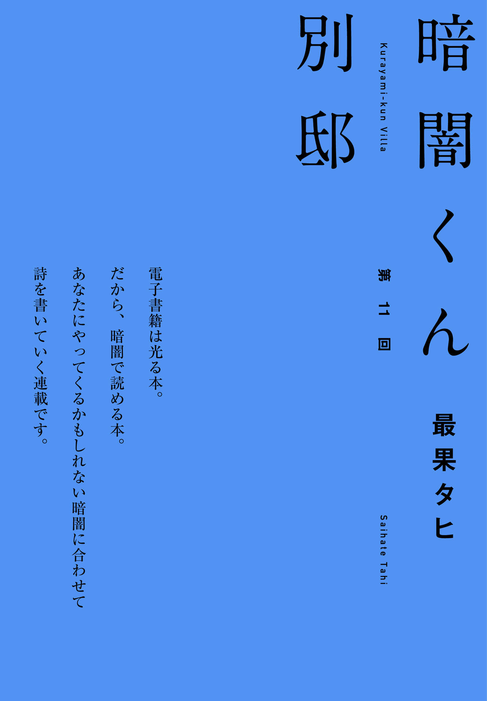
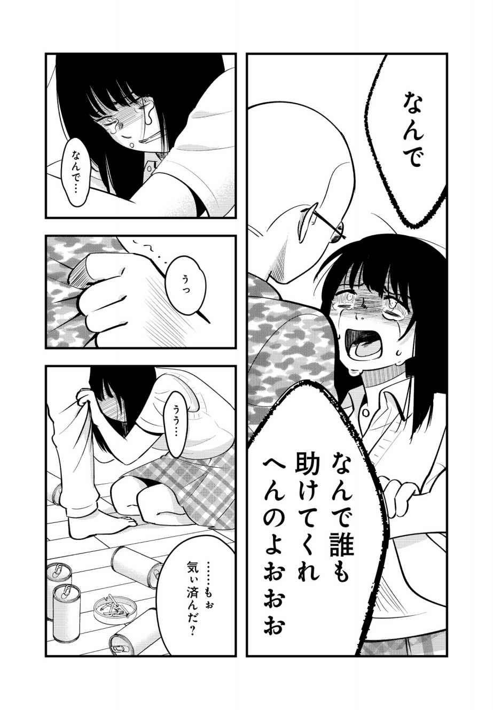
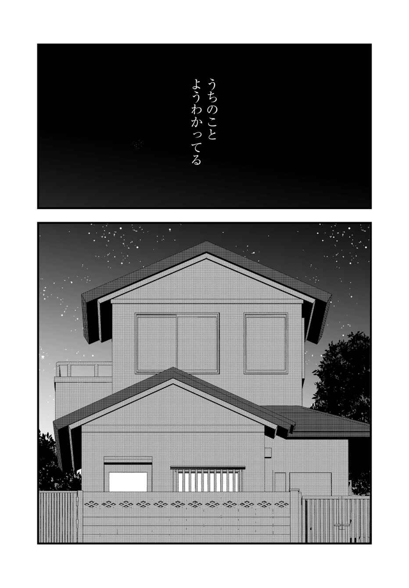
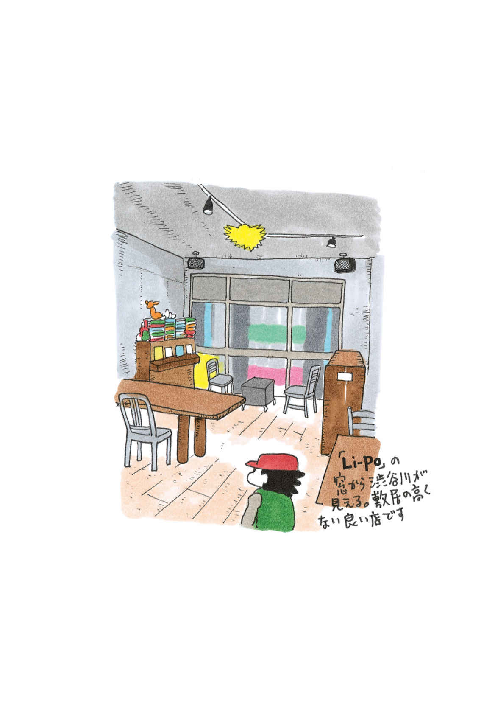
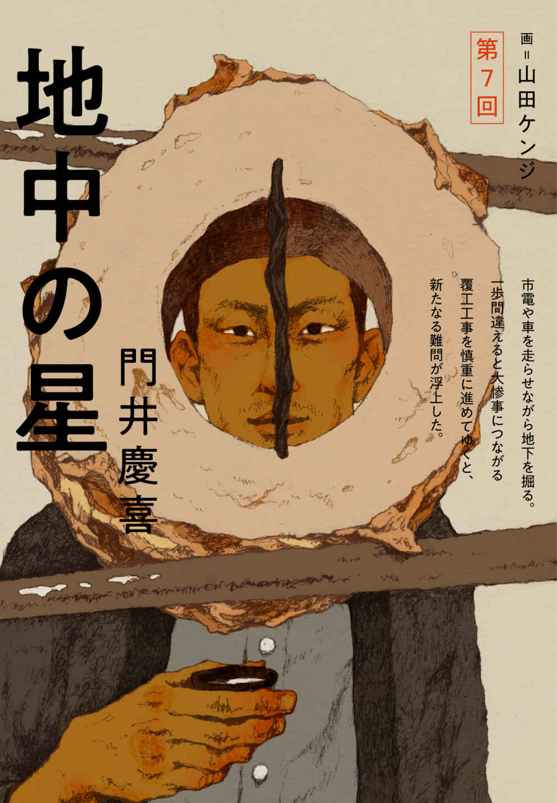
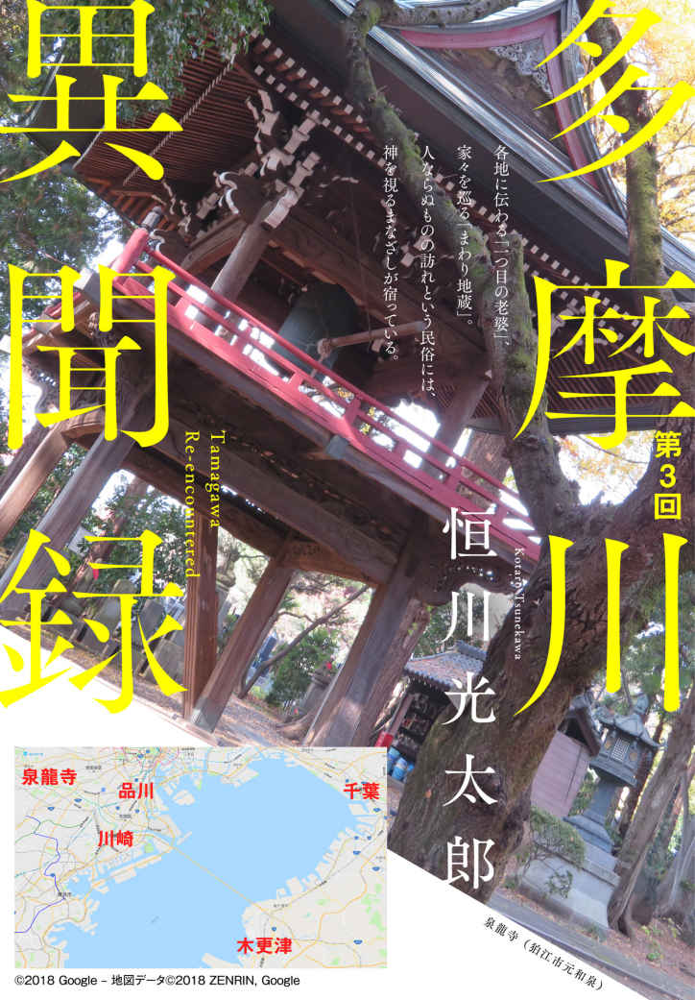
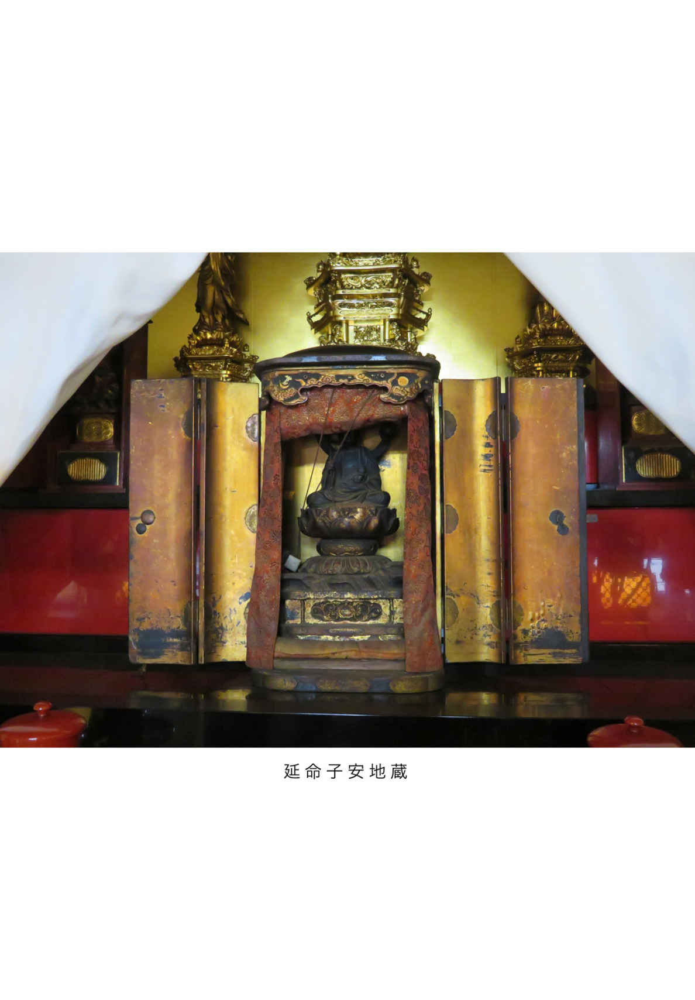

| yom yom vol.54（2019年2月号）[雑誌] | |
| 三谷匠衡 & macho & 今祥枝 & 小林勇貴 & 武内涼 & 花房観音 & 武田綾乃 & 最果タヒ & 東川篤哉 & 朱野帰子 & 寺地はるな & 結城充考 & 乾緑郎 & 吉野万理子 & 青柳碧人 & 九螺ささら & 門井慶喜 & ふみふみこ & 荻上チキ & 円城塔 & 平原卓 & 橋爪駿輝 & 渋谷直角 & カレー沢薫 & 恒川光太郎 & 柳瀬博一 & 新納翔 & 國友公司 & 新井久幸 | |
| 新潮社 (2019) | |
CONTENTS vol.54 ２０１９年２月号
SPECIAL ARTICLE
NEW SERIES
小林勇貴
武内 涼
SPECIAL STORY
花房観音
SERIES
武田綾乃
最果タヒ
寺地はるな
結城充考
乾 緑郎
青柳碧人
九螺ささら
門井慶喜
COMIC
ふみふみこ
CULTURE & COLUMN
荻上チキ
渋谷直角
カレー沢 薫

恒川光太郎
柳瀬博一
新納 翔
＊「そして、僕たちは舞台に立っている。」は本号休載です
表紙 イラスト／ 押見修造
表紙＋本文扉 デザイン／ 川谷康久 （ 川谷 デザイン）
【ご注意】
この本は縦書きでレイアウトされています。また、ご覧になる機種により、表示の差が認められることがあります。
この作品の全部あるいは一部を無断で複製・転載・配信・送信すること、内容を無断で改変・改竄することを禁止します。また、有償・無償にかかわらず第三者に譲渡することはできません。
あえて乱暴に言う。２０００年代は「海外ドラマは面白い」ことが証明された時代だ。そして２０１０年代は「テレビドラマ」「映画」の境界そのものが加速度的に曖昧になりつつある。
このトピックにはメディア的な語り口と、コンテンツ的な語り口がある。
メディア的に捉えれば、スマートフォンの普及とインターネットを使った映像ストリーミングサービスの登場によって、場所や環境によって視聴が限られていた世界から、いつでも・どこでも・どんな映像コンテンツでも視聴できる世界へのパラダイムシフトが起きている。
日本では既存のテレビメディアが依然として強く、ストリーミングサービスの存在感は感じにくいが、全世界で１億３０００万を超えるユーザーを抱えるネットフリックスや、ＥＣ世界最大手のアマゾンが提供するアマゾン・プライムといったサービスの登場によって、私たちの映像の視聴方法がよりアラカルトなテレビのようなものに根本的に変わってきていることが窺える。
２０１９年はアップルやディズニーもストリーミングサービスを開始することを発表している。その一方で、ハリウッドでは１００年以上にわたって続いてきた大手６スタジオによる映画製作・配給のしくみが崩れ始めており、ストリーミングは映画・テレビ業界そのものを根底から覆す革命ではないかとさえ言われている。
既存のテレビ局やハリウッド映画に負けじと、そしてこれらストリーミングサービスどうしの差別化を図るべく、質的にも映画に匹敵する、あるいは超えるような高品質のオリジナルコンテンツへの大規模投資が積極的に行われている。視聴方法だけでなく、コンテンツの質にいたるまで、これまでの「テレビドラマ」「映画」の分け方では区別が難しい作品が生まれてきているのだ。
メディアとしてはテレビ側に寄り、コンテンツとしては映画的な表現に寄っていく。そんなテレビドラマと映画の境界がもはや意味をなさなくなっていることを示す決定的な証左が、２０１３年に公開され、ネットフリックスが初めて単独で製作したオリジナルドラマ『ハウス・オブ・カード』だろう。
本作の最大の特徴は、ドラマとして初めて、従来の毎週１話ずつ放送するスタイルから、１シーズン分をまるごと同時公開し視聴者に鑑賞ペースを委ねる視聴スタイルを提示したことだ。13 話と便宜上の区切りは付けられているが、一気に観る人にとっては13 時間の映画のような視聴体験となり、区切って観る人には従来のテレビドラマのように体験される。このことについては、『ハウス・オブ・カード』のクリエイターであるボー・ウィリモンも、それまでのキャリアでテレビ作品を全く手がけていなかったことも手伝って「13 時間の映画」として第１シーズンを考えていたと述べている。
コンテンツとして異彩を放っていたこともまた確かだ。監督にはドラマコンテンツ初作品となる巨匠デヴィッド・フィンチャーを起用し、主演にはケビン・スペイシー、ロビン・ライトと、映画俳優としてのキャリアの頂にある２人を中心に据えるなど、極めて映画的な布陣で、ホワイトハウス内部の熾烈を極める政治ドラマを見事に描ききってみせた。
２０１２年当時、ネットフリックスがオリジナルコンテンツ製作に進出するという発表を、ハリウッドは冷ややかに受け流していた。もともとＤＶＤを宅配するサービス、インターネット上にハリウッドの映画コンテンツをストリーミング配信する会社に、コンテンツを作れるはずがないと。そんな下馬評をよそに、『ハウス・オブ・カード』はネットフリックス初のオリジナルドラマとして華々しくデビューし、テレビのアカデミー賞にあたるエミー賞を、テレビで放送されなかった番組として初めて受賞する快挙を成し遂げた。ここから窺えるように、本作は現在も便宜上「テレビドラマ」として扱われているが、従来のテレビの枠組みにまったくはまっていない。
この「テレビで放送されないテレビドラマ」であり「まるで映画のようなテレビドラマ」が私たちの「文化」を今後支えていくことになるであろうことは、疑いようのない真実である。これまで映画が担ってきた映像文化の文化的側面をテレビ的な物語が担っていく過渡期を、いま私たちは迎えているのかもしれない。
映像と音で物語を語る点において、テレビドラマも映画も本質的に変わりはない。この区切りが生まれたのは、ひとえに20 世紀の名残だ。20 世紀中盤までは、映像といえば映画一択であり、一般の人は映画館に行かないと映像を観ることができなかった。１９５０年代に入りテレビが一般家庭に登場すると、家庭でも映像が観られるようになり、映画興行の独占的なシェアを奪った。
これに対して映画業界は、特有のスノビズムによって映画のテレビに対する優位を主張し、自らの地位を守ろうとした。
その主張には、一定の有効性があった。映画が埋めなければならない「枠」は、映画館の日々のスクリーン数と上映スケジュールに依存するしくみのため、テレビと比較してコンテンツの供給量が非常に少ない。これに対し、テレビが埋めなければならない放送枠は24 時間×週７日分である。常にコンテンツ供給を求められるテレビにあって、映画のように何年もかけて映像をつくるということはできず、限られた時間と予算の制約の中で可能な限り効率的にコンテンツを量産しなければならないため、質を追求することにはどうしても限界があった。娯楽としては一定の水準を満たす作品であっても、「文化」として耐えうる映像作品を担うのはあくまで映画の専売特許であった。
かくしてテレビは映画よりも劣位に置かれ、そこに関わるスタッフや俳優にもはっきりと線引きがなされた。テレビの仕事から映画の仕事に「ステップアップ」するようなことがあっても、逆は起こり得なかった。それが、いまとなってはニコール・キッドマンとリース・ウィザースプーンが主演を務めた『ビッグ・リトル・ライズ』に代表されるように、トップクラスの映画俳優がこぞってテレビに出演しているのだから、時代が変わってきたと言えよう。
アメリカのテレビドラマの「隆盛」が始まったのは、世紀の変わり目に放送された『ザ・ソプラノズ 哀愁のマフィア』（１９９９‐２００７、６シーズン86 話）、そして『THE WIRE/ザ・ワイヤー』（２００２‐２００８、 ５シーズン60 話）の２作品を起点とする考え方が、アメリカでは一般的だ。いずれも、放送していたのはエミー賞を17 年連続で最多受賞しているＨＢＯというケーブル放送局だ。 "It's not TV. It's HBO" を標榜する彼らは、ストリーミング以前の時代から視聴者と直接課金によって結びついている有料ケーブル放送局という関係を活かし、従来の全米テレビでは放送コードに引っかかってしまうような、バイオレンス・セックス・ドラッグを扱ったエッジの効いた作品を製作し放送するようになった。強い物語を語るうえで必要なリスクをとれる環境を、有料ケーブル放送局が整えたのだ。
この路線に手応えを感じた同局はさらにアクセルを踏み込み、映画に迫る、そしてときには超えてしまうようなスケールのファンタジー・ドラマ『ゲーム・オブ・スローンズ』を製作・放送した（２０１９年最終第８シーズン放送予定）。他のケーブル放送局も負けじと『ホームランド』や『ブレイキング・バッド』といった大ヒットドラマを放送し、テレビドラマの全盛期を生み出した。
その間、映画業界では何が起きていたか。『Ｘ-ＭＥＮ』『ハリー・ポッター』『ロード・オブ・ザ・リング』に代表される、スーパーヒーローやファンタジーを主軸においたティーネイジャー向けのフランチャイズ映画の萌芽である。その理屈は、こんな具合だ。
「映画館に足を運ぶ客層は、ティーネイジャーが多い。そこで、彼らにとって認知度のある作品をもとに、大規模な製作費を投じて映画を製作し、全世界で公開しよう。リスクはあるがこのような作品が年間で１本でもヒットすれば莫大な利益を生み、他の映画が失敗してもその損失分を補填できる。そして、成功した作品は同じパターンを繰り返せるように続編や前日譚を用意し、人気映画のシリーズ（＝フランチャイズ）が作れるようにしよう。作品によっては、商品化展開も大々的に行って、ますますビジネスを膨らまそう」
水ものと言われる映画の興行ビジネスにあって、安定的に利益を生み出せるように考えて出た結論が、フランチャイズ路線なのだ。
映画を作るときに避けては通れないのが、製作費の問題だ。一般に、ハリウッド映画スタジオで製作される映画には大まかに製作費に応じたカテゴリ分けがなされている。30 億円規模までのローバジェット（低予算）映画、50 -70 億円規模のミッドバジェット（中規模）映画、そして１００億円規模以上のハイバジェット（大作）映画、といった具合だ。
スーパーヒーロー映画や、ファンタジー、ＳＦ作品は大作映画になりやすい。逆に、コメディやドラマ、伝記映画といったジャンルはそこまで製作費をかけずとも作ることができるので、比較的低予算で済む。
大きな製作費を投じる以上は、出来るだけその資金を回収したい。そのためには、すでに観客に知られている認知度の高い原作ものや、キャラクターを中心にすえた映画を作れば、観客に来てもらいやすい。そのような映画を大規模に作ってヒットさせたほうが、売れるかどうか分からない中規模作品を複数作るよりもリスクを抑えることができビジネスとして成立させやすい。
このロジックをもって、ハリウッドの大手映画スタジオは、多方面にわたるストーリーやジャンルの映画を作る方針から、安定的に大ヒットを生み出し続編をつくることのできる作品に集中的に投資する方針転換を図った。現在の各映画スタジオのラインナップを眺めてみると、いかに各社ともフランチャイズに依存したビジネスになっているかがわかるだろう。
たとえば、ディズニーには「マーベル作品」「ピクサー作品」「スター・ウォーズ作品」という、コンテンツ界最強のヒットコンテンツがひしめいている。ワーナーは「ＤＣコミックス作品」「ハリー・ポッター」シリーズを擁する。ハリー・ポッターにいたっては、本編シリーズが終わってしまうことが惜しくて「ファンタスティック・ビースト」につなげたという思惑が見て取れる。明確な代表シリーズ作を持たないスタジオでは、80 年代から90 年代にかけてヒットした作品のリメイクが次々となされているなど、どのプレイヤーも次世代のフランチャイズを見つけようと必死だ。
続編・前日譚・リメイクが興行カレンダーを埋め尽くす状況は、ビジネス的判断としては正当化されうるとはいえ、リスクをとった作品の出口をどんどん狭めていく。
質の高いオリジナルな物語と表現を追求する俳優や脚本家・監督は、より深く物語を語れる場所をテレビドラマの世界に見出していく。リスクをとる中規模映画を担ってきた作り手たちにとって、テレビがその活路となり逃げ場となった。
映画人にとってテレビという表現の場が魅力的である理由についても、コンテンツ的観点から説明しておきたい。
第一に、物語にかけられる時間のちがいがある。映画は一篇の完結した物語を２時間前後の時間をかけて語る表現方法である。これに対しテレビドラマは、その番組が続く限り時間をかけて物語を展開することができる表現方法だ。かける時間が長いことは、それだけ丁寧に登場人物の内面を描き、より深く掘り下げた物語を語れることを意味するので、視聴者にとってもより思い入れの強いコンテンツになりうる。これがストーリーテラーを惹きつけて離さないテレビの最大の魅力のひとつである。（『ブレイキング・バッド』が描いたさえない化学教師ウォルター・ホワイトが麻薬王に変化する物語を、２時間で語れるだろうか。）
第二に、リスクにたいする許容度のちがいもテレビのほうに軍配があがる。フランチャイズ路線が強まるなかで、万人にひろく受け入れられることを要求される映画は、表現する内容についてリスクを取りにくい状態に追い込まれがちである。一回限りの興行がなされる映画において、取ったリスクは興行そのものに打撃を与え命取りになりかねないからだ。いっぽうで番組によっては何十話と語るテレビドラマでは、特定の一話において取ったリスクは番組全体の印象を損なうものにはなりにくい。仮にリスクをとった結果の反響が悪かったとしても、その後に続く話数でカバーすることができるため、いかようにも対応が可能だ。
そもそも、強い物語はリスクをとることによって生まれる。受け入れられるかどうか１００％わからない中でもあえて表現し、さらけだすことによって、安全パイの表現よりも深く視聴者の心を打つことができるものだ。このリスクの自由は表現者である作り手にとっては何にも代えがたい。
製作スピードの速さは質を犠牲にすると先に述べたが、製作から公開までの時間が短いことは、世間で起きている出来事や時代精神の流れを番組に反映させやすい点で、有利にはたらく。映画がどうしても時代を反映する点に対しては後手になってしまうところを、テレビは小回りが利くのだ。こんな時世であればなおさらだ。
映像文化の担い手が映画からテレビに移るという現象のなかに、新たに登場したストリーミングのプレイヤーが組み込まれると、これまで以上にテレビと映画の融合はすすむ。ネットフリックスやアマゾンの隆盛により、既存の放送枠・上映枠にとらわれないストーリーテリングが可能になっていくからだ。もともとテレビドラマが60 分でなければならず、間にＣＭ休憩を一定数挟まねばならないと決めたのは、誰の都合だろうか。放送局の都合であり、作り手はこれに合わせてきた。いまは、１話20 分のドラマを作ってもよいし、同じシリーズ内で１話の長さが異なっていても全く問題はない。ストリーミングがもたらす形式の自由と、表現のさらなる自由は、作り手を惹きつけて離さない。
ここまで主にメディアの特性と歴史の変遷を簡単に紹介したが、視聴者の私たちからすれば、メディアが何であれ面白い映像コンテンツを観たいという結論は変わらない。「テレビ」「映画」などという区別自体が、もはや意味を持たない。映像コンテンツを渇望する私たちにとって、この変化は朗報だ。ストリーミングが壊すメディアと表現の枠組みをふまえ、作り手がいままで以上に本来的に表現したかったものを観られる機会が、すぐそこまで来ているのだ。
こんにちは、無類の映画好きｍａｃｈｏと申します。Netflix、Hulu、Amazonプライムビデオを駆使し、年間２００作品以上を視聴しています。
なかでもNetflixはダウンロードしておけばオフライン再生できる作品が多いので、スマホやタブレットに映画を入れて持ち運べるのがとても便利。２０１８年のエミー賞では最多の１１２部門でNetflixオリジナル作品がノミネートされるなど、クオリティの高さにも定評があります。
そこで今回は、「絶対に見ておきたいNetflixオリジナル作品10 選」をピックアップしてみました。
まだ見たことのない作品があればそっと「マイリスト」に追加しておき、テレビやスマホなどで楽しんでみてはどうでしょうか！
ビースト・オブ・ノー・ネーション
西アフリカの内戦を
必死に生き延びようとする少年兵
冒頭の15 分だけでも視聴すれば、リアルなアフリカの戦場の世界に飲み込まれてしまうストーリー展開が魅力。
まだ思春期も迎えていない少年アグーは政府軍に目の前で家族を殺され、逃亡中にゲリラ集団に捕まり兵士として部隊に加わらざるを得なくなる。
生きるために相手を殺さなければならない状況に置かれ、戦闘の中で残虐な行為を繰り返す少年兵たち。
なかでも、アグーが兵士として初めて人を殺すシーンは非常に鮮烈。
「果たしてこれは現実なのか？」「自分が子供の時に同じ立場だったらどうなっていたか？」と平和な日本に生きる私たちは、自問自答せずにはいられません。
映画 ビースト・オブ・ノー・ネーション
原題：Beasts of No Nation
２０１７年公開／１３７分
監督 キャリー・フクナガ
＊第72 回ヴェネチア国際映画祭でマルチェロ・マストロヤンニ賞受賞
このサイテーな世界の終わり
大好きな彼女を殺したい。
サイコパス高校生の青春
主人公ジェームスはサイコパスだと自認している高校生。周りと馴染めない転校生アリッサのことを殺してみたいという感情を隠しながら、彼女と恋愛をはじめる。無鉄砲な彼女と行動していると妙にフィットするという不思議な関係が続いて......。
テンポよく双方の視点に切り替わりながらストーリーが展開していくが、多感な思春期の感情を共有させてくれる演出が切ない。音楽の演出も印象的だ。
「サイコパス」と「青春ムービー」。相反する要素が入り交じった不思議な世界をカジュアルに描き、余韻を残すラストシーンも完璧。
１話たったの約20 分×全８話の構成は、長編海外ドラマを観る余裕がない人にもおすすめです。
ドラマ このサイテーな世界の終わり
原題：The End of the F***ing World
シーズン１／２０１７年～
監督 ジョナサン・エントウィッスル
＊シーズン２の制作も決定
マスター・オブ・ゼロ
どこに暮らせど若者の悩みは同じ。
デフへの共感で癒される
ニューヨーク在住、インド系アメリカ人のデフは30 代独身男。彼を中心に、人種マイノリティたちがニューヨークで生活する苦悩や楽しみをポップに描く。
特に、監督も務めるアジズ・アンサリが演じる主人公デフのキャラクターが憎めない。ジム・キャリーっぽい台詞や表情には思わずニヤッと笑えてしまう。
ライフスタイル、友情、恋愛......日本人でも共感できる若者の悩みを、デフが見事に再現してくれていて「あー、これ普通にやりそうだわー」と思わず共感できるネタがたくさん。
コメディ要素たっぷりながら、ダウナー系のヒーリング効果が高く、就寝前などにまったり見るのもおススメです。
ドラマ マスター・オブ・ゼロ
原題：Master of None
シーズン１～２／２０１５年～
原案＆主演 アジズ・アンサリ
＊脚本家リナ・ウェイスが黒人女性として、エミー賞史上初の脚本賞を受賞。
ナルコス
コロンビアに実在した
麻薬王と米麻薬捜査官の戦い
１９８０年代、コロンビアのパブロ・エスコバルは麻薬組織「メデジン・カルテル」により莫大な富と権力を築き上げていた。
自国の麻薬問題に悩むアメリカは、供給源となっていたコロンビアに麻薬捜査官を派遣するが、「メデジン・カルテル」が軍・政府・警察との結びつきを強めているために取り締まりは困難を極める。
どうしてもパブロを逮捕できないのが、このシリーズの面白さ。
パブロ・エスコバルを題材とした映画は数多くあるが、ジョニー・デップが主演を務めた「ブロウ」に匹敵するほど面白い。
４シーズン目は、新たなシリーズ『ナルコス：メキシコ編』としてスタートしています。
ドラマ ナルコス
原題：Narcos
シーズン１～３／２０１５年～
監督 ジョゼ・パジーリャ
＊つづくメキシコ編も２シーズン目に突入することが決定
ベター・コール・ソウル
あの「ブレイキング・バッド」は
スピンオフまで面白い。
大ヒットドラマ「ブレイキング・バッド」に登場する悪徳弁護士ソウル・グッドマンを主役としたスピンオフ作品。
本編の６年前、彼が真っ当な弁護士になろうと努力しながら貧しく暮らしていた日々から物語は始まる。どのように彼は道を踏み外し、金にあくどい弁護士に変貌を遂げたのか。
ソウルの魅力はなんと言っても人並みすぐれた〝話術〟だ。その抜群の能力を活かした交渉において、我々の記憶に残るワードが次々と放たれるさまは痛快。
映像の質感も共通しているので、「ブレイキング・バッド」にハマった方なら絶対に楽しめる。
ドラマ ベター・コール・ソウル
原題：Better Call Saul
シーズン１～４／２０１５年～
制作 ヴィンス・ギリガン
＊シーズン５の制作も決定。そろそろ「ブレイキング・バッド」に追いつくかも？
イカロス
Netflix初のアカデミー賞受賞作品は
戦慄のスポーツドキュメンタリー
第90 回アカデミー長編ドキュメンタリー映画賞を受賞した本作は、スポーツ競技におけるステロイド使用＝いわゆるドーピング問題に迫ったドキュメンタリー。
自転車選手である監督のブライアン・フォーゲルは自らにドーピングをし、ドーピング検査をパスできるか実験することにした。そこでロシアの科学者ロドチェンコフ（反ドーピング機関所長）に協力を要請。
しかし、そのロドチェンコフがロシアの国家的なドーピング計画に関与していることがしだいに明らかになり、国際スポーツ界を揺るがす大スキャンダルが発覚する。
ちょっとしたドーピング実験をするだけだったはずが、気がつけば国家絡みの恐ろしい陰謀に巻き込まれる展開には手に汗を握る。
冒頭の30 分とエンディングの30 分の内容があまりに違うのは、製作者も意図していなかったことであろう。
映画 イカロス
原題：Icarus
１２１分／２０１７年
監督＆出演 ブライアン・フォーゲル
＊第90 回アカデミー賞でアカデミー長編ドキュメンタリー映画賞を受賞
殺人者への道
「彼は本当にやったのか？」
全米が激論の渦と化した問題作
ウィスコンシン州の田舎町に住むスティーヴン・エイヴリーは、レイプ事件の罪を着せられ刑務所に18 年服役したが、２００３年新たにＤＮＡ鑑定が採用されたことで無罪が証明されて釈放。釈放後は冤罪撲滅と名誉回復のために郡と警察を相手にした民事裁判を起こして人生の再出発を始めた。
ところがその矢先、別の殺人事件の容疑者として再逮捕されてしまう。訴訟から逃れるために警察機構がでっちあげたのだと再び冤罪を主張するエイヴリーだったが、有罪判決を受けて仮釈放なしの終身刑に。
「彼は本当にやったのか？」
大手メディアや有名人らが次々と持論を述べ、ドラマを見た視聴者が大統領に恩赦を求める署名活動を行い、最終的にはホワイトハウスが声明を出すまでに至った問題のドキュメンタリー作品です。
ドラマ 殺人者への道
原題：Making A Murderer
シーズン１～２／２０１５年～
監督 ローラ・リッチアーディ、モイラ・デモス
＊10 年の歳月を追った本作は、エミー賞で４冠に輝いた
ストレンジャー・シングス 未知の世界
アメリカのオールドムービーを彷彿させる、
少年少女たちの友情と冒険
インディアナ州の小さな町で12 歳の少年ウィルの失踪事件が起きた。親友を助けるべく立ち上がった３人の子供たちは森で不思議な超能力を持つ少女エルと出会う。
エルをかくまう少年たちは、町の研究所で行われていた恐るべき実験や政府の極秘計画を知るが......。
次々に超常現象が起こり、アドベンチャーとＳＦホラーを合わせたような展開は、スティーヴン・キングや80 年代のスピルバーグの世界観が好きな人なら〝どハマり〟するはず。一度見始めると止められない、中毒性の高い作品です。
ドラマ ストレンジャー・シングス 未知の世界
原題：Stranger Things
シーズン１～２／２０１６年～
制作 ザ・ダファー・ブラザーズ
＊シーズン３の制作が決定。
最後の追跡
貧困にあえぎ犯罪を繰り返す兄弟が
守りたかったものは
バツイチだが養育費も払えないトビーと刑務所帰りの兄、タナー。兄弟は、亡き両親が遺した西テキサスの牧場を差し押さえから守るため、連続銀行強盗に手を染め次々と襲撃を成功させていく。
彼らを追うのは先住民の血を引くテキサス・レンジャー、マーカスと相棒のアルバート。ついに兄弟の襲撃計画を見破り、銃弾が飛び交う日が訪れる。
けしてドンパチだけではないストーリーラインの緻密さが秀逸。カントリーソングとマッチしたテキサスの風景を好きになってしまいます。
映画 最後の追跡
原題：Hell or High Water
１０２分／２０１６年
監督 デヴィッド・マッケンジー
＊第89 回アカデミー賞で作品賞を含む４部門にノミネート
13 の理由
彼女はなぜ自殺したのか？
遺されたテープに真相が
密かに想いを寄せていたハンナ・ベイカーが突然自殺した。２週間後、主人公クレイの自宅に届いたカセットテープには彼女が命を絶った「13 の理由」が彼女の肉声で録音されていた。
１話ごとにテープの中で明かされる自殺の理由それぞれが連鎖して、新事実が解き明かされるスリリングさは「ソーシャルチェーン・ミステリー」と名付けられた全く新しい手法ならでは。
高校生の自殺というショッキングなテーマへの是非も含めて話題を呼び、全米で社会現象となった。
２０１７年Netflixで最も観られたドラマ作品の一つです。
ドラマ 13 の理由
原題：13 Reasons Why
シーズン１～２／２０１７年
原作＆制作 ブライアン・ヨーキー
＊制作総指揮を女優セレーナ・ゴメスが務めたことでも話題に
第一回
# metoo運動のその先を見せる恐怖のドラマ
レディー・ガガ主演で話題となった『アリー／スター誕生』を昨年９月に試写で観た際に、へえと少し意外な気もした。37 年の映画『スタア誕生』以来三度目のリメイクとなる本作は、最初の二作が映画業界、後の二作が音楽業界を舞台にしているという違いはあるけれど、大筋は同じである。才能を見出された主人公は、スターダムを駆け上がると同時に激しい恋に落ちるが、女性の成功に反して男性は落ち目になっていく。過去作と見比べながら「女性の自立」について改めて考えてみることは、興味深い体験だった。今回のバージョンで初めてこの物語を知ったみなさんは、どう受け止めたのだろうか？
１年３６５日、ライターとして海外エンタメを追いかけ続けてうん十年。最近になって、昔観た映画を見返すことが以前よりずっと面白いなと思っている。特に17 年10 月、ハリウッドのセクハラ告発に端を発した#metoo運動が世界的に広まりを見せて以降、自分自身の作品の見方、視点や意識も随分と変わった。
名作に感じた違和感の正体
『マイ・フェア・レディ』という映画及びミュージカル舞台がある。言語学が専門のヒギンズ教授が、ひょんなことから下町生まれの粗野で訛りの強い英語を話す花売りの娘イライザを、レディに仕立て上げられるかどうかで賭けをすることになる。かくしてイライザは美しくレディへと変貌を遂げ......？ というのが大筋。映画ではオードリー・ヘプバーンのチャーミングな演技や素晴らしい衣装の数々に魅せられるし、共演者たちも等しく好演、楽曲の素晴らしさにも心は踊る。現在にいたるまで高い人気を誇る名作としてよく知られている。
なのだが、私は子供の頃にテレビで見て、この物語が気に入らなかった。そもそも女性の成長を賭けの対象にするのもどうかと思うが、一番納得できないのはイライザとヒギンズがハッピーエンドになるんだろうなと示唆する幕切れだ。これって大ヒットした映画『プリティ・ウーマン』（『マイ・フェア・レディ』の原作であるバーナード・ショーの戯曲『ピグマリオン』のプロットとの共通点は多い）にも通じるのだが、ケッと思ってしまったのだ。とはいえ大人になっても深くは考えなかったし、好みの問題なんだろうなと思っていた。
だが、18 年３月よりブロードウェイでリバイバル上演が始まった『マイ・フェア・レディ』のラストが、イライザは自立してヒギンズのもとを去ることを示唆して終わると知って驚いた。そうだよね！ やっぱり今の時代にこの物語を語るならそれだよね！ と我が意を得たりという感じ。
そもそも『ピグマリオン』を読むとわかるのだが、ハッピーエンドバージョンは大衆受けを狙った興行主による改変である。これにはショーも腹を立てていたようで、『ピグマリオン』（光文社古典新訳文庫／訳・小田島恒志）の一九一六年以降の版には、舞台のラストに対するショー自身の反論として、イライザとヒギンズが結ばれない理由が長々と解説されている。
私が子供の頃にこの作品を好きになれなかった理由も、「結局のところ最後は男性に頼って生きていくのか」みたいな落胆だったのだろう。フェミニズムなんて概念が全くなかった子供時代でも、自然と自分の中にはこうした違和感があったんだなあと思う。
もちろん、過去の名作をあげつらって、今の時代にここがヘン！ と摘発して回るようなことをしたいとは思わない。大衆受けさせるための工夫や改変なんて、いくらでもあるし、それが当時の世間に受け入れられるのであれば、興行としては大成功である。
一方で、こうした作品が作ってきたステレオタイプな女性像や幸せの形が、今の時代にある女性の生きづらさやセクシズムにつながっているかもしれないと考えることもまた自由だし、違和感を覚えたなら理由を問うことも大事だと思う。そして、エンターテインメントが作り上げたイメージによって刷り込まれてきた価値観が、今の時代にはもう古くなったのだと認めるのも、悪いことではない。
こういう話をすると、「意識高い系な感じ」「めんどくさい」という声が聞こえてきそうだ。いや、実際のところ私だってそれほど意識高い系というわけじゃない。映画オタク、ドラマオタクとしてそれを生業にしていたら、必然的に啓蒙されてきたわけで......。
最近ではこんなことがあった。Netflixのオリジナルシリーズに『ハウス・オブ・カード 野望の階段』という政治スリラーがある。その最終となるシーズン６で、降板した主演のケヴィン・スペイシー扮するフランクに代わり女性初の合衆国大統領となった妻クレアが、自身が女性であることを逆手に取って利己的な政策を通そうとする。その際に放つ、ミソジニスト（女性嫌悪）の対義語であるミサンドリスト（男性嫌悪）という言葉。前者はおなじみだが、恥ずかしながら後者は知らなかった（劇中でクレアも指摘しているが、なぜ前者の方がよく知られているのかも興味深い）。即座にネットでぐぐったところ、すでに深い議論が無限に展開されていた。ドラマをきっかけに新しい知識を仕入れ、そこからいろいろと考えを巡らせるのは楽しいものだ。
こうした価値観の更新の話に過剰反応して「ポリコレがエンタメをつまらなくする」とお嘆きの方をSNS上で多く見かける。
だが、ポリコレはエンタメを窮屈なものになんてしていない。その証拠に今、びっくりするほど革新的で画期的、過激で刺激的だったり、あるいは実験的でユニークな映像作品が綺羅星のごとくひしめいている。特に各界からの才能が集まり、質・量ともに過去最高の記録を毎年更新し続けているアメリカのテレビ業界のゴールデンエイジぶりたるや。オンライン動画配信サービスのNetflix、hulu、Amazonなどのオリジナル作品の活況によって、アメリカの映像エンタメはさらなる高みへと進化し続けている。
だからこそ、意識高いとかじゃなくて、一番面白いエンタメを考えたらやっぱり社会のことを考えざるをえなくなる。現代が要請する価値観の更新を反映させてこそ、今の時代にとって一番面白い作品が生まれるんじゃないか──そう思わせてくれる素晴らしい作品をこの連載で紹介していきたいと思う。
＊
今のアメリカの映像エンタメが女性をどう描いているか。これはやはり#metoo運動が起こる以前と以後で変わってくる。
トランプ政権が１月に誕生した17 年の上半期には、〝ハリウッドで何かが起きている〟。そんな風に感じさせる女性が主体の物語やキャラクターがたくさん生まれた。特に近年、目覚ましい発展を遂げているテレビドラマには、#metooムーブメントにつながる機運があった。伝説の銀幕スターの実話から、ハリウッドに蔓延するエイジズムやセクシズムが浮き彫りになる『フュード／確執 ベティvs ジョーン』、主演女優たちが現場でも製作者としても主体となり、子供を持つ現代女性たちの心の叫びを伝える『ビッグ・リトル・ライズ』や社会現象となった『ハンドメイズ・テイル／侍女の物語』は、この年のアワードを席巻した。一方、映画では女性ヒーローが活躍するアメコミ大作『ワンダーウーマン』が大ヒット。女性をエンパワーメントする作品群に高揚感を覚えた。
「産む機械」として女性を描く
#metooの世界で女性はどう描かれているのか。これがなかなか怖いことになっている。その代表格が『ハンドメイズ・テイル／侍女の物語』のシーズン２に見ることができると思う。
カナダの作家マーガレット・アトウッドが、85 年に発表したディストピア小説『侍女の物語』。これをhuluがドラマ化した本作は、環境汚染などの理由で出生率が極端に低下した近未来の世界において、アメリカでクーデターが起こりギレアド共和国が誕生する。全体主義的かつキリスト教再建主義的な勢力が支配するこの国で、妊娠・出産が可能な女性は〝子供を産む機械〟＝侍女として支配階級に仕えることになる。儀式という名の望まない性交渉を強いられ（レイプ）、名前も自由も家族もすべてを奪われる。〝生産性〟こそがすべてという価値観の下で、その〝生産性〟を有する女性たちはあり得ないほど不自由で不幸なのだ。
一方、支配階級でもなく生産性のない人々はどうなるのかといえば、高齢者や障害者、妊娠出産が不可能な女性、同性愛者たちには、虫けら以下の扱いが待っている。特権階級以外に生産性のない人間に人権なんてないのである。ちょっと待てよ、と思った人は多いはず。これってどう考えても昨年日本で紛糾した生産性云々をめぐる「新潮45 」問題と直結してますよね？
本作のシーズン１がアメリカで配信開始となったのは17 年４月から。それはもうセンセーショナルで多くの人々、特に女性たちに多大なる危機感を持って受け入れられた。日本に上陸したのは遅れて18 年２月のこと。シーズン２は本国では18 年４月に配信開始となり、日本でもタイムラグが比較的少なく８月から配信開始となった。アメリカのドラマは社会の空気を反映することにスピーディなので、時間差少なく見られるのは嬉しい。
うっすらと希望も見えたような気がしたシーズン１のラストだったが、#metooを経てのシーズン２は原作の世界を離れて完全にオリジナルの、想像をはるかに超えた陰鬱な物語が展開する。妊娠した侍女の主人公ジューンが、日増しに大きくなるお腹を抱えながら、これでもかと辛酸をなめる物語は正直娯楽としてみるのはキツイと思う回も少なくない。それでも、このドラマの何がすごいかといえば、彼女たちの目、物言わぬ表情と瞳に宿る怒りの感情である。
特にジューンを演じるエリザベス・モスの演技が凄まじい。顔を隠す大きな白いかぶりものの下で、息をひそめるようにして〝個〟を押し殺してきた女性たちが、シーズン２になるとさまざまな表情を見せ始める。悲しみや絶望、諦めることを通り越して社会を呪い、運命を呪い、この状況になるまで行動しなかった自分たちへの、そして人権を踏みにじるすべてのことに対する怒りが露わになるのを見て、ああ、そうか、女性たちはずっと、もっと激しく怒ってるんだ。女性たちはまだまだ怒っていいんだ！ と思うのだ。
シーズン２では侍女たちやジューンが仕える支配階級の女性セリーナの過去をより詳細に描くことによって、これまでにわからなかったそれぞれの事情がつまびらかになる。そこから見えてくるのは、別の角度から見れば被害者が加害者であることもあれば、加害者が次の瞬間には被害者にもなり得るということだ。
たとえばセリーナの夫の子を身ごもり、臨月に入ったジューンが、過去のある出来事から子供を産めない体となったセリーナに対して優越感を抱いていることがはっきりとわかる（示す）シーンがある。私自身、既婚だが子供はいないし既にアラフィフなので、ここはセリーナの心中はいかばかりかと息苦しさを覚えた。被害者であるジューンを憎らしくさえ思ったほど。ドラマを見ながらセリーナがジューンにしてきた仕打ちを心底ひどいと思うことも多かった。だが、セリーナもまた司令官である夫の支配下にあり、ある意味では犠牲者でもあることがわかるにつれて、女って悲しい生き物だなとつくづく思う。望むと望まざるとにかかわらず、妊娠出産といった生殖機能を備えているのは女性だけ。産むか産まない（産めない）かで女性の価値を決めるのは間違いであるが、やはり一言では語れない感情が女性同士にはあるのだ。
女性だからといって弱者というわけでもなければ善人というわけでもない。でも、性格が悪いとか道徳的に正しくないとか生き方が立派でないからといって、ジューンやセリーナのような目にあっていいはずはない。『ハンドメイズ・テイル／侍女の物語』は、シーズン１では沈黙を強いられてきた女性たちの苦境を伝え、シーズン２では女性のあり方がどれほど多様であるかを伝えている。女性を女性というくくりではなく、一人の人間として考えるべきだというフェミニズムの根本を再確認させられる。
#metoo運動の次の段階。それは女性だからといって一枚岩として闘うことを強いるのではなく、女性にもさまざまな立ち場があり〝個〟であることを再認識した上で、これまでの古い時代の慣習や理不尽な社会は終わりにしようというTime's Upのムーブメントを継続し、発展させていくことではないか。
もっとも私は二項対立で物事を語る人が苦手だ。男性対女性といった構図は本当に好きになれない。だが同時に、本作を観ながら改めて圧倒的な男性の力の前に屈せざるを得ない現実を見せつけられる思いがするのも確かだ。映像表現の面においてもホラータッチであることは、何かの悪い冗談のよう。この悪夢を現実のものにしないために、私たちが今できることはなんなのか。そう思わずにはいられない。
（つづく）
＊このコーナーは次号以降も連載します。
男前の殺し屋は
香水の匂いがした
「でっかい指輪をはめてるな」
「安かねぇんだ！」
「安心しろ、そいつには当てねぇよ」
曲がったネクタイを気にして死んだ
寝ぼけ顔の殺し屋は
寒そうに震えてた
「女を抱いてきたのか？」
「あたりきよ！」
「湯たんぽを抱きな」
熱い鉛を抱いて死んだ
「殺しのブルース」作詞／具流八郎
第一話『Ｅ‐34 』
鳥の糞の集中砲火を浴びたような柄をした猫が、ちぎれかけた足を引きずりながら、慣れた様子で団地の敷地に入っていきます。
見た目はよくある団地です。植え込みには苔むした発泡スチロールや、くすんだ色の三輪車が無造作にくたばっています。
だからといって全体的に悲しげなわけではなく、パンジーが過剰に植えてある、そういうハイカラさんな一角もあります。
変わったところがあるかといえば、あります。「ホッピー」「ラーメン」と書いた赤提灯が柵から伸びている部屋、廃材や廃タイヤを組み合わせて造られた謎オブジェのある中庭、物干し竿に無数に銃をかけている銃器天日干しの部屋、など。ですが、普通の団地にもこう言った変わり者は必ずいるので、おかしくはないでしょう。
三階建の棟がエー棟からイー棟まであります。それぞれを区切るように駐輪場があって、そこには普通のスクーター、ママチャリ、シニアカー、暴走族の改造バイク、雨水の溜まった子供用のプール、そしてカタワ猫が住むダンボール。
片足を怪我した猫。カタワ猫。ここの住民の車に轢かれたのか、付近に生息する鷹や鳶 に千切られたのか、おそらく随分昔の怪我なので、骨が飛び出すほどに抉 れた足は変形したままくっついてしまっています。動かなくなったその足をアスファルトに擦らせながら徘徊するので、摩擦でちぎれて、常に血がにじみ、別の骨が飛び出たりしています。
徘徊が終わったカタワ猫がダンボールの部屋にご帰宅し、未練たらしく自分の足を舐めはじめました。名前はないのでしょう。住民がこの猫に対して何かする姿を一度もみたことがありません。
傷口をずっと舐めています。すると前足の一部を噛んで、びぃーびぃー、と引っ張りはじめました。ピンク色をした部位が伸びて、それに合わせて黄ばんだ液体がどぴっどぴっと飛び出します。いつも足にたかっている蠅も、「さすがにコレはヒキますわ」といった感じで飛び立ちました。
カタワ猫、ハエ友にも嫌われて、それじゃおまえダメだろう、どうしたんだよ。
俺がそう思ってカタワ猫に近づいて、さっきからびぃーびぃー引っ張っている傷口をよく見ると、使用済みのコンドームが縛ってありました。
俺はな、この団地の、ここのヤツらの、こういうところが嫌いなんだ。頭に血が上り、鼻を通る空気を冷たく感じ、脇の辺りに粘り気のある汗が流れます。
団地の入り口に生えている大きな木が、揺れ始めました。暴走族、魑魅車駆 の下級隊員たちが登り始めたのです。陽が落ちはじめると彼らは団地で一番大きなこの木に、下から数えて十五番目の身分の者たち全員で登るのです。監視のために。
魑魅車駆のアジト、ディー棟の11 。ディー棟にはスプレーで「ＤＭＭ．Ｒ18 はＦＡＮＺＡに変わりました」「西野カナのトリセツは人身売買の暗号！」などといった落書きが書いてあり、そこで彼らは電子大麻を製造しています。
電子大麻の作り方。
① 一般人が二日酔いを防ぐために飲むウコンの飲料のキャップを外し、そこにいくつか穴を開ける。
② 容器に大麻のリーフを入れ、キャップをする。
③ 缶の底に穴を開け、その穴からＬＰガスを注入。
④ 穴の空いたキャップから大麻のジェルが出てくるので、これをドン・キホーテなどのディスカウントストア等で手に入る電子タバコのケースに入れる。
どこで所持してもバレない、怪しまれない、電子大麻の完成です。
彼らが電子大麻を大量生産して資金源としている事は、俺にとっては特にどうでもよく、それより、彼らの隊長がどんな人間なのか、そっちを知りたいのです。暴走族というのは本来ヤクザの下部組織で、ヤクザは不良たちに特攻服を高額で売りつけ、それを着ることで不良たちは庇護下に入り、暴走族として自由にバイクを乗り回すことができます。
暴力を買って、安全を着ているのです。
それが魑魅車駆の場合は全くの逆。完全に兵隊化された隊員たち、電子大麻のような流行と波長の合った商売に即座に着手し、柔軟に工場化させる組織力。俺がここへきてからの数週間たらずの間に、ヤクザと思しき人物が、この団地の広場で拷問、処刑されるのを四回ほど目撃しています。
そんな組織の隊長。俺が知りたいことを知っているに違いありません。
早くしなければ。
猫の腐敗した足から漂う饐 えた臭いが、急激にキツくなりだしました。と思ったその時、俺の頭が鷲掴みにされました。ぐあんぐあんと撫で回されます。大人の手です。この悪臭、頭を強引に撫で回して来る感じ。俺の同居人のカマテツです。カマテツは糖尿で壊 死 して何倍にも腫れ上がって皮膚が裂けたりしている片足を、ビニール袋とか新聞紙で包んで膿の悪臭、悪汁を誤魔化そうとしている男です。
「ガキマラよ、放牧はいーかげん終わりだら。ケツメド仕込んでやるだから、帰ぇる帰ぇるだよ」
カマテツは俺の首輪にガチリとリードを引っ掛けるとぐいいと引っ張って、俺の顔を股間に押し当てます。
「猫がかわいそうだったんだ」
カマテツは大きくのけぞって
「しっぱいした！ あーしっぱいした！ 三日ぶりに飯をやったらもーこれだら！ 俺を親かなにかと思いやがってからに、歯ァ抜いとけばよかっただ。したらば、おしゃぶりもマシになったろうし。いいだか？ こんな畜生のことぁどーでもいいだ。ひどい目にあうのはそいつの因果だらに、自己責任だらに」
ひどいめにあうのはそいつの因果。
ダンボールの中でカタワ猫は、丸めた体の隙間から目だけをこちらに向けてじーっと見ていました。猫は俺がこれからどうなるか、どんなひどい目にあうかを期待して見てるようでした。そりゃあ、仕方ないよね。
カマテツが強引にリードを引っ張りました。首輪が食い込み息ができません。引っ張られるたびに、目の前がザラザラした白とチカチカした黒になって自分がどこを歩いてるか曖昧な状態になりましたが、倒れたら気にせず引きずられるだけなので、俺は意地でも歩こうとしました。
イー棟の三階、34 号室。俺の部屋、俺たちの部屋です。
カマテツは部屋に入ると、すぐ俺の首輪を外してくれました。
「大丈夫だか？」
「うん。やべーけど、あれくらいでないと」
「そっちはどーだっただ？」
「こっちも特に、何も、」
「俺ぁ少し気がかりなことがあるから、夜また調べてくるだ」
隣の、子供部屋から弟のモトキが顔をだしました。
「おかえりなさい」
俺はモトキにうなずきました。
俺たちはこの団地では、カマテツの愛玩動物ということになっています。
一般的な団地ではどこも申し込みの資格や条件がありますね。「円満な生活が営めるかどうか」「生活困窮者であること」など、まあ余計なお世話ですが。
この団地にも入居条件があります。指定された五人を殺害することです。
カマテツはこの団地に住むために最低ノルマである五人の三倍、十五人を殺害して入居の権利を得ました。同じ時期に入居希望者が三組ほど重なっていたらしく、殺害のターゲットが他の入居希望者とかぶってしまい、殺害の実行現場は混乱。たまたまその場に居あわせた養護老人施設の送迎バスを乗っ取ったカマテツは、決死の覚悟でターゲットと、他の入居希望者に突撃。全員を殺したそうです。片足が糖尿で壊死しているにもかかわらず、警察に捕まらずに、よく逃げきれたものです。
「殺害ターゲット五人の決め方がまた、くそふざけてるだよ。ここの管理職員てぇ男がタウンページをテケトーにめくって、指でピッ！ こいつを殺してこい、なんて言うだよ」
そんなやり方で別の入居希望者とターゲットがかぶるなんて偶然があるか？と思いましたが、どうやら不幸にもそうなったらしいです。
この団地に子供は住めません。その子供が殺人者であるか、入居者の性奴隷・愛玩動物でない限り、子供は「持ち込めない」のです。
なので俺と弟は、カマテツに性奴隷として犯されているという事を他の住民たちに印象付けなければなりませんでした。入居した最初の頃は朝から夜までカマテツにオカマを掘られ、絶叫し続けるハメになりました。
凶暴な殺人者である住民たちに一度疑われると、不法入居扱いをされ、俺も弟も殺処分される可能性があります。そうなってしまっては俺と弟がこの団地に来た意味がありません。この団地で何としても生き延びて、俺と弟はある人を見つけ出さなければならないのです。
「ローションも何もいらない。血が出ようがクソが漏れようが、ヤリぬこう、強い印象をこの団地のキチガイどもに与えるんだ」
俺はカマテツにそう言いました。わざと犯される場所をベランダにして、四六時中犯されました。見せつけるようにベランダの柵にしがみついて、前後運動に合わせて嘔吐をし、泣き叫びました。弟の分まで。
犯され続けてから部屋に戻ると、カマテツは俺を慰めるつもりで
「わるいもんじゃなかった」
そう言いながら壊死して脂ぎった足を包んだビニール袋を、照れ臭そうにかきむしります。
俺はまた盛大に吐いてしまいました。
数日の間は住民たちから怪しまれず、疑われずに過ごすことができました。部屋のチャイムが鳴りました。団地に住むようになってから初めてのことです。
カマテツがチェーンをつけたままドアを薄く開けます。俺とモトキは部屋の角で縮こまりながら、その様子を見ました。他の住民のことを知っておきたかったので、相手からは死角になっているところから会話を聞こうと思ったのです。
カマテツが薄く開けたドアの隙間を、その男は強引に広げました。ドアチェーンが引っかかり、それ以上動かないことがわかると、男は自分の眼の前に引っ張られたドアチェーンを嫌みたらしくいじくりながら、ドアの隙間に強引に体をねじ込み、顔を左右させて部屋の中をねめ回しました。
男の肌は浅黒く、鼻や目と唇、耳、至るところに黒いピアスが何個も付いています。男が呼吸を荒くすると、鼻のリング状のピアスが揺れます。腕も足も手も指も細く長く、服装は上から下まで全身が黒く、肘や肩や膝にリング状のアクセサリーを何個もつけています。そのリングに締め付けられて、体の関節が異常に細くなっています。
どこか昆虫じみていて、黒くて巨大なナナフシに見えます。
ぎ、ぎい、ぎっぎっぎ、と男がもたれかかるごとにドアの留め具が弱い悲鳴をあげました。
「こ、こここここ、こんにち、、、、は」
男はひどい吃音で、挨拶をしました。
何度もドアに強引にもたれかかり、全身で貧乏ゆすりのような動きをしています。ドアの弱々しい金属音が響きます。しつこく乱暴な動きを繰り返されたら、ボロい玄関は破壊されるかもしれない。異常な風貌と態度、この団地に住んでいる以上はこの男も勿論殺人者です。もしドアを破ったら、部屋の中に入ってきたら、この真っ黒男は、俺と弟に何をするだろうか？ そう思うと粘り気のつよい汗が鼻の上に浮かび、緊張で喉が渇いて首が締め付けられます。
「お、おい、」
とカマテツが動揺しながらその動きを止めさせようとすると
「く、くろじま、かげと、という。お、お、お、お、お、お、お、お、お、オレ。は」
くろじまかげと、そう自分の名前を告げると、部屋の中に強引に手を伸ばして、ファイルのようなものをカマテツに渡しました。
「か、かかっか、かいらん、ばん、でぇえす」
回覧板！ 殺人者しか住んでいないこの団地にも、そんなものがあるなんて。
「こんなのもあるだな。ありがとう、じゃあ」
カマテツがドアを閉めようとしますが、くろじまかげとはドアから身を引こうとはせず、むしろ先ほどよりより一層、黒く細い体を強引に玄関の隙間に突っ込んで来ました。
ねじ込んだ首を左右に動かしながら、黒目がちの目はゆっくり、ねばっこく揺れています。その目が俺とモトキを捉えました。
「おにいちゃんあいつ」
モトキは小声でいいました。不安そうに握ってきた手は、汗でぐっしょり濡れています。
「ここは死角になってるはずだ。みえてるわけがない。大丈夫だ」
突然、くろじまかげとの目は大きくなり、ねじ込んだ首を俺とモトキのいる場所めがけて、ぐいいと伸ばす仕草をしました。
ごきん、ごきんと音がして、その音がするごとに、首が伸びていきます。まるで古びた三脚をレバーを引いて伸ばすみたいに。
くろじまかげとは、異常に伸びた首と、眼筋をフル稼働させて巨大化した目でこちらを凝視しながら
「ががががが、がきが、いたな、、？、、、こっっっっこの部屋にはっ、ああ、」
カマテツの額には、少し離れた俺からもわかるくらい濃い脂汗が吹き出ていました。
「それがどうかしただか？」
「さ、さいきんきかない。あえぎごえ、おすぶたの、ようなやつ。前は、はっはっ、派手に犯していた、ベランダ。でな。おお、おもしろかった。野原の、ぶたさんのようで、で」
「俺も歳だかん、なかなか勃 起 ないだよ」
「ぶたのようで、おもしろかった。また、また、や、やれ！ いま！」
「人前ではやらないらに」
「なら、なぜ、ベランダでやった。おかしいぞ、おまえ。おまえ、おまえ」
くろじまかげとは首は俺たちに向け、黒目だけをカマテツの方に動かし、睨みつけはじめました。細く浅黒い手が小刻みに揺れ、ドアチェーンを強くつかみました。
入ってくるつもりか。細長い腕だが、くろじまの得体の知れなさが『きっと簡単にドアチェーンを毟 り取る』という未来を予想させます。モトキの方を見ると、大声を出さないように荒れた呼吸を必死に抑えようとしながら、失禁していました。
「用は済んだだら？ 帰ってくんねぇか？」
カマテツが威圧します。
「り、りりり、りんじんに、冷たたたた、いな。お茶でもいかが、と、ゆえ」
「帰るだ。回覧板は受け取った。うちのペットのことはおめぇには関係ねぇら。余計な御世話だ」
「お茶でもいかが、と、と、と、ゆえ」
「おまえ」
くろじまの鼻息が荒くなり、鼻の下のセプタムピアスが短気に揺れ、神経質に揺れる体が、ドアを軋ませます。ぎいぎいぎぎぎっぎぎ。
「お茶でも、いかがが、と、ゆえ。おまえ、お、お、おおれに」
「言わん」
「あ、あ、あ、あ、あ、あ、あ」
くろじまは痙攣を激しくさせたと思うと、一瞬でピタリと動かなくなりました。
「あっそう。かかか、かえる」
スッといなくなると、突然手だけが伸びました。
「ここここ、これを、ガキに、つ、つけろ」
そう言ってくろじまは、手にもった何かを、カマテツに渡して去って行きました。
くろじまがいなくなってから数分の間、誰もその場から動けませんでした。くろじまの大きく真っ黒な目玉がどこからかこの部屋を睨んでいるような、少しでも動けばまたあの薄く細い手が、部屋のどこかの隙間から伸びてくるような気がして。くろじまの残した殺気が、俺たち三人を動けなくしていたのです。
ようやく気持ちが落ち着いてから、カマテツがくろじまに何を渡されたのか見せてもらうと、真っ黒い二つのリングでした。中指や人差し指に入れるには丁度いいくらいの大きさで、光が全く反射せず、明かりがストンと落ちたかのような、真っ暗な輪。表面は溶けた飴のように滑らかです。
モトキはぼおっとした顔で、リングに手を伸ばしました。
「つけなきゃだめなの？」
「よせ、さわるな。薄気味悪い。あとで捨てとくらに」
と言ってカマテツは二つのリングをしまいました。
カマテツは以前はかなり苦労していたようで、公園で暮らしていたことがあったそうです。「公園にくる鳥は全部食べただよ。スズメなんかは身が細いから、七匹たべてドッコイだら？ そんなとき、白鳥が飛んできて、あれが本当にうまいだね。忘れられん。あとはペリカン。あんな綺麗な鳥だとは思わなかっただよ。図鑑や、テレビなんかじゃみたけど、生はなかっただね。思えば。見たことがある気になってただけだっただよ」
そのペリカンとは恋仲になり、何度か性行為をしたあと、我慢できずに食べてしまったそうです。
昔の話をする時、必ず酒を飲んでいるので、壊死した足の臭いがより一層きつくなります。
弟のモトキは鈍感なところがあるので、あまり気にならないらしく
「公園で暮らす前はどうしてたの？」
と余計なことを聞きます。アルコールの入った大人のつまらない昔話に返事をするなど、悪手中の悪手です。我が弟は俺より三つ年下で、仕方ないというのもありますが、さすがに社会を知らな過ぎます。
「おれぁ芸人をやっていただよ。韓国に巡業があって行ったとき、ウケると思って日の丸入ったハチマキ巻いて、日本刀を振り回すネタやったら、舞台装置とか破壊しちまって、やっちまった～って、で、会場はややウケ。まあこんなもんかなと思って終わってみたら、日本じゃそのことで大騒ぎになってやがっただよ。日本と韓国との歴史的なことを踏まえていない。韓国の人の気持ちを考えていない。芸人が舞台のもんを破壊するなんて、敬意が足りていない、てな。そりゃあ考えてなかったし、悪かったなと思っただよ。だけん、我慢ならないことがあってな、年上の芸人が、お偉い映画監督さんの名前なんて出してこういいやがる。『我々の作品は下品でいい、しかし、俺たち自身が下品ではだめだ』なぁに言ってやがる！ ちきしょう！ これには俺は腹が立ったね！ いいか！ ユキヤ！ モトキ！ 人間てぇのはどうしても、気づくとすぐに格式高くなりやがるだ。やれ、あれをやったらだめだ！これはだめだ！なんて、そうなってくると息苦しい。「あいつはダメなことをやった」と互いに互いを盲滅法で監視するような矛盾がうまれるだよ。あの一件で皆は俺を差別主義者かのようにいったが、差別っちゅーのはいつだって、お綺麗千万決め込んでるやつらから起こるだよ！ どうしても人間は、人間サマなんて勘違いをしちまう。格式や格調や礼儀、作法、なんでもかんでも！綺麗になろうとしちまう。それを下げるために俺たちがいるんじゃねぇか、俺たちが作ったものが下品なほうがよけりゃあ、俺たちだってもちろん下品なほうがいいだ。互いに格付けあって、息苦しくしちまう世の中の格を『そんなに肩肘張らなくていいじゃねぇか、立派じゃねぇよ』と下げてやる。世の中の体温調節のようなものが俺たちじゃねぇか！ そうだらに！ 『そんな熱あげたって、俺たちゃどうしたってこのくらいバカなんだよ。それがいいじゃねぇか』というためにやってるだ！」
なんの話だよ。なげぇし。と思っていると、外から交尾中の猫がさらに千切れたかのような、凄まじい悲鳴が聞こえました。
「処刑だ！」
カマテツとモトキと俺は、ベランダに出て、中庭をみました。外の奴らに愛玩動物でないことがバレたらまずいので、俺とモトキはカマテツの臭い足の後ろに隠れながらみます。
ヤクザ、と思しき人が、腕を縛られた状態で膝をついて呼吸を荒くしています。その周りを、暴走族、魑魅車駆のメンバーが囲っています。
「隊長からの、メッセージを伝える！」
隊員がもった太鼓がチャカポコ鳴らされます。巻物をもった隊員が、咳払いをしてから、押忍！と気合を入れて、巻物の文章を読みはじめました。
「笑顔咲く、君とつながっていたい。もしあの向こうに、みえるものがあるなら、」
ヤクザの口にはギャグボールがはめられていて、震えるたびに穴ぼこから血が垂れています。また、太鼓が鳴らされました。
「愛し合う二人、幸せの空、隣どおし、あなたとわたし」
ヤクザの人の悲鳴が大きくなります。太鼓が今度は二回です。
「あなたとわたし、さくらんぼ」
どんどんどんどんどんどん！ と太鼓が連打されます。中庭にある廃タイヤで出来た虎のオブジェから、一個タイヤが外され、ヤクザの首にかけられました。
カマテツは俺とモトキを抱き寄せました。このジジイは息も臭いです。
「おまえら、あの拷問ははじめてみるら？ あのタイヤにガソリンぶっかけるだよ。ほら！」
「タイヤネックレス！」
ガソリンをかけたタイヤを首にかけ火をつける。アフリカの国などで行われた処刑方法です。
一個だけではなく、二個、三個、四個とヤクザの体にタイヤをかけていきます。
さっきは懐メロJ-POPを独唱していましたが、これには台詞や太鼓の音は必要ないらしく、黙々と作業をしています。そして着火。黒い煙が一気に上がりました。「んぎいいいい」という悲鳴をあげながら、ヤクザは体を捩じらせました。タイヤで固定されてうまく動けないようでしたが、火事場のバカヂカラというやつで、次第に威勢良く跳ねるようになり、それにタイヤの勢いが相まって、燃えながら四方に三度も四度も豪快にバウンドを重ねると、口のギャグボールが、ばおん！と音を上げて宙に舞いました。
それを狙っていたかのごとく、隊員の一人が拳銃をだして、空中のギャグボールを撃ち抜きます。クレー射撃の要領です。破片が地面に落ちると、皆一斉に拍手をしました。
真っ黒にねじれ、関節や首が溶けたタイヤで溶接されて丸くなったヤクザは、まるでウルトラマンの敵怪獣のようでした。隊員の一人が、その死体の前に出て、スマートホンを向けます。テレビ通話にしているようです。そこから向こう側の音が響いてきます。通話の相手はバイクにまたがっているらしく、バイクのコール音が聞こえてきます。三階にいる俺とモトキとカマテツにも聞こえるくらいの重低音でした。そのコール音が止むと、男の声で
「ゴムゴムの実の能力者だぁ～」
処刑はそれで終わりでした。
カマテツは見世物も終わり、酒も回ったので少し寝たら団地内を調べに行くと言って、自分の部屋に戻りました。
モトキと俺は台所へ行きました。俺は鍋で煮込みものの様子を見る準備をします。モトキは冷蔵庫から牛乳を出し、二人分コップに注ぎました。片手にはポッキーです。俺とモトキは牛乳とポッキーの組み合わせが大好きなのです。
ポッキーのチョコを歯で削り、牛乳を飲みます。口の中でチョコ味の牛乳になってそれを味わいながらクッキーだけになったポッキーをかじります。モトキは歯でうまくチョコを削れないので、ボロボロ床に食べこぼしが落下していきます。
ポッキーを食べ終わると、二人でガスマスクをつけました。鍋を見るときの、用心のためです。鍋の様子を見ると、いい具合でした。
この世で一番ニコチンが強いと言われるタバコ、『ジャルムスペシャル』のニコチン含有量２・４ｍｇのさらに倍。違法で取引される闇タバコの葉を三日三晩煮込んだ鍋。猛毒です。
「できたっぽいぜ」
「うわあ、どーなるの」
「喰らったらソッコーでニコチン中毒のお祭り騒ぎになる。脳に力が入らなくなって、ゲロを吐きちらかして、クソとションベンが止まらなくなる。痙攣も間違いなくセットだから、震えながら全部が飛び散る。汚物のエレクトリカルパレードだな」
「すげぇ、無敵だ！」
本当にそうなのか。俺は思いました。闇タバコの葉もカマテツに頼めば簡単に手に入りましたし、やったことといえば三日煮込んだだけです。なんの変哲もない、基本的な毒物。こんなことで本当に無敵なのでしょうか。ガキの浅知恵。悪寒が走りました。
ここは、殺し屋しか住むことを許されない団地なのです。
モトキが、鉛筆削りで先を尖らせた割り箸を、一本ずつ並べています。強めのゴムを貼り付けた割り箸で作った弓にそれを添えて
「練習しに行こう！」
と言い出しました。今作った毒をこの割り箸弓矢に塗れば、相手が殺し屋だろうと、俺たちが最強。という作戦です。
「本当にいいのだろうか」
俺は胸の内を打ち明けました。
「えっ！ いきなしフニャチン伝説?! 」
モトキの挑発的な態度は相手にせず
「さっきの処刑見ただろ？ あれで下っ端だぜ？ あんなイカれた連中あいてに、こんな簡単に作った毒で最強とか正気じゃねーじゃんかよ」
「カマテツの足の、ばいきんは？」
「はあ？」
「にいちゃんはたまに外出歩けるからいーけど、俺なんてここ来てからずっと部屋からでれないじゃん？ だから俺だってずっと考えてたんだよ。そんでさ、カマテツの足のぶよぶよのブツブツ！ あれ、すげー毒なんじゃないかって思うんだよね」
「毒はすげーだろうな。そんで、あれを？」
「ちぎって鍋に入れんの！ 毒毒モンスター誕生だよ！」
一理あるかもしれない。俺はそう思いました。そうと決まれば早いもので、俺とモトキはスプーン、フォーク、ナイフ、マイナスドライバーなどを持ってカマテツが寝ている部屋に入りました。カマテツは寝るときには足のビニールや新聞紙を外すので（俺も、寝るときは靴下を脱がないと寝れません）ぶよぶよのべちょべちょが丸出しになっていました。ガスマスクをつけた俺とモトキは、匍 匐 前進で近づきます。
近くでよく見てみると、無理に握った水風船のように膨らんだ肉の塊の先が、特にひどいことになっていました。
破けた皮から変形した肉が飛び出て、そこから黄色いスポンジのような肉や、ぎらぎらと真っ赤な肉、もうダメですよという感じで真っ黒になった肉など、部分によって色が違います。どこも皮膚が回復と崩壊を繰り返したせいか幾重にも分かれていて、つながっているかと思えば穴が空いていたりして、これでよく歩けるなぁと、見れば見るほど複雑です。
「すっごいね。どの部分が一番毒なんだろう？」
「一通りいただこうぜ。やりやすくするために部位に名前をつけよう、スポンジみたいな黄色いとこがボブ、赤い部分が叙々苑、黒い部分が徹子だ」
「あいあいさー」
「メス」
「は？ どれ？ スプーンでいい？」
「フォークがいいな、まずは叙々苑をもらおう。ちぎりやすそうだし」
俺はモトキからフォークを受け取ると、遠慮なく突き刺しました。すると意外にも叙々苑は硬く、ぎゅる！っと滑って隣の黄ばんだスポンジボブに突き刺さりました。
「うーん」
と、寝息を立てていたカマテツが声をあげた瞬間、フォークの刺さったボブの穴から、精通した小鹿の一発目みたいな液体が勢い良く飛び出し、俺とモトキにぶっかかりました。
「隊長！ わたしはもうダメです！」
モトキが顔を抑えてわめきます。俺もすごく不安になって
「俺の顔溶けてない？ ケロイド大丈夫？ ケロイド大丈夫？」
と聞きました。本当に心配です。
「なんにもなってないよ。いつものおにーちゃんの顔だよ」
ひとまず安心ですが、ひどい思いをしてわかったことが「ボブには毒性がないので搾取の価値なし」ということです。
叙々苑は硬い。ボブは安全、次は徹子です。
「次は、おまえやれよ」
モトキにフォークを渡しました。真っ黒に膨らんだそれにフォークの四本槍が近づきます。さっきの小鹿の精子事件を思い出したのか、モトキの手が止まりました。気持ちはわかります。
「隊長、こわいので、スプーンに変えさせてください」
気持ちはわかります。俺は黙ってスプーンを渡しました。
モトキは、震える手で徹子にスプーンを当てました。徹子の具合を調べるために、そっと突くと、徹子は突然ぐにゃりと形を変え、黒い血と黄色い汁を流しながらスプーンの上に綺麗に動いて、表参道で流行ってるスイーツみたいにプルンと揺れました。
一瞬でした。あまりの出来事に、モトキの目はいつもの八倍ぐらいの大きさになっています。
「あっあっあ」
「落とさないように、鍋までもってけるか？」
「あっあっあっ」
モトキはスプーンの上で踊る徹子を落とさないように立ち上がりました。よろよろと進んでいると、数日前から姿をみせはじめたネズミが、モトキの足元に現れました。
「くらえ！」
反射的に、モトキはネズミにスプーンの上の肉片を落としました。重くて柔らかい音が響きました。
「おまえ、くらえじゃねーよ」
「だって」
みると、ネズミは「え？ ナニコレ」という表情のまま、時間が止まったかのように動かなくなりました。死んでいます。
「死んでる！ 一撃で！」
「すげぇ！ やっぱり超毒だったんだ！ カマテツの足の肉！」
ニコチン＋ジジイの腐った足の肉という毒液が完成しました。ペットボトルに入れ、割り箸弓矢を持って、俺とモトキは部屋を脱走します。ゆっくりと鍵を回して、玄関を開け、ゆっくり階段をおります。
一階まで降りると、俺とモトキは植え込みの草と棟の隙間に隠れました。これなら徘徊している住民がいても、きっと見つかりません。
草むらから、俺たちがいるイー棟の向かい側にあるシー棟を見ました。ベランダについている「ホッピー」「西岡一家」「ラーメン」「殺人稼業」という赤提灯が光っています。
「ラーメン、本当にあるのかなぁ」
モトキが言う通り、気になります。どんなラーメンなんだろう。西岡一家とか書いてあると家系ラーメンなのかな？と思ってしまいますが、わかりません。
「ラーメンいいな」などと考えていると、んぎいぃい！という音がしました。
シー棟の隣、ビー棟の三階の部屋、そのベランダの柵の外側にベンチが付いていて、人が座っているのです。
「なんだろう」
闇に目が慣れているのに、そこだけが暗く、黒い輪郭がベンチの上で浮かび上がっています。
「くろじまかげとだ！」
恐怖で全身の毛穴が開き、口の中の水分がなくなり、肛門だけがきつくしまりました。
遠く離れた場所にいても、昼間部屋に来た時の殺気を思い出すだけで、嘔吐したくなるような、あの黒い姿を見ているだけで気分までもがドス黒くなります。
「ベランダのあんなとこにベンチくっつけてタバコ吸ってる」
くろじまかげとは、ベランダの外側につけられた不安定なベンチの上で、ゆらゆら揺れながらタバコをふかしています。
「今、あいつにバレたら、確実に殺される。絶対に音を立てないようにしよう」
「こわいよ、にいちゃん、部屋に戻ろう」
「そうすると、あいつのいるビー棟に背をむけることになる。あいつの様子が見れなくなる。戻る方が危険だ。こういう時は、向かう方が防御だ」
俺とモトキは正面にある駐輪場まで行くことにしました。
くろじまかげとの他にも、夜でも中庭の大木には、見張りの暴走族がいるので、それにバレないようにゆっくりとイー棟の駐輪場に入って、カマテツの使ってるチャリンコに跨 りました。
モトキに早く荷台に乗るように言うと、モトキは地面にうずくまって、何かを見ています。
「どうしたんだ？ なにか拾ったのか？」
「ねぇ、お兄ちゃん。こんなところに、これが落ちてた」
モトキの手のひらには、くろじまかげとがカマテツに渡したものと同じリングが。
「なんでこれが、ここにあるんだ？」
モトキから受け取ると、やはりそれはくろじまのリングと同じものでした。
くろじまがカマテツに渡したものは、カマテツがしっかり物入れにしまっていました。まだ捨ててないはずです。捨てたとしても、こんな道っぱたには捨てないでしょう。なぜあのリングがここに？ 頭で考えて、はっ！とするより先に、俺のこめかみから冷たい汗が流れました。
空中ベンチの方を見ると、そこにはもうくろじまかげとはいませんでした。
ひゅっ。風を潰した音がして、リングが、勝手に俺の中指にハマりました。
「いたっ」
何か強引な力で、俺の指の奥へ奥へと勝手に進んでいきます。
リングのサイズは、極端に狭く、奥に進むにつれて、指の中で血が潰れて、鬱血していきます。
外そうとリングに触れたとき。ずきんっと鈍い痛みが指骨を伝いました。
一瞬で、中指の先が、関節とは逆の方向にへし折れたのです。
「うぐっ」
痛みによろけると、頭上から鋭い殺気と視線を感じました。
「つつつつつつつつ、釣れた。釣れた。ガキ魚。な」
くろじまかげとが、駐輪場の屋根の上に立っています。嬉しそうに笑いました。口の中は夜よりも真っ暗で、見開いた黒目は俺とモトキを捉えています。
ゆっくり、物体が落下するスピードとは思えないほどノロく、駐輪場の屋根から落下してきました。そして、全くの無音で着地。それどころか、見間違いでしょうか、くろじまの身体は空中で一瞬静止してから、足が地面に着いたように見えました。
「いいいいい、いけないんだーいけないんだー。なぁあなあななな、なぜ奴隷が、が、が、勝手に、であるいているいるいるいるいるいる？」
ごぎんごぎんと、首の骨を伸ばしながら、顔だけを俺たちに近づけてきます。
「たたたたた、たべ、たべちあうぞ。あーあーあーあーあー？」
くろじまの、ゴミ（獲物）に集 ったカラスのように黒く光った眼がどんどん大きくなっていきます。
「あっ」
モトキが思わず声を上げた時、大口を開けて下品に笑うくろじまの身体が、ねっとりと宙に浮かびました。
「こここここ、ころすよ、ころす、ごろすごろすごろすごろすごろす」
顔を中心にして、円を描くように、時計の秒針が回るように、くろじまの身体が宙をまわりはじめました。
おそらく何かの仕掛けを使って宙を回っているに違いありませんが、それが一体どういうものなのか、全くわかりません。
全身の毛穴に氷の針を刺しては抜いてを繰り返されているような殺意を感じます。この男、本当に俺たちをここでブッ殺そうとしている。
何度も何度もねちっこく回転し、黒い渦のように見えるその身体の、中心に浮かぶ黒い目だけが微動だにせず俺とモトキを狙いすましています。
くろじまの空中回転がゆっくりと止まり、足がゆっくりと浮き上がり、地面と水平になりました。そのまま、モトキの頭上にどんどん浮かんでいきます。見開いた目は黒い血管が浮き出て、黒い口からヨダレを垂らしています。口内から覗く歯、常人の何倍も数が多く、大小あべこべなサイズの尖った歯が、びっしりと並んでいて、それは黒曜石で作った蛮人の武器のように尖って輝いています。
恐怖で身動きの取れないモトキの頭に、ゆっくりとくろじまの口が、牙が、おりていきます。
洞窟よりも静かで暗い口の中から、ぼたぼたと唾液が垂れて、モトキの頭や肩にしたたりおち、眼球は左右あべこべの方を向いていて、コメカミのあたりで、浅黒い血管が脈打っています。
食う気だ！ モトキを！ このままだと喰われる！
俺は走ってモトキにタックルし、その勢いで駐輪場のカマテツの自転車にぶつかりました。一気に逃げてやる。
モトキの肩を掴んだまま、自転車を引き起こす勢いでそのまま駐輪場に溜まったゴミだのヘドロだのをなぎ倒しながら、走って。モトキを荷台に乗らせ、思い切り自転車に飛び乗りました。
「いみなし、いみなし、いみ無無無無無無無無無死」
背後のくろじまの声が聞こえます。逃げられないぞ、そう言っているのでしょう。関係あるか、逃げ切ってやる。
ハンドルを思い切りつかもうとした時。リングの嵌った折れた指から激痛が走り、手首まで反対方向にネジ曲がりました。リングのついた指は皮膚が裂け始めて、血が出ています。その血が、宙に線を引くように流れました。宙を流れていく血。線。糸！
わかった。糸だ。
リングから、糸が伸びているんだ。
くろじまがベランダのベンチから駐輪場の屋根に一瞬で移動できたのも、駐輪場の屋根から地面に音もなく着地したのも、時計の針みたいに空中を回転してたのも、全部この糸を使ってやったんだ。
カマテツに渡したリング。俺の指にいま嵌ってるリング。
これはペットにリードをつけるみたいに、強力な糸の伸びるリングを俺とモトキに嵌めて俺たちを飼おうとしたんだ。
この団地の人間は、本当に子供をヒトだと思っていないんだ。
指に嵌ったリングがさらに奥にめり込み、曲がった手首が思い切り振り回されました。力に翻弄されて、自転車のタイヤがスリップし車体が半回転。くろじまの方へ向きました。くろじまは俺たちの方を向いて、猟師が網を手繰り寄せるような動きをしています。
ゆっくり、俺たちをバカにしているような笑顔をうかべて、ゆっくり。
くろじまが引っ張るごとに、俺の指に激痛が走り、腕ごと引っ張られます。そのゆっくりした動きからは想像できないほど、力は強く、俺とモトキは自転車ごと、ジリジリくろじまの方へ引きずりこまれていきます。
なんとか踏ん張ろうとしますが、それでも引きずられ、地面にはタイヤの擦れた黒い跡がどんどん伸びていきます。
団地の照明を背後に浴びたくろじまが、逆光で光って見えます。くろじまの影が地面に伸びて、引きずられるごとに、その伸びた深い影に落ちていくようです。
捕まえたと思うなら、自分からこっちへくればいいのに、糸を使った移動で一瞬でここまでこれるくせに。近寄ってきたなら、さっき出来上がったばかりの、猛毒を一気に浴びせてやる。
そう思ったとき、くろじまの引っ張る手が弱まりました。
「ががががが、がきがぁ～」
近寄ったら何かするつもりだろ？ わかるんだよ。そう言いたげに、くろじまはねちっこく笑っています。心の底から俺たちをコケにしている余裕が、こっちまで伝わってきます。
また、引っ張る力が強くなりました。
『作戦があるなら、やってみなよ。無意味だからさ』
そういう気持ちが、リングについた糸を通じて、指の痛みと一緒に胸の中に入ってきます。
「俺たちを舐めてんだな？ ばかにしてんだな？ いつでも殺せると思って、脅かして、コケにしてるんだ。何をしたって無駄だって思わせて、小便や糞を漏らして泣き叫ぶのを待ってるんだな？ いたぶって苦しめて遊んでやろうと思ってるんだ。負けてたまるか。俺とモトキにはこの腐った団地にきた目的があるんだ。俺とモトキは、これから殺しの特訓をして、この殺し屋しかいない団地で、何としてでも生き延びて、お母さんを探すんだ！ 俺とモトキは、人殺ししか住めないこの団地に、お母さんを探しに来たんだ！ こんなところで、お前なんかに、人殺しに、負けてたまるか。くろじま、お前が近寄ってこないなら、俺はお前を引き剥がすだけだ！」
俺は自分の指に噛み付きました。すでにリングによって潰された肉は柔らかく、骨は砕け始めていたのが歯にあたってわかりました。ポッキーにやってたようなことを自分の指にやるなんてふざけてやがるけど、指の肉の隙間に刺さった歯が痛い。骨を破る歯が痛い。
俺は千切れる寸前の中指を立てて、くろじまの方に思い切り向けました。
「俺たちは絶対にお母さんに会うんだ。指はくれてやるよ。だけどいまに、殺してやる！」
全力で腕を振ってリングに縛られた中指を引き千切り、一気に自転車の向きを直し、団地の中を走り抜けました。
モトキは俺の腰を強く抱きしめています。俺は、中指のなくなった手でハンドルを握り、喉が焼けるほどにペダルをこぎました。団地の出口にある階段をそのまま飛び降り、一度も止まらずに漕ぎ続けます。
団地の外には何もなく、延々と一本道の林が続いています。林を抜けると幾つかの廃墟、そして長い道路。
ずいぶん昔、時間でいうと、２０２０年に開催されたオリンピック、その選手村かなにかの跡地、そこに殺し屋団地はあります。
当時は何かの立派な施設だったであろう建物が朽ち果て、腐っています。そのずっと向こうに海があって、対岸に明かりが広がっています。そこには普通の人たちが暮らしています。俺も最初あっちにいました。オリンピック関連の廃墟を挟んで表社会と裏社会が分かれているのです。
カマテツから聞いたところによると、裏社会には殺し屋番付 というのがあって、一位の殺し屋が最初にアジトにしたそうです。一位を殺すために次々と殺し屋が住み着くようになり、いつのまにか自治会が設置され、今に至るそうです。
くろじまかげとや、人を燃やして騒いでいた暴走族のような殺し屋が、あの団地にはうじゃうじゃいる。そう思うと心の底から恐ろしい気分になります。
だいぶ自転車を走らせたおかげで、くろじまの薄黒い気配はもう感じなくなっていました。
俺とモトキは、どうしてもお母さんに会いたいのです。俺たちの母に恩があるというカマテツが、数年かけて母の居場所を探し、手がかりを見つけたのがあの殺し屋団地でした。あの団地のどこかにお母さんはいる。その居場所を知るためには、くろじまのような殺し屋たちと、きっと戦う必要があるのです。
団地からは結構離れた場所に建つ小さな廃墟。そこで自転車を停めて、ちぎれた中指に服の切れ端を巻きました。ちぎれた時よりも鋭い痛みが走りましたが、悔しさとアドレナリンとで、なんとか堪えました。
あんなやつが住んでいるあの団地に、普通に戻れるのか？ 少なくともくろじまにはもう目をつけられている。次にあいつにあったら、確実に殺される。ただで殺されてたまるか！ そのために特訓しているんだ。でも、こっちも無事じゃ済まないだろう。
見えない糸を使って宙を舞って、糸の仕込んだリングで攻撃してくる、あの不気味な黒いナナフシ男。
しかも、くろじまが今、他の殺し屋たちに俺たちのことを話していたらどうしよう。タイヤネックレスでヤクザを燃やして処刑していた暴走族たちに、俺やモトキのことを話していたらどうしよう。すぐに捕まって、ああいう処刑をされるのかもしれない。ガソリンを染み込ませたタイヤを首からさげさせられて、火をつけられ、溶けた熱いタイヤが皮膚にめり込んで、肉を焼いて、骨を溶かして、ドロドロのタイヤと焦げた顔や首が同化して、化け物のような外見になる。逃げようとしたってくろじまのリングが、糸が、俺とモトキを縛りあげて、拷問される。そうなるんじゃないか。
あいつらだったら、子供相手にだって平気でそういうことをしてくるだろう。確実に。
カマテツがいればなんとかなる。団地の部屋にいるカマテツになんとか連絡を取って、俺たちを迎えに来てもらって、団地に戻る。団地に戻ったら特訓の成果を活かして、どんな殺し屋とも戦ってやるんだ。
廃墟の朽ちたテーブルに缶を並べて、割り箸弓矢での射撃訓練を始めます。立って射る、走って放つ、俺はたまに外しますが、モトキはかなりの命中精度です。
本番、殺し屋と戦うことになった時、毒を扱わなければならず、さらに相手は生き物なので動き回ります。相手が攻撃してくることだって考えられます。今日は暴走族の一人が拳銃を取り出して一瞬で撃って狙いのギャグボールに当てるのを目撃しています。
俺がチャリを漕ぎ、モトキが荷台に乗り、高速で移動しつつ毒矢を当てる。そういう作戦です。今日の特訓では、カエルを狙います。
「モトキ、今日は７ギアでいくぜ、落っこちんなよ」
「まじ？ ７ギア？」
カマテツのチャリンコはオトナ用なので、ギアが13 段もあります。子供用は６ギアが最強だったりするので、７ギアという選択は、歴史的な挑戦と言えます。ギアの段数をあげるとその分重くなるので、うまく漕げずにコケて毒液をかぶり死ぬ恐れがあります。
「おにいちゃん、マジでやるの？」
「これから、くろじまや、暴走族の連中と闘わなきゃならないかもしれないんだ。７ギアくらい、よゆーだよ。しっかり当てろよ」
ぐっと太ももに力が入ります。普段使わない、太ももの裏側にも力が入ったことが自分でわかりました。ふくらはぎから踵、ペダルに力が行き渡り、地面の砂利の感覚が直に伝わります。
グラッ！と一瞬斜めになってから進み始めました。７ギアはやはり加速度が全然違います。坂道を全力で下ったみたいな勢いがつきはじめました。カエルを通り過ぎます。
「狙えないよ！」
「もっと加速しよう！ ギアをあげる！」
「えっ」
「お母さんに会うんだろ！ おれたち！」
会ったことのないお母さん。話したことのないお母さん。きっと優しくて、力強くて、俺たちの話を聞いてくれて、いじめなくて、バカにしなくて。
俺とモトキは、殺し屋の団地に住む前は、カマテツに面倒を見られながら普通の暮らしをしていた。足の腐った乞食の親父と一緒に暮らしてるとバカにされ、道を歩けば同い年の子供からも、大人からも、殴られ、蹴られて。どこかにきっと綺麗で優しいお母さんがいるんだ！ そう言えば笑われて、まだ殴られる。カマテツと住んだトタンの小さい家には何度も石を投げ込まれ、スプレーで落書きをされて。
お母さん、どんな顔をしているんだろう、俺もモトキも、お母さんの話を聞いてあげたい、どんなことでもいい、ポッキーの美味しい食べ方、なんだって話すよ。
かちん、かちん、かち、ギアを８、９、10 まであげます。
「ギア！ いくつまであげたの？」
「じゅう！」
すごいスピードです。足の力だけではなく、車体を引き上げるための腕、胸の力も使っています。少し気を許したら体勢を崩して人生オジャン間違いなしです。
かちん、かちんかちん、かちん！ 最大の13 ギアです。
「じゅうさんにしたっ？ いまじゅうさんにした?! 」
俺、ここで死ぬのかもしんねーな。そう思いました。
正面だけがはっきりと見えて、背景が線です。
「とめてよ！ おにいちゃん！」
「あんなやつらに負けてたまるか！ 殺し屋なんかに！ 人殺しなんかに！」
なんであんなクソみたいな団地に、お母さんはいるのか？ 攫 われたのか？ きっと攫われたんだ。俺たちみたいに、いやきっと俺たちよりもずっとひどい目にあって、挙句にあの団地の殺し屋に攫われたんだ！ 殺されていたらどうしよう。いや、そもそもあの恐ろしい団地に、最初からお母さんなんていなかったらどうしよう。
でも、少しでもいるという可能性があるなら、俺は信じたい。絶対にみつけて、あの団地から抜け出すんだ。
「そう、だよね」
「そうだ！」
「何に矢をあてるの?! 何を狙えばいいの?! 」
「なんでもいい！ この速度で打てるなら、その時点で俺たちの勝ちだ！ とにかく打て！ 明日に向って撃て！」
モトキが毒液をつけた矢を放ちました、チャリの最大スピードも加わって、ものすごい威力のはずです。ブレーキをかけました。ドリフトのように楕円を描いて、やっと止まりました。
飛んでいく矢をみていると、突然、物陰からカマテツが出てきました。
「おい！ ユキヤ！ モトキ！ まったくこんなとこに居ただか！ まーいいだ聞いてくれ！ おみゃーらのお袋さんについて、わかっただぞ！」
ビュン！ ぶさっ！ あ！
カマテツの右目に、矢が刺さりました。鉛筆削りで先を尖がらせ、ニコチン毒と壊死した足毒を混ぜた毒矢が、勢いよく刺さりました。矢は、よよよよんと左右に揺れて、目が砕けて汁と血がかき混ざったものが飛び散りました。
「カマテツ！ うああ！」
「カマテツ！ 大丈夫?! ごめんなさい」
俺とモトキはカマテツにかけよりました。
「俺とモトキの、お母さんについて、なにがわかったの?! 」
「いぎっ」
「いぎ？」
「いぎっぱ」
ガコ、と音がして、カマテツの下顎がズレて、上顎や鼻や目がだるま落としのように一段落ちました。「えっえっえ」とカマテツの鼻から音が漏れると、次第に皮膚の色が紫色、赤い斑点が出てきました。がたがたと痙攣して、目に刺さった矢の横から、泡が出始めました。
「すっげえ！ 毒！」
つい感動してしまいましたが、それどころではありません！
「死なないでカマテツ！ お母さんのこと教えて！」
「お前が死んだら、俺たちどうやってあの団地に戻ればいいんだよ！ あの団地でどうやって生きるんだよ！」
「みゃーすー、みゃーすー、みゃー」
ゆっくりとカマテツの腕や足が伸び始めました、関節が外れたのか、右腕だけが異常に伸びています。
ぎりぎりぎり、と痙攣してから、カマテツは勢いよく飛び上がりました。
「お前らのお袋が、最強の殺し屋だら！ あの団地の殺し屋全員に命を狙われながら！ あの団地のどこかにいる！ あそこのどこかにいるだ！ あーあーあー」
ひゅーっと空気が抜けた音がして、静かになりました。カマテツはぱたりと倒れて、腕や足を縮めて死んだセミみたいな形になって皮膚が真っ黒になりました。俺たちを残して、俺たちのお母さんの秘密も言えずに、俺たちのせいでカマテツは死んでしまいました。もう本当に動きません。
「おにいちゃん、今の」
「俺たちのお母さんが、一番最強の殺し屋」
海の向こうに普通の暮らしの光が煌 めいています。
見た目はよくある団地です。よくあるように、植え込みには苔むした発泡スチロールや、くすんだ色の三輪車が無造作にくたばっています。
ただ少し違うのは、住民全員が凶暴な殺し屋なのです。
殺しの世界に建つ団地なのです。
（つづく）
そのゆっくり揺らぐ蜘 蛛 の糸は、すがる の眼差しを、粘っこくつかまえた。
木下 闇 にいるすがる から斜面の下を眺めると、白銀 をまぶしたように葉 末 を光らせた青田がある。
黒々とした木立が終り、青田がはじまるちょうど縁に、葉桜が立つ。梢から光の糸が垂れていて、かなり前に落ちたと思われる茶色い葉が一枚、ぶら下がっていた。
──蜘蛛の糸にとらわれたその落ち葉は、風が吹く度に、独 楽 になりながら揺れる。風がなくなると、戸惑いがちに止る。
目にも止らぬ回転と、左右の振り子運動、二つの動きを止めかけた落ち葉が、八 瀬 の者が「独 鈷 」と呼ぶ棒手裏剣をにぎったすがるの目に、とまったのである。
──あの日 も同じような一枚の弱々しい葉が、蜘蛛の糸につかまって、揺れていた。
怒りがこみ上げる。
すがるは、六年前のあの日から自分の人生が、黒く塗り潰された気がしていた。
独鈷を蜘蛛糸へ放つ──。
風が蜘蛛糸を動かし狙いをはずした。
小ぶりな膨らみをおびた胸が、憤りで波打つ。
いま一度、独鈷を構えると、遠くでホトトギスが啼 いた。
きた、という若 犬 丸 の合図だ。
思い出しそうになった記憶を、歯を食いしばって封じる。
祠の方から、木地師が一人、音もなくやってきた。
すがるの父、般 若 丸 である。八瀬の男は大人でも童形で、髷 を結わずに、総髪を垂らし、童名で呼ばれる。
だから、彼らを「八瀬童子」という。
もっとも父は今──八瀬志 能 便 の乙 名 ・七 郎 冠 者 の特命の最 中 であったから、他 郷 者のように髷をしっかり結っている。
般若丸は、すがるに、
「肩馴らしは終ったか？」
低い声で、言った。
無言でうなずいたすがるは、独鈷を懐にしまっている。
「青 地 は、月に二度、かの尼の許に通う」
ここは東近江 ──木地師の里たる小 椋 谷 の傍。尼は俗名を磯 路 といい、かつて大 津 一の遊君だった。六 角 家の智将、青地伯耆 はこの尼と浅からぬ縁 があるようである。
「尼の許に通う折、青地の供は常よりも、ずっと少ない」
逞しい足で斜面を降りながら、父は語った。
「小 磯 兄弟と、干物の如くしなびた、轡 取りの小男一人」
小磯兄弟は青地伯耆の郎党で、兄は三人引きの強弓、弟は筋金入りの棒をつかう。鬼の武勇で他国にも怖れられる兄弟だった。
「厄介なのは、小男」
般若丸はさらりと言う。小磯兄弟を端から相手にしていないような余裕が、ふくまれていた。
「──恐らく甲 賀 の忍びでないか」
八瀬忍者は己らを志能便、他郷の流れの乱 破 を、忍びと書く。
二年前。
すがるたちがつかえるお山 の所領を濫妨者が襲った。民屋が焼かれ、女が犯し殺され、男が三人斬られた。八瀬童子が駆けつけた時、賊は既に姿を消していた。あまりにも素早いその手口は、只の野 伏 の凶行ではないことを物語っていた。
──甲賀衆が動いたのでないか。
七郎冠者は、かく考えた。
だとしたら永享の騒乱以来、お山と所領争いをくり広げてきた南近江の大名・六角家が後ろにいるに相違ない。調べの末、七郎冠者は、六角の幼 君 をささえ、軍事を取り仕切る老臣、青地伯耆が裏で糸を引いていたことをつかんでいる。
『──八瀬の鬼が、青地伯耆を冥土におくらねばなるまいよ』
七郎冠者の言葉だった。
細い骨に似た昨年の枯れススキが整然と並ぶ下で、今年そだった葉が青々と茂っていた。
萱原を突っ切る一本道を行った先に、尼が住む。尼の庵と反対に歩けば、青田と、さっきまで隠れていた祠の建つ丘がある。生い茂る木立と夏の日差しで、その丘は今、黒い雲に見える。
供を三人つれた敵は間違いなくこの道を通るはず。
何処かでウズラが啼く声がした。さっきの鳥声は、若犬丸の偽声だが、これは本物だ。萱原に伏し汗ばんだすがると般若丸は、蝉 時雨 を浴びながら、まつ。
すがるは、漆が塗られた竹杖を傍らに置いて蹲 っていた。
すがると道をはさんだ反対側に般若丸が隠れていた。
ふと、祠に行く途中に見かけた自分と歳の近い百姓娘を思い出す。彼女たちは、田んぼの草取りの休憩時に、地蔵の脇に腰かけ、眩しげに笑いながら、草相撲をしていた。
刹那、すがるの大きな目がきっとなる。
遠くから聞こえる乾いた馬蹄音がすがるの存在感を一層消し、草に溶かし込んでいる。
馬が地を蹴る音が、近づいてくる。
多い、と思った。
般若丸から聞いた話では、青地の一行は騎馬が三騎、徒 歩 一人のはず。それにしては馬の数が多い気がする。
白く端整な面 を土にふれるほど伏せた、すがるは──草の臭いを嗅ぎながら竹杖を手に取った。
──何故か、今まで殺めてきた男たちの最期の表情が、胸の中を走った。
大きく息を吸うと、昨年、枯死したススキの褐色の茎と茎のあわいから、里道を睨む。
胸紐のついた紺色の素 襖 をまとった白髭の武士が、腰刀を差し、河原毛の馬にのって、やってくる。轡を取っているのは茶と黒の格子模様の筒袖に、灰色の袴という出で立ちの小男だ。しなびた顔が、干し魚に似ていた。
老武士の後ろに、騎馬が四人。
二人は小磯兄弟だろう。
いずれも厚い胸板をした大柄な男だ。一人は強弓をもち、黒い棕櫚模様が浮き出た小袖。いま一人は白地に水色の輪違い模様が散らされた小袖をまとい、手には太 棒 をもっていた。猛獣を思わせる兄弟の後ろに、目付きが鋭い侍が二人つづく。
予定より敵数は多いが──退却を意味する雉の声は、父から発せられぬ。
──やるのか、やらないのか。
すがるは形のよい唇を噛む。
青地伯耆と護衛たちは、眩い日差しに顔を顰めながらやってくる。
すがるは、胸の鼓動をおさえつつ、竹杖を口にくわえる。
すがると般若丸にはさまれた中点に青地伯耆が差しかかった。
細長い鋭気が──すがるの杖から放たれた。
鋭気は、馬の急所、こめかみに刺さる。
吹き矢だ。
すがるは数間先の人や獣に、附 子 と呼ばれる猛毒や、眠り薬を塗った吹き矢を正確に当てられる。
汗溝を湿っぽく光らせた馬は、嘶きながら、前足を高く上げる。
あまりに咄嗟であったため、伯耆は対応できず、馬から転がり──頭を激しく石にぶつけた。
「伯耆守様！」
慌てふためいた侍どもは馬から飛び降りている。吹き矢に気づいた様子は、ない。
が、轡を引いていた小男は、
「曲者っ」
すがるが伏せる方に、六方手裏剣を投げてきた。
鉄の円盤に六つの鎌状刃がついた凶器が、すがるの頭 すれすれを、まわりながら飛ぶ。
──やはり、甲賀か。
目を光らせたすがるが独鈷に手をのばすや、干し魚顔は鎖鎌を閃 かせ、嵐となって突っ込んできた。
独鈷を投げる。
小男は天狗跳びしてかわす。
「くノ一！」
すがるめがけて鎖鎌を振ってきた。
すがるが猛速で投げた二本目の独鈷が敵忍の腹を赤く染めている。
同時に般若丸からも独鈷が飛び、小磯兄の頭から、血が噴く。
ここでようやく侍どもは、
「闇討ちか！」
「卑怯っ」
怒りの熱で筋骨をふくらませた小磯弟が棒を振り上げ、すがるに襲いかかった──。
あるものを口にふくんだ、すがるは小磯弟にむかって、三本目の独鈷を投げる。
が、筋金が入った棒が──投げられた棒手裏剣を弾く。
怒りの風圧が籠った棒がすがるを狙う。
──！
受けた。
すがるは奇 怪 な武器を両手にもち、敵の猛襲を止めている。
それは、刃の左と右に、内側にまがった握り付きの柄がついた道具だ。
木地師が木材を削るのにつかう「鏟 」である。
ただ、木地師の鏟は内側に刃があるが、今すがるがもつ鏟は外側に刃がつくられていた。
──八瀬志能便は桶作りなどにつかう鏟に似た凶器で、敵の攻撃を受けたり、相手の頭を打ったりする。また、飛び道具としてもつかう。
すがるの口から鋭い風が飛ぶ。
ひぎゃ、という叫びが、小磯弟から漏れた。
その両眼には針がびっしり立っていた。
吹き針である。
棒をすてた小磯弟は、赤い涙を流した目を、押さえようとした。──その広い額が紅に炸裂する。すがるが容赦なく鏟で殴ったのだ。
「小磯殿ぉっ！」
のこる敵は一人がすがるに突進、いま一人は般若丸を討とうとした。
すがるの右腕が稲妻の勢いで──鏟を放つ。
白刃をきらめかせて駆けてきた敵の喉に木製に見える鏟の柄がぶつかる。
男は血反吐を吐いて、倒れている。同時に父の豪速の鏟がのこった侍を直撃。
全ての敵が、倒れた。
ふつう、木でつくる鏟の柄だが、八瀬忍者のそれは鉄製で──敵の目を欺くため、木の皮を巻いてある。
すがると般若丸、そして標的の動きを確認し、一部始終を見届ける役だった若犬丸が里道に出てくる。──敵の息の根が止ったかたしかめるためだ。
青地の死をたしかめた時、
「人殺し......」
か細い声がした。
見れば、里道の向うに、花籠をもった細身の尼が茫然とした顔で立っていた。磯路だろう。
般若丸が何か言うより先に、すがるが勢いよく駆け出す。
尼は背を見せて逃げた。
土埃を蹴立てて、ぐんぐん距離をちぢめるすがるは、竹笛を口にくわえる。
──吹く。
吹き矢は逃げる尼の腰に刺さっている。尼は数歩よろよろ走ると、倒れた。──眠り薬をつかったのだ。
伊 賀 甲賀の忍びや武家にやとわれた乱破なら凶行を目撃した尼をためらわずに斬ったろう。
だが、すがるはそれをしない。
寺家につかえる志能便・八瀬衆の「鬼の掟」に反するから。掟は、お山から下された役目の他に無益な殺生をすること、お山に仇なす敵以外に術をつかうことを、堅く戒めている。
八瀬志能便がつかえるお山、それは比 叡 山 である。
みじかい間合いにもちいる、笛状の吹き筒をしまったすがるは、仲間の許にもどり、
「何故、異変があるという合図をしない？」
若犬丸を睨んだ。
「人 数 が違ったぞ」
「怒っても、美しいなぁ、すがるは」
朗らかに言う若犬丸をすがるは益々きつく睨む。
「若犬丸を責めんでやってくれ」
般若丸が間に入る。
「わしが、あえて、そなたに少ない数をつたえた」
「......どうして？」
驚いて自分を見た娘に、般若丸は、
「そなたを試すためよ。これでお前は、もう──一人前の八瀬志能便じゃ」
＊
都の東北、比叡の西の麓に八瀬という山里がある。
高 野 川 の清流に瀬が八つあるとも、壬申の乱の折、大 海人 皇 子 が矢 を背 に受け、この地で湯治して治したからともいう。
八瀬の里は、比叡山や洛北の山々にはさまれた狭 隘 の谷に在る。
この地の人々は古来、比叡山延 暦 寺 につかえ、山上に荷をはこんだり、門 跡 などの高僧がのる輿をかついだりしてきた。
さらに、比叡山とそれにつらなる山に入り、杣 人 としてはたらき、椀などの木工品をつくってきた。
それら木工を薪炭と共に京で売ってきた。
八瀬童子に対し、当地の女を、「小 原 女 」という。小原女は、男たちが伐り出した柴を頭にかつぎ、都で売り歩く。
八瀬から北に一里ほど行った先に大 原 があり、ここの女──「大 原 女 」も京で薪を鬻 ぐ。
小原女と大原女にはいろいろな服装の違いがあって、高野川という一本の清流でむすばれたこの二つの山里の人には、両者の見分けがつくのだが、都人にはその区別がつかぬ。
大原を大原、八瀬を小原というのは、二つの里を歩けば納得がいく。
大原は、広く明るい山 里 だ。後退した山々がもたらす開放的雰囲気は、明るい浄土や理想について思いをむけさせる。大原が極楽浄土を夢見る念仏聖や尼僧たちの隠れ里になったのも十分うなずけるのである。
一方、八瀬は大原より下流にあるのに、山がぐんと大きく迫り、急傾斜を席巻する厳 橿 の樹 叢 から、よく靄 が噴き出、人間の限界とか卑小を嫌でも思い知らされる。
この地の人々は──人智を超えたまつろわぬ力、昏冥の地に潜む神や鬼に思いを馳せやすい。
これはあまり知られていない話だが、八瀬童子や小原女は古くから、叡山につかえる志 能 便 として腕を磨いてきたのだった。
すがるは今日、朝から山に入り修練をおこなっている。
文正元年（一四六六）六月四日、当代の暦では七月下旬だ。八瀬の山では、蝉どもが、声を嗄らし斉唱していた。
すがるは初々しい朝日を浴びて山に入り、か細い木漏れ日が差す森で、修行していた。
まず、一日で高くのびる麻を跳び越え、跳躍力を鍛える。次に、木に指だけでぶら下がり、指 力 を鍛える。
つづいて、硬い棒で己の体を打ち──打 擲 されてもひるまぬ体を練り上げる。
それが終るとすぐ、里一の腕と言われる吹き矢の修練をおこなった。
締めくくりに椋の樹に斜めに立てかけた板に素早く駆け上がり、梢の上で的にむかって、独鈷を投げ、宙返りしながら音もなく着地する。それを、百度繰り返す。
一汗かいたすがるは、山水で体をあらった。
それから岩間で実をむすんでいた岩梨をもぎ取り、口に放る。
飾らぬ甘酸っぱさが口腔に広がっている。
山を降り、氾濫する光の中に出た。
栗の樹に止っていた蝉を、鬼ヤンマが襲い、もつれ合った二匹が目の前を斜 に横切り、叢 に突っ込む。
鬼ヤンマは勢いよく蝉に噛みつき、貪り喰おうとしていた。
もし、襲われているのが、蜂ならば、すがるは鬼ヤンマを殺したろう。巷で嫌われている雀蜂でも足長蜂でも、すがるは鬼ヤンマから助けたろう。
すがるとは──蜂の意なのだ。
だが、今、すがるは戦い合う二つの命のぶつかり合いに背をむけ、八瀬の里に出た。
昔、すがるの先祖たちが、足 利 の軍兵に追われる後 醍 醐 天皇の輿をかつぎ、山の上 に登った功により、禁裏から一切の年貢を免除された田と田のあわいを、歩く。
水路にかかった橋の上にきた時、振り返る。
その山は厳めしい靄をたゆたわせて、すがるを見下ろしていた。
比叡山。
洛北八瀬の人々は伝 教 大師・最 澄 につかえた鬼の子孫という。
父、般若丸はそれを誇りにしていた。すがるの誇りは里で三番目の使い手と言われる父だ。
一年前、青地伯耆を共に討った父は今、お山の宝蔵を守る役目についている。
水路をのぞく。
尼削ぎにした肩にかかるくらいの髪、紺の筒袖、白い下着、白の手甲脚絆、細帯という出立ちの娘が、水の中から見ている。
これで紺手拭いをかぶった頭に柴をのせれば、小原女の出来上がり。
すがるは、丸く二重の大きな眼 、小さな鼻、ほっそりした顎に広い額、そんな己のかんばせが、かつては明るさに彩られていたのを思い出す。
今は──暗い憂いが漂っていた。
「すがる」
名を呼ばれた。
水路にわたした丸太に立ったすがるは、声がした方をむく。
遠縁の若犬丸である。童名だが、大人だ。
歳はすがるより少し上。長い総髪で、四角い顔は浅黒い。眉はかなり太く、目は細い。三日月を弦を下に寝かせたようなその両眼は、愛嬌がある。分厚い鱈子唇。鼻の下にたくわえた髭のせいで齢よりも老けて見える。
「なあ......」
若犬丸が何か言うより先に、すがるは、
「お前......髭を剃った方がいいぞ」
「何なんだ、顔見たとたんに、その言い草は......。そりゃないだろう」
浅黒い老け顔がふくれている。
薪の山を背負った若犬丸はずんぐりしているが、かなり逞しい。屈強な肩を揺らし深く溜息をつく。
若犬丸はすがると夫婦 になりたいらしかったが、すがるは若犬丸との間に恋路は通わない気がしていた。だが、若犬丸はなかなか、あきらめられぬらしい。
若犬丸、山々を見まわし、
「今年は山 椒 が不作のようだの」
「......ああ」
「すがるの木はどうだ？」
「うちも、駄目だ」
八瀬の者は辺りの山に自分の山椒の木というのを何となくもっている。文書にした訳でも、口約束した訳でもない。これはすがるの木、あれは若犬丸の木、と阿 吽 の呼吸で、薄ら所属が決った山椒をもっている。
今年、すがるの山椒も若犬丸の山椒も、暑さにやられたか実をほとんどむすばなかった。
こんな時に、逆に豊作だった七郎冠者の山椒を、ごっそりもって行く訳にはいかない。
こっそり少しなら許されるが、ごっそり堂々とはいけない。すがるはいま一度、お山を仰ぎ、
「お父が残念がる。守 部 の務めを終え、お山を降りて食べる山椒飯を、楽しみにしていたはずだから......」
般若丸が守る宝蔵には叡山の存続にかかわるとされる三つの宝がおさめられているという。宝蔵の所在、秘宝の詳細は、叡山の一部の高僧、八瀬志能便の幾人かなど──かぎられた少数の者しか知らぬ。不心得者をふせぐためだ。だから、すがるは、伝教大師が開いた山に、宝が三つあることは知っていた。が、それがいかなる宝かは知らない。
その大切な宝の「守部」は里では大変名誉あることと思われている。
「本当はお前が食いてんだろ？ 熱々の山椒飯をよ」
すがるは、ややふくれて、
「文句、あるか？」
山椒の実と葉を一緒に煮て、壺に入れておく。これを熱々の玄米にのせて食えば、あとはもう何もいらない。すがる父 子 は、それくらい山椒飯が好きだ。
と、
「ここにおったかっ」
白い布で鼻から下を隠した白装束の山伏が駆けてきた。
八瀬の中忍・鉄 心 坊 である。
常に険しい顔をした鉄心坊が白眉を顰め、前に立つ。怒られると思ったすがるはかしこまり、
「あたしの文に......何か不始末がありましたか？」
武術に秀でるすがるだが、苦手な分野もある。暗号だ。北陸の叡山領を掠めようとする侍たちの動きをさぐるべく、越 前 に飛んだ折、暗号を二度間違え......鉄心坊にこっぴどく叱られた覚えがある。
「いいや」
鉄心坊は答えている。そして、すがるの肩に手を置き、
「落ち着いて聞け」
「はい」
「すがる──」
何か言おうとして言葉を呑んだ気配が白布一枚下であった。
白と黒の丸っこい体をした鶺 鴒 が、すがるの下の水路を、戯れて走っているのか、流されているのか、可憐に囀 りながら、滑るように動いて行く。
老いた忍者は細いが力がある手をかすかにふるわし、
「昨夜、お山で、火事があった」
すがるの面が引き締まる。
他流の忍びは家族の情愛、仲間意識などが、極めて薄いという。
──八瀬志能便は違う。
すがるが初めて役目をあたえられた日、父は言った。
『そなたも志能便としてはたらいてゆくなら、やがて伊賀甲賀の者と仕事する時もあろう。──彼らは、人の心をすてることを理想とする。役目のために親兄弟を斬り、金 子 のために友を見捨てる。山の民の血を引き、霊山を守る八瀬志能便は違う。我らは左様な心の闇ではなく、静かなる空 の如き心を目指す』
八瀬志能便の心をおしえてくれた父を、すがるは案じていた。
すがるは鉄心坊に、
「何処の谷でしょう？」
叡山は、最澄が開いた東塔、西搭、慈 覚 大師・円 仁 が開いた横 川 の修行場からなり、この三つを「三塔」という。
三塔はいくつかの谷からなり、それぞれの谷には堂宇がある。多くの谷の集合体──それが、すがるが仕えるお山である。
今の処、山の何処からも煙などは見られない。
だが、鉄心坊から発せられた声は重い。
「そなたの父が守っていた宝蔵が、焼けた」
閃光をともなう強い刃がすがるの胸の中を切り裂いた。
粟粒が、肌に広がってゆく。青褪めたすがるは、
「鉄心坊様、父は？ 父は──」
「父御は......死んだ」
たった一人の身内である父の死は、いきなりすがるを殴りつけてきた。
すがるは泣き笑いのような顔になる。
言われたことが、意味になって入ってくるまでに──時を要した。
混乱と悲しみが噴き出そうになるも、波立ちそうになる心を、懸命に押さえている。唇を一文字に閉じたすがるは険しい顔様で鉄心坊を見詰めつづける。
鉄心坊は小さく首肯し、すがるから手をはなした。
「賊にやられた。──詳 らかなお話は、乙名様からある。一緒にこい！」
「はい」
「おらも行っても？」
答の前から、薪をどさっとほうり出す音がした。
「好きにせよっ」
鉄心坊を先頭に、すがると若犬丸は、青田にはさまれた小道を恐るべき勢いで疾走した──。
比叡山から風が吹き、田に張られた鳴子がからから鳴っていた。
杣人の家と、椀木地師の翁が住む家のあわいを通る。
木地師の小屋の隣は、山上まで荷をはこぶ逞しい男が住んでいて、今、その八瀬童子の妻が庭に盥 を置き、乳を出して髪を洗っていた。
田の脇の梅の陰で童たちが虫取りをして遊んでいる。童が一人、蜻蛉に糸をつけて、道に飛び出たが──すがるたちに気づいた仲間に注意され、慌てて道を空ける。
前方から女が一人やってきた。
女は、茄子とミョウガをどっさり盛った籠を、頭にのせていた。
走ってくるすがるをみとめた女は、茄子を二つこぼして浅 茅 の中によけ、視線をそらす。
この山里には、志能便と志能便でない者が、共存していた。
そして八瀬志能便は、すがるが小原女、若犬丸が杣人、鉄心坊が山伏、というように、表の顔をもちながら、山上から用命がある時だけ──忍者としてはたらく。
霊妙なる力で伝教大師を守った鬼の、もっとも正統なる子孫というべき志能便たちは、この里で深く畏敬されている。
だから里人は八瀬に志能便がいること、誰が志能便であるかを、決して他所者に漏らさぬ。一里北大原の者にもだ。漏らしたら最後、自らが高野川に浮くのを覚悟していた。
叡山でも八瀬志能便を知るのは幾人かの僧や山 徒 にかぎられる。
黒い板塀にかこまれた屋敷が大きくなってきた。
塀の先では、青柿がたわわに実っていた。
高野川にかかる板橋を三人はわたる。澄明なる清流 は、日差しに喜んでいた。
釜風呂の宿をいとなんでいる乙名・七郎冠者の屋敷は広い。
三人は黒板塀を横目に裏手にまわる。
壬申の乱の折、近江方の矢を背に受けた大海人皇子が、秘かに八瀬を訪れ、釜風呂をつくって、傷を癒したという。王朝の頃から八瀬は釜風呂目当ての貴顕が訪れる湯治場であり、八瀬志能便の元締め、七郎冠者はそうした宿屋の一つをいとなんでいるのである。
土で、饅頭をつくる。この内側で、青松葉を焚く。水をかけ、濡らした筵を敷く。その熱気が蒸れた土饅頭の中に湯文字を着て横たわり、噴き出た汗は、最後に洗う。
これが、釜風呂だ。
この釜風呂の一つを忍者の親玉がいとなんでいるのだから穏やかではない。
八瀬には、乱破でない堅気がいとなむ宿の方が多いが、もし間違って、七郎冠者の風呂宿に泊ろうものなら、その公家や武将は、密話の悉 くを──忍び聞き されてしまう訳である。
七郎冠者の屋敷は、風呂宿の裏にあり、宿屋とは高めの黒塀で仕切られている。
樫や栗がこんもり茂った山を背負っていた。
この山は、比叡山と高野川を挟んで向き合う別の山である。
三人は、黒板塀につくられた潜り戸から、中へ入る。
密に葉が茂る招 霊 の木、武器になる矢竹、傷薬をつくるキハダ、毒消しになり得るカキドオシの花畑、など見る人が見れば、はっと身構える庭を、藪睨みの童が竹箒で掃いていた。
童は潜り戸が開くと箒をむける。
それが仕込み槍であることを、すがるは知っていた。
仲間とみとめた少年は再び庭を掃きつつ維 摩 経 を唱えだす。──記憶術を鍛える、八瀬独自の法である。
すがるの胸中は──
何故、親父殿は死んだ、山上の宝蔵を仲間と守る安全な役目であったはず。
そんな声で乱れはじめていた。
濡れ縁には舞 良 戸 がしつらえてあった。
どういう訳か、鉄心坊は濡れ縁の舞良戸正面に上がらず、少し左、板壁に面した所に足を上げる。すがるたちもそれにならう。
実は、沓脱石で履物をぬぎ、舞良戸の真ん前の縁側に上がると、板が抜け──そのまま地面につくられた、深い落とし穴にはまってしまう。
鉄心坊が板壁の下に手をかける。
すっ──と、壁が縦に上がり、黒く四角い口が開けた。
隠し戸だ。
黒い口が三人を呑み、若犬丸の手で、すとんと閉じる。
黒光りする板敷の向うに土壁があり、その向うから漢方薬の匂いが漂ってくる。
襖があった。
襖を開ければ──地獄に直結 る。
すなわち、第二の落とし穴がぽっかり裂けていて、遥か底には槍が並んでいる。
必ず、襖の左か右に見える土壁を押さねばならない。
手押しすると、壁はくるっとまわってくれる。
どんでん、という。
左のどんでんを開けると、そこには薬 師 尼 という、大原で医術を学んだ尼がいて、傷ついた八瀬忍者を手当てしてくれる。薬師尼こそ、七郎冠者の妻であり、七郎冠者の釜風呂──七郎風呂に客がきた時もてなす、宿刀自だった。
鉄心坊の手が右のどんでんを押す。
まち受ける闇に、すがる、若犬丸は、入っている。
鉄心坊はどんでんの向うにのこり、外敵の警戒に当った。──それが、この屋敷の習いだ。
闇に閉じ込められた二人はすぐに頭 を下げる。
天井が低くなるのを、知っているからだ。つまり何も知らずにそのまま突っ込んだ敵は額を強くぶつけて悶絶する。
二人は胎内くぐりの如き狭く低い通路を這うようにすすんだ。
──真っ暗であった。
どん詰まりまできたことを、すがるは悟った。すがるの手は闇に塗り潰された行き止まりを横に流す。
隠し戸が開き、光が前から溢れてきた。
光の中に出ると、青畳が敷かれた書院風の部屋であった。
左手に白砂が眩しい中庭があり、羽根の一部を何者かにもがれた鳩と、矢傷を負った山鳥が遊んでいた。
畳に端坐した七郎冠者は物思いに沈みながら兎 を撫でていた。
瞑目した兎は具合が悪いらしく、腹を波打たせて横たわっている。
「この兎のように......救える様子ではなかった。そこに座るがよい」
七郎冠者は静かに言った。
と──兎はゆっくり、目を開く。
すがるが座すと、鼬 が現れている。
鼬は一度、兎に興味をしめすも、襲ったりせず、白い中庭に降りる。鳩も山鳥も鼬を怖れぬ。鼬は傷ついた二羽のあわいを素通りし、向う側の建物の縁の下に消えた。
七郎冠者は禽獣をこよなく愛する。
すがるたち下忍が、猪肉を喰らって体を鍛えることを許しているが、自らは一かけらの肉も食べない。山に入り傷ついた禽獣を見かけると必ずひろってきて薬師尼と共に手当する。
獣たちは、この屋敷の中で、七郎冠者の通力にでも当てられるのか──たとえ天敵同士でも争ったりしない。ただ、ここを一歩出た所で七郎冠者に癒された狐が、薬師尼に救われた雉を襲ったことなどはあった。
顴骨 が張り出た七郎冠者は鬼のようにいかつい大男であった。
ただ、双眸は穏やかである。
長い髪には大分白いものが混じっていて、ごつごつした面 は大きい。鼻は丸く潰れ、唇は厚い。視力をうしなった右目の周りを凄まじい火傷の痕が走っている。
決して美しい男ではないが、すがるは、八瀬志能便をたばねるこの男を見れば、どんなに胸騒ぎがしても心が落ち着いた。
今日は違った。
七郎冠者の顔を見ても、胸を騒がす波は、飛沫を上げつづけた。
中庭がある左から白光をあびた七郎冠者は、
「そなたの父と、妙 見 丸 、久 世 丸 、亀 王 の三人と、公 人 衆中の精鋭四人が、昨日の夜、山上の宝蔵を守っておった。八部衆の堅陣を構えて」
灰色の毬となった兎が、ぴょんと畳を蹴り、中庭に降り、また跳ねて何処かへ消えた。
八瀬童子は優れた志能便を四人、山上、西搭の宝蔵へ警固役として出してきた。彼らは叡山がおくった四人のつわものと一緒に二十日間、役目をつとめると山を降り、次の四人に交替する。
「昨夜遅く......賊が、お山を襲った。それが幾人の賊で、いかなる者が後ろにいるのか、まだわからぬ」
「............」
中庭をついばみながら歩く鳩がくぐもった声で鳴く。
「賊は、恐るべき手際で、八人の警固役を討ち、宝蔵に火をかけた。火は消し止められ、大火事にはならなかったが、累代の重宝が奪われた」
すがるは固く黙していたが、若犬丸が、
「信じられん、般若丸殿ほどの手 練 れが......」
「わしもじゃ。我らが山上におくっていたのは、いずれも八瀬選りすぐりの者ども」
眉間に皺を寄せ七郎冠者は言う。
「殺された八人は、ひどく焼かれ、誰が誰なのかわからぬ有様じゃった......」
怒りと悲しみが、すがるの中で暴れそうになる。
感情を押さえねばと思い、きつく瞑目している。だが、頬は強張り、膝の上に置いた手には、どうしても力が入る。
志能便の習いで──心を空 にしようとしても、血管の中や、内臓の奥に熱い溶岩があるのだ。
七郎冠者は言った。
「......今日、もう一度山上に行く。今後のことを話して参る。沙汰をまて。そなたの父御を殺めた賊は──決して許さぬ」
鬼の気迫が、声に籠る。
中庭から入ってきた明るさが、七郎冠者の髪に、細い光の糸をつくっていて、怒りか微風に揺らぐそれが、蜘蛛の糸を思い出させた。
よく見ると──総髪からほつれ出た毛が眩しく光っているのだった。
「そなたの父は、お山の存続にかかわる三つの宝のために、死んだ」
「三つの宝とは......何なのでしょう？」
反射的に、訊いていた。父が、何のために──命を落としたか知りたい、斯 様 な思いが口を開かせたのかもしれぬ。
七郎冠者は、鋭い目ですがるをじっと見る。
「知りたいか？」
「はい」
「仏像などは盗られなかった。僧たちが、宝蔵が燃え落ちる前に、はこび出した。......火難を避けるため鉄箱に入れてあった三つの重宝が、盗まれた。つまり、僧たちが駆けつけた時、箱は空だったのじゃ」
それこそが──固く隠密にされた叡山最高の宝なのであろう。
「──言うまでもないが、他言は無用。もしみだりに漏らせば、命はない」
「わかっています」
知らず知らずに、産毛が硬くなっていた。
「まず、伝教大師がしるされし巻物......」
平家物語に、云う。
伝教大師、未来の座主の名字を兼ねて記しおかれたり。我名のある所まで見て、それより奥をば見ず、もとのごとくに巻き返しておかるる習 也。
最澄が、未来の座主の名を悉く予言、その名が記された巻物がある。歴代の天台座主は己の名前が記された所まで見て、それ以上は見ず、もとのように巻き返しておく習慣がある。
平家物語によると、この巻物は──
種々の重宝どもの中に、方一尺の箱あり。白い布でつつまれたり。......彼の箱をあけて見給ふに、黄 紙 にかけるふみ一巻あり。
いろいろの重宝の中に、一尺四方の箱がある。白布でつつまれている。......この箱を空けると、キハダ染の紙にしたためられた巻物が一つ、入っている。
三塔全体の頂に君臨する──天台座主。すがるから見て、六百年以上昔を生きた比叡山を開いた男、最澄、彼は、現 在 にいたるまでの全座主を見通していて、その名を一巻の巻物にしたためたという。
この時代、延暦寺には、読経などをおこなう生涯独身の清僧（衆徒）と、財務、警備の責任者たる半僧半俗の実力者・山徒がいた。山徒には土倉と呼ばれる銀行をいとなむ者が多い。足利尊氏が天下人であった頃、京には、三百軒の土倉があったが、この内、二百四十が──山 門 気 風 （叡山系列）だった。
また、室町幕府は叡山の財務能力を重んじ、幕府の財務の一部や税金の徴収などを委託していた。
つまり、叡山とは......日本一の大寺、最高の大学であるのみならず、国家財政すらゆだねられた首都最大の銀行であった。
この山の頂に君臨する天台座主を次に誰がつとめるか。これは、幕府要人、諸大名が、熱い注目をよせる問題なのだ。
そして、その未来の座主の名まで全てしるされているという噂に飾られた巻物は、中世延暦寺の宝蔵に堅く守られていたという。その事実が平家物語にしるされているのだ。
七郎冠者は険しい顔様で、
「未来の座主の名を兼ねて記しおかれたり......この言い伝えが、正しいのか、わしにはわからぬ。そなたらも、存じておる通り、今、貫 主 様は......」
貫主──天台座主のことである。
「三門跡が交替でつとめる形になっておる。次はどの門跡なのか、今の貫主様ならわかるはず。その名をそっとしるし、巻物を元にもどすようなことがおこなわれていたのやもしれぬ。──もっとも、これはわしの推測じゃが。賊が奪った二つ目のものは、伝教大師入 唐 の折、天台山で受領したという荊 渓 大師の袈裟」
叡山でもっとも古い宝で天台座主の正統性を保証するものと言ってよかろう。
「三つ目が......阿 修 羅 草 紙 という名の、古い呪いがかかっているという絵巻......」
その絵巻について話すのを、七郎冠者は避けているようであった。
伝説にいろどられた、次の座主を予告する巻物、真に古い唐土 の袈裟、いわくつきの古絵巻、賊はこの三宝を得るために山に入り、父は三つの宝を守るため、死んだ。
すがるは唇を右の方に歪めて話を聞いていた。桜色の指の爪は、掌に埋もれ、七郎冠者から見えぬ処で、ふるえていた。
二人は退出し、真っ暗い道を這う。
若犬丸が後ろから、
「なあ......」
「何だ？」
すがるは這うのを止めた。
ずっと、押さえていた感情が──滴になってこぼれそうだ。
すがるは歯を食いしばって耐える。
闇が視界を塗り潰す通路で、若犬丸は、
「──これで身内がいなくなったなんて思うな」
暖かく語りかける。
「............」
「おらはお前の、身内みてえなもんだ」
「若犬丸。......ありがとう」
すがるは、噛みしめるように答えた。
どんでんを押し二人は通路から出ている。
屋敷を出、青田にはさまれた道で、心配そうな若犬丸とわかれると、すがるは父が死んだ山を仰いだ。
靄の帯をしめた比叡は、いつもと変わらぬ静かなる厳 を漂わせ、すがるを見下ろしていた。
──昨夜、お山の上で何があったのか。十日前、前の四人と交替し、山道を登っていた父が今はもういないなど、どうしても信じられぬ。
父と暮した家へもどる。
すがるが幼い頃、母は亡くなった。それからはずっと父と二人で暮してきた。
萱葺屋根の小さな家は、小柴垣にかこまれている。胡瓜と里芋、そしてシソをそだてている菜園を横目に、戸口に垂れた筵をめくる。
──いつも、木の香りがする家だった。
父は志能便としての裏の顔を、木地師という表の顔でつつんでいた。
今も、暖かい木の香りがすがるの胸に流れ込んできた。
と、荒々しい騒音が家の中に転がり込んでいる。
蝉だった。
すがるには、それが不吉な兆の如く思えた。
＊
夢を、見た。
すがるは十三歳であった。
危険極まりない山門の志能便になろうなどとは、夢にも思っていない。父も娘に忍術をおしえるのに反対であったし、すがる自身もこの八瀬や、少し北の大原の別所に生れた娘がごく普通に描く未来図──自分は薪の鬻ぎ女になるのだという絵を、頭の中で描いていた。
その日、すがるは先輩の小原女、八瀬の里のそよ 、そよの遠縁、大原女の舟 と連れ立ち、上 京 へ柴を売りに出ている。すがるとそよが紺の筒袖、頭に紺布という装いなら、大原女の舟は黒い小袖、頭に白布という出で立ちだ。
相 国 寺 の前で二人とわかれたすがるは、等 持 院 の前で待ち合わせをし、洛中を流した。
かなりさばけたため、等持院前に行ったが、約束の刻限をかなりすぎても、そよ、舟は現れぬ。──何か手違いがあったのだろうか。
つるべ落としと言われる秋の日の入りが、すがるを焦らせる。
すがるは結局、まつのを止め、聖 護 院 の門前で、二人へのお詫びの餅をかい、八瀬にもどろうと考えた。
二条の橋を、わたる。
鴨川を東に行ったそこはもう、辺土と呼ばれる郊外地である。
聖護院大根の畑が広がり、金色の稲浪で赤トンボが泳ぎ、不気味な藪が黒々と茂っていた。
ススキの原と畑にはさまれた寂しい道を歩いていると、後ろから馬蹄の響きが近づいてきた──。
あの日の馬蹄の音を夢で聞いたすがるは、はっと、飛び起きている。
深更であった。
父を弔う時に見た、誰のものともわからぬ骸の有り様が、悪夢を見せたのだろう。
戸口に垂れた筵から、夜の田をふくらまさんばかりの、蛙どもの唄が入ってくる。
汗をぐっしょりかいたすがるは歯を食いしばる。
──誰が、お父を？
許せぬという思いが溢れた。
気がつくと、すがるは表に出ていた。
眩暈がするほど沢山の星が燦然と輝きながら、すがるを見下ろしていた。山に切り取られた星空はこの世でもっとも深い谷である気がする。今しも、天 と地 が逆さになり、頭からその果てもない奈落に落ちて行きそうな気がする──。
蛙の唄を突き破り、一陣の夜風となったすがるは、足音を殺し、里道をひた走る。
──仇を取ってやる。
すがるは駆けながら思う。
役目以外に術をつかうことを堅く禁じる鬼の掟。掟 に反してもいいとさえ、思った。
黒々とした椋の樹が近づいてきた。
大樹を横目に、草を蹴散らし、斜面を降りる。
清らな流れが、人より大きい握り飯のような白岩、牛を噛み殺し得る何かの牙に似た灰色の巌を、人知れず濯 ぎつづけている。
高野川だ。
「お父っ」
吠えながら独鈷を放る。
対岸の木に、真っ直ぐ当った。
「お母っ」
二本目の独鈷を投げる。
闇の木の葉を、棒手裏剣の刃が突き抜ける。
幼き日、山桜を愛でた帰り、父の背に揺られて高野川に降り、父が獲り、母が串で焙ってくれた魚を夢中で頬張った記憶が、鮮やかに甦る。
眼が熱くなっている。
その時だった。
『八瀬志能便がもつべき心は、空 。空とは、悲しみや怒りや喜びを、もつなという意味に非ず。それら全てを識った上で、魂を落ち着かせ、静かに澄ませた心......』
父の教えが、思い出された。
今こそ空でなければならぬと、般若丸は言う気がする。
すがるは高野川を睨みながら荒くなった息を落ち着かせようとするのだった。
翌日──宝蔵が焼けてから、五日。
昼下がりに鉄心坊がきて、すがるは、七郎冠者の屋敷に呼ばれた。
若犬丸も呼ばれていた。
めずらしく──中庭に、鳥たちの姿がない。
そのことが、ざわっという殺気を、すがるの肌におくった。
すがるはつい何日か前より、七郎冠者の総髪の白さがましたような気がしている。
「門跡様方、山徒や坂 本 衆徒の方を、内偵した」
まずは、内側の犯行を視野に入れた訳である。
やつれたような七郎冠者は、
「そこに、賊はいなかった。次に......山門とことを構えた経緯がある畿内と近江の有力寺社をしらべた。そこにも、賊につながる何者も見出せなかった」
「............」
「──賊は、寺社が放った者ではない」
七郎冠者の徹底的な探索力を知っているすがるは、その言葉の重みがわかった。
若犬丸が意見する。
「五畿内を遠くはなれた深山の大寺社で、お山のように忍びを召し抱えている所があると聞きました。
まずは、根来 の忍び山伏。
次に、富 士 浅 間 大 社 の透 破 侍 。
あとは、得体の知れぬ骨法をつかって、戸 隠 社を守る乱 破 ども。
出羽の羽 黒 も......」
七郎冠者は首を横に振った。
雀が中庭に降りて囀りながら地面をついばむ。何かの拍子に一羽が飛ぶや、仲間たちも茶色く蛇行する風をつくって、飛び去ってゆく。
「それはわしも、一時考えた。じゃが、根来が何か仕掛けるとしたら、それは比叡にではなく高 野 にであろう。また、富士、戸隠、羽黒などいずれも遠国......。まず、はずしてよい。となれば──」
扇を取り出し、暑気を払う。
「京都、それも寺社ではなく、朝家や、武家に、源があると見ねばならぬ」
朝廷と、室町幕府がある京都。
殿上人のみならず諸大名とその家臣たちも、軒をつらねて暮す。その何処かに賊を放った勢力が隠れている、八瀬の鬼はかく読んでいた。
すがるは直感的に──この捜索、かなり厳しいものとなる気がした。何故なら、京に暮す諸大名は諸流の忍びをやとい、諜報や暗殺、暗殺に対する備えとして、つかっているのである。大名屋敷には、忍びが忍びをふせぐため、罠を張りめぐらしている。
──そう。
文正元年の都は──忍者屋敷がずらりと並んだ街、と言っていい。
それだけではない。
十五世紀の日本は慢性的な作物の不作がつづいており、諸国から飢民たちが、都に押し寄せていた。
当然、都でも、飢餓が隣り合わせにある。
飢民たちから無頼の集団が出てくる。
盗賊やいかさま師が、跳梁跋扈している。
そして、その都はすがるにとって忌まわしき事件が起きた街でもあり、小原女として再び立ち入れるようになるまで、大分時がかかった場所だった。今でも、あの日の侍たち をさがしに洛中を歩く時、すがるはどろどろした魔がのしかかってくるような気がする。
七郎冠者は真っ直ぐにすがるを見る。
「むずかしい仕事になる。諸大名は──伊賀甲賀の若手などを召し抱えておるとか。山門内部の探索なら、そうしたいろはを存じておる、わしや鉄心坊で何とかなった。じゃが、若い忍びとのぶつかり合いともなれば、知略や術の練れ具合に止まらず、体力気力の燃えるような横溢がもとめられる局面もあろう」
山川草木悉皆成仏という言葉を、幾代か前の天台座主がしたためた青蓮院流の掛け軸を背に、七郎冠者は、
「──こちらも、若い志能便をぶつけねばならぬ」
すがるは、ここに呼ばれた意味がわかった気がした。
七郎冠者は扇をしまい、かすかに身をのり出し、
「お主ら二人にたのみたい。やってくれるか？」
掟を破っても、かの賊を仕留めたいと思っていたすがるに、迷いはない。
「はい。......もちろんです」
若犬丸も勢いよく、
「おらも、やりますっ」
「よし。わしは近江の辰 巳 の方も気になる」
近江の辰巳（東南）と言えば、八瀬志能便の世界では東南近江の支配者、六角氏を指す。将軍・足 利 義 教 と叡山が対立した折、さかんに軍兵を西近江に入れ、寺領をもぎ取ろうとしてきた大名で、今は幼君を惣領に立てているとはいえ──甲賀忍びが領国を堅く固め油断できなかった。
「青地伯耆亡き後、雨 森 軍 兵 衛 なる者が急速に台頭して参った。雨森ら、六角の重臣どもが何やら企んでおるのやもしれぬ。京という線と、近江の辰巳という線。いずれかの線上に賊はおる」
「近江......そちらも、甲賀の若手とぶつかり合うのでは？」
すがるが案ずると、七郎冠者、かすかに笑んで、
「そちらの方には、わしと鉄心坊で長年、糸 をむすんできた」
糸──八瀬志能便の隠語で、協力者を言う。
「故に、我らが当たった方がよい気がする。その間、お主らには京の方をたのみたい」
「承知しました」
答えながら、胸の中でずらりと並んだ広大な大名屋敷の威容が、すがるの不安を掻き起す。
顔に出した訳ではない。が、七郎冠者はその不安を察知する特殊の糸を、すがるたちとむすんでいるようで、
「案ずるな。貫主様がな......わしの負担が多かろうと気をまわして下さり、伊賀の里で一、二を争うと噂される男たちを呼び寄せて下さった。その者どもと、ことに当ってくれ」
かすかな不安が、すがるの中をよぎる。先月も越前で、伊賀衆に追われたばかりだし、他流の忍びとことに当ったためしなどないのだ。
「信頼できる者たちなのでしょうか？」
すがるは問う。
「伊賀者は......仕事でぶつかると、恐ろしい。仕事と関りない処であうと、信用できん。ただ、共に仕事をする時......あれほど頼りになる者はめずらしい」
「............」
「また、貫主様は、此度の大命で動く者と、直接話をしたいと仰せじゃ」
三十三間堂の方で会うのだと、すがるは思う。天台座主・教 覚 は三十三間堂で有名な妙 法 院 の門跡だった。
こちらの思いを見透かしたのか、志能便の首領は、首を横に振った。
「御山の上でお会いになる」
言うまでもなく女人禁制の地である。
すがるは一度として、女人結界をまたいだ覚えがなかった。
七郎冠者は言った。
「貫主様は、此度の一件、三塔全体、つまり全山の一大事。この大命をまかせる者とは、男であっても女であっても山上で会うと仰せじゃ。我らは、隠し道で山上に行く。故にそなたの姿が、清僧の煩悩を掻き立てることはあるまい。対面は明日。仕度をすませておけ。よいな？」
（つづく）
プロローグ
一段ずつ、階段を踏み締めるようにして歩く。ギシリ、ギシリ。年季の入った踏板が軋み、不愉快な音を立てる。バイオリンの弦を擦ったみたい、と千 帆 は毎日のように思っている。祖母の為に三年前から取り付けられた銀色の手すりは、古い建物の中で異物のように浮いていた。
一階は店、二階は住居。千帆が生まれた時からこの家は形を変えていない。二階から窓の外を覗くと、木製の看板が一階の屋根上に設置されているのが見える。長 瀞 岩 畳 通 り商店街の一角にある和菓子屋『天 神 堂 』。それが、千帆の生まれ育った家だった。
「応援してるよ」
記憶の中の祖母が言う。八年前、千帆がササウラカヌークラブに入ってからずっと、大会の前になると祖母は千帆に語り掛けた。
「千帆が頑張ってるのを見るだけで、おばあちゃんは嬉しいのよ」
皆そうだった、あの頃は。大会の日は千帆の機嫌がいいから、献立はいつも手巻き寿司だった。シーチキンと胡瓜とチーズをノリで包んで食べるのが大好きで、そればかり食べる千帆を家族は微笑ましく見守っていた。お刺身は苦手だった、今ではすっかり食べれるようになったけれど。
『全国少年少女カヌー大会』
『日本カヌースプリントジュニア・ジュニアユース大会』
『ＪＯＣジュニアオリンピックカップ 全国中学生カヌー大会』
廊下に置かれたガラス製の棚には、これまで出場した大会の記念品がずらりと飾られている。
スプリントの部、ＷＫ‐１ 優勝、ＷＫ‐２ 優勝、ＷＫ‐４ 優勝。
盾、賞状、トロフィー、メダル。明るい金色が目に眩しい。フレームに収まった二人の写真、小学生時代の千帆と希 衣 がこちらに向かってピースしている。二人はずっと相棒だった。小学生の時も、中学生の時も。そして、去年だって。
パタン、と棚の戸を閉める。ぼんやりとした肌色が、透明なガラスに映り込んでいた。うっすらと積もる埃に気付き、千帆は顔をしかめる。掃除をしなければ、と頭では分かっている。けれど、清潔な状態を保ち続けるのは難しい。
「逃げるの」
写真に写る希衣が、そう言葉を発した気がした。真っすぐに垂れるポニーテール、意志の強さを感じさせるぱっちりとした両目。小学生の頃の希衣は、千帆より背が低かった。彼女の顔を見上げるようになったのは、一体いつからだっただろう。
賞状に書かれる文字が、一位ではなく二位になった。そこにいるのが当たり前だったはずなのに、気付けば表彰台が遠のいた。そこはもう、あの子の場所になっていた。
──孤高の女王、利 根 蘭 子 。
初めて彼女に追い抜かれた日のことは、今でもよく覚えている。
後ろから聞こえていたパドルの音が、気付けば真横に迫っていた。飛沫 が上がり、水の粒が太陽光を反射して煌めいた。蘭子はこちらを見ていた。前ではなく、千帆を。
目と目が合う。癖のある彼女の黒髪には星屑を振りかけたみたいに水滴が散っていた。綺麗だ、と千帆は思った。その時には既に、蘭子の背中しか見えなくなっていた。長い腕だった。大きな背中だった。パドルを操る動きは力強く、そのフォームは美しかった。
あぁ、と千帆は全てを理解してしまった。これまで努力してきたからこそ分かる、自分はもうあの子に勝てない。
利根蘭子は天才だ。
彼女の真っ白なカヌー艇が、ゴールラインを超える。よし、とパドルを水面に叩きつけ、蘭子は喜びの感情を露わにしていた。それを見た瞬間、千帆は自身の腕からへなへなと力が抜けていくのを感じた。あとゴールまで数メートルだというのに、全力を尽くす気が湧かない。吐き出す息が震え、視界が滲んだ。それでも、自身の口元に浮かんでいたのは間違いなく笑みだった。
あの時、千帆は心の底からほっとしたのだ。もう負けてもいいんだ、そう思えたから。
第一話
「それでは、ながとろ高校カヌー部の活躍を祝いまして、乾杯」
「カンパーイ！」
ぶどうジュースで満たされたグラスの先が、軽やかにぶつかった。グラスを斜めに傾け、舞 奈 は一気に中身を飲み干す。喉を過ぎる冷たい感覚に、舞奈はうっとりと目を細めた。
「おめでたいねぇ」
紙皿を手にした千帆が、舞奈の隣へ腰掛ける。レトロなデザインのソファーは、端っこがほつれてしまっていた。
ハムとレタス、薄くスライスされたオニオンが挟まれたベーグル。固めに茹でた卵を潰し、そこにマヨネーズと黒コショウで味付けしたサンドイッチ。焦げ目のついたサバをバゲットで挟んだサバサンドに、モッツァレラチーズとトマトを乗せたカナッペ。肉がやたらと入った焼きそば、筍が存在感を放っている筑前煮、季節外れのおでん、タワーのように盛られた焼き鳥......。
シックな純喫茶のテーブルの上に展開されているご馳走の数々は食欲をそそる見た目をしているが、統一感はまるでない。天井からぶら下がる折り紙製の輪飾りが場の雰囲気をさらに混沌としたものにしていた。
喫茶『せせらぎ』は埼玉県秩父郡長瀞町にある個人経営の喫茶店だ。最寄り駅である野上駅から徒歩で約三十分、利用する人間の八割以上が常連客だというこの店を貸し切り、今日はながとろ高校カヌー部の打ち上げが行われていた。
「先輩もお疲れ様です、埼玉県予選が無事終わって良かったです。あ、確か大会の本当の名前は......なんでしたっけ？」
「学校総合体育大会兼関東高等学校カヌー選手権大会県予選会兼全国高等学校総合体育大会カヌー競技県予選会、ね」
「うひゃあ、相変わらず早口言葉みたいです」
舞奈がぱちぱちと拍手すると、千帆ははにかむように笑った。二つに束ねた黒髪の毛先を指に巻き付け、彼女は「覚える必要はないんだけどね」と控えめな口調で言った。
目の前に座る先輩、天神千帆は舞奈の一つ上の先輩だ。四人しか部員のいないながとろ高校カヌー部の副部長で、現在二年生。先日の埼玉県予選では女子シングルで二位だった。
「私、カヌーの大会を見たのはあれが初めてだったんですけど、皆さんとってもカッコよかったです。私も早く大会に出たいなって」
「舞奈ちゃんは初心者だからね。競技用カヌーを上手く乗りこなせるようになるにはもう少し時間が掛かるかも」
「ですよねぇ」
千帆の言葉に、舞奈はしょんぼりと肩を落とした。元々は東京都豊島区育ちの舞奈は、両親の離婚をきっかけに父の実家である長瀞へ引っ越して来た。カヌーを始めたのは今年の四月からで、それまではカヌーとボートの違いも分かっていなかった。
「新人戦はインハイの後だから、私も舞奈ちゃんの手伝いが出来るかな。六月に関東大会が終わったら、私は暇になっちゃうし」
「関東大会って、富士山の近くでやるんですよね？」
「そう。あそこはね、ほんと寒いよ。六月なのに冬みたい、標高が高いから」
「私、富士山を近くで見るの、初めてかもしれないです。車とかで遠くから見たことはあるんですけど」
「じゃあ観光みたいで楽しいかもね。今年は部員が四人もいるからちゃんとトランプで遊べて良いよ、去年なんか私、希衣と二人でババ抜きしてたからね。どっちにジョーカーがあるのかすぐ分かるの」
「それはそれで面白そうですけど」
ソファーから伸ばした脚を、千帆は軽く交差させた。白と黒のチェックのシャツワンピースは彼女に良く似合っている。リボンのように結ばれたベルトが、彼女のウエストの細さを強調していた。
「二人共、こんな隅っこにいていいの？ カヌー部は今日の主役なのに」
そう言って話しかけてきたのは、千帆の叔母である天神久 美 だった。その脚にしがみつくようにしている少女は、久美の娘の天神海 美 だ。まだ六歳の海美は人見知りが激しく、久美の陰に隠れてばかりいる。
千帆が首を横に振った。
「別に隅っこにいるわけじゃないよ、喋ってただけ」
「希衣ちゃんたちと喋らないの？」
「あの二人はほら、芦 田 さんたちと話してるから」
千帆が指さした先には、カウンターで立ち話する面々の姿があった。
まず目に入るのは、スラリとした長身の後ろ姿だ。肩より少し短い黒髪は綺麗に切り揃えられている。軽く折り曲げられても尚長い脚、脱力しているのに存在感のある長い腕。一七〇センチを超える身長の持ち主の名は、湧 別 恵 梨 香 。舞奈と同じ高校一年生だ。
「芦田さん、まだ何か作る気なの」
「そりゃだって、デザートくらい欲しいだろ」
「みんなお腹いっぱいで入らないよ」
「そん時は持って帰ればいいだろ」
カウンター奥のキッチンから、芦田が顔を覗かせた。喫茶『せせらぎ』の店主である芦田康 隆 は、実は元オリンピック選手でもある。一九〇センチ近くある体躯は、服の上からでもその逞しさが窺えた。自動販売機みたい、というのが舞奈の第一印象だ。
「芦田さんのご飯って美味しいから、いくらでも入りますよぉ」
機嫌良くワインの入ったグラスを傾けているのは、我らがカヌー部顧問、檜 原 恵 美 だった。教師になって二年目だという彼女は、他の教師と比べて圧倒的に若い。舞奈と同じくらいの背丈しかないが、ヒールを履いている時は目線が少し高くなる。
「もう、檜原ちゃん飲みすぎ」
「だっておめでたい日なんだもん、少しくらい良いじゃない。私、こう見えて酔いにくいから大丈夫」
「うわぁ、ダメな大人だ」
カウンターに肘を付き、呆れ顔で溜息を吐いたのは、カヌー部の部長、鶴 見 希衣だ。高い位置でキュッと一つに結ばれた黒髪が、彼女の凛々しい印象を強めている。恵梨香には到底及ばないが、彼女も背は高い方だ。一七〇を超える恵梨香と一六〇を超える希衣に挟まれる檜原を見ていると、何だか大人と子供が逆転しているかのような錯覚を受ける。
「檜原先生って可愛い人ねぇ」
ソファーに浅く腰掛けた久美が、コロコロと鈴を転がすように笑った。その隣では、海美がきっちりと靴を脱ぎ揃えて、ソファーの上に正座している。彼女の膝の上に乗せられた皿には、これでもかというくらい焼きそばが盛られていた。好物なのだろう。
「なんというか、先生らしくないよね。檜原ちゃんって」
サバサンドを呑み込み、千帆は言った。希衣や千帆は顧問である彼女に対して『檜原ちゃん』といかにも親しげな呼び方をする。教師と生徒というよりは、友達同士みたいだ。
「でも、私は良い先生だと思うわよ。貴方たちに必要だと思ってるものを、ちゃんと与えようとしてくれてるじゃない。芦田さんの件もそう」
「確かに、芦田さんがいなかったら、こうして今のカヌー部はなかったわけだもんね」
人差し指で自身の下唇に触れ、千帆はそっとこちらへ笑い掛けた。その眉尻がへにゃりと下がる。
「舞奈ちゃんも、恵梨香ちゃんがカヌーやっててくれて良かったと思うでしょう？」
「はい！ それは勿論」
そもそも、恵梨香がカヌーをやっていなければ、舞奈がカヌー部に入部することだってなかった。二人の出会いは入学式前日、荒川でカヌーの練習をしていた恵梨香に舞奈が声を掛けたところから始まった。偶然にも同じ高校に入学すると分かり、二人は友達になったのだ。
ながとろ高校は、埼玉県秩父郡長瀞町にある私立高校だ。偏差値は五十一、普通科の他に農学科もあるのが特徴で、最寄りの駅は寄居駅から三つ先にある野上駅。波 久 礼 駅付近に住む舞奈と恵梨香は自転車で通学しているが、長瀞駅近くに住む千帆と希衣は秩父鉄道を利用している。
「それにしても、せっかくお祝いの席なんだから正 樹 さんも呼べばよかったのに」
ぼそりと呟いた久美の声に、希衣が耳 聡 く反応した。
「絶対嫌です！ お父さんがいるとか最悪」
「気にしてたのよ、希衣ちゃんのレースが上手くいくかどうか」
「でも、お父さんがいたら絶対余計なこと言いふらしますもん。あの人、自分のこと面白おじさんだと思ってるんですよ、実際は39 点ってところなのに」
「辛口ねぇ」
希衣の父親である鶴見正樹は、久美と同じく喫茶『せせらぎ』の常連客だ。本当は今日のお祝い会に参加するはずだったのだが、希衣の強烈な反対によって阻止された。
「ねえ芦田さん、デザートもいいけどそろそろアレ見ようよ」
恵梨香がカウンターの机を叩いている。普段の彼女からは考えられない振る舞いは、彼女なりに芦田に甘えているのだろう。「仕方ないな」とエプロン姿の芦田がカウンターから出てくる。その手にあるのは録画ディスクだった。
「ほら、流してやるからさっさと照明落とせ」
「分かった」
芦田の指示に、恵梨香が灯の電源をオフにした。店内が闇に包まれなかったのは、キッチンの光がこちらに漏れているからだ。
「ほらー、檜原ちゃん。さっさと座るよー」
「そんなに酔ってないから大丈夫だってば」
希衣に腕を引かれ、檜原がソファーに座らされている。檜原の口元には苦笑めいた感情が浮かんでいたが、それでも彼女は希衣の為すがままにされていた。
芦田が機械を操作すると、店の壁にぼんやりと長方形の光が浮かび上がる。プロジェクターを起動させたのだ。そこに真っ先に映されたのは、真っ白なカヌーのシルエットだった。
キャップを被る恵梨香の姿が、遠目に見える。スタートラインに並ぶ彼女は、いくらかリラックスしているように見えた。カメラをズームアウトしていくと、第一レーンから第九レーンまで選手の姿が全て映る。第四レーンにいるのが恵梨香、隣の第五レーンが千帆、左端の第九レーンが希衣だ。
それは、今から一週間前に行われた、女子カヌーシングルの決勝レースの映像だった。
あの日のことは、その場にいた舞奈も覚えている。会場となった行幸 湖は埼玉県と茨城県の境界にある調整池で、権現堂川とも呼ばれている。カヌーの特設競技場があるため、埼玉のカヌー部員にはお馴染みの場所であるらしい。
河川敷は、濃い水の匂いがした。生い茂る雑草は緑のカーペットのようで、歩く度に靴底に柔らかな感触が走った。視界に映る色彩は鮮やかで、明るい新緑に紛れるようにレンゲの薄桃色が揺れていた。
凪いだ水面に、一本の線が引かれる。広がる波紋、音のない波。流線形のカヌー艇が、そっと水面を切り裂いていく。艇が通り過ぎた後の、その静けさが好きだった。スタンバイ位置へ移動するとき、選手たちは力みのない動きをする。レース中の姿よりも、適度に緊張感のない状態で移動する彼らの方が見ていて楽しかった。
カヌーのレースは激しい。特に、最速を争うスプリント競技は、陸上や水泳と同じで、競技者が同時に競い合う。パドルが跳ね上げる飛沫、ストレッチャーを強く蹴り上げた時の地響きのようなカヌーの震え。乗っている人間だけが分かる、呼吸と水と風の音。初心者の舞奈には想像することしか出来ない世界が、きっとそこにはあるのだろう。
カヌー艇の先端が、ゴールラインに到達する。映像の中の恵梨香が軽く背を曲げたのが分かる。胸を押さえ、彼女は下を向いたまま固まった。その十秒後に二位の選手が、さらに五秒後に三位の選手がゴールした。
「よく撮れてるね」と千帆が微笑する。二位の選手は彼女だった。
レースが終わり、芦田が一度映像を停止させた。大会の時にビデオ録画を担当していたのは、檜原と芦田だった。レース時の映像は後々の反省会に利用するのだという。
「芦田さん、もう一回見よ」
恵梨香がせがむ。焼き鳥を噛みちぎり、希衣は行儀悪く唇についたタレを舐めとった。
「湧別さんって、意外とナルシスト？」
「どうしてです？」
きょとんと目を丸くする恵梨香に、希衣は気まずそうに頭の後ろを掻く。
「いや、自分が優勝した映像を何度も見たがるからさ」
「普通は見たくなりませんか？ 自分が漕いでるところって、録画じゃないと見れないじゃないですか」
「そりゃそうなんだけどね」
「それに私、ちゃんとしたレースに出たの、今回が初めてなので。他人と自分が一緒にカヌーをしてたのかと思うとゾクゾクします」
「ワクワクとかじゃなく？」
「ゾクゾクです」
「あぁ、そう」
きっぱりと言い切る恵梨香に、希衣は肩を竦めた。そうこうしているうちに、芦田が別の映像を再生し始める。今度は女子ペアの決勝レースだ。同じキャップを被った二人が、右側に揃えてパドルを構えている。
「恵梨香ちゃんと希衣、凄かったよね」
膝の上に肘を置き、千帆は両手で自身の頬を包み込む。希衣はちらりと千帆の方に顔を向け、それから何かを誤魔化すようにサンドイッチにかぶりついた。二人の間に流れた空気なんぞ全く気にした様子もなく、恵梨香は食い入るように自分の参加したレースを凝視している。
鶴見希衣と湧別恵梨香。二人は今年からペアを組み、インハイの出場権を獲得した。
「な、なんだってー！」
答案用紙を握り締め、舞奈はその場でふるふると身体を震わせた。高校に入学して初めての定期テストは、それはまあ、見事な点数だった。
「27 点」
「なんで見るのさー」
横目に答案用紙を覗かれ、舞奈は頬を膨らませた。恵梨香は信じられないとでも言わんばかりに、その口元を手で覆った。
「どうやったらそんな点数が取れるの？ わざと手を抜いたとか？」
あまりに真剣な顔だ、どうやら悪気はないらしい。舞奈は胸を張って答える。
「私はいつも真剣だもん。恵梨香は何点だったの？」
「98 点」
「なんでだ！」
思わず叫んでしまったせいで、「騒ぎすぎないように」と英語教師に注意された。周囲から笑われたが、舞奈は全く気にしない。
「っていうか、なんで恵梨香はそんなに点数高いの？ 私より部活忙しかったでしょ？」
中間テストが行われたのは、埼玉県予選の翌週だった。言い訳をするつもりはないが、大会のせいで休日の勉強時間は完全に潰れた。応援だけの舞奈ですらそうなのだから、実際にレースに出場した恵梨香の負担は相当なものだっただろう。
舞奈の問いに、恵梨香は考え込むように小首を傾げた。顎を擦り、眉間に皺を寄せ、それからポンと両手を打つ。
「あ、分かった。日頃の行い」
「そう言われると反論できない」
そもそも、舞奈の日常生活に勉強という二文字はない。学校に行って、部活に行って、ご飯を食べて、しっかり長風呂をして、ぐっすり寝る。入学以降、完璧なルーティンを守っていたのだが、どうやら見直す必要があるようだ。
教卓前に立つ教師が、わざとらしく咳払いをする。
「30 点以下の者は赤点扱いだからね。赤点の子は放課後残って補習です、特別課題をやってもらいます」
「えーっ」
中学校の頃はそんなものなかったのに。項 垂 れた舞奈の肩を、労 わるように恵梨香が叩く。
「高校は義務教育じゃないからね」
なんとも厳しいお言葉だ。「ハイ」と殊勝に頷く以外、舞奈に出来ることはなかった。
放課後になっても教室に留まるのは、なんだか変な感じがした。これまでは真っ先に部室へと向かっていたから、穏やかな時間には慣れていない。
「勉強頑張って。先に部活行ってるから」
そう言って、恵梨香は誰よりも早く教室を出ていった。こういうところで、彼女の判断は非常にシビアだ。
「良かったぁ、赤点仲間がいて」
ほとんどの生徒が退室した後、二つ隣の席に座る生徒が舞奈に話しかけてきた。クラスメイトの渡 辺 秋 穂 だ。
サボテン型のペンケースを抱えたまま、秋穂は舞奈の隣の席へ移動した。彼女が動く度に、ほどけかけた三つ編みの先端が大きく揺れた。
「秋穂も赤点なんだね。勉強できそうなのに」
「それ、私が眼鏡してるからでしょ」
そう言って、秋穂は細い眼鏡フレームの端を微かに持ち上げた。優等生らしい見た目をした彼女の成績が悪いだなんて、正直に言うと意外だった。
「先生、いつ来るんだろうね。居残り補習って何やるんだろう」
「私は居残りでも全然平気だけど、舞奈は大丈夫なの？ カヌー部、忙しいんでしょ？ 千帆先輩から聞いたよ、次の大会に進出したって」
「あぁ、秋穂は農園部だったね」
ながとろ高校は都会の学校に比べて敷地がうんと広い。農学科の生徒が授業で使うため、校舎から少し歩いたところには畑も整備されている。学年で一クラスしかない農学科の生徒が多く所属しているのが、花や野菜の栽培を活動目的とする農園部だ。校内のあちこちにある花壇の管理は、この農園部が行っている。
先輩部員である千帆は、一年生の頃からカヌー部と農園部を掛け持ちしていた。
「今更聞くのもアレなんだけど、カヌーってボートとは何が違うの？ 千帆先輩には聞き辛くて」
「秋穂、カヌーに興味あるの？」
「興味あるのはカヌーって言うか......」
言葉を濁し、秋穂はこちらから顔を逸らした。微かに上がる顎の先、鼻筋からの輪郭線が日差しを浴びて光っている。その視線の先にあったのは、恵梨香の机だった。
「私、湧別さんと小・中で同じ学校だったんだよ」
「へえ、秋穂も地元出身なんだ」
「この高校に来る子は地元の子が多いよ。だから大抵、顔見知りなの。湧別さんもそう、小学生の時は一緒にドッチボールをしたこともあるし。中学だと三年間同じクラスだったし」
単なる思い出話のような口ぶりだが、その言葉が何を意味しているのか舞奈には理解できていた。
生まれも育ちも長瀞町である恵梨香は、両親の影響で小学校の途中から不登校になった。学校の時間は芦田のところに行き、カヌーの練習をしていたらしい。恵梨香の三年間の中学校生活は、空白の時間でしかない。同じクラスといっても、二人の接点は全くといっていいほどなかっただろう。
「湧別さんってちょっと近付き難いでしょ？ だから私、あの子を遠巻きに見てたところがあって。湧別さん本人は変わってるというか、凄い人だから、私がどうしようと気にしてすらいないと思うんだけど。私自身がね、勝手に気にしてるというか」
テーブルの上に置かれた両手を、秋穂は強く握り合わせた。軽やかな声の裏側にぴったりと張り付いた、ほんの少しの緊張感。それを和らげるように、舞奈は自身の脚をピンと伸ばした。
「カヌー部に入るまで、私も全然カヌーについて知らなかったよ。中学の頃は水泳部だったし、ボートとごっちゃにしてたし」
「カヌーとボートって別物なの？」
「全然違うよ。『カヌーは前向きなスポーツだ』って恵梨香に最初に教えられたけど、進行方向と身体の向きが同じなのがカヌー、ボートは後ろ向きに進むの。そもそも、漕ぎ方が全然違うんだよ」
舞奈はそう言って、両腕を使ってカヌーを漕ぐジェスチャーをした。
「カヌーを漕ぐ道具をパドルっていって、長い棒の先端に水掻きがついてるのね。それを一本だけ使って漕ぐの。逆に、ボートは二本のオールを使って漕ぐ。右手に一本、左手に一本って具合にね」
今度はボートを漕ぐ動きを再現する。比べてみると、違いは一目瞭然だ。
「一人乗りはシングル、二人乗りはペア、四人乗りはフォアって呼ばれてる。この前の埼玉県予選で各種目一位の子がインハイに出場できるの。恵梨香はシングル一位、ペアでも一位だから二種目でインハイに出るんだよ」
「じゃあ、千帆先輩は？」
「先輩はシングルで六位以内に入ってるから、六月の関東大会に出場する予定だよ。恵梨香も勿論出場するし」
「それを聞くと、湧別さんってやっぱり凄いんだね。千帆先輩より凄い選手なんだ」
それは間違いなく事実だが、考えもなしに肯定するのはいささか抵抗があった。千帆だって本当は凄いのだ、ただ恵梨香が凄すぎるだけで。
握っていた両手を開き、秋穂はしみじみと噛み締めるように言う。
「なんだかね、学校に行ってると、ここだけが世界の全てみたいだって思う時があるでしょう？ 自分の目に見える範囲内で活躍してる子が成功してる、みたいな」
でも、と秋穂は言葉を続けた。
「実際はそうじゃないんだよね。湧別さんは、私達と違うところで頑張ってたんだ、ずっと。だけど私、なんにも見えてなかったなぁって。それがなんというか、申し訳なくて。頑張れって言いたいけど、いまさら私がって思うと言えなくなっちゃうというか......」
「えーっ、そんなこと気にしてるの？ 言えばいいのに、応援したい気持ちがあるなら」
「舞奈みたいなキャラなら私だって言えるけどさぁ、」
「キャラなんて関係ないって」
「そうかなぁ？」
「絶対そう！ 必要なのは勇気だけだよ」
じっと秋穂の目を見つめる。瞼の下にある彼女の黒目が、動揺したように左右に揺れた。強張っていたその薄い唇が、ほろりと綻ぶ。
「なんか、舞奈って漫画の主人公みたいだね」
「えへへ、照れる」
そんなこと、初めて言われた。自身の頬を両手で挟むと、少しだけ熱を帯びていた。
「赤点コンビ、補習始めるよー」
教室の扉がガラリと開けられ、英語教師が室内に現れる。その脇に挟まれたプリントの量に、舞奈と秋穂は思わず顔を見合わせた。補習はしばらく続きそうだ。
雨の日、雷の日、川の水量が多い日。自然の中で行うスポーツだからこそ、予定に反してカヌーに乗れないなんて事態は珍しくない。カーテンレールに吊るされたてるてる坊主を指で弾いても、窓から見える風景は変わりそうになかった。
「雨だねぇ」
結露で白くなった窓を、千帆が指先で透明に塗り潰す。目が覚めてからというもの、灰色の雲が空一面を支配していた。雨粒は地面を叩き、リズミカルに音を刻む。天気予報によると、明日はちゃんと晴れるらしい。
「せっかく舞奈ちゃんの補習期間も終わったのに、乗れないのは残念だね」
「というか、黒 部 さんはもう少しちゃんと勉強しておいてね、ホント。一年生の一学期で赤点ってなかなかないよ」
ガション、ガション。響いていた機械音が止んだのは、希衣がチェストプレスマシンを動かす手を止めたからだった。
ながとろ高校には運動部用にトレーニングルームがある。使用できる時間は部活ごとに割り振られており、大会で結果を出すと利用できる時間が増えるというのが学校全体の暗黙の了解となっている。サッカー部や野球部のように部員の多い部活だと、廊下でのトレーニングとマシンを使ってのウェイトトレーニングに分かれて練習する。マシンの台数が少ないせいだ。
中学時代、舞奈はこうした機械を使ったトレーニングをしたことがなかった。アブクランチ、ラットプルダウン、レッグエクステンション、レッグプレス......。マシンと効果について最初に希衣が説明してくれたが、細かいところは覚えていない。ただ、一週間に数回はこのトレーニングルームでの練習となるため、使い方は既に頭に入っていた。
「希衣先輩も千帆先輩も、もしかして頭が良いんですか？ 恵梨香みたいに」
「私は別に良くないけど。普通だし」
バーを上げたり下げたりを繰り返していた恵梨香が、ようやく手を離した。彼女が使用しているのはラットプルマシンといって、背中の筋肉を鍛える為のものだ。
「恵梨香が普通だったら、私がとんでもないことになっちゃうよ」
「いや、舞奈は割ととんでもないと思うけど」
「えー、ひどい」
「だってあれ、結構簡単な内容だったし。英語以外も赤点だったんでしょ？ 世界史だっけ」
「カタカナは覚えられないんだもん」
世界史も英語も、補習内容がプリント提出であることが救いだった。もしも合格点を取るまで再テストなんて言われたら、舞奈は確実に進級できない。
「よく高校受かったね」
希衣が呆れたように肩を竦める。「それは気合でなんとか！」と舞奈は自身の胸を叩いた。
「でも、高校生になったら進級できなくなったりするんですもんね。私、心を入れ替えて勉強頑張ります」
「本当かなぁ」
頬に手を添え、千帆が微かに顔を傾ける。うんうん、と後ろで恵梨香も頷いていた。
首に掛けたタオルで顔を拭い、希衣はマシンから立ち上がった。
「もし期末で赤点取ったら夏休み補習入るから、それだけは絶対やめてね。最悪、私らも勉強手伝うから」
「やっぱり先輩たちは頭が良い......」
「そりゃあ、黒部さんよりは。こっちは大学受験のこともそろそろ考えなきゃいけないわけだし、嫌でも勉強しないと」
「鶴見先輩たちは、もう進路決めてるんですか？」
恵梨香が尋ねる。希衣はあっさりと首を縦に振った。
「そりゃ、ある程度は。私は大学でもカヌーを続けるつもりだから、体育大学とかいいなって思ってる。あとは強豪の私立大学をいくつかピックアップ済み」
「千帆先輩も体育大学ですか？」
「いや、私はそういうのはまだ、なんにも」
眉尻を下げ、千帆は困ったように笑う。千帆の笑顔を見ることは多いけれど、嬉しいからというよりは、それが彼女の標準的な表情なのだろうと思う。悲しい時も嬉しい時も、千帆の口角はよく上がる。
「っていうか舞奈、そろそろ交代でしょ。ちゃんと筋トレしないと」
恵梨香に手招きされ、舞奈はラットプルマシンに近付く。恵梨香の設定した重量は舞奈には重すぎるので、装着してある円形のプレートは予め少なくしておく。
「明日、筋肉痛になりそう」
「無理して筋肉を傷めないようにね。重さよりフォームが大事なんだから」
今日の恵梨香は体にフィットするタイプの黒のスポーツウェアを着ていた。ポリエステルの生地越しでも、彼女の筋肉が浮き上がっているのが見て取れる。腹筋、脚、腕。彼女の身体はどの部位も引き締まっているけれど、その中で最も凄いのが背中だ。カヌーをするために必要な機能が、恵梨香の全身には備わっている。
「恵梨香の筋肉って、ホント凄いね。私もそんな風になれるかなぁ」
「別に、普通だよ、これくらい」
そう言って、恵梨香は自身の二の腕を軽く擦った。殊更に強調される『普通』は謙遜ではなく、恵梨香の本心であるようだった。彼女にとっての『普通』は、舞奈にはレベルが高すぎる。
マシンに跨 ると、恵梨香が補助の為に傍らへ立ってくれていた。その顔を見上げ、舞奈は言う。
「恵梨香は凄いんだよ、本当だよ」
長い睫毛に縁取られた瞳の中に、自身の顔が映っている。恵梨香の目は綺麗だ。まんまるな黒の中で、花火みたいな光がぱちぱちと弾けている。宝石みたいな瞳を瞼で隠し、恵梨香は恥ずかしそうに顔を逸らした。
「分かったから。トレーニングに集中して」
「はーい」
両手でバーを掴み、下へ引き寄せる。肩甲骨が動くのを意識すると、筋肉が収縮するのを感じて心地よい。「顔が下がってるよ」と恵梨香に注意され、舞奈は慌てて顎を上げた。
翌日の休日練習は天気予報通り晴れていた。午後からは川の水量も落ち着き、部員たちは校舎から少し離れた場所にある荒川で練習を始める。艇庫の近くには浮桟橋が設置されており、カヌーにはそこから乗り込むことになっていた。
シングル用のカヌーに乗り込む恵梨香、千帆、希衣の今日の練習メニューは、二時間ロングだった。カヌーに乗り込み、二時間ずっと漕ぎ続けるのだ。スタミナをつけるのが目的らしい。初心者の舞奈には当然の如く不可能なので、陸から三人の背中を見送る。
「さて、じゃあ黒部さんも練習始めましょうか」
折り畳み式の椅子から立ち上がった檜原が舞奈へ声を掛ける。麗 らかな午後の河川敷で、彼女の姿は異様だった。真っ白な上下のジャージに、頭部全体を覆う白の日よけ帽子。厚みのある手袋はしっかりと彼女の指先まで隠しており、鍔 と覆いの間から辛うじて目だけが見えている。地元の小学生にでも目撃されたら、その翌日には川を歩くオバケの噂が広がっていそうだ。
「先生、日焼けしたくないからってやりすぎじゃないですか？」
「なに言ってるのよ、こんな日差しのある所にいたらすぐシミになっちゃうでしょ。陰になるようなものがなんにもないんだから」
確かに、ここには高い建築物がない。青空を遮るものはなく、顔を上げると白く燃える太陽の熱が真っ向から降り注ぐ。カヌー部員が日に焼けているのは大抵そのせいだ。対策に日焼け止めを塗っても、パドルの飛沫と汗ですぐに流れ落ちてしまう。
「ちょっとくらい日に焼けたって平気ですよ」
「それは黒部さんが若いから言えるのよ。大人の女は日差しに敏感なの」
「大人って大変ですねぇ」
「子供も大変よ。こんな格好してたらきっと、先生に怒られちゃうもの」
ふふ、と檜原が笑みをこぼす。その表情は見えないが、恐らく笑顔なのだろう。
「芦田さんからね、黒部さんの漕いでるところを撮影するように頼まれてるの」
ウマに乗せたシングル用のカヌーを持ち上げ、舞奈は川へと運ぶ。最初の頃は二人でないとうっかり落としてしまいそうで恐ろしかったが、今では何の問題もなく動かせる。
浮桟橋の先にカヌーを浮かべ、パドルをコックピットの後ろに置く。パドルの棒の部分──シャフトと艇を押さえ、片足ずつ中に乗り込む。ストレッチャーにしっかりと足を置き、パドルを後ろから前へ回す。これで、乗り込みは完璧だ。
「随分と乗り込むのも早くなったわね」
ビデオカメラを片手に、檜原がこちらへ手を振った。カヌーの中は意外と余裕があり、小さな荷物なら持ち込める。先に漕ぎに出た三人は飲み物をコックピットの中に入れているようだが、初心者の舞奈が真似するにはまだまだ練習する時間が必要だ。カヌーに乗ったまま両手を使ってペットボトルを開けるだなんて、そんなことをしたらすぐにバランスを崩して落水してしまうだろうから。
「檜原先生、撮れてますかー」
「えぇ、ばっちり撮れてるわ。芦田さんはとりあえず漕いでるところが見たいって言ってたから、いつも通りまずはカヌーに乗り続けることに慣れるのを目標にしていきましょう」
「はい」
舞奈が最初にやることは、いつも決まっている。パドルを膝の上に置き、じっとその場で留まる練習だ。がむしゃらに前進するよりも静止することの方が、舞奈にとっては難しい。
カヌー競技にはいくつか種類があるが、タイムを競うスプリントはフラットウォーターで行われる。フラットウォーターとはその名の通り静水のことで、カヌー・スプリントは基本的に流れのない河川や湖が会場となる。全く波がない状態が理想ではあるが、実際は自然の中でレースを行うため、選手たちは波の影響を強く受ける。
スプリント用のカヌーは非常に細く、シャープな形をしている。これは浮力を小さくすることで、水の抵抗を受けにくくしているのだ。しかしその分、人間が乗った時の安定性は大きく下がる。これが、初心者がカヌーに乗れるようになるまでに三か月は掛かると言われる所以 だ。
千帆曰く、自転車と同じで慣れたら自然と乗れるようになるらしい。
「黒部さん、上手になってるわよぉ」
檜原の声が、エメラルドグリーンの水面を飛び越えてくる。パドルの先端を水に差し込むと、ずっしりと重い感触が手の平に食い込んだ。力を込めて前から後ろへパドルを動かすと、カヌーはぐんと大きく前進した。
「あー、疲れたぁ」
二時間ロングを終えた三人は、河川敷に直に座り込んでいる。脱ぎ捨てられたライフジャケットがカラカラに乾いたコンクリートの護岸に落ちていた。
希衣はタオルで何度も自身の顔を拭い、恵梨香は長座体前屈をしている。僅かに濡れたツインテールの毛先をタオルで挟み、千帆はにこりと舞奈に笑い掛けた。
「舞奈ちゃんは練習どうだった？」
「ちょっとずつ上達してると思います、多分」
「檜原ちゃんに撮影してもらってたんでしょう？ 私も後でチェックしようかな」
立ち上がった千帆の後ろから、希衣がひょっこりと顔を出す。
「っていうか、檜原ちゃんはどこにいんのよ」
「檜原先生なら一回学校に戻ったみたいです。帰る時は艇庫の鍵を職員室まで持って来てねって言われました」
「絶対途中で飽きて帰ったんでしょ。もうー、檜原ちゃんってそういうとこあるー」
「まあまあ、檜原ちゃんもお仕事いっぱいで大変だからね」
希衣の肩を押さえ、千帆が無理やりにその場に座らせる。その頃には恵梨香のストレッチは開脚前屈へと移っていた。
千帆が鞄から水筒を取り出す。
「ひとまず休憩しようよ。紅茶持って来てるから」
「今日はなんのお茶なんですか？」
「レモングラスだよ。おやつに豆乳の焼きドーナツも作ってきたの」
「さすが千帆。準備が完璧すぎる」
紅茶の注がれた紙コップを手渡され、舞奈は素直に礼を言った。先ほどまで黙々とストレッチに励んでいた恵梨香も、ちゃっかりと舞奈の隣に陣取っていた。黒いキャップの鍔を微かにずらし、彼女は千帆に頭を下げた。
「うわっ、このドーナツ美味しい」
先に紅茶を受け取った希衣が、素直に感嘆の声を上げる。厳重に重ねられたラップを剥がし、舞奈もドーナツに齧 り付く。柔らかい生地に歯が刺さる瞬間、ほんのりと甘いバターの香りが鼻の奥に抜けていった。
「千帆先輩のお菓子はいつも美味しいですね」
「本当に。いつも貰ってばかりで申し訳ないです」
「全然気にしなくていいんだよ、お菓子作りは私の趣味だし」
正座し始めた恵梨香に、千帆は顔の前で何度も手を横に振った。それを横目に、希衣は勝手に紅茶をおかわりしている。
「私から天神先輩にお返しできるものってないですし、どうすればいいか考えていて」
「お返しなんていいんだよ、美味しく食べてくれてるところを見るのが幸せだから」
「でも、さすがにお言葉に甘え続けるわけにも......」
一度スイッチが入ると、恵梨香は頑固だ。よっぽどのことがない限り、自分の意思を曲げない。千帆は明らかに狼狽 えているが、恵梨香はお構いなしだった。
「募金箱とか置くべきだと思うんですよ、部室に。千帆先輩へ渡す材料費をそこにいれるっていう」
「いや、うちは和菓子屋だし、材料なんて余ってるから」
「それとこれとは話が別ですよ」
「べ、別なのかな。私的には別じゃないと思うんだけど」
「そうは言っても、このままだと私の気が済まないですし──」
「はい、そこまで」
堂々巡りかと思われた会話に、希衣が強引に割って入った。
「湧別さんがそんなにお礼したいって言うなら、天神堂で買い物するのが一番じゃない？ かき氷でも食べればいいんだよ、ちょうど明日オフだし」
「わぁ、それいいですね。私も千帆先輩のお店に行ってみたいと思ってたんです。希衣先輩も勿論一緒ですよね？」
「え？」
一緒ですよね、と舞奈は同じ言葉を再び繰り返した。ずいと顔を近付けると、こちらの熱意が伝わったのか、希衣は渋々といった態度で頷いた。
「しょうがないな。じゃあ、明日は四人で天神堂集合ね。遅刻禁止だから」
「ラジャーです！」
よくよく考えれば、休日に四人で出掛けるのはこれが初めてだ。浮き立つ舞奈を他 所 に、「手土産に和菓子はまずいですよね」と恵梨香は腕を組んで唸っていた。
秩父鉄道に乗り、電車に揺られること三駅分。舞奈と恵梨香が長瀞駅に着いたのは、昼を少し回ったくらいの時間だった。レトロなデザインの木造の駅舎は、小さい頃に遊んだドールハウスに少し似ていた。
舞奈たちの家の最寄り駅である波久礼駅とは違い、長瀞駅周辺は観光客で賑わっている。駅を出てすぐの場所に観光案内所があり、名所の描かれたマップが配布されていた。案内通りに歩けば宝 登 山 神社に辿り着けるらしい。舞奈は神社には興味がないが、ロープウェイには乗ってみたいと思った。
「で、どっちが天神堂なんだろ」
恵梨香がきょろきょろと周囲を見渡す。通りが栄えているせいで、目的地が分からない。
「皆が行く方向についていくっていうのはどう？」
「でも、どう考えてもあの団体客とか、これから歩くぞって格好してない？」
「あー......宝登山に行くのかな」
「それか、岩畳を見に行くのか」
うーん、と二人で頭を悩ませていたタイミングで、恵梨香のポケットが唐突に震え始めた。どうやらスマートフォンの着信らしい、「鶴見先輩からだ」と珍しく恵梨香は慌てた様子で電話に出た。
「あ、もしもし......はい、はい。あ、いま長瀞駅前です。観光案内所が見える場所にいて......いやいやそんな、......じゃあお願いします。待ってるんで、はい。では後で」
通話ボタンをタップし、恵梨香は短く息を吐き出す。
「どうだった？」
「これから鶴見先輩が迎えに来てくれるって。天神堂は商店街にあるらしいんだけど──」
「あっ、希衣先輩だ！」
人混みに紛れていても、希衣はすぐに見つかった。Ｔシャツにショートパンツ、物々しいデザインのスニーカー。希衣の私服はシンプルだったが、余計なもので飾らなくとも健康的な魅力が溢れている。
ブンブンと両腕を振った舞奈に、希衣はすぐに気付いてくれた。彼女はこちらへ駆けて来るなり、まじまじと恵梨香の全身を観察した。
「......やっぱり湧別さんの私服って、黒尽くめじゃない？」
「いや、偶 々 だと思いますけど」
自分のコーディネートを確認するように、恵梨香が片足を後ろに上げる。希衣の指摘通り、確かに今日の恵梨香の服は全体的に黒かった。細身のスキニーパンツに、薄手の黒のハイネック。極端に露出が少ないせいか、捲った袖口から覗く肌色が大人っぽくてドギマギする。小学生の頃に買った黄色のワンピースを着続けている舞奈とは大違いだ。
「黒部さんはここらへんに来るのは初めて？」
「あ、はい。初上陸です」
「駅前は完全に観光地だから、歩いてるだけで楽しかったりするよ。岩畳の方に行くと、ライン下りもできるしね」
「鶴見先輩も天神先輩も、この場所で生まれ育ったんですね」
恵梨香の言葉に、希衣はくすぐったそうに肩をすぼめた。
「別に、そんな大層な場所じゃないよ。ただずっと住んでるってだけ」
こっち、と希衣が迷いのない足取りで歩き出す。カツカツ、と恵梨香のパンプスのヒールがコンクリートの地面を打った。ただでさえ背が高いというのに、今日の恵梨香の顔はいつもより上の位置にある。そっと爪先に力を込めて背伸びをしたが、平らな靴底ではたかが知れていた。
「どうしたの？」
異変に気付いたのか、恵梨香が首を傾げる。舞奈は首を横に振ると、彼女の腕に抱き着いた。
「なんでもない！」
天神堂は岩畳通り商店街の一角にある和菓子屋だ。木造建築の建物は、外観は古めかしいが、内装は今風に改装されている。ガラスの入ったショーケースには洒落たデザインの和菓子が並び、千代紙のようなパッケージがいたるところに展示されていた。
「天神堂へようこそー。ご希望がございましたら遠慮なくお申し付けくださいませー」
三人を出迎えたのは、店の制服を着た千帆だった。白色の和風シャツに、紺の前掛けを身に着けている。普段から店の手伝いをしているのだろう、堂に入った接客だった。
「わあ、仕事モードだよ。休憩時間まで喋れないだろうね」
希衣が唇を尖らせる。店内は半分が販売、もう半分が飲食スペースとなっており、客層は女性が多かった。パステルカラーの琥珀糖、フルーツの入った大福、季節の植物を模 った上生菓子に、ふっくらと蒸しあがったお饅頭。展示されている商品は、食べ物というよりは宝石みたいだ。宝箱にしまい込んで、そのままうっかり腐らせてしまいそう。
「とりあえず、ここの売りはかき氷だから座って食べようか」
「あ、はい。鶴見先輩が言うならそれで」
「じゃ、すみませーん。カフェスペース利用したいんですけど」
「かしこまりましたー」
千帆が案内してくれたのは、店の一番奥の席だった。日によっては一時間程待たされるらしいが、幸運なことに今日は並ばずに席へと着けた。舞奈と恵梨香は希衣と向かい合うようにしてシートに座る。
「何を注文する？」
そう言って、恵梨香が舞奈にメニューを見せてくる。真っ先に目に付いたのは、大量のイチゴが乗ったかき氷の写真だった。
「これ美味しそう。イチゴ食べたい」
「私は宇治金時で。鶴見先輩はどうします？」
「私はここに来たら絶対マンゴー食べるって決めてるから。三人共決まったし、注文するよ」
「お願いします」
そう舞奈が会釈した時には既に、希衣は千帆を呼び出していた。希衣の行動はいつも早い。
「千帆先輩って、いっつもお店のお手伝いされてるんですか？」
注文を終えたのを見計らい、舞奈は千帆へ尋ねた。伝票に書き込みをしていた千帆は、一瞬だけ眉を顰めると、へにゃりとその相好を崩した。
「うん、まあね。時間がある時だけだけど」
「後輩相手なら仕事モードの時でも雑談するんだ？」
「今のは特例ですぅ。......二人共、接客中はなかなか相手出来ないけど、じっくり味わっていってね。おじいちゃんのこだわりが詰まったかき氷だから」
他の客に呼ばれ、千帆はそそくさとテーブルから離れていった。希衣が背もたれに身を預ける。
「この店ね、完全家族経営なの。普段は千帆のおじいちゃんおばあちゃんと、お母さんで回してる。千帆がたまにお手伝いって感じかな」
「実家がお店って素敵ですね、ドラマみたい」
「本人的には複雑みたいだけどね。でも、千帆の友達を連れてきたらおばあちゃんが喜ぶらしいから、こうしてたまに店に来るんだ。千帆はおばあちゃん子なんだよね」
「おばあさんって、あのレジを打ってる方ですか？」
恵梨香の視線の先では、白髪の女性がレジを担当していた。軽快なセールストークを交え、レジ横に置かれた金平糖を見事に売り捌いている。
「そうそう。元気なんだよねぇ、千帆のとこのじいちゃんばあちゃんは。二百歳ぐらいまで生きそう」
「そ、そんなにですか」
「いや、今のは冗談だけど」
さらりと受け流し、希衣はナプキンの端を指で潰した。恵梨香が目を細める。
「鶴見先輩は昔からここの人と顔見知りなんですよね」
「そうだよ、幼馴染だからね」
「じゃあ、おばあさんたちは鶴見先輩と天神先輩がペアだった頃を記憶してるってことですね」
「まあ、そういうことになるね。なんせ、小学生の頃から相棒だったから」
なんとなく会話に入れず、舞奈はグラスに注がれた冷水を一気に飲み干す。足を伸ばせば、すぐ手前にある希衣の脚に触れてしまいそうだった。
「私と鶴見先輩がインハイに出場すること、ここの人たちは喜んでくれてるんでしょうか」
「さあ。そもそも千帆が私とのペアを解消したことを報告してるかも分かんないしね」
「鶴見先輩からは言ってないんですか？」
「言わないよ。私から言うべきじゃないでしょ、そういうのは」
氷を噛み砕いて、それから呑み込む。なんだか真剣な空気だった。居たたまれなくなり、舞奈は席から立ち上がった。二人分の視線が、舞奈の頬に突き刺さる。
「あの、私、トイレ行ってきます」
「あぁ、お手洗いは一階の奥だよ」
希衣の言葉通り、トイレは飲食スペースから少し奥まったところにあった。男性用と女性用の二つに分かれているが、どちらも使用中となっている。仕方なく通路で順番を待っていると、見兼ねた千帆がこちらへ声を掛けてきた。
「あれ、もしかしてトイレ使いたかったりする？」
「もしかしなくてもそうです。でも、使用中で」
「あー......じゃあ、居住スペースの方を使えばいいよ。二階なんだけど、靴脱いでそこの階段を上がってくれたらいいから」
そこ、と言って千帆が指さしたのは、店員専用と書かれた仕切りの奥にある階段だった。なんだか秘密基地みたいでワクワクする。舞奈はスニーカーを揃えて脱ぐと、恐る恐る階段に足を掛けた。
店舗とは違い、明らかに年季の入った内観だった。ギシリ、ギシリ、と一段上がるごとに踏板が軋む音がする。空気はどこか冷ややかで、ふんわりと甘い香りがする。多分、線香の匂いだった。
「うわっ」
廊下を歩いている途中、派手な金色が目に入り、舞奈は思わず足を止めた。ガラス製の飾り棚に収まっていたのは、おびただしい数の記念品だった。メダル、賞状、トロフィー、盾。そのどれもが磨き込まれ、埃一つ被っていない。
『全国少年少女カヌー大会』
『日本カヌースプリントジュニア・ジュニアユース大会』
『ＪＯＣジュニアオリンピックカップ 全国中学生カヌー大会』
大会名の下に書かれた順位は、どれもが『１』だ。フレームに収まった写真には、輝かしい笑顔を見せる千帆と希衣の姿があった。千帆がどれほど優秀な選手だったのか、ここにある品々が舞奈に教えてくれている。
──やっぱり、千帆先輩は凄い人だ。
「おねえちゃん、なにしてるの？」
唐突に響いた声に、舞奈の思考は遮られた。はたと顔を上げると、棚に隠れるようにして海美がこちらの様子を窺っていた。まだ幼い海美は相当の人見知りだと聞いている、彼女が自分から話すなんて珍しい。
「ちょっと賞状を見てたんだよ。海美ちゃんは何してるの？」
「海美は、おねえちゃんを探してるの」
「お姉ちゃんって言うのは、千帆先輩のことかな？」
恐る恐る、舞奈は海美に近寄ってみる。怖くないよとアピールするために、舞奈はその場で膝を折った。目線を合わせ、にっこりと海美へ笑い掛ける。
「千帆先輩のところに行きたいの？」
「ちがう」
ふるふると首を横に振り、海美はその小さな手をこちらへ伸ばした。丸みを帯びた指が、舞奈のワンピースの裾を引っ張る。
「海美ね、あのカッコいいおねえさんみたいになりたいの。あのお舟に乗りたい」
それが誰を指しているのか、舞奈には自然と理解できていた。ぎゅうっと裾を握り込む彼女の手を、舞奈はそっとほどいてやる。
「海美ちゃんは、恵梨香に憧れてるんだね」
千帆先輩にではなく、という言葉は喉に出る前に呑み込んだ。「うん！」と海美が大きく頷く。屈託のない、あまりに無邪気な声だった。
（つづく）
夕方、五時ごろに伺いますと、青田からメールがあった。三日前、十年ぶりに電話があって、会いたいと言われたときに、家に来ればいい、午後三時以降なら何時でもかまわないと言ってみた。念のために、と向こうから聞かれる前に住所を伝えた。この部屋には来たことがあるはずだが、昔のことなので忘れているかもしれないと。
家に来ればいいと言ったのは、かつてはいつもそうしていたからだ。初めて青田と会ったのは、もう十五年前になる。絹子は四十歳で、若さを失いつつはあるが女としての自信が色艶になり、一番美しかったときだと人に言われるし、自分でもそう思っていた。青田は二十五歳で、心配になるほど痩せており、ふたりのときはいいものを食べさせてやろうと、青田の当時の給料では足を踏み入れられないような高級店に連れていったものだ。
バブルはとっくにはじけていたとはいえ、今よりも景気はずいぶんとマシだった。夜の街に華やかさが残っていた。
青田は絹子が勤めていた銀座の店の常連客の、佐野という会社経営者の部下だった。佐野は生まれ育った仙台で会社を立ち上げバブルの波に乗って成功し、東京、大阪に支社を出した。青田は東京支社の社員で、社長のお供で慣れぬ銀座の店に連れて来られたのだった。
絹子は佐野に惚れられていた。「お絹さん、愛人になってくれんか、一生不自由はさせんから」と、他の客の前でも懇願されていた。口説かれるのは馴れていたし、絹子は「奥さまを悲しませるようなことはできません」と流していたが、若い青田は佐野にずっと憤慨していたらしい。
「社長の奥さまは専務なんですよ。別れるつもりもないのに、絹子さんを金で自分のものにしようなんて、奥さまに対しても絹子さんに対してもひどい行為です」
夜の酒場で当たり前に繰り返される戯れ言でも、青田は許せなかったらしく、佐野が明日が早いからと支払いをつけにして先に帰った夜に、絹子にそう言った。若くてうぶな男に興味を持ち、絹子は青田を待たせてタクシーで送らせた。
その夜はマンションの前で帰したけれど、翌日、「昨日は何か感情的になってすいません」と詫びの電話を入れてきた青田を、「家に来ない？」と誘ったのは絹子のほうだ。
当時の絹子が世話になっていたパトロンは、大阪の不動産会社の社長で、月に一度、数日間だけ上京する際のためにマンションを購入し、絹子はそこに住んでいた。社長はもう六十を過ぎて、性的にはほとんど機能しなかったし、絹子を自由にさせてくれていた。
女ざかりの頃だけあって、何人か男はいた。簡単に寝てしまうと安く扱われるのは周りを見てもわかっていたので、男は丁寧に選んだ。結婚してくれなどと言わない男、金のある男、執着しない男、遊びをわきまえている男としか関係しない。たまに見誤り、事故のような出来事があっても、溺れることがない絹子は、大怪我はしなかった。
絹子は男と寝ても、何も失いたくはなかったし、与える気もなかった。自分にはそれだけの価値があるとは思わない。けれど、価値ある女として振る舞える自信はあった。
そういう意味では、青田は例外だった。まだ若く、故郷を出てひとり暮らしをしているので、お金はないし、女も恋も初めてではないというがあまり知らなそうだった。
部屋を訪れた青田は、戸惑って挙動不審ではあったが、若い男の欲望がまっすぐ自分に向いているのはわかった。絹子が、青田のネクタイを外しながら唇を吸うと、青田は我慢ができぬ様子ですぐ絹子を押し倒した。
性急で必死な青田の愛撫は上手くはなかったけれど、青田の身体から漂う若い男の汗の匂いに絹子は欲情した。遊び慣れた男にはない、匂いだった。まだ自分が水商売の道に入る前に寝た男たちの懐かしい匂い。恋愛し、結婚するのが当たり前だと信じて男に惚れて、惜しみなく全てを与えていた頃に、馴染みだったものだ。
青田は絹子に溺れ、週に一度は部屋に来るようになったが、決して絹子は青田を泊まらせなかった。青田のがむしゃらなセックスは好きだったけれど、独占できると思われないように、線を引いていた。
溺れぬよう、溺れさせぬようにしないといけない。溺れて沈んでいく男と女を絹子はたくさん見て来た。自分の母親が、そうだった。
絹子が小学生の頃に、男と逃げ、父と娘たちを捨てた。父は必死に自分と妹を育ててくれたが、絹子が高校生のときに病に倒れ、父の入院費と妹の学費のために、絹子は高校を卒業すると迷わず水商売の道に入った。最初はスナックで、二十一のときにクラブに引き抜かれた。客層がいいと、給料以外の実入りも桁が違う。客層のいい店は、質のいい女を求める。容姿だけではなく、聞き上手で、客のどんな話題にもついていける賢さを持った女を。
そうして絹子は自分を磨いた。毎日、新聞を読み勉強し、本を読んだ。顔も、目を少しいじるだけで随分と印象が違い、化粧のおかげもあって誰が見ても美しい女となった。美しい自分は誇りだった。
妹は大学を出て就職し、父は絹子が二十三歳のときに亡くなったけれど、結婚して子どもを産み主婦や母となる選択肢は絹子には既になかった。
青田が絹子に夢中だった頃、一度だけ「結婚したいけれど、絹子さんはそれを望まないだろう」と、寝たあとに恨みっぽく言われたことがある。「年が離れてるし、私みたいな女、ご両親が悲しむよ、親不孝しないで」と、我ながら陳腐な返しをしたら、青田は黙り込んだ。
あの言葉はどこまで本気だったのかわからないし、それ以来、青田が来る回数が減り、半年ほどで連絡は途絶えた。
男は他にもいたので、絹子は気にしてはいなかったが、五年経ち、絹子が四十五歳のときに、青田と再会した。その頃、絹子は店をやめて、会員制の小さなバーのママになっていた。大阪の男と別れ、新たにできたパトロンである実業家が、お金を出してくれたのだ。その男は妻に先立たれ子どももおらず、親戚には金をやりたくないから絹子と結婚したいと申し出てくれた。いい話だという人もいたが、籍を入れてややこしいことになりたくないと強く拒むと、マンションを買ってくれた。今でも住んでいるのはその部屋だ。
バーの常連に医者がおり、その医者の姪の夫だと連れて来られたのが、青田だった。偶然の再会にお互い驚いたが、医者の手前、平静を装い、昔の客だというふうにごまかし通した。
五年ぶりに会った三十歳の青田は、胸板が厚く、スーツの似合ういい男になっていた。だから日を改めて青田がひとりで店を訪れたあと、また部屋に招き入れてしまった。
聞けば会社を辞め独立し、学生時代の後輩と結婚して子どももいるという。昔と比べ、落ち着きと余裕を醸し出していた青田を絹子は自分から誘って寝た。青田はセックスも上達して、女を悦ばせる術 を覚えていた。昔はしなかったようなことを試され、またこちらが感じて声をあげる様子を冷静に観察して、言葉で恥じらわせるようなやり方も覚えていた。この五年間、何人の、どんな女と寝てきたのだろうと考えた。
絹子の性欲は、四十過ぎてからのほうが強くなった気がしていた。若い頃は、性欲は薄いほうだと思っていた。男に求められるから寝ているだけ、男が喜ぶから媚態を見せるだけで、自分の欲望などない、からっぽの女なのだと。
けれど、年をとるごとに、男が欲しくなった。それはきっと、若い女でなくなった自分を求めてくる男も年を取って求める力が弱くなり、どこか女でなくなりつつあることの焦りもあったかもしれない。
はなから子どもを望んだことなどなかったけれど、子どもを作れぬ年に近づくにつれ、男の肌が恋しいと思うようになっていった。
四十五歳とはいえ、まだまだ絹子は美しかったし、男には困らない。けれど、どこか男たちの中に「この女はもう若くないのだ」という憐れみを感じることが増えた。同情まじりで抱かれている気もした。
確かに化粧をとるとシミもでき、美容皮膚科通いは欠かせなくなったし、乳房の張りも失われた。陰毛には白髪が増え、露出の多い服を着ると冷えで不調が出る。
けれど絹子に悲壮感はなかった。同じ年齢の女たちより、はるかに自分は若く美しい。ひとりの男のために生きる女と、多くの男に求められるために生きてきた女とは、築き上げたものが違うのだ。どちらの人生が幸せかなんて決められないし、結婚も出産もせずに男の金で生きてきた自分を侮蔑する人もいるのは知っているけれど、はなから自分にとって「女の幸せ」というものは、世間一般とは違うのを自覚していたから、後悔もない。
水商売をしている女たちの中には、「どうせホステスあがりだって男にバカにされる」とか「風俗嬢じゃないだけマシかもしれないけど、堕ちたってたまに悲しくなる」なんて自分で自分を痛めつけるようなことを口にする者たちもいた。絹子はそういう価値観に同情していた。幸せなんて人それぞれなのに、世間という実態のないものに振り回されるなんて不幸だ。
青田と寝ていても、彼の妻に嫉妬などしたことはなかった。結婚して子どもを産み、家で食事を作り夫を待つ彼女に、罪悪感も優越感も抱いたことはない。
二度目の関係は一年も経たずに終わった。青田の妻が夫の浮気に勘付いて、泣きわめいて家を出ていきそうになったのだと聞かされた。
ああそうか、としか思えなかった。悲しくも寂しくもなかった。訴えられてもおかしくないことをしているのは承知していたので、面倒になる前にケリがつけられてよかったと思ったぐらいだ。
絹子が未練を見せなかったのが青田は悔しかったのか、「絹子さんは、人を愛したことがないんだね、可哀想な人だ」と、捨て台詞を残した。
青田と別れた三年後に、絹子は店を畳んだ。男が亡くなり、生前にマンションと幾ばくかの金を残してくれた。貯金もあったし、五十歳を目の前にして、もう静かに好きなように暮らしていこうと思った。自分は十八の頃から働き続けたのだから、早めに引退してもいいだろう。
かつて自分を愛して潤わせてくれた男たちも、次々と鬼籍に入っていった。世話になった男の死と同時期に生理がなくなり、一時期は持て余したほどの性欲も薄れていった。
もう、男と寝なくてもいいと自分が思うことに驚いたが、楽だった。求めない、欲しがらない、求められない生活は穏やかで悪くない。
余った時間は、広いベランダに花や野菜を植えて育てていた。映画や芝居など、東京に住んでそこそこの金さえ持っていればいくらでも娯楽はあり退屈しない。
そうして穏やかな暮らしをしているときに、十年ぶりに青田から電話があって、会いたいと告げられた。
「相変わらずきれいだね、絹子さん」
インターフォンが鳴り、部屋の扉を開けると、小さなバラとガーベラの花束を持った青田が、まずそう言った。
「もう、五十五歳よ。四捨五入したら還暦よ」
絹子は問われる前に、自分の年齢を口にする。
「僕だって、もう不惑ですよ」
そう言いながら、青田が花束を絹子に渡す。
「どうしたの、これ」
「何をお土産に持っていけばいいかわからなかったから、花にした。絹子さん、甘いもの食べないし。お酒だって本当は好きじゃないって言ってたし」
花などもらったのは何年振りだろう。小さな花瓶に花を生け、テーブルに飾る。自分の好みまで、青田は覚えていてくれたのか。
「四十歳なんて、男ざかりじゃないの。一番いいときだわ」
絹子はそう口にしたが、本音だった。十年ぶりに会った青田は、また少し太ったのか恰幅がよくなっているが、髪の毛も肌も艶がある。スーツ姿ということは会社の帰りなのだろうか。
絹子は深い臙 脂 色のスリットの入ったロングスカートと、綿の白いブラウスを身に着けていた。かつての男を部屋に招き入れるのに、どんな服装がいいか迷った末の選択だ。昔はシルクのガウンや、寝間着にもなるワンピース、浴衣を着ていた。
あの頃より、自分はシミも皺も増えた。店をやめ、人と会うことがなくなってからは、美容皮膚科へ行くのも億劫になっていった。
まさかこんなふうに昔の男がいきなり会いたいと言ってくるなんて思ってもみなかったので、昨日久々にボトックス注射は打ってきた。若く見られたい、きれいだと思われたいというのは、つまらない見栄と醜い足掻きかもしれない。けれど世間に何を思われてもいいが、昔の男にだけは「醜く老いた」とは思われたくなかった。化粧は薄い口紅と、ほんのひと刷毛のチークで、肌には自然な仕上がりのパウダーをつける。マニキュアは塗ってはいないが、やすりで形を整えた。
「絹子さん、元気そうでよかった。昔と変わらず美しいままだ」
青田はそう言って、リビングのソファーに腰を沈める。お世辞だとしても、自分が欲しかった言葉をかけられて絹子は安心した。
昔の男に未練があるわけではない。だけど、きれいにしていると、幸せそうに見えるだろう。老いた女がひとり寂しく暮らしているという同情だけはされたくなかった。
「お腹は減ってるの？」
「いや、昼が遅かったから大丈夫」
青田にそう言われ絹子はお茶を淹れる。念のためにと、ホテルのピラフやコロッケ、ピザや温野菜などの総菜は冷凍庫に入れていたが必要がないようだ。
「久しぶりね、どうしてる」
絹子は青田の前にお茶を置き、少し離れて隣に座り、話しかける。
「十年ぶり、か。まあいろいろあったよ」
「子どもは大きくなってるんじゃないの」
「上の子は小学生で、下の子は幼稚園。知らないうちに成長してる」
上の子の存在は知っていたが、二人目もいるというのは初耳だった。家庭は円満なのだろう。
「......ごめん、絹子さん、このお茶苦手かも」
「あら、じゃあ日本茶にするわ、ほうじ茶で」
「すいません、高級品に慣れてないもので」
絹子は、冗談めかして謝る青田のカップを持って立ち上がり、流しにいく。通販で取り寄せている中国茶で、菊の花のお茶だった。高血圧や目の疲れに良いと知り、このところ日常的に飲んでいる。そんなに癖はないし、香りが好きなのでと青田にも出したのだ。
老眼鏡は青田の目につかぬようにとしまったが、ここ数年は目の疲れが辛く、本を昔ほど読まなくなった。
絹子は新たに淹れたほうじ茶を青田の前に置き、膝の上に組まれた手を見る。結婚指輪はしていない。昔は絹子の家に来るときだけは指輪を外していた。「罪悪感があるから」と正直に答えられた。絹子のほうは指輪の有無もどうでもよかった。
「絹子さんは、どうしてるの。相変わらず、優雅そうな生活だけど」
そう言われて、絹子は苦笑する。
その通り、自分は優雅な暮らしをしている。男たちから金をもらい、今はだいぶ質素にしているつもりだけど、ひとりには広めのマンションで、量販店ではなく、海外の家具を扱う店で家具を揃え、青田に「苦手」と言われた菊花茶だって、実際、高級品なのだ。着るものも安物は身につけない。年を取って安物を纏うと、ただみすぼらしいだけでみっともない。
絹子の「優雅な暮らし」は、すべて自分の美や「ものわかりのいい愛人」として男を立て、居心地のいい場所を作り、つまりは自分の才覚で得たものだから、うしろめたさもない。
「お店はやめて、夜の世界からは引退して、もうあとは死ぬのを待つだけだからゆっくり過ごそうと思ってる」
「死ぬのを待つとか......まだ若いのに」
「若くはないわよ。それにどうせ子どもも家族もいないから、残すものもないもの」
絹子がそう言うと、青田が探るような表情を見せる。
大人の男になったとは思ったが、感情の揺れ動きが表に出やすいのは変わらない。
「──恋人は」
「いない。世話になってた人も亡くなった。本当に、ひとり」
「寂しくないの？」
昔も、青田に度々そう聞かれたことがあったと絹子は思い出す。青田が絹子の部屋から帰るときに、引き留めて欲しそうに問われたり、パトロンは昨日、家に帰ったという話をすると、恨めしそうに訊ねられた。
寂しくはない。誰かと愛し合ったって、必ず終わりは来る。いつか訪れる別れの虚しさを思うと、ひとりでいるほうがましだ。男を求める欲望が満たされない渇きと、寂しさを一緒にしないぐらいのわきまえはできている。
「青田くんは、どうなの？ 若くて、奥さんも子どももいて、それで満たされてる？」
「......寂しくないです......と言うべきなんでしょうけれど、もしそうなら、ここには来ない」
「でしょうね」
冷めかけた自分の菊花茶に絹子は口をつける。
「絹子さん」
青田が身体を近づけてくる。
隣に座ったのは、こうなるのを待っていたからだが、青田は気づかぬように、表情を変えない。
「本当に昔のきれいな絹子さんのままで、びっくりしました。初めて出会ったとき、完璧な大人の女性だと憧れて......その頃と、同じだ」
青田が絹子の肩を抱く。
男に賞賛されるのは馴れている。今だって通っているパン屋の老人の店主に「美人だね」と、ときどき言われる。カフェで本を読んでいると、三十代ぐらいの女たちが、「あんなふうに年をとりたいね、素敵」と自分を眺めて言っているのを耳にもする。
けれどやはり若い、昔の男に言われるのは身体の芯に響く。そこに欲情が含まれているのを知っているからこそだ。
若い頃と変わっていないわけはないけれど、まだ自分は男の気を惹き、セックスしたいと思われる──もうそんなことを望むのは卒業したつもりだったが、向こうからこうしてやってくると卑しくも「嬉しい」と思ってしまう。
「久しぶりに会って、どうしたのよ」
「絹子さんと、したくなった」
そう言って、青田は拒む様子のない絹子を抱き寄せ、口を吸う。
「もう、年だから」
「かまわないよ」
そう言って、青田は絹子を押し倒し、唇を首筋に当てて吸ってきた。
男の重みなど、何年ぶりだろう。絹子は、青田の背に手を回す。
「ベッドで......」
絹子の口調は、無意識に、男に甘える声になっていた。
普段はクールなのに、セックスのときの声が可愛くて、そのギャップがたまらないと、何度も男たちに悦ばれた声。
念のためにと、青田が来る前にシャワーは浴びていた。十年ぶりの五十を過ぎた女の裸をどこまで晒せばいいのかと考えながら身体を洗った。乳房の張りは失われていたが、毎日垂れぬように美容ジェルを塗ってマッサージを施し、形を整えるブラジャーのおかげで、醜い垂れ下がり方はしていないと思う。とはいえ、肉が落ちているので、普段、若い女を抱いているであろう男には気づかれるに違いない。
体重は若い頃とそう変わらないけれど、肉の付き方が違っている。腰のくびれは失われている。昔のようにシャワーのお湯を肌は弾かない。けれど瑞 々 しさは残っているはずだ。不自然な若作りは男を引かせるし、必死さも見せたくはない。
青田は絹子の唇を吸い、抱きかかえるようにしてベッドのある部屋に入る。絹子もそれに従った。青田はシャツのボタンとベルトを外し、性急に服を脱ぐ。絹子は何もせず、青田に脱がされるのを待ってベッドに横たわっていた。カーテンは半分空いていて、部屋は薄暗い。これぐらいがちょうどいい。真っ暗闇は何も見えないし、明るい中で裸になればさすがに老いを曝け出してしまう。
心配なのは、濡れるかどうかだ。四十五を過ぎてから、挿入時に痛みが走ることがあった。女性ホルモンの低下により分泌液が減る「性交痛」だとはかかりつけの婦人科に行き知った。
「女性は誰しも可能性のあることですよ」
そう言われた。ホルモン注射などの対策もあると知ったが、そこまでするのは抵抗があった。自分は娼婦ではないのだから、セックスは仕事ではないし、義務でもない。我慢できないほどの痛みではなかったし、挿入する瞬間だけのことだ。
亡くなる数年前からのパトロンは年と共にセックスする回数も減っていたが、代わりに、性具を絹子に試すようになっていた。男のペニスの形をして振動する機械を自分の代わりにと、絹子に挿入する。振動は感じるけれど、それだけだった。
四十過ぎて無性に性欲が昂ぶっていた時期に、自分で大人の玩具を購入しはじめた。その頃になると、ネットで女性向けのサイトが出来ており、そこにあるものは、かつて男が購入した、ペニスの形のようなものとは違った。色も形もスタイリッシュで、「女性の快感の為に作られた」ものらしく、購入して試してみると心地よかった。
自分の快感のためでもあったが、挿入しないと性交痛はどんどんひどくなりセックスできなくなると婦人科医の書いた本で知り、男と交わる機会がなくても、まだセックスできるようにと思って使ってもいた。
五十を目前に、生理が終わり、性欲らしきものを感じられなくなっても、習慣のように新しい性具を試すことはあった。それらの性具は、人目につかぬよう、クローゼットの奥にしまってある。
脱ぎ終わって下着だけの姿となった青田が絹子に覆いかぶさり、ブラウスのボタンを外す。濃い青色のブラジャーが露わになり、それも青田の手により外された。女の服や下着を脱がすのも、最初の頃に比べればうまくなったなと、絹子はいつまでも出会った頃の性急さを思い出す。昔の青田はいちいち手間どり、力を入れすぎてワンピースのファスナーを壊してしまったこともある。
スカートとショーツも脱がされ、「きれいだ」とつぶやいた青田は絹子の首筋に顔を埋める。男の匂いが、一気に自分を支配しようとしている。裸の男から漂っている匂い。汗でもない、精液でもない、獣の匂いでもない、いや、それらを全て混ぜ合わせ、なおかつ甘い汁を加えたような匂い。
本当に久しぶりだと、絹子は青田の肩越しに天井を眺める。若い頃は当たり前にセックスをしていたのに。セックスに執着しているつもりもなかったけれど、今、こうして自分は男に欲情され、悦んでいる。けれど、身体がついていくかが不安だ。
青田は顔をずらし、絹子の乳房を包み込むようにふれながら、先端を口につける。子どもを産んでないのもあり、乳首は若い頃と変わらず小さく色も薄い。青田の舌がまとわりつくと、そこから身体のすみずみに疼きが広がり、懐かしい感覚が蘇る。
大丈夫だ、私はまだ、男の愛撫に感じることができる──絹子は「あぁ」と、小さく声をあげる。作り物ではない声だ。それに呼応したかのように、青田の指が閉じた両脚に滑り込んできた。青田の指は絹子の陰毛をかき分け、両脚の付け根に辿り着く。
濡れていないのは、知っている。感じてないからではなく、単に年齢のせいだというのを青田はわかってくれるだろうか。性具を購入したときにおまけでついてきたローションは枕元の小箱に入れてあったが、久しぶりの男の前でそれを出すタイミングが難しい。
絹子は両脚の力を緩める。青田の指が襞をまさぐり、絹子の身体の奥の様子を探るように、一本だけ入ってきた。その動きに、絹子は身体をよじらせる。気持ちがいいのは間違いないのに、若い頃のように男の指を湿らせないことがもどかしい。その分、こうして声や身体の動きで悦びを伝えるしかない。
昔は感じていないのに、感じているふりをしないといけないことが多かったけれど、今は感じているのに身体の反応が鈍いので、どうやって伝えるかという術を考えてしまう。
「絹子さんの、見たいな」
青田がそう言って、指を抜いて身体をさらに下にずらす。
「恥ずかしい......」
羞恥を見せることは、かつては媚びであったけれど、今は本気だ。
絹子は自ら両脚を開き、従順さを示す。最初に関係していた十五年前は、青田はこれをしなかった。今までどの女ともしたことがないし、どうしてもそこに口をつけるのは抵抗があると言っていた。けれど五年後に再会したときは、積極的に、丁寧にするようになっていた。誰に教わったかというのは聞くタイミングを逃した。
絹子は舐められるのが特別好きではなかったけれども、舐めない男というのは自分を汚いものだとどこかで思っているような気がして、こちらもすべてを託す気になれなかった。
女性器というのは、美しいものではないとは自分だとて思う。思春期の頃は、こんなものがついているのが嫌だったし、セックスを知り始めたときも、男に見せるのにどうしても抵抗があり必ず灯りを消させた。
けれど五十年以上も、これとつきあっているのだ。かつては月に一度、血を流し、幾人かの男に求められた、自分の秘部。そもそも自分が男たちの気を惹き、金と優雅な生活を得ているのは、美しい容貌だけではなく、これを持つおかげだ。
女の身体の中でも、ここを見られるのは、選ばれた男の特権だ。選ばれるために、男は尽くしてくれる。そのご褒美に、見せ、与える。そうして自分は生きてきた。だからここを愛してくれない男は物足りない。
再会した青田が、舐めるようになっていて、絹子は悦んで大きな声をあげてしまったのを覚えている。単に気持ちよさからではなく、ありがとうという感謝の気持ちも声を出させた。
二度目の再会の今も、もう生理も来なくなった女の性器を、青田は昔と変わらず躊躇 いもなく、舌で愛撫してくれるのが嬉しい。唇で左右の襞を挟み、こすり合わせ、開いた襞の奥に舌をねじ込ませる。
絹子は自分の奥から熱い汁が溢れてくるのを感じた。これを男にされるのも久しぶりで、どうやらその新鮮さに身体が反応してくれたらしい。
青田は次に舌を襞の先端にある小さな粒に纏わりつかせる。そこは女が一番感じる敏感な部分で、いきなり強く吸ってはいけない。青田も、そのことを知っていて、弾くように舌でふれ、少しじらしたあと唇に含んだ。記憶していたよりももっと強烈な刺激に絹子は腰を浮かして声をあげる。絹子の身体の奥が一気にきゅうっと締まる感覚があった。
「絹子さん、嬉しい、ぴくぴく動いてる」
青田が顔をあげそう口にした。
「気持ちいい──」
「じゃあ今度は俺のも気持ちよくして」
せっかく濡れているのだから今挿入したほうがいいのにと絹子は内心思ったが、横たわった青田の両脚の間に身体をすべりこませ、股間に顔を近づける。
「あぁ......」
青田が声をあげるのと同時に、きゅっと青田の肛門が締まったのもわかった。感じてくれているのだ。
金のある年上の男とばかりつきあってきたが、もう男の機能が下り坂になり勃 ちにくくなった男たちの自信を喪失させないために、おのずと技術が上達した。けれどそれは絹子にとって技術に過ぎない、愛の深さではない。
青田の肉棒は、青田そのものの匂いがした。体臭よりも濃く強く鼻腔に広がるが、嫌ではない。最初に寝たときは若い男の青くさい匂いを感じたのだが、それはとうの昔に失われていた。
絹子は唇で青田のペニスを挟む。勃ちが弱いのは、年齢のせいか。いや、しかしまだ青田は四十歳だ。どこか絹子の老いに身体が反応して興奮を拒んでいるのかもしれない。
絹子は口の中の粘膜を青田のペニスに密着させながら、上下にゆっくりと動かす。ときおり口の動きを止め、舌を絡めしめつける。そうすると、昔のように堅さが蘇ってきた。
「気持ちいい──絹子さんのこれ、よすぎる──」
その言葉が嘘ではないのは、青田の尻がぴくぴくと痙攣したかのように細かな動きをしているのでわかった。
「挿 れたい──絹子さんの中に」
しばらく浸ったあと、青田がそう口にするので、絹子は唇を離した。
絹子は枕元の小箱に入れている避妊具を出すタイミングを考えた。絹子は、どの男とも避妊具無しでは性交しなかった。避妊具をつけたがらない男とは寝ないと決めていた。
妊娠など絶対にしたくなかった。間違って子どもができてしまうのは、自分にとってもその子にとっても不幸だ。
だから避妊具は常備していたし、青田とだって欠かしたことはない。昔は青田自身が避妊具を持参してくれていた。
男と寝る機会が数年なくなり、家にあった避妊具は古くなったから捨ててしまい、三日前、青田が部屋に来るならもしものことがと考えて薬局に買いに行った。
生理はなくなっているので妊娠はしないが、生ですることには抵抗があった。
「コンドーム持ってきてないんだけど」
予感はしていたが青田の言葉に、絹子は軽く失望した。もう生理なんて終わっているんだろうから生でいいじゃないかと、そのあとに続く言葉がわかってしまう。
だまって絹子は枕元の小箱から避妊具を取り出した。
青田が馴れた手つきで避妊具を装着し、横たわる絹子の上に覆いかぶさる。指で絹子の性器にふれるのは濡れているか確かめているのだろう。
すっかり乾いていた。さきほど青田の舌で濡れはしたけれど、フェラチオをしている間に乾いた。青田もそれに気づいたのか、指を舐め濡らそうとする。
「......これ、使って」
身体を起こし、小箱からローションの入っている小袋を渡す。青田は最初、それがなんだかわからぬようだったが、目を近づけ認識し、袋を破り、指ですくって絹子の股間にすりつける。
若い頃は、濡れない心配なんてなかったのに──自分がもう若くないことを、セックスで思い知らされてしまう。
「挿れるよ──」
そう言って青田は自分のペニスに手を添え、潤滑液により潤った絹子の性器に充てる。力を抜かなければと絹子は息を吸う。たとえ表面はこうして潤わせても、数年、男のものを受け入れていない自分の性器には痛みが走るだろう。我慢できる痛みならいいが、大丈夫だろうかと心配しながら、絹子は目をつぶる。
「うぅっ」
絹子が声を出したのは、想像していた通り、青田のペニスが自分の中に押し入ってきた瞬間、痛みが走ったからだ。けれど、これぐらいは大丈夫だ──。襞を引き裂くように深く押し入ったら、痛みは消えた。一瞬のことで、ホッとした。
この性交痛でセックスができなくなり、夫婦関係が破綻した夫婦もいると聞く。それだけ重要なことではあるし、年を取った女なら誰だってこうなる可能性が高いのに、知らない男が多い。
女は、いつまでセックスできるのだろうか──したい気持ちはあっても、身体がついていかない。そして何より、相手がいない。淫乱な女でなくても、男を欲しいと思うなんて、当たり前のことなのに。
男が羨ましいと、四十代後半になってから思い始めた。
男の性は、妻や恋人が応えなくても、金があればいくらでも受け入れてくれるところはあるし、世間も男の遊びには甘い。女が金で男を買うのは、その商売自体の数が男に比べ圧倒的に少ないし、人に知られたらどれだけ侮蔑されるだろう。
年を取った女が男やセックスに狂うのは、みっともない、恥ずかしいと笑われる。けれど、実際はそんな女はたくさん夜の街以外にもいて、自分だって見て来た。
絹子は近年、三度ほど、男から性的サービスを受ける店を利用した。かつて同僚だった年上の女に久々に会ったとき「肌がきれいになって潤うの。エステだと思っていけばいいのよ」とすすめられた。確かにその女は、夫の不倫で悩んでいた頃よりも、ずっと美しくなっている気がした。
ホテルで待っていると男が来た。若い──と言っても三十代だ。あまり若すぎる男の前で裸にはなれないから、ちょうどいい。男は完全に仕事に徹していて、うつ伏せになった絹子の身体にバラの香りのするローションを垂らし、全身をくまなくマッサージしたあと、乳房や性器を愛撫してくれた。
ローションのおかげもあり、十分に潤い、男の指は気持ちがよかった。「オプション、どうしますか？」と聞かれて、挿入のことだとわかったが、断った。性的サービスだけでいい、男はもういらない。挿入すれば一線を超えてしまう気がした。
お金を払うサービスはあと腐れがなく、自分に合っていると思ってその後も利用した。だが、三回目に来た男は職業やら独身かどうかを訊ね、絹子を「金持ちの優雅な女」とみて、終わったあと「これからはお店を通さず呼んでもらっていいですよ」などと言うので、そこで終わった。
若い頃は、玩具もこんな性的なサービスも自分が利用するなんて考えもしなかった。年を取ったからこそ、いろいろ試してみる気にもなっていた。
そうは言っても、セックスをしなくなり、店も畳んでからは、もうこのまま死ぬのか、と考えていた。それでもいいような気がしていたが、青田から連絡があり、自分でも意外なほどに抱かれることを期待してしまった。青田のことが好きなわけでも、未練があったわけでもない。ただ、またセックスしたいと思われることが、嬉しかった。それだけだ。老いた男ではなく、いくらでも若い女を抱けるであろう男の中に、女としての自分がまだ生きていたのを確かめたかった。
「絹子さん、変わらない」
自分の上で懸命に腰を動かす青田の背中に、絹子は手を回す。粘膜の中でこすれる感覚が小さな振動を起こし、身体の隅々まで広がっていく。すっかり忘れていた。何人もの男と何度もセックスしたはずなのに、失われていた感覚だ。
これは風俗や玩具では味わえないものだ。男の肌、重み、匂い、何より、自分を欲しがってくれている。
あなたは人を愛したことがない可哀想な女だ──かつて青田に別れ際にそう言われたけれど、少なくともセックスのときだけは男に身を委ねていたし、男を求めていて、確かにつながっていた。それを愛だと思っていた。
「絹子さん、上になって」
青田がそう言ってペニスを抜いて横たわるので、絹子は青田のペニスを導きながら身体を沈める。確かにこの形のほうが、ぴたりと自分の中に男が収まる気がした。激しく動けないけれど、絹子は押し込むように前に後ろにと身体を動かした。
「ああ、絹子さん」
そう言って、青田が絹子の乳房を摑む。絹子は青田を見下ろした。自分より若いと言っても、白髪が増えているのは気づいていた。確実にこの男も老いているのだ。
「好きだよ、絹子さん」
青田がそう口にして、絹子は答えるべきか迷いながら腰を動かし続ける。
「......ごめん」
絹子が上になってから、自分の中の青田のペニスの力が弱まっているのはわかっていた。青田はもう一度、「ごめん」と口にするので、絹子は身体をどかして青田の横に行く。
「中折れしたみたいだ」
コンドームをかぶった青田のペニスはすっかり縮んでいる。
「謝らなくていい」
絹子はそう言った。
絹子が上になって、青田は絹子の「老い」を見てしまったのだ。張りを失った乳房、弛んだ顎、そのくせ下腹部だけ脂肪がすっかりついてしまっている。絹子が下になっているときは見えなかったそれらのものが、青田の視界に入ってしまった。
「言ったでしょ、もうすぐ還暦だって」
「違う、絹子さん、そういうことじゃない」
当初から、青田のペニスには以前ほどの堅さはなかった。絹子の口で一度は堅くしたけれど、挿入となるとまた柔らかさが戻っていたのに違いない。それは青田のせいなのか、絹子のせいなのか──多分、どちらもだ。
「もう一度、舐めてくれたら元に戻るかも」
青田はそういうが、絹子のほうがすっかり乾いていた。
「ううん、無理してまでしなくていいのよ」
そう言った。
薄闇の中で、青田の表情は申し訳なさを湛えながらも、どこか安堵している様子だった。
「お茶を飲みましょう」と言って、絹子はガウンを羽織り、ベッドを抜け出す。気まずい沈黙を打ち破るために。
老いた男たちとつきあってきたので、セックスが上手くいかず途中で止めることは何度も経験した。老いた男だけではなく、酔いすぎた男でも失敗するのはよくあることだ。馴れていると、自分に言い聞かせる。
絹子は紅茶を淹れて、服を着てソファーに沈む青田の前に出す。こんなときに酒があればよかったのかもしれないが、もともと仕事以外では酒を飲む習慣はないので、家には調理用の日本酒とワインしかない。
青田の表情が読めなかった。心配したほど落ち込んでいるふうでもないが、何か言いたげではある。
「絹子さん、ごめん、ふがいなくて」
「謝らないで」
あなたの責任ではない、私の老いがあなたを萎えさせたのかもしれない──とは思っても絶対に口に出したくはない。
「昔と変わらず優しいね、絹子さん」
「そう？」
「いつもあなたは寛容で、優しくしてくれたよ。年上の女性っていいなと思った」
絹子は答えない。自分が青田にわがままを言わず、何も望まないのは、セックスだけの相手であったからだ。若い男に求められるという悦びを得るための、セックス。自分はあさましい女だ。
「今日、絹子さんに会いに来たのは、お願いもあったから」
青田が隣に座る絹子のほうを向かずに、喋りつづける。絹子は無意識に身体を固くする。
「景気悪くてさ、大変なんだ、会社が。このままじゃ、年内で終わらせないといけないかも」
絹子は黙って聞いていた。
「ふたりの子どもも私立に通わせたいし、妻も働き始めたけどそれでも間に合わなくて、本当に困っている」
あなたの子どもの話など、知ったことではないと内心思ったが、黙っていた。
「お願い、絹子さん、少し融通してくれないか」
そのとき青田はやっと絹子のほうを向き、膝の上の手を握ってきた。
絹子は今、自分がどれだけ冷たい目で青田を見ているのだろうと思った。
「ごめんなさい、できないの。優雅な生活をしてるように見えるでしょうけど、貯金もないし、家が唯一の財産なの。死んだ恋人の借金を返して、全て失ってしまった。切り詰めて生活しているし、実は私もパートで働きはじめたの。気の毒だと思うけれど、本当に余裕がないの」
全て嘘だった。
恋人の借金なんてない。
けれどめんどうだから、嘘を吐いた。かつての男の醜悪な姿をこれ以上、見たくなかった。
「......そうなんだ、事情も知らずに無理いってごめん。絹子さんも大変なんだ」
「こちらこそ、ごめんなさい、助けてあげられなくて」
絹子は自分の声に感情が籠 っていないのに気づいていても、演技をする気力もなかった。たとえ青田が絹子の言葉を信じようが信じまいが、このやり取りが茶番であろうが、続けるしかない。とっとと終わらせるために。
「じゃあ、帰るね。いきなり本当に、すいません。絹子さんしか頼れない状態で」
「身体に気をつけてね、大変だとは思うけれど」
青田が身体を起こしたので、絹子は追い立てるように立ち上がり、玄関へと導く。
「さようなら、また」
「さよなら、元気でね」
絹子は容赦なく、露骨に失望の表情を浮かべた青田の前で扉を閉め、わざと音を立ててガチャンと鍵を閉める。
扉に耳をあて、青田の足音が遠くなっていくのを確かめると、大きく息を吐いた。
予想はしていた。
期待半分、何か下心があるのではないかという疑念が半分で、後者が当たりだった。だから傷つきなどしていない。
けれどもしも、セックスが上手くいっていたならば、自分はどうしただろうか。愛していると言われて、私も愛していると答えてしまったら──そう考えると、本当によかったのだ。青田が絹子の老いに萎えてしまったことは。
居間に戻ると、お茶は冷めていた。青田の分と一緒に、流しに置く。
さんざん自分だとて、男にこの身を提供し、演技してまで悦ばせて、それで金銭を得てきたではないか。青田のしようとしたことに、恨みなどない。
ただ、かつて自分に夢中だった男が、昔の女に金をもらおうとセックスを持ちかけるような、くだらない男になったのかと、失望しただけだ。
絹子はお湯をもう一度沸かし、さきほど青田が「苦手だ」と言った菊花茶を淹れ直し、ソファーに腰かける。
茶器の中で菊の花が広がる。
これから先、また男はできるのか、セックスもできるのか──それはわからない。切に欲しいと望むなら、どちらも手に入るだろう。小さなつまらないプライドだけれども、青田から連絡があり今日までの三日、心は浮き立っていた。
くだらない男になったと、かつての男を笑おうとするが、そんな男に夢を抱いた自分も同じぐらい、くだらない。けれどどうせ今まで、そのようなあやふやな意地に縋 って生きてきたのだ。
絹子は菊の花の広がった茶器を手にとり、顔を近づける。とうに摘まれた花なのに、香りはこうして生きているではないか。
菊の花を眺めながら、まだ、きれいだと、つぶやいた。
（了）
In homage to 「晩菊」（林芙美子）

Ｃａｓｅ４．奪われたマントの問題《後篇》
６
結局、残りの九百八十円は神楽 坂 刑事ではなく、彼が従えていた若い刑事が立て替えてくれた。驚くべきことだが、神楽坂刑事の財布の中にも、やはり千円札一枚っきり存在していなかったのである。──やれやれ、ウチらの財布といい勝負じゃが！
と心の中で呟く占 部 美 緒 。その隣で小 野 寺 葵 も哀れむような視線を彼へと向ける。
だが、当の神楽坂刑事は小銭しか入っていない財布をポケットに仕舞いながら、
「ふん、いまどき流行のキャッシュレス化を図っているんだよ！」
そういって精一杯の強がりを示すと、「さあ、君たち、用事が済んだなら、そこを退 いてもらおうか。今度は我々が質問する番だ。──ほらほら、聞き耳を立てるんじゃない。盗み聞きしようたって、そうはいかんぞ。ああもう、邪魔だからさっさと出ていってくれ！」
「はいはい、いわれなくても出ていくわよ」と応えながら、葵は最後にひとつだけ望 月 勲 に質問した。「ねえ、その山 下 正 志 って人、どこにいったら会えるかしら？」
「山下なら、目の前の通りを十分ほどいったところで、『山下骨董店』という店を開いている。店頭にガラクタを積み上げたゴミ屋敷みたいな店だ」
それなら簡単に探せるだろう。葵と美緒はヒゲ面の店主に別れを告げると、神楽坂刑事には「どーぞ、ごゆっくりー」「ウチら、お先にー」といって『めずらし堂』を後にする。
向かった先は当然『山下骨董店』だ。望月に教えられた道を真っ直ぐ進む葵と美緒。
しかし、こんなところにゴミ屋敷みたいな店舗などあっただろうか。美緒の胸にそんな疑念が生じはじめた、まさにそのとき──「うわぁ、ホンマにあったぁ！」
道行く二人の目の前に突然それらしい建物が出現。さっそく美緒はガラクタの積み上がった入口に歩み寄り、大きな声で呼び掛けた。「なあ、ここって『山下骨董店』さん？」
すると中から蓬 髪 の老人が顔を覗かせて、「違うぞ。ここはワシの家だ」
「え、ああ、そうかいな......」どうやら、ただのゴミ屋敷だったらしい。
アテが外れて呆然とする美緒。すると葵が「ねえ、アッチじゃないかしら？」といって道路を挟んだ向かいの建物を指で示す。美緒は短い茶髪をポリポリ掻きながら、
「ああ、なんじゃ、コッチか......」
そういって道路を渡ると、あらためて同じ質問。「なあ、ここって『山下骨董店』？」
「そうだよ！ そうだけどさ。なんで、あんな家と間違えるんだよ。おかしいだろ！」
店頭でガラクタの山に囲まれながら店番をしていた三十男は、どうやら一部始終を見ていたらしい。地団太踏みながら猛烈に悔しがるポーズ。その様子から彼がこの店の主、山下正志であることは一目瞭然だった。美緒は唇を尖らせながら、
「そねえ、怒らんでもええんと違う？ こんなもん誰だって間違えるじゃろ？」
すると葵は「まあまあ、落ち着いて......」と両者をなだめてから、店主のほうに向き直った。「ところで、あなたに聞きたいことがあるんだけど」
「はあ、『買いたいもの』があるんじゃないのかよ？」店主は憮然として問い返す。
「うーん、『買いたいもの』って、いわれてもねえ......」葵は積み上がったガラクタの山を見やると、半笑いになりながら、「やっぱり『聞きたいこと』だけにしておくわ」
「畜生、おまえら客じゃねーな!? 何だよ、俺に聞きたいことって!? 」
ほとんど喧嘩腰の山下正志だが、質問に答える気はあるらしい。葵は単刀直入に尋ねた。
「この前の土曜の夜、あなた『めずらし堂』の店主と一緒だった？」
「望月勲のことか？ ああ、土曜の夜なら、確かに彼と一緒だったが。──え、どこで会ったのかって？ ええっと、確か児童公園の傍だったっけか。──ん!? おい、お姉ちゃんたち」何事か引っ掛かった様子の山下は、声を潜めて聞いてきた。「ひょっとして、あんたら、あの公園で起こった例のゴスロリアラ......」
「『ゴスロリアラサー女性殺害未遂事件』でしょ。そうよ。その事件を調べてるの」
「ウチら、被害者の同居人なんよ。犯人を捕まえたいんよ」
本当のことを打ち明けると、気難しそうに見えた店主の態度も、たちまち軟化した。
「なんだ、そういうことか。てことは、いわば敵討ちだな。いいぜ、そういうことなら何でも聞いてくれよ。答えてやるぜ」といって山下は拳でドンと胸を叩く。
「ありがとう。良かった、話の判る人で！」葵が嬉しそうに目を細めると、
「ホンマ。こねえゴミ屋敷みたいな店をやっとっても、心はメッチャ綺麗っちゃ！」
と美緒も絶大なる賛辞を贈る。いちおう褒められている手前、店主は文句もいえず微妙な表情だ。そんな彼に、あらためて葵が尋ねた。
「土曜の夜に、望月勲と一緒になった経緯を教えてもらえるかしら」
「その夜は店を閉めた後、馴染みの店に飲みに出掛けようと思ったんだ。それで店に向かって歩いていたら、その道すがら偶然、望月の奴に出くわした。それが例の児童公園のすぐ傍の歩道だったってわけ」
「それは何時ごろ？」
「さあ、だいたい午後十時を少し過ぎたころだったんじゃねーかなあ」
礼 菜 の語ったところによれば、彼女が公園で襲撃されたのも、やはり午後十時を過ぎたころのことらしい。ならば、ほぼ同時刻に、礼菜と望月は公園の付近にいたわけだ。
「最初に声を掛けたのは、どっちなの？」
「それは俺のほうだ。『よお、望月、何してんだ？ 暇なら付き合えよ』って強引に誘ったのさ。それで二人揃って、俺の行き付けの店にいったってわけ。住宅街の外れにある『パピヨン』っていうカラオケスナックだよ」
「その店に向かう途中で、誰か見かけなかったかしら？」
期待のこもった口調で葵が問い掛けると、山下はニヤリと笑いながら「そうくるんじゃないかと思ったぜ」といって、彼女たちの前で深々と頷いた。「ああ、確かに会ったよ。ゴスロリ・ファッションの女だろ。黒っぽいマントを羽織って、ひとりで歩いてたな。近くで擦れ違ったけれど、それだけだ。彼女、俯きがちに俺たちの横を通り過ぎていった。いまにして思えば残念な話さ。あの後、暴漢に襲われるって判ってりゃ、俺もひとこと声を掛けたんだがな。──『お嬢ちゃん、公園には立ち入らないほうがいいぜ』ってよ」
店主は口惜しそうに首を左右に振るが、そんな警告を発することができたら、一種の超能力である。所詮、あり得ない話だ。美緒は横から口を挟むように尋ねた。
「それで、その娘と擦れ違った後、二人は真っ直ぐ『パピヨン』へいったっちゃね？」
「そう、そこで一緒に深夜の一時まで」
「ずーっと、一緒やったん？」
「ああ、もちろん。──嘘だと思うんなら、望月に聞いてみなよ」
「意味ねーっちゃ。ウチら、その望月って人から話を聞いて、ここにきとるんじゃけえ」
「ああ、そういうことなのか。ふーん」腕組みした店主は、いまさらながら訝 しげな視線をアラサー女たちに向けると、「ひょっとして、お姉ちゃんたち、望月のことを疑ってるのかい？ どうして、そういう話になるのか判らないけど、そりゃあ無理筋ってもんだぜ。望月があのゴスロリ女を公園でぶん殴るなんてことは、逆立ちしたって不可能なこった。いまの俺の話を聞けば、そんなこと火を見るより明らかだろ」
確かに、この店主のいうとおりに違いない。そう感じる美緒には反論の言葉もない。だが一方の葵は「あら、そうかしら」といって眼鏡越しに強気な視線を彼へと向けた。「ひょっとして、あなたが望月さんの共犯者だったとしたら？ 不可能は可能になるかもよ」
「おいおい、今度は俺を疑うってか？ 冗談じゃねえよ。この俺が嘘をついているように見えるのかい？ 犯罪の片棒担いでいるように見・え・ま・す・か！」
自分の胸を掌で五回ほど叩いて、骨董店の店主は堂々と胸を張る。その確信に満ちた表情を見て葵は「うーん、そうよねえ」と呻き声をあげたきり口を閉ざす。美緒もそれ以上は何を聞いていいのか判らない。結局、葵と美緒は質問を切り上げて、骨董店にサヨナラを告げる。山下正志は手を振りながら「──今度は何か買いにきてくれよな」
「何か買いたいものがあればね」と皮肉をいって葵は片手を挙げる。そして、ささやかな要望を最後に付け加えた。「そのうち茶色いコートを着た中年の刑事さんが、同じような質問をしにくると思うけど、私たちのことは喋らなくていいからね」
「そうかい。よく判らないけど、判った」といって頷く店主。
こうして葵と美緒は揃って『山下骨董店』を後にした。先ほどきた道を引き返す二人。
すると、そのとき通りを隔てた向こう側から、「だから、違うといっとるだろ！」と聞き覚えのある怒鳴り声。見ると例のゴミ屋敷の老人が茶色いコートの中年男を、どやしつけているところだ。「ここは骨董店じゃない。ワシの家なんだよ。何度いえば判るんだ！」
一喝された中年男は、もちろん神楽坂刑事だ。苦い表情の彼は若い部下を引き連れながら、今度は向かいの店へ。次の瞬間、山下正志の嘆きの声が再び路上に響き渡った。
「──だから、なんで、あんな家と間違えるんだよ！ まったく、どいつもこいつも！」
７
その日の夕刻。小野寺葵と占部美緒は病院を訪れて、いまだ入院中の関 礼菜を見舞った。
お見舞いの品は花や果物ではなくて今日一日の調査報告だ。ベッドで上半身を起こしながら、二人の話を聞き終えた礼菜は、「そうですかぁ。礼菜、その望月勲って人と事件の夜に擦れ違っていたんですねぇ」といって記憶を手繰るような表情。やがて、それが苦悶の色を帯びたかと思うと、彼女は包帯の巻かれた頭を両手で抱える仕草。その口からは「ぜ......ぜぇ......」と言葉にならない声が漏れる。葵と美緒は思わず中腰になりながら、
「ど、どうしたのよ、礼菜!? 」
「ぜ......ぜッ......」
「痛むんか、礼菜。殴られた頭が痛むんか!? 」
苦しげな妹分の顔を心配そうに覗き込む二人。すると次の瞬間、礼菜は顔を上げると一転してケロリとした様子で、「ぜ......ぜ......ぜーんぜん、まーったく思い出せませぇん！ 本当に礼菜その人と擦れ違ったんでしょうかぁ？」と、ぜーんぜん、まーったく大丈夫な声。してやったりの表情を浮かべる礼菜に対して、
「紛らわしい真似、するなっちゃ！」
「苦しがってるかと思うじゃない！」
と二人は目を吊り上げながら揃って猛抗議。礼菜は悪びれる様子もなくペロリと舌を出しながら、「だって実際よく覚えていないんですからぁ......」
「そう、まあ記憶が曖昧なのは仕方ないけど、私の見る限りでは、あの山下正志って人、嘘はいってないみたいよ」
「うん、ガラクタの片付けは苦手みたいじゃけど、根は善人っぽい男っちゃ」
「そうですかぁ。──ちなみにスナック『パピヨン』には、いってみたんですかぁ？」
「ええ、もちろんよ」と葵が答えた。「お店の人の話は、山下正志や望月勲の証言と完全に一致していたわ。二人は土曜の夜の十時過ぎに『パピヨン』にやってきて、そこで深夜一時過ぎまで飲んでいた。間違いないって、店のママさんは太鼓判を押していたわ」
「ということは、その望月っていう古着屋の主人は、シロってことなんだな。だとすると望月の姿を夜の公園で見たと証言している柴 崎 智 樹 が嘘をついているのか。あるいは見間違えたのかな。いったい、どっちなんだ？」──と見習い秘書の成 瀬 啓 介 が質問を挟む。
葵と美緒は、いま初めてその存在に気が付いたとばかり目を丸くしながら、
「あら、成瀬君、いたのね」
「おったんかいな、成瀬ぇ」
と馬鹿にした口調。まるで透明人間のごとき扱いを受けて、啓介はムッと口許を歪める。
「ああ、いたさ。結構、前からな！」
実際は二人が訪れるよりも先に、彼のほうが病室にきていたのである。いままで発言の機会がなかっただけである。「──で、どうなんだ？ 柴崎智樹の証言は信用できるのか」
「そうねえ。正直、柴崎君が嘘をついている印象もないのよねえ。まあ、夜の公園でのことだから、見間違えたっていう可能性は、もちろん否定できないんだけど」
「やっぱり疑うべきは望月のほうっちゃよ」と美緒は拳を振り上げて訴える。「彼は古着屋じゃけえ、お宝マントの値打ちも、ちゃんと判っとる」
「けれど、その望月って人にはアリバイがあるんですよねぇ」
礼菜の率直な言葉に、美緒はいったん上げた拳を下ろさざるを得なかった。結局、問題は望月のアリバイなのだ。それが立ちはだかる限りは、何をいっても虚しい。
そう思って口を噤 む美緒の前で、そのとき啓介が口を開いた。「では、望月勲が真犯人で、何らかのアリバイトリックを用いて、礼菜を公園で襲撃したと仮定しよう」
「なんで？」
「馬鹿、『なんで？』じゃないだろ。とにかく、そう仮定するんだよ。余計な茶々をいれるんじゃない」啓介は美緒の横槍を撥ね返すと、自説を続けた。「その場合、普通に考えるならば、望月に共犯者がいたっていう話になるはずだ」
「共犯者がおったら、何がどうなるっていうんよ？」
「その共犯者は若い女性なんだよ。で、その女性にゴスロリの衣装を着せてやるんだ。もちろん紫のマントも羽織らせる」
「礼菜の偽者に仕立て上げるっちゅうことかいや？」
「そうだ。そして偽の礼菜を善意の第三者──今回の事件でいうと山下正志──に目撃させる。当然、それを見た山下は礼菜がピンピンして歩いていると思い込むだろ」
「そっか。実際には、それ以前に礼菜は公園で襲われて気絶しとる──っちゅうわけか」
「そう。これなら山下の目に、望月の犯行は絶対不可能なものと映るはずだ」
「おおッ、なるほど、さすが成瀬──って、いいたいところじゃけど」若干の疑問を覚えつつ、美緒は彼よりも頼りがいのある彼女に尋ねた。「──どねえ思う、葵ちゃん？」
「そうねえ、まあまあ面白いアイデアだけど、無理じゃないかしら」
と葵は即答して、その理由を説明した。「だって山下正志が望月勲と公園付近の路上で出くわしたのは、まったくの偶然だったはず。スナックへ飲みにいこうと誘ったのも、山下のほうだった。そんな山下に、そうそうタイミング良く礼菜の偽者を目撃させることができるかしら？ もしも山下が『パピヨン』じゃなくて、まったく反対方向の店で飲もうと言い張ったなら、どうなってた？ 礼菜の偽者と山下たちは永遠に擦れ違うことはなかったはずよねえ。それじゃあアリバイなんて作れないわよ」
「ううむ、それもそうか......」
啓介は悄然として肩を落とす。葵はさらに追い討ちを掛けるように続けた。
「それに、普段の女子高生ルックならまだしも、あの夜に限って礼菜は特別な衣装を着ていた。それを、どうやって真似するわけ？ あの夜に礼菜が、あんな変な恰好で......」
「変な恰好じゃありませぇん。モリアーティ夫人のコスですからぁ！」
「そうね、ええ、もちろん判ってるわよ」礼菜の憤りを抑えるように片手を振りながら、葵はさらに続けた。「その変な夫人の妙なコスプレ姿で、礼菜が夜道を歩いているなんてことは、誰にも予想できなかったはず。だとすると、やっぱり無理よ。礼菜の偽者を前もって夜道にスタンバイさせておくなんてことは、絶対にできるわけが......あれ!? 偽の礼菜......礼菜を真似する......ん!? 」
唐突に言葉を止めた葵は、顔をしかめて考え込む仕草。ひょっとして彼女の脳裏に何か引っ掛かるものでも、あったのだろうか。そう思って互いに顔を見合わせた美緒と啓介は、
「どねーしたん、葵ちゃん？」
「何か思いついたのか、葵？」
といって葵の顔を覗き込む。ひとり礼菜だけがベッドの上で、「酷いですぅ......『変な夫人の妙なコスプレ』だなんて......あんまりです、葵ちゃん......」と全然ベクトルの違う嘆き声を漏らしている。そんな中、しばし沈思黙考を続けた葵は、ようやく顔を上げると、
「そうか......ひょっとして......」
と何事か気付いたような独り言。その表情には、いままでになく真剣みが溢れている。
そんな葵は「とにかく、こうしちゃいられないわね」といって身体を反転させると、「美緒、いくわよ」といって、いますぐ病室を飛び出す構え。美緒は訳が判らないながらも当然、葵の後に続こうとする。だが、二人の背中を啓介が呼び止めた。
「おい、こら、どこへいくんだよ、おまえら？」
「んなこと、ウチも知らんっちゃ」──葵ちゃんに聞いて！ というように美緒は足踏みしながら葵の背中を顎で示す。すると葵は病室の出口で振り返りながら、
「知りたいの？ だったら成瀬君も一緒にいらっしゃい」
８
そうして病室を飛び出してから、しばらくの後。場所は今回の事件の犯行現場となった児童公園。その近所のコインパーキングに黒塗りのベンツが停車すると、後部座席から小野寺葵と占部美緒が相次いで地面に降り立つ。最後に車を降りた成瀬啓介は、運転席のドアを閉めながら、「ふん、なにが『一緒にいらっしゃい』だ。結局、僕の車ナシじゃ移動もままならないくせに......」と不満げな呟きを漏らす。それを小耳に挟んだ美緒は、
「あんたの車と違うやん。法 子 夫人の車じゃが」
と当然のツッコミを口にする。ベンツは見習い秘書の月給で賄える車ではないのだ。
「ええ、はいはい、そうですよ」と啓介は美緒の言葉を軽くいなして、葵へと視線を向けた。「──で、この犯行現場が、どうしたって？ 何か捜したいものでもあるのか？」
すると葵はキッパリとした口調で、「ええ、礼菜の偽者を捜すのよ」
「はあ、礼菜の偽者!? 」と驚いたのは美緒のほうだ。「けど、さっきの葵ちゃんの話では、礼菜の偽者を前もって準備することは、まず不可能なはずって......」
「そうね。でも、いまは詳しく説明している暇はないの。とにかく、この公園付近で、礼菜とよく似た女性を見かけなかったか。それを近所の人に聞いて回るのよ。三人バラバラに行動しましょう。有力な情報が得られたときは、私の携帯に掛けて。──いいわね？」
葵の指示を受けて、啓介は「判った」と頷くのみ。一方、美緒は胸に拳を押し当てながら「ラジャー！」と真顔で応える。こうして三人はそれぞれの単独行動に移行した。
美緒は道行く人々に片っ端から声を掛けては、「ゴスロリの衣装を着て、おまけに紫色のマントを羽織って、長い髪を両側で縛った女。──見かけたことない？」と尋ねて回る。
すると大半の者は質問を皆まで聞かずに「知らない」と素っ気ない態度。たまに真剣に耳を傾けてくれる若いお兄さんがいて、「おお、知ってる知ってる」と頷くので、大いに期待を寄せると、その直後には「それって『探偵戦隊サガスンジャー』に出てくるモリアーティ夫人だろ。俺、大好きなんだよ」とオタクっぽさを全開にした返事。美緒の期待は脆くも崩れ去るのだった。
──ええい、まったく、誰がテレビの中の話をしとるんよ！
と苛立つ美緒。そうかと思うと、専業主婦らしい中年女性は「ああ、それなら知ってるわ」といって遠くのほうを指差しながら、「ここからしばらくいったところにサイコロみたいな四角い建物があるの。そこに住んでる娘が、よくそういう恰好をしているわ」
「あ、ああ、その娘ね」──それって『かがやき荘』の礼菜、そのものやん！
心の中で呟きながら、やはり美緒はガックリと肩を落とす。
そんなこんなで不毛な聞き込み調査は、しばらく続いた。やがて足も疲れて気力も萎えかけたころ、美緒は杖を突きながら路地を歩く、ひとりの老人と遭遇した。
「どうせダメモトっちゃね......」と思いつつ、美緒は老人を呼び止める。そして年配の者にも正しく伝わるように気を遣いながら質問を投げた。「ええっと、なんていったらええんじゃろ......お人形さんが着るみたいな黒っぽいフリフリの洋服で、スカートがふわぁーっと広がっとって、レースやらリボンやらがいっぱいあって、華麗で優雅で妖しくて......」
「ふむ、いわゆるゴスロリじゃな」
「そう、それっちゃ！」美緒は驚きと嬉しさのあまり指をパチンと弾き、その指で老人を真っ直ぐ指差した。「意外とよう判ってるやん、爺さん！」
「こら、誰が『爺さん』じゃ！ ワシはまだ若いぞ」抗議するように杖で地面をトンと叩いた老人は、あらためて美緒に尋ねた。「──で、ゴスロリがどうしたのかね？」
「そういう恰好の女性、見かけたことない？ たとえば、この前の土曜の夜とかに......」
ジワリと探りを入れる美緒。すると老人は重々しく頷きながら、
「ふむ、土曜の夜ではないが、そういう恰好の女性なら知っておるぞ」
「え、ホンマに!? 」前のめりになる美緒は、前もって予防線を張る。「あ、ただし『かがやき荘』の礼菜ちゃんは除外してな。もうガッカリさせられるんは御免じゃけえ」
「はあ、『かがやき荘』だと!? 」老人は首を傾げると、「いや、そんな名前ではない。あれは確か、そう『けやきハイツ』だ。ワシの自宅の傍にある単身者用のアパートだよ」
「そこにゴスロリ・ファッションの若い女が住んどるって？」
「そうじゃ。二階の最も道路よりの部屋だ。そこの住人が、ときどきそういう恰好をして出掛けておるようじゃ。──ば、馬鹿な。わざわざ覗いてるわけじゃないぞ！ ワシの家の庭から、その娘の部屋の玄関がバッチリ見渡せるんじゃよ。それで偶然、何度か見かけただけだ」
どうやら間違いないらしい。礼菜以外にも、そういうファッションを愛好する若い女が、この近所に存在するのだ。葵が突き止めようとしていたのは、この事実だったのだろう。
美緒は『けやきハイツ』の詳しい位置について、あらためて老人から教えを請うと、
「うん、判った。──お爺ちゃん、ありがとうなぁ！」
ブンブンと手を振って老人に別れを告げる。そして美緒はその足で『けやきハイツ』に向かって歩き出した。道すがらスマートフォンを操作して、さっそく葵に連絡を入れる。
「......見つかったっちゃよ、葵ちゃんのいうとった、礼菜の偽者みたいな女が......そう、いま、その女のアパートに向かうところ。場所はな......」
そういって『けやきハイツ』の位置を口頭で葵に伝える。そして美緒はスマホを仕舞うと、『けやきハイツ』を目指して、さらに歩く速度を上げるのだった。
そうしてたどり着いた『けやきハイツ』は、狭い路地に建つ、こぢんまりとした二階建て。各階に三部屋ずつ、合計六部屋のみのアパートだ。美緒が到着するのとほぼ同時に、葵も建物の前に駆けつけた。「──よく見つけたわね、美緒」
「二階のいちばん道路よりの部屋らしいっちゃよ」
「判った。とにかくいってみましょ」
二人は相前後して鉄製の外階段を上り二階を目指す。階段を半ばまで上ったところで、
「ん、そういえば、成瀬は？」ふいに美緒が尋ねると、
「あ、そうだ、忘れてた！」葵はシマッタ、というように舌を出しながら、「でもまあ、べつに彼はいてもいなくても関係ないか」と随分アッサリした反応。すると突然──
「こらこら、失礼だろ。他人のこと戦力外みたいにいいやがって！」
不満を訴える男性の声が、なぜか二階のほうから聞こえてくる。慌てて階段を上りきるとアパートの外廊下には、すでに成瀬啓介のスーツ姿があった。美緒は目を丸くしながら、
「なんよ、成瀬ぇ、先にきてたんか？」
「ああ、耳寄りな情報を近所の主婦から聞いたんだ」
「ウチは近所のお爺ちゃんから聞いた」
そんな二人の会話を聞きながら、「どうやら間違いないみたいね」と頷いた葵は、眼鏡越しの視線を玄関先のネームプレートへと向けた。『西 田 』という名字のみが記されている。
呼び鈴のボタンを押してみるが、中からの応答はない。何度押しても無駄だった。
「留守みたいだな」と、あたりまえのように啓介がいう。
葵は表情を曇らせながら、「留守なら問題ないけれど、本当にそうかしら？」
意味深な口調に、美緒の中でも不安が募っていく。「嫌な予感がするっちゃ......」
「はあ!? 何の予感だよ。僕は全然、感じないけどな」
それはあんたが鈍感すぎるからじゃろ──と心の中で呟きながら、美緒は自らドアノブに右手を掛ける。手首を捻ると、ドアノブはくるりと回転するようだ。美緒の中で不安はさらに増幅された「おかしいっちゃ。この扉、鍵が掛かっとらんみたい......」
若い女性が住む部屋だ。外出するときは短時間でも施錠するだろう。あるいは部屋にいるときも、中から鍵を掛けて過ごすのが普通だと思う。もちろん鍵の掛け忘れ、というケースは常に考えられることではあるが、もしそうでないとするならば──
と、美緒がそこまで考えたとき、痺れを切らしたように葵が口を開いた。
「ええい、こうなったら仕方がないわね。──成瀬君！」
いきなり名前を呼ばれて、啓介は「え!? 」と自分を指差す。葵は構わず続けた。
「この扉を開けて部屋の中を確認してちょうだい。──大丈夫！ 万が一、不法侵入の罪に問われるようなことになったとしても、あなたのバックには法子夫人がついているわ。彼女なら、その圧倒的なカネの力で少々の罪は揉み消してくれるはず。──そうでしょ？」
「確かに、そうだな」と啓介は頷く。
「え、そうなんか？」と美緒は驚く。
「そういうもんよ！」と葵は断じた。
三人の間に一瞬流れる微妙な空気。それを振り払うように葵は啓介に再度懇願した。
「お願い。これはひょっとするとひょっとする事態かもしれないの。──判るでしょ？」
「いいや、よく判らんが......だが、まあ判った」
漠然と頷いた啓介は、自ら扉の前に進み出る。まずは拳を振り上げて強めのノック。そして扉の向こうにいるかもしれない誰かに対して、宣言するように叫んだ。
「西田さん、いらっしゃいますか？ 返事がないようですので、扉を開けさせてもらいますよ。いいですね、開けますよ？ 開けますからね。本当に開けちゃいますからね。本当にいいんですね、開けちゃって！ 開けるっていったら、本当に開けるんですからね。本当に開けていい......」
「ええい、早 う開けんかぁーい！」
誰かの思いを代弁するかのように美緒が叫ぶ。その迫力満点の怒声に後押しされたように、啓介は思いっきりドアノブを手前に引く。鍵の掛かっていない玄関扉は音もなく開いた。次の瞬間、三人はなだれ込むように玄関の中へと飛び込んでいった。
短い廊下の向こうに半開きの扉。その向こうがワンルームの居室になっているのだろう。その開いた扉の僅かな隙間から、部屋の明かりが漏れている。そして、なぜか女性の顔が見えた。床に横たわった女性の顔が、廊下側を向いているのだ。カッと見開かれた両目が、こちらを真っ直ぐ見ている。
瞬間、啓介の口から「ひいッ」という驚愕の声。一方、葵と美緒はすぐさま靴を脱ぐと、怯 むことなく室内へと上がり込む。半開きの扉を開け放つと、そこはフローリングの部屋。いかにも若い女性の部屋らしく、ピンクのカバーが掛かったベッドや大きな白いクローゼットなどが目に留まる。
そんな中、床の上には髪の長い女性が長々と横たわっている。頭部を中心にして赤茶色の模様が円形に広がっているが、おそらくは血だろう。だが、それはもはや液体ではない。完全に乾ききった状態でフローリングの床にこびりついている。女性は頭から血を流して絶命しているのだ。それは、おそらく数日前の出来事であるものと思われた。
「頭部を殴打されているわね......」
「礼菜のときと同じっちゃね......」
互いに顔を見合わせる葵と美緒。一拍遅れて部屋へと足を踏み入れた啓介は、目の前の惨状を見て、またギョッとした表情を浮かべると、「ど、どういうことなんだ、これは？」
その問い掛けを無視して、美緒はキョロキョロと部屋を見回す。そして片隅に置かれた白いクローゼットに歩み寄ると、迷うことなくその扉に手を掛けた。開け放つと、そこに収納されているのは、おびただしい量の洋服の数々。その大半がゴスロリ、あるいはロリータ服と呼ばれるような少女趣味の衣装だ。それらの洋服を眺めていた美緒は、とある一箇所で視線を留めた。「──ほら、これ見て、葵ちゃん！」
そういって美緒が取り出した衣装。それこそは紫色のマントだった。だが礼菜が公園で奪われたお宝マントとは少し違う。背中に『Ｍｒｓ．Ｍｏｒｉａｒｔｙ』の染め抜きはないし、胸のエンブレムも見当たらない。だがパッと見た感じ、よく似たアイテムであることには変わりない。すると美緒の示したマントを見やりながら、葵は満足そうに頷いて、
「思ったとおりだわ......」
その呟き声を耳にした啓介は、じれったそうな様子で聞いてきた。
「おい、どういうことなんだ、葵。『思ったとおり』って、何のことだよ。君はこのことを予想していたのか？ この部屋で、人が死んでいることもか？」
「いいえ。完璧に予想できていたなら、とっくに警察を呼んでいるわよ。ひょっとしたら──って思う程度だったから、わざわざあなたに玄関を開けさせたんじゃない」
「そうか。そうだよな。だが判らん。この娘はなぜ死んでいるんだ？ これって、どう見ても殺人事件だよな。てことは、やっぱり礼菜の事件と関係あるのか？」
盛んに首を捻る啓介。葵は頷きながら、哀れむような視線を彼へと投げた。
「もちろん関係あるに決まってるでしょ。あら、成瀬君、まだ判らないの......？」
９
事の真相は不明だとしても、とにかく死体が発見された以上、警察に通報しないわけにはいかない。嫌な予感を覚えつつ占部美緒が自分のスマホから一一〇番通報すると、案の定、不安は的中。しばらく経って現場に姿を現したのは、例によって神楽坂刑事である。
茶色いコート姿の中年刑事は、二人のアラサー女を見るなり、「なんだ、また、おまえらか!? 」と毎度お馴染みの反応を示す。それから彼は被害者の遺体が運び出されるのを待った後、小野寺葵から死体発見に至った経緯を詳しく聞いた。
すると神楽坂刑事の口から「おい、そりゃマズイだろ！」と激しく憤る声。そんな彼は鬼のように険しい形相を成瀬啓介へと向けると、「君、どういうつもりだ？ 理由はどうあれ、他人の家の扉を開けて中を覗くなどという行為は、許されるもんじゃない。これは立派な犯罪だ。君は何の権限があって、そんな真似を......ん、なんだって......君が法 界 院 法子夫人の......見習い秘書だっていうのか......フン！」神楽坂刑事は、それがどうした馬鹿にするな、といわんばかりに大きな鼻息を披露すると、「──それじゃあ、仕方ないな！」
「仕方ないんかーい！」
と美緒の口からベタなツッコミが飛び出す。だが神楽坂刑事は気にする様子もなく、
「そりゃあ、仕方ないだろ。いや、むしろ感謝状を進呈せねばならないかもだ」
と意外に忖度が激しい一面を覗かせる。啓介は慌てて両手を振りながら、「いえいえ刑事さん、その必要はありませんから」といって感謝状については、やんわり遠慮する態度だ。
「ところで神楽坂刑事」葵は挑発するような視線を中年刑事へと向けながら、「これで望月勲の主張するアリバイは、完全に崩れたと思うんだけど、どうかしら？ あの捕まった不良少年の柴崎智樹クンは無事に解放してもらえそう？」
そういって葵は、開きっぱなしになったクローゼットを指で示す。
神楽坂刑事はそこに収納された、ゴスロリっぽい衣装や紫のマントを確認すると、「ふーむ、なるほど」といって顎に手を当てた。「殺された女性──西田真 弓 という名前らしいんだが──彼女は間違いなく土曜の夜に起こった『ゴスロリアラサー女性殺害未遂事件』と関係があるようだな。ということは......そうか！ ひょっとすると西田真弓は関礼菜とそっくりな恰好をすることで、望月勲のアリバイ作りに協力した。すなわち望月の共犯者だったのでは？ そう考えれば、彼女が殺害されたことも辻褄が合うじゃないか。つまり西田真弓は主犯格である望月の手によって口を封じられたってわけだ。──そうだ、そうに決まってる！」
そういって神楽坂刑事は、すでに事件解決を確信したかのような表情。そんな彼の推理はそこそこ筋が通っているようにも聞こえるのだが、果たしてどうだろうか。──と美緒はいささか疑問に思わざるを得なかった。
もちろん真犯人が望月勲であることについては、美緒としても異論はない。だが西田真弓という女が彼の共犯者であると見なすのは、いかがなものか。土曜の夜に前もって共犯者を公園の傍にスタンバイさせておいて、望月が自分のアリバイを捏造する。そのようなトリックが非現実的であることは、すでに葵が指摘したところだ。ならば、西田真弓は今回の事件において、どのような役割を果たしたのか──
そんなことを考える美緒の隣で、葵がおもむろに反論を開始した。
「あのね、神楽坂刑事、仮に西田真弓さんが望月勲の共犯者だったとしてよ、じゃあ望月はそうまでして、なぜ礼菜を公園で襲撃しようとしたのかしら？」
「そりゃあ、アレだろ。例のお宝マントのためなんじゃないか？」
「そしてお宝マントを手に入れた望月は、最後の仕上げとばかりに共犯者の口を封じたってわけ？ それって理屈に合っているかしら。盗みがバレないようにするために、わざわざ殺人まで犯すなんて、あまりに馬鹿げていると思わない？」
「むッ、それは確かにそうだが、しかし犯人が常に合理的な判断のもとに事を起こすとは限らないわけだしな」と苦しい弁明をする中年刑事は、険しい顔を葵に向けると、「じゃあ、そういう君は今回の事件を、どう考えるんだ？」
問われた葵は毅然として答えた。「西田真弓さんは共犯者でもなんでもない。ただの可哀想な被害者よ。もちろん犯人は望月勲に間違いないわ。たぶん二人の間には何らかの対立関係があったんでしょうね」
キッパリ断言する葵を前に、神楽坂刑事は一瞬キョトンとして、
「じゃあ、関礼菜は何なんだよ？」
すると葵は迷うことなく、こう答えた。
「礼菜はある意味、いちばん可哀想な被害者かもね。だって彼女は西田真弓さんに間違われただけなんだから」
葵の告げた真相は現場の一同を、しばし沈黙させた。
そんな中──
「間違われた......だって!? 」啓介が唖然とした表情で口を挟む。「てことは、これはミステリでいうところの、いわゆる『間違い殺人』ってやつか」
「あら、勝手に殺さないでよ」葵は口を尖らせながら、「礼菜は生きてるわ」
「ちゅうことは、『間違い殺人未遂事件』っちゃね」
美緒が訂正すると、それを聞いていた神楽坂刑事は首を横に振りながら、
「いいや、正確にいうなら、これは『ゴスロリアラサー女性間違い殺人未遂事件』......」
「長すぎるじゃろ！」
美緒は中年刑事を一喝。そして、あらためて葵に向き直った。「つまり土曜の夜、あの公園の傍には、ゴスロリの衣装を着た若い女が二人おったっちゅうこと？」
「そういうことね。それも単なるゴスロリ・ファッションではない。モリアーティ夫人のコスプレをした二人よ。べつに西田真弓さんが礼菜の偽者を演じようとしたわけではない。ただ二人は同じキャラクターに成りきろうとして、似たような服を身に付けていた。結果として、同じような外見の二人ができあがったというわけ。もちろん二人は都内某所でおこなわれた同じ特撮イベントに参加していたんでしょうね。そしてイベント終了後、二人はほぼ同じ時間に西荻窪へと戻ってきた──」
「おい、ちょっと待て」と神楽坂刑事が横から疑問を挟む。「そうだとすると土曜の夜、街の至るところで複数のゴスロリ女の姿が目撃されてなきゃおかしい。だが我々が街中で聞き込みをおこなっても、そんな証言はひとつも聞かなかったぞ。どういうことなんだ？」
「そう。だったらたぶん西田さんのほうは、電車じゃなくてタクシーを使って西荻窪まで帰還したんでしょうね。そして彼女は公園の傍でタクシーを降りた。『けやきハイツ』の近所では、その公園が最も判りやすい目印だったのね」
葵の説明に「ふむ」と頷いたのは啓介だ。「確かに自宅が判りにくいところにある場合、そんなふうに少し離れた場所でタクシーを降りることは、よくある。──てことは、山下正志と望月勲が公園の傍でゴスロリ女と擦れ違ったというのは、その直後のことか！」
「そういうこと。そして、そのとき望月はすでに公園内で礼菜を襲撃していたのよ」
そして葵は事件の流れを時系列に沿って説明した。
「動機は何か知らないわ。でも、とにかく望月は土曜の夜に西田真弓さんを殺害しようと考えたのね。そこで彼は凶器になるような鈍器を隠し持って、彼女のアパートを訪ねた。しかし部屋には誰もいなかった。彼女は都内でおこなわれていた特撮イベントに参加していたのね。望月は目的を果たせないまま、彼女のアパートを後にした。しかし、そんな彼の前に偶然現れたのね、西田さんみたいな恰好の女が──」
「それが礼菜っちゃね」
「そう。だけど望月は、まさかそんな特殊な恰好をする女が、この近所に二人もいるなんて考えない。当然、モリアーティ夫人のコスプレをしている西田さんであると、そう彼は思い込んだ。おそらく西田さんがそういうコスプレをしている姿を、望月は以前にも見たことがあったんでしょうね。そこで彼は公園の公衆トイレの傍で、その女性を襲撃した。彼女の部屋で殺すより、むしろ公園で殺すほうが、通り魔やレイプ目的の犯行に見せかけられる分、望月にとっては都合が良かったんでしょうね。彼は背後から相手に接近して、いきなり頭部を殴打した──」
「礼菜はひと声叫んで気絶した。そこで望月は自分の勘違いに気付いたっちゃね？」
「当然、気付いたでしょうね。西田さんと礼菜は、姿恰好は似ているとしても顔は全然違うわけだから。おそらく望月は愕然としたはずよ。でも間違えたものは仕方がない。そこで彼は礼菜のマントを奪ってリュックに詰めると、慌てて公園から立ち去った──」
「そう、そこが判らんっちゃ。マントを盗むことに、いったい何の意味があったんじゃろ？」
「もちろん『お宝マントを狙った物盗りの犯行に見せかけるため』と考えることもできるわ。でも、それだったら財布なんかも奪っていくべきよね。大して手間は掛からないんだし。だけど望月はマントだけを奪った。そうした理由は何か。おそらく望月は、これが間違い殺人であるという事実を隠蔽したかったのよ。警察に対してはもちろん、何よりも西田真弓さんに対して」
葵の言葉に、神楽坂刑事が深く頷いた。
「そうか。『ひょっとして関礼菜という女性は、自分に間違われて襲われたのではないか』──もしも西田真弓さんがそんな疑念を抱けば、望月にとっては大ピンチになるからな」
「そう。そのためには礼菜と西田さんの外見的な相似をなくすことが必要よね。本当は時間さえ許すのなら、望月は礼菜の衣装を全部脱がせて裸にしたかったはずよ。でも、そんなことをする余裕はない。だから望月は最も特徴的なマントだけを奪っていった。マントがなければ、礼菜の姿はモリアーティ夫人のコスプレとは思われない。単なるゴスロリ・ファッションに見えるわ。事件が公になって近所で噂になったとしても、西田さんは礼菜という女が自分の身代わりになったとまでは思わないはず。望月はそう期待して礼菜のマントを奪い、公園から逃走したのね」
なるほど、そういうことかいや──と美緒は頷く。その隣で神楽坂刑事は自らの敗北を認めるように、苦々しい表情を浮かべた。
「そうして公園から逃げ出す望月の姿を、たまたま自販機の傍にいた柴崎智樹が目撃したってことか。じゃあ、彼は見たままの事実を語っていたわけだな」
「そういうことね」といって、葵はさらに説明を続けた。「本来なら柴崎君に顔を見られた時点で、望月の命運は尽きていたはず。ところが、ここで彼に思いがけない幸運が舞い降りた。公園を飛び出した直後に、彼は飲み仲間である山下正志に出くわした。望月は一瞬シマッタと思ったでしょうね。しかし強引に飲みに誘われた望月は、断りきれず山下とともに歩き出した。そんな二人の前に、突如としてモリアーティ夫人のコスプレをした女が現れた。そして二人はその女と歩道で擦れ違った──」
「西田真弓さんだな。ちょうどタクシーを降りて、自宅へ戻ろうとする彼女だ」
「そうよ。望月はさぞやビックリ仰天したことでしょうね。ついさっき自分が殺しそこなったはずの女が、今度は目の前から歩いてくるんだから。しかし、その場で彼が西田さんのことを、どうこうできるはずもない。彼は何食わぬ顔で彼女をやりすごすしかなかった。そして、そのままスナック『パピヨン』に入り、山下やママさんと一緒に深夜まで飲んだ。そうするうちに、望月はおそらく気付いたはずよ。『ひょっとすると自分には完璧なアリバイができたかもしれない』──ってね」
「ふむ、公園で起こった殺人未遂事件は、やがてニュースになる。きっと山下も事件の詳細を耳にするだろう。そうなれば山下は歩道で擦れ違ったゴスロリ女と公園で襲われた関礼菜のことを、おそらく同一人物だと思い込む。『あのとき擦れ違った女が、その直後に、公園で暴漢に襲われたのだな』と当然そう考える。そして山下は、『だったら、その暴漢が望月であるわけがない』と結論付ける。──なるほど、結果的に望月は自ら策を弄することなく、完璧なアリバイを手に入れることができたわけだ」
自分の言葉に深く納得するように、神楽坂刑事は何度も頷く。一方、いままで発言の機会が少なかった啓介は、先ほどまで遺体の転がっていた床を眺めながら、
「葵の話はよく判った。確かに礼菜を襲ったのは望月勲らしい。とすると、さっき僕らが発見した遺体は、つまり......」といったきり、啓介は顔をしかめて言葉に詰まる。
その後を引き取るように恐る恐る口を開いたのは美緒だ。「つまり、葵ちゃん......間違いに気付いた望月は後日、再びこのアパートにやってきて......西田さんを......？」
「そうね。残念ながら美緒の想像するとおりよ。もっと早く事の真相に気付ければ、良かったんだけど......」
葵は滅多に見せない沈痛な面持ちで、ゆっくりと首を縦に振る。そして静かな怒りのこもった口調で、こう断言した。
「西田真弓さん殺害事件は、未遂に終わった間違い殺人の、やり直しの殺人ってこと。当然、犯人は望月勲以外に考えられないわ」
10
「......と、まあ、そういうわけで、完璧と思われた望月勲のアリバイは小野寺葵の推理によって崩壊。となると柴崎智樹の目撃証言が俄然、信憑性を増すのは必然でして......」
西田真弓の遺体が発見されて数日後の午後。場所は荻窪の高級住宅街の中心部にデンと聳 えて、他を威嚇するほどの存在感を放つ西洋屋敷、法界院邸。その書斎兼執務室では、見習い秘書の成瀬啓介がイマイチ使い方の判らないタブレット端末の画面を見やりながら、今回の事件の顛末について報告中だった。目の前には縦に使えば卓球台になりそうなほどの巨大なデスク。その向こう側にはプレジデント・チェアに悠然と腰を沈める法界院法子夫人の姿があった。例によって赤いドレスを着た彼女は、静かに目を閉じて秘書の報告を真剣に聞いているか、もしくは完全に居眠りしているか、どちらかの状態である。
そんな彼女の様子をチラリチラリと気にしながら、啓介はなおも手許のタブレットに視線を走らせる。「......そこで神楽坂刑事をはじめとする荻窪署の捜査員は......」
すると、そのとき部屋中に響き渡ったのは、痺れを切らしたかのような法子夫人の声だ。
「──んなこと、もはや、どうだっていいわ！」
どうやら夫人は居眠りしていたわけではないらしい。突然パチリと両目を開くと、デスク越しに見習い秘書を睨みつけながら、「結論をいってちょうだい。私が知りたいのは......」
「ああ、感謝状の件ですね。しかし残念ながら会長、あれは神楽坂刑事のリップサービスだったようですよ。あの刑事さん、あれっきり何もいってきませんから」
「あら、そうなの!? なーんだ、てっきり何かもらえるのかと思って、感動的なスピーチの台詞まで考えていたのに──って、馬鹿ァ！」法子夫人は久々に得意のノリツッコミを炸裂させると、身を乗り出すようにして啓介に尋ねた。「私が知りたいのは、望月勲っていう男が逮捕されたか、どうかってことよ！ 実際どうなったの、その後──？」
「ああ、そっちの件ですか」──だけど、この人、財閥会長のくせして新聞とか読まないのかな？ ひょっとして一から十まで、こっちの報告待ちか？
そんな疑念を抱きつつ、啓介は今日の朝刊が大々的に報じたニュースを、そのまま夫人に伝えた。「望月勲は昨日、逮捕されたそうですよ。容疑は西田真弓殺害および関礼菜殺害未遂です。──え、動機ですか？ それが報道によると、平凡極まる話でしてね。どうやら男女関係の揉め事が原因らしいですよ。望月には内縁関係にある妻がいて、実のところ古着屋の店舗も自宅も妻の名義だった。よって望月は妻には頭が上がらない。にもかかわらず彼は店の常連客だった西田真弓と男女の関係を持つようになった──」
「ふ、不倫だわね......むふッ......い、いや、なんて不 埒 な男なの、その望月って奴！」
「ええ、まったくです」と頷きながら、啓介は冷ややかな視線をゴシップ大好物の夫人へと向ける。──なに鼻息荒くしてるんですか、会長！ この手の話に反応しすぎですよ！
そう心の中で呟きながら、啓介は何食わぬ顔で説明を続けた。
「しかし悪事は長続きしないもの。恋人との不倫関係が奥さんにバレそうになって、望月は慌てたんですね。彼は西田真弓に別れ話を持ちかけるが、彼女は頑としてそれを受け付けない。そうして切羽詰った望月は、ついに土曜の夜に凶器の鉄アレイをバッグに忍ばせながら、彼女のアパートへと向かった。──と、まあ、そういうことだったようですね」
「あらまあ。じゃあ礼菜が襲われた際の凶器も、やっぱり鉄アレイってこと？ そりゃあ、さぞかし痛かったでしょうねえ」同情するように眉をひそめた法子夫人は、ふと思い出したような顔で彼に尋ねた。「そういえば、礼菜は無事に退院できたんでしょうね。葵と美緒は、どうしているのかしら？」
「礼菜なら、すでに退院しているはず。他の二人も相変わらずだと思いますが......」
「ふうん、そうなのね」と短く頷いた法子夫人は、ならば──とばかりにデスクの引き出しへと右手を伸ばす。取り出したのは、怪しげな茶色いファイルだ。夫人はそれを見習い秘書に手渡しながら、「じゃあ、悪いけど今度はこれをお願いね」
啓介は渡されたファイルを一瞥。そして顔を上げて、ひと言。「──感謝状ですか？」
そして、その日の夜。法界院法子夫人の命を受けた成瀬啓介は、ひとり西荻窪へ。『かがやき荘』を訪ねると、顔を覗かせたアラサー三人組は揃って警戒心を露にした表情。いかにも渋々といった態度で啓介を共用リビングに通すと、各々が勝手気ままに口を開く。
「今日は何の用なのよ、成瀬君？」ローテーブルの前であぐらをかいた小野寺葵は、訝しげな視線を彼へと向けて、「いまさら礼菜の見舞いじゃないわよねえ」
「あッ、さては......」と何事か気付いた様子の占部美緒は、ソファにドスンと腰を下ろしながら、「もう月末じゃけえ、きっと家賃の催促っちゃね！」
その隣に腰を下ろした関礼菜は、ひと目でそれと判る泣き真似を披露しつつ、
「うッうッ......入院費を支払ったばっかりなのにぃ......その上に家賃だなんてぇ......」
と、こちらの同情を誘う素振り。
だが残念ながら啓介は、この三人に限って同情も何も感じない。葵の正面に腰を下ろし、ローテーブルの上に例の茶色いファイルを提示しながら、おもむろに口を開いた。
「感謝状......ではない」
「でしょうね。──じゃあ、何よ？」
「新しい仕事だ。法子夫人の直々の依頼なんだが──どうだ？」
「はあ、『どうだ？』って、急にいわれてもねえ」と葵はウンザリしたような顔と声で、「私たち、大きな事件に関わったばかりなんだけど、やんなきゃ駄目？」
「ホンマっちゃ！ そねえ、法子夫人の都合のいいようには、いかんけえね！」
「そうですぅ。法子夫人は私たちのことを、まるで部下か店 子 のように扱いすぎですぅ」
──店子なんだよ！ おまえら全員、シェアハウスに間借りしてる店子なの！
呆れる啓介は、しかし長期間に及ぶ彼女たちとの付き合いの中で、このような場合の対処法をすでに学習済みである。そこで彼は、「そうか。じゃあ仕方がないな」といって首を横に振る。そして、まるで美味しいお菓子を取り上げるような素早い手つきで、テーブルの上から茶色いファイルを掴み上げる。それを小脇に抱えて立ち上がると、キョトンとする三人組を見やりながら一方的に捲くし立てた。
「判った。今回の仕事の件は、君たちの意思によりキャンセルってことで、法子夫人には伝えておくよ。それじゃあ、君たち、良いお年を。──あ、でも新年を迎える前に大晦日があるな。けどまあ、君たちのことだ。バイトするなり借金するなりして、今年の家賃は今年のうちにキッチリ払ってくれるに違いないよな」
そういって啓介は三人組に念を押すような視線を向ける。それから、くるりと踵を返すと、全員に聞こえるような大きな声で独り言──「やあ、しかし残念だなぁ。五ヶ月分の家賃を一気に賄える大きな仕事だったんだが、他の誰かに回すしかないかぁ。まあ、本人たちにやる気がないんじゃ、頼んでも仕方がないなぁ。いやぁ、実に残念！」
だが、そんな啓介がリビングを出ていこうとする寸前──
「ちょっと待ちなさい！」
「ちょいと待たれーや！」
「待ってくださぁーい！」
葵、美緒、礼菜。三者三様の声が彼を呼び止める。啓介は振り向いて「──ん!? 」
そんな彼に、葵が歩み寄りながらいった。「ちょっと、勘違いしないでよね。『やらない』なんて誰もいってないでしょ。──ねえ？」
「そうそう、誰もいうてないっちゃ。そもそも、いえる立場じゃないけえ！」
「そうですよぉ。だって私たち、法子夫人の店子ですからぁ」
──そのことを理解しているなら、最初から二つ返事で引き受けろっての！
「まったく何なんだよ、この茶番は？ 完全に時間の無駄だろ......」
不満げに呟く啓介は、三人の手で引っ張られながらリビングの中央へと引き戻される。
葵は再び彼をローテーブルの前に座らせると、てきぱきとした口調で妹分二人に命じた。
「ほら、美緒、飲み物を用意してちょうだい。ビールよ、ビール。──あ、第三のビールじゃないわよ。第一のビールにしてね！ 礼菜はツマミを用意して。──え、缶詰しかない？ サバ缶があるなら充分よ。あるだけ出してあげて！」
と、しばしの間リビングは蜂の巣をつついたような大騒ぎ。その結果、数分後にはテーブルの上に人数分の缶ビールとツマミが用意された。普段の彼女たちからは、想像もできない無駄のなさである。さっそく葵が音頭をとって「カンパーイ！」そして直後に「ぷはーッ、このひと口目がたまんないのよねえ！」という定番のやりとり。それが済むと、女たちは啓介の顔と茶色いファイルの両方に、あらためて強い視線を向けてきた。
「さあ、それじゃあ聞かせてもらいましょうか」
「どねえ仕事なんよ、家賃五ヶ月分の仕事って」
「いままでにない、大仕事の予感がするですぅ」
大いなる期待に眸を輝かせるアラサー女たち。
「さあて、どんな仕事なのかな......」
気を持たせるようにいって、啓介はゆっくりと茶色いファイルを開く。そして法子夫人から与えられた新たなミッションについて、アラサー探偵たちに説明を始める。
興味津々の三人は、三方向からいっせいにファイルを覗き込むのだった──
（了）
＊本作品は新潮社より刊行されます。
第三話 ハイスペック留学生
フォースが、新しいウェブ広告の制作について追加発表を行ったのは、結 衣 と晃 太 郎 が「ダイナソー」を訪ねた日の翌朝だった。
〈フォースは生まれ変わります。ウェブ制作現場に、外部の会社から三十代の女性管理職を招き、多様性を尊重した表現を行なっていくべく意識改革を促進します。また、運動に苦手意識がある人にもスポーツを楽しんでいただくため、先進的な商品開発に着手します〉
朝のミーティングで記事を読んだ結衣は力を抜いた。昨夜、父に「甘い」と言われてから緊張していたのだ。どうやら「ダイナソー」は役員の説得に成功したらしい。
「生まれ変わるためには一度死なねばなりませぬが」ぷっくりした腕を組んでいるのは甘 露 寺 だ。「さてさて、あのサムライトリオたちに腹をかっさばく勇気がありますかな？」
「甘露寺、お前もそろそろ生まれ変わったらどうだ。介錯なら俺がしてやる」
「オホホ、おかまいなく。わたくしは今の自分を愛しておりますゆえ......」
晃太郎が腕を押さえた。今日はテーピングをしてある。掻くのを防止するためだろう。
「これ、東 山 さんが入れ知恵したんでしょう？」営業が話を変える。「むこうのチームはオール男性ですから、うちは完全有利。これで業界一位のベイシックに勝てます」
「年間目標一億円達成、運用部の売上にも貢献」晃太郎が自分に言い聞かせるように口にする。「さらにウェブＣＭ制作の受注もできれば、チームの年間ＭＶＰはもう間違いない」
「種 田 さん、去年は個人でＭＶＰ獲ったんでしょ」賤 ヶ 岳 は複雑な表情だ。「今年は個人とチームのダブルで受賞かもね。中途で入った種田さんにそれやられちゃたまんないな」
「いや、さすがにそれはないでしょう。社内のバランスもあるだろうし」
そうは言っているが、晃太郎はダブル受賞を狙っているだろう。長いつきあいだからわかる。星印工場の案件で失ったもの──仕事ができる男の称号を取り戻したいのだ。
「種田さんなら勝てます」桜 宮 が唇の前で手を組み、祈るように言う。「私は信じます！」
うなずきたかった。でも父の言葉が脳に電極のように刺しこまれてビリビリする。
──晃太郎くんもまだ若いな。勝ちを焦って、冷静に見通せなくなってる。
スマートフォンの画面に触れると楽曲アルバムの画像が表示された。火消し装束に身を包んだ男が映っている。顔を上げると晃太郎と目が合った。不服そうな顔で、桜宮に同意しない結衣を見ている。昨夜、ふたりの間に流れた勝利の予感は何だったのか、と言いたいのだろう。
「とにかく、後はフォースからの連絡待ちですね。いやこれ絶対勝ってますって！」
営業が威勢良く言い、ミーティングが解散になると、野 沢 が結衣の横に立った。
「今日もよいものを見せていただきました」と、ホワイトボードを消せと命じられてしぶしぶ従っている甘露寺と、後ろに立って監視している晃太郎とをうっとり眺めている。
「チームでＭＶＰ獲れたら報奨金出るんですよね！ ボーナスにも影響するでしょうか。私も早く仕事を覚えて貢献せねば！ お金お金」
報奨金はだいたいの場合、祝賀会の支払いで消える。入社一年目のボーナスなど雀の涙だ。それでも、自分の頭で考えて生きると決めた野沢は力強い。ならフォースも生まれ変われるのではないだろうか。父は僻 んでいるのだ。自分はもう会社で働けないから。
「東山さんが忠臣蔵をお好きでいらっしゃるとは存じ上げませんでした」
横を向くと、手足の長い青年が立っている。真っ黒な髪は短く切られ、くっきりと黒い眉の下には、人懐っこそうな瞳。ベトナム出身の留学生で、バオ・グエン、二十三歳。
彼がコンピュータ・サイエンスを学んでいる日本の大学院に人事が出向き、期間三ヶ月のインターンとして確保してきたのだ。人事はそのまま入社して貰いたがっている。
「グエンくんこそ、忠臣蔵なんか知ってるんだ」
「はい、そもそも日本語を覚えたのは、動画サイトで時代劇にはまったのがきっかけですから。とくに忠臣蔵は日本人の精神性を理解する上でとても参考になります。映画も沢山ありますが、歌舞伎、浄瑠璃、落語のヴァージョンもいいですよね。それは歌謡曲『三波春夫の大忠臣蔵』ですね」
グエンは結衣のスマートフォンを指す。よく知っている。火消し装束をまとった大石内蔵 助 に扮し、討入りのシーンのポーズをとっているのは往年の演歌歌手だ。
「アップルミュージックで検索したら、これが一番に出てきたから」
父に観せられた映画はまだ途中になっている。映像は時間がないと観られないので、会社で作業しながら聴けるものを探したのだ。
「それは傑作ですよ。講談に浪曲まで取り入れて、忠臣蔵を歌い上げる三波春夫は天才です！ 田村邸で自刃する浅野内匠 頭 の辞世の句、田村右 京 大 夫 建 顕 の情け深さ、三味線で散り行く桜と命とを表現する、あのくだりで私は何度袖を濡らしたことか......」
「私はまだそこまでいかない。松の廊下のとこを何回もリフレインしちゃって......」
結衣の言葉にグエンは静かにうなずき、朗々とした声で歌い出す。
「もののふが、刃をひとたび抜く時は、死ぬも生きるも命懸け」
かの有名な松の廊下の事件のくだりだ。結衣もつい一緒に歌ってしまう。
「千代田の城の奥深く、ああ〳〵松の廊下、花に恨みの風が吹く」
「何やってんだ、グエン」と、いらついた声がして、目を向けると吾 妻 が会議室の入り口から見ている。「例の取引先への御依頼書、書けたのかよ」と、居丈高に言う。
「あの、こちらから依頼する場合は、『御』は要るのですか？ おかしくはないですか」
「なんでお前に日本語を直されなきゃいけないんだ。偉そうにすんな」
吾妻が行ってしまうと、「質問しただけです」グエンが困惑して結衣を見る。
「そうだよね」しかしそれを馬鹿にされたと思うのが吾妻なのだ。「『御』はつけなくていいよ。つける方が正しいってする会社もあるから難しいとこなんだけど」
グエンは黒々とした眉根を寄せ、「少し相談しても構いませんか」と言った。
「いま？」昨日はコンペと野沢の母との面談に時間をとられた。できれば他の案件にとりかかりたいがインターンのケアも大事だ。焦りは飲みこむ。「いいよ、言って。聞くから」
タイミングが悪いことに、ミーティング後に別の会議に向かったはずの晃太郎が「フォースから緊急で呼び出し」と会議室に来た。
「コンペの結果の通達だって言ってたけど、だったら、いつもの三人から知らされるのが筋なんだよな」とテーブルの端を睨んでいる。「なぜ広報部長が、しかも直接？」
「昨日の提案の事後報告をしてくれるとか？ ......でも他の仕事もあるのになあ」
「俺一人で行くって言ったんだけど、東山さんも必ず一緒にと言われた」
「はあ、わかった」結衣はグエンをふりかえる。「取引先、どこも行ってないよね。いい機会だし、来る？ 移動中に相談聞くから。吾妻くんには私から話を通しておく」
吾妻をグエンの教育係にしたのは、同じエンジニア志望だからだ。しかし、
「吾妻さんは、私のことがお嫌いのようです」グエンは地下鉄に揺られながら言った。
「吾妻くんは誰に対してもあんな感じなんだよ。グエンくんのことを嫌いになる人なんていないって。礼儀正しいし、仕事に意欲もある。それに、とにかく話がすごく通じる」
同じ日本人のはずなのに話が通じない甘露寺のことを思い出し、胃がほんの少し痛くなる。
「東山さん、私はここの職場に慣れたら、定時後は友人が起業したベンチャーで働きたいと思っています。でも、吾妻さんは一つの会社に尽くせ、二心があってはいけないと」
「二心、ねえ」武士じゃあるまいし、と思う。「でも、うちは副業オーケーだよ」
社長が「残業月二十時間以内」を目標に掲げたのは、長時間労働をさせると、社員の世界が狭くなると危惧しているからでもある。特にエンジニアは副業を奨励されている。
「お前、あの吾妻だぞ」と晃太郎。「ちょっと前まで俺がフォローしなきゃ、タスクを全部こなすなんてできなかった奴だ。副業なんて奨励されてもできるわけない」
「代わりに他の人が他の会社で経験を積んできてくれて有り難いなあって思えばいいのに」
「東山さんは基本、他力本願だから。でも普通は先を越されれば焦るんだよ」
「じゃあ、せめて定時後に飲みに行って人脈を広げるとか。私みたいに」
「人脈って飲んだくれたオッサンの常連しかいないだろうが」
フォースに向かう緊張感を和らげたくて、つい晃太郎と軽口の応酬をしていると、
「吾妻さんは、お前は日本の会社員らしくないと言いました」グエンがうつむく。
「日本の会社員、ねえ」思わず眉間に皺が寄る。「......ってどんな会社員？」
「とにかく上に可愛がられることが大事だと言われました。......桜宮さんも言ってました。女の子は仕事できないほうが可愛がってもらえる、と。でも日本は若者が足りないんですよね。性別も国籍も関係なく仕事ができなければ、国力は落ちていく一方では？」
晃太郎は顔をしかめる。「男でも女でも仕事のできない奴は俺の部下には要らん」
「私生活では違ったりして」つい小さな声でつぶやいてしまう。
晃太郎は結衣を一睨みしてから「吾妻の言うことは無視しろ」とグエンに言った。
竹橋駅で降りると、直射日光が三人を照らした。皇居の森の緑はまだ瑞々しいが、夏のような暑さだ。グエンは「ああ、ここが千代田城ですか」とふりかえりながら歩く。
「あの石垣のむこうに、松の大廊下がありました。本丸御殿の大広間から将軍との対面所である白書院まで五十メートル。松と千鳥の襖絵に畳敷きの立派な廊下だったそうです」
「松の廊下って、忠臣蔵のか」晃太郎は強い日射しもものともせず、早足で歩く。
「史実ではパワハラはなかったんでしょ」結衣は後を必死に追う。早すぎる。
「赤穂藩家臣の手記以外にパワハラがあったとする記録がないので、なかった説が今は優勢です。ただ上に忖度して記録されなかった可能性もあるんじゃないかと僕は思ってます。何しろ吉 良 は将軍の親戚筋ですから」
「なんでそんなに忠臣蔵に詳しいんだ」と言いかけた晃太郎がすぐに顔をひきしめた。
フォース社屋まで来たのだ。晃太郎が受付をすませる間、グエンはロビーの壁に額に入れて飾られた黒い兜のロゴのイラストを見つめ、「これはいつの時代の武士をイメージしたものでしょう」と首をかしげている。
「兜だけ見れば戦国時代っぽいですが、あそこの絵の侍の髷は元禄時代のものですよね」
「さあ、私もそんなに詳しくないからわからないけど......」
少しして、「ダイナソー」が出てきた。結衣たちをロビーのソファに座らせると、
「計五社でコンペを行った結果、御社は勝ちました」と言った。
結衣は手を握って小さくガッツポーズし、晃太郎は腰を浮かせかけた。しかし、「ダイナソー」は、待て、というように手の平を突き出した。「ただし、もう一社、残りました」
「ベイシックですか」と、晃太郎が中腰のまま言う。
「そうです。二社対決になります。東山さんには感謝しています。おかげで炎上は鎮火に向かいました。再コンペでは、ベイシックにも同じ方針の提案をしてもらうつもりです」
つまり提案の内容勝負になるということか。新しいプレゼンの準備にかかる時間を、すでにパンパンのスケジュールに入れられるだろうか。しかし、晃太郎は「承知しました」と言った。
「炎上の責任をとらされたとはいってもベイシックは現行ベンダー。現場社員は今のままのほうが負担が少ないですから、彼らを支持しています。だが例の役員はとにかく体制を一新したというわかりやすい事実を残したい。御社がつけこむとしたらそこです」
コンペに参加した他企業の状況について、他社に教えることは道義に反するが、この広報部長はそのギリギリのラインで情報をくれようとしている。なぜだろう、と思っていると、「ダイナソー」は大きな手を膝で組み、晃太郎のほうへ身を乗り出して「しかしね」と強く言った。
「あの役員は東山さんを毛嫌いしています。それはもう憎悪といっていい」
「しかし、謝罪会見を避けられたのは、東山の提案のおかげだとさっき──」
「種田さん、あなたならわかるでしょう。体育会系社会では上下関係が全てだ。三年生は神、二年生は人間、一年生は奴隷。女子マネジャーはベンチにすら入れない。我々はそう教えられて育った。文字通り、骨の髄まで叩きこまれた。違いますか？」
晃太郎は「それは、まあ......」と、首肯 いたが、警戒するように「ダイナソー」を見つめている。
「幸い、私は大学でそのような教育を否定する指導者に出会い、アスリートこそ自分の頭で考えなければならないと教えられました。実際、プロの世界ではそうなっている。しかし、フォースは古い体育会系のままなのです。下のものに裁量権などあってはならないのです」
下請けの、しかも女が意見をするなど、この会社ではあってはいけないということか。
「この会社の創業に加わってから十年、内部から変えようと努力してきましたが、なかなか......。外見だけは先進的にアップグレードされているが、中身は江戸時代だ」
そう言って、「ダイナソー」は現代風にデザインされた黒い兜のロゴを見つめた。
「ただ、今回ばかりは抜本的な意識改革をしなければ、フォースは潰れる。上層部の反対を押し切って、今朝の追加発表を強行しましたが、結果、私は広報部長を外されます」
結衣は言葉を失う。男社会はそんなに甘くないという父の言葉が脳裏に蘇る。
「東山さんのせいではない。私なりの忠義を貫いただけのことです」
「忠義を尽くせ！」という唱和がまたロビーに響く。サムライソウルという名の黒い鎧をまとった彼らが叫ぶ忠義とは何なのか。足元がぐらつく感覚を覚えた。
晃太郎は黙って膝の上で組んだ自分の手を見ている。その顔を「ダイナソー」は、切なげなまなざしで見つめ、「勝ちたいか」と、ふいに後輩にかけるような口調で言った。
晃太郎は驚いて目を上げたが、自分にかけられた言葉だとわかると、「......はい」と慌てたように返事した。「もちろんです。......必ず、よい提案をいたします」
「ベイシックは、新たに全員女性のチームを組んだと言っていた」と、「ダイナソー」は言い、今度は結衣を見た。「さっき営業に連れられてぞろぞろ来ましたが、入社したばかりの、従順そうな女性ばかりでした。うちの役員の好みがよくわかっている」
表向きは多様性チームだが、実のところは、ベンチに入らない女子マネジャーチームというわけか。桜宮も、と結衣は思った。ベイシックでそうあれと育てられたのだろうか。
「形だけは女性管理職も参加させるそうですが表には出さず、プレゼンは営業の男性がするそうです。若い女性は接待要員でしょう。お伝えできるのはここまで。健闘を祈ります」
大きな体を持て余すように恐竜が去ると、ロビーは静まり返った。グエンが言う。
「ウェブ業界にも接待があるのですか」不安げに結衣を見ている。「それは就業時間外に行われるのですか。接待要員とはどういう意味です。もしかして性的搾取ですか」
海を渡ってはるばる来た異国の青年にきちんと答えなければ。結衣は言った。
「まず、業界的には滅多にない。うちの会社も基本はしない。私もしたことない」
「ベイシックはクライアントのためなら何でもする。だから業界一位なんだ」晃太郎が言う。「......でも、うちは、社長の方針に従って接待なしで勝つしかない」
少し安心したが、「それこそ真の武士道です」とグエンが言ったので心が重くなる。
忠臣蔵では、浅野内匠頭は自らの武士道に従い、吉良に賄賂を渡さなかった。そのせいで長時間労働を強いられ、たまらずに松の廊下で吉良を斬りつける。居合わせた梶 川 与 惣 兵 衛 にとりおさえられ、無念にも討ち損ねてしまうシーンは有名だ。
（いや、あれは創作だった。本当にパワハラがあったかどうかわからないんだから）
フォースの社屋を出て、平川門に向かって歩きだした時、「東山さん」と追いかけてくる社員がいた。
「広報部長が左遷される話、聞きましたか」コンペの日に会った「研究員」だ。晃太郎にも開発部と印字された名刺を渡し、結衣たちを自社から離れたところへ導く。
「あの広報部長は、巧みな広報戦略でサムライソウルをヒットに導き、フォースの成長計画の要でした。若手はみな動揺しています。あの功労者でさえ逆らえないのかと」
罪悪感が再び首をもたげる。そのきっかけを作ったのは自分なのだ。
「僕は御社に勝ってほしいです」と、「研究員」は必死な顔で言う。「定時に帰る女性管理職なんて異質な存在が、うちの会社に出入りするようになれば、フォースにも新しい風が吹く。許されなかったウェアの機能改善もできるようになるかもしれない」
「事情はわかりました」応えたのは晃太郎だった。「ただ彼女も案件を多く抱えてまして」
何を言うのだろう。結衣を二度目のコンペからも外すつもりなのか。
「ぜひ、うちの会社の案件を最優先事項に」と、「研究員」は結衣に念押しして去った。晃太郎は「あいつが例の情報提供者か」と遠ざかる背中を睨みつけた。
結衣がうなずくと、「なんでお前のことばかり焚きつけるんだ」と不機嫌そうだ。
「さっきの広報部長の言う通り、多くの日本企業では、まだ江戸時代が続いているんでしょうね」グエンがつぶやいた。「だとしたら、私は本当にこの国で働いていけるんだろうか」
グエンの視線の先には、東京オリンピックのポスターがある。外国人旅行客をもてなすため、公共施設には英語や中国語を併記した看板が増えてきた。結衣は言った。
「うちの会社は違う。グエンくんは私が必ず定時に帰す。副業もできるようにする」
しかし晃太郎は怖い顔をして黙りこんだ。グエンもそれきり口を噤 んだ。
社に帰って行われたミーティングで、ベイシックの戦略について聞かされた営業は、「それ、喜び組じゃないですか！」と唇を噛んだ。「その営業の男性ってどんな奴ですか」
「そういう情報を得てくるのが営業の仕事じゃないんですか」営業に嫌みを言っている晃太郎に、結衣は言った。
「前に巧 ......諏 訪 さんに聞いた話によれば、名前は風 間 だって。桜宮さん知ってる？」
皆に視線を向けられた桜宮は困ったように微笑み、「知ってます」と言葉を濁した。
「でも、チームが違ったので、あんまり......。ごめんなさい。お役に立てなくて」
「困ったなあ。東山さん、諏訪さんにもう一度、訊いてもらうわけにいきませんか？」
「はあ？」と言ったのは晃太郎だ。「諏訪さんも営業部だぞ。自社の不利益になる情報を漏らすわけない。無駄だ」
しかし、営業は「でもほら、元婚約者が訊いたら、うっかり漏らすかも」と引かない。
「いやだ」結衣は首を横に振った。「円満に別れたんだから、そっとしておいて」
しかし、隣に座った来 栖 が、「そうですよ、傷心の東山さんには無理です」と、わかったように言ったので、「別に傷心になんかなってない」とむきになった。
「わかった。情報引き出せばいいんでしょ。できますよ。色仕掛けなんかしなくても。会社員十年やってんだから」
その場で電話をかけると、巧はすぐに出た。
「もしもし、結衣ちゃん。こんな昼間にどうしたの？」と言う声は優しい。
「あ、その、特に用事はないんだけどね、世間話でもと思って。......最近どう？」
「僕も連絡しようと思ってた」巧は一拍おいて言った。「結衣ちゃんが恋しかった」
「えっ」動揺してスマートフォンが頬に当たり、スピーカーがオンになる。焦ってしまいオフにできない。「あっ、でも、三 橋 さんとつきあってるって聞いてるよ」
「別れた」巧の声が耳の奥に届く。「やっぱり僕は結衣ちゃんじゃなきゃダメだ」
みんな聞いている。何の話してんだか、と晃太郎の口が動いている。
「いやっ、いや、それは、いかがなものでしょうね。我々は競合企業ですし......」
「今夜会いたいな。初めてデートしたフレンチでどうかな。予約とっとく。十九時に。来てくれるまで待ってる。じゃあ、また後でね。種田くんによろしく」
柔らかい声を残して電話は切れ、結衣はしばらく動けなかった。仕事中だということを──皆に聞かれていたのだということを思い出し、笑顔を作ってスマートフォンを置く。
「ごめん。なんか、プライベート的に急展開で、風間さんのこと訊く隙がなくて......」
「さすがエース営業だね」賤ヶ岳が言う。「色仕掛けで籠絡して、こっちの情報を引き出す気だ」
「巧はそんな人じゃない」晃太郎の視線を気にしながら、結衣は言った。「勿論、行かないけどね。浮気した男になんて会わないし。あとで断るけど、でも巧は──」
「一応、調べてみるか」営業がスマートフォンでフェイスブックの検索欄に「諏訪巧」と入れる。すぐに三橋と一緒の写真が表示された。三橋は薬指をカメラにむけて笑っている。自分がもらったのと同じ、巧が好きな老舗ブランドの婚約指輪だ。動けずに見つめていると、
「僕は止めましたよ」来栖が肩をすくめた。
「実は、種田さん」営業が上ずった声で言う。「フォースから、二度目のコンペの前に親睦会をやらないかという打診がありまして。断るつもりだったのですが......圧が強くて」
「なんで今まで黙ってた。まさか受けたのか？」
「下請けに時間外労働を強要するのって下請法でアウトじゃないか」と、賤ヶ岳。
「親睦会ですって。例の役員が、東山さんの労をねぎらいたい、と言ってるそうで。たしかに、うちのおかげで謝罪会見を免れたわけですから、感謝の宴なんじゃないですかね」
ねぎらいたい？ 晃太郎も驚いた顔で結衣を見て、それから営業に言う。
「どうやったらそんな楽観的になれるんだ。嫌われてるって話、さっきしたよな？」
「でも、その役員は、体面上はうちを勝たせたいんでしょ？ だったらもう会わせちゃったほうが早くないですか。東山さんに実際に会えば、絶対に気に入りますって」
「でも、親睦会って、それって事実上の......おい甘露寺、寝るな！ ミーティング中だぞ」
「ここは楽観主義でいきましょう。先方は明日がいいそうですが東山さんの予定は？」
フォースに断りの電話を入れるのが嫌なのだろう。営業はすがるように尋ねてくる。
「手帳忘れた。......取ってくる」結衣はそう言って会議室を出た。
休憩はしない、といつもなら言う晃太郎が「十分、ブレイク」と言い渡すのが聞こえた。
ちょっとだけ逃げよう。
結衣は自席ではなく、非常階段に向かった。石 黒 は出張でいない。相談はできない。
今日の最高気温は三十度だが、薄暗い階段は冷たい。結衣は座りこんで両手に顔を埋めた。
見事な返り討ちだったな、と思う。
巧は気づいたのだろう。競合会社にいる元婚約者が、二社対決になったタイミングで連絡してくる目的は一つしかない。傷心になんかなってないと言ってはみたけれど、
（浮気された悔しさを埋めたかったんだろうな、私は）
悔しかったのは巧も同じだったのだろう。種田くんによろしく、と言っていた。あの男の実績のために利用されてたまるか。あれはそういう意味だったのだろう。
お前があきらめないから、と父に前に言われた。その通りだ。結衣さえ過労死寸前まで働く晃太郎の生き方を受け容れて結婚していたら、巧と傷つけ合うこともなかった。
父と観た、長谷川一夫主演の『忠臣蔵』のワンシーンを思い出す。松の廊下の刃傷沙汰の前日、パワハラに苦しむ浅野内匠頭を、正室の阿 久 里 は励ます。あと一日、朝廷の勅使の饗応役を務め上げれば、お役目は終わる。赤穂藩に戻り、ゆっくりできると。
自分さえ対等の立場を主張するのをあきらめ、頭を低くして、接待を乗り切れば──。
コンペに勝てる。目標額一億円を達成できる。定時に帰る管理職がいるチームがＭＶＰを獲る。学生の応募も増え、役員会は裁量労働制に戻す案を引っ込める羽目になる。
定時に帰る毎日が今まで通り続き、新人たちにホワイトな職場環境を与え続けられる。
何より、晃太郎を守れる。
星印工場の納期の日に誓ったのだ。もう二度とあの男を〝向こう側〟へ行かせないと。たとえ、どんなことをしてでも。
「泣いてんの？」上から声がしてミネラルウォーターのペットボトルを突きつけられた。追ってきたらしい。「泣いてない」と受け取った結衣の隣に晃太郎は腰を下ろす。
「俺は前からあの二枚舌男が大嫌いだった。息を吐くように口説き文句並べやがって」
「そういうの、種田マネジャーが一番苦手なことですもんね」
「動揺しちゃって、ああいう浮ついた口説き文句に弱いんですね、東山さんは」
「そうだね。誰かさんには言われたことないから免疫ないんだと思う」
晃太郎は黙った。自分の手に目を落として言う。「言ってたら何か変わってたのか」
わからない。今度は結衣が黙った。
三年前、過労で倒れた晃太郎に、結衣は仕事と私との結婚とどっちが大事なのかと尋ねた。答えは「仕事」だった。もし、あの時の答えが別のものだったら、「好きだ」と一度でも言われていたら別れずにいただろうか。否だ。あのまま結婚していたら、この男の仕事中毒は加速していっただろう。晃太郎を目の前で失うのが怖くて結衣は逃げたのだ。
「二枚舌か。ベイシックに勝ちたかったら、私もできなきゃいけないのかな」
そう言った瞬間、フォースの役員の顔が脳裏に大写しになった。額の傷跡がじくりと痛む。ミネラルウォーターを飲み、気持ちを鎮めてから、さっき固めた覚悟を口にした。
「親睦会、やりましょう。私、二枚舌でもなんでも使って饗応役を務めてみせます」
「なんだ急に」晃太郎は訝 しげに言う。「悔しいのか。諏訪さんに駆け引きで負けたのが」
「違う。私も勝ちたいの。うちの会社を裁量労働制には戻したくない」
「お前は出なくていい。あの役員の相手は俺がする。絶対に気に入られてみせる」
「でも、今回呼ばれたのは私なんでしょう。フォースの人たちにもどうやら期待されてるみたいだし」
「お前は耐えられるように育ってきてない」晃太郎が顔を歪める。「俺にはわかる。だから今まで盾になってきたんだ。頼むから、後ろに下がっててくれ」
「たった一日」結衣は晃太郎の言葉を強い意思で遮った。「必ず、耐えてみせます」
晃太郎は眉間を押さえた。フォースの要求をはねつけられる局面でないことは、この男が一番わかっているはずだ。いくら結衣を守っても勝たなければ意味がない。
「大丈夫、うまくやるから」結衣は晃太郎の肩に手をかけて、強く揺さぶった。「ＭＶＰもダブルで獲らせる。報奨金もらったら、どこで打ち上げやろうか。考えといて」
晃太郎は少しの間悩んでいたが、「強情だ」とつぶやいた。観念したらしい。
「で、次のコンペだけど、オリンピックで攻めたらどうだろう」結衣は続けて自分の考えを言った。あの役員とて、国外から吹く風なら無視できないのではないか、と。
晃太郎は少し聞いただけで、結衣が言わんとするところを理解したらしい。会議室に戻ると休憩を終了させ、ホワイトボードに二度目のコンペの方針を書きだした。
「フォースはオリンピックの公式スポンサーではないが、アンブッシュマーケティング、いわゆる便乗宣伝を予定している。代々木に期間ショップもオープンさせると聞いた。世界中の顧客の目にロゴマークを触れさせることのできるこの機会に、あの追加発表の通り、多様性重視の広報戦略を展開する......というストーリーでいく」
「グエンくんは、どう思う？」
「いいと思います。日本人の人権意識が遅れていることはインターネットでシェアされていて世界的に有名です。その自覚がないまま世界進出するのは、リスクが大きすぎます」
「グエンさん、すごい」と、桜宮が感嘆している。結衣も頼もしく思ったが、
「勝手に日本に来たくせに、日本を貶 すのってどうなの」と言ったのは吾妻だった。
グエンの顔がさっと青くなった。気持ちが萎縮したのか、下を向いてしまう。
「吾妻」晃太郎がすかさず言う。「俺が意見を求めた。グエンはそれに答えただけだ」
まずいなと思った。吾妻の目に青白い火がつく。「日本人を差し置いて、意見ですか」
「また劣等感発動か」来栖がうんざり顔で言う。「忙しいのに、勘弁してほしいな」
「違う、教えてやってんの！」吾妻はいきりたつ。「もっと頭を低くしてたほうがいいって」
賤ヶ岳が溜め息をついてから、「吾妻くんさ」と諭すように言う。「今はどこも若者不足で、優秀な外国人留学生にはどんどん来てもらいたいって時代なんだよ」
「だから、俺はこいつが日本の会社員になれるように、よかれと思って」
その声に、真剣な響きを聞いた気がして、「吾妻くんの気持ちはわかったから、後で話そう。グエンくん、意見ありがとね。さ、本筋に戻ろう」と結衣は宥 めた。しかし、
「グエンはお前なんかより、よほど日本に有用だ」
ミーティングを中断されて焦 れている晃太郎が、握ったマーカーから目を上げた。
「ベトナムの最難関、ハノイ工科大学でプログラミングを学び、もうすぐ修士号も取る。日本語はお前より正確で、副業にも意欲的。社内のインバウンドチームもグエンを欲しがってる。対して吾妻、お前の強みはなんだ？ 日本の会社員だってことだけか？」
馬鹿、と結衣は思った。この男はやっぱり変わっていない。仕事のこととなると思いやりも優しさも吹っ飛んでしまう。できない奴は一生できないままだと決めつける。
「吾妻くんだってよくやってくれてる」と結衣は言ったが、吾妻はむきになっている。
「どうせ俺なんて外国人がどんどん入ってきて、ＡＩが導入されたら、はじかれるんだ」
連れ出して、話を聞いたほうがいいかもしれない、と思った時だった。
「む、ＡＩと言いましたかな」居眠りしていた甘露寺が目を開けた。「意見しても？」
「ダメだ」晃太郎は即答したが、甘露寺は両手を大きく広げて言う。
「今年から採用試験にはＡＩが組みこまれております。つまり我々新人はＡＩに選ばれし者ということに」やたらに嬉しそうだ。「オホホ、それが言いたかっただけであります」
「甘露寺くんがはじかれないなら、吾妻くんも大丈夫じゃないか」賤ヶ岳が腕を組む。
「うっさいうっさいうっさい！ みんなで俺のこと馬鹿にすんな！」
「もういい」晃太郎の声が会議室に響いた。「チームがＭＶＰを獲れるかどうかって大事な時に、くだらない感情でチームの生産性を下げるな。出てけ」
大きな声ではなかったが、これ以上、晃太郎の気分を害したら吾妻は殴られる。そのくらいの圧を感じた。吾妻は立ち上がり、ノートＰＣを抱えて会議室を出て行った。
「私が」と桜宮が立ち上がる。ほっとけ、と晃太郎が止めたが、「大丈夫です。私のことだけは、吾妻さん、いつも可愛がってくれてますから」と出て行ってしまう。
グエンの顔が強ばる。後悔しているのだろうか。この会社にインターンに来たことを。
「どいつもこいつも」晃太郎は奥歯を噛みしめた顔で板書を再開する。ペン先を叩き付けられたホワイトボードが震えている。一番焦っているのはこの男なのだ。そう結衣は思った。
ミーティングが終わると、結衣はグエンを、自販機がある廊下の奥に連れていった。
「教育係、変えようか？」と自販機で買った缶コーヒーを渡すと、グエンは「大丈夫です」と言った。
「でも、私は日本の会社員になるためにここに来たのではない。仕事しに来たのです」
わかる、と言おうとして言葉を飲みこむ。グエンから見たら結衣も日本の会社員だ。
「グエンくんはグエンくんのままでいい。頭を低くなんかしなくていい」
「本当にそう思ってますか」と言う、グエンの目は夜の海のように暗かった。「だってフォースに対して事実上の接待をするんでしょう？ 取引先に時間外労働を命じられても逆らえない。そんな職場は外国人の意見など受け容れないでしょう。この国で働くのはやっぱり無理のようです」
自分よりもハイスペックな留学生に見つめられ、結衣は敗北した気分だった。
「情けないと思ってる」正直に言うしかなかった。「......でも、情けないけど、私が今戦っているのは、グエンくんが期待してることの、もっと手前の、しょうもないことなの」
取引先は上、下請けは下。男は上、女は下。逆らったら酷い目に遭わされる。そんな古い秩序に勝つこともできずにいる。
「私も接待に連れていってください」グエンが言った。「実態をこの目で見たい」
「それはできない。インターンには残業させるなって人事に言われてる」
「この会社の労務環境の実態を、私の目から隠すつもりですか」
手強い。言葉に詰まっていると、営業がやってきた。大げさに溜め息をついている。
「またフォースから電話があって......。接待にうちの新人たちを連れてこいと」
「ええ？」頭がくらくらした。「何それ。断ったんだよね？」
「あの役員、スポーツ関連の青少年教育にも携わってるらしくて、若者と語らいたいそうです。桜宮さんは行くと言ってました。甘露寺くんも面白そうだから行くって」
「じゃあ、僕も行きます。来るなって言っても、行きますから」グエンはそう言い、コーヒーごちそうさまです、と頭をさげて、制作部のオフィスのほうへ戻っていった。
「種田さんはなんて？」
「悩んでましたけど、新人がいれば東山さんが無茶しないだろうとも言ってました」
「そう」結衣は溜め息をつく。うまくやると言ったのに、疑われたものだ。本当にグエンを連れていっていいのか。頭が痛くなってきたところに、メールが来た。柊 からだ。
『緊急に相談したいことがあるので、今夜会えませんか』とある。運用部からもメールが来た。『取引先から緊急で提案要請ありました』とある。思わず髪をぐちゃぐちゃに掻いた。
管理職になってから自分の仕事が進まない。どこもかしこもトラブルばかりだ。フォースの再コンペの準備はまたもや晃太郎に押しつけることになりそうだった。
上海飯店の扉を開けると、種田柊がカウンター席で待っていた。ほとんど家から出ないせいか色が白い。隣に座ると、「コンペどうなりました？」と気遣われた。
「なんというか、うまくいってんのか、いってないのか、わかんない。ビール！」
すぐに、王 丹 がジョッキを運んできた。「これが晃太郎の弟？ 似てない」
「ほら、笑ってる顔が小学生男子みたいなとことか。あ、今日は海老チリで」
「コーニーって笑います？」柊が鼻白む。「実家では笑いませんよ。野球の試合中、あれは現役最後の試合だったかな、九回裏に悪い感じの目でニヤッとしてるのは見たことあるけど」
それはアドレナリンに酔っている時だ。今でも納期が迫るとそういう目になる。でも結衣が言っているのはそれとは違うのだ。どう言ったら伝わるのか考えていると、
「結衣さん、晃太郎のこと考えると苦しくなるよ。私の弟見て癒されな。ワンズー！」
中国って全員一人っ子なんじゃないのかと考えている間に、青年が厨房から出てきた。驚くほど美形だった。細身だが胸板は厚く、足が長い。香港映画のアクション俳優みたいだな、と見 蕩 れながら、ビールを飲むと、ふわっと麦の香りがした。
「劉 王 子 」と、王丹は宙に漢字を書く。「私とは腹違いだから名字違うの」
王丹の過去は色々と複雑だ。なぜ腹違いなのか、気になったが、本人の前では訊けない。
「王子だなんて、ぴったりの名前だね。中国では多いの？」
「は、は、は、は」劉王子は美しい顔を歪めて、わざとらしく笑う。「中国でもキラキラネームです。しつこく呼ぶのは姐 姐 だけ。僕は嫌なのでイーサンと名乗ってます。母が重度のアニメファンだったせいですよ。ま、おかげで日本語は姐姐よりうまいですが」
劉王子は饒舌に喋りながら、ワイシャツの胸ポケットから名刺入れを出して、結衣に名刺を渡した。ブラックシップスという会社名の横に蒸気船のロゴがある。
「上海でウェブシステムを売る会社を経営してます。いずれ日本にも売りに来ますよ」
システムならうちも売っている。競合になるのか。少し酔いが醒めた。
「今回は人集めで来日しました。国籍や職歴を問わず若者を積極的に採用しています」
「職歴も、問わない」柊が信じられないという目をしている。
「優秀な若者ならばね。日本企業は異質な人材は苛めて追い出します。勿体ないことですが、私たちにとってはチャンスです。うちの会社は給料もとてもいいです」
一番にグエンを思い浮かべた。彼もこのままではよそに持って行かれるのではないか。
「心配しなくても結衣さんの部下には手を出しません。姐姐の大事な人ですから」
柊は黒船のロゴを見つめている。劉王子が厨房に戻るのを見届けて結衣は言った。
「柊くんならうちの会社の人事に喜んで推薦するよ。どうかな？」
「嫌です。過労で眠れなくなった僕に、寝なくても死なない、と言った兄と働くなんて」
「......そっか。無神経でごめん。海外企業に興味あるのかなって思ったら焦っちゃった」
先進国はどこも少子化だ。これからは優秀な若者は奪い合いになるのかもしれない。
「結衣さんも、兄なんか忘れて次に行くべきです。泰 斗 くんなんかどうですか」
タイトって誰だっけと考え、来栖だと気づいた。飲みかけたビールが喉にむせる。
「ないない。前に冗談で箱根に誘った時なんか、年上は無理ですって言ってたよ」
「嬉しい時には裏腹なことを言うのが、来栖泰斗じゃないですか」
「この話はもうおしまい」結衣は馬鹿馬鹿しくなった。「で、相談って何？」
柊は口を噤み、箸をつけずにいる搾 菜 を眺めていたが、暗い声で言った。
「父が先週手術しまして......。長年仕事で無理したせいか、心臓が悪くなってまして」
「えっ」晃太郎の父とは何度か会ったことがある。「知らなかった。大丈夫なの？」
「大丈夫じゃないです。でも兄と連絡がとれなくて。連休はじめに実家に顔出して、その時、父と些細なことで喧嘩したらしいんですが、それ以降、連絡に一切応えないんです」
何か変ではないか、と柊は言いたげだ。たしかに、親孝行の晃太郎らしくない。
「連絡するように伝えてほしいんです。兄は結衣さんの話ならちゃんと聞くから」
「そうかなあ」胸の奥がチクリとする。「そういう話、私はもう信じないことにしたんだよね」
巧へは、ここへ来る前にメールを送った。やっぱり行けない、ごめん、と。
「でも、他でもない柊くんの頼みだし、言うだけ言ってみる」
柊は安堵したようだ。話はフォースのことに戻った。例の役員の話になると、柊は前の職場の支店長を思い出したらしい。吐き気を催した顔で言う。「もし、何かされたら、スマホで録画してＳＮＳで拡散させればいい。今のフォースなら簡単に潰れますよ」
結衣は首を横に振った。「フォースが潰れたらＭＶＰ獲れなくなる。大事な取引先だから」
「僕は後悔してます」柊は目を拭った。「あの時、支店長を殺してやればよかったって」
柊が初めて入った会社を退職して三年か、と結衣は思った。そんなに経つのに、まだ心を回復できずにいる。彼を職場で苛め抜いたという支店長は今も同じ会社で息をしているのか、と思うとビールの苦みが酸のように舌を刺した。
翌朝、フォースから『親睦会はうちの社内でやります』というメールが営業に来た。終わったら仕事にすぐ戻りたいかららしい。酒を飲む時すら社外に出ないのか。会計を持たずにすむ、と営業は喜んでいたが、こっちからしたら完全にアウェイだ。
他の取引先から直接向かった結衣は、フォース社屋の前でメンバーを待った。中に入りたくないな。今さらになってそう思っていると、来栖に肩を叩かれた。
「結衣さん」と、スマートフォンを差し出すその顔は暗い。「これ、見つけちゃって」
業界の噂が書かれたネットの掲示板が表示されている。これ桜宮さんでは、と見せられたのは、ベイシックに関するトピックだった。「昨年度末に辞めたＳはクラッシャー」とある。
「男性の多い集団で複数の男性に気があるフリをして諍 いを起こさせ、組織を崩壊に導く女性のことです」と、来栖が説明するが、サークルクラッシャーくらい知っている。会社の場合は会社クラッシャーと言うらしいことも。でも悪い噂はそれだけではなかった。
「ベイシックを辞めたのは枕営業してたのがバレたからだって書いてあります」
枕営業って、と結衣は顔をしかめる。さすがにそこまではしていないのではないか。
そこへ晃太郎が来た。来栖から同じ話を聞かされて、うんざりした顔になる。
「単なる噂だろ？ それより、なんだよ、そのネクタイ。ああ、もういいわ、俺が直す」
晃太郎に喉元をきつく締め上げられて、「証拠、証拠」と来栖は苦しそうに言い、解放されると、スマートフォンで桜宮のフェイスブックを開いて二人に見せた。
彼女の投稿のコメント欄にフォースの社員たちが「可愛い」などと書きこんでいる。桜宮も「嬉しい」とハートマークつきで答えている。これだけでは枕営業とは言えないが──たしかに一触即発という感じだ。性的搾取に応じそうだと見る人もいるかもしれない。
「種田さんがやれって言ったの？」
「んなわけない。指示したのはこの前のコンペの時だけ、目が届く範囲でのことだ」
「結衣さん」来栖に袖を引かれた。営業に連れられ、新人たちがやって来るのが見えた。
「諭してる時間はない」晃太郎が首を横に振った。「後で俺が言って聞かせる」
「でも、釘だけは刺しておかないと」結衣は新人たちにロビーに入るように促し、一番うしろの桜宮に「ちょっといい？」と声をかけた。
「今夜は桜宮さんは前に出ないでいいよ。無理してニコニコしなくていいからね」
桜宮は少し黙った後、唇をきゅっと結んだ。「別に無理してやってるわけじゃ......」
どういう意味だ。クラッシャー、という言葉が頭の隅に残っている。
「それに」桜宮の目が泳ぐ。「東山さんはいないほうがいいくらい。男の人たちに本当に嫌われてますから。好かれているのは私です。仕事ができない可愛い女のほうなんです」
桜宮が卑下しているのは彼女自身だ。でも、嫌われてます、という言葉が結衣の耳の奥まで入りこんで、脳を突き刺した。
「桜宮、お前......」と言ったきり、晃太郎も叱責する言葉が見つからないらしい。
小さく会釈すると、桜宮は二人の間をすり抜け、ロビーに入っていった。
「仕事はちゃんと教えてるって言ってたよね」そんな言葉が口から漏れた。
「お前こそ」晃太郎ははねかえすように言う。「なんで結衣さんなんて呼ばせてんだ」
「来栖くんのこと？ 今その話する必要ある？ 柊くんの呼び方がうつっただけでしょ」
「あいつだって男だ。甘やかして勘違いさせんな。ちゃんとけじめつけさせろ」
こんなことで揉めている場合ではない。でも、二人とも心がささくれだっている。
「そろそろ受付しないと」と営業に呼ばれ、結衣は晃太郎に続いてロビーに入った。
会場はフォース社屋の地下、奥深くにある多目的室だった。普段は朝礼や社内サークルである柔道部の練習に使われるらしい。一面の畳敷きで、ケータリングだという和食の膳が並んでいる。壁は黒く塗られ、青々とした松が現代アート風に描かれていた。
「日本人は松が好きですよね」グエンがぽつりと言うのが聞こえた。
結衣たちが到着してすぐに、フォースの社員たちが大勢でやって来た。
サムライトリオの他に、サイト運用の現場社員たちも来ている。「研究員」もいる。入社したばかりと見える新人の一群もいた。彼らの向かいに、甘露寺、桜宮、グエンも座った。
「ダイナソー」だけがいない。正式な異動はまだのはずだが、外されたのだろう。
「東山さんはここ」営業が指したのは奥の膳だった。誰の隣かわかって身がすくんだ。寄ってきた晃太郎が、「俺も隣にいる。いざとなったらなんとかする」と囁いてきた。
その言葉で心が定まった。饗応役を務めると言ったのは自分だ。
（スマイル、スマイル）
相手は腐っても役員。一対一で話せばわからない人ではないはずだと深呼吸する。
襖が開き、黒い侍たちは一斉に立ち上がる。結衣も立つと、例の役員が入ってきた。フォースの広報担当役員。結衣を「嫌っている」という男だ。
初めて近くで動いているのを見て、思っていたより若く見える、と思った。体を鍛えているせいだろうか。日焼けした顔には皺もあるが、時代劇で主役を張れそうな華やかさがある。
「皆かしこまっちゃって」と座って早速上着を脱いでいる。シャツの下の肉体が厚い。「始めててよかったのに」そう言って笑う顔はガキ大将のようだ。
晃太郎に肘鉄を食らい、結衣ははっとする。前に進み出て、役員の前で膝をつく。
「お初にお目にかかります。私は制作部でサブマネジャーをしてます──」
あそう、と自己紹介を遮って役員はあぐらをかく。結衣を見もしない。名刺は膳の上に放られた。
「彩 奈 ぁ！」という大声が響く。「なんでそんな隅にいるの。あーっわかった。可愛いから追いやられたんだ。醜いよな、女の嫉妬って。ほら来いって」
桜宮はすぐに立ちあがり、「お酌しまあす！」と役員の前まで来る。彼女がビールを注ぎ終わるのを、結衣は畳に膝をついたまま待った。「では乾杯を」と再び言いかけると、
「お前やれ、乾杯のスピーチ」役員はサムライトリオのほうに顎をしゃくった。
はいっ、と飛び上がるように「トランス」が立ち、快活な笑顔でグラスをかかげた。
「ええ、常時臨戦態勢の成果か、世間からの苦情の嵐、ついに乗り越えました！ これでサムライソウルを国民全員に着せるという崇高な目的にむかって全速力で走れます！」
「働く速度をどんどん上げてＧＤＰも上げなきゃな」役員がそう言って大声で笑う。
「それでは、フォースの前途洋々たる未来を祝して、......忠義を尽くせ！」
無事スピーチを終え、「トランス」は座った。小さく息をついているその姿を見て、結衣は胸が苦しくなった。緊張しているのは、フォースの社員たちもなのだ。
「そういやあ、不忠者が今度、左遷になるなあ。なんだっけ、あいつの名前？」
役員が言った。誰も答えない。「のうきん」も「マウンティング」も口を噤んでいる。
「なんだなんだ、辛気くさいな。彩奈、お前、俺の隣来いよ。ここ」
「ハイ！」と移動した桜宮は座ろうとしてよろけた。その細い腰に役員は手を回し、自分の膝の上に「危ないって」と座らせた。桜宮は「びっくりした」と微笑んでいる。
晃太郎をふりむく。止めるかどうか迷っているようだが、その体は動かない。
「あの！」結衣は声を出した。そして「お注ぎします」とビール瓶を持った。
「年増のコンパニオンなんか誰が呼んだの」役員は膝の上の桜宮に言う。
大勢の前で無視して、結衣がどう出るか試しているのだろう。
「ささ、飲みましょう」結衣は膳に置かれた役員のグラスの上に、瓶を高々と掲げてビールを注ぐ。甘露寺とは違ってこぼさないように気をつけたが、「スーツにかかる！」と役員は腰を浮かせ、桜宮を横へのけて膝を使ってうしろへ下がった。桜宮が解放されたのを見届け、結衣は慌てたふりをして頭を下げた。
「すみません。......私どもの業界では接待を求められることが滅多にないものですから、慣れておりませんで」
接待、求められる、という言葉に反応したのは「トランス」だ。彼の頭にも下請法は入っているようだ。慌てて「今日は、あくまで親睦会ですから。コンパニオンとかいう言葉はちょっと」と役員に言っている。
体から力を抜き、きっと青ざめているだろう、うしろの晃太郎に背中で伝える。大丈夫。逆らったりはしない。あくまで和やかにいく。でも桜宮への性的搾取もさせない。これは親睦会だ。
ビールもうまく注げない女に毒気を抜かれたのか、役員は「まあ、いいよ」と表情を和らげた。「三十過ぎた女の管理職なんて、どんな鬼ババかと思ってたけど、なんだ、けっこう若いんだ」
今まで結衣を本当に見ていなかったらしい。「うん、可愛い」と笑った。
「そんなに縮こまらなくても大丈夫だって。俺が育て直してやる」
育て直す、とはどういう意味だ。そう思っていると、斜めうしろで晃太郎が立ち上がる気配がした。役員と結衣との間に敏捷な動きで割り込むと、跪 いて言う。
「先だってのコンペ、弊社を残していただき、ありがとうございます」
「ああ、お前、野球やってたんだよな。甲子園は行った？ どこの高校よ」
「いえ、その、お耳に入れるようなレベルの学校では......」
「可哀想にな。甲子園に行けたかどうかで男の順位が決まるよな。その顔はピッチャーだろ？ 唯我独尊って顔だもんな。でもまあ人間には生まれつき上下があるからさ」
役員は膳を脇にのけて前に出ると、晃太郎の腕や肩をするすると触っている。
「お、まだいい体じゃん。俺なんか四十まで頑張ってクラブチームにも入ってたんだぜ。元プロの選手とマウンドで戦ったこともある。お前もどっか入れよ」
「とんでもない。肩を壊してからは投球練習もしてません。ランニングぐらいしか」
「あっそ。じゃ、うちの下請けになったらさ、ここのジムで走りゃいいじゃん」
視界の端で、営業が小さくガッツポーズする。さすが晃太郎、気に入られたのだ。結衣が低姿勢なのも効いたのだろう。あとは再コンペでよい提案をするだけだ。
役員は「おい」と合図した。「マウンティング」が強ばった顔で膝をついたまま晃太郎に躙 り寄り、何か耳打ちした。「御社が有利」という言葉が漏れ聞こえた。
何だろう。うまくいっているはずなのに、妙な胸騒ぎがした。さっきの「マウンティング」の表情は何だったのだ。すぐに晃太郎が結衣のそばに寄って来た。
「再コンペに組みこんでほしい要件があるそうだ。ベイシックには伝達済みで、酒が回る前にうちにも伝えたいと。ここはうるさいから、会議室まで行ってくる。......結衣」声を抑えて、晃太郎は言う。「すぐ帰ってくる。それまで俺を信じて絶対に逆らうなよ」
晃太郎が「マウンティング」と出ていくと、「始めろ」と役員がくつろいで言った。
フォースの新人社員の一人が立った。ウェアを脱ぎ、上半身裸になる。広間の隅でグエンが目を見開いている。結衣も愕然とした。宴席で脱ぐなんて大昔の話だと思っていた。
「宴会で新人の身体測定するのが伝統なの。お、随分筋肉ついてるじゃん」
「僕の父は会社で死にました。僕も会社を枕に死ぬる覚悟です！」
もしかして。うなじの毛が逆立つ。......この子、回鍋肉のおじさんの。
役員は「お父さんの育て方がいいんだな」と喜んでいる。続いて何人かが裸になった。筋肉のつきかたが美しいと触られている者もいた。
「おい」気づいた時、役員の目は広間の隅の華奢な若者に向けられていた。「お前もだ」
来栖が顔をしかめる。この人たち正気ですか、という視線を結衣に投げてくる。
「あの、彼はうちの社員でして──」結衣は中腰になって声をあげる。
「でもうちと仕事したいんだろ？ だったらそっちの新人も俺が教育してやるよ」
「彼はもう二年目で──」と咄嗟に言って、しまった、と思った。
「じゃ、そっちが新人？」役員の指は異国の青年に向く。「そこのアジア人」
グエンの眉が固まっている。やらせたらダメだ。でも、役員に逆らわずに、どうやって守ったらいいのだろう。焦って考えをめぐらしていると、
「いやはや、これぞクールなジャパンの宴会ですな」
小柄でぷっくりした男が立ち上がった。まずい、と思った。このタイミングで、甘露寺はまずい。
「ここは、わたくしが余興などして、ホットにいたしましょう」
「いいから、座って」結衣は言ったが、席が遠すぎて届かない。
甘露寺は胸をふくらませ、朗々とした声で何か歌い出した。誰もが知っている歌詞とメロディだった。「蛍の光」だ。閉店間際の店でよく流れるせいか、場は急激に冷えきっていく。「やめろ」と営業が言ったが、甘露寺は酔いしれたように三番まで歌う。
おひらきに向かうような空気が漂い始めた時、役員が「おい、そこのポンコツ」と怒鳴った。「お前も新人だろ？ 下手な歌は止めて、こっち来て脱げよ。......ほら、ぬーげ、ぬーげ」と手を叩いている。「男のくせに脱げないのか。お前、女か？」
甘露寺は、「オホホ」と言ったが、手拍子の数が増えていくと、余裕綽 々 の顔から笑みが消えていく。脱げ、脱げ、と手が叩かれるたびに、甘露寺が殴られているように結衣には見えた。彼はグエンをかばったのだ。結衣の代わりに守ったのだ。
「やめて」と結衣は言った。でも、嵐のような手拍子に声はかき消される。
すぐ帰ってくる、と晃太郎は言った。俺を信じて絶対に逆らうなと。でも、体の中で火花が散る。あっという間に火は燃え広がり、心の内側を爛 れさせていった。
させない、と思った。桜宮にも、来栖にも、グエンにも、甘露寺にも、嫌な思いはさせない。気づいた時には、結衣は立ち上がっていた。役員の前に進み出る。
「脱ぎます」喉から火のような言葉が出た。「代わりに、私が脱ぎます」
逆らわずに、新人たちを守る方法はそれしか思いつかなかった。
「へえ、度胸あるじゃん」役員の顔に笑みが浮かぶ。「ま、脱ぐのは十八番か、アンタは」
意味がわからない。手拍子もやみ、静まり返っている。
「あの左遷された奴な、あいつは俺の右腕だったんだ。それを、アンタが枕使って裏切らせたんだ。正直に言えよ」役員の顔はあくまでまじめだった。「あいつと寝たんだろ？」
言葉が出ない。どこからそんな発想が湧くのだろう。
「あの人の忠義のおかげで」かろうじて言った。「あなたは謝罪会見を免れたのでは？」
「謝罪する必要あるの」役員は眉をひそめる。「何も悪いことしてないのに」
「世界に進出されたいのですよね。でしたら性差別なんて時代遅れなことは──」
「差別じゃない。現実的な役割分担だ」役員は落ち着き払っている。「アンタ、夢見てんだよ。女は男と同じことはできない。そろそろわかんなきゃ。大人なんだから」
こういう顔を昔見た。小学校の教諭だ。幼い子供たちに道徳を諭す時の聖なる表情。
「接待はな」役員は部下に向かって言う。「昔から抱かせろ飲ませろ握らせろっつってな。そうやって男は仕事をとってきたんだ。俺たちは朝も昼も夜もクライアントに尽くしてきた。アンタできないだろ？ フォースにも女は入ってきたけど、ほとんど辞めちゃうの。ついてこられないんだよ」
役員は立ちあがると、こちらに歩いてきた。すぐ目の前に迫ってくる。
「アンタ、残業しないんだってな」役員はおちょぼ口になって「定時に帰る」と言った。「定時に帰ります」とまた言ってあざ笑う。結衣のマネだろう。それでわかった。
ターゲットは最初から自分だったのだ。晃太郎は居合わせないようおびき出されたのだ。
逆らえば酷い目に遭う。見せしめに辱 められる。それがこの会社の超封建主義的な落とし前のつけ方なのだ。
「女だの、移民だの、よく雇うよな、アンタの会社の社長も。雑誌で見たことあるよ。日本の裁量労働制は非効率的だとかなんとか講釈垂れてたけど、気が弱そうな奴だった」
灰 原 はたしかに気が弱い。でも、社員を裸にはしない。社員に過酷な労働をさせないためにプレッシャーで吐きながら戦っている。こんな男に侮辱されるいわれはない。
「現実がわかったら、二度と来るな。男並みに働けないなら、せめてこっちで貢献してくれ」
役員は太い腕を伸ばしてきた。結衣の腹を妙に優しげな手つきで触り、冗談めかして言う。
「定時はもう終わってるぞ。腰掛け会社員」
役員の肩越しに黒い壁が見えた。青々とした松が枝を重く垂らしている。
「あまりと言えば」唇が動いて、声が勝手に出た。「おのれ、押 田 陽 義 」
それは役員の名前だった。来る前に、営業に名刺を見せてもらって頭に入れてあったのだ。親睦を深めるために。共にいい仕事をするために。でも、もうどうでもいい。
「来栖くん」とふりかえると、「撮ってます、脱げ脱げのあたりから」と返ってきた。さすが今の子だ。理不尽も、怒りも、録画して拡散する。
結衣はうなずくと腕時計をはずして畳の上に落とした。そして上着に手をかけた。
「さすがにまずいです」と「のうきん」が言った。「こんなことしてる動画、公開されたら」
「こんなことってなんだ？ おい、なんだ、言ってみろ」
「のうきん」は黙った。上着を脱ぎながら、結衣は回鍋肉のおじさんの長男を見た。呆然としている。「トランス」も「マウンティング」も泣きそうだ。でもみな何も言わない。
何がサムライだ。結衣はシャツのボタンをはずし始める。
「おいおい、ここは接待の場だぜ」役員は冗談めかして言う。「俺は女にまで脱げとは言ってない。枕ならまたにしてくれよ」
でも結衣は止めない。どんな火でも今投げ込めば、城は今度こそ燃え尽きる。
忠臣蔵の浅野内匠頭はなぜあんなに短慮だったのだろうと思っていた。あと一日、たった一日を、なぜ耐えきれなかったのかと。でも今、ようやくわかった。ここで耐えたら自分が自分でなくなってしまう。シャツを脱ぎ、タンクトップ姿になる。
「こっちは取引先だ。下請けの女が告発なんてできるわけがないんだから。なあ！」
部下たちに訴える役員を見据えて「下請けの女じゃない」と結衣は言った。
「私は東山結衣と言います」
グエンが自分を見ている。その強いまなざしを感じながら、結衣は言った。
「あなたとは違う働き方をしているけれど、それでも、私は日本の会社員です」
あと一枚、脱げば終わりだ。そう思った時、ふいに昔の思い出が鮮明に脳裏に蘇った。
ヒアリングの場で、フォースに見せた体脂肪表。あれは、晃太郎と婚約していた頃、家電量販店で測ったものだ。二十八パーセントという数字を見て晃太郎は死ぬほど笑っていた。でも結衣がダイエットする、とつぶやくと、さすがに悪いと思ったのだろう。恥ずかしそうに目をそらしながら言ったのだ。何もするな、結衣はそのままでいい、と。
どうして今になって思いだすのだろう。最後の最後で躊躇 って、結衣は目を動かした。
役員のうしろに桜宮がいる。その口が微笑しているのを目がとらえた。
額の傷跡が激しく痛んだ。何がおかしい。これはあなたを守るための戦いじゃないのか。
熱に浮かされたようにタンクトップの裾に手をかけた。まくろうとした瞬間、肩を掴まれ、畳の上に組み臥 された。パリンと何かが割れる音がした。
「何やってんだ、馬鹿！」自分の上着を結衣の背中にかぶせて、晃太郎は怒鳴った。
盾が戻ってきた。安堵した空気がフォースの社員たちの間に流れる。
「そいつさ」役員は少しホッとしたような顔で結衣を指さす。「うちをまた炎上させたいらしい」
晃太郎は来栖が撮影していることに気づき「やめろ！」と叱責する。
「離して」結衣はもがいた。ここで終わらせるわけにいかない。「離して、種田さん」
しかし晃太郎の力は圧倒的だ。抑えつけられながら言われる。「なぜ俺を信じなかった」
「なんだなんだ、こそこそ喋って。お前も、その女とできてんのか」
結衣の肩にかけた指に力がこもった。「......まさか」と返す声に感情はなかった。
役員は膳からグラスをとってビールを飲み干し、「ま、ないか」と爽快な顔になる。それを見たら力が抜けた。晃太郎は抵抗を止めた結衣を解放し、手をつく。
「部下の不始末をお詫びします」額が畳につくほど頭を垂れて言う。「代わりに私が、一気飲みでも、裸でも、何でもしますので、どうか、今日のところは」
「まあいい」役員は満足そうに言う。「でもその女は何とかしとけよ。わかってんな」
数秒、晃太郎は動かなかった。ハイ、と言うだろうと思っていた結衣は、ゆっくり上げられたその顔を見て胸をつかれた。見たことがない表情だった。目がすわっている。
「なんだ、お前。なんて目してんだ」役員もたじろいでいる。
「そこまで」この場にいないはずの人の声がして、「ダイナソー」が入ってきた。隣にいる「研究員」が呼んだのだろう。晃太郎も彼が引き戻したのかもしれない。
「誰？」役員はわざとらしく言ったが、恐竜は上司を無視して、結衣の前で膝を折った。
「告発だけは、ご勘弁を」絞り出すような声だった。「どうか、堪忍してください。......炎上事件以来、みんな何週間も家に帰らせてもらえていない。家族にも会えていない。もう普通の精神状態じゃない。この会社では人が人でなくなっているのです」
「お前、下請けに頭なんか下げて」と役員が笑った。「武士の誇りはないのか？」
「黙れ！」恐竜が咆 哮 した。「上だの下だの、もう沢山だ。あなたはスポーツで男の順位が決まると言うが、その論理で言えば、跪くのはあなたのほうだ。そこの種田くんは甲子園で準決勝まで行っている。......でもそんなこと、ビジネスの場では何の意味もない。意味などないんです」
役員の目が晃太郎に向いた。「種田」とつぶやいている。「......あの種田？」
「来年、私の娘も就職する。もうやめましょう、こんなくだらないことは」
「ダイナソー」が差し出したのは退職願だった。覚悟を決めた声で彼は言った。
「人に上下はないんです。あると教えこまれているだけなんだ。あなたも部下達も」
広間に動揺が広がっていく。フォースの社員たちはみな心細そうな顔をしていた。
晃太郎の歩みは速い。ついていくのがやっとだった。竹橋駅の前で止まると、彼は来栖に動画を見せろと言った。自分が不在中の出来事を確認すると、事務的な手つきで削除した。
「なんで消すんですか」来栖が声をあげる。「結衣さんはこれを公開する覚悟で──」
「覚悟？」すわったままの目が結衣に向く。晃太郎の声は怒りを含んでいる。「今までの努力を無にする覚悟か？ こんなことよくある。お前らが知らなかっただけだ」
「こんなこと？」来栖も怒っている。「よくそんなこと言えますね。そこまでしてＭＶＰがほしいですか？」
「女の後ろに隠れてけしかけるだけの男にどうこう言われる筋合いはない」
「種田さんはやっぱり封建主義側の人なんですね」
「そういうこと言ってんじゃねえ！」晃太郎の声が生暖かい春の夜の空気を震わせる。
「八つ当たりですか」来栖は食い下がる。「一番腹立ってるのは自分にでしょ。元婚約者を守れなかったから。まだ未練タラタラなんですよね。そんなの皆わかってますよ！」
そうだったんだ、という声が、後ろにいた新人たちから漏れる。初めて知らされたのだ、二人の過去を。
「否定はしない」晃太郎の声がする。「私情を持ちこまなかったかと言ったら嘘になる。でもそれが過ちだった。東山さんの意見も尊重しようと思ったのが甘かったんだ」
結衣は目をそらした。かつて江戸城があった場所に顔を向ける。月が出ていた。
「仕事と関係ない話はもう終わりでいいか？」晃太郎の声が遠のく。部下たちのほうを向いたらしい。「この際、お前らにも言っておく。役員会で裁量労働制導入が検討されている」
「えっ」来栖が素っ頓狂な声を出した。
「その流れに抗え、星印工場の案件の償いをしろ、と上から命じられ、俺はひたすら耐えてきた。使えない新人も我慢して育ててきた。でも、物わかりのいい上司をやるのはもうウンザリだ。ホワイトな職場環境なんかもう知らん。明日からはＭＶＰを獲ることに専念させてもらう。チームと個人とダブルだ。お前らは部下として俺にひたすらに忠義を尽くせ。逆らうな。疑問も持つな。桜宮、お前もだ。二度とフォースと陰で接触するな」
「私は、ただ──」桜宮の目に涙が盛り上がった。両手で口を覆い、黙りこむ。
「明日から皆、一分一秒も休まず、会社を枕に死ぬつもりで働け」
そう念を押してから、晃太郎は一人、竹橋駅への階段を降りていった。
「......えらい怒ってたね」結衣は腕時計を見る。さっきの騒動の間に誰かが踏んだのだろう。ガラスにヒビが入っている。「もう遅いし、今日は帰ろう」
静かな解散だった。甘露寺すら黙って去った。最後に残ったのはグエンだった。
「この会社には入れません」そう言う唇は震えていた。「この国で働くのも無理だと思います」
「......ごめんね」引き止められなかった。大丈夫だよ、と言う気力はもうなかった。
その時、竹橋駅の階段を地下から上ってくる男がいた。通勤用のリュックを背負った吾妻だった。どうしたの、と尋ねると、息を切らしながら彼は言った。
「帰りの電車で、来栖のメール見てさ、接待の写真、フォースの新人が裸になってるの、添付されてたから！」
グエンは怪訝そうに言う。「もしや、心配して来てくれたんですか」
「その、なんだ、心配っていうか、昨日は色々言っちゃって、いや、俺なりにグエンのこと思って言ったつもりだったんだけど」吾妻は汗みずくだった。「でも、甘露寺がＡＩにはじかれなかったって聞いて、少し安心したからかな。俺の言い方も悪かったかなって、思って。......でもお前、外国人だし、仕事もできるし、目立つだろ。そういう奴は日本じゃ苛められるから、だから、俺......。ごめん、うまく言えない」
「......それで、日本の会社員になれって言ったんですか。苛められないように」
「でもさ、俺も嫌なこと言ったけどさ、裸を強制するのだけはダメだ。俺もやられたことあるけど、あれは嫌なもんだよ。......まあ、種田さんは、いつもイラついてるけど面倒見いいし、東山さんはなんていうか......変わった人というか、面倒くさい人だから、大丈夫だろうとは思ったんだけど」
グエンはしばらく黙ったが、「何でこの国に来たのか、って吾妻さんは言ってましたね」と手の甲で目を拭った。
「松の廊下事件の後、大罪人となった浅野の世話を仰せつかった田村右京大夫建顕は、彼を哀れと思い、浅野家の忠臣を庭に引き入れ、切腹前に会わせてやるんです。......お咎め覚悟で」
吾妻は「え、何の話が始まったの？」とグエンと結衣を交互に見ている。
「このくだりは創作と言われています。でも松の廊下事件という悲惨な史実に、こんな人情話を加えた日本人の情け深さに、私は感じ入ってしまう。その情けを信じて私はこの国に来たのです。大学院の学費を稼ぐためにコンビニでバイトまでして──」
「えっ、コンビニ」吾妻が目を丸くする。「俺もコンビニでバイトしてたんだ。正社員になれなかった頃。それ早く言えって！......飯でも行く？」
いきなり慣れ慣れしくなった吾妻に、グエンは驚いていたが、あわてて「ハイ」と言った。そして、「と、とりあえず行ってきます」と結衣に頭をさげ、吾妻と歩いていく。
吾妻に助けられたのだろうか。よくわからない。頭が働かなかった。
結衣は平川門を見つめた。ここは侍の法に背いた罪人を運び出すための不浄門だ。
晃太郎に掴まれた肩がまだ痛い。あの時、最後まで脱いでいたら、会社や社長や同僚まで巻きこんでいたかもしれない。抑えつけられてよかった。頭ではそう理解できる。
でも、心の火はおさまらない。激しい憎しみが自分の体を支配している。
何度も聞いて覚えてしまった松の廊下の台詞を結衣はつぶやく。
「五万三千石、家をも身をも顧みず上野介を討つは、将軍家のご威光と役職を笠に着て私利私欲に走る人非人を斬るためじゃ。その手を離して、討たせてくだされ、梶川殿」
あの時、浅野内匠頭の心が結衣の心に重なった。
自分が自分でいるために刀を抜いたはずなのに、あの時の自分は自分ではなかった。命を大事にしろと同僚に言ってきたはずなのに、たとえ自分の身がどうなっても、あの役員を討ちたい、という衝動に勝てなかった。
暴力に呑まれたのだ。自分の代わりに世間が彼らを袋叩きにしてくれることを期待したのだ。
そして、その結果──。これ以上気を張り続けられない。体から力が抜ける。結衣は踞 った。
（私は晃太郎を失ったんだ）
あの男を、結衣は信じなかった。あれほど、〝向こう側〟へ行かせたくなかった男を、他でもない自分の手で送り返したのだ。視界がぼやけた。
泣くな。もう新人じゃない。管理職なんだから。泣くなんて権利はもう自分にはない。
顔を上げて、元禄時代と同じ月を見た。
結衣を止めようとして、肩に食いこんできた指は火のように熱かった。あの男があれほど怒る姿を初めて見た。結衣はしばらく月を見つめたまま踞っていた。
どのくらいそうしていただろう。スマートフォンが振動した。画面を見ると、『月曜の朝、社長室に来て』という内容の件名が浮かび上がる。差出人は灰原忍 。
ネットヒーローズ株式会社。自分が勤める会社の代表取締役社長だ。
本文には一言、『今夜の接待で起きたことについて話したい』とある。
はあ、と息をついて結衣は立ち上がった。知るのが早すぎる。誰が報告したのかなどということを考える力はもうなかった。
第四話 ディストピアの住人
抜いた刃で吉 良 上野 介 を斬りつける。自分の頬を流れるのは涙ではなく返り血だ。もう一度、斬りつける。でも乱心じゃ、と叫ぶ老侍を討つことはできない。吉良はまだ生きている。
土曜の朝、結 衣 はベッドから起きあがれなかった。食欲もない。日曜も眠り続けた。目を瞑るたび同じ夢を見た。役員には傷もつけられない。接待の場だぜ、と奴は笑っている。そのたび考える。どこで間違えたのか。従うそぶりをしたことか。昇格したことか。どんな日も定時で帰ると決めたことか。それとも、日本の会社員になったことか。
こんなことよくある、と晃 太 郎 は言った。お前らが知らなかっただけだ、と。だったら──。月曜の朝六時半、目を開けながら結衣は心の底から思った。
会社には行きたくない。もう、二度と。
これはまずい。もう一日、ずる休みしたほうがいい。その時、スマートフォンのアラームが鳴った。ああ、と息が漏れる。これだけは休めない。履歴から番号を探してかける。
「おはよう、甘 露 寺 くん、もう朝だよ。......おーい、起きてる？」
電話の向こうから、うむっ、と言う声が聞こえた。放っておくと寝息になる。
「立って、カーテン開けて」いつもの癖で自分も起きあがった。カーテンを開けると夏の気配のする日射しが顔に注がれた。「今日は空が青いよ。高気圧の日は爽快だね」
「師匠は他愛ないですなあ」甘露寺の鼻息がうるさい。「わたくしはこの週末、アーティストの孤独について考えておりました。『蛍の光』は一般大衆には斬新すぎたかもしれませぬ」
「そのことは脇に置いて、とりあえず朝ご飯食べて。今日は私が講師の研修もあるよ」
行かなきゃ。体をシーツから引き剥がす。一階に降りると、母が驚いた顔をした。
「会社行くの？」と朝食を出してくれたが、結衣が半分残したのを見て、また言う。「もしかして昇進鬱？ 管理職はストレスが多いからなりやすいって、テレビでやってたわよ」
「ふん、そんな軟弱な奴に、管理職なんか務まらん」
父が海苔でご飯を丸めとりながら説教をはじめる。
「大石内蔵 助 だってな、浅野内匠 頭 の切腹を知った時は寝込みたくもなったろう。だが、大石は城代。ストレスはぐっと飲みこんで、家臣たちを鎮め、お家再興のために......」
「ごちそうさま」と、台所に皿を運んでいると、今日も予定のない父がついてきた。
「ならぬ堪忍、するが堪忍。それが管理職というものだ」
「お父さんは堪忍できてなかった。家庭にストレス吐き出してたじゃん」と、ふりかえると、父のゴルフ焼けした顔があった。「近づかないで！」と思わず叫んでしまう。
父は傷ついた顔で「なんだ、お前、金曜の夜から様子が変だな」と一歩下がった。
「なんでもない。......それより、お兄ちゃんにそろそろ謝らないと絶縁されるよ」
「ふん、ありゃ、嫁に洗脳されてるな。小さい頃はあんなに可愛いかったのに」
「お義 姉 さんのせいじゃないでしょ。暴力はいけないって、子供を守るためにちゃんと言ったお兄ちゃんは偉いよ」
結衣も新人を守るために立ち向かった。それでよかったのだと自分に必死に言い聞かせる。
「しかしな、もう少し、こう、年長者の気持ちを尊重した言い方ってものがあるだろ」
「尊重？」自分の声が乾いている。「こっちは殺したいとすら思ってるのに？」
父が黙り、しまった、と思った。「......いや、お父さんのことじゃない。仕事の話」
「例の取引先か。うまくいってたんじゃないのか？ 晃太郎くんは何て言ってる」
「晃太郎は、もう私のことなんか、腹が立って顔も見たくないんじゃない」
「なんでそんなことになった。まさかお前、取引先に刀を抜いたのか？」
答えずに自室に戻った。いつもの癖で腕時計を着ける。これを就職祝いにくれた時、世界の先を行く日本企業にお前も入るのだと父は言った。メイドインジャパンの時計のガラスに入ったヒビを結衣は眺めた。今日休んだら二度と出られなくなる。そう思った。
エレベーターを降り、オフィスの入り口でカードをかざし、出勤時刻を記録すると、管理部に寄った。例のブツを渡そうとしたのだが、石 黒 はまだ出張中だった。溜め息をついて、フロアの最奥にある社長室に向かう。扉が開いていたので、挨拶をして入った。
社長室は狭い。四畳しかない。作りつけの棚には技術書の他に、哲学書や、ＩＴ起業家の伝記、小型のドローンなども突っ込まれている。インドア派の灰 原 らしい。
ノートＰＣのキーボードを叩いて「よし、メール送信」と言い、顔を上げた灰原は、目頭を揉んでから言った。「金曜は大変だったね。やっぱり僕は接待って嫌いだな」
「誰が報告したんですか、あんなに早く」
灰原はノートＰＣをこちらへ向けた。来 栖 が撮影した動画が映し出ていた。晃太郎にスマートフォンを渡す前にクラウドに保存してあったのだろう。ＩＴ技術は若者の味方だ。
「この状況をシェアしたく、ってメッセージつき。今の子は何でもシェアするよね」
「監督不行き届きですみません」と言うと、灰原は小さく溜め息をついた。
「ま、おかげで、君に感想を伝えられる。......いささか短慮だったね、東 山 さん」
よくやった、とは言ってもらえないのか。灰原ならそう言ってくれると心のどこかで思っていた。
「前後を忘れて怒りが抑えられなかったことを反省してます」結衣は言った。「でも──」
「軽くディスカッションしようか。怒りをマネジメントできなければ管理職は務まらない」
「だったら、降格させてください。やっぱりむいてないと思います」
「むいてないなんて愚痴は、僕の前では言わせない。僕だって社長を辞められるもんなら辞めたいよ」灰原はまた目頭を揉んだ。「時間がない。なぜ怒りを抑えられなかった？」
結衣は考えた。無視されたからか。新人たちを嬲られたからか。女だと侮られたことか。いや、どれも卑劣だったけれど、違う。自分の心を見つめて結衣は言った。
「会社員の一分を侮辱されたから、だと思います」
あの役員は結衣にこう言った。腰掛け会社員、と。あれで抑えがきかなくなったのだ。
「なぜ侮辱されたと思う」灰原は机の上で指をパタパタ動かしている。
「私が彼らの秩序に従わないから。向こうの働き方に合わせないからです」
「ううん。まあ、それもあるけど、もっと根幹にあるものについて考えてみよう」
灰原はモニターに映る、役員の顔を射るように見つめて「僕が思うに」と言った。
「フォースの裁量労働制は揺らいでる。部下の心も離れてる。だから君に怯えるんだ」
「怯える」結衣も静止したままの役員の顔を見た。「この人が私に？」
「人は相手を攻撃する時、自分が攻撃されたくない場所を狙うものだ。この役員は、たぶん、僕以上に気が弱い。定時に帰る君の存在そのものが自分を脅かすのではないかと怯えてる」
結衣は少し考えて言った。「なぜそうだとわかるんですか」
「僕もそうだったからだよ」灰原は棚に飾られた創業時の写真に目を向けた。「この会社を裁量労働制にしていた頃、僕には戦略がなかった。仕事への愛だけでどんな困難も乗りきれると思ってた。だから、こんな非効率なことが続くなら辞める、と部下に諌 められた時、僕はショックだった。なんて酷いことを言うんだろう、愛社精神がないのかと」
初めて聞く話だった。そんな話、グロからも聞いたことがない。
「当時、会社の時価総額は鰻上りで、誰も僕に逆らえなかった。僕は彼の上司に彼を再教育しろと命じた。二十歳の若者に膨大なタスクが課せられた。誰も労働時間を管理しなかった。......今日も休みだろ。出張じゃない。検査入院だ。春の健診の数値が悪かったから」
「その部下って、もしかして」結衣は上着のポケットを触った。スティックシュガーがカサリと音を立てる。「でも、グロは病気になったのは自分の不摂生のせいだって......」
「僕は自分を信じてない。いつかまた同じことをやるに決まってる。だから、ちょうどあの時、面接にやって来て、定時で帰る会社を作りたい、と言った君を雇った。君がいる限り、定時が来るたびに僕は思い出さなければならないからね。定時後の時間は社員のものだと。僕の仕事はできるだけ短時間で利益を出すための戦略を考えることなんだと」
そう言って灰原は目を上げた。壁を見ている。
「でも、それをうちの役員たちに言っても通じない。ホワイトな環境の大手企業にいた彼らは、裁量労働制の地獄を知らない。自分の頭を使わなくていい方法ばかり考えている」
灰原も苦戦しているのか。その視線を追って壁を見た結衣は異変に気づいた。
「あれ、日本史年表がない。......ここにありましたよね？」
「捨てた。あの動画を見てたら、こんな狭い島国の上下争いなんて馬鹿馬鹿しくなった」
「じゃ、じゃあ、今度は世界史に学ぶんですか？」
「いや、もっと大きいスケールで考えなければ、この混迷の世の中で生き残れないだろう。生命の歴史に学ぶことにした。今朝から、なぜ恐竜が滅んだのかって本を読んでる」
それは、例の動画に映っていた「ダイナソー」の顔に影響されていやしないだろうか。
「巨大隕石が落ちた後も、哺乳類は残った。小さくて弱いがゆえに、より確実に次世代を守る生き方を選択した彼らは、大量絶滅イベントを生き残った。最初は百分の一だったものが、十分の一になり、世界を支配したんだ。ゲームチェンジは必ず起きる」
何を言わんとしているのだろう。つまり今は役員の多くが裁量労働制導入派だということか。それでも、これからいくらでもひっくり返せる、ということを、この気弱な社長は言いたいのだろうか。
その時、ノートＰＣからメールの着信音がピコンと鳴った。緊急の内容なのか、灰原はすばやく目を通し、眉間に皺を寄せた。そして言った。
「定時に帰る会社を作りたいという志は変わっていないか？」
結衣は少し逡巡した後、「......はい」と言った。あの役員にだけは負けたくない。
「なら」灰原は何か考えこみながら言った。「フォースは種 田 くんに任せろ。君は外れろ」
「え？」そう来るとは思わなかった。「でも、じゃ、私は何のために──」
「これは社長命令だ。今、君を失うわけにいかない。とりあえず自重して傷を治せ」
「傷ついてなんていません。そりゃ、会社に来るのは憂鬱だったけど、でも」
「聞き分けてくれ。情けない話だが、僕が役員会で勝つには君のチームの実績が必要だ。非管理職の残業時間月二十時間以内で目標額達成という実績が欲しい。そして、君にも心身ともに健康でいてもらわないと困る。辞められちゃ困るんだ」
「そのために種田さんにさらに負荷をかけろと。グロみたいに倒れてもいいと言うんですか！」
「これはグロが種田を信じて立てた戦略だ。あいつなら耐えうるとグロは言った」
耐えようとするだろう。あの男なら。でも、また止められなくなったら、と思うと怖い。
「この会社に種田が入った日、僕はここで尋ねた。君は何のために働くのか、と」
納得しかねている結衣にそう言うと、灰原は動画を再生した。多目的室に飛びこんできた晃太郎が、結衣に覆いかぶさるように、むきだしになった肩に自分の上着をかけているところが映し出された。
「彼は結構な時間考えてたけど、わからないです、と言った」
「わからない？」結衣は眉をひそめる。「それで社長は何て」
「何て言ったかなあ。でも、僕も君と同じで、驚いたんだ。職務経歴書も完璧で、頭もよくて、甲子園にも行った。そんな男が、何のために働いてるかわからないのかって。でもね」
動画の中で、何でもします、と頭を下げる晃太郎を見て、灰原は言った。
「この動画を見た時ばかりは、種田を雇ってよかった、と思った。君から見たら古い体育会系体質の男かもしれない。でもそのおかげで、場はおさまり、君は守られた」
「でも、侮辱したのはむこうなのに、こんな、頭なんか下げて──」
「それに、さっき営業から報告があった。フォースが再コンペに予定通り参加してくれと言ってきたと。役員が種田をいたく気にいったそうだ。また会いたいんだって」
晃太郎の体を我が物顔で触っていた役員を思い出し、会わせたくないな、と思う。
「さあ、話は終わりだ。交替で種田くんと話をする」
「......入ってもいいですか」
ふりむくと、開いたままの扉の外に、半袖の白シャツを着た晃太郎が立っていた。いつからそこにいたのだろう。頭を下げて入ってきたその男は、結衣の顔を見ようともしなかった。
制作部のオフィスに入り、ノートＰＣを開いていると、賤 ヶ 岳 が来た。
「東山、金曜は大変だったらしいね。そんなとこすまないんだけど、今度は下の子が熱で。来たばっかなのにまた帰んなきゃ」
「了解」とうなずいた結衣の肩に、ごめん、と賤ヶ岳の手が置かれた。「もう一件、あんたに頼むことがある。......加 藤 、今日も遅れるって。何となく調子が悪いって」
「また？」と言う結衣に、「頼んだ」と手を合わせ、賤ヶ岳は早退していく。
加藤一 馬 、二十二歳。彼もこのチームの新人の一人だ。野 沢 同様、賤ヶ岳の下につかせている。入社試験の点はそこそこで、研修もそつなくこなす。しかし、遅刻が多いのが気になる。まだ有給がないので欠勤扱いになり、本人の評価にも響く。
それに、気力が感じられないのも気になる。六月に入れば受注した案件が構築作業に入る。それまでに戦力になってもらわないと困るんだけど、と思いながら、「そろそろ会議室のプロジェクタ繋いできて」と、結衣は後ろにいるはずの甘露寺をふりかえった。
......いない。見回していると、グエンが「プロジェクタ、僕が繋ぎますよ」と来た。
「でも、その前に」黒々とした目が結衣を見つめている。「僕はもうしばらくこの国に留まります。この会社にも」
「そっか」結衣はグエンに向き直った。「でも、また同じ目に遭うかもよ」
「そんな気弱な。東山さんらしくもない。大丈夫です。この国には田村右 京 大 夫 建 顕 がいる」むこうの席にいる吾 妻 をグエンは見やった。「ならば大石内蔵助もいるはず」
「大石内蔵助」その名前に結衣は思い入れがない。映画も、三波春夫の歌謡曲も、松の廊下のくだりで止まっている。大石が出てくるのはその後なのだ。
「大石内蔵助は赤穂藩の筆頭家老。平時は凡庸な人物で、昼 行 灯 とも渾名されていたそうです」気が軽くなったのか、グエンは解説を始める。「しかし、吉良が軽傷だったことと、むこうには何のお咎めもないばかりか、将軍から労 りの言葉までかけられたことを知った大石は、幕府に恭順していると見せかけ、仇討ちの計画を水面下で進めるのです。......あの役員に立ち向かった東山さんなら、二十一世紀の大石内蔵助になれます」
「なれないって。見てたでしょ。私は恭順なんかできない。前後を忘れて刀を抜いたんだから」
切腹こそさせられなかったが、フォースの案件から外されたのだ。
グエンにプロジェクタを繋いでもらい、予定通り研修は始まった。野沢は熱心にメモをとり、グエンは積極的に質問をしてくれたが、甘露寺のまぶたは重く垂れている。
（時間がなくて、準備不足なのが伝わってるのかもしれない）
桜 宮 も上の空だった。晃太郎に叱られたのを引きずっているのかもしれない。しばらくして加藤が入ってきて座った。スクリーンに投影されたスライドをぼんやりと見ている。
研修を終えると、結衣は出て行こうとする加藤を「体調はどう？」と呼び止めた。
「もしかして会社に来るのが辛い？ お医者さんはなんて言ってるの」
「別に辛くはないです。医者にも行ってないです。朝ちょっとだるかっただけで」
「ちゃんと受診してほしいな。理由なく欠勤が増えると希望の配属先に行けなくなるよ」
「別に希望なんてないです。じゃあ、賤ヶ岳さんから言われてる仕事あるんで」
加藤は会釈して自席に戻っていく。手応えがない。野沢のほうがまだ反応があった。
「新人教育でお悩みですかな」
横から話しかけられて、見ると甘露寺がいた。
「うん、まあ、悩んではいますけど」
特に君に、という言葉が喉まで出懸かる。
「加藤くんは、ズバリＳＮＳ疲れですぞ」甘露寺はスマートフォンで〈眠り男〉というアカウントを見せた。「裏アカですな。トイレで『蛍の光』で検索してて発見しました。今さっき」
「トイレでそんなことしてるの、君は」
「接待の顛末、わたくしが新人全員にラインでシェアしたからか、昨夜は加藤くん、かなりカッカしたようです」
見ると、『取引先に逆らうのは馬鹿がやること』という投稿がある。結衣はストレートにショックだった。必死に立ち向かったつもりだった。でも、新人からはこんな風に見えるのか。
その他も、『俺は保身、保身』とか『就職には成功した。あとはうまく遊ぶ』とか書いてある。『宴会芸で蛍の光はない』という最新の投稿がされたのは午前三時だった。
「燕 雀 安 んぞ鴻 鵠 の志を知らんや。大衆はとかくイノベーターを認めないものです」
甘露寺が溜め息をつき、結衣の肩をぽんと叩いて、会議室を出ていく。
入れ替わりで、人事の女性が入ってきた。「ああ、東山さん」と無表情で言う。
「マネジャー代理への昇格の手続き資料を持ってきました。午後までに提出してください」
「えっ、何？ 昇格ってどういうことですか？」
「メールしました」と言われ、スマートフォンを繰る。つい三分前に人事から来ている。
「数日前に会社に匿名のメールが届きまして。うちの新人がフォースから就業時間外に性的搾取されていると書かれていました。そのことが人事で問題に」
顔が強ばる。口が勝手に動く。
「それ、もしかして桜宮さん......」
「ええ。下請法に抵触するおそれがあるので調査しましたが、ＳＮＳでの接触の他、証拠は見つからず、やむなく今日の九時に本人を呼んで、聞き取り調査をしました」
「まさか枕営業なんて」しないでいてくれ、と祈る思いで尋ねる。
「いえ、あくまでＳＮＳ上でのつきあいに留まっているようです。でも、金曜の接待に彼女を連れて行ったそうですね。そこでも彼女はコンパニオンの役割を果たしたとか」
否定はできなかった。「でも、なんていうか、フォースが強制したというよりは──」
「本人もそれは否定しました。命じたのは種田マネジャーだと」
「えっ」大きな声が出る。なぜそんなことを言うのだ。
「私たちも鵜呑みにしたわけではありません。とり急ぎ社長に中間報告を上げ、九時三十分より種田さんと面談予定とのことでしたので、真偽を確かめてもらいました」
結衣と話している最中に灰原が見ていたのは、人事とのメールだったのか。
「種田さんは認めたそうです。自分の指示だと」
「認めた──」頭が混乱する。接待の前は、自分の指示ではないと言っていたのに。
「社長からのトップダウンで、暫定的にではありますが、種田さんはサブマネジャーに降格。東山さんをマネジャー代理に繰り上げることに決定しました」
「え、決定？」頭がさらに混乱する。フォースは種田くんに任せろ、と灰原は言っていたのに、降格させるとは。方針を変えたのだろうか。「社長は、まだ会社にいますか」
「深 圳 に出張に行かれました。東山さんとは話がついているとおっしゃって」
なら、方針は変わらないままか。いったいどういうことだ。
「そのファイルにはマネジメント研修の資料と、種田さんが出ておられた衛生委員会、全社横断的プロジェクト推進委員会、それからＣＳＲ活動委員会の資料も入っています」
晃太郎はそんな委員会にも出ていたのか。結衣が知らないということは、定時後に行われていたのだろう。
「ただ社長は東山さんを昇格後も定時退社させるようにと命じられました。採用活動の側面からも、そこが崩れると困りますので、委員会は定時前に行うよう、通達します」
「他の管理職の人に合わせてもらうってこと？ それって私への反感とか出ませんか」
「そりゃ出るでしょう」人事の女性は表情を変えない。「部下を毎日定時に帰すのは無理だ、裁量労働制にしてしまったらいいのに、という意見が、最近、管理職から多く出ています。頭を使って残業を減らせ、と重圧をかけられるのは、もはやハラスメントだと」
「でも、裁量労働制になったら、もっと頭を使わなければいけないのでは」
朝に灰原から聞いた話──膨大なタスクを載せられ潰された若い頃の石黒のことを思う。
「どうせ社長が固定時間制を守るだろうとみんな思っているのです。ただ文句を言いたいだけでしょう。でも」と、人事の女性は口籠った。会議室の扉を開けながら、再び口を開く。「私は十年前の、人の心がなかった頃の灰原さんを知ってますから。定時という鎖であの人を縛れなくなるのは怖いです。ですから東山さんには社長を勝たせていただきたい」
──俺はあのヘタレを勝たせたい。
石黒もそう言っていた。あの管理の鬼もまた灰原を縛っておきたいのだろうか。
一人になると、倦怠感に襲われ、会議室の椅子にへたりこんだ。管理職を辞めたい。そう思っていたのに、二ヶ月で二回も昇格してしまった。代理とはいえマネジャーだ。
「マネジャー代理」顔を上げると、晃太郎がいた。ノートＰＣをテーブルに置いている。
「......何で」結衣は言った。「自分の指示だって言ったの。本当はしてないんでしょう」
「今から緊急ミーティング。降格人事の件をメンバーに通達します。説明はその時に」
まるで上司に言うような、他人行儀な口調だった。すぐに会議室にチーム全員が集まってきた。桜宮が最後におずおずと入ってきて扉の側の椅子にちょこんと座った。
晃太郎が降格させられたことが知れると、メンバーたちはどよめいた。
「俺が空気を和らげてくれと桜宮に指示したのは最初のコンペの時だけだ」晃太郎はその点はきっちり主張した。「しかし、その後も同じことをやり続けろという圧力をかけなかったかと言われれば、かけたかもしれない」と桜宮の訴えをほとんど認めた。
誰も晃太郎を弁護しない。この男ならやりかねないとみんな思っているらしい。
「嫌な思いをさせてすまなかった」と、頭を下げられ、桜宮は顔を赤くした。
「私はただ、圧力を感じたことはないかって、人事の人に言われて、嘘はつけなくて」
「桜宮さんは、これからはまた東山さんが見てください。彼女の希望だそうです」
やっぱり何かが変だ。いくら何でも改善指示もせずに、いきなり降格は厳しすぎる。
「また、よろしくお願いします」と、赤い顔の桜宮に言われ、釈然としないまま結衣がうなずいていると、会議室の扉が開いて、来栖が入ってきた。
「私が呼びました」晃太郎が言う。「案件のフォーメーションの変更を彼にも伝えたいので」
晃太郎に顎で椅子を指し示され、来栖は警戒心いっぱいの顔で座ったが、「東山さんには全案件の現場から外れてもらいます」と晃太郎が言うと、その目が見開かれた。
「フォースの案件からだけじゃなくて？」結衣も驚いた。全てとは思わなかった。
「定時までに現場もしきるのは無理でしょう。現場は私が。東山さんはマネジメントに集中してください。定時に帰るというイメージをどうぞ大事に守ってください」
嫌みな言い方だ。結衣ばかり昇格して不満なのだと周囲には映っているだろう。
でも結衣は、見えた、と思った。これもグロが立てた戦略の一つなのだろう。桜宮の件はおそらく口実だ。この件がなくても、結衣は現場から徹底的に遠ざけられる予定だったのだろう。
「フォースの案件、本当に東山さんなしですか」来栖はまだこだわっている。
「そうだ」晃太郎の声は冷たい。「お前が社長と動画をシェアした結果そうなった」
「僕は、社長は結衣さんを援護射撃するものと」
「社長自ら、まだ受注してもいないクライアントに怒鳴りこんで、あの役員を成敗してくれるとでも思ってたのか。動画をシェアしただけで？」
来栖が視線を向けてきたが、結衣は首を横に振った。こればかりは晃太郎が正しい。
「他のメンバーも甘い考えは捨てろ。俺がサブマネになった以上は、死ぬ気でやれ。降格させられたので個人では無理だが、チームでＭＶＰを獲るという目標は変わらない」
晃太郎は向こう側に行ったフリをしているのかもしれない。結衣に他人行儀に接するのは、役員に邪推されないためかもしれない。「ダイナソー」の轍を踏まないように、まず味方から欺 く。それも戦略のうちなのかもしれない。でも──。
吾妻が結衣を見ている。言いたいことはわかる。晃太郎の目にまた悪い火が見える。信じていいのだろうか。ホワイトな職場環境なんかもう知らん、とあの男は言っていた。
「他人ごとみたいに聞いてるなよ」晃太郎は新人たちを見回す。「チームのパフォーマンスを限界まで高めるには底辺を引き上げるしかない。明日から即戦力になってもらう」
「明日から？ でも、ＯＪＴが本格的に始まるのは六月からじゃ」と結衣は言う。
「他のチームと足並みを揃えてたらＭＶＰは獲れない。明日から新人全員に俺がタスクを与えていく。各教育係はフォローすること。それから加藤、遅刻は二度とするな」
うつむいていた加藤が目を上げ、慌てて言う。
「あ、でも、今日は体調不良で」
「会社は学校じゃない。死ぬ気で戦う気がないなら辞めろ」
加藤は頬を打たれたような顔になった。「以上、終わり」晃太郎は立ち上がった。結衣が上司になったはずだが、全てしきられている。「あ、そうだ」と晃太郎は結衣を見た。
「午後イチでフォースに謝罪に行きます。再コンペの前に心証を良くしておきたいので」
あの人非人に晃太郎がまた頭を下げるのか。たまらなくなり「私も行く」と結衣は言った。
「ダメだ」晃太郎が即座に言う。「東山さんは二度と来なくていいです」
「でも私がやらかしたことです。自分の落とし前は自分でつける。会社員として切腹、じゃなかった、けじめをつけるから。その後のことは、種田さんに全てお任せします」
そう主張するのが、せめてもの結衣の抵抗だった。
でも、黒い兜のロゴマークが輝く社屋の前に立つと、足が動かなくなった。晃太郎に、「やっぱり止めますか」と言われ、結衣は「大丈夫」と答えて深呼吸した。
すでに「トランス」が待ち構えていた。晃太郎が笑顔を作り、「お忙しい中、お時間をいただき、ありがとうございます」と言う。
「いえ、こちらこそ、ご足労いただいて」と、「トランス」は弱々しく笑った。来館証を貰うために晃太郎が受付に向かうと、彼は慌てたように結衣に小さな紙袋を差し出した。
「これ、お土産。おかげさまで炎上がおさまって、久しぶりに週末、妻子と奈良の実家に」
紙袋を開くと、和三盆の菓子の小箱が入っている。「私に？」と尋ねると、気まずそうにうなずき、「しまって、しまって」と囁いてくる。晃太郎には内緒にしたいらしい。
「ありがとうございます。あの......」彼の名前を記憶から引っ張り出す。「竹 中 さん」
竹中は恥じ入るように、「すみません、ほんとに、色々」と言った。
通されたのは、壁にたくさんのトロフィーや楯が並べられた応接室だった。社内の運動サークルが獲ってきたものらしい。種田家の二階の廊下に似ている、と結衣は思った。
「お、来たか」例の役員がソファから立ち上がった。「待ってたよ、種田」
「再びコンペに加えていただけるとのこと。寛大なご配慮、ありがとうございます」
晃太郎に促され、とうとうこの時が来た、と結衣は役員の日焼けした顔をまっすぐ見る。
「金曜は、お酒が入っていたとはいえ、私の未熟さで」そこで言葉に詰まった。役員の後ろに、「のうきん」がいた。心配そうに結衣を見ている。あの人の名前はたしか、吉 川 だ。
「......さぞかし、御不快に感じられたことと思います。失礼を深くお詫びいたします」
結衣が言い終え、頭を下げると、役員の顔中にデレデレとした笑みが広がった。
「可愛いな、怯えちゃって。な？」部下たちを見回し、結衣の顔を覗きこむ。「いいって。俺、ああいうのすぐ忘れちゃうタイプ。だけど、あんな酒癖悪いんじゃ嫁に行けないぜ」
「そういうのは、最近は、セクハラなので」吉川がひきつった笑みを作って言う。
「わーってるって。最近は何でもセクハラだもんな。また告発されたら怖い怖い」
「それでは」と、晃太郎が少し大きめの声で言う。「本日はこれにて失礼いたします」
「待ってよ。思い出したんだよ。十三年前、六大学野球を沸かせた種田選手。これこれ」
役員は古い雑誌を広げる。晃太郎の頬がひくりと動いた。肩も強ばっている。
〈不屈の魂見せた種田完投。監督「自己犠牲の精神、これぞ日本男児」と語る〉
見出しの下の写真を見て、結衣は息を飲む。大学時代の晃太郎を見るのは初めてだ。
「な、この前の親睦会の最後に、お前が見せた顔と同じだ」
写真の中の目はすわっていた。学生とは思えない大人びた目をしている。
「俺、この試合、球場で見てたんだぜ」役員は結衣に親しげに目を向け、自慢そうに言う。「替えのピッチャーが休場してて、途中から肩が痛そうな顔してたんだ。でも降板せず、痛みに耐えてマウンドに立ち続けた。最後は球場全体が種田を応援した。感動したな」
感動という言葉に結衣は戦慄する。降板していれば今でも野球ができたのではないか。
「お前はこっち側の人間だ」役員は感じ入っている。「サムライの魂を持ってる」
会話は和やかに進み、三十分ほどで晃太郎と結衣は応接室を辞した。
「東山さん、本当に外れてしまうんですか」と、ふたりをロビーに案内しながら、寂しそうに言ったのは「マウンティング」こと、榊 原 だ。応えたのは晃太郎だった。
「こちらに伺うことはありませんが、追加発表の方針のサポートはいたします」
「再コンペに来てもらうわけにいきませんか。社内には押 田 に意見できる者がいないのです。創業メンバーで、スポーツ界に太いパイプがあり、声も大きく......。でも悪い人ではないんです。東山さんの顔って、本当は役員のタイプだし、うまくやれば──」
「うまくなどやれません」晃太郎が強く言う。「また不始末があるといけませんから」
晃太郎が来館証を返しに行くと、「押田の犬に成り下がったか」と榊原がつぶやいた。
結衣に悪口を言うということは、よほど仲が険悪に見えたのかもしれない。
「ベイシックの風 間 って営業も同じ。ここのジムも頻繁に利用して、うちも裁量労働制になればいいのになんて、お追従ばかり。炎上したウェブＣＭだって、ベンダーの立場から反対してくれと頼んだのに、役員に逆らえば契約更新してもらえないと言い張って」
「社内から反対されてはいかがですか」
「下っ端の僕らが意見を言おうものなら、たちまち浪人です」悲しそうな笑みが浮かぶ。「お前らを雇うような会社、うち以外にはないと、押田には言われてますし」
社屋を出ると、「研究員」が見えた。出先から帰ってきたところらしい。結衣を見て「あ」と口を開ける。晃太郎が「失礼します」と会釈だけして足を速める。すれ違ってから、結衣に「勝手に接触するなよ」と釘を刺す。言われなくても話す気はない。
接待の夜、「研究員」は、晃太郎と「ダイナソー」を呼んできた。でも自分では戦わなかった。矢面には立とうとはしなかったのだ。他の社員も同じだ。誰も自分では戦わない。
晃太郎ひとりに頭を下げさせたくない。その一念で、勇気を振り絞ってここに来た。でも、今は一刻も早く離れたかった。二度とここに来たくない。体が重く、息が苦しい。
「俺はここから東京駅まで歩いて有楽町に行く」
そう言われ、結衣は立ち止まった。いつの間にか竹橋駅に来ていた。
「あっ、あの、そうだ、晃太郎に大事なことを言い忘れてて」
柊 からの伝言を言うと、晃太郎は結衣から視線を外す。話したくない時にやる仕草だ。
「ごめん。こんな時に。でも、何でお父さんのお見舞いに行かないの？ せめて連絡くらいしてあげたら？」
「部下のプライベートには関与しないこと。明日の管理職研修でそう習うと思いますよ」
「普通に喋って」と結衣は言った。「努力を無にしかけたこと、また色々と押しつけてること、悪いと思ってる。でも、お願い。本音で話して。......私を一人にしないで」
晃太郎は少し黙った。そして、しばらくして、「晃太郎ではなく種田です」と言った。「部下を下の名前で呼ぶなと言ったのは、東山さんですよ」そう言って、晃太郎は歩き去った。
食べなきゃ保たない。ご飯をかきこんでいる結衣の向かいで、朝のワイドショーを見ている父が「暗いニュースばっかだな！」と言った。最後のご飯粒が喉にひっかかった。
家を出て、電車に揺られて会社に着くと、加藤が自席で仕事をしていた。晃太郎に叱られてから一度も遅刻していない。やっぱり自分が甘かったのか、と敗北感を覚える。
フォースに謝罪に赴いてから、九日が経った。
研修と委員会を梯子して、予算や進捗の管理をするだけで定時が来る。この上、晃太郎は現場仕事もしていたのだ。圧倒されっぱなしだった。あっという間に時間が過ぎた。
しかし、他のメンバーたちにとっては、「種田さんの圧政が始まってから、まだ九日しか経ってない」という絶望のほうが強いらしい。フォースの再コンペまで二営業日ある。
晃太郎は自分で宣言した通り、人事に交渉して、新人のＯＪＴを前倒しで始めた。
ＯＪＴ。正式名称をオン・ザ・ジョブ・トレーニング。新人を現場の実務に就かせ、即戦力として鍛えあげる企業内教育手法だ。どんな職場でも新人が必ず通る道だった。
「でも、いきなり、炎上企業のコンペのアシスタントをさせられるなんて」
運用部のデータを持ってきた来栖は、グエンを気の毒そうに見ている。キーボードに載せたグエンの指が震えているのは、昨日、作った資料を晃太郎にさんざんダメ出しされたからだろう。
それでも、開始三日で即戦力と化したグエンはマシだ。吾妻のほうがむしろ「グエンに頼んだほうが早かったかも」と絞られている。野沢も何とかこなしているが、晃太郎に「言われたことしかしないなら正社員は辞めたら」と言われ、賤ヶ岳に泣きついたらしい。
晃太郎は残業しろとは言わない。「新人は残業ゼロ」という人事通達に縛られているからだ。でも「期限は守れ」という圧はかける。新人たちは息をつく暇もない。間に合わない、と泣きそうな新人たちをＰＣからひき剥がして定時に帰らせるのは、結衣の仕事だった。
誰も文句は言えない。当の晃太郎が二十四時間、常時臨戦態勢でいるからだ。
一時間刻みで打ち合わせに出かけ、合間を縫って帰社し、部下たちの仕事を検分し、呼びつけて問題を指摘し、進捗の遅れを取り戻す。いつ帰っているのかは謎だ。机の下のランニングシューズの位置が変わっているから、毎晩走っているらしい。
「土日は休めそう？」打ち合わせから帰ったところを捕まえて、結衣は尋ねた。
「一人当たりのパフォーマンスがこんなに低い状況で？」
それが答えだった。自席に戻ると、やりとりを聞いていたらしい桜宮が寄ってきた。
「ごめんなさい。私が仕事できないから、皆さんに皺寄せが行ってしまって」
本人の言う通り、改めて指導してみると、桜宮は本当に仕事ができなかった。ミスを指摘されると萎縮してますますミスが増える。男性にばかり頼ってきたツケかもしれない。
それでも「焦らないでやればできる」と結衣は励ましてきた。ただ、今はレクリエーション委員会に行かなければ。定時に帰る結衣のために十三時から始まるのだ。
「僕が見ましょうか」たまたま来ていた来栖が言った。「いま、遅めの昼休みなんです」
「助かるけど、どうなんだろう。他部署の二年目にそんなことさせていいのかな」
案の定、後ろから「俺が見る」という声が飛んでくる。晃太郎は椅子を回し、結衣の前に立つ桜宮に言う。「作った資料をメールで送れ」
桜宮は「は、はい」とバタバタと自席に戻った。晃太郎は来栖に視線を向ける。
「暇でいいな。俺が二年目の頃は、昼休みもなしでお前の倍の量働いてたけど」
「それは福 永 さんのブラックな会社での話でしょう」来栖が敵 愾 心 を露わにする。
「じきにここもそうなる。こんな進捗じゃフォースのコンペに勝てないからな。いくら俺が気に入られてても、ベイシックの提案の上を行かなければ、負けるかもしれない」
来栖は黙った。晃太郎が全て背負ってくれているだけに結衣も強く意見できない。マネジャー代理とは名ばかりだ、と思われているんだろうな、と気弱になり、加藤の裏アカウントを見てしまう。
『どうせ裁量労働制になるに決まってる。今からうまく手を抜く訓練をすべし』
投稿されたのは数分前。席にいる加藤を見た。......手を抜いていたのか。委員会に遅刻するのを覚悟で歩み寄る。「仕事中にツイッターですか」と話しかける。
「ごめんね。加藤くんの匿名アカウント知ってるんだ。ツイートも見た」
加藤の口元がひきつった。「ちょっと出ようか」と彼を連れて、廊下の奥に移動した。自販機の前で、何飲みたい、と尋ね、加藤が希望したコーラを買って渡す。
「ＳＮＳで何を言おうと自由。でも、裏アカなら鍵かけなきゃ。発信してればいつか本人に届くものだよ。ここ、そういう危機管理のコンサルもしてる会社だって知ってた？」
加藤は黙っている。コーラのタブも開けないままだ。考えた挙げ句、
「どうして、保身ばっかりなの？」結衣は尋ねる。「若いし、可能性いっぱいあるのに」
加藤の目は結衣のひび割れた時計を見ている。「可能性なんかないです」
え、と結衣は言った。「何でそう思うの？」
「一緒に暮らしている父が言うんです。この国はもう終わりだなって。毎朝のように」
「......何でそんな悲観的なの。お父さん、まだ若いよね。働いてるでしょ」
「いえ、僕は年いってから生まれた子なので、父は定年退職して一日中家にいます」
「あ」と結衣はのけぞった。「お父さん、仕事人間だった？ 会社以外に友達いない系？」
「そうです。暇なのでスマホでトランプ大統領と中国の脅威のことを調べまくって、帰ってきた僕に延々話します。聞かないと、俺は役立たずか、と落ちこんで、荒れて」
「わかりすぎて嫌だ」実家にも同じような男がいる。よその家もそうなのか。
「でも父の言うことも一理あります。この国はもうダメですよ。東山さんも告発なんてしなくてよかったですね。この国ではセクハラは被害者のほうがリンチに遭うんです。自分から脱ぐって言ったくせにとか叩かれて、脅迫されて、この国にいられなくなりますよ」
加藤の淡々とした言葉が、結衣の胸を鋭く突き刺した。
「僕らはディストピアを生きてるんです。希望なんか持たないほうがいいんです」
落ち着いて話をしたほうがいいのではないか。でも委員会は始まっている。気が焦って、「手を抜いてるって種田さんにはすぐバレるよ」そんなことしか言えなかった。
急いでノートＰＣを取りに自席に戻る途中、晃太郎に行く手を阻まれた。
「甘露寺は仕事してますか」と尋ねるその男は、重そうなファイルを右肩に載せている。
「......ああ、はい、甘露寺くんね。あんまりしてないけど、なんとかします」
「ここは保育園じゃない。六月から新人の人件費が各案件のコストに載ります。生産性がゼロでは全体の不利益になります。そろそろ潮時では？ 東山さんが言えないなら俺が本人に──」
「とりあえず、委員会に行きたい。これ以上遅れたら、また風当たり強くなっちゃう」
「フォースのコンペが終わるまで待ちます」と晃太郎は去った。あと二営業日しかない。
どこの会議室だっけ、とスマートフォンを開くとメッセージが届いていた。王丹からだ。『話ある。今日こそは店に来い』とある。結局委員会には十五分遅刻し、結衣は冷たい視線を浴びた。
ビールを一口飲むと、「もう、いや、全てがいや」結衣はテーブルに突っ伏した。
「スケジュールにどんどん会議入れられるの。今日なんか一日に六回よ？」
「日本人は会議が好きだよな」餃子好きなおじさんがなぜか嬉しそうに言う。
「レクリエーション委員会、一時間もかけて、懇談会に何やるか決まらなかった」
「誰も終わらせようとしないんだよな。わかるわかる。がはは」
「結衣さん、おかわりは？」王丹がやってきた。「早く飲んで、次、注文して」
結衣はジョッキを見た。ビールが半分以上残っている。何とかもう一口飲んでテーブルに置くと、王丹は封筒を差し出した。「ワンズーから。迷ったけど、やはり渡す」
「何？」と見上げると、「読めばわかる」王丹は空の盆を持って厨房へ引っ込む。
封筒を開けると英語の書面が出てきた。読めない。首をかしげていると横から奪われた。
「ヘッドハンティングの条件提示じゃないか」餃子好きのおじさんが老眼鏡をかける。「ああいや、俺、実は北米駐在長くてさ。言ってなかった？ 商社だったの。ふうん、ブラックシップスっていう中国のベンチャーに結衣ちゃんを迎えたいってさ」
「私？ ......柊くんじゃなくて？ 若者を探してるって言ってたのに」
「結衣ちゃんだってまだまだ若者よ。それに、そこそこのキャリアがなきゃ、ヘッドハンティングはない。なるほど、ウェブシステムを売る会社か。今や中国はＩＴ大国だもんな」
「まさか、中国がＩＴ大国だなんて」辛いもの好きのおじさんが薄笑いする。「パクリ大国だろ？」
「いやいや、その認識自体がもう古いんだって。ふむふむ、日本のウェブ業界に強い日本人が欲しいと。年収は今の倍出すって」目を丸くした結衣を見ておじさんは笑う。「バブリーだねえ」
封筒には、もう一枚、日本語で書かれた紙があった。メールアドレスも書いてある。
『直接、お話しできなくてすみません。ぜひ一度、上海を見に来てください』
この前は何も言っていなかったのに。そう思っていると、王丹が水を持ってきた。
「結衣さんはこの国を出たほうがいい。......そんなに傷ついて、危ないよ」
「ワンタンまでそんなこと言って。傷ついてなんかいません。さては、これ、ワンタンがワンズーに頼んだんでしょ。前に来た時、フォースのこと愚痴ったから、同情して」
「ワンズーは同情では動かない。でも、あなたまた酷い目に遭ったでしょう。ビール飲めないなんて余程よ。それに料理も頼まない。周りの日本人、なぜ助けない」
王丹の瞳が濡れていた。上海で死んだという幼なじみを思いだしているのかもしれない。
「大丈夫だって。ご飯は実家で食べてます。ビールも実家の冷蔵庫にあるし。とにかく大丈夫」残ったビールを無理に飲み干すと、結衣は立ち上がった。「帰ります」
ただいま、と実家の玄関の戸をくぐるや否や、父が居間から出てきて、開口一番に言う。
「お父さん、あれから考えてみたんだけど、山科の別れじゃないかと思うんだ」
「いきなり何。ヤマシナって何。忠臣蔵の話ならやめてね」靴を脱ぎながら言う。
「山科を知らんのか。赤穂藩が取り潰しに遭った後、大石内蔵助が居を構えたところだ」
「だから、忠臣蔵の話は止めてってば」
「晃太郎くんと険悪なままでいいのか。お父さん思うに、彼はお前のことを思ってだな」
「険悪なままでうまくいってますから、ご心配なく」
ご飯は、と出てきた母に「外で食べた」と告げて、階段に足をかけた時だった。
「いらないなら、そう連絡してちょうだいよ！」
ふりかえると、母が睨んでいる。
「宗 介 があれきり連絡してこないから、イライラしてるんだ」と父が言う。
「私の老後はどうなるの！」母は手に持った健康雑誌で壁を叩く。「お湯も沸かせない夫と、出戻りの娘のおさんどんで終わるの？ こんな人生いや。もう死にたいわよ」
「私は土日に掃除も買い物も手伝ってる。お父さんも家事やんなよ。暇なんだから」
母を宥めるつもりだったが、最後の一言を聞くと、父の眉がはねあがった。
「暇じゃない」とむきになって言う。「まだ観てない忠臣蔵もある。最近はスマホで風雲急を告げる世界情勢のニュースもチェックしなきゃいけない。俺は暇なんかじゃない。やることが沢山あるんだ！ なのにお前はのほほんと定時退社して、外で酒かっくらって、親に説教か。偉くなったもんだな。宗介といい、お前といい、若い世代がこんなんじゃ日本はいよいよ終わりだな！」
終わり、という言葉を聞いて、ずっと張りつめていた糸がぷつりと切れた。
「あ、もういい、......もういい、もういい！」結衣は叫んだ。「私、出て行く」
「だめよ、お父さんと二人は嫌」と母が言い、「いいから、俺の話を聞け」と父が言う。
王丹の言う通りだ。結衣のことを本気で心配してくれる人など、この国にはいない。これからも戦ってくださいとか、働き方改革のロールモデルさんはいいですねとか、社長を勝たせてほしいとか、みんな言いたい放題だ。でも誰も矢面に絶対に立たない。
「私、上海に行く」
「上海なんか行ってどうする」父が鼻を鳴らす。「偽物のブランドバッグでも買ってくるのか」
「旅行じゃない」もう我慢ならない。「この国を出て、もう戻ってこない」
そのまま二階に駆け上がる。父と母が階段の下から、どういうことだ、とうるさく言っているのを無視して、扉を閉め、劉 王 子 にメールを送った。電光石火で返事が来た。
『金曜の十三時にいらしてください。ホテルはこちらで予約します』
明後日だ。スマートフォンを操作し、会社のシステムで有給申請をする。金曜は会議が五つ入っているが知ったことではない。どうせ自分がいなくても成立する議題ばかりだ。
実家の家計に入れるはずだった十五万円で航空券を買った。この国にいられなくなりますよ、と加藤は言っていた。上等だ、こっちから出てってやる、とパスポートを探した。
翌朝は早めに出社した。スーツケースを更衣室に隠し、制作部のオフィスに向かう。
「金曜、有給ですか」案の定、晃太郎に言われる。「俺、その日朝から不在なんですが」
「一日中？ どこに行くの？」と尋ねたが、晃太郎は見積書に集中している。結衣は声を大きめにして尋ねた。「月曜日のフォースのコンペの準備はどうなってますか」
「終わりました」と答える顎にはうっすら髭が生えている。昨日も帰っていないらしい。「有給中でも甘露寺のモーニングコールはやってください。俺はやりませんから」
そう言って、シェーバーを持って廊下へ出ていく。九時から外回りに出るらしい。
さすがに気が咎めた。何もかも、あの男に押しつけたまま遠い国に行くのは。
「といっても、羽田から三時間の近さなんだけどね......」と、つぶやいていると、
「有給とって、わざわざ上海まで、ヘッドハンティングの面接ですか」
うしろから言われた。ふりかえると、来栖が結衣を睨みつけていた。慌てて人差し指を口に当て、細っこい背中を押して廊下に連れ出す。「何で知ってるの」
「柊くんです。まさか、って僕は信じなかったけど、スーツケースで出勤してくるの見て。色々あって辛いのはわかります。でも僕の将来に責任があるって言ってくれたのに」
「言った。たしかに言った。でも──」来栖に嘘はつけない。「ごめん」
来栖は激情を堪えるように唇を結び、「僕は待ってます」と震える声で言った。
「お弁当作って、この会社で、ずっと待ってますから！」
そう叫ぶと、身を翻し、走っていく。何なんだ、乙女みたいに、とクラクラしながら戻ってくると、オフィスの入り口に加藤がいた。心臓がはねあがる。
「今の聞いてた？」そう尋ねると、加藤はうなずく。「誰にも言わないで。特に種田さんには」
「言いません。それに出ていきたくなって当然です。この国にいてもこの先いいことなんかないですし」
気力なく歩き去る加藤の背中に「ちゃんと仕事してね」と呼びかけてから、柊に電話をかけた。まず、晃太郎の説得に失敗したことを謝る。忙しすぎて報告しそびれていたのだ。
「そうだと思ってました。うちの父はとりあえず小康状態。今は自宅療養中です」
「そっか。少し安心した。......で、何で知ってるの。ヘッドハンティングのこと」
「この前の劉さんを見ていて、これは結衣さん狙いだなと。やはりそうでしたか」
来栖にヘッドハンティングではないかという仮説を与えて鎌をかけたのか。日毎に諜報活動に長けていく種田家の弟は「心配しなくても兄には言いません」と言った。
「来栖くんに伝えたでしょ。おかげですごい責められた」
「彼は結衣さんのために仕事してるから。そういう恋心、少しはわかってあげないと」
電話を切って、もし本当に来栖がそんな気持ちを抱いているなら、それはたぶん上司マジックだ、と結衣は思った。異性の上司に褒められたくて仕事をするうちに、恋心と錯覚してしまう。職場ではよくある。
異性の上司で思い出した。最後にあの変態に渡さなければならないものがあった。
「何でじろじろ見てんの？」と言いながら石黒は非常階段に現れた。会うのは久しぶりだ。検査入院の後、一日戻ってきて、すぐに本物の出張に行ってしまったからだ。
「上司マジック、私もかかってみたかったなあと思って。まったくなかったわ」
わけわからんわ、と菱形の目をした上司は結衣の隣に腰を下ろす。「今日は木曜だぜ？」
「しばらくバタバタしそうだから先に渡しとく。で、検査の結果は？」
「まあまあ」石黒はそれ以上、答えない。「見たぜ、例の動画。入院中だっつうのにシノブッチが何のメッセージもなく送りつけてきてよ。ありゃ相当頭来てんな」
「あの役員に気弱だとか言われたからでしょ」と結衣が言うと、石黒は「馬鹿、違うわ」と珍しく真面目に言った。「お前が傷つくのをまた止められなかったからだよ」
「あのね、みんな、そう言うけど、私は別に──」
そう言いかけた時、石黒が「無理すんなって」とわざとらしく結衣のお腹にパンチしようとしてきた。全身が粟立ち、「止めて！」と身を引いた。壁に背中がぶつかる。
「ほらな、大丈夫じゃねえじゃねえか。完全男性不信」
「......ごめん」自分でもわけがわからなかった。いつもは平気なのに。
「あの役員が自分につけた傷の深さを見くびるな。なあ、ユイユイ、俺だってあの動画を見た夜は眠れなかったぜ。あれ見て腹が立たない奴はまともじゃねえ。だが、俺にできることは限られてる。お前をマネジャー代理に祭りあげてうしろに下げた。あとは種田頼みだ」
それを聞いて、自分がいなくなれば晃太郎はもう無理をしなくてすむだろう、と思った。
「もう始業だ。行かなくちゃ。じゃ、これ、用法用量を守ってお使いくださいね」
どさっと紙袋を置く。大量のスティックシュガーを見て石黒は顔を上げた。
「お前、明日有給とってたな。まさか飛ぶ気か？ 逃げたら許さんぞ」
勘だけは異様にいい管理の鬼の目をふりきり、結衣は制作部に戻り、仕事をした。晃太郎はなかなか戻らなかった。十八時十五分まで待っても帰社しない。自分は止めてもらいたいんだろうか。そんな考えが浮かんだ。馬鹿だな、私も。スーツケースを引いて会社を出た。その晩は羽田近くのビジネスホテルに泊まり、翌朝、羽田発の飛行機に乗った。
さよなら、日本。
そして、上海。本当に来てしまった。
虹橋空港に降り立った結衣が見たのは、空港内に設けられたワークステーションと、そこに座ってノートＰＣを叩く身なりのいいビジネスマンたちだった。
十年前に旅行に来た時とは雰囲気が違う。猥雑な空気や大声で話す人々が消え去っていた。市街地まで乗った地下鉄の乗客たちの服装は洗練されている。間違って六本木に来てしまったのではないか。試しにツイッターを開いてみたが、繋がらない。やっぱり、本当に、中国だ。
駅を降りると、道路を行き交っているのは電気自動車ばかり。六本木より進んでいる。タクシーに乗ると、運転席の前にスマートフォンがあった。運転手の声を読み取りルート表示が出る。据え付け型ナビ搭載の日本のタクシーよりスピーディーに発車する。
十三時にホテルに迎えが来ることになっている。現代アートが飾られたロビーでチェックインし、部屋に荷物を置いてホテルを出た。目の前には、このホテルの他にも天に届けとばかりにスタイリッシュな超高層ビルが幾つも生えている。とてつもないパワーを感じた。劉の会社が日本に来たら、うち は勝てるだろうか。
（いや、忘れよう。日本のことは、全部）
心に鋭い痛みが走る。あの男は今頃、東京で打ち合わせでもしているのだろう。いや、考えてはだめだ。過去は振り切り、明るい未来に進もう、と前を向いた時だった。
ホテルの前を行き交う観光客の雑踏の中に、見覚えのあるスーツを着たサラリーマンが立ちつくしていた。結衣を見て驚いた顔をしている。うなじの毛が逆立つ。
（何で、ここに）
なぜだろう。結衣が前に進もうとするたび、この男──種田晃太郎はこれ以上ないほど最悪なタイミングで現れ、行く手を塞ぐ。呆然と互いを見ている晃太郎と結衣の視線の中に、
「你 好 ！」小柄な男が飛びこんできた。甘露寺だ。「いやはや、ここまでうまくいくとは！」
晃太郎に駆け寄って、尋ねたかった。何でここにいるのか、と。でも管理職として先にしなければならない質問がある。
「甘露寺くん。仕事はどうしたの」と結衣は言った。
「これが仕事なんかしていられますか！」自称大型新人はじれったそうに言う。
晃太郎が苦虫を噛み潰した顔で歩み寄ってくる。「俺もさっきそこでこいつに会った。あと五分で東山さんが現れるから待て、と言われて。......まさか本当に現れるとは」
「ご説明いたしましょう」甘露寺がテレビ番組のナレーションのように言う。「種田氏は、取引先の上海ブランチのオフィス撮影のため、向かいのホテルのラウンジで打ち合わせして、終わったばかり。そして師匠は──」
言わないで、と結衣は思った。しかし、甘露寺を止める術はない。
「王丹氏の弟君、劉王子氏が経営する会社からヘッドハンティングされ、今日面接です」
「ヘッドハンティング？」晃太郎の目が宙を泳ぐ。「......お前が？ 面接って今から？」
「面接じゃない。見に来ただけ」と言い訳すると、晃太郎が上を向いた。雲上まで延びるビルを愕然と眺めている。「パークハイアットなんかに泊まって、お前、金欠なんじゃ」
「宿泊費は劉氏持ち。一泊十五万円のパークスイートです」甘露寺がうっとりと言う。
そんなにするのか。やけに広いと思った。今さら冷や汗が出る。
「オファー受けるって言ってるようなもんじゃねえか。待て、何で甘露寺が知ってんだ」
「おふたりとも毎日バッタバタですからな。スマートフォンにスケジュール表示させたままで会議行ったり、旅程を印刷した紙が放ってあったり。セキュリティが甘い甘い」
「その好奇心を何で仕事に生かせないんだろう」思わずつぶやいてしまう。
「申し訳ないとは思っていたのです」甘露寺はうつむく。「師匠はわたくしを、信じる、とおっしゃった。しかし種田氏のことは信じられないと言う。つまり、おふたりの仲を裂いているのは、この罪なわたくし......。しかし、これで、心が軽くなりましたぞ！」
甘露寺は背伸びして、晃太郎と結衣の肩を掴んで近づけると、
「オホホ、ここからは、若くない人だけで、ごゆっくり」鞄から観光ガイドを出しながら言う。「あ、わたくし、ホテル取ってませんので、今夜は種田氏の部屋に参ります！」
「いやだ、来るな」と言う晃太郎に手を振り、甘露寺は「観光観光」と走っていく。
ふたりとも黙りこんだ。「本当か？」晃太郎がつぶやいた。「本当に誘われてるのか」
「オフィスを見に来ただけ」久しぶりに普通に話せた、と思った。
「煙草吸いたい」晃太郎は額を手でおさえた。「結衣とつきあう前に止めたけど、すっごい吸いたい。本当に誘われてるのか？ で、上海まで来たってことは......。やばい吐きたい」
無理もない。社長命令で、身を削って守ってきたご本尊が逃げようとしているのだ。
目の前に黒塗りのＢＭＷが停まった。長い足をもてあますように劉王子が降りてくる。
「ようこそ！」両手をひろげて近づいてくる。「上海はいかがですか」
「空港で指紋をスキャニングされて、ザ・管理社会って感じしたけど、でも日本よりはるかに進んでるんだね。正直びっくりした。十年前とは全然違う」
「これが新しい中国です」劉は誇らしげに言う。「おや、怖い顔のお目付役がいる」
敵愾心たっぷりの顔で、晃太郎は「種田です」と名刺を出している。
「知ってますよ。私はイーサン・ラウ。......あなたもうちの会社を見に来ますか。さあ、どうぞ、遠慮なさらず、どうぞ」劉は余裕たっぷりに車を指し示す。
三人とも後部座席に乗り、車は走り出した。「紅旗だ」と、まだ気分が悪そうな晃太郎が右隣から囁く。わからずにいると、いらだたしげに窓の外の車を指す。「中国国産の高級車。一台一億円」
「いちおく」と目を丸くした結衣に、劉が左隣で笑って言った。「私もいつか買います」
ブラックシップスは、ＩＴベンチャーが軒を連ねるビルのワンフロアにあった。広さはネットヒーローズとほぼ同じ。違うのはガラス張りの個室オフィスが並んでいることだ。中国だから赤を多く使った内装かと思っていたが、壁もファニチャーも真っ白だ。
「すごい、素敵」結衣は感嘆の声をあげる。「あ、キッチンもある」
「昼はコックが来てランチをつくります。私が作ることもありますよ。日本企業の機微をよく知っている結衣さんが営業部に入ってくだされば私たちも心強い」案内しながら劉は言う。「日本語に堪能なスタッフがいますが、英語は再学習していただきます」
「もう入社が決まったような言いぶりですね」晃太郎が牽制するように言った。
奥の個室から、三十代半ばくらいの男が飛び出してきた。劉を見つけ、中国語で何か嘆願している。すぐに警備員が二名来て、暴れ出した男の両脇を掴み、外へ連れ出していく。
「あの人、社員？」結衣が尋ねると、劉は「ええ、つい最近まで」と言った。
「パワーハラスメントの証拠を彼の部下が提出したので、解雇したのです」
「解雇」さすがに驚いて、結衣は言った。「パワハラをしただけで？」
「訴訟リスクを会社に持ちこむ馬鹿野郎 は要らない。年収に見合った成果が出せない者も要らない。うちでは上の者の首ほどよく飛びますよ。そうだ、いいタイミングでオフィスが空いたじゃないですか。結衣さんが入ればいい。東方明珠も見える良い部屋です」
結衣は返答もできない。それがこの国のスタンダードなのだろうかと思っていると、
「中国の企業にも色々あります」と劉が言った。「私はアメリカの大学で教育を受け、シリコンバレーでインターンとして働きました。ですから、社風はあちらに近いかもしれません。働き方は中国の労働法でいうところの不定時労働制。日本でいうところの裁量労働制です」
別の個室から若い黒髪の美女が出てきた。廊下から段ボールを運び入れている。
「彼女の上司も昨日解雇されました。一見、従順に見える彼女にタスクを押しつけているうちにスキルを全て盗まれ──いや、吸収され」劉は自分の喉に手を当てかき切る。「不要になった。どうです。夢があるでしょう。中国は女性役員も多いですよ」
結衣たちがいることに気づいて、黒髪の美女は笑みを浮かべた。目元に入った黒いアイラインは目尻で上へはねていた。強烈な光がその目には浮かんでいる。
「私に対しても、社員は対等に労務交渉してきますよ」劉が悪戯っぽく言った。
たしかに小気味良い。夢があると言えなくもない。
でも──。ネットヒーローズの社員たちのことを思い出す。たとえば、運用部に行った三 谷 のようにまじめさしか取り柄がない人は、ここでは負け組になるかもしれない。
「日本人は無能な上司に優しい」結衣の考えを見透かしたように劉が言った。「だからこそ、弱い者いじめしか能のない者がいつまでものさばるのです。違いますか？」
否定できなかった。フォースのことを思う。差別的なウェブ広告で炎上し、企業イメージを危機に晒しても上層部は安泰だ。むしろ優秀な部下が左遷され、疲弊していく。
「大丈夫、結衣さんはこの会社にむいてますよ」と、劉が言った。「あなたはこちら側の人間だ。初めてお会いした時、そう感じました。理屈ではなく、直感で」
「いや、どうだろう。どう思う？」訊いてみたが、晃太郎は答えずに考えこんでいる。
「うちの会社なら成果さえ出せば、定時で帰れますよ。中国人は合理性を愛しますから、誰も文句は言いません」劉は自信に満ちた笑みを浮かべた。「ま、考えてみてください」
ビルを出ると、結衣は思い切り背伸びをした。「この後は？」と晃太郎に訊く。
「十五時から、また撮影がある。撮影の後は、むこうと晩飯食う約束がある」
「......じゃあ、ここでお別れだ。これが世に言う、上海の別れ、なんてね」
山科の別れのシーンは見ていない。でも、冗談でも言わないと場が保たない。
「夜遅い時間に、会えないか」難しい顔で晃太郎が言った。「二人だけで」
腹の底が焼けるように熱くなった。会ってはいけない。もう忘れなければいけない。
でも、「わかった。メッセージくれたら行く」と、結衣は答えた。
「俺がそっちのホテルに行く。それから」晃太郎は結衣の腕を指した。「そのままだとガラスが割れて文字盤が壊れる。それ踏んだの、俺だから。代わりの調達してきて、夜に渡す」
次の予定が迫っているのか、晃太郎は早口で言い、タクシーを止め、走り去った。
劉の会社で働く自信などない。晃太郎に帰るぞと迫られたら、何も考えずに従ってしまいそうで、怖いな、と結衣は思った。でも帰ったら、自分が自分でなくなる気がしていた。
結局、晃太郎がホテルのロビーにやって来たのは深夜一時だった。
「甘露寺が寝なくて、でも寝かさないと、ついてくるから」と疲れた顔をしている。取引先との食事を終え、自分のホテルに一旦戻って、ロビーで捕まったらしい。
「あいつ、なぜか汗かかないんだよな」と言う晃太郎の額には汗が滲んでいる。「何でかって訊いたら、いきなり俺の前で脱ぎ出して──。いや、あいつの話はいい。上のバー、行こう」
「二人で会って何がしたかったの？」結衣が尋ねると、晃太郎は心外そうな顔になった。
「え、何、警戒してんの？ 別にお前の部屋なんか行かないから。話以外何もしない」
「じゃあ外で」結衣は青島ビールの缶を二つ出した。「バー覗いてみたけど音楽うるさかった」
ああ、と晃太郎はうなずき、顔をそむけた。そのまま二人で歩いて、座れるところが見つかると、晃太郎は真っ白い箱を差し出した。「時計」とぶっきらぼうに言う。
「えー、アップルウォッチ？ 高くなかった？ これ着けてるとギークっぽくないかな」
「心拍数アプリついてるんだ。運動時の心拍数を計測してワークアウトに生かせる」
自慢げに言ってくるが、そんな機能を結衣が使うとでも思っているのだろうか。
晃太郎はしばらく黙った。そして、意を決したようにビールをあおった。
「野球やってた頃のことを話したいと思って」
結衣は驚いた。今まで一度もしなかった話だ。なぜ、急に、と思っているうちに、「甲子園の準決勝で負けた時、これで野球をやめられると思った」と、晃太郎は話しはじめる。
「やめられるって、好きでやってたんじゃないの？ 野球」
「野球をやらせたがったのは父親だ。俺はよく泣く子供だったし、鍛え直そうと思ったらしい。近所で一番厳しいリトルリーグに入れられた。やめたい、って何度も頼んだけど許されなかった。男が一度始めたことを投げ出すな。そんなんじゃ一生ダメになるって」
街灯に照らされた晃太郎の額には汗が浮かんでいる。
「俺は運動神経が良かったし、みんなに期待された。結局、高校まで野球漬けだ。野球が楽しくなかったわけじゃない。いい思い出も沢山ある。でも、心のどっかでやらされてるって意識があった。だから甲子園で負けた時はほっとしたんだ。これでもう苦しい思いをしないですむと思った」
結衣はずっと前に聞いた柊の話を思い出していた。種田家の父は長男が試合に負けると口をきかなかったという。それも暴力の一種ではないのか。今になってそう思う。
「でも、父は大学野球に行けと言った。プロをめざせと。聞かずにやめておけばよかった。結衣がテニス部を三日でやめたみたいに。だけど俺は、一度でいいから、父に褒められたかった」
結衣は目の前に立つ煌めく超高層ビルを見上げた。......同じだ、と思った。ネクタイを締めている大きくて強そうな父の足に抱きつき、幼い結衣も同じことを願っていた。
「俺の行った大学の野球チームでは、試合に負けた時にやらされるトレーニングがあった。チーム全員がタイムをクリアするまで家に帰れない。そういうメニューだ」
「......それって」結衣は少し考えて言った。「なんか変だね」
「そうだ。遅い奴が一人でもいれば、走る回数は増える。しかし、走れば走るほど疲れるからタイムは落ちる。つまりは倒れるまで終わらないってことだ」
「おかしいとは思わなかったの？」
「思った。みんなも思ってただろうけど、誰も監督に逆らえない。そのうちメニューをうまくこなすほうに集中するようになった。その方が楽だから。でも、一度、倒れた後輩が起きあがらなくて......。俺は四年でキャプテンだった。つい焦って監督に声をかけた。これ、まずいんじゃないですかって。幸いその後輩は大事には至らなかったが、それが始まりだったんだ」
「始まりって、何の」監督に意見したから何だというのか。
「監督は俺を無視するようになった。俺に反逆心あり、と思ったらしい。焦った。六大学野球に出なかったらプロ入りはできない。許してもらう方法ばっか考えてた。たしか試合の前の日だった。一年で水を飲んだ奴が出た。俺はそいつを殴って退部させた」
「えっ」結衣は息を飲んだ。「ごめん、話が急すぎて。なんで殴るの」
「一年生はどんなに暑くても水を飲んじゃいけない決まりだったんだ。そいつは次の日やめた。同じピッチャーで、センスがあって、俺よりよほどプロに行けそうな奴だった」
「水を飲んだから殴るって、晃太郎がそんなことするとは思えないんだけど」
「監督に呼ばれたんだ。一ヶ月ぶりに話しかけられて緊張している俺に、監督は言った。あの水を飲んだ奴、何とかしとけよ、わかってるなって」
それは、と結衣は思う。接待の夜、あの役員が晃太郎に投げかけた言葉と同じだ。
「直接指示されたわけじゃない。だけど俺にとって、何とかしとけっていう言葉は、殴れって意味だった。中学でも高校でも野球部の先輩は言うことを聞かない奴を殴ってた。体罰はいけないなんて建前だ。逆らえば殴られる。それが当たり前の世界で俺は育った。......それでも殴るつもりはなかったんだ。説教だけするつもりだった。なのに、あいつは言った。こんな非効率的な練習に耐えても意味はないって。気づいたら体が自動的に動いてた。これは教育だ。そう言いながら殴ってた」
結衣は言葉もなかった。
「その事件は結局隠蔽された。外にバレたら出場禁止になるから。俺は自分にはプロ入りの資格はないと思った。だから試合では一人で投げた。せめてチームのために尽くしたかった」
「晃太郎一人の責任なの？ その監督は？ 間接的に指示したようなものじゃない」
「監督はそこまでやれとは命じてないって言った。それは事実だ。俺が勝手にやったんだ」
ふいに、目の前にいる男が三十五歳に見えなくなった。二十二歳の若者に見えた。
「何もなくなった俺を拾ったのが、ゼミのＯＢだった福永さんだ」
そして、残業手当もない、ろくな新人教育もない会社で、ひたすら命令に従ったのか。
「最後の試合、九回裏から肩の痛みが消えた」まだ二十二歳に見える晃太郎は笑う。「耐えるためにアドレナリンが放出されたんだろう。気持ちよかった。死んでもいいってくらいに」
熱いものがこみあげてくる。手で顔を覆うのも間に合わない。涙が頬を伝った。
「......何で、結衣が泣くんだよ」晃太郎が驚いている。
「ずっと考えてた」声が震えて、うまく喋れない。「何で、上司の命令に従っちゃうのって。何で、別れなきゃいけなかったのって。何百回も、何千回も考えた。なのに何も、わかってなかった」
「結衣のせいじゃない。今まで誰にも言えなかった。特に結衣には、ダメなとこを知られたくなかった。悪いのは俺だ」
「悪くない」結衣は嗚 咽 の下から言った。「その、試合の前の日に、私が一緒にいれば」
そこから先は言葉にならない。何とか涙をおさめようとする結衣の肩に、晃太郎が手を伸ばし、しかし躊躇 って、引っ込めるのが見えた。しばらくして晃太郎は言った。
「あの接待の夜、俺はお前を守れなかった。社長には守ったと言われたが、違う。肝心な時にいなかった。動画を見た後も混乱して、結衣に八つ当たりした。あの試合の前の日と一緒だ。あの役員に盾ついたお前を正しいと言ってやれなかった。むしろ心の針はフォースの方に振れた。ここに」と胸を強く叩く。「プログラミングされてるからだ。逆らってはいけないと。俺はまたお前を傷つけた」
「私は傷ついてなんかない」
「じゃあ、何で上海に来た！」
晃太郎が声を荒げる。答えられなかった。晃太郎の視線は結衣の額の傷に向く。
「結衣が今まで何のために戦ってきたか、俺が一番よく知ってる。そのお前をあそこまで愚弄したあの男を、俺は殺してやりたいと思ってる。毎晩走りながらその方法ばかり考えてる。でもきっと逆らえない。この体も、心も、自由にならない。だから、結衣、お前は劉の会社に行け」
「本気で言ってるの」
「ハードな会社だが、王丹の弟ならきっと結衣を悪いようにしない。うちの会社のことは忘れろ。お前はお前のことだけ考えろ」
「でも、もし本当に裁量労働制になったら、甘露寺くんや、野沢さんや──」
「日本に戻ったら結衣は俺みたいになる。それだけはダメだ。後のことは俺が何とかする」
二度と会えなくてもいいの、とは言えなかった。結衣は黙っていた。
結衣をホテルまで送ると、晃太郎は、「じゃあ」と言って去った。初めて出会った博多でも同じだった。一晩中、道ばたでビールを片手に馬鹿話をして、じゃあ、と軽い口調で言って二人は別れたのだ。次の日、もう一度会いたい、と思い詰めた結衣が勇気を振り絞って、東京に戻った晃太郎を訪ねていき、二人の日々が始まった。
でも、今夜は違う。晃太郎はここで決別しようとしている。今度こそ、本当に。
スイートルームのベッドは高級すぎた。眠れずにスマートフォンを引き寄せ、ツイッターが動くことに気づいた。高級ホテルでは読めるらしい。〈眠り男〉のアカウントを覗く。
『俺の上司は中国へ行った。もう戻って来ないだろう。まあ、それが正解だ』
いつもと同じ無気力なツイートだ、と思った時だった。新たに『悔しい』とツイートが追加された。『何で、この国は終わりだなんて言うんだよ』と続く。
『俺は終わりたくなんかない。まだ始まってもいないのに、終わりたくなんかない』
発信していればいつか本人に届く。結衣はあのディストピアの住人にそう言った。
結衣はベッドから出て窓のそばに座った。眠らずに光り続ける上海の夜景は東京と似ている。でも前者はこれから始まる。後者は終わる。あきらめようとする人もいる。
自分もあきらめかけていた。古い秩序に逆らうのに疲れ、よその国まで逃げてきた。でも、だったら、なぜ毎晩のように、あんな夢を見るのか。吉良に斬りかかる夢を。
（悔しいんだ、私は。何もかもが悔しいんだ）
結衣は窓に手を当てる。子供の頃、大人はみんな言っていた。中国は遅れた国だと。でも今はどうだ。世界の下請けとして働くうちに、したたかに技術を吸収し、再び世界の中心になろうとしている。昼間見た黒髪の美女のように、下克上を起こすつもりなのだ。
日本は負けたのだ。狭い島の中で上下を争ううちに。
そのことがただ悔しかった。でも──。
中国、働き方、とスマートフォンで検索してみる。過労死、という言葉が出てきた。年間六十万人、とある。高すぎる上昇志向が原因と言われているという。劉王子は口当たりのいいことしか言わなかった。でも、都合のいいユートピアは、どこにもない。
若者が抱える苦しみはどの国もきっと一緒だ。
結衣はアマゾンプライムを開く。長谷川一夫主演の『忠臣蔵』を再生する。
浅野内匠頭の切腹を知らせる早籠が江戸から着き、赤穂城は騒然となる。あまりに不公平なお裁きではないか、城を枕に死ぬ、と興奮する家臣たちを鎮めたのは、誰あろう、赤穂城城代にして、昼行灯と渾名されていた人物、大石内蔵助だった。
幕府に城を明け渡した大石は、京都の山科に居を構え、遊興にふける。赤穂浪士たちは「もはや仇討ちの意思がないのでは」と疑う。さらに大石は妻のりくに離縁を言い渡し、義母から非難を浴びる。しかし、長年連れ添ったりくは気づく。
遊興三昧は敵側の間諜を欺くため。吉良を確実に討つため。ついに仇討ちをなさるのだと察したりくは、足手まといになってはいけないと子供たちを連れて自分の実家へと去る。
これが世に言う、山科の別れ。武士の妻の鑑 の物語だ。でも──。
（私はやっぱり戻ろう）
晃太郎は結衣に逃げろと言った。あの男だけは俺が代わりに戦うと言い続けてきた。だったら、たとえ古い秩序が幅をきかせている国だとしても、そんな男を残して逃げることはできない。自分は武士の妻ではないのだ。二十一世紀の女なのだ。
それに、結衣が作りたいと思っていたのは、自分だけが定時に帰る会社ではない。
一人一人は弱くとも、チームになれば成果を出せる。誰でも定時に帰れる。たとえ生産性がゼロの社員であっても安心して働ける。そんな、誰も死なないですむ会社だ。
どうせ苛烈な戦いをしなければならないのなら、そのために戦いたい。
『今の会社に留まります』と、劉にメッセージを送った。返事はすぐ来た。『今の会社への忠義心ですか。あるいは愛国心ですか』さあ、どうだろう、と結衣は返信した。
『初めて好きになった人を忘れられないタイプなだけです』
『ＨＡＨＡＨＡ』と、笑顔の絵文字がついていた。でも、続く文言は油断ならなかった。『パークハイアットの宿泊費は高いです。いつか必ず貸しを返していただきます』
観光のためにもう一泊、と送りかけていたメッセージを結衣は急いで削除した。
自分で他のホテルを予約して、結局、上海には日曜の夜までいた。
月曜日、羽田五時着のピーチ航空の飛行機から降りた結衣は、八時五十八分に会社に着いた。エレベーターに飛びこむと、去年ＭＶＰを獲ったチームのサブマネジャーが結衣を見て、「上海の会社に引き抜かれたんじゃ」と目を丸くする。「もう来ないんじゃないかって噂が」
「誰がそんなことを。あ、これ、お土産です」中国語が書かれたビニール袋から烏龍茶味のポッキーを渡し、スーツケースを引いて歩いていると、運用部のオフィスから出てきた来栖に会った。「おはよう」と足を止めずに言う。「今日、お弁当作った？」
「あっ、いや、僕の分だけ」来栖は唖然としている。噂を信じていたらしい。
「作って待ってるって言ったくせに」と言い残し、制作部のオフィスに入った。
自席に行く前に、スーツケースを置いて、結衣は新人が何人かいるブースに入った。
「ただいま、加藤くん」と声をかけると、〈眠り男〉ははじかれたように顔を上げた。
「東山さん、あれっ、何で、ここに」
「あなたとちゃんと話をしていなかったなって思って」
手始めに、このディストピアの住人にちゃんと生きてもらわなければならない。
「あなたのお父さんの言う通り、この国は終わるのかもしれない。でも、あなたが終わるわけじゃない。まだ若いんだから、その気になれば、何でも始められる。これから何でもできる」
加藤の目が泳ぐ。彼にかけられた呪いは強いらしい。「でも父が言うには」
「お父さんは定年退職してガックリしてるだけ。それだけのこと。若いあなたまで引きずられちゃだめだよ」
「でも」と口籠る加藤の机に手をつき、「あなたの上司は帰ってきた」と結衣は強く言った。
「これで一つ、悲観的な未来予測が外れた。これからもどんどん外れるよ。私が外していく。一緒に外していこう。トランプ大統領と中国の脅威のことも、うん、何とかなる」
何とかできますかね、と隣の机でグエンがつぶやくのが聞こえたが、
「だったら僕は」加藤が突如、顔を上げて猛然と言った。「日本経済を復活させたい」
結衣は微笑んだ。久しぶりに笑った。どんな国の若者にも未来を夢見る権利がある。
「よし、復活させよう。そのためには、まず加藤くんに即戦力になってほしい」
結衣は新人たちを見回して「みんなにも心配かけたね」と言った。
「でも、もう大丈夫。私の傷は癒えました。本場の上海料理食べて、東方明珠登って、写真館で中国の王族の衣装着て写真撮った。いや、遊んだ、遊んだ。ハイ、これお土産ね」
桜宮が「配ります」と来たが、すぐに顔を強ばらせる。
ふりかえると、晃太郎がいた。愕然とした顔で結衣を見ている。
「おはよう、種田さん」結衣は上海でガラスを直した腕時計に目をやる。「十時にフォースでコンペでしょう。私も準備するから。さくっと勝って、定時に帰る生活を守りましょう。......さ、早くその髭剃ってきて。あ、桜宮さん、お土産は共用机に置くから大丈夫だよ」
新人たちがお土産に群がった隙に、晃太郎が寄ってきた。
「なぜ帰ってきた」案の定、怒っている。「お前、俺の話聞いてなかったのか」
「聞いてた。でも帰ってきちゃった。やっぱり悔しいから。あの役員の首をとらなきゃ、私だって悔しくって眠れない」
「だから、それは俺が──」
「手柄はシェアしましょう。私とあなたで」
「嘘をつくな」晃太郎は声をひそめる。「強がるのはやめろ。そんな簡単に傷が癒えるわけない」
「癒えたの」結衣は微笑んでみせた。「さあ、これ以上、あなたに口答えはさせない。種田さんが偉そうにしてたから、忘れてたけど、上司は私です」
その言葉に晃太郎が怯んだ。「......でも、どうやって」と、鋭く囁いてくる。
「それは今から考える」と、結衣は答えた。
ただ一つだけ、考えている策がある。この男の命を守る方法だ。新人ブースの前に置いたスーツケースを結衣は見る。アップル社製の白い箱がその中に入っている。
「今からって、お前、あと一時間でコンペだぞ」
「大丈夫、福永さんと戦った時だって、こんな感じだったし、今回も何とかなる」
強いストレスを覚えたのか、晃太郎は腕を掻いている。それを見て、結衣ははっとした。
「しまった」と小さく叫ぶ。重大なミスを犯してしまった。
「どうした？」晃太郎が顔を険しくする。
「甘露寺くんにモーニングコールするの忘れた。一日も休まずやってきたのに。やだショック」
「そんなこと、今、最もどうでもいいわ！」晃太郎が怒鳴った。
今年度最大の声量だった。オホホ、とどこかから笑い声が聞こえた気がした。
（つづく）
第二章 民主主義の仮想敵
自由権はどのように正当化されるのか？
「世の中が理不尽なものだ」なんて、諦めなくていい。現代が「今程度の理不尽」で済んでいるのは、先人たちが一歩ずつ、諦めずに世の中を改善してきたためだ。
この連載は、社会にかかった呪いを解くための冒険。前回は、自由主義（リベラリズム）の流れを簡単に追ってきた。大まかに把握するため、より簡素な物語にしてみよう。３００年以上の歴史を、ひと段落でまとめるという野蛮さで。
昔々、人々は領主や王様から支配されており、様々な理不尽な目にあっても逆らえない状況でした。しかし、「なんだか嫌だな」「おかしいなあ」「苦しいなあ」という考え方に基づき、権力や国家からの解放を求めようという考えが生まれました。そして、権力を王様から「市民」に取り返し、自分たちの代表を議会に送るという、リベラルデモクラシーの仕組みを作り上げたのでした。
さて、これでめでたしめでたし、とは決していかない。
自由主義の社会が始まって、議会がスタートしても、政治に参加できる権利＝参政権は限定されていた。裕福な男性しか選挙に出たり投票したりできない「制限選挙」から、男性は誰でも投票できる「普通選挙」を求め、獲得していく。しかしこの場合の「普通」はアメリカの場合白人男性だけだったので、女性や黒人など様々な人々が権利を主張し、獲得してきた。
なんだよ、最初から全員にちゃんと権利を与えろよ。今なら多くの人がそう思うかもしれない。でも、当時の進歩的なリベラリストであっても、そのほとんどが自分に関わりのない差別問題に対しては鈍感だったのだ。
いや、いまでもそう。例えば外国人の入居差別や障害者の入店お断りがニュースになると、Yahoo! JAPANのコメント欄──そこが特にヤバいコメントの溜り場だとはいえ──は、「どこが差別なのか」「これぐらい問題ないだろう」という書き込みで溢れていく。
そうしたコメント自体が、間違いなく「差別」の再生産である。「我ら」と「彼ら」の間に線を引き、そこに異なる待遇があること、特に「彼ら」が不利益を被らなければならない状況を自明視していく行為であるのだから。
自由主義の限界は、政府が「市民」として認めた人にしか権利が与えられないところだ。対してこれまでも、「市民」の枠組から排除されてきた人たちが運動や批判を行うことで、少しずつ改善がなされてもきた。
18 世紀には、国家から個人が自由になる「自由権」が唱えられたが、20 世紀になると、国民の中の格差に目が向けられるようになる。お金がなかったり病気になると、人は不自由になる。自由権と選挙権だけでは、自由に生きることは難しい。社会は積極的にサポートしていくべきだと「社会権」が考えられるようになった。
人々が人間らしく、自由に生きるためには、ある程度は国家が介入すべきだという思想だ。その介入が歪 なものになれば、共産主義や軍国主義といった「全体主義」にもなりうる。思想や行動、個人の選択を奪うことは、自由権とは相容れない。現在、それらの体制のいくつかは衰退し、いまは「ちょうどいい社会権」を探っている状態だ。
わかりやすいのは、表現の自由とヘイトスピーチ対策の関係などだろう。ヘイトスピーチは、他人の表現の自由を奪う暴力的行為であるため、一定の制限が必要だ。他方で、誰が何をヘイトスピーチと認定するかは、適正な制度設計が必要になる。
あるいは、在留外国人の政治参加をどこまで認めるかという課題。人権（human rights）と市民権（civil rights）を分けた上で、生存権は誰にでも認められる（はずだ）が、参政権などについては限定するという線引きも行われている。もちろん、どのような条件を満たせば、どの程度の市民権が獲得できるのかというグラデーションも。
リベラリズムは「市民」の範囲を拡大してきた経緯があるため、セントリズム（中心主義）の克服を目指してはいる。「白人中心主義」「男性中心主義」といったセントリズムは、ある層にとっては大切にされる「規範」にさえなるが、別の層の人たちを苦しめ不自由にさせる。それでは本当の自由主義とは言えない。そして「見た目中心主義」や「異性愛中心主義」「若さ中心主義」「日本人中心主義」など、ぼくたちの社会にはまだまだ克服されるべきセントリズムがたくさん残っている。
さて、自由主義の「自由」とはなにか。それは一貫して「自分のことを自分で決められること」であり、それが個人の幸福に資するという前提に立っている。自分のことを自分で決める「自由権」はどのように正当化されるのだろうか。その答えとして三つの考え方がある。
一つ目は、前回までずっと話してきた社会契約論によって正当化されるという考え方。
二つ目は「危害原理」（harm principle）の観点からの擁護。
三つ目は「完成主義」（パーフェクショニズム：perfectionism）による擁護。
これらが、基本的には自由権をめぐる議論を構成してきた要素だ。そしてこれらにはどれも、限界がつきまとうことを理解する必要がある。
他者を傷つけない限りは自由？
まず「危害原理」について考えてみたい。
あなたが、ひどい失恋をしたとしよう。とても辛くてムシャクシャしている。そのときに「憂さ晴らしに、商店街のウィンドウを片っ端から割ってしまいたい」と思いついたとしても、行動する人は少ないだろう。自分がムシャクシャしたからって、人に危害を加えるのはよくないからだ。その代わり、あなたは自分の家に帰り、元パートナーとの思い出の品を粉々に砕いてゴミ箱に捨てた。さて、このときあなたは「危害原理」を念頭においていることになる。
「危害原理」の代表的な思想家は『自由論』を書いた19 世紀イギリスの思想家ジョン・スチュアート・ミルだ。他者の自由を侵害しない範囲であれば、人はどこまでも自由にふるまっていいとミルは言う。フランス人権宣言においても第４条に「自由とは、他人を害しないすべてのことをなしうることにある」と書かれている。
さらにミルは愚行する権利である「愚行権」を考えた。その中には泥酔の権利もある。一般的に考えると、泥酔することは賢明なこととは言えないだろうし、実際に中世のイギリスやドイツでは泥酔することは罪に問われていた。でもミルは泥酔したとしても、他者を傷つけていないのだから愚行する権利として認めていく。
これはどちらもわかりやすい。仮にあなたが好きな格好をしたとして、周りから奇抜すぎると文句を言われても、他人に危害を加えているわけじゃないから自由だ。自分のことを自分で決め、個人の幸福を追求する。これこそ自由だ。
ただここには落とし穴がある。まず「純粋な愚行」がどの程度成立するのかという問題だ。
愚行権は現代の社会科学からみると異論を挟まざるを得ない。たとえばアルコール依存症になると、苦しむのは本人だけではない。家族などにも、大きな負担がかかってしまう。
あるいは煙草を吸い続けることで、副流煙で近くの人の健康を害し、妊婦にも悪影響が及ぶ可能性もある。このように自分の愚行が、他者への加害に変化してしまう可能性は常に考えなくてはいけない。
また他人に危害を加えないからといって、未来の自分への加害は問題ではないのだろうか。自由主義は自己決定を重視するが、その決定はタイミングや雰囲気、体調によって変わってくる。自己同一性は一貫して保たれるわけではない。
失恋してヤケになって飲んだくれたり、大量に買い物をした後で「バカなことしちゃった」と反省するだけで済むならいい。酒量が多すぎてアルコール依存症になったり、大量の買い物のせいで脱出できない貧困に陥ったりしたらどうか。
そんな状態は個人にとって、自由な選択をできるような環境とは言えないだろう。ここに他人に危害を加えない限り自由だとする「危害原理」の限界がある。もちろん、依存症などは、それは時には「生きるために」必要な依存なのであって、本人にとっては必死で杖をつくような行為だったかもしれない。だから、周囲がそれを「責める」合理性の基準については再考が必要だ。その上で、なるべく自己危害を行わなくてもいい社会をつくったり、自己危害が行き過ぎないように適切に介入したりすることが必要になってくる。
逆に、危害そのものを控えることはどこまで可能なのだろうか。人間は生きているだけで人に危害を加えている可能性がある。先進国の人間として生きていると、発展途上国からの経済的な搾取とは無関係でいられないだろう。電気を使う生活を続けているだけで、現在では温室効果ガスの増加に寄与しているともいえる。
「危害を加えない」というのは、単に「隣の人を殴らない」といった消極的なものでは不十分となる。危害を加えられている人がいる、この社会の秩序を適切に変えるという積極的な行動が、どこかで求められる。
これは自由主義のテーマが、「国家や権力からいかに自由になるか」から、「個人間の自由をいかに調整するか」に変化していったこととも重なっていく。そしてそれは、一個人だけでは解決できない問題であり、なおかつ一つの国家との社会契約だけでも解決できない問題であることをも示唆する。
国内であれば、危害そのものを控えることは可能だろうか。これも難問だ、どこまでが他人への危害なのか。それすら、社会的合意を作り上げることは一筋縄ではいかない。例えば存在自体が社会的負担なのだとして、抹殺されてきた障害者は数知れない。社会権が整備された社会では、ある程度の負担は相互への危害ではなく「お互い様」と分担・分散していく。それを許容できない者は、「なぜ役立たずの弱者のために税金を払わなくてはいけないのか」と反発する。
それはもちろん、自由主義を否定する行為にもなる。それぞれの立場が入れ替わったとしても、自由を享受できていると相互に許容できる社会が自由主義の目指すところである以上、「現在地」でのみ危害を定義する議論は、根本的な危険性を含んでいるからだ。
仮に「危害を加えない」が「迷惑をかけてはいけない」と置き換えられてしまった場合、「人様に迷惑をかける以上、介護を受けることには申し訳なさを感じなければならない」といった抑圧が生まれることもある。そうした考え方が、福祉の削減や市民権の制限にも繋がってきた歴史がある。
リベラリズム コミュニタリアニズム
次に「完成主義」について考えてみよう。
完成主義は歴史の重みを重視する。歴史の検証に耐えてきた価値観であるならば、その「完成」された概念は重視されるべきだと考える。自由主義や自由権は、今までの長い歴史の中で、それなりに生き残ってきた。これ以上の価値観は出そうにない。だからこそ、自由主義は優れた考え方であるし、自由権は尊重されるべきだと完成主義的に考えることができる。
これは結構シンプルな理論に見える。「自由主義になってから、多くの人が、おおむね満足してきたじゃないか」と。しかし完成主義はリベラリズムにとって必ずしも都合のいい理論ではない。
完成主義は自由主義だけを擁護しているわけではなく、社会の共同体には様々な善や規範があると考える。自由主義はたくさんある善い価値観のなかの一つだと考えられており、もし全体主義や社会主義などが継続すれば、それもまた、「これまでの持続性」を担保に正当化される。
さらに完成主義は「共同体主義」（コミュニタリアニズム：communitarianism）とも結びつきやすい。リベラリズムが自由な個人を想定している一方、コミュニタリアニズムは社会の中で生きる個人を想定している。可能な限り個人の自由を尊重すべきだと考えているのは、リベラリズムもコミュニタリアニズムも同様だが、いくら個人が自由であるといっても、社会の基盤を崩すことは許さない。コミュニタリアンは自由の訴えに対して慎重になり、これまでの共同体の考えを最大限尊重する態度を取る。
例えば同性婚の議論を考えてみよう。多くのリベラリストは、「結婚は個々人の自由であり、誰かの自由を侵害しないのだから同性婚も認められるべきだ」と考える。しかし、一定のコミュニタリアンは同性での結婚は今までの共同体の秩序を乱すと考えるかもしれない。家族とは男女で子どもをつくるものだという、共同体の中での完成された考え方があるからだ。そしてその共同体の善をベースにして私たちは社会関係を築いてきた。その秩序に簡単にメスを入れていいのだろうかと訴える。
このように、自由主義を擁護していたはずの完成主義は、全く同じ理屈で、個人の自由に制約をかけていく面がある。
そう考えると、リベラリズム 保守主義の対立だと思われていたことは、たいていリベラリズム コミュニタリアニズムの思想対立であると整理しなおすことができる。わかりやすい（わかり易すぎる）例は、アメリカの民主党と共和党との対立だろうか。
今、保守主義を標榜する人は、たいていは自由主義者だ。そして、「王権を復活させよう」「女性の参政権を取り上げよう」なんて言っている人は（たぶん）ほとんどいない。保守主義をアピールするために、人から見えるような仕方で神社に参拝してみたり、不慣れな古めかしい言葉を使ってみせる人はいるけれど、今一度、真の大政奉還をやり直そうと主張する人は流石 に激レアさんである。
コミュニタリアンに対し、リベラリストたちも抵抗していく。コミュニタリアンの考える善や規範によって、人は抑圧されて自由になれないと考えるからだ。異性愛こそがスタンダードだという規範は、異性愛者以外を抑圧してしまう。同性婚を認めないコミュニタリアンは自分たちの善を主張するあまり、他人の自由を抑圧しているのだと。
しかしリベラリズムとコミュニタリアニズムを単純に線引きすることは難しい。というのも、同性婚という形も、あくまでも婚姻関係を求めているという点で、ある種の社会の規範に則っている。また複数の人を愛する「複数愛」（ポリアモリー：polyamory）の人もいるが、多くの人は一対一の関係性を重視すること（モノ規範）自体が「当たり前」だと考えている。リベラルな価値観を訴える人の中にも、「結婚は幸せなものである」「家族は大事なものである」といった共同体の価値観は多かれ少なかれインストールされている。
価値に対して政府は中立であるべきだ！
コミュニタリアンも、少なくとも本人の主観においては、同性カップルに「意地悪」をしているわけではない。コミュニタリアンはコミュニタリアンなりの価値観の中で幸福を追求してきた。だから同性愛を認めることで、社会秩序、および自分の幸福度が奪われてしまうのではないかと恐れてしまう。
それに対しリベラリストたちは「そんなことで幸福度は下がらないですよ」と武装解除を促し続ける。若者であれば比較的考えも変わりやすい。だが高齢者は？ ある種の敬虔な宗教者は？ 今までの人生の中で同性愛者と出会ったことのない人や、神託を信奉してきた者は、非常に戸惑い、認めることができないかもしれない。
ではいったいどうしたらいいのだろうか。規範に抑圧されず自由になれる方法はあるのだろうか。その難問について、リバタリアンとリベラリストの両方から、政府の中立性が主張された。
リバタリアンとは、個人の社会的な自由をも徹底的に認めていこうとする立場。ネオリベラリズムが経済面での新自由主義だと訳されるが、リバタリアニズムは社会面を含む完全自由主義だと言える。
まず出てきたのがリバタリアンからのアプローチだ。アメリカの哲学者ロバート・ノージックは「メタユートピア」という考え方を提唱する。ノージックは、ユートピアは「メタユートピア」でしかなく、誰かにとってのメタユートピアは誰かにとってはディストピアであると考えた。同性婚を認めない社会は、ある種の異性愛者にとってユートピアであるが、同性愛者にとってはディストピアである。それでもこの社会では、それぞれのユートピアがそれぞれに存在する状況を認めなくてはならない。
だからこそ政府は「ユートピアとはなんであるのか」という価値観には介入せずに中立であるべきだとノージックは主張する。「同性婚はダメ」などと特定の主張をしたり、推奨してはいけない。これがリバタリアン的な立場だ。よく聞く市場徹底主義の「ネオリベ」とは違い、価値規範においてのリバタリアンといえる。
一方でリベラリズムの復興を目指したのがアメリカの哲学者ロナルド・ドウォーキンや、前回も扱ったジョン・ロールズだ。彼らはノージックと同様に政府が特定の主張をすることなく、中立であることで、個々人が自由に特定の価値を信じることができると考えた。
しかし彼らは暴力や差別には厳しい目を向ける。ロールズは「公正」をリベラリズムの重要概念として位置づけ、「立場の入れ替え可能性」を提唱した。誰かと立場が入れ替わったとして、その差別を受け入れられるのか。もしその待遇が許せないのであれば、そこにある差別は解消されるべきであると考えるのだ。
どちらの考えにしろ、政府は基本的に価値判断については中立であることが求められる方向に軟着陸しようとしている。
このように、自由権、参政権を獲得してきたリベラリズムが、いかに個々人の権利や主張を調整していくかという社会権のフェーズに至ると、危害原理や完成主義、政府の中立性など、様々なアイディア出しが丁寧に行われてきた。
「度が過ぎる」論法
ところで前回も触れたが、ある政治家（※）が『新潮45 』に『「ＬＧＢＴ」支援の度が過ぎる』という文章を書き、批判を浴びた。
（※新潮社のメディアなので改めて明記しておこう。この政治家とは、比例中国ブロック選出の自民党衆議院議員、杉田水脈氏のことである。新潮社は本稿執筆現在もなお、休刊に至る具体的経緯について、外部に説明していない）
「度が過ぎる」というタイトルではあるが、現在の日本では、性的少数者を対象にした支援というのは大変心もとない。例えば同性愛者の自殺・自傷率が高い現状がある背景には、差別の問題が深く関わっている。トランスジェンダーの児童は、そうでない児童と比べて、より多くの学校ストレスを感じ、不登校につながるというデータもある。そうした現実を前にして、「支援の度が過ぎている」と政治家が書き散らす。これが今の日本の現状だ。
今回注目したいのは、ここで用いられる、「○○の度が過ぎる」という論法についてだ。この論法の変奏は、特に保守主義を標榜している政治家や論客たちの間で多く見られる。
「フェミニズムの度が過ぎていて、女尊男卑だ」
「性教育の度が過ぎて、家族制度が崩壊する」
「行き過ぎた個人主義が蔓延して、共同体が崩壊する」
「権利の主張ばかりが行き過ぎていて、義務を果たすという意識が低い」
このような「○○の度が過ぎる」論法は、「保守主義」に立つ場合、必然の視点であるとも言える。「社会が急激に進歩すると、どのような副作用が起きるかわからない。だから、一歩ずつ確かめながら、漸進的に進んで行くべきだ」とするのが、保守主義の原点だからだ。
保守主義は、進歩主義を全否定しているわけではない。進歩主義への調整弁として、自らを位置付けるという機能がある。だから保守主義が批判しているのは、あくまで「理知的な設計主義」であるとも言える。人間の理性を過度に信じて、一から社会をデザインするというのは、現実的に困難で失敗する可能性が高い。だから、問題があったとしてもそれなりに機能している現状を踏まえるべきだというわけだ。
当然、こうした意見は、現状の問題を追認することにもなるため、人々への抑圧を温存する役割も果たす。また、何より「○○の度が過ぎる」と主張する人がいたとして、そう判断する根拠がどこにあるのか、それを主張することがどのような機能を果たすのか、といった問題も残る。
自由主義を前提とした社会では、たとえ保守主義を標榜する人であったとしても、現に誰かの自由を奪っている課題については敏感でなければならない。その上で、秩序と自由のバランスを考えるべきであって、ただ差別に鈍感である者、内輪向けに「進歩派という敵」を攻撃する身振りをアピールする者は、自らの暴力性のみを保守したいという利己主義的な立場であると言える。
より穏当な「行き過ぎた○○」論は、完成主義的かつコミュニタリアニズムでもある。個々人の自由はとても大事だけれども、自由が「行き過ぎる」と共同体の秩序を乱してしまうと考える。彼らが基本的に自由主義を認めているからこそ、「認めない」と書くのではなく「行き過ぎた○○」という表現を使う。
このような表現が保守主義と親和性が高いのは、最初に述べたように、保守主義は「行き過ぎに反発する」ところから出発しているからだ。保守主義の父と言われる18 世紀イギリスのエドマンド・バークはフランス革命を批判した。
バークは人間の理性を信用しない。人間はしばしば間違えるものであるから、「これが個人の自由だ」と訴えたものが、結果として個人の自由を担保しているプラットフォームさえも壊してしまうと懸念した。だから私たちは進歩に対して慎重でなくてはならないと考える。
保守主義者がフランス革命の次に批判したのが共産主義だ。いまや共産主義は倒れた。だが今の日本の保守論壇の言動をみると、共産主義批判メソッドから方向転換されていないように見える。保守論壇の人は、いまだに「あれは〈実は〉アカだ」と批判するのもその名残だろう。
「ＬＧＢＴ支援の度が過ぎる」と叩いた政治家も、日本ではコミンテルンが暗躍しているという珍説を口にしている（それをそのまま載せる新聞や出版社もある。デスクや校閲はいないのか）。あるいは２０００年代に男女共同参画政策を批判していた論客たちは、「フェミニズムはマルクス主義の末裔」といった論調を口にしていた。子ども手当もポル・ポトの思想だと言っていた政治家がいるし、性教育を行って家庭破壊を行うのもマルクス主義だとかなんだとか。何を言っているのか分からないかもしれないが、ぼくも分からない。
いまの保守論壇の多くが、慣性的な「アンチリベラル」であり、それがより形式的な「反リベラルメディア」「反リベラル政党」の形で固まってしまっており、相互点検が機能していない。ある者は、何かしらの悪いことはＧＨＱの影響といい、ある者はコミンテルンの影響といい、ある者は韓国や中国の影響という。それでいて、日本には揺るぎない価値があるといい、他方でそれらは今こそ危機に瀕しているという。矛盾した言説が同居していても、それは論理の一貫性ではなく、「反リベラル」というターゲットが共有されていればよく、いかなるコミュニタリアンであろうとするのか、いかなる価値を保守しようとするのかというビジョンが示されない。
他方、いま「市民に人権なんてなくてもいい」「女性は働かなくてもいい」という人が（たぶん）いないように、今の大半の自称「保守派」は、50 年前の進歩派論者と比べてさえ、拡張された「リベラル」を自明視している。つまり現在、「行き過ぎた○○」という形容が用いられる時は、二つの機能がある。一つは、「自分は差別主義者ではないが」と位置付けつつ、「あれは嫌いだ」というためのエクスキューズ。そしてもう一つは、保守派であってすら、「行き過ぎていない○○」については認めざるをえないという意思表示になっていることだ。
保守主義を自称する政治家の本や発言を読んでいると、今の日本は個人主義が行き過ぎていて、その結果、隣近所や家族との絆も希薄になっている。ネット社会によってコミュニケーションは希薄になって、個人のカラに閉じこもるようになってしまった云々。それは行き過ぎた個人主義であり、その理由は戦後教育や憲法が間違っている云々と続いていくことがよくある。
それらの議論は、「個人主義」を「利己主義」と混同している。個人主義はあくまでも「全体主義」「国家主義」の対義語であるわけで、個人主義を否定してしまうと、近代国家の国民主権の源泉を否定することになる。政治家がそれを口にする場合、自分の仕事が成り立っている根拠そのものさえも否定していることになるんだけれども。
民主主義の仮想敵
さて、もう一つの自由主義の前提、社会契約論について触れなくてはならないが、その前に、自由主義の相棒である民主主義、特にその仮想敵の話をしたい。
民主主義が仮想敵にしているものは沢山ある。様々な価値観を仮想敵とすることで、民主主義は形をなしてきたとさえ言える。
初期の民主主義が、絶対王権を仮想敵として発展してきたのは自明のことだ。
加えて、「縁故主義」（ネポティズム：nepotism）と、「取り巻き主義」（クローニズム：cronyism）も敵だ。加計学園や森友学園が批判されたことの背景には、文章をしっかりと記録していなかったことだけでなく、縁故や取り巻き主義への批判がある。韓国で朴 槿 恵 政権が倒れ、アメリカでロシアゲート疑惑が追及され続けるのも、縁故主義が民主主義を破壊するとの危機感からだ。
議会制民主主義は基本的に法治国家の論理を取る。王様から権力を市民に取り戻し、王が行う人治ではなく、法に基づく法治にすることで、人々は法の下で平等だという仕組みがある。それなのに身内を優先してしまうことになれば、民主主義の前提は壊れてしまう。権力者と仲良くなることで権力を得られるのであれば、それこそ法治ではなく人治だろう。明らかに不公平だ。これでは民主主義の前提が崩れてしまうため、縁故主義や取り巻き主義は民主主義の敵として忌み嫌われる。さらにこれらはわいろ政治の温床にもなる。税の再配分もゆがめてしまうだろう。
英語圏では「泥棒政治」（クレプトクラシー：cleptocracy）という言い方があり、わいろ政治や国民の税金を横領する政治家に向かって「私たちの政治を返せ！」と憤るときに使われる。ネポティズムやクローニズムが起こらないように、公文書を残し、予算の使い方を透明化するのは民主主義社会の作法として当然のことだろう。
もうひとつの仮想敵として「無政府主義」（アナキズム：anarchism）がある。政府の介入に対し嫌気がさした人たちが、「政府なんかなくても俺たちやっていくぜ」と訴える。その具体的なアイディアはまちまちで、共同体をつくったり、宗教をつくったりと様々ではあるが、政府の存在を否定するのをアナキズムと位置付けたい。
アナキズムはかっこいい感じがする（響きがいいし、ピストルズを連想する）。しかしトマス・ホッブズが「自然権」の概念を考えたときのことを思い出してほしい。人は生まれながらに自然権を持っているが、無政府状態だと「万人の万人に対する闘争」が起こり、『北斗の拳』や『マッドマックス』のような弱肉強食の世界になってしまう。だから時の政府があくまで一時的に権力を預かる「社会契約論」が生まれた。つまり、無政府主義を訴えることは、社会契約論に連なる民主主義の土台を否定することになるので、これも仮想敵の一つだと位置づけられる。
おせっかいは必要？ 不要？
民主主義はアナキズムを否定するが、その背景については考える価値がある。「政府なんかなくてもやっていくぜ」と考えることは、単に無政府状態を望んでいるわけではない。アナキズムは「アンチパターナリズム」の一つの典型であるとぼくは捉えている。パターナリズム（父権温情主義：paternalism）は、完成主義に近いところがある。この価値観に基づけば幸せになれると人々に介入していくからだ。
「父権」と言われるように、おせっかいなお父さんを想像してもらえるとわかりやすい。子どもに「早く結婚した方が幸せだよ」と言いまくるパパは、子どもに意地悪しているわけではなく、子どもに幸せになってほしいと本気で願っている。本気だからこそ厄介なのであり、子どもからすると、ただただめんどくさい。でも、中には「幸せ」を押し付けられたことによって、実際に幸せになることもあり得る。パターナリズムそのものが、個人の権利を侵害しているのかと問われると、必ずしもそうとは言えないのだ。大きなお世話だが、おせっかいが偶発的に機能することもないわけではない。
社会にとってパターナリズムはある程度必要だ。例えば、教育はある種パターナリズムがないと成り立ちづらい。「俺は自由に寝て起きたいぜ」と子どもが思っていても、朝ちゃんと決められた時間に無理やり起こすことは、その子の生活リズムを整え、結果的に健康にすることにプラスになるだろう（起立性調節障害や発達障害など、もちろん個人差はあるぞ）。「私はお菓子だけ食べたいぜ」と子どもが思っていても、バランスの取れた食事を押し付けることで、結果的に子どもも健康になる。パターナリズムは必要な一面があるから温存されているのだ。しかし何度も繰り返すが、パターナリズムは個人の価値にも介入し、自由を抑える面もある。
パターナリズムはある程度必要だが、価値の介入からは自由でありたい。必要な支援や提案は欲しいが、押し付けがましいおせっかいはごめんだ。さて、どうやって両立したらいいものか。そう考えたときに出てきたのが「リバタリアン・パターナリズム」だ。
アメリカの法学者キャス・サンスティーンや、ノーベル経済学賞を受賞したリチャード・セイラーらは人々が勝手に行動していたとしても結果としてパターナリズムが提案したのと同じような結果になるように社会を設計しようと考える。彼らの言う「ナッジ(ＮＵＤＧＥ)」は、「肘 で軽く相手をつつくように」行動を変えさせるという意味だ。
具体的にはどういうことか。例えばあなたがコンビニに行ったとしよう。コンビニでは陳列に様々な工夫が凝らされている。新商品のスイーツに目が行くしかけになっていたり、レジ前にホットスナックが置いてあって、食べる気もなかったのについついフライドチキンを買ってしまう。スイーツやフライドチキンは美味しいが、でもそれが毎日続くと体に悪いかもしれない。
そこでナッジを利用する。野菜を使った商品が目に入りやすいような陳列にしたり、レジで値段だけでなく総カロリー量も表示されるようになったらどうだろうか。別にカロリーの低いものを食べろと命令されているわけではないし、あなたにはあなたの好きなものを選ぶ権利がある。でも「野菜を食べようかな」とか「カロリーを気にしようかな」と考えはじめ、「肘で相手につつかれたように」行動を変えていく。こうした方法でリバタリアン・パターナリズムはリバタリアン的に個人の自由を最大限尊重しながら、パターナリズム的に意思決定へ介入することができる。
これからはＡＩやビッグデータの技術を取り入れながら、より高度な形のリバタリアン・パターナリズムが実現されていくだろう。コンビニへ行くと「あなたは今日ビタミンと鉄分、タンパク質が足りないので、ほうれん草とササミを買いましょう」とＡＩが教えてくれるようになるかもしれない。
ただこのリバタリアン・パターナリズムにも限界がある。例えば、誰が「善きこと」を判断し、設計に埋め込むのか。
例えばアマゾンは、ＡＩを活用した技術職の採用方法の見直しを行った。ＡＩが「現在の人間の評価軸」を学習した結果、女性差別的な採点をしていることが発覚したからだ。女性であればマイナス１。女性チェスチャンピオンと書いてあればさらにマイナス１。女性サークル代表とあればおまけにマイナス１。「女性」という単語が出てくるたび、査定が下がっていく。笑い話のようだが、むしろ現実にある差別を愚直に実行したのだとも言える。
設計物（アーキテクチャ）が適切に機能するためには、設計者（アーキテクト）たちの設計倫理が問われることになる。社会が差別に満ちていれば、ＡＩは差別を学習する。その偏見を読み解くことのできる人文知がなければ、優秀なエンジニアが意図せずマッドサイエンティストになることだってある。
人が健康になることに反対する人はいないかもしれないが、「27 歳の女性は結婚したいものだ」と学習したＡＩが、「お誕生日ですね、そろそろ結婚しましょう」なんて女性が27 歳になると言ってきたらどうだろう。そのアプリを作った会社は、すぐさまツイートすべき謝罪文を考えなくてはならないだろう。
あるべき社会の形を共有して、リベラリストやリバタリアンとしてふるまっている多くの個々人だって、実はいままでの共同体の規範からは自由になれない。今までの規範に縛られた形で「そろそろ結婚しなきゃいけないかな」と内心思っていたものが、ＡＩやビッグデータに温存され、次世代への呪いとして機能してしまうこともあり得るわけだ。
リバタリアン・パターナリズムは一つの折衷案だが、完全な解決策ではない。でも健康でいたい、貧困から脱したいといった根本的な欲求にマッチした方法でリバタリアン・パターナリズムを発揮できたとしたら、ぼくたちは今よりも自由を手に入れることが出来るのではないだろうか。今までは自由とは何かという議論は、哲学的な思考がベースとなっていたものであり、介入と自由は対立的なものと捉えられてきた。しかし、ＡＩなどに記録や提案を「外注」することができるようになれば、両者は幸福なケースの場合は両立できる。メディア論の見地から言えば、もともと自由をめぐる思考そのものが、実は技術的な制約と共にあった。リバタリアン・パターナリズムという思想が、ネット時代以降に議論されてきたのは必然的とも言える。テクノロジーの進歩とともに──。そして、それが暴走したときのことについても、私たちは備えなくてはならない。
ポピュリズムにご用心
民主主義の仮想敵、というよりは要注意人物としては「大衆迎合主義」（ポピュリズム：populism）が挙げられる。
ポピュリズムは基本的に、既得権益を批判する思想だ。今の既得権益層では人々の不満を吸収できないため、「エリートの政治では変わらない。われわれこそが大衆の代弁者だ」とエリート批判を展開していく。
ポピュリズムには大きな罠がある。人々の投票行動を促すときまでは、ポピュリズムは有効な手段になる。しかし議席を取って与党になってしまうと、今度は自らが批判していた既得権益の側になってしまう。だからポピュリズム政党は、長期的に存続していくことが難しい。日本では維新の会と民主党政権がポピュリズム的な動きをしたが、その後はどこかに軟着陸するか、あっという間に終わるかのどちらかだ。
ポピュリズム政党はすぐに消える運命だ。その様子を国民は何度も見てきたはずだ。しかしポピュリズムは何度も生まれてくる。というのも「既得権益には解決できない問題があるはずだ」「エリートの政治では変わらない」といったファッションが国民の中にあるからだ。その力が右派的なものに注がれるか、左派的なものに注がれるかは、その時々による。
ただ既得権益やエリートを攻撃する思想に立っているので、セントリズムを批判するリベラリズムと相性がいいように思える。しかしリベラリズムは３００年も続いてきた歴史があるため、もう既得権益側の思想になっていると捉える人たちもいる。
リベラリズムを既得権益として「多数派の怒り」の名のもとで批判すると、ヘイトスピーチのような排外主義的で差別的な言説と結びつきやすくなる。リベラリズムの元でなんとか勝ち得てきたマイノリティの権利を、「○○には特権があってずるい。俺たちこそが被害者だ」と批判する。そうなると自由主義が掲げていた危害原則は踏みにじられる。あいつらはメンバーじゃないと考え、外国人や移民を排除してしまう。
または生活保護を切り下げるような形で、特定の弱者を否定していく。その場合も「本当に貧困ではない」と決めつけ、貧困支援の「度が過ぎる」論法で批判する。彼らの認識では多数派こそが抑圧されていて、我々こそが犠牲者で、我々の権利を回復しようとアピールする。ポピュリズムにはリベラリズムの根底を覆すような恐ろしさがあるのだ。
またポピュリズムは多数派のものだからこそ、共同体が持っている規範や暗黙の差別を温存する可能性がある。ポピュリズムを抱えている日本の政治家が、しばしば慰安婦問題を否定したり、女性差別に加担することはその延長線上にある言動だ。
現在、各国のポピュリズムは自国第一主義の閉ざされたものになっている。グローバルな世界において、移民や関税、経済危機、という形で他国の問題が自分たちのところに波及するのではないかと人々は恐れているからだ。経済的合理性から考えると、グローバル経済の方が、リスクは分散されるのだが、それでも自国第一主義が復活してしまう。これを「消極的ナショナリズム」と呼びたい。
かつての「積極的ナショナリズム」は帝国主義的だったり植民地主義的だった。自分たちの文化こそが素晴らしいから、それを世界各国に広げていくことは良いことだと考えていた。でも今のナショナリズムは、グローバル化の波に乗り切れない自分の身を守るためのシェルターとして拠り所にされている消極的なものだ。これもポピュリズムの表れである。自分たちが虐げられているのだから、既得権益の側でいさせてくれと思うようになる。実際にグローバルな行政手段はないのだから、国の中にこもるのは合理的な判断だともいえる。
けれどもこうした消極的ナショナリズムはその国の自由主義の範囲を限定し、自由主義のリソースを削減していくことになる。そして排他的になり、各国との多文化共生を目指していく発想からは退いてしまうことも問題だ。
マジレスしていこう！
さて、ポピュリズムのエンジンには、エリートに反対し、既存の知性のあり方を疑う「反知性主義」（Anti-intellectualism）がある。タレントや経営者がテレビで「あの党はぶっ壊すしかないですよ」とか「公務員がお金をもらいすぎているんですよ」と言い、「よくぞ言ってくれた！」と喝采を浴びているのを見る。既存の知性は、特定の既得権益やエリート層の語り方に結びついているけれど、そうした結びつき方をしている以上、自分たちの言語は受け入れられない。そうした時に「本音」や「ぶっちゃけ」によって表現するリーダーがあらわれると、魅力を感じてついていってしまう。
リーダーは大雑把な社会整理をしながら、世の中を単純化してわかりやすい処方箋を提示する。そうやってポピュリズムはどんどん加速する。冷静に考えると、その人たちも既得権益の側にいるのだけれど。
反知性主義によって生み出された発想に、科学的合理性があるかどうかはわからない。それは運しだいだ。その時に大声を上げた人がたまたま正解を持っている可能性もあるし、とんちんかんの可能性もある。
原理上はそうであるが、残念なことにたいていは科学的検証に耐えられないとんちんかんなものが多い。研究職とは全く関係のない経営者やタレントが思い付きで言ったことは、大衆的な直感には近いかもしれないが、直感はしばしば間違えている。だから科学的な検証が行われているのだ。しかし人々は間違えているがゆえに飛びつく。なぜなら間違えているということは、今までの価値観に染まっていない斬新なアイディアであり、今まで解決できなかったものが解決できるかもしれないと思うからだ。
ポピュリズムは局所的に熱く、局所的に冷たい。というのも、本音主義に「熱狂」しているが、同時に既存のものに対する「冷笑」があるからだ。
ネット上でリベラリズムを批判する人の言説を読んでいればわかるが、朝日新聞的なものや民主主義的なものをバカにして冷笑している。それを叩く理論が多少ほつれていても、あまり関係ない。リベラルの欺瞞を暴き、冷笑することの快楽があり、熱狂的に反知性主義を支持してしまう。
「冷笑主義」（シニシズム：cynicism）は、ラディカルな理性に対する批判だ。問題があるのだと革命と改革を訴える者に対して「こんなものでしょう」と進歩を笑い、社会に適応していく。適応しているがゆえに、現状を壊すような考えを批判し、揶揄する。
これは自分で「リベラル」を標榜する人にも多い。「文句を言っても変わらないよね」「デモに行ってもしょうがないよね」と冷笑的にふるまっていると、結果的にすごく保守的な価値観、慣性として温存されている今の秩序が自分の中に内面化されていく。本人は「日本の独特な左翼」を否定しているだけのつもりかもしれない。でも、目に付いたもの、例えばリベラルだの左翼だのへの「アンチ」であれこれコメントをしているうちに、自由主義や、市民の権利といったものを否定する態度に結びついてしまい、結果としてリベラルデモクラシーの根っこ、自分の権利の根拠を切り崩してしまうことにもなりかねない。
シニシズムやポピュリズムに流されてしまわないために、ぼくたちが何を獲得してきたのか、先祖やおじいちゃん、おばあちゃん、お父さん、お母さんはどんな規範に苦しんで、どうやって声をあげ、どんな権利を得たのかをきちんと知っておかないといけない。そうじゃなければ、せっかく皆で発展させてきた、リベラリズムを後退させてしまうことになる。だから民主主義の仮想敵や要注意人物に目を光らせて、点検していくことが重要だ。
「ああ、また政治家がアホなこと言っているな」と思ったら、「世の中こんなもんだ」と冷笑せず、ちゃんとマジレスしていかないといけない。
「熟議」ってどうやるの？
ぼくはこれまで民主主義は大切だという前提に立って話をしてきた。でも民主主義もリベラリズムと同様にまだ完成されていない仕組みであり、根強い批判も多い。それは、特に「社会契約」と深く結びつくところに関わっている。
先ほど登場した保守主義の祖先バークは国会議員だったが、議会も民意も信じていなかった。バークは、議会は国民の声を代表する場ではないと考えていた。なぜなら国民の理性には限界があるからだ。国会議員は国民の個別の利害に応じるのではなく、選ばれた段階で国家全体のことを考える役割を担う。だから人々の代表ではなく、人々から委任されることで、国を導いていかないといけない。
バークに対する批判はもちろんある。政治家に白紙委任状を渡してしまうことと一緒であり、民意の再確認を怠らせてしまうことと同じだからだ。「国会議員は代表制を常に意識しながら、委任性も意識しないといけない」という両方のいいところを選んで着地しなくてはいけない。
バークはこう考えた。政治家以上に政治のことを考えている人はいない。人はよく政治家をバカにするけれども、その人が政治家よりも個別の法律について詳しいわけではない。あくまで国民は、個別の利害関係や瞬間的な関心に基づいて、政治家を批判したり応援したりを繰り返しているだけだ。
そう考えると、バークがいうように、熟議的な民主主義には限界がある。全員が熟議に参加して民主主義が成り立つようなプラットフォームは、少なくともバークの時代にはなかった。今はインターネットがある？ いや、少なくとも今のウェブ上は、熟議のための議論とはいいがたい。Yahoo! JAPANのコメント欄を見ればわかる（大事なことなので二度言ってみた）。
熟議に参加できる一部の人たちが、多くの人たちが求める「進歩」のビジョンに対して、「行き過ぎた○○」論法で牽制することも時には重要だろう。ただバークは保守主義の政治家がブレーキをかけることをあまりにも信じすぎているとも言える。実際には保守的な政治家が全体主義に舵を切ってしまう歴史に鑑みると、彼の考える議会制の論議も割り引いて考えなくてはいけない。バークもそうであったが、知性主義を疑えという人は、時としてそれを疑うことのできる特権的な立場はありうるという選民意識を温存することがしばしばある。
熟議については、最新の行動経済学者や政治学者も懐疑的だ。
アメリカの経済学者ブライアン・カプランは、買い物では合理的な選択をしても、選挙の時に非合理的な選択をしがちだと分析している。自分が損するリスクを負う買い物と違い、選挙は自分の一票ではほとんど結果は変わらないためリスクを負わなくていい。細かいマニフェストや、政治家のルーツについて知ることもない。瞬間的に盛り上がる人や憤る人がいるだけで、本当に政治のことを熟知した人たちが、適切な投票行動をとり政権を誕生させたことはないと考えている。つまり、短期的にしか関心を持たない人たちが結局政治を行っているのだと指摘するのだ。
だから政治というのは、えてしてエリート主義の民主主義にならざるをえない。カプランは教育程度の低い人が投票にいくことは民主主義にとって好ましくないため、投票を呼びかける選挙推進キャンペーンもするべきじゃないし、教育程度の高い人に２票与えたほうが社会がマシになると提案している。経済学者ヨーゼフ・シュンペーターも、現実はずっとエリート民主主義なのだと主張している。経済学系の人は、身もふたもないことを言うのが好きだ。
ベルギーの政治学者シャンタル・ムフは、「熟議」ではなく「討議」を重視している。結局人は、敵味方に分かれ、理性ではなく情念で敵と向き合っている。こうしたエネルギーを政治の源泉とすることを抜きにしては考えられない。時には敵と味方に人為的に分かれながら、かみ合わない議論だとしても、議論のもとで意思決定をおこなっていく。そうすることの方が、なにもしないで、その都度政権を持っている側に静かに政治を任せるよりもはるかにましだ。仮にその政権が熟議をして丁寧な政治をしたとしても、緩やかな一党支配や全体主義より、多少ダメでも討議した民主主義の方がマシだと考える。
実際に人々の投票行動を見てみると、瞬間、瞬間に盛り上がったフレーズなどに影響されたものが多く、その投票行動が実際に自分たちの幸福になるかまで計算しているわけではない。イギリスでは雇用に対する不満からブレグジットに発展したし、アメリカではラストベルトの不安がトランプへの投票につながった。これは右派左派関係ない。日本でおこった民主党政権への政権交代の時だって、同じようなことが起こった。
つまり、社会契約をするためには、政治への適切な監視を行い続けなくてはならず、そのためには（日本国憲法にもあるように）不断の努力が必要となる。しかし、大抵の人は、実は（スマホにアプリをインストールするときと同じように）契約書をよく読まずにサインしているに等しい。場合によっては、問題が発生しても読み返そうとしない。
民主主義にとって、人々の政治的な参加は、部分的な社会運動と行政・政治システムとの共振か、あるいはより希少なポピュリズムの沸騰という仕方でしか、観察しがたい面がある。
でもそういった瞬間的な沸騰が、結果として「民主主義っぽい」社会運営を成り立たせてきたことも確かだ。ぼくはその瞬間的な沸騰は重要だと考えている。人々がそれほど「毎回は」熟議していなかったとしても、３００年ほどかけて合意したり、模索してきた民主主義や自由主義の歴史は総合的に考えて「熟議」と言えるのではないかと考えること。民主主義にダメダメなところがあっても、民主主義の仮想敵である縁故主義や取り巻き主義は批判するし、議事録を取るといった民主主義の根幹は揺るがせにしちゃいけない。そうした「尊重すべき建前」が崩れると、民主主義も自由主義も基盤が揺らいでしまうのだ。
リベラルデモクラシーは、このようにいくつもの仮想敵を想定し、社会を練り直してきた。その経緯を学んだ者であれば、はずみでダークサイドに堕ちなくて済むかもしれない。社会にかけられた呪いを解くためには、その社会の成り立ちを知る必要がある。逆に、それに無自覚なまま、社会の呪いを自明視し、「人を踏む側」に回ってしまうと、不必要な犠牲者を増やすことになろう。
国際平和とインターネット
最後にこれからのリベラリズムの課題について、簡単に触れて終わりたい。
リベラリズムには、市民革命からはじまったため「市民」に対してしか再配分しない弱点がある。「市民」の範囲は特定のコミュニティの中で認められた人のみであり、その市民の権利にかなうように政府は対応する。リベラリズムはナショナリズムと切っても切れない性質を持っている。
しかし今の社会で対応しきれないからといって、その問題がリベラリズムの範疇からそれるわけではない。リベラリズムが「市民」の範囲を拡張してきたように、国境を越えたグローバルなリベラリズムを達成することが求められていく。
国際的な貧困や差別、紛争の解決はリベラリズムの大きな課題だ。
歴史を振り返ると、第一次世界大戦後にできた国際連盟規約は不戦条約が前提としてあり、大国同士戦争しないでおきましょうと決めたものだった。しかしそうしたルールがあったにも拘わらず、戦争は起きてしまった。だから第二次世界大戦以降、国際連合は「積極的平和主義」を掲げ、国連憲章をもとに国際秩序を構成していこうと考える。
ただ戦争が行われていない状態を平和と定義するのではなく、戦争につながりそうな貧困や差別などの要因を早めにつぶしていきましょうと考えた。国連が「人種差別撤廃条約」や「子どもの権利条約」「女子差別撤廃条約」を掲げたのも、戦争の芽を早めにつぶしたいからだ。差別があると不安がたまり、奪い合いや紛争が起きたり、不満を解消しようとポピュリズム的な政権が誕生したりする可能性がある。そのために差別の温床ごと是正していくことを考えた。
インドの経済学者アマルティア・センは潜在能力を指すケイパビリティ（capability）という概念を提唱した。これまでの自由主義の幸福尺度があくまでＧＤＰの成長だったのに対して、潜在的な能力を開花させる状況こそが幸福なのだとセンは言う。彼は危害原理を国際的にも適用する。特定の貧困を放置してしまい、貧困の是正という積極的義務を果たさないことによって、われわれはだれしも潜在的危害を加えているというのだ。
自分の生活だけではなく、他国の人がトイレに行ける、学校に通える、暴力にさらされないような状況をつくっていかないと、発展途上国の貧困・暴力は放置されてしまう。彼ら、彼女らにも潜在能力があり、それらを発揮できれば世界のグローバル経済が発展し、多くの人が幸福になるのだ。だから他国の人でもケアすることが必要だとセンは考える。
地球規模の問題は一国だけの努力では解決できない。それぞれの国が自分の国のことだけを自由に考えてしまうと、結果として不幸な状況に近づいてしまうことになる。そこで温暖化対策を推進する「パリ協定」のようなものが結ばれていった。
現在の国連のミッションはSDGs（Sustainable Development Goals）として持続可能性のある成長を達成するために設定され、「貧困をなくそう」「ジェンダー平等を実現しよう」「安全な水とトイレを世界中に」といった具体的な目標が並べられている。それらの達成により、グローバルなリベラリズムを目指している。
ただ国連にも課題が多い。いまは国ごとに一つの議席を獲得し、国際連合の場で発言する形式をとっているが、常任理事国があるため普通選挙の形とはいえない。常任理事国の五か国がブルジョワジーになっている「制限選挙」と同じ状態だ。
加えて国際的な議論の場での意見が、必ずしも選挙で決められているわけではない。国連はむしろエリート民主主義の場だ。人権意識もすごく高い。だから各国の政治家に任せたらできないようなリベラルな政治を意見書として各国に求めていく。しかしそれを自国に持ち帰ったときに、保守主義の人たちやコミュニタリアンが反発することもあり得るだろう。国連はマイノリティの意見に耳を傾けるエリート民主主義の方法で、グローバルな民主主義を達成しようとしている。果たしてそれは可能なのだろうか。
また各国のポピュリズムが自国中心主義になっているのも、国連にとって逆風だろう。
インターネットとどう付き合っていくのかも、リベラリズムの課題だ。
今までのインターネットは、手付かずのフロンティアとされていた。特に「カリフォルニアン・イデオロギー」と呼ばれる考え方が顕著で、いろんなものを無料で共有したり、オープンソースであることこそがインターネットの素晴らしいカルチャーだと言われていた。
だからインターネットの規制には強い反発がある。例えば２０１２年には、アメリカのオンライン海賊行為防止法案（SOPA：Stop Online Piracy Act）に抗議するために、GoogleとWikipediaらがサイトを24 時間ブラックアウトした。オープンなインターネット文化に権力が介入することに抵抗したわけだ。
しかし自由なインターネットであるがゆえに、「漫画村」のような海賊版サイトを生み、既存の資本運動を妨げることにもなる。アメリカにおいてはディズニーやレコード会社、映画会社といった旧メディアはネットへの規制を求めてロビー活動をし続けている。それにインターネットを使ったヘイトスピーチやデマ、犯罪予告の問題も深刻だ。
今までインターネットはリバタリアン的な自由の場所だと思われていた。しかし実はアナキズムだったのではないかと、インターネットの自由さは批判し反省されている。インターネットに法の倫理を適用させる必要に迫られているが、インターネットが特定の国家ではなくインターナショナルなものであるがゆえに、国家の法治理論では対応しきれていない状態で、対応が望まれている。
このようにこれからのリベラリズムはより広い範囲での権利の獲得とセーブを続け、発展していくことが求められていると言えるだろう。
「行き過ぎた○○」と言うけれど、ぼくたちの権利はいまだかつて満たされていないし、まだまだ足りない。課題はたくさんある。
前回と今回の二回を使い、自由主義と民主主義について話してきた。次回は、政治より先んじて既にグローバルな世界であった、自由市場経済の話をしたいと思う。
（つづく）
コニー・アイランドの踊り子
コニー・アイランドという地名を由 乃 がはじめて知ったのは十六歳の時だった。コニー・アイランドはもちろんのこと、外国には一度も行ったことがなかった。小学校の修学旅行で行った広島、中学の時に修学旅行で行った長野、そのふたつが、唯一の遠出の記憶だった。もっともそれは、二十八歳になった今でも変わらないけれども。
He will say that I look like a Coney Island chorus girl.
彼は、私がコニー・アイランドの踊り子みたいに見えると言うでしょう。
『賢者の贈りもの』をもとにした英語教材の文章の一部だ。夫に贈る金時計の鎖を買うために髪を売った妻が、短くなった自分の髪を鏡で見ながらそう呟くのだ。
お互いのために自分の大切なものを売った夫婦の愛も英文法も、記憶には残らなかった。ただその「コニー・アイランドの踊り子」という字面だけが強烈に刻まれた。
父のパソコンで検索して、コニー・アイランドがニューヨークの観光地であることを知った。ビーチ、観覧車、フリークショウ、独立記念日のホットドッグ早食い大会。漠然と想像していた「アメリカ」が、ぜんぶそこにつまっていた。
コニー・アイランドの踊り子は、金髪に違いない。きれいな頭骨の持ち主にしか似合わない、耳を露出させたヘアスタイル。化粧は濃い。びっくりするほど長い脚を組んで、物憂い雰囲気で煙草を吸う、かっこいい女の人。
十六歳の由乃の髪は長かった。校則で、肩より長い髪はみつあみにしなければならないと決まっていた。額の、いつも同じ場所ににきびができた。六歳から続けたバレエをやめる際「高校受験のために」と嘘をつく程度には、自意識過剰な少女だった。
いつも端役しかもらえない。それが、バレエをやめたほんとうの理由だ。端役を演じること自体は嫌ではなかった。ずっと端役なのに、必死こいてレッスンしててうける、と妹に言われたのだ。
「必死」も「うける」も嫌だ。うける、と言われるような立場に甘んじるのは耐え難い。
コニー・アイランドの踊り子なら、他人の嘲笑にびくつかない。そんなふうになりたい。架空の彼女のことを、いつも、いつも空想していた。
鏡の前で化粧を落とす彼女、足の爪を赤く塗る彼女、名前も知らない彼女は、けっして由乃を見ない。他人のことなどどうでもいいの、と歌うように言う。由乃は彼女に憧れ、それからほんのすこし、憎んだ。自分がぜったいにそうなれないことを知っていたから。
行きたい場所がある、あんなふうになりたいと思う人がいる。そんなことはでも、誰にも話せなかった。ただひとり以外には。
家のチャイムが二度鳴った。台所で卵を割っていた母が、あんた出てよ、と顔も上げずに言う。
「お母さん出てよ」
スマートフォンに視線を落としたまま答えた。「男性が敬遠するファッション・６選」という記事を読んでいるので、忙しい。
「あー、いやだ」
大袈裟なため息をついて、母が菜箸を置く。あんたはお尻が重いからいまだに彼氏もできないし、結婚もできないのよ、と言ってはならないことを言い捨てて、玄関に向かっていく。
誰か、男性の話している声がする。どうせなにかの勧誘なのだろう。日曜日の午後にごくろうなことだと思った時、母がスリッパの足音高く戻ってきた。
「ねえ、柳 瀬 って男の人が来てるけど、知ってる？」
母の言葉がすべて終わらぬうちに立ち上がった。柳瀬という名の知り合いは、ひとりしかいない。
「ちょっと待って」
待って待って、と慌ただしく髪を撫でつける。なんで急に家に来たりするんだろう？
最後に会ったのはもう五年も前だ。高校生の頃つきあっていた、柳瀬くん。卒業前に別れて、その後同窓会で一度会ったきりだ。
交際中に家に連れてきたことはなかったから、母は当然柳瀬くんを知らない。だいじょうぶなの？ あの人誰？ 眉をひそめて、ちらちらと玄関を窺う。
けして長くはない廊下を、伏し目がちにゆっくりと歩いていく。三 和 土 に立っていたのはめがねをかけた長身の男性で、由乃がかつて好きだった柳瀬希望 くんではなかった。
「柳瀬誠 実 といいます。希望の兄です」
とつぜんすみません、と頭を下げる。
「ちょっと、いいですか」
柳瀬くんのお兄さんなる人が視線を廊下の奥に向ける。振り向くと、母がヤモリのように壁にはりついていた。不信感を隠そうともしないふるまいに、むしろ由乃のほうがいたたまれない気持ちになる。
「外に出ましょうか？」
すこし考えてから日傘を手にとった。玄関の戸を開け放ったとたんフルボリュームで聞こえてくる蝉の声に一瞬頭がぼうっとして、急いで首を振った。
「すみません、ほんとうに」
柳瀬くんのお兄さんが歩きながらまた頭を下げる。
「この先に公園があるので......」
高いところにのぼった太陽が、容赦なく狭い公園全体を照らしている。遊具もベンチも余すところなく熱されており、日陰が存在しない。公園の先の大型スーパーまで歩くことにした。入り口の近くにカフェスペースがあって、老人の溜まり場になっている。
この人、見たことある。カウンターでコーヒーを買う後ろ姿を眺めている時に、ふいに思い出した。一度だけ、家に行ったことがあるのだ。勉強を教えてもらう、という名目で。今日のような日曜日の午後で、両親とお兄さんが家にいて、由乃が訪問した時はちょうど三人で食卓を囲んでいた。モデルルームのようにすっきりと片づいていることにまず驚いた。由乃の家はもっと、雑然としている。食事中はかならずテレビがついているし、弟や妹が好き勝手に喋ってやかましい。
柳瀬家の三人は、背筋をぴしっと伸ばして、ひとことも口をきかずに食事をしていた。挨拶をする由乃にたいしてめいめい「こんにちは」と言ってくれたが、その口調もやけにぎこちなく、ロボットじみていた。
「なんか、異様な感じ」と思いつつも柳瀬くんが「行こう」とすたすた二階に上がってしまったので、急いで後をついていった。つきあっている、と言っても「異様な感じのご家族だね」と軽口を叩けるほど深い関係ではなかった。
辞去する時には、もうお母さんしかいなくて、またぎこちない口調で「さようなら」と挨拶された。「ゆっくりしていけばいいのに」でも「また来てね」でもなく。
透明のプラスチックのカップを、柳瀬くんのお兄さんがテーブルに置く。黒い液体の中で、細かく砕かれた氷がぶつかりあう。
「最近、希望に会いましたか」
腰かけるなり、柳瀬くんのお兄さんが話を切り出す。
「いいえ」
連絡先さえ知らない。柳瀬くんのお兄さんが、じっと由乃の目をのぞきこむ。嘘をついていないかどうか、さぐるように。
良い話ではないだろうな、という気がした。導入からして不穏だ。
「......なにかあったんですか？」
「......失踪したんです」
失踪。日常生活でめったに使用することのない単語だった。「いつ」と問う、どこか間の抜けた自分の声を他人のもののように聞く。
「五月の終わりか、六月のはじめか、それぐらいだったと思います。勤務先から実家に連絡が来て、母が私に電話をかけてきたのが六月上旬だったから......」
「柳瀬くん、今は実家にいないんですね」
「家を出て、アパートでひとり暮らしをしてました」
ではまだ、独身だったのだ。もうなんの関係もないのに、安堵している自分がいる。すぐに、そんな状況ではないと思い直す。
柳瀬くんは、分譲マンションの管理会社に勤めていたという。ある日とつぜん出社してこなくなったという連絡を受けて、お兄さんはアパートの部屋に入った。
出勤しなくなって一週間ということだったが「ついさっきまで弟がいたのでは」と思ってしまうような部屋だった。台所の流しに置かれたマグカップの中の、コーヒーの飲み残し。洗濯機にはまだ洗っていないタオル。衣類等がごっそり持ち出されているとか、そんな形跡もなさそうだった。財布やスマートフォンの類はなかったが、通帳はあった。
「事件に巻きこまれた、とか」
由乃の言葉に、虚をつかれたように顔を上げる。
「いいえ、それは」
いいえ、いいえ、と、切実さのようなものさえにじませて何度も首を振る。
「電話があったんです。一度」
「あのさ、心配いらないから」と言われたそうだ。弟の番号だったし、弟の声だったと、柳瀬くんのお兄さんは言う。どこにいるんだ、と訊ねたら、その電話は切れた。
「警察に連絡は」
「しましたよ、もちろん」
成人男性の失踪というのはけっこうよくあるものらしく、まともにとりあってもらえたとは言い難い様子だ。
「でも最近、いなくなる直前、女性と一緒だった、という話を聞きまして。弟の会社の後輩だという人から」
それで、あの。柳瀬くんのお兄さんの視線が、由乃に向けられる。
「私じゃありません」
がくり。そんな効果音をつけたくなるほどに大きく、柳瀬くんのお兄さんの肩が落ちる。
「ですよね......すみません。でも弟と関わりのある女性を、他に知らなくて」
「私が柳瀬くんとお付き合いしていたのは高校生の頃で、もう十年以上前のことなんです」
ですよね、そうですよね、と何度も言われて、なぜか傷ついている自分に気がつく。そうだ、もうそんなにも昔のことなのだ。大好きだった柳瀬くん。その柳瀬くんは、由乃が願うほどには由乃のことを好いていなかった。
柳瀬くんのお兄さんが、額の汗を拭いている。きちんと折り目のついた白いハンカチ。左手の薬指に指輪が光っている。「結婚式の次の日に失くしちゃったんだよねー」という理由で結婚指輪をしていない伊沢の手をぼんやりと思い出した。
「希望のことで、なにかわかったら連絡もらえませんか」
わかっていない人だ。現在の柳瀬くんの連絡先さえ知らないのに「なにか」なんてあるわけがない。それでもいちおう、名刺を受け取る。スワロウ製菓という会社名が印刷されていた。
薄い眉。たよりなく細い顎。この人は柳瀬くんには、ちっとも似ていない。
「わかりました」
プラスチックのカップの中で、氷が溶け落ちるかすかな音がした。
目の前で、伊沢の手が動いている。きれいな手、というのとはすこし違う。肉が厚く、がっしりと太い指。けれども爪は常に清潔に保たれている。そこは好ましい。
資料をめくって、クリップでとめる。その動作を眺めている由乃に気づいて、伊沢がちょっと笑った。
「ちゃんと手動かしてよ、山田さん」
ねえ。由乃にだけ聞こえるように、一段声を低くして続ける。
「今日、昼、一緒にごはん食べよ」
「はい」
由乃も声をひそめる。会議室には他に誰もいない。営業部の社員である伊沢と、その補佐をしている由乃が昼食をともにするのは、べつに秘密にするようなことでもなんでもない。ことさらに声をひそめるから、秘密になる。秘密の共有は距離を縮める。
会議室の扉が数回、叩かれた。みょうにリズミカルな叩きかたで、もう誰だかわかった。留学生のジャミルくんだ。手にしたビニール袋をがさがさいわせて、入って来る。
「ゴミ、しつれいしマス」
カタカナとひらがなが入り混じったような喋りかたをする。数か月前から雑用をするためのアルバイトとして雇われている。
これからは我が社もグローバル化を図る、と社長が言うたび、社員は陰で嗤う。細々とめんつゆやだしの素をつくっている中小企業だ。社長にとっては留学生をバイトで雇い入れることがグローバルなのかよとみんなで小馬鹿にしている。
由乃の足もとのゴミ箱を取るために、ジャミルくんが膝を折る。
「かわいいトケイ」
自分の手首を人差し指でとんとんと叩いた。視線が由乃の腕時計に注がれている。
「ありがとう」
ジャミルくんのまつ毛は長くて濃い。まばたきしただけで風がおこりそうだ。
きれい、かわいい、すてきデスネ。ジャミルくんはよく、つたない言葉で女子社員を賞賛する。管理課のパート主婦のあいだでは「王子」と呼ばれている。ほんとに石油王の息子だったりして、などと言う人もいて、バカじゃないかと思う。そんな子が日本で苦学生をやっているわけがない。
ジャミルくんはかつて、バックパックを担いでいろんな国へと旅をしたそうだ。日本に来た時に、本人の言葉を借りると「ミンナやさしくて、ケシキがきれいデ」気に入ってしまい、留学を決意したのだという。そのエピソードもまた、おばさん連中を喜ばせる。日本びいきの外国人、というものが大好きなのだ、あの人たちは。
ジャミルくんによる「いろんな国」の話を聞いてみたい。自分のその思いを、誰にも悟られたくない。ジャミルくんに興味を持っていると他人に知られるぐらいなら、おおげさではなく死んだほうがましだった。
「なんか、うれしそうだね」
ジャミルくんが出ていった後、伊沢がぽつりと呟く。
「え」
思わず頬を押さえる。無意識のうちに微笑んでしまっていたらしい。
「山田さんもああいうのが好きなの？」
ああいうの、という言葉に滲んだ侮蔑。それを由乃は、嫉妬、と受けとる。そういえばさっき、伊沢はジャミルくんと一切目を合わせなかった。
「そんなんじゃないですよ」
「あ、だよね」
とたんに伊沢が相好を崩す。
「はっきり言うけど、管理課のおばさんたち、イタいよね。あんな外人の、息子みたいな年の男にきゃあきゃあはしゃいで、ほんと見苦しいって。山田さんはあんな頭湧いてるおばさんとは違うってわかってるよ、もちろんもちろん」
ジャミルくんは素敵な男の子だ。そんなことはけっして口にしてはならない。外国から来た年下の男の子をもてはやすことはイタくて見苦しいことなのだ。
昼休みの開始を告げるチャイムが鳴って、伊沢が伸びをした。
「行こうか」
「はい」
視線を交わして、意味もなく笑った。
エレベーターを降りて歩く途中、すばやくウィンドウにうつった自分の姿を確認する。髪は特別に長くも短くもなく、色も明るすぎず、暗すぎないように。いつだって気をつけている。髪型もメイクも服も持ち物も。同世代の女性と比べてダサすぎてもいけないし、おしゃれすぎてもいけない。
コニー・アイランドの踊り子はそんなことは考えない。「男性が敬遠するファッション・６選」なんていう記事は目にも入らない。流行すら気にせず、好きな色のアイシャドウをまぶたに塗りたくり、高いヒールの靴に足を入れる。
センスの良い人間ではない、という自覚が、由乃にはある。自分の好きなものを好きなように選んだら、きっと、みんなにダサいとかイタいとか言われてしまう。おしゃれな人、センスの良い人になんて、なれなくてもいい。周囲の人にへんだと言われない、ちょうどよい外見であれば、もうそれでじゅうぶんだ。
隣を歩く伊沢もまた、ちょうどよい。既婚者であることを除けば。「あんな男のどこがいいの？」と周囲に笑われることもないだろう、伊沢程度の外見や、社会的立場の男ならば。
カフェに入って、ふたりとも「本日のパスタランチ」を注文して向かい合った。
「山田さん、また俺の手見てるでしょ」
伊沢の笑う声を、額のあたりで受け止める。いつも視線を落としているから、そうなる。手が好きなので、といつか酒の席で由乃が言ったことを覚えているのだ。男性と知り合った時まずどこを気にするかという質問に、手ですね、と答えた。まさか「顔」などと答えられるはずがない。たとえ本心であっても。
ふしぎだ。手も顔も同じ外見の一部分のはずなのに、あの人の顔が好き、などと言うと人間性を疑われてしまう。
「夏休み、どこか行った？ 海とか、山とか」
答えようと口を開きかけた時、ちょうどほうれん草とベーコンのクリームソースのパスタが運ばれてきた。
休み明けに、伊沢が東北の妻の実家に行ったと会社の人に話していた。ふたりのあいだに子どもはいない。伊沢は由乃の三年先輩で、妻は伊沢の七歳年上だというから、由乃とはおよそ十歳近い年齢差がある。やっぱさ、女の人の十歳は大きいよね、という言葉は、由乃を満足させた。二十八歳は「ものすごく若い」とは言えないかもしれない。でも伊沢の目にうつる由乃はきっと妻よりもずっと若く魅力的なはずだ。
「ＵＳＪに行きました。学生時代の友だちと」
「とか言って、ほんとは彼氏なんじゃないの？」
いませんってそんなの。由乃がそう答えることは百も承知なのだろう。伊沢の目が心地よさそうに細められる。
「ちがいますよ」
「ほんとに？」
「ほんとに」
「ふしぎだよねー。なんで彼氏いないの？」
「いないんじゃなくて、できないんですよー」
運ばれてきたばかりだというのに、パスタははやくも冷めつつあった。白いソースの表面に油の膜がはりはじめていて、にわかに食欲がうせる。フォークで巻きとって、むりやり口に押しこむ。
「俺が独身だったら山田さんほっとかないのになあ」
この恋愛ごっこを盛り上げるための言葉を、必死でさがす。はやくしないと会話が途切れてしまう。伊沢が引いてしまうような重い回答ではいけない。いずれごっこでなくなっても構わない気がしている。でもそれはあくまで、伊沢のほうからの熱烈なアプローチによってはじまってほしい。こちらからぐいぐい行くような必死な女だと思われたくない。
「えー、うれしいです」
不自然に間があいたうえ、つまらない返答になってしまった。
「伊沢さんはどこか、行きました？」
「うん、青森」
妻の実家は青森にあったのか。観光にでも行ってきたような口ぶりだが。
「やっぱりこっちよりは涼しいんですか？」
「んー。それなりに暑かったな」
「でも、良いところですよね」
「良いところだよ」
由乃も伊沢も、妻の存在に触れない。触れないことで共犯者の気分を味わう。
「あーあ、俺も行きたかったなー、ＵＳＪ」
「おすすめですよ、意外と近いし」
「ちがうよ、山田さんと行きたかったってことだよ」
「楽しいでしょうね。一緒に行けたら」
まず絶叫系のマシンに乗って、それからねー、と架空のデートについて話す伊沢に、微笑みながら相槌を打つ。
薄っぺらな会話。こんな男、すこしも好きじゃない。
それでも、必要なのだ。だって伊沢以外に、誰もいない。由乃の日常の余白を埋めてくれる人間が。誰かに関心を持たれている時だけ、まだだいじょうぶ、と思える。まだだいじょうぶ、私はまだ、だいじょうぶ。
悪いことはしていない。だって伊沢とは、つきあっているわけではないのだから。それっぽい会話をして、雰囲気を楽しんでいるだけだから、だいじょうぶ。
「そろそろ行こうか」
伊沢は自分の時計ではなく、由乃の腕時計をのぞきこむ。顔がぐっと近づく。
「行きましょう」
伝票を掴んでレジに向かった伊沢が、ポケットをさぐり出した。あれ、と呟くのが聞こえた。あれ。あれ。ポケットのひとつずつに手をつっこみ、あれえ、と盛大に眉を下げた。
「財布、忘れて来たみたい」
「......もー、なにやってるんですか」
五千円札を出して、店員に「いっしょに」と告げる。無表情な店員の指がすばやくレジを打つ。
「ごめん。会社に戻ったら返すわ」
たしか先月も、こんなことがあった。それより以前に外回り中に、コンビニに寄った時も。その際にもさっきみたいに「会社に戻ったら返す」と伊沢は言っていたが、いまだに返してもらっていない。どちらも千円に満たない金額だったから、まあいいか、という気持ちだったのだが。
「サンキュー」
きわめて軽い口調で言い放ち、伊沢が片手を上げた。いえ、と首を振る。だいじょうぶ。まだまだ、だいじょうぶ。
柳瀬くんをはじめて見たのは、高校一年の夏休み直前のことだった。「ふくろさん」のことがきっかけで、その存在を知ったのだ。
ふくろさんは、高校の近くの公園に棲んでいた家のないおじさんだ。ベルトみたいにビニール紐を巻いて、そこに白いレジ袋をいくつもぶらさげていた。だから、ふくろさん。半径三メートル以内の人間の、鼻どころか目まで痛くさせるような臭気を放っていた。レジ袋の重みでずりさがったズボンから常に臀部が半分露出していた。自動販売機の横のゴミ箱から空き缶をひろって生活しているらしかった。
ふくろさんがこわかった。由乃は得体の知れない相手が、おそろしくてならない。現れそうな場所はなるべく避けていた。たとえ近道であってもだ。ひとりの時は尚更。
その日の朝は、家を出るのがいつもより遅くなった。遅刻をさけるために、いやいやながら選んだ通りに、ふくろさんはいた。軽自動車がやっと通れるような細い路地で、ふくろさんは腰をかがめてゴミ箱を漁っていた。息をとめて通り過ぎようとしたが、由乃の通学鞄の金具が腰にぶらさげているレジ袋に引っかかってしまったらしい。袋が破れて、なかみがぼとぼとと落ちる音がした。
考える前に駆け出してしまった。背後でふくろさんがなにか怒鳴ったが、聞きとれなかった。存在そのものが恐怖であるふくろさんが、怒っている。なにかされる。ぜったいなにかされる。路地を抜けて振り返ると、ふくろさんはこっちに向かって拳を振り上げていた。と思ったら、ぱっと振り返った。後ろからやってきた誰かがなにごとかを話しかけたらしい。その時点では、まだ「誰か」の顔はよく見えなかった。
男子高校生のふたり連れだった。学年ごとに決められているネクタイの色で、同じ一年生だとわかった。ふたりづれのひとりがしゃがんで、散らばったものを拾いはじめた。由乃にとってみればゴミ以外のなんでもない、レジ袋のなかみ。
もうひとりは、すこし離れたところに立って、困った顔をしていた。柳瀬、遅刻するって。そう声をかけられて、しゃがんでいた男子生徒が顔を上げた。そこでようやく、由乃の立っている位置からも顔が見えた。
「さき、行っていいよ」
その白い頬や華奢な骨組みから想像していたよりずっと低い声が、柳瀬と呼ばれた男子生徒から発された。
もうひとりの男子は「もー」と困った声を出しながらも先に行こうとはしない。それでも、拾うのを手伝う気はないようだった。触れたくないのだ。由乃と一緒で。
そういえば鞄の金具が、ふくろさんのあのレジ袋に触れたのだ。今すぐ除菌ウェットティッシュかなにかでごしごし拭きたい衝動に駆られる。
散らばったものをすっかり拾い集めてふくろさんに手渡し、ようやく柳瀬くんは立ち上がった。そうして、歩いてきた。由乃はその場から動くことができずに、じっとしていた。近づいてくる。この人たちは、見ていただろうか。由乃がぶつかったせいでふくろさんのレジ袋がやぶれたところを。謝りもせずに走って逃げたことを。さっきより近づいたせいで、柳瀬くんの顔がよく見えて、だからますます動くことができなくなった。息をするのも忘れるほどだった、なんて、なんて、ああ、なんて、とばかみたいに心の中で繰り返した。なんてきれいな顔をしているんだろう。
柳瀬くんは、由乃に目もくれなかった。そこにいることさえ、気づいていなかったのかもしれない。
「柳瀬、あんなへんなのと関わるなよ」
由乃の前を通り過ぎる瞬間、柳瀬くんの友人が声をひそめてそう言った。
「あの人はべつにへんな人じゃないよ」
「......がまた、ごちゃごちゃ言ってくるよ」
名前らしき部分は、よく聞き取れなかった。
「誰がなにを思っても自由だよ。他人の心は他人のものなんだから」
さらさらと、砂のこぼれるような口調だった。
一度その存在に気づいてしまうと、どうして今まで目に留まらなかったのだろうと思うほど、柳瀬くんは目立った。光が当たっているように、どこにいてもすぐに見つけられた。
いわゆるスター的なタイプの生徒ではなかった。成績も存在感も、すべてが「ほどほど」の階層に属する、物静かな男の子。
ほどほどの男の子が良かった。人気のある男の子を好きになって、身の程知らずだと他人に嗤われるのはたまらない。柳瀬くんはでも、そのほどほどの集団の中でも際立ってきれいな顔をしていた。雰囲気が地味なせいか、みんなそのことに気づいてないようだった。「ほりだしもの」だった。言葉は悪いが。
渡り廊下ですれ違う時、校庭にいるのに気づいた時、すばやくその横顔を盗み見た。顔が好きだから柳瀬くんを好きになったのか、柳瀬くんが好きだから顔も好きになったのかわからなくなってしまうぐらい見つめ続けた。
交際を申しこんでからもそうだ。見つめて、見つめて、でも視線が合うことは、めったになかった。
柳瀬くんは一度も「いやだ」と言ったことがなかった。つきあってください。いいよ。一緒に帰ろう。いいよ。映画観にいこう。いいよ。ある時、気づいた。なにかしよう、と言うのはいつも自分のほうだと。
三年生になっても、ふたりの関係はそのままだった。放課後、一緒に帰る約束をしていた柳瀬くんがいつまで待っても現れないので、しびれを切らして迎えにいったことがある。
中庭で、二年生の女の子と一緒にいた。二年生の女の子は遠目にもわかるほど大きく肩を震わせて泣いていた。
「あの子に、告白されたの」
校門を出てから問うと、柳瀬くんはあっさりと頷いた。
「そうだよ。つきあってくださいって」
「それで、どうしたの」
「断ったよ、そりゃ」
「どうして？」
「どうしてって？」
由乃をまじまじと見て、柳瀬くんは薄く笑った。
「どうしてって、今山田さんがいるからだよ」
立ち止まったが、柳瀬くんはそのまま歩きつづけた。
ねえ、山田さんは、僕になんて言ってほしかったの？ 柳瀬くんがそう言ったような気がしたが、もしかしたら由乃の思いこみなのかもしれない。
なんて言ってほしかったかなんて、決まっている。「山田さんが好きだからだよ」と言ってほしかった。他の誰でもない、山田さんだけが好きなんだよ、と。
たとえあの二年生の女子の告白を由乃との交際以前に受けたとしても断ったと、そう言ってほしかった。「山田さんがいるから」という言葉には、愛情も執着も含まれていない。単なる先着順だと言われたも同然だった。
柳瀬くんから好かれていない。唐突にそのことに気づく。いや、ほんとうはずっと前から気づいていて、気づかないふりをしていた。もしかしたら女の子とつきあうということそのものが、柳瀬くんにとっては重要な事柄ではないのかもしれない。たとえばふくろさんのものを拾ってやるとか、そういうことと同列の、ある種の親切のようなもの。
ねえ、つきあうのやめない？ 由乃がそう伝えた時も、柳瀬くんはやっぱり「いいよ」と言った。うん、いいよ、わかった。それで、終わった。
今から会えない？
伊沢からメッセージが届いたのは、金曜日の夜のことだった。もうお風呂に入って、化粧も落としてしまった。すこし前なら、喜んで「行けます」と即答していたかもしれない。でも今はただただ、億劫だ。
柳瀬くんの失踪を知ってからずっと、うっすらと暗い場所に立っているような気がする。伊沢の存在が急速に光を失っていく。
じゃあ一時間待ってください。
それでもなんとかそう返信して、化粧ポーチを開いた。
指定された場所はファミリーレストランだった。そのことにもまた、すくなからず落胆している。あのべかべかと明るい照明の店で、周囲の騒音に負けないように声をはりあげて会話をしながらおいしくもない食べものや飲みものを口にするのかと思うと、それだけで気が滅入る。
伊沢は店の駐車場で待っていると言った。白い乗用車を見つけて、すこしだけ気分が晴れた。ファミリーレストランはただ車を停めやすい場所として指定しただけで、どこかドライブに連れていく気かもしれない。
「あ、あ、待って、ちょっと待って」
助手席のドアを開けて乗りこもうとしたら、伊沢は信じられないほど声を裏返らせた。こんな状況でなければ、笑い出していたかもしれない。
「すぐ降りるから待ってよ」
「乗っちゃだめなんですか？」
いやいやいやいや。転がり出るようにして車を降りた伊沢が、助手席側にまわりこんでくる。
「前に知り合いの女の子のせたら、うちのがすげえ怒ったんだよね」
助手席のシートにくっついていた長い髪の毛を拾い上げて伊沢の妻は、伊沢の言葉を借りれば「キーキーわめいて」伊沢を責めたという。
「いや違うんだよ、その子とはなにもないの、ほんとになにもなかったの。なのに逆上しちゃってさ。めんどくさいんだようちの、だから俺車には女の人のせないことにしてんの、ごめんねーほんとに」
額に汗を浮かべて言葉を継ぐ伊沢を見ながら、手足がどんどん冷えていくのを感じる。
「奥さんのこと『うちの』って呼ぶんですね」
その言葉をどう受け止めたものか、伊沢は突然、余裕を取り戻した。
「うん。ま、そういうこと。コーヒーでも飲もうよ」
さ、行こう。由乃の背中を軽く押して、歩き出す。窓際の席に腰を落ち着けて「ドリンクバーふたつ」と、由乃に了解もとらずに注文した。
「割引券あるから」
財布からちいさな紙切れを取り出すのを見て、げんなりしてしまう。割引券を使うことが悪いのではない。財布をさぐっているときにまるまった背中が、殴りつけたくなるほどみじめったらしい。
「あれ、山田さんノーメイクなの？」
「いいえ」
めんどうだったが一応眉を描き、口紅を塗ってきた。ファンデーションを塗っていないから、伊沢はそれを「化粧をしていない」という状態と認識したらしい。
「いいんじゃない？ 俺、じつは厚化粧の女の人ってだめだからさ」
いつもならば、その言葉に安堵したかもしれない。そっか、男の人ってやっぱり厚化粧はだめなんだ。よかった、などと。けれども今はただただ、腹が立つ。だめってなに？ なんであんたが決めるの？
「それで、なにか用ですか？」
言ってから、自分の声のつめたさに驚く。
隣のテーブルでは、大学生ふうの男女四人組がだるそうにコーラを啜ったり、スマートフォンをいじったりしている。ひとりがこちらを一瞬見たが、またすぐに興味なさげに視線をそらした。
「あ、うん」
伊沢が持ち上げかけたマグカップを置く。じつはさ、と上目遣いに由乃を見た。
「ちょっとトラブルおこしちゃって」
「トラブル？」
「うん。いや、たいしたことじゃないんだけどね。飲み屋でへんなやつに絡まれて、殴っちゃってさ。たいした怪我じゃないんだけど」
「はあ」
「うちのには言えないしさ。ほら、あいつ、ヒステリー気味だからさ、そういうこと話すと、いろいろめんどくさいんだよね」
内緒だよ、とでも言うように、伊沢が人差し指を自分の唇に当てる。「ほら」と言われても、由乃は伊沢の妻の顔も知らない。
「それでさ、ほんとに、ほんとに悪いんだけど、山田さんに貸してもらえないかなーと思って。冬の賞与で返すからさ。その......」
そこで言葉を切って髪をかき上げ、ふう、と息を吐く。みょうに芝居がかった仕草だった。
「五万円、ぐらい......」
返事をしない由乃の顔を、伊沢がのぞきこむ。
「こんなこと、山田さんにしか頼めなくて」
こんなこと、山田さんにしか頼めなくて。復唱したら、肩が震えた。下を向いて、口もとを押さえる。五万円。じつに微妙なところをついてくる。
「どうして私にしか頼めないんですか？」
伊沢に、というより、テーブルに向かって発した言葉はそのままはねかえって、由乃の額を打つ。かるい痛みが走ったが、むしろそれは心地よかった。
「伊沢さん」
ねえ、伊沢さん。名を呼んだ声が思ったより小さくて、深呼吸してから、あらためて口をひらいた。
「俺に惚れてるこの女なら、五万円ぐらいほいほい渡してくるだろうって思ったんですか。『こんなこと、山田さんにしか頼めなくて』？ そう言ったら私がほだされると思いました？ ねえ。なんですか、飲み屋でトラブルって。そんなしょうもない嘘あります？ 仮にほんとうだとしたら引くんですけど。なにそれ、十代の男の子じゃあるまいし、知らない人とケンカって。まさかそのエピソード、かっこいいとか思ってないでしょうね」
隣のテーブルの客が、こちらを見ているのがわかった。ちょっと、ちょっとちょっと。車に乗りこもうとした時と同じく、伊沢が声を裏返らせる。
「声が大きいよ、山田さん」
「大きな声で話されちゃ困りますか？」
「困る、困るよ」
伊沢は醜い。はっきりとそう思った。伊沢だけでなく、自分も。お互いに「こいつぐらいならいけるだろう」と思った相手から伊沢は金銭を、由乃は肯定をたかろうとした。自分は他人に求められるに足る存在であるという肯定を。
「かっこわるいじゃん。ほら、みんな見てるし」
首をすくめて、伊沢が周囲を窺っている。
「そうですね。みんな見てますね」
由乃の肩がふたたび震え出す。こんどはがまんできずに、笑い出してしまった。傍目には、頭がおかしくなったように見えたかもしれない。のけぞるようにして、由乃は笑い続けた。腹筋が攣 って痛い。目尻に涙がにじむ。
「誰が見ていようがいまいが、かっこわるいんですよ、あなたも私も」
ぴょこん、と立ち上がったら、伊沢がびくっと身をすくめた。殴られると思ったのかもしれない。
「おつかれさまでした。じゃ、また会社で」
ファミリーレストランを出て、大股で歩き出した。夜風がみょうにつめたく、心地よい。どこかで虫が鳴いているのが聞こえてきて、もう夏が終わるのだと知る。
水溜まりを見つけて、とびこえた。そのまま二度、続けてジャンプする。バレエをやっていた頃のようには高く跳べなかった。
一度だけ、柳瀬くんが「いいんじゃない」と言ったことがある。「いいよ」ではなく。進路について話していた時だった。
五月のことで、ふたりは中庭のベンチに座っていた。気温の高い日で、自動販売機で買った紙コップのアイスコーヒーは氷がすっかりとけて、紙コップに透明の層を生み出していた。
家から通える大学に入って、卒業したら事務系の仕事をする、土日休めるところがいい、業種はなんでもいい、という由乃の話に、柳瀬くんはじつにつまらなそうに相槌を打っていた。目が半分閉じかかって、眠そうだった。
「柳瀬くんは、どうするの？」
紙コップに口をつけて、柳瀬くんはほんの一瞬、眉をひそめた。太陽が当たっているせいで、色素の薄い柳瀬くんの髪は黄金色のヴェールをかぶせたようになり、そのせいで異国の人のように見えた。
「僕は、遠くに行きたい」
そんな、ぼんやりした将来への展望を口にした。遠方に行きたい大学があるとか、海外に移住したいとか、そういう話ではなさそうだった。遠く、と復唱して、由乃は一瞬途方にくれた。
「山田さんは行ってみたい場所はある？」
「コニー・アイランド」
考える前に、そう口にしていた。そんなことはめったにないのに、その時だけ、なぜかするりと唇からこぼれ落ちた。
ふしぎそうな顔をした柳瀬くんに「コニー・アイランドの踊り子」の話をした。明確な理由のない、ぼんやりとした憧れ。架空の女の人。ばかみたいな夢。そんな話を、意外にも柳瀬くんはおもしろそうに頷いていた。瞳はしっかりと由乃をとらえており、もう眠そうではなかった。
「いいんじゃない」
「え」
「いいよ、山田さん」
柳瀬くんがきっぱりと言った。あんなに力強く、あたたかみのある声を聞いたのは、あとにもさきにも、あれ一度きりだった。
女の人と消えたという柳瀬くん。今どこにいるんだろう。どんどん、早足になっていく。柳瀬くん。心の中で呼びかける。
柳瀬くん。あなたは、遠くに行けた？
柳瀬くん。私はちっとも、あの頃なりたかった自分にはなれていないよ。ただ生きているだけで、あの頃に憧れていたものから、どんどん遠ざかっていく。
柳瀬くん、私、いっぺん行ってみようかな、コニー・アイランド。もし想像してたとおりの素敵なところじゃなくて、かっこいい踊り子なんかいなくて、なんだこんなところかってがっかりしたとしても、それはそれで、もういいような気がしてきた。
ねえ、柳瀬くん。
由乃の呼びかけは届かない。届かなかった声はそのまま、由乃にはねかえってくる。
ふたたび出現した水溜まりをとびこえ、着地して、その場でターンした。向こうから走ってきた自転車にまたがった男がぎょっとしたような顔で由乃を見る。かまうものかと、くるくるまわりつづける。足元がふらつく。昔はもっと、しっかり旋回できていたのに。
「やまだサン」
数メートル先のコンビニの前で、ジャミルくんがびっくりしたような顔でこちらを見ていた。コンビニの制服を着たジャミルくんはゴミ袋を手に、外のゴミ箱に手をかけていたところだった。
「ジャミルくん」
昼も夜もゴミを集めているのか。心のやわらかいところがぎゅっと痛んだ。留学生の苦しい生活に同情したわけでは、けっしてない。なにか尊く美しいものに触れた気がした。
「やまだサン、よっぱらってマスカ」
遠い国から日本に来て、昼も夜も働くジャミルくんの目に、自分はどううつっているのだろうと思ってから、そんなことは自分が推し量るべきことではないのだと思い直す。
他人の心は他人のもの。そう言ったのも、柳瀬くんだった。
「酔ってないの、ただ踊りたかっただけ」
ジャミルくんは一瞬きょとんとして、それから白い歯を見せた。楽しげな音楽のような笑い声が短く響く。
「やまだサン、オモシロイ」
もうすぐ勤務時間が終わるから待っていてくれないか、という意味のことをジャミルくんが言う。
「コーヒーでものんで、おはなしシマセンカ」
跳んだりはねたりして、喉が渇いた。飲む飲む、と即答する。ジャミルくんが今まで行ったいろんな国の話を、聞いてみたかった。勢い余って挙手までしてしまって、大はしゃぎだな自分、と頭の片隅でみょうに冷静に思ったけれども、いつものように恥ずかしい気持ちにはならなかった。
（つづく）
二〇〇一年のアメリカ同時多発テロの際、アーミテージ国務副長官の日本向けの発言として、「ショー・ザ・フラッグ」があったとされる。この言葉の含意をめぐってはやや混乱があり、旗というのは国旗を掲げた自衛隊をさす（自衛隊を派遣せよ）のではとか議論になったりもした。真意をはかりかねたなら、直接聞き返せばよさそうなところ、勝手に意味を汲み取っていくのは日本風ということなのかどうか。とりあえず、どちらの味方か旗幟を鮮明にせよ、と読むのがふつうだろう。
◆渡部直己の「関係者」とは誰なのか
二〇一八年六月、早稲田大学文学学術院の教授、渡部直己によるセクシャル・ハラスメントに関する記事が、プレジデント・オンラインに公開された。渡部直己は文芸評論家として知られる人物であり、早稲田大学が刊行している文芸誌「早稲田文学」とも関係があることが知られていたから、文芸関係者はざわめきたった。氏のハラスメントを誰がどこまで知っていたのか、「文壇」の体質がどこまで反映された話なのかと興味は広がり、ネットの上では関係者に見解を求める「ショー・ザ・フラッグ」的状況が出現した。関係者たちの口が重かったこともあいまって、口止めがなされている説であるとか、「文学者」たちの不徹底ぶりが（ネットの上で）問題化されたりもした。不徹底というのはあれで、普段フェミニズムについて語り、女性の権利について様々考察を重ねているはずの者たちが、現実の事件の前に一様に口を閉ざすのはおかしいではないかという理屈である。これに関して各文芸誌は誌上で見解を発表したり、関係各員はこの件に関するコメントを文芸誌に寄稿するべき、という意見なども登場した。
さてここで気になるのは、関係者とは誰なのかということであり、たとえばわたしなども、氏とはわずかに面識があるのであって、熊野大学へ一度呼ばれて行った際に直接会ったことがあり......、もっとあったような気がしていたが、実はこれだけなのではないか。その後、講義をもってみる気はないかというお誘いを電話でうけたことがあり、大阪在住なので断った。それだけである。
わたし自身は文壇というものに、はなはだ懐疑的であり、というのはそのありように対してではなく、そんなものあるの？ といったスタンスで、まあ、文芸と広いくくりでの人間関係がありはするものの、何かの権威が存在するかといわれると、そういうものでもなかろうと思う。というのは何かを守ろうとするわけではなくて、文芸業界というのは単に人がいないのである。各社の出版している文芸誌（月刊）の編集部はおおよそ、四、五人の編集部員で編成されている。ということは全体でも数十人、百人には届かぬという集団がこぢんまりと集まっているという感覚が強い。ついでに金もないのである。文芸誌が雑誌単体で黒字を出したということは多分、いまだかつてないはずで、「文学」系の雑誌は刷れば刷るほど赤字である。あれは、見栄でやっているのだ。
仮に編集者が五十人、作家が五十人程度の村があったとして、その百人の村の中で文壇に属している人間は何人いるのか、よくわからない。歴史上実在した秘密結社のように実態はほぼ数人だけというものなのではないかという気がする。
といった業界の中にいて、お前の見解を公表せよと言われても、別に意見はないよというのが率直な意見であって、それは普段からネットに何か意見を吐き続けている人なら話は別だが、それにしたって何をどう発するのかは個人に選択の権利があるはずである。これは発言しない自由という話ではなくて、「誰もが即座にネット上にあらゆることに対する見解を表明する」必要はない、といった意味合いだ。この件に関していえば、被害者への手当てはまず早稲田大学が対応するべきであり（大学自治というものもある）、その前に内部のあらゆる人間が自分の意見を公表するなどという事態が強要されるべきではない。無論、ハラスメントが発生した土台は調査され対策がとられるべきで、ハラスメントの防止が進められることが前提である。とはいえ、プレジデント・オンラインの記事を眺めるに、大学側の動きが最初からグダグダだったために記事になったという側面があり、ことは単純ではないのだが。
結局、早稲田大学が公表した調査報告はあまりにも不徹底なものであり、人を馬鹿にしているのかといった代物だった。再発を防ぐという観点からは、こちらの方が非難の対象とされ、雑誌での検討に価するものであったと思うのだが、そちらの方はあまり盛り上がりを見せないまま今に至る。
七月、早稲田大学は渡部直己を解任。
文芸誌には目立った動きがないまま時はすぎ、十一月発売の「すばる」十二月号において、モブ・ノリオが「渡部直己はただ一匹か数千万匹か？ ～《直男癌＝Straight Man Cancer》の自己診断と根治の模索～」と題したエッセイを発表。このエッセイの中には、事件の発覚以降に「渡部直己問題について」と題された文章がメーリングリストで広まっていたらしいことが記されており、なるほどそういう繋がりは、確かに文壇的というものかもしれないという気分になった。わたしのところには来なかったので、内容については知らない。
モブ・ノリオのエッセイの内容はともかくとして、この種のエッセイを何人ぶんも文芸誌に載せるという選択はほぼないはずで、どうも文芸誌や文壇と呼ばれるものに対する人々の印象はばらんばらんであるようだ。文芸誌をなんらかの文学的成果の発表の場と捉えるならば、自分と渡部直己の関係といった私的な話を全員が書いたところでしかたなく、大学行政の話となるなら、それは学内誌か社会科学系の雑誌でやるとよいのではという感想である。もっとも、文芸誌というものがある種のゴシップ誌なことも確かであるので、そちらの路線をつきつめるという手もあるにはあるのかもしれない。
◆新潮45 の「関係者」は考えたのか
といった話と並行し、九月には「新潮45 」十月号に「そんなにおかしいか『杉田水脈』論文」なる記事が掲載され、ＬＧＢＴを中傷するこの文章に文芸関係者たちは（主にネット上で）色めき立ち、こちらにも「ショー・ザ・フラッグ」の様相が出現した。一般読者による「新潮社の書籍不買運動」なども宣言されるようになっていき、もっともこうした出版社の新刊書籍の不買運動は、百田尚樹の著作が発売されるたびに起こったりもしており、もっと以前の例もあって珍しくない。今回特徴的だったのは、作家や翻訳者といった、新潮社とともに仕事をしてきた、あるいはしている人々からの意見表明がネット上で数多く見られたことである。多くは、このままでは新潮社との仕事を考えざるをえない、取引を停止する、とした。また「新潮社出版部文芸」のTwitterアカウントも、「新潮45 」に関する反対意見を表明、読者、著作者を問わず（ネット上で）多くの支持を得た。
九月十八日発売の雑誌記事に対し、九月二十一日には新潮社社長が「「新潮45 」２０１８年10 月号特別企画について」という記事をネット上に公開、内容が不適切であったことを認め、九月二十五日には「「新潮45 」休刊のお知らせ」が発表されることになった。その間わずか一週間の出来事であり、関係者にちゃんとものを考える時間があったかどうか疑わしい。
その一週間、「新潮45 」に反応しない文芸関係者は、文学者の風上にも置けぬ、新潮社との利害関係があって黙っているのか、といった意見なども見られたのだが、こちらの方も、そういわれても、というところである。
まず第一に思うのは、みんなTwitterをはじめとするＳＮＳをなんだと考えているのかということで、新潮社出版部文芸はTwitterで色々呟く前にまず社長に諫 言 しに行くべきではないのか。社内コンプライアンスとかどうなっているのかと不安になるし、こちらの方がよほど今後仕事をともにすべきかという判断材料になりそうなのだが。社内の部署が他部署に対する不信感を公にするという事態は経営サイドからすると悪夢であって、「新潮社出版部文芸はそうせざるをえないほど追い詰められていたのだ」という好意的な解釈もできないことはないのだが、本来であれば、部署の独立、別会社化しか解決策がないような話なのではないか。
この騒ぎを引き起こした当該の文章に対する文芸側からの応答はまず、十月六日発売「新潮」における、高橋源一郎「「文藝評論家」小川榮太郎氏の全著作を読んでおれは泣いた」として現れることになるのだが、九月中に書き上げなければ印刷が間に合わなかったはずであることを考えると、すさまじい展開の速さである。
第二に思うことをあげるとするなら、新潮社のこの「醜聞」に対し仕事の引き上げや停止をネット上で宣言した人々は、なにがどうなると対応をどう変えるつもりか出版社にきちんと告げていたのだろうか。「明らかに悪いことをしたのだから、なにが悪かったのか、これからどうするのかは自分で考えなさい」というだけでは、世の中成り立つまいと思うのだが。
◆人間の認知機構は頼りない
といったもろもろが起こる以前、四月には『知ってるつもり──無知の科学』（早川書房）が出版されている。原著の刊行は一年前。人間、知っているつもりでいることの多くは知ったつもりになっているだけであるという事実を、各種の証拠を揃えて解説していく本である。この種の話が大きな注目を集めるようになったのはおそらく、一九九九年に行われた実験からの帰結が衝撃とともに受け止められてからで、これは、研究者たちの名前をとって、ダニング＝クルーガー効果と呼ばれる。すなわち、人間は自らの容姿や能力を実際よりも高く見積もる傾向がある、というものだ。誰しも、自分は中の上くらいの人間だと考えていたりする。学習により現実の自分と自己像を近づけることはできるが、能力の高い人物は周囲を低く見ることにより、能力の低い人物は自らを過大評価することにより、自らの優位を錯覚する。この種の傾向が誰にもあることはなんとなく実感されていたにせよ、実験の対象とされたのが、一九九九年というのは目をみはるべきことかもしれない。
本書によれば、人間は自分で考えているほど多くのことを知ってはいないが、それは知識というものが「道具」や「他人」とからみあう体系をなしているからで、直接的にあらゆることを記憶なんてしていられないのでそうなっている。むしろ知らないことが当然であり、知らないことを知らないこと、知らないことを意識するのが難しいことが問題である。
誰もがあらゆることに対して判断を下すのに充分な背景情報を持ち、熟考する時間を与えられるならば、直接民主制だって可能なはずだが、現実には時間資源は限られており、消費増税と水道民営化と北方領土問題についての的確な意見を同時に持てるわけなどなくて、現実的には、代表者を選び、代表者は専門家を選んで各種問題に対処するという形式が採用されている。「ショー・ザ・フラッグ」をあらゆる問題に適用して直接民主制を実施するのは無茶で、自分が気にしている問題について、お前も意見を述べるべきであると他人に強要するのも穏当ではない。世の中にはタイムスケールというものが存在していて、慎重な検討には時間がかかるものであり、電子メディアやＳＮＳで公開されたものはすみやかに流れ去っていく傾向が強い。これは現在の状況がそうさせているというよりは、メディアの物理的特性によるもので、どう考えても電子上の情報は、紙に記された情報よりも保ちがよくない。そのかわり、紙に記録された情報は印刷や流通という手間が必要であり、速報性の高いものへは太刀打ちできない。ここには、保存性と速報性のトレードオフがあるのであって、使い分けが期待される。たまに勘違いされているきらいがあるが、電子の本を紙の本でバックアップするべきであって逆ではない。
八月に刊行された西尾泰 和 『エンジニアの知的生産技術』は、そうした頼りない人間の認知機構に関する知見をもとに、作業の進め方や生産効率を考える本であり、今世紀に登場した様々な創作、制作のテクニックを概観できる本となっている。作業の総量を見積もりつつ、細分化し、可能な処理時間を判断するといったことから動機づけ、順位づけ、順位づけがしやすい作業としにくい作業の切り分け等々の話題が並ぶ。エンジニアには基本となる考え方だが、さてこれを文芸業界に引き移して考えてみるとどうかというと、全てが混沌としていることは否みようがない。しかし文芸というものは混沌としているのが身上だという話でもあって何をどこからという気持ちになるが、なにごとにも程度問題ということはあるのであって、タスクの設定と作業の切り分けくらいはきちんとやるべきではないのか。現在、各社の文芸誌の間には何かの競合関係が生じているようには見えず、どの雑誌をみても同じような顔ぶれが同じようなことを書いていたりする。文学的主張の対立というようなことが起こる舞台ではなくなっており、いやそれは起こっているのかもしれないが、わたしには読み取ることが難しい。つまり戦略めいたものは見えない。
さてこの本には、概ね以下のような部分がある。かつて紙の書籍は、その作成にかかるコストの高さによって内容の確実性を保証していた。というのは、くだらない内容や駄目な本を真面目な作業を経て書籍の形にするのは多大な胆力を必要とするからで、作業過程で事実誤認や嘘偽りは修正されるか廃棄され、真面目な本になっていく。必然的に、きちんとした本、が増えるという道理になる。これが、原稿を書くことからはじめて、印刷製本出版まで全般のコストが低下した現在となると、紙の書籍であるから信用できるとする根拠は薄くなり、むしろ紙にはかなり強い物理的な制約が存在するぶん、電子版の方がすぐれたものが登場するという局面がある。
◆空前の情報量の中、台頭するもの
現状、人間が日々触れ、そして生産する情報量は史上空前のものに達している。投稿サイトに代表されるネット小説は、毎日の更新が珍しいものではなくなっており、投稿する時間の最適化さえはかられている（人が多く見ている時間に投稿した方が、アクセスランキングの上位へ食い込みやすく、上位へ食い込めば人の興味を引きやすい）。これはまず、旧来の文章の書かれ方とは、制御されている文字数と時間のスケールからして異なっており、両者を単純に比較することは難しい。投稿サイトに現れるあらゆる小説を読んで感想を持つのは不可能に近く、そこには、紙書籍で出版される文芸、エンターテイメントの時評的な一望性は期待しようもない。したがってここで生じるのは、ランキング主義、売り上げ主義ということになるのだが、コストがかかるという一点で支えられていた、内容の有り難みというタガはもはや外れてしまったわけで、すると扇情的なものが事実をおしのけ、台頭してくることが予想される。人間、耳あたりのよい話を聞きたがり、聞きたい話を聞くと嬉しい。そうなると、耳に痛い話はついつい遠ざけられがちとなるはずであり、世の中には扇情的な部分を排して議論しなければ社会秩序に影響する話題というものがあるのであり、たとえば、夫婦別姓、ＬＧＢＴの権利、同性結婚、刑法第三十九条、死刑廃止をめぐる話題は、自分の気に入る入らないという議論をするともう、どこへ転がり広がっていくかわからなくなる。
いわゆるリベラルと呼ばれる人々の間では当然とされるこれらの話題は意外にもというべきか、売り上げ至上主義や、個々人の趣味嗜好の前に後退を続けているようである。理由は様々考えることができるのだが、これを、教育の不足や不備のせいであるとしてみたところで現状が変わるともあまり思えない。実際のところ、それを主張するリベラルの側でも、自分たちが何を言っているのかよくわかっていなかった、ということなのではないかと思う。これらの話題についての議論でよく目にするのが「そうは言っても自分は嫌だ」と「こんな当然のことがわからない奴は馬鹿だ」といった対立である限り、歩み寄りは起こりえない。知っていると思っていたことを、実際に説明してみる段になるとあまり知らなかったという誤 謬 は広く存在する。
紙メディアでは、「こんな当然のことがわからない奴は馬鹿だ」と言い捨てられた読者が、「そうは言っても自分は嫌だ」という感想を抱くだけであったところが、今や「そうは言っても自分は嫌だ」という文章が公となり、「「こんな当然のことがわからない奴は馬鹿だ」とかいう奴が馬鹿だ」と続けられることになる。これに対するあしらいが、「「「こんな当然のことがわからない奴は馬鹿だ」とかいう奴が馬鹿だ」とかいう奴が馬鹿だ」あたりになるともう目も当てられないわけで、時間をおいて頭を冷やすべきである。
◆「いいこと言った」で忘れてしまう
ともかくもこの頃は出来事の流れがあまりに速く収束もまた速やかである。今回ここに記した話題はすでに、ああ、そういうこともあったな、といったくらいのものになっているかもしれず、人間には、騒いでしまうと気が済むという性質があって、印象を印象のままにしておくと記憶に残ったはずのものであっても、一旦記述してしまうと、その部分以外のことは忘れてしまったりする（『脳はなぜ都合よく記憶するのか』ジュリア・ショウ）。森についての印象を、「たくさんの木と緑色」と描写すると、記憶は印象ではなくそちらの描写に置き換えられる。
ここにわたしたちが何かを根気よく考え続けるにはどうすればよいかというヒントがあるかもしれず、それはおそらく、思いついたことをすぐＳＮＳに上げて、いいこと言った気にならない方がよいということであり、相手の痛いところをついた気や、（現実には生じていない）謝罪をさせた気持ちにならないということになるのではないか。実際、先の二件について「ネット上で」、「糾弾」は「激しく」行われたが、現実には電子上のテキストが何かの題材に関してわずかにかき回されたにすぎず、「結果」としては、教授一人の解任と、「新潮45 」廃刊という事象が発生したにとどまる。後者にはなんだか、突然切腹を見学させられた西洋人の気分はかくやといったところがある。しかしこんな出来事も誰かの頭の中では「自分は不正を指摘し、事態は正された」ということになっているかもしれず、もはや新種のリアリティの誕生と呼んでよいかもしれない。なにかの話題が生まれたときに、ことのおしまいまでつきあうことのできる人は限られるが、それは気合や熱意の問題というよりは、認知科学的な領域の現象なのではないかと思う。人間、誰しも自分が思うほど賢くもないし、影響力を行使できてなどいないのではないか。
上記の（主にネットを舞台とした）騒ぎに並行して、八月には本谷有希子『静かに、ねぇ、静かに』が刊行された。
ＳＮＳでの狂騒を題材とする本書のタイトルのとおり、『静かに、ねぇ、静かに』と繰り返したい気持ちが日々増している。
（次回の筆者はトミヤマユキコさんです）
世界を論じるとはどういうことか──無を位置づける
近代日本の優れた批評家の一人、小林秀雄の「様々なる意匠」や「私小説論」、あるいは「現代作家と文体」といった文章を読むと、自分はこの批評家が、言葉のもつ性質に対して、時代を超えた説得力をもつ洞察を展開していたことに驚かされる。
言葉について学問的に論じる際には、表現された言葉を収集し、何らかの観点を定め、それらに共通する法則を見出そうとするのが一般的である。どれくらいの頻度で、また、どの場面で、これこれの名詞が使われるか。一回の会話で接続詞はどのくらい用いられるのか。母国語と外国語の会話で否定の回数はどれだけ異なるのか。そうした具合に問いを立て、反復される事象の法則性を見て取り、それについての方程式を新たに定めることができれば、科学的な発見であると判定される。方程式の理念が、言語を扱う現代の学問を導く規準である。
一方、小林の言葉に関する洞察は、そうした科学的性質への関心によって導かれてはいない。自分は小林の思想の専門家ではないので、学術的に正確なことは分からないが、感想の内実を言い表してみると、およそ次のようになる。
小林には、言葉は、純粋な事実の描写のために用いられる場合よりも事実を一層真に表現しうるものである、という直観が存在していたように見える。その直観は特に、マルクス主義に対する評価に現れている。
周知のように、マルクス主義は、歴史の進んできた過程、また、これから進んでいく過程を客観的に論じる唯一の科学であると称して現れてきた。一切の主観を排して導かれる歴史の法則性は誰にとっても否定できない真理である。これがマルクス主義の基本の態度である。
この点に関して、小林は、マルクス主義の歴史観、また、マルクス主義文学の、事実としての正しさを問題とする代わりに、それが人間の情熱を喚起した一個の「事件」として現れたことに着目する。
人間はマニュアルによっては動かされない、事件によって動かされる、とは「様々なる意匠」の一節である。事実の記述がいかに精密であるとしても、その精密な記述自体が私たちを動かすのではなく、その精密さが私たちの心を撃ち抜く作品となるとき、私たちはその記述に感動し、動かされる。マルクス主義の客観性それ自体が人間を動かすのではなく、それが一個の作品となり、その作品に魅せられた人間が、マルクス主義に動かされるに至る。そのように小林は論じているように思える。
自分は、ここで言葉に関する哲学的な考察を行うつもりはない。だが、明らかなのは、言葉のこうした効力を論じることなしに、言葉の内的な連関を方程式として導出したところで、それは言葉の表面を整理したに過ぎず、その意味を解明したのではないということだ。再び小林に言わせれば、「整理する事は解決する事とは違う」（「Ｘへの手紙」）のである。
言葉は、現実を写し取る記号以上のものである。この現実世界に、いまだ存在していない、あるいは、存在しえない対象について論じることができるという点に、言葉の特殊な性質が存在している。
その極限にある対象は、無である。
無それ自体は、この世界のうちには実在しない。それは純粋に言葉として、意味としてのみ存在している。また、それは単なる否定の記号ではない。無は、それが思想へと高め上げられるとき、私たちを捕らえる「事件」となる可能性を手に入れる。この「事件」を私たちは虚無主義、ニヒリズムと呼んでいる。
虚無主義が説くのは、この世界には何も存在しないということではない。反対に、真に存在するのは、ただ無だけであるということだ。虚無主義は、この世界に存在するものはないという事実の記述ではない。存在するもの一切は無意味であり、絶対的な根拠をもたないという観念の表出 expression である。
現在の科学は、実証主義の精神によって営まれている。実証主義とは、端的に言えば、私たちの感覚に対して与えられる事実のみをもとに、事実同士の法則性を明らかにしようとする学問上の立場のことである。
実証主義は、実際に検証できる事実以外の存在を認めない。したがって、実証主義において、無は論じるべき対象とならない。実証主義の観点にとって、虚無主義は無意味である。ここには、無意味だけが真に存在すると説く虚無主義と実証主義の、絶対的なすれ違いが存在する。
このすれ違いは、歴史的には、キリスト教の価値観が没落し始めた近代以降、具体的な形を取り始めた。だが、その端緒は、古代ギリシアで哲学が展開し始めた時点において、既に生じている。その際、問題は、言葉で世界は捉えきれるか、人間の知性は、この世界を全体として知りつくすことはできるのか、という形で現れてきた。
世界は言葉で完全に記述できるという主張は、原理的に、世界は人間による使用のために調整された言葉をそもそも 超え出ているのだという反論を被る。この二つの対立における根本の問題は、それらの主張のどちらが正しいかではなく、対立それ自体の意味である。
直観的に言うと、この二つの主張が立ち並ぶ理由は、言葉には有限と無限をともに扱う能力があり、それによって私たちは、この現実を超えた別の世界、純粋な世界、世界それ自体について論じることが可能となるからである。言い換えると、実証主義も虚無主義も、ともに私たち人間のもつ能力に由来する思想なのである。
実証主義は、虚無主義を、非科学的な想念として片付ける。だが、虚無主義の意味に対する観点を欠いた思想に、私たち人間の世界を根本的に論じることは不可能である。何故なら、人間世界は、物理的な事物だけでなく、理念や理想なども含む意味世界であり、この意味世界は、自然科学が事実を扱うような仕方では、合理的に論じることができないからである。
哲学では、この世界に実在しない事柄についても正当に論じることができる。何故なら、哲学は、世界のもつ事実 という側面ではなく、意味 という側面を対象とした学問だからである。そして、重要なのは、ここでいう意味とは、ある事柄のもつ意味に限らず、むしろ純粋な意味──例えば、無──のことであり、私たちにとって立ち現れ、言葉で表現されうる限りで、それは哲学的な探求の対象になりうるということだ。
例えば、哲学で探究されるテーマの一つに、死がある。現在、この世に生きている人間は、文字通り誰も、自分の死を経験したことはない。無と同じく、死は純粋な観念である。だが、それでもなお、私たちは「死」という言葉を知っているし、その言葉を実際に用いてもいる。その使い方を一つの手がかりとして、死の意味を解明することが、死について哲学的に考えるということである。
私たちは、死について、自然科学の仕方で論じることもできる。例えば、心肺機能の停止、というように。だが、それによっては、私たちにとって死がもつ意味を明らかにすることはできない。死の事実をいかに精密に記述しようとも、死の意味を解明することは、原理的に不可能である。何故なら、事実を記述することと、意味を解明することとは、その目的と方法の両面において、本質的に異なるものだからである。
哲学は、意味を対象とする学問である。そして、意味に関する合理的な思考の展開により、哲学の歴史は形作られている。以下では、そのことの意味について考えてみたい。
哲学の歴史の意味
前回の文章では、哲学の意味と、現代の世間における哲学の流通に関して、筆者自身の感想を交えて論じた。その際に着目したのは、哲学に対して分かりやすさを求めてしまう、その動機である。
哲学を正当に擁護しようとすれば、ただ単に、哲学は難しくなければならないとか、易しくなければならないと論じたり、難しい事柄を平易に論じたりするだけでは、全く不十分である。何故なら、ここでは、哲学の難しさの意味を把握すること、難しさや馴染みのないものを拒絶し、それらを分かりやすいものへと置き換えたいと考えてしまう動機を明らかにすることが必要となるからである。前回の文章では、不安をその光源に定めておいた。
不安の視点から照らし出された世界では、いかなる対象の価値も、それがどれだけ効率的に不安を緩和できるかという尺度に基づいて測られる。この点では、哲学も例外ではない。
自分は以前、今日、哲学の入門書が求められることには、マルクス主義の挫折により失われてしまった、理性に対する信頼の回復が背景にあると素朴に考えていた。その頃の自分には、現代の〈精神〉が哲学に着目するのは、結局は各自の観点に応じた世界像しか存在しないという相対主義では、最終的に戦争へと至る対立は調停できないと確信したからであると思われた。
だが、もし哲学への需要が、不安をその内実としているとすれば、果たしてそれは歓迎すべきことだろうか。もし哲学の意味が不安の緩和という動機から把握されているのだとすれば、価値についての合理的思考の可能性に対する信頼は、むしろ失われつつあると言わなければならないのではないだろうか。自然科学の出発点でさえあった哲学の外堀は、いまや不安によって埋められてしまっているのではないだろうか。
確かに哲学は、学問の一分野として、それ自身の論理によって存続する。不安によって学説の妥当性が損なわれる訳ではない。だがニーチェ以後、少数の例外──その一例として、哲学者・竹田青嗣による『欲望論』──を除いて、価値に関する原理的な洞察が展開されていないことは、不安に対する理性の敗色が濃厚となりつつあることを、哲学の側から示しているのではないだろうか。
こうした状況において、私たちは哲学から、何を学びうるか。概念による合理的思考の意味を、どのように把握すればいいのか。これらの問いは、結局のところ、哲学の歴史をどのように評価するかに関わってくる。
なぜ、哲学の歴史なのか。
哲学の歴史の意味に関しては、近代哲学の完成者と称されることもあるＧ・Ｗ・Ｆ・ヘーゲルや、二〇世紀最大の哲学者の一人と位置づけられるマルティン・ハイデガーを筆頭に、様々な哲学者によって論じられている。したがって、それを改めて論じるには入念な準備が必要となるが、ここではただ次の点だけを確認しておきたい。それは、合理的に考えるとは、理に適った仕方で、順序によって考えることであり、順序によって考えるには、それに応じた時間が必要となることである。すなわち、合理的思考は、それ自身の歴史をもつことだ。
したがって、哲学を、それ自身の歴史から切り離すことは、哲学にとって不当なことである。哲学の歴史から抜き取られ、各人の任意の解釈に委ねられた「名言」から哲学の意味を見て取ることは、原理的に不可能である。だが、不安はまさにそうした仕方で哲学の意味を解釈するよう、私たちを突き動かしてくる。
不安の観点にとって、哲学の歴史は、単なる迂回路でしかない。病巣を摘出すれば病が治癒するように、不安に関しても、その原因を一撃で除去する方法があるはずだという淡い期待が、歴史をそのように解釈するよう促してくる。だが、そうした方法は、実のところそもそも存在しない。と言うのは、不安の可能性が、不死たりえず、全知たりえない人間から取り除かれることはないからだ。
魔法の言葉を求める代わりに、思考を合理的に展開することでしか、不安の条件を解除していくことはできない。不安を一撃で解消する方法への欲求は、結局は「無い物ねだり」である。この洞察が、哲学の意味、そして、哲学の歴史の意味を正当に認めるための一つの条件である。
哲学の営みは、〈現在〉の理性が、それまで展開されてきた思考の意味を受け取り、その思考を、より合理的なものへと推し進めることを通じて、不安と緊張の条件を解除するものとして行われてきた。こうした合理的思考の展開のうちに、哲学の進展が存在する。また、その過程から、哲学の歴史は形作られている。
哲学は、それぞれの哲学者が、相互に干渉することなく、孤独に悟りを開くようにして営まれているのではない。また、哲学の歴史は、彼らの悟りの束として成立しているのでもない。
いかなる哲学者も、例外なく、歴史の負荷のもとで思考を展開してきた。数学や自然科学の学説が、それ以前の文脈を無視できないように、哲学もまた、過去の学説に基づかずに展開することはない。そして、より合理的な思考という観点から意義ある業績を残した人物が、哲学の歴史へと組み入れられてきた。哲学の歴史を辿りなおすことの一つの重要な意味は、そうすることにより、合理的思考の意味を改めて把握することにある。
合理的思考は人間的思考であるということ
以上を踏まえると、合理性は非人間的なものであるとする通俗的な主張や、合理性の擁護は感情や情緒といった「人間らしさ」の否定であるといった批判は、全くの的外れであると言わなければならない。何故なら、合理性は、非人間的なものであるどころか、反対に、まさしく人間的なものであるからだ。
いわゆる「人間らしさ」としては、おそらく、優しさや思いやり、気遣いといった、他者に対する配慮や好意などが、まず想定されるだろう。だが、誰でも知っているように、私たち人間は、そうした肯定的な感情のうちでのみ生きているのではない。悪意や恨み、不安といった感情も、きわめて人間的な感情である。
動物には、恐怖はあっても不安はない。それは不安が、自分自身についての意識、また、時間の観念を前提としているからである。直観的に言うと、不安の本質的な条件の一つは、未来に対する不可知性にある。もし未来が、あたかも自然法則により示されるかのように、余すところなく予知されるのであれば、たとえその予知された未来が破滅的なものであったとしても、不安は起こらない。その代わりに現れてくるのは、その〈運命〉を受け入れることができるか、破滅に対して腹をくくり、覚悟を決めることができるか、という問題である。不安は、未来が見通せないからこそ現れてくるのである。
戦争もまた、人間的なものである。動物は、集団で狩りを行うことはあっても、戦争は行わない。戦争と狩りは異なるものである。規模を問わなければ、私たち人間の歴史から戦争が絶えたことはない。歴史は、戦争に満ちている。この点に対する洞察が、哲学の展開を導く一つの主要な原動力として働いたことは否定できない。
現代の先進国に生きている実感に基づけば、不安と戦争を接続する論理は不合理なものに感じられるかもしれない。だが、忘れてはいけないのは、私たちが現在生きている現代社会は、近代社会（近代国家）の延長線上にあり、近代社会以前、不安は、ただ共同体に固有の物語──宗教であれ、伝統的な慣習であれ──によってしか抑制されえなかったことである。近代以前、共同体同士の間で高まる不安を抑制する原理は存在しなかった。共同体同士の不安が強まっていくと、最終的には、戦争を帰結せざるをえなかったのである。
現代では、不安は必ずしも戦争に結びつく訳ではない。だがそれはあくまでも、その帰結を防止する諸制度──近代以降では、経済、司法、福祉行政により代表される──が確立され、有効に機能しているからであり、また、その限りにおいてである。もしそうした諸制度が失効すれば、再び、戦争が原理的な帰結とならざるをえない。
歴史の尖端で生きている私たちには、あたかも、近代社会が覆されない事実であるかのように思えるかもしれない。だが、歴史の過程全体から見れば、近代社会こそ例外的な達成点であり、しかもそれは、何らかの歴史法則によって予定されていた事実なのではなく、私たち人間の意志と営みによって、零から創出された制度なのである。不安と哲学の関係について考える際には、この歴史学的視点が決定的に重要な意味をもつ。
いかに不安の条件を解除し、戦争という悲惨な帰結を防ぐことができるか。この関心に応じて、合理性の観念が展開されてきた。私たち人間が、哲学を、真の正しさをめぐる対立を調停する可能性を導く営みとして行ってきた背景には、そうした動機がある。戦争を野蛮な出来事と解釈したり、不安を一時の不快感と同一視し、合理性を非人間的なものと見なしたりする主張は、人間性の意味を決定的に見誤っている。
人間的な困難を解決できるのは、ただ人間的な原理によってである。哲学の歴史は、その原理を導き、それを、より合理的で普遍的なものへと刷新していく過程から構成されているのだ。
原理を継承、刷新する──タレスからアナクシマンドロスへ
前回の文章で論じたように、学問以前、世界についての知は、神話の形でのみ与えられていた。神話は、正しい世界のあり方と、正しい人間の生き方を、具体的かつ馴染みのあるイメージで説き明かす言葉の体系として、共同体における人びとの生のあり方を規定するという意味をもっていた。神話は、共同性を生み出す一条件として働いたのだ。
だが、神話は本質的に、具体的な経験を共有する共同体のうちでのみ通じるものである。また、ある神話は、別の神話とは相容れない。そのため、異なる神話が信じられている共同体同士が接触するとき、それらの間で、真の正しい世界像をめぐって、緊張が起こってくる。この対立を調停するためには、神話とは本質的に異なる原理が必要となる。歴史的にそれは、概念を用いた合理的思考に基づく学問に求められてきた。
具体的なイメージの意味は、そのイメージを支える経験を共有する人間同士の間でしか伝わらない。これに対して、抽象的な概念は、具体的な経験から切り離されており、経験を共有していない場合でも、その意味を把握することができる。
学問の洞察は、概念に基づいて行われる。そのため、ある特定のイメージに慣れ親しんでいるかどうかに拘わらず、誰でも自ら、その洞察が妥当かどうか検討し、そこに問題を認めれば、それをより合理的なものへと推し進める〈権利〉をもつ。哲学はまさに、こうした学問として始められた。人間であれば誰でも理解できる概念をもとにして、文化や習俗を共有しない人間同士でも相互に受け入れられる世界像を作り出し、それをより合理的なものに刷新していく営みとして、哲学は行われてきた。
その展開の第一歩を踏み出した人物が、西洋哲学の祖と称されるタレスの弟子、アナクシマンドロス（前六一〇頃～前五四七頃）である。
アナクシマンドロスは、タレスと同じく、小アジアのイオニア地方にある商業都市、ミレトスで活動した。アナクシマンドロスについても、彼自身の著述は残っておらず、彼自身が何を考えたのかについては、後の時代の要約、あるいは紹介から受け取ることができるに過ぎない。だが、ここで重要なのは、タレスの説が、いかにしてアナクシマンドロスにより継承され、刷新されたのかということである。
タレスは、万物の起源は水である、という洞察を示したとされる。かのプラトンの弟子であるアリストテレスによれば、あらゆるものの栄養となるものには湿り気があるという考えが、この洞察の根拠をなしている。
アナクシマンドロスは、このタレスの説を受けて、万物の起源はアペイロン（ギリシア語で「無限なるもの」の意味）であると説いたと伝えられている。万物は、限定をもたず、生じることも滅びることもないものから起こり、それへと戻っていく。これがアナクシマンドロスの説の要点である。
このように論じられると、私たちはすぐさま、アペイロンに万物が出入りしているとする主張は科学的に見て間違っている、あるいは、取るに足らない古代人の一洞察に過ぎない、と判断してしまうかもしれない。だが、ここで重要なのは、アペイロンという概念の意味を見て取ることである。
直観的に言えば、アナクシマンドロスにとって、水という概念は、世界の多様性を説明する原理としては不十分なものだった、とすることができるだろう。
ここで、前提知識を持ち込まずに、アナクシマンドロスの立場に立ったつもりで、世界を見渡してみる。そうすると、確かに、到底水分を含むようには思えないものがいくつも存在していると言うことができる。例えば、火について。これを何か別のもの、例えば水によって説明しようとすると、明らかに強引な議論にならざるをえない。火に水をかける状況を考えてみる。その場合、「燃える水」は生じず、それらは互いに打ち消し合う。だから、タレスの学説に基づいて、火は水をもとにすると考えるよりも、それらは本質的に異なる性質をもつと考えるほうが、理に適っていると言っていいはずである。
現代の私たちにとっては、この世界の一切を水によって説明することの困難が明らかであるように、火と水の違いもまた、言うまでもなく明らかである。だが、アナクシマンドロスの洞察を、その明白さによって片付けるのは正当ではない。と言うのは、ここでは、タレスからアナクシマンドロスへの進展の意味が問題だからである。
アナクシマンドロスの説を敷 衍 すれば、万物の原理を、私たち人間がいま、現に知っている具体的な対象に求める限り、その原理は、常に不十分なものとなる。何故なら、私たちの生きているこの世界には、本質的に「向こう側」が存在するからだ。
踏破した地平の先には、また新たな地平が広がっている。仮にこの世界では水が源であるとしても、その地平の先でもそうであるとは限らない。そこでは火が源であるかもしれず、さらにその向こう側では、土が源であるかもしれない。
タレスが目の前に広がる地中海を見て、万物の起源は水であると洞察したと言うことが可能であるならば、アナクシマンドロスは、地平線の彼方に沈む太陽を見て、この世界の向こう側にも、いまだ知られていない世界が存在しているに違いないという確信を得たのだ、と言うことができるだろう。
ある原理が、文字通り万物に対して当てはまるものであるには、それが一切の「向こう側」についても適用できるのでなければならない。その要求を満たす原理として、アナクシマンドロスによる「無限なるもの」、すなわちアペイロンは、タレスによる水と比較して、より合理的なものである。
ところで、この無限なるものは、この世界のうちに具体物として存在するのではない。すなわち、アペイロンという事物が世界の何処かに存在しており、そこに別の事物が出入りしているといった見方は、哲学的には正当ではない。その理由は端的に、無限とは純粋な概念であり、意味であるからだ。無限そのものは、世界のうちには実在しない。
無限を具体的なイメージで表現しようと試みても、そのイメージは不十分なものとならざるをえない。何故なら、無限とは──無限大であれ無限小であれ──限り無さそれ自体のことであり、「限り」を定められないものは、具体的なイメージで描き切ることはできないからだ。
無限なるものを描こうとする線は、弧を描いて彼方に飛んでいき、永久に始点へ戻ってくることはない。無限という意味は、イメージの限界を常に超えていく。
宗教における師弟関係との違い
タレスとアナクシマンドロスの間の師弟関係が具体的にどのようなものだったのかについて、私たちには知る術がない。だが、それでもなお、その関係性が、以後の哲学の展開を決定的に方向づけたと言うことは許されるだろう。
一般に、師弟関係という言葉からは、師匠が弟子に教えを説き、弟子は彼自身の弟子に対して、師匠の言葉を伝授していくといった関係が想像されるだろう。
例えば、宗教の師弟関係では、開祖の教えが弟子へと伝えられていく。その過程で、弟子が開祖の教えを別の仕方で解釈する場合でも、根本の原理が問いなおされ、別のものに置き換えられることはありえない。キリスト教では、創造主たる神の存在は否定されないし、仏教では、輪廻と業 の存在は否定されない。他の宗教についても、これと同様である。
宗教において、根本原理は神聖なものであり、不可侵のものである。もし、その根本原理を支えている根拠を問いなおせば、その神聖性を侵すことになる。そして、宗教の教義が、共同体の秩序を保つための戒律として定められている場合、根本原理を問いなおすことは、共同体に対する絶対的、根本的な反逆と見なされ、その人間は異端者として、共同体から排除されるべき対象となる。追放されるか、あるいは、極刑に処されるかによって。
そうした排他性は西洋に固有のものではないか、という問いが予想されるので、ここで、東洋の哲学の一源流をなすバラモン教の書物、ウパニシャッドの一部『ブリハッド・アーラヤヌカ・ウパニシャッド』から、宇宙の最高原理ブラフマンをめぐる司祭階級同士の討論の一部を示しておきたい。
登場人物のガールギー・ヴァーチャクナヴィーとヤージニャヴァルキャは、世界の根拠をめぐる議論を行っている。そこでは、事物は水を根拠としており、水は風を根拠としている、というように、根拠の根拠をめぐる問答がなされている。その最後に、ヴァーチャクナヴィーは、世界全体を支えているブラフマンそのものを支えている究極の原理は何か、と問いを立てる。それに対して、ヤージニャヴァルキャは次のように答える。
ヤージニャヴァルキャはいった。「ガールギーよ、問い過ぎてはいけない。あなたの首が落ちてしまうといけないから。あなたはそれをこえて問うべきではない神格について問うているのだ、ガールギーよ。問い過ぎてはいけない」（服部正明訳）
ブラフマンは、それ自体で絶対のものである。ブラフマンの絶対性を揺るがそうとするいかなる試みも、決して容認されない。その試みをあえてなせば、極刑による制裁の危険を冒すことになるだろう。そのようにヤージニャヴァルキャは答えている。世界全体を支えている原理それ自体は何によって支えられているのか、というヴァーチャクナヴィーの問いに対し、ヤージニャヴァルキャは、聖なる権威を持ち出すことによって、これを封殺しているのである。
現代の学問の観点を適用すれば、この解答は、暴力的な恫 喝 であり、不当なものだと判断される。だが、当時の人間の生の関心に照らせば、そこには正当な理由が存在した。と言うのは、そうした相対化の試みを看過すれば、教義の絶対性が損なわれてしまい、最高法廷としての聖なる権威の地位が揺らぎ、その結果、共同体の秩序が崩れてしまいかねないからである。生死の切実さからすれば、その可能性を放置すべき理由は存在しない。
しばしば、東洋の伝統は西洋の一神教的なそれと異なり、アニミズム的であって多様性の調和を重視するものである、だから、混迷する現代の価値観の対立を解くためには、東洋の伝統に立ち返り、それを再評価するべきである、と論じられる。だが、西洋が排他的で、東洋が包括的であるという前提それ自体、十分な根拠をもつとは言いがたい。そのことは、以上の議論から既に明らかだろう。
決定的な対立は、東洋と西洋の間には存在しない。東洋の価値観と西洋のそれとの間に、優劣は何ら存在しない。問題は、東洋と西洋の間の差異ではなく、宗教と哲学の意味であり、それらの営まれ方の本質的な差異である。
水、無限、空気──原理を展開していく
タレスとアナクシマンドロスの間に、宗教の師弟関係で見られるような、根本原理の神聖化は存在しない。アナクシマンドロスは、師であるタレスの学説を、改めて自分の理性によって検討し、そこで示された原理を、より合理的なもので置き換えようと試みている。この点が、宗教と学問を分かつ決定的な要因の一つである。
哲学は、一般的に誤解されているように、既存の学説に関する解釈を蓄積したり、独自の世界像を示したりすることで進展するのではない。そうではなく、それまでの原理を、より合理的なものへと刷新することで進展する。そのことを、タレスとアナクシマンドロスは、彼ら自身の言葉の営みを通じて示している。そして、この二人の関係性が、以後の哲学の進展を方向づけるものとなった。
この関係性を鋭く洞察し、哲学の営みがもつ意味を受け止め、根本原理に関する議論をさらに展開したのが、アナクシマンドロスの弟子、アナクシメネス（前五八五～前五二八頃）である。
アナクシメネスは、万物の原理は空気であると論じた、と言われている。後代の哲学者による要約によれば、万物は空気からなり、空気の濃度の違いに応じて、万物の間の差異が生まれると考えたのだと伝えられている。
なぜアナクシメネスが、水でもアペイロンでもなく、空気を原理としたのかについては、彼自身によっては語られていない。だが、ここでも推論を置くと、その理由は、無限の意味に関わると言うことができる。
先に論じたように、無限とは純粋な意味であり、現実に、何らかの事物として実在するのではない。水や火が存在するような仕方で、アペイロンと呼ばれるものが存在する訳ではない。
この点に、解かなければならない問題がある。それはつまり、事物として存在しないものから事物が現われてくることは可能なのか、というものである。これは言い換えると、いかにして、また、果たして無から有は生まれるのかという、因果関係一般に関わる問題である。
彼自身の著述が残されていないため、アナクシメネスが、その問題をいかに意識していたかについて、私たちには知ることができない。だが、アナクシメネスは、空気という概念を導入することで、万物の無限性を、師のアナクシマンドロスよりも合理的に論じることに成功したと言える。すなわち、万物は空気という具体的なものを原理とし、空気の変化に応じて無限の多様性を取りうるとすることで、有限性と無限性を両立させうる原理を示したのだ。
このように、先立つ二人の説を等しく検討し、それらの意味を受け取りつつ、より合理的な概念を示した点に、アナクシメネスの学説の歴史的な意味がある。
ただし、アナクシメネスの解答もまた、私たちを十分に満足させるものではなかった。と言うのは、アナクシメネスは、空気が何から生まれているのか、すなわち、空気の「もと」は何であるのかについては論じなかったからである。
根本の問題、すなわち、無から有は生まれるのかという問題は、西洋哲学では、中世哲学における中断を経て、一八世紀に、近代哲学者の代表者の一人、イマヌエル・カントにより、改めて取り組まれることになる。
この点に関するカントの議論を要約すると、およそ次のようになる。それは、この世界の究極の始点と終点を、誰でも納得できるよう合理的に確定することは、私たち人間の認識能力では原理的に不可能であるというものだ。カントは主著の一つ『純粋理性批判』で、そのことを論証している。哲学の歴史上、カントのこの論証が果たした意味はきわめて重大なので、それについては別の機会に確認したいと思う。
なお、この問題は、近代哲学に先立つ中世哲学で正面から取り上げられることはなかった。それは中世哲学が、主にキリスト教の哲学として展開したからである。
キリスト教では、ただ神のみが純粋に存在しており、それ以外の一切は、神によって無から創造されたものであるとされる。キリスト教の創造論では、これを「無からの創造」creatio ex nihilo という概念で示している。
中世哲学では、この創造論が、いかにして無から有が生まれるのかという問いに対する唯一の正統な解答を与えていた。それ以外の解答は、神による創造に疑いを挟むことであり、神に対する冒 涜 と見なされた。それは、共同体の秩序を根本から揺るがすことにつながる行為にほかならなかったのである。
中世哲学では、世界の根本原理としての神の地位が毀損されることはない。これを逆に言えば、自然科学の発展や、近代社会の展開と並行してキリスト教の世界観がその権威を失っていくにつれ、それまで封殺されていた問題、すなわち、無から有は生まれるのかという問題が改めて問われる状況が成立してきた。カントは、そうした時代のなかで、その問題に根本から取り組んだ哲学者の一人である。
ともあれ、哲学は、言葉が生みだすイメージに誘導されることなく、概念によって原理を合理的に論じる営みとして成立し、歴史のうちで展開してきた。哲学の歴史を確認するとは、単に、その営みのうちで示された言葉に関する知識を身につけることではない。その言葉、概念と学説が、どのような不合理を解決してきたのか、その過程を把握することでもある。そして、それは、個々の学説の意味を把握するために必要な条件でもある。ある哲学者により示された学説の意味は、その学説だけを分析しても、十分に把握することはできない。何故なら、いかなる哲学の学説も、哲学の歴史のうちに生み落とされるものであるからだ。ある学説を、その展開の文脈から引き抜いて評価しようと試みても、歴史の急流に足をすくわれるだけである。
近代社会の一根本原理、政教分離の理念
ここで、次のような問いを置いてみたい。すなわち、もしアナクシマンドロスが、タレスの説を宗教的な仕方で受け取ったならば、どのような展開が起こりえただろうか、と。
その場合、アナクシマンドロスは、水を様々な種類に区別し、それらに異なる名称を与え、いわばパワースポットを定めるようにして、神聖な水源と、そうでない源泉を区別したかもしれない。そして、高貴な人間のみが神聖な水源を利用でき、その水源が高貴でない人間に利用されると、その水源は穢れたものとなる、というように説いただろう。
また、アナクシマンドロスにとって、水が根本原理であることは、揺るがしがたい真理であり、彼は、開祖が明らかにした〈真理〉を置き換えることを、弟子たちに対し、厳しく禁じたに違いない。そして、アナクシメネスによる解釈を、水の代わりに空気を神聖視したものと見なし、彼を破門したはずである。破門されたアナクシメネスのほうも、自分こそがタレスの真意を正しく解釈していると考え、新たに〈蒸気教〉なる宗派を打ち立てたかもしれない。
その後、それぞれの宗派が拡大していくにつれ、アナクシマンドロス派とアナクシメネス派の間で、信徒の獲得競争が起こっただろう。また、どちらがタレスの言葉を正しく解釈し、真の世界のあり方を把握しているかをめぐって、宗派間で緊張が高まっただろう。そして、それぞれの教団内で、穏健派と過激派に分かれ、双方の過激派同士の衝突を引き金に、アナクシマンドロス派とアナクシメネス派の間で、暴力による全面対決の様相を呈するに至っただろう......。
確かにこれは、純粋な推論である。歴史上は、タレスからアナクシメネスまでの間に、そうした展開は起こらなかった。だが、原理的に言えば、世界の根本原理をめぐる宗教的な議論を徹底する限り、以上のような形で、開祖の言葉の真なる解釈をめぐる対立が生じることは避けられない。実際、歴史を見れば明らかなように、その対立は、単に言葉の上に留まらず、現実の暴力の応酬として現れるに至った。そして、これは近代に入り、政教分離と信仰の自由が確立されるまで、根本的な解決の条件と可能性をもたなかったのである。
歴史的には、宗派同士の対立を解決し、共同体から緊張を取り除くべく、様々な仕方で取り組みが行われてきた。例えば、キリスト教では、聖職者の会議である公会議（プロテスタントでは総会議と呼ばれる）が開催され、仏教では、仏滅後に、教団を統一する目的で、仏典の結 集 が行われてきた。だが、そうした取り組みにも拘わらず、キリスト教でも仏教でも、一旦分裂した宗派を一つに統合することはできなかった。
注意すべきだが、その理由は、運動の努力が足りなかったことに存在するのではない。そうではなく、宗教には本質的に、多様な宗派が成立する条件が存在するからである。すなわち、宗教の論理によって、宗教同士の対立を解決することは、原理的に不可能である。それは歴史上、繰り返し行われてきた弾圧と戦争によって傍証されている通りである。
どうすれば信仰の対立を解決し、正しさに関する合意を創出し、戦争を抑制することができるか。初め、この問題は、真の信仰のあり方を証明することで答えが示されると考えられた。それにより、唯一の真の信仰の形が示され、それ以外は誤った偽の信仰として退けられると考えられた。中世哲学では、キリスト教に関して、無数の著作がそのために捧げられたが、結局、対立は消滅しなかった。
この状況を受けて、近代哲学は、考察の原理的な方向転換を行った。それはつまり、宗教の物語に代わる正しさの原理を定めることである。かくして導かれたのが、政教分離という理念である。
政教分離の中心の意味は、宗教の戒律を共同体のルールとして採用する代わりに、理に適った仕方で考える限り誰もが受け入れられる正しさのあり方を共同体のルールとして定めることである。言い換えると、政教分離は、多様な信仰が平和的に共存する可能性の原理として示されたのである。
政教分離の理念によって、信仰のあり方それ自体も変化を被った。と言うのは、共同的な正しさは、宗教ではなく政治の領域──アレント風に言えば、他者との言論が行われる、開かれた「活動」の領域──において導かれるべきものとなり、宗教は、公共的な関係性では汲み尽くされない、個人にとっての正しさに関わるものへと、その比重を移行したからである。その意味で、近代以降、宗教において、「私」個人の救済が、共同体的倫理の基礎づけに代わる主題として現れてきたのは偶然ではない。
信仰の強制は、最初から乗り越えられるべき障害だったのではない。現代の先進国に生きる私たちには不自然に思えるかもしれないが、信仰の強制には、相応の理由が存在する。そして、その理由が解消されていくなかで、信仰の強制が要求される理由もまた存在しなくなるのである。
世界像を共有し、正しさについての合意を導くための原理が展開され、その原理に依拠した社会制度が確立し、共同体における相互の不安が生じにくくなるにつれて、律法に則した生活により内面の潔白を相互に証すことに対する要求は次第に弱まってくる。それに応じて、任意の信仰を強制することは不合理と見なされ、信仰の自由が尊重されるべき価値となる。
これは言い換えると、政教分離の理念は不可逆的な事実ではないということだ。一定の条件が満たされれば、信仰の強制に対する要求が再び沸き上がり、政教分離の理念は、現実の世界から押し出されてしまう。私たち人間のうちに、不安の条件が存在する限り、信仰の強制への欲求が起こってくる可能性が根絶されることはないのだ。
以上の直観に導かれて、私たち人間は、合理的な思考により、誰にとっても正当なものとして受け入れられる社会制度を構想してきた。また、それに基づき、共同体における相互の不安の条件を解除し、各人がそれぞれの〈善〉を任意の方法で追求しうる条件を、少しずつ実現してきた。歴史を参照すれば明らかなように、近代以前において、その可能性は、ごく一部の人間にとっての特権に過ぎなかった。その可能性が普遍的に満たされる条件が成立したのは、ほかならぬ近代においてなのである。
受け継がれる学説、忘却される学説
──なぜ、哲学の歴史なのか。どうして、最新の学説を知っておけば十分であるとは言えないのか。哲学でも、数学や自然科学、いわゆるサイエンスと同様、最新の学説こそが、最も優れたものではないのか。哲学が歴史を成していることは分かった。だが、水源を求めて歴史を遡ることに、何の意味があるのか。そうしたところで、下流における問題、すなわち現代における問題は解決されないのではないだろうか──。
以上の議論で、自分はこれらの疑問に答えようと試みた。ここで、改めて別の仕方で言いなおせば、以下のように表現するのが妥当であると思う。
いかなる哲学の学説も、無から現れてくることはない。タレスもまた、彼以前の神話的世界観や、数学などの洞察を踏まえて考察を行った。今日では古典と見なされている他の哲学者も、自身の〈現代〉に先立つ古典を根本から再検討することを通じて、より合理的な洞察を導いてきた。洞察の合理性を押し広げていくこの過程が、哲学の歴史を形成している。
ここで注意すべきは、哲学の古典は、文字通りに古くなったものではないことだ。言い換えると、既存の学説が、新しい学説によって置き換えられるように、哲学の古典が、過去の遺産となるのではない。
例えば、ヘーゲルは、著作の『エンチクロペディー』で、これまでいかなる哲学も反駁されたことはないし、反駁されえない、何故ならどの哲学体系も、理念の展開過程を表したものであるからだ、と述べている。
ヘーゲルの意を汲んで言えば、哲学的には、現在の観点から、過去の学説を誤りとして否定したり、古くなったものとして切り捨てたりするのは正当ではない。それは、哲学は本質的に、既存の説を踏まえて、より合理的な思考を展開していく営みであるからだ。この点に関して言えば、哲学は自然科学と変わらない。むしろ、自然科学は、合理的思考という原理を受け継ぎ、哲学の営みから分岐して展開したのだ。
一方、過去の遺産となってしまうような学説は、どのようなものか。それは典型的には、合理的思考の道を踏み外し、直感に訴えるような仕方で、イメージを描くように議論を行い、その説得力の源を、イメージを支える記憶に求めるものである。そうした文章は、そのイメージを支えている具体的な経験が忘却されると、説得力を失ってしまわざるをえない。
具体的なイメージは、抽象的な概念に置き換えることで、記憶の風化による摩滅を避けることが可能となる。
概念は風化せず、古ぼけない。その究極の事例は、数である。
数が人類の歴史のどの時点で現れてきたかについては、よく分かっていない。と言うよりも、数の概念は、文字などの手段で表現される以前から存在しており、その厳密な誕生時点を明らかにすることはできないと考えるのが理に適っている。概念それ自体は、物質的な記録としては残らないからだ。
だが、数の概念、数量の観念が、人類が共同生活を営み、文明を発展させるための本質的な条件であることは確かだと言えるはずである。何故ならそこでは、見知らぬ他者との間で、有限の富を、社会的な緊張を抑制しつつ配分する必要があるからだ。親しい他者との付き合いを超えた関係では、「どんぶり勘定」は通用しない。
数は、文明の誕生以来、私たち人間の共同生活を支えてきた。例えば、人類史上最古のシュメール都市文明では六十進法が用いられ、インダス文明では二進法と十進法が用いられていたことが明らかとなっている。文明の繁栄は、数の概念を前提する。
概念は抽象的であり、一見、分かりにくい。しかし、その分かりにくさには、正当な意味がある。それは、概念の意味は、具体的な経験を所有していなくても、合理的に考える限りで誰でも理解できるということだ。例えば、数学の普遍性は、数の抽象性によって支えられている。数学が歴史の藻屑となることなく受け継がれてきたのは、数が純粋な概念であるためだ。
数学と哲学は、扱う対象も、その方法も異なる。だが、抽象的な概念を原理に定め、それに基づき、具体的な経験が通じる共同体を超えて、誰にとっても伝わる意味の体系を打ち立てる営みとして行われてきた点で、それらは本質を共有している。そして、この本質は、数学あるいは哲学だけではなく、学問一般が満たしていなければならない規準にほかならない。
忘却によって風化しない原理を導くこと
歴史的に、哲学は、戦争を経て大きな展開を見せてきた。例えば、古代ギリシア哲学は、ペルシア戦争とペロポネソス戦争を受けて、近代哲学は、ローマ・カトリック勢力とプロテスタント勢力の間で行われた宗教戦争を受けて、現代でも古典として評価される著作を生み出してきた。だが、注意すべきは、そこでは決して、戦争の悲惨さや、平和の素晴らしさを、具体的なイメージによって描写しているのではないということだ。
誰でも戦争が悲惨なことは知っているし、戦争よりも平和のほうが望ましいことは言われなくても分かっている。哲学の歴史が示しているのは、その悲惨さや望ましさを、イメージとして描いてしまうと、その議論は結局のところ、具体的な経験を共有する世代にしか通じない内輪話にならざるをえないということである。それは、不安と戦争に対する、理性そして学問の敗北である。
時代を象徴する事件に関する具体的な記憶は、世代が入れ替わるにつれて薄れていく。戦争や天災の記憶も例外ではない。あの東日本大震災の記憶も、いずれその具体性を失わざるをえない。イメージの具体性は、一世紀も経たないうちに、忘却の彼方へと消え去っていく。世代の内輪話は、数世代も経過すれば、純粋な昔話となる。
例えば、自分には、第二次世界大戦は当然のこととして、冷戦やバブル経済に関する記憶も存在しない。それらについては、主に学校の授業における教育的な「又聞き」によって、部分的な知識をもっているに過ぎない。ソ連の解体や、ベルリンの壁の崩壊といった出来事が、どのような感情を伴って経験されていたのか、また、当時の社会を覆っていた感情の空気がいかなる質を帯びていたのか、自分には分からないし、分かるはずだという確信も初めから存在しない。
今後現れてくるのは、あの九・一一同時多発テロを経験していない世代である。彼らには、当時、何度もテレビニュースで放送された、世界貿易センタービルの崩壊という映像の記憶を当てにして自由主義を擁護するようなイメージ戦略は通用しない。彼らにとって、それは、いくつか上の世代にとっての思い出話に過ぎないのだ。歴史のうちで、世代の記憶は残酷なほどに限定的である。
忘却を非難することは正当ではない。過去の悲惨な記憶を忘れてはいけないと論じる文章は、たとえそれが純粋な善意に基づいているとしても、不合理を要求するものである。
では、戦争に対し、学問的にはどのように向き合うのが合理的だろうか。それは、忘却によっても風化しないもの、すなわち概念によって、不安と緊張に対抗する原理と、それに基づく社会制度を構想することである。
例えば、第二次世界大戦後に限定しても、世界的には国際連合が設立されたほか、世界経済の秩序を支えるための制度として、国際通貨基金（ＩＭＦ）、世界銀行、関税及び貿易に関する一般協定（ＧＡＴＴ）などが定められた。また、ヨーロッパでは、フランスとドイツの間の伝統的対立を解消すべく、ヨーロッパ石炭鉄鋼共同体が設立され、これが現在のヨーロッパ連合（ＥＵ）の原型となった。アジアでも、東南アジア諸国連合（ＡＳＥＡＮ）が、同種の機構として設立された。
これらに共通する、基本の精神は何か。それは、戦争を抑止するためには、不安と緊張を抑制するための制度が必要だという確信であり、戦争は善意あるいは悪意を理由とせず、諸条件が満たされれば起こらざるをえないため、本質的な問題は、それをいかに防ぐことができるかにあるという確信である。
詳しくは今後論じるが、デカルト以来の近代哲学は、自由の理念と、自由の可能性に対する確信を原動力として展開してきた。近代哲学者たちは、近代社会が少しずつ成熟しつつある時代のうちで、その成熟の過程を支える原理を、合理的思考によって示してきた。
現在では信じがたいかもしれないが、かつては、社会の秩序を刷新する可能性の原理が、哲学を代表とする学問によって導かれ、それに基づき、誰もが自由かつ平等に生きられる社会の秩序が実現されていた。また、ソ連の崩壊により、マルクス主義の理想が実質的に挫折するまでは、私たち自身の合理的思考により社会の秩序を刷新することができるはずだという真摯な信念が、少なからず存在していた。理性の力に対する確信が、社会全体で広く共有されていたのである。
もっとも、社会主義の可能性への希望は、必ずしも一般的に、理性による検討に基づいて生じてきたのではない。歴史上、ソ連の社会主義体制への評価が世界的に上昇した一つの契機は、一九三〇年代の世界恐慌とファシズム体制を受けて、資本主義と議会制民主主義に対する不信感が高まったことにあると言われている。これは言い換えると、ソ連の社会主義体制に対する期待は、不安をその一条件として生じてきたということである。
マルクス主義の挫折は、現代社会の現実という観点から見れば、肯定的な意味をもった。このわずか一世紀の間に、ソ連が成立、そして崩壊し、地球上の半分を覆いかけた社会主義政権が姿を消しつつあるという事実に照らす限り、私たちは歴史的に、強制された平等ではなく、強制された自由を選んできたことは否定しがたい。
だが、その際、マルクス主義が学問的、あるいは合理的に批判、克服され、その結果として〈自由な社会〉が構築されてきたのではなく、単に、自由に対する夢想が、マルクス主義に対する期待を凌駕したに過ぎないとすれば、それは合理性の観点から見て、果たして肯定に値すると言っていいだろうか。それは単に、万人の平等という夢から、万人の自由という夢へと乗り換えただけではないだろうか。
不安の時代のなかで、自由と平等という近代社会の理念を正当に擁護するには、確固とした原理をもとに、合理的な思考を展開するほかない。ここでは、具体的な経験の記憶に頼ることは許されない。そうした議論は、わずか数世代で通用しなくなるからだ。
一撃で不安を解消する方法は、何処にも存在しない。どれだけ強力なものに見えても、記憶に訴えかけるイメージが不安を根絶することはない。この世界に、魔法の言葉は存在しないのだ。
タレスからアナクシメネスへの展開に示されているように、哲学は、その端緒から、世界を、より合理的な仕方で、概念により論じる営みとして行われてきた。だが、哲学が不安の光学によって照らし出されるとき、そこで価値あるものとして浮かび上がってくるのは、合理的思考や、その展開過程としての歴史ではなく、〈真の世界〉や〈別の世界〉を夢想させる、心地よい言葉である。不安の時代に、哲学を、市場経済で流通する商品へと改変する際には、言葉のそうした魔術的な魅力に頼るのが、おそらく最も容易であると同時に、最も破廉恥でもある。
未来に開かれた合理的思考の営みを
小林は、「喋ることと書くこと」という文章で、優れた散文は人の弱みにつけこまず、人を酔わせもしない、もしそこから感動を得るとすれば、それは認識のもたらす感動である、と述べている。私たちが哲学の古典を読む際に得る感動は、まさしくこうした質のものである。
哲学の古典を読み進めていくと、最初の頃は、知識が増えるにつれて、自分の世界の地平が押し広げられるような感覚をもつ。世間には知られていない言葉を知ることで、世間に対し、自分が優位に立ったような気がしてくる。哲学の言葉は、そうした優越の観念を生み出す威力をもっている。
だが、地平がある程度まで広がると、優越はもはや問題とならない。それは、どれだけ自意識の世界が膨れ上がろうとも、生活における現実は変化しないことを知るからだ。自意識と現実の間の闘いで、最終的な勝者は常に現実の方である。
こうした自覚が起こってくると、多少の月並みな言葉では、もはや感動を覚えない。一見美しい表現でも、そこに膨張した自意識の影が認められるや否や、その文章は、それ以上読むに堪えないものとなる。強力な合理性に貫かれた哲学の文章に慣れ親しむと、そうした鑑識眼は、望むと望むまいとに拘わらず、次第に身に付いてくる。これを私たちは教養と呼んでいる。教養とは事柄に対する知識のことではない。真偽や善悪を判断する能力のことである。
哲学の古典には、合理的思考の緊張感が張り詰めている。それまでの思考を検討したうえで、自身の理性によって、より合理的な原理を導く。先人にへつらわず、また、不合理な暴力に対して怯むこともなく。近代哲学に限定しても、デカルト、ホッブズ、スピノザ、ルソーなど、いまなお優れた水準にある洞察を展開した哲学者が、当時の政治権力から何らかの形で迫害され、亡命を余儀なくされた。それでもなお、彼らは自説を取り下げなかった。理性の力に対する彼らの確信は、合理性を、理性を盲目的に信頼する合理主義として片付けようとしたり、哲学は曖昧であって学問に値しないと批判したりする浅薄な観点には近づきえないものである。
現代の問題を一気に解決する方法は存在しない。問題の規模によっては、一世代で解決できるとも限らない。理念の秩序と現実の秩序は直結していないからだ。
だからこそ、将来の世代に対しても開かれた、合理的思考の営みを展開することが重要な意味をなす。そのことが、私たちの思考を、彼らにとっての古典とならしめ、また、矛盾の存在するこの現実を、誰にとっても正当と言えるものへと編み変えていくための方法の原理とならしめる可能性をもつはずである。
（つづく）
一 （承前）
《Co-》
住み処を他人に見付かった、ということにコチは動揺していた。しかも相手は、高層サービス会の連中──上着やズボンのあちこちに、特徴的な赤色の反射材を留めている。
高層建築の屋上を強く吹き抜ける風には細かな雨が交じり、コチの被ったフードを撥ね除け、短い髪と、方々を結わえる小さな髪留めを揺らした。
見た顔だな、と先頭に立つ男が、コチへいった。三人のうちのリーダー格。分厚いニットキャップを被り、口髭を生やしている。髭の薄さからすると、たぶんまだ十代で、こちらとそう変わらない年齢......前にも会ったことがある？ 半年ほど前に、電気連合組合 の縄張り内の空調室外機の電子部品を盗もうとして捕まった「高サ」の若者がいたことを、コチは思い出す。四人組で、一人は逃げ、一人は屋上から屋上へと連行する途中に、谷間に落ちてしまったという。残りの二人が市場で袋叩きに遭う様子をコチは怖々と眺めていたが、この三人はそのどちらとも似ていない。なら......もっと前？
「口髭」以外の二人も同年代だった。一人は大柄で、体が膨れ上がっているように見えるのは、防寒着の厚みのせいだけではないらしい。もう一人は丸顔で小柄だったが、やはり肩幅が広く、あるいは二人とも、口髭の用心棒なのかもしれない。
コートのポケットの中で、コチはカーボンナイフの柄を握り締めていた。そのままゆっくりと鞘 から抜き出そうとする。そうしながら、
「何か用......」
顎を引き、口髭を見据えてコチは訊ねる。もし相手が仕掛けてきた場合、ナイフ一本でどうにかできるものか不安だったが、奴らがこちらを小娘一人と侮 っているのは確かだ。三人はコチの住む屋上を、物珍しそうに見回している。通信アンテナに干した洗濯物。雨を溜め置くための、蓋を開けたままにした高架水槽。低い震動音を鳴らし続ける風力発電機。口髭が塔屋を回り込み、コチのユニットハウスに目を留める。
「もう一度会った時には、同じ質問をしようと考えていたんだぜ」
疎らな髭を掻き、
「高サに入らないか？ 『電連』の奴らは、何しろ薄情だろう？」
ユニットハウスの傾きを調べるように壁面パネルを手のひらで押した。軽い仕草だったが、コチにとっては不快そのものだ。
「このビルには、どうも生活の気配を感じていたんだ。水蒸気が昇っているのが見えたこともある」
その口元には笑みが浮かんでいる。
「知ってんのか？ この一帯の建物はどれも、最初から欠陥品だぜ。免震ゴムの品質の話だよ。今じゃあ、劣化が計算以上に進んでる。いつ根元が崩れてもおかしくねえとさ。まあ、度胸さえあれば、住むのに悪い場所じゃなさそうだ」
大柄な男が干したコチの肌着に、興味深そうにいつまでも触れている。不快感が堰を切り、
「ここは、『電気連合』の縄張りだよ」
深いポケットの底に、鞘だけを落とした。
「境界を踏み越えているのは、あんたらだ」
「挨拶に来ただけだろ......お前とは初対面じゃねえ。去年は『球体』での仕合を、お前も見上げていたはずだ。俺とも何度か目が合った」
覚えはなかった。話を合わせるべきだろうか。でも、夏至の日に「球体」を見上げていたのは確かだ。三年に一度、発電設備の多い地区のメンテナンス権を巡って、電連と高サは代表者を立て、争うことになっている。広い建物の屋上を会場にして、水で満たした大きな球体を設置し、その中で二人の代表者が人工鰓 を咥えて戦い、勝者を決める。
日没と同時に始まった、会場に飾られた幾つもの照明の光を球体容器と内部の水が複雑に反射し、透過し、屈折させる中での二人の戦いを、事情をよく知らない当時のコチはただ口を開けたまま見上げていた。
代表者たちは互いの拳に嵌めた、刺 のように刃物を沢山突き出した武器で傷付け合い、澄んだ液体の中で時折、煙が噴き出すように血が広がり、徐々に球体内部が濁っていったのをコチは思い出す。透明樹脂に押しつけられた筋肉質の青年が、痙攣する姿。その時に知ったのは、「球体」の仕合はどちらかが死んだ時点で終わるというルールで、後で知ったのは、屋上では貴重なはずの水が大量に使われるその理由だった。二つの組合は仕合に尊厳を加えると同時に、敗者への捧げものとして飲料水を球体に満たしていた。それだけ重要な催しなのだ。昨年は高サの勝利により、縄張りを狭められた電連は大きく売上を落とすことになった......けれど球体と周囲の電飾以外、コチはその時の光景を何も覚えていない。念のため、少しだけ相手へ頷いた。口髭は満足したように、オータ、と自分を指していった。
「お前は？」
「......コチ」
どう動くのが、正解なのか。オータの背後で「大男」が、ユニットハウスに手を掛けて揺さぶり始めた。
一つ間違えれば、命を落とすことだってある。ナイフの柄をきつく握り締めた。
雨粒を含む風が、またコチの髪と細かな飾りを揺らす。「丸顔」が紙巻き煙草を咥え、火を点けようとするが、なかなかうまくいかない。その時になって、ようやく三人の──特に大男と丸顔の落ち着きのない視線に含まれた緊張感に気付く。奴らも、怯えている。私に、というよりも敵対する組合と接触したこの状況に。大男が風除けになることで、ようやく丸顔が煙草を吸えるようになった。オータが、
「で......コチ、返事は？」
コチは慎重に首を横に振り、
「私が地上の児童相談所にいた時、身元引受人になってくれたのは、電連だけだった」
「そうやって、連中は素早く恩を売る」
オータがせせら笑い、
「で、嫌気が差して、皆こっちに移籍する」
逆に電連に移籍する人間もいる。橘 もそうだった。彼にいわせれば、結局電連も高サも同じくらいがめつく 、どちらも似たり寄ったりという話だ。夏至の「球体」の結果、後二年は高サの縄張りの方が広いのは確かだったが、その先は分からない。これから仕事か、とオータが顎でこちらを指し示し、訊ねた。
「地上に用事がある」
コチがそう答えるとオータは軽く目を細め、
「何の用事だい......」
「お使いだよ。ただの」
ポケットの中でナイフを握ったまま、コチはユニットハウスへ近付き、もう片方の手でぎこちなく扉の南京錠を施錠した。大男と丸顔がユニットハウスから距離を取った。彼らが本気になれば、こんな貧弱な小屋は簡単に潰されてしまうだろう、と想像する。でも、今のところそこまでの敵意は感じない。
傍に立つオータが片手を突き出した。コチは身構えるが、ナイフを取り出しはしなかった。オータの二本の指が、小さな紙片を挟んでいる。名刺？
「電連は、狡猾だよ」
胸元に押しつける。
「持っていろって。俺は高サの顔 だからな。助けてやるよ」
受け取るとオータは踵を返し、大男と丸顔が続いた。雨の中、隣の建物の屋上へ身軽に飛び移る三人の後ろ姿。すぐに見えなくなり、コチは名刺をその場に放り捨てた。ようやくほっとするが、自分の住み処をできるだけ早く、もっと電連の縄張りの中心寄りに移す必要を思い出し、憂鬱になった。古株の誰かに、場所代を払わなくては......今夜はアナイのテントに泊めてもらおう。
アナイはすでに死んでいて、その亡骸から遺品を持って帰る、という組合の用事を、コチは思い出す。今も、アナイの死をうまく受け止めることができない。
ポケットの中で、ナイフを鞘に戻した。地上へ降りるには、共用エレベータのある建物まで移動しなくてはいけない。コチの住む建物の階段は、踊り場に机や椅子を大量に投げ落とし、完全に埋めてある。エレベータも機械室の制御盤の電源を落とし、止めていた。
＋
窓口で電気連合ポイントを電子円に換えてもらい、コチは虹彩読取機から顔を離した。ずっと歯痛をこらえるような顔付きでいる年寄りの組合職員が、その表情のまま磁気カードをこちらへ返す。
金額は慎重に考えたつもりだったが、多く両替しすぎたかもしれない。地上に降りた時に使えるのは電子円だけだから、仕方のないことなのだけど。
第四両替所は、コンクリートの階段の踊り場に設 えられた長机と椅子二脚にすぎない。老爺の隣に座るのも老爺で、巨体を丸めて机に伏し、大 鼾 をかいている。彼はたぶん、両替所の守衛なのだろう。緊張感がまるでないのは結局、電連のポイントは縄張り内でしか使用できず、よそ者が押し入っても何の得にもならないことが分かっているから。
第四市場から離れた場所に両替所が置かれていることは、今でも一応意味がある。組合は、上層と地上を結ぶエレベータの数を制限して縄張りの外れだけで稼働させ、下層人が無闇に侵入することのないよう管理している。両替所はポイントと円を交換すると同時に、門番 の役割も担っていた。でも......少なくともこの五年間は、上層まで昇って来た者はいないはず。それ以前は、度胸試しに時折下層人の若者が現れては銃声に驚き逃げていった、という組合長の話も、コチはもう聞き飽きてしまっている。
組合の用事で地上へ降りることを伝えると、職員は、知っている、と答え、机に載った角張った機械を指差し、
「この番号を知っているか？」
「......それ、何」
「電話機だよ。通信専用の機器だ。お前のアドレスへ、番号を送っておくからな。アナイの遺品を受け取ったら、連絡しろ。バス停に誰かが迎えにいく」
「......護衛付き？」
組合職員が頷き、席を立って階段を塞ぐ金網を、勿体ぶった仕草で開いた。薄暗い階段を降りながら、護衛が必要なくらい大切な用事なら、なぜ他の人間がいかないのかコチは不思議に思う。それにどうして今は、バス停まで送ってくれないのだろう。市の中心から離れた場所が危険なのは、行きも帰りも変わらないのに。
廃ビルのコンクリートの床を早足で歩くコチの安全ブーツの靴裏が、湿った音を立てている。もっと考え事を続けろ、と心の中でいう。窓のない、小さなスタンドライトがところどころに設置されただけの通路は気味が悪く、エレベータの扉に到着するまで、この空間から気を逸らしていたかった。
《Bi-》
目を覚ました尾 藤 は、ソファに寝転ぶ自分が小便を漏らしていることに気付いた。
舌打ちし、起き上がると体が揺らいだ。幻覚剤とアルコールを組み合わせたせいか、いつまでも体内で効果が残響している。その場で下着とデニムを脱いでユニットバスへ向かい、備えつけの小型洗濯機に突っ込んだ。洗面台の吸水タオルで下半身を拭き、乾燥機を覗いて下着と厚手の綿ズボンを見付けて穿 き、タオルを持ったまま事務所に戻ってソファを拭う。
その姿を情けないとも思わない自分を、尾藤は認める。胸の中はむかついていたが、それは単なる生理現象でしかない。
ソファの合成皮革に鼻を近付けると、臭いが残っている。下を向き続けたせいでこめかみの辺りが膨張し、頭痛がし始めた。尾藤は再びユニットバスに入り、洗濯機にタオルを投げ入れ、洗面台の棚から錠剤を取り出し、身を屈めて蛇口の流水とともに飲み下した。先月よりも、水道のカルキ臭が強くなったように感じる。
尾藤は事務机に近付き、その席に座り込んだ。椅子の背と肘掛けに体重を預け、机に片足を載せ、長く息を吐き出しつつ光量の衰えた照明を見上げた後、投影体ウィンドウを空間に呼び出し、娘の体調を確認しようとする。像が霞んでいるせいで細部はよく分からなかったが、色味から「ノーマル」であるのを読み取った。
事務所内の投影体がぼやけて見えるのは、発光微生物を放出するプラントの栄養が足りていないからだ。微生物たちを無線で制御したところで、数が揃っていなければ映像を空間に投影しようがない。日に日に微生物の数は減っていた。栄養剤を、もう丸一月は追加していない。
──金がないのなら、埋込装置 を体に入れるべきだ。あの、高層に住む貧乏人どものように。
中流階級として暮らしている、という振りがそろそろ難しくなってきた。費用のかかる投影体システムは潔くやめて、直接、視神経に映像を映すべきだろう。手術は、街の薮医者にかかるしかない。
仕事をするべきだ、ということは分かっている。自分から積極的に働きかけなくては。頭では理解していても体が動こうとしない......尾藤は、窓際に映った投影体のＴＶ画面をぼんやりと眺める。映像は掻き混ぜた液体のようにはっきりしなかったが、音声は聞き取ることができた。
──歴史的にみて結局、再配分する側の個人・組織に権力の集まる共産主義とも、資金力を持つ企業・団体ばかりに発言権が与えられる資本主義とも違い......
見 幸 市のＰＲ・ＣＭらしい。理想的再分配。ＡＩ社会主義。市民の幸福の最大化。市政システムの、肯定的解説。まるでここが理想郷そのもののように、語られている。
尾藤は机上の指先が、幻覚剤のカプセルの残りを無意識に探していることに気付く。溜め息をつき、事務机の引き出しを開けた。
鈍く光る自動拳銃。銀色の銃器を見詰め、銃把 の滑り止めを指先で撫でるのは、クスリの切れた時に尾藤がいつも行う儀式のようなものだ。精神の解放を約束する、唯一の道具。こめかみに撃ち込むだけで、全ては簡単に終わる。想像する度に感じるのはうっとりとした心地で、そして次には必ず現実を思い起こす。隣室で静かに眠り続ける、娘の存在を。娘が介護スーツに包まれた格好で寝入っているのはもちろん、合併症をこれ以上進行させないためだ。
──俺が本当に、自分のこめかみに銃口を当てる時は。
尾藤の空想は、同じ話を今回も繰り返す。
──その前に娘を撃たなければならない。
今はまだ、その話に現実味を感じない。重い苦味が、胃の底に溜まるだけだ。しかし、そう遠くない未来には──
突然部屋の呼び鈴が鳴り、驚いた尾藤は、机に載せていた片足を下ろし、目の前に広がったウィンドウを何とか視認しようとする。訪問者が建物のエントランスに立っていることが分かった。
ぼんやりと光る投影体をしばらくの間、尾藤は見詰めた。見覚えのある姿のように思える。
＋
扉を開けると、顔色の悪い痩せた中年男性がレインコートを脱いで振り、その場で水滴を落とした。相手の姿を眺める尾藤は、本当に訪問者が環 であることに内心唖然としていた。顔を合わせるのは、十年振りだった。
環が挨拶もなく事務所に足を踏み入れ、スタンドハンガーにコートを吊るし、三重にタオルの敷かれたソファを見下ろす。気にせず座ってくれ、と扉に錠を掛け、尾藤は促した。ちょっと飲みものを零しちまったもんでね......
環はソファの背に薄らと積もった微生物の死骸の方が気になるらしく、何度も手で払ってから腰を下ろし、脚を組んだ。着ているのはセーターとスラックスだが、四十歳を超えた今でも、身 嗜 みには気を遣っているように見える。
尾藤が事務机の席に戻ると、訪問客がこちらの顔を凝視しているのに気付く。そのまま無言で、見詰め合った。環の視線には敵意も愛情も見当たらない。ただ、互いに観察し合っているだけだ。過ぎ去った年月が相手の表面と内部に、どんな印を刻んだのかを。不幸だったのか、あるいは幸せだったのか──
不意に環が視線を逸らし、周りを見た。臭うぞ、といった。
「アンモニアと吐瀉物の臭いだ。部屋中に染み込んでいる。炭酸ナトリウムを撒けよ」
「忙しくてね......それに、俺はお前ほど潔癖症じゃないんだ」
潔癖症、という言葉が魔法のように室内を静かにした。過去のいい争いの中で、何度も尾藤が口にした表現。無言の時間に耐えきれず、尾藤の方から、
「何の用だ」
「......いい方ってものがあるだろう」
環が両手を後頭部に回し、束ねていた長髪を解く。
「街の人間が皆、君の敵ってわけじゃない」
「別に、皆から親切にしてもらってるさ」
「そんな顔付きには見えないな」
「なら、いい話を持って来た、ってわけだ」
尾藤は鼻で笑う。自分自身の硬い態度に、驚いてもいた。
「潔癖症のお前がこんな町外れに来るくらい、繊細な案件。そうだろ」
「......そうだな」
環は否定せず、
「君にしか、頼めない」
「随分と、しおらしくなったもんだ」
尾藤の口は、皮肉をいうのをやめず、
「射撃競技 で誰かにやり込められて、上には上がいるってようやく理解したのか？ それとも正義感と独善が同じものだってことに、今更気がついたか？」
「私は見幸署に、もう十五年いる」
笑みを浮かべると、記憶よりも多くの皺が目尻と頬に寄った。
「それなりに、学んだつもりだ」
よせよ、と尾藤は心の中で呟いた。まるで、一から関係をやり直したい、って風に聞こえるぜ。
「勘違いするな」
環はこちらの心を読んだように、
「君と暮らしていた時間は、今も覚えている。だが、それも十年前の話だ。いい想い出......と考えるようにしているよ」
尾藤は首を竦め、机上のほとんど空になった甘口の蒸留酒 の瓶を手にして傾けながら、内心の動揺を観察する。少なくとも、観察する振りくらいはできる。
「正式に、君に仕事の依頼がしたい」
環がそう切り出した。
「いや......警察署から、という意味じゃない。あくまで私個人の依頼だ」
「さて、ね」
瓶の底に残ったわずかな液体が粘り気を帯び、微小機械の混じった建築素材のように揺れている。
「すぐに動き出せるとは、限らないぜ。こっちも元警察官の腕利きだからな。列の最後に並ぶ気があるなら......」
「生活安全課 の笹 」
環のひと言が、尾藤の口を封じる。
「彼が管理する街の防犯カメラ、その映像を君は自分の仕事に利用している。浮気調査。家出人や迷い猫の捜索。笹の弱みを握っているのか、報酬を払っているのか......そこまでは彼も打ち明けなかったが、君が最近少々落ち目だという話はしてくれた」
尾藤は瓶から手を離し、机にも積もった微生物の死骸を手荒く払った。白い煙が舞う。腹立たしいことに、環の話は全て事実だ。笹からは奴自身の浮気を種に脅し、幾らかの謝礼を渡すことで特定の映像を送ってもらっていた。そして......俺が落ち目だという事実も。どう反論をひねり出すか思案していると、
「娘さんの病気......石化症か」
「......機械制御系神経衰微症だ、正式には。里 里 の場合は、循環器系の弱さを助けるために埋め込んだ体内ネットワークと全身の神経が衝突 を起こした」
「悪いのか」
「装置を外せば心臓も止まる。神経の機能不全を薬で遅らせる以外、今できることはない」
「......指定難病から外されたそうだな」
「全部調査済みってわけだ」
込み上げる怒りを抑えられず、
「勿体振った喋り方しやがって。仕事の依頼だと？ 本当は俺を哀れみに来たのか？ 十年前にお前と別れた野郎がどんな惨めな生活を送っているか覗きに来た、ってわけか」
「落ち着け」
環は醒めた口調で、
「来年は指定難病に戻されるかもしれん。請願書を送ったらどうだ」
「人工知能へ請願書？ 馬鹿いえ」
「統計的に、判断されるはずだ」
「メイルが増えれば、ソフトウェアにも温情が湧くか」
環はゆっくりと首を横に振り、
「市政用人工知能の単眼 は最初から、個々人の都合など見ちゃいない。全体の利益だけを考えて、細かな矛盾が出現すれば容赦なく切り捨てる。それだけ、衰微症が増えているってことさ......」
「何が、『理想的再分配』だ」
環へいっても仕方ないとは分かっていたが、
「何が『ＡＩ社会主義』だ。あんなもの、政治家への憎悪を人工知能へ向かわせるための、都合のいい仕組みじゃないか。今は条例もほとんど単眼が作っている、って話だろ。それを素通りさせるだけの市議会に何の意味があるんだ？」
「見幸市の発展。それだけが単眼の指向性だ。その限りでは、うまくいっている。必ずしも、市民の幸福とは一致しないがね」
「どうせ佐 久 間 製だ。奴らに有利なようにできてんのさ」
「佐久間はこの街と一体だ。大々的なオイル事業と鉄鋼業の立ち上げを失敗して朽ちかけ、Ｋ県から切り離された見幸市を救ったのは、間違いなく佐久間種苗株式会社だ。政令指定都市化、独立した行政単位といえば聞こえはいいが、実際はＫ県側から救済を拒否されただけの、自己責任の檻に叩き込まれた負け犬が、この街だ。佐久間の移転がなければ今頃、市民全員が浮浪化しているよ。最近は、こんな常識的な経緯を忘れた人間が多すぎる。お前は......そんなに若くはないはずだろう」
組んでいた脚を解き、膝に両腕を置く。長い髪の毛先から、床に水滴が滴 った。
「この部屋は、マッシュルーム の臭いもする」
声に冷たさが加わる。
「クスリに頼って不安を忘れる前に......することがあるだろう」
怒りは収まらなかった。口を閉じたのは、議論を吹きかけても環の冷静さには敵わないことが分かっているからだ。
「お前がここにいるのは、お前の意思だ」
環は〝正論〟を幾つもこちらの身に突き刺そうとする。
「刑事課を辞職して興信所を始めたのも。その椅子の上で、アルコールと幻覚剤に浸っているのも」
「......見幸署を辞めたのは、味方がいなくなったからさ」
「違法薬物──首筋に貼る奴だったか？ 証拠品を横流しするからだ」
「俺はしてないぜ。同僚の横流しに、目をつぶっただけだ」
「私はあの時、君にまで罪が広がらないよう、内部で努力していたんだ。警務課でな。正直いって......君が刑事課を離れるとは思っていなかったよ」
「......潔癖症なのさ。俺なりに」
「なら今度は、私の潔癖に協力してもらいたい」
まともに環の強い視線がこちらを捉え、
「ある事件の犯人を捜して欲しい」
「警察の仕事だろう......」
「今の見幸署は、佐久間種苗にひどく侵食されている。君が在籍していた時から、その気配はあったはずだ」
「さっきまでは、佐久間の肩を持っていただろ......」
「君は昔から、立場というものを理解しようとしない。個人も組織も同じだよ。立場は見方によって変化する。以前の君も今の私も、市の治安を守る警察官だ。同時に地方公務員でもある。あくまで本体はＫ県警察本部なんだ。この単純な事実のせいで、出先機関である見幸署は追い込まれたといっていい。知っているか、今では署の玄関に佐久間の私設警備員が立っている。建物自体が彼らの所有物だから、という名目で。佐久間は不審を隠そうともせず、Ｋ県側との繋がりを調べている。当然、本部との通信は暗号化されているが、相当な情報が漏れているだろう。現在の見幸署は常に佐久間の顔色を窺いながら、名目的な捜査権限を頼りに体裁を保っている、という状況でしかない。下手を打てば、署の警察官全員がＫ県へ追放される事態に陥り兼ねない」
「......犯人を捜せ、といったな」
複雑な領域に、足を踏み入れようとしている。あるいは危険な領域だろうか。
「事件そのものに佐久間が絡んでいるって、そういう話か」
「佐久間種苗の本社ビルが細菌兵器の襲撃を受けた。知っているな？」
尾藤は曖昧に頷く。ＴＶから流れていたような気がする。環は呆れたように、
「本当にクスリに溺れて過ごしているのか......四日前の深夜。当時建物内で働く人間は少なかったが、それでも百人以上が死んだ」
「停電と関係があるのか」
「今回の停電は、単純な事故じゃない。街のブラックアウトと同時に、細菌兵器が仕掛けられた。電力ネットワークにウィルスが仕込まれていたんだ。そのために、停電時前後の情報がどこにも残されていない」
「犯人は見幸市と佐久間に恨みを持っている。つまり、Ｋ県側の人間だ。そうだろ？」
事件そのものに、興味は湧かなかった。外部からの嫌がらせは、物理的にも電子的にも始終行われている。市の行政評価を下げるために。
「......妙な動きがある」
環は首を縦に振らなかった。
「被害者であるはずの佐久間が、この件の解決に、どうも積極的でないように見える」
「裏がある、と」
「署の刑事課の記者会見でも、Ｋ県のテロリズムと犯行を説明したが、それは佐久間種苗からの指示だ。実際には、まだほとんど何も把握していない。捜査は進めているが、手綱を握っているのは結局、佐久間だ。何か都合の悪い情報が上がり次第、介入しようという気配がある。いつ、捜査が中止になるか分かったものじゃない。だからこそ」
鋭い目付きが再び尾藤へ向く。
「警察官以外の、信用できる人間が欲しい」
「今さら刑事課の下について、周囲を嗅ぎ回れ、ってのか」
「違う。君には、完全に独立した捜査員として動いてもらいたい」
「無茶をいうぜ......俺の籍が署内に残っているはずもない。もし突然部外者が刑事課に採用されたら、それこそ佐久間を警戒させるだけだろう」
「考えがある。一時的に、君に警察官としての権限を与える。女優や運動選手を呼んで、仮の署長とする行事があるだろう。あの仕組みを拡張する。署長というわけにはいかないが、君には警部補の身分を一週間与えよう。捜査の権限としては充分だ。これなら、総務の仕事内で芸能関係として処理ができる。佐久間の目を引くこともないだろう」
尾藤は奇妙な気分にもなった。環の計画が考え抜かれたものであるのは分かる。昔から、実行前に完結しているも同然の緻密さで立案する男だった。しかし今回は、曖昧な点が残っている。環へ、
「......分からないことがある」
「何だ」
「お前自身の動機、さ。一体誰に忠誠を誓って、佐久間ビルの件に介入する気になったんだ？ 見幸署からすれば、お前の行動は異端そのものじゃないか」
「私は今も、Ｋ県警本部と繋がっている。恐らく、誰も知らないがね。この関係が密かに、私の出世を保証しているんだ。同時に、私の正義感とも連動している。つまり」
手の中の髪留めを見詰め、
「Ｋ県も私も、真相が知りたいということさ」
「黒幕が必ずいる、とは限らないぜ」
「なら、犯人は市内にいない、ということを示してくれ」
「......佐久間の目を引くことはない」
尾藤は、環の言葉を繰り返す。
「だがもし、注目されたら？ 俺がこの部屋に、もう一度戻ることができる、という保証は？」
「もちろん、ない。それでも......君はこの依頼を断れないはずだ」
髪をまとめ、再び後頭部の高い位置で留めた。
「前金で五〇。全部で五〇〇を私の銀行口座に入れて、その番号を教える。君の口座に直接入金するのは、まずいだろう」
ソファから立ち上がり、
「前金だけでも娘さんは二ヶ月、延命できるはずだ」
「......容赦がないな。昔と同じで」
「私なりに、必死なんだ」
スラックスから、ペン状の端末を取り出し、
「......君は署と私から逃げ出して女性看護師と結婚し、すぐに娘が生まれた。娘の母親は亡くなり、君はこの生活を一人で守り、今ではそんな有り様になっている」
改めて室内の隅々へ視線を巡らせ、
「後悔したことは？ 私との昔を思い出したことは？」
里里は、母親と同じ疾患を持って生まれた。より悪い方向に進んだ状態で。里里の母親の死因にも関係していたはずだが、死亡診断した医師は〝肺炎〟と簡単に片付けた。尾藤は寝室の扉を振り返る。扉の奥の、二年前から意思の疎通ができなくなった娘を。環へ、
「子供はいるか？」
「......いや。諸々の権利期間を延長したくなったら、考えるだろう」
「後悔したことはない......一度もないな」
環を思い出したことはある。何度も。長い指。木目の細かい肌。そして思い出す度に、結局自分が惚れていたのは彼の中の「女性性」だった、と再認識することになる。
「......協力に感謝する」
十年前の愛人は静かにいうと端末を起動させ、歩み寄って来た。尾藤はなぜか逃げ出したい衝動に駆られる。動くな、と環がいった。
「君の虹彩を撮影する。一時間後には、警部補の身分が与えられているはずだ」
《Ku-》
来 未 はモノレールを降り、地下通路の動く歩道 に乗って遺体安置所へ向かった。安置所は公共機関を多く収めた建物の一階、人目に触れない場所にあった。訪れるのは初めてのことだ。
受付はなく、壁に取りつけられた読取機に両目を近付けただけで扉は開き、来未が室内に入るとすぐに背後で施錠された。通路を道なりに歩き、突き当たりの解剖室の扉を開け、その中に足を踏み入れた。
無人の広い空間に、銀色の解剖台が並んでいた。壁際に設置された遺体保管庫が、その空間を取り囲んでいる。室内には投影体の瞬きも見当たらず、何台かの自動清掃機 が微生物の死骸の混ざった埃を無音で床から拭き取っている。空調の唸り以外何も聞こえなかった。奥の解剖台の一つにだけ白いシーツが掛けられ、内部の形で盛り上がっていた。あれが......走査対象となる遺体だろうか。
来未は室内の中央に折畳み椅子を見付け、近寄って腰掛けた。責任者が現れるのを待つが、なかなか姿を見せようとしない。
消毒液の匂いが漂っている。わずかに血液の金臭さを嗅いだように思ったが、気のせいかもしれない。解剖室は寒かった。来未は室内を観察し、退屈を紛らそうとする。流し台と一体になったステンレス製の解剖台は互いに距離を置いて一六台設置され、天井からせり出した照明が、それぞれの真上に迫っていた。遺体保管庫の扉は一二〇。それらの中には、先日殺害された佐久間の社員も収容されているのだろうか。他に目につくのは......作業台の上に並べられた、機械工作用ではないかと思えるほど大きな鋏。遺体保管庫の合間の壁にも、沢山の刃物や鋸がぶら下がっている。電子黒板が一台だけ存在したが、解剖図らしきその絵柄が人体のどの部分なのか、来未には理解できなかった。
待ち時間自体が試験なのだろうか、と来未は考え始める。この間に解剖室の特徴をどれほど記憶しているか......自分の空想に馬鹿馬鹿しくなり、室内の観察をやめた。
空調の音が止まった。解剖室が静まり返り、来未の耳に小さな雑音 が届くようになった。部屋の隅に、パーティションで区切られた狭い場所がある。雑音はそこから聞こえてくる。来未はパーティションへと歩き、裏側を覗いた。
白衣を着た初老の男が、椅子の背にもたれ、腕組みをしたまま小さな音量で鼾を立てている。机の上に、高精細な投影体が散らかっていたが暗号化されており、来未の視覚ではぼやけた発光体としか捉えることができない。たぶん、全て報告書だろう。両目が見開かれ、機械化された眼球の巨大な瞳が天井の光を映している。人工虹彩が肉眼でも見えるほどの大きさだ。
来未がパーティションを拳で叩くと、途端に解剖医が瞬きし、目を覚ました。着いたか、と掠れ声を出して机上のクリーニングクロスを手に取り、直接眼球を拭き始める。唸り声を上げた後、
「......この数日間忙しくてね。ご存知の通り、佐久間ビルの件で」
「ここの保管庫に、全ての遺体が？」
「まさか」
回転椅子に座り直し、
「細菌に殺られた死体だぞ。運送会社の冷蔵倉庫に隔離してある......が、もう残留物はない。三日がかりで徹底的に検査したよ。それ以前に、ここの保管庫は満席だ。一日に何体の異状死体が運ばれて来ると思っている......」
答えを期待するようではなかったから、来未も返事をしなかった。解剖医は手元の投影体を忙しく操作しつつ、少し待っていなさい、といった。置物のように机に載っていた小型のドローンが浮かび上がって一本腕を下ろし、投影体の作業を補助し始める。解剖医が背後には誰も存在しないように仕事を続けるものだから、
「......待っていたら、どうなるんです？」
「佐久間の技術者が来る」
うるさそうに、
「そいつが、試験官でもある。ああ、遺体に触れる時は作業台の手袋を忘れるな。吐きたくなったら、解剖台の流しを使え。床に吐くなよ。タイルの目地にひび割れがあってな。あんたの前に来た受験者のせいで、清掃機が一台......」
「他の受験者はどこに？」
「署の霊安室か別の遺体安置所だろう。受験者が顔を合わせないように、それぞれの試験時間をずらしているからな。全く手間のかかる......」
「なぜ会わないようにする？」
解剖医は乱暴な溜め息をついて振り返り、
「そう警察署と佐久間種苗が決めたからだ。互いの試験にどんな影響があるか分からない、とさ。その辺りの話は技術者に聞け。ここは試験の場所と遺体を提供しているだけだ」
そう説明すると、すぐに仕事に集中し出した。解剖医はその後も時々言葉を発したが、全部悪態の独り言だった。来未はその場を離れ、室内中央の折畳み椅子に戻る。
両目を閉じる。そうした途端、瞼の裏に二人の霊 が現れる。他の選択肢はない、ということを来未へ改めて教え諭すために。
思わず見開いた目を、これまで意識的に避けていた解剖台の遺体へ向ける。シーツの厚みが貧弱なのに気付き、眉を寄せた。覚悟を決めろ、と自分にいい聞かせる。試験を拒否する選択など、最初からないのだから。そして......ここに安置されているのは全て異状死体だ。これから、どんな状態の遺体を目にすることになるのか──
両開きの扉が揺れ、突然、佐久間種苗の試験官らしき人物が現れる。来未と同年代の女性だった。スーツの肩に少しだけ掛かった暗い金色の髪が液体のように滑り、色素の薄い顔が来未へ向いた。
踵の音を鳴らしてこちらに近付くと、片手に持っていた小振りなジュラルミンケースを下ろし、滑らかな指先の動きで、投影体の名刺を寄越した。佐久間種苗株式会社、光学通信技術部第二課、オルロープ雫 。
高い鼻梁。青い虹彩。混血 。
来未も席を立ち、名刺を表示させようとすると、
「来 未 由 巡査部長。プロフは得ています......早速、試験を始めましょう」
今まで来未が座っていた折畳み椅子とジュラルミンケースを両手に持ち、遺体の乗った解剖台へと歩き出す。
「......説明が欲しいのですが」
来未はその後を追いかけながら、
「Ａ Ｂ Ｉ Ｄ の使用方法を。遺体の記憶を読み取ると聞いたが、試験内容も具体的な操作の仕方も......」
「何も操作する必要はありません」
解剖台の脇に置いた椅子に腰掛けるよう、手振りで指示し、
「あなたがこれから行なうのは、五感に入力されたものを観察することですから。最も重要なのは、視覚です。人によっては音が聞こえたり、臭いがしたり、皮膚に何かを感じたりもするようですが、余り意識しない方がいいでしょう。光景以外に気を取られると、混乱します」
試験官が床に片膝を突く。タイトに見えたスカートの裾が両脚の動きに合わせて自然に広がった。ジュラルミンケースを開け、幾つかの道具を出した後、灰色の何かを取り上げた。広げると、一種のヘッドギアであることが分かる。同じものが二つあり、それぞれの表面に並んだピンから伸びる沢山の有線がまとめられ、ヘッドギア同士を繋いでいた。配線のばらばらな色や医療用らしきヘッドギアを流用した様子は、いかにも試作品という風に見える。指示に従い、頭に被り、顎の下でベルトを留め、固定した。ヘッドギアが額から後頭部まで覆う格好となった。装着の具合を中腰で確かめる試験官へ、
「死者の記憶から、何を観察する？」
「被害者の、最期の時を」
解剖台のシーツを試験官が躊躇なくめくり、突然、遺体の鎖骨の辺りから頭部までが露 になった。来未は息を呑む。長い前髪が真っ青な顔中にほつれている。来未が想像していたのは、大きく損壊した遺体だった。実際は小柄な、まだ十歳にも満たない少女だ。
片耳から首筋にかけて、皮膚が焼け爛 れていた。首の辺りと、頭頂部から後頭部にかけて髪の中に縫合痕が見えるが、これは通常の司法解剖の措置だ。
「......ＡＢＩＤを使う必要もない」
来未は目を背け、
「死因は、火災による一酸化炭素中毒だろう。背中を見れば、恐らく鮮紅色の死斑があるはずだ」
「死因の解明、事件の解決は微細走査の主眼ですが、今回の試験の合否とは直接関係ありません。司法解剖の結果も含め、こちらはすでに詳細を得ていますが、あえて情報は与えません」
試験官はビニル手袋を嵌め、少女の前髪を丁寧に払い、その頭部にもヘッドギアを被せた。わずかに唇を開けた、小さな顔。
「あなたの観察行為自体が試験なのですから。判断基準は、どのような過程を経て被害者の神経細胞を走査したか、という点です」
「こういう可能性は？」
閉じたジュラルミンケースの上で、古めかしいＰＣを起動させる試験官へ、
「こちらは死者の記憶を探ることができず、ただ試験に受かりたいばかりにでたらめな話を並べた、としたら？ 偶然、それらしく聞こえるかもしれない」
「私があなたを常時モニタしています。視神経を通した接続ではありませんから、あなたの体験を映像として観ることはできませんが、脳内神経細胞の活動から心理状況の把握は可能です。心拍や脳波も監視しています。虚偽の証言は、見抜くことができるでしょう」
「......モニタは監視のため？」
「ＡＢＩＤの管理と情報収集、ユーザー心理を把握するためです。もし、あなたの精神が危険に晒されるようでしたら、私の判断で死者との接続を切断します」
「......技術者として、ＡＢＩＤの使用を司るだけの資格がある、と？」
試験官の青い瞳が来未を捉え、
「もちろんです。あなたがこの試験に合格した場合、私はそのままあなたの仕事の補佐につきます。民間の微細走査補佐官として」
「......君は〝体験〟といったが、この被害者の最期の瞬間を追体験する、と考えていいのか」
「少し違います」
二つのヘッドギアからＴ字型に伸びる配線をＰＣに繋ぎ、
「被害者の最期の心象風景は静止しています。そして、それはある程度の広がりを持っています。心象空間は、最期の記憶に印象が主観的に結びついたもので、『エゴスケープ』と光学通信技術部では呼んでいます。一枚絵でも動画でもありません。あくまで、空間です」
「......心象空間 には、どのくらいの広がりが？」
「個々によります。被害者の年齢や記憶力の差、自らの最期がどのような意味を持つのか、という事実等により、その規模は様々です。遺体の......鮮度も関係するはずです。空間の辺縁へ近付くに従い、ノイズが増えて視覚的に無意味になります。心象空間が完全に閉じた事例もありました」
「空間内部に存在するものに対して、こちらから接触 できる？」
「可能です。限定的な繰り返し ですが、動く物体 が空間に存在する場合もあります。いずれにしても、無闇に触れないように。触れた場合、被害者の神経細胞に残された感覚を引き出す可能性があります。すでに生命活動は止まっていますから、激しい反応が起こるとは思えませんが、結果の予想が難しいので」
「心象空間に感覚が残っている？」
「空間は三次元記録であり、本人の心理描写でもあります。明確な境界線は存在しません」
「......被害者本人に、心象空間の中で会うことは？」
「被害者の主観の空間ですから、出会うことはないはずです。が......気配を感じた、という者はいます。むしろ、加害者と会う可能性の方が高いでしょう。ですがその姿も被害者の心理状況により、正確に描写されているとは限りません。被害者の負の心理に、引きずり込まれないように」
来未は口を閉ざし、頷いた。幾ら質問しても、理解の及ばない点が多すぎる。映像を網膜に映写する仮想体験のようなものだろうか。うまく想像することができない。気をつけてください、と試験官がいう。
「重ねて注意しますが、記憶は必ずしも真実とは限りません。記憶はあくまで被害者自身のものであり、正確な記録ではありません。つまり......死者は嘘をつく、ともいえます」
小箱を開け、内部の透明な樹脂を来未の口へ突きつけ、
「噛んでください」
訝しんでいると、
「マウスピースです。噛むと、あなたの歯列に合わせて成形されます。力を込めすぎて、噛み破らないように」
いわれた通り口に含み、軽く上下の歯を立てると、樹脂は弾力を緩め、ジェル状に変化した。味も臭いもなく、発熱が始まり、その後再び硬化してゆく様子を口内で感じる。
これを、と銃把に似た小さな装置が渡される。引き金 までついていた。
「このトリガーを引いた瞬間に、あなたは遺体との接続を解除され、現実に引き戻されます。まだ指を掛けないで......緊張で、咄嗟に握り締める場合がありますから」
来未の人差指をトリガーから外し、
「緊急の際には仕方ありませんが、できるだけ気持ちを整えてから、遺体との繋がりを切断してください。覚醒は、接続時とは違い......急激ですから。あなたの神経細胞に電気刺激を与えるので」
周囲に展開した投影体ウィンドウをさらに増やし、
「もう一度いいますが、心象空間をよく観察してください。光景だけでなく、彼女がその場所で何を感じていたのか推測して欲しいのです。接続が始まれば、あなたは夢遊病に近い状態となります。微かに現実を意識しており、椅子から落ちたり、自傷したりすることはありません。接続した自分の状態を心の隅で理解していますが、それでもあなたの主観は遺体の心象空間の中にあります。冷静に、観察を。あくまで光景は、ＡＢＩＤによって再構築された非現実 にすぎません」
小さな錠剤を手渡し、
「では......これを舌の上でゆっくり溶かしてください。睡眠導入剤です。大丈夫、マウスピースをはめていても摂取することはできます。それと、これを。ほぼ一〇〇パーセント、外部からの雑音を遮断します」
錠剤が舌の上で崩れ、苦味が口中に広がる。ヘッドホンを受け取った。
「接続限界は現実時間で四十分、と光学通信技術部では定めています。個人差があるために決定的な基準ではないのですが、多くの被験者が、接続後六十分を境にして、自らトリガーを引いて切断することを忘れるようです。心象空間での時間経過は人によっては長く、あるいは短く感じられます......安心してください」
試験官、オルロープ雫がわずかに微笑み、
「私は優秀な技術者です。全力であなたを補佐します。目を閉じて、ヘッドホンを装着して──」
＋
目を開けても来未はしばらくの間、何も思い出すことができなかった。その場で何分経ったのかも分からない。
身震いし、ずっと見詰めていたのが天井の隅に付着した黒黴だということに気付き、そしておぼろげに任務を思い出した。空間の観察をしろ、と命じられていたはず──
来未は背後を振り返る。水の中にいるように、動作が鈍かった。小さな部屋。カーテンにも小振りなベッドにも黴の黒い点が浮かび上がっている。景色の印象は曖昧で、全体が青灰色に見えた。周辺視野で絶えず風景の一部が震えている。そして、ひどく寒かった。この世とは思えない──いや、ここはもちろん現実空間ではない──冷気に満たされた世界。来未はその場から足を踏み出す。体が重く、少し動くだけで光景が滲む。立ち止まった時だけ、視界が安定した。
ベッドには沢山のぬいぐるみが載っていたが、近付くと一つ一つの形状がぼやけてしまう。子供番組や公共機関のキャラクターが脈絡なく積み重なっている。そこに、被害者の思い入れは感じられなかった。
扉を開け、細い廊下に出た。胸の中に発生した恐れが、染みるように手脚にまで広がろうとする。空間に体温が奪われ続けている。来未は両腕を抱えた。何かに見られている、という気がする。
廊下の壁には、沢山の画用紙が貼られていた。幼児の描いた絵。全部が長い黒髪の、母親らしき人物を描いている。壁が、クレヨンや絵の具で彩色された笑顔で埋まっていた。ママおたんじょびおめでとう。ママいつもありがとう──来未は、足下を見た。
何かが床板に凝集し、影を作っている。だが、目を凝らしても視認することはできなかった。床に膝を突き、恐る恐る手のひらを微動する影にかざす。感情らしきものが手のひらを通して伝わってくる。来未の内の、負の何かと対応している。慌てて立ち上がった。
手のひらで顔を擦る。俺の両手も両足も、顔もここに存在する──わずかに感じる遺体安置所での実在と空間内の主観が来未を混乱させ、胸の中に歪みを生じさせる。
急げ、と自分に向けていう。寒さのせいか他の原因によるものか、体中の皮膚が痺れ始めている。廊下を見渡し、一方の先に玄関扉を見付けるが、壁に埋め込まれ、簡単に開閉できるようには見えない。反対方向へと歩き出した来未は、廊下の壁にもう一つの扉を見付ける。やはりノブが見当たらず、開く手段がない──通り過ぎようとして、扉と枠のわずかな隙間に目を留める。息を潜め、暗い室内を覗き込んだ。
何かが、闇の中で蠢くのを感じる。大きな顎と幾つもの牙を持った塊。口が体の全てを占める獣。白い物体を咀嚼している。真っ白な肌が黒色の中、浮かび上がる。女だ。その両目と視線が合い──
来未はぞっとし、扉から離れた。
目にした光景に怯えるとともに、本能からの警告も感じる。ここは、人が足を踏み入れていい場所ではない──
体内の歪みがひどくなる。皮膚の痺れが強くなり、痛みを覚えるようになっていた。胸を抑え、廊下を進むと視界が広がり、ダイニングルームが現れた。食器が載ったままのテーブル。大きな窓を遮光カーテンが塞いでいる。その手前に、園芸用品らしきブロックやスコップが散らかっていた。
来未は息を呑んだ。キッチンシンクの辺りが燃えている。強い光を放ち、白く霞んでいるのは静止した炎だ。ゆっくりと歩を進めるが熱は少しも伝わらず、冷えきった来未の体を温めることはなかった。
やはり、被害者の死因は出火だ。炎に驚き、子供部屋に逃げ込んで一酸化炭素を吸ったのだろう──待て。
来未は身震いする。なぜ俺は目覚めた時に、天井を見詰めていたのか。それに、子供部屋にも廊下にも直接の原因であるはずの黒煙が存在しない。
来未は踵を返す。気になるのは、やはり廊下の床に溜まる負の要素──
黒煙の塊とも違う、不確かに滲む影を見下ろした。これは少女そのものでは、と思い至った瞬間から影が変化し始め、やがてうずくまる小柄な人物を形作った。来未は震えながら近付き、両足を影に浸らせる。
気がつくと、壁に貼られた母親の絵の全ての目がこちらを凝視していた。弓 形 の線で描かれた素朴な両目の奥から血走った眼球の睨む様子が、画用紙上に滲み出す。激しい頭痛を覚え、来未は廊下に両手を突いた。視線が突き刺さるのを感じる。壁からの、沢山の視線。
床を這って子供部屋に戻った。体内で臓腑が捩れ、来未を苛 んだ。仰向けになり、天井を見上げ──
＋
遺体安置所に戻った 来未はトリガーを放り出し、ヘッドホンとヘッドギアをむしり取った。背広の上から鳩尾 を抑え、よろめきつつ流し台へ向かい、マウスピースとともに胃の内容物を吐き出した。空腹だったため、胃液ばかりがせり上がり、口から糸を引いて排水口へ滴った。
来未は息を整え、蛇口に触れて嘔吐物を流し、流水に直接唇をつけ、口中の苦味をゆすいだ。頭痛が今も続いている。後頭部を片手でつかみ、タイルに両膝を突いて、その場で呻いた。近付く試験官が小さな注射器を手にしているのが見え、手のひらで止めた。注射は鎮痛消炎剤だろう。
「......大丈夫」
そう告げて流し台を手掛かりに立ち、折畳み椅子に戻った。太股に両肘を置いて俯き、身を震わせながら体温が戻るのを待った。両手の平で顔を覆う。吐く息からも暖かさを感じることはできた。
「微細走査の結果を」
すぐ傍で、試験官の声がする。
「これは試験です。余り時間を置くと、あなた自身の記憶が薄れてしまいます。どんな空間でしたか」
「......集合住宅の一室。珍しい場所じゃない」
「被害者の死因は確認できましたか」
「一酸化炭素中毒。最初の見立て通り──」
来未の背筋を震えが走った。あの、全てが凍りついたような青灰色の空間は、確かに少女の内面そのものだった。
「──ただし被害者はその前に、後ろから頭部を鈍器で殴られている」
試験官がすぐに投影体を呼び出し、解剖結果と照合し始める。
「たぶん、園芸用のブロックか何かだ。被害者は後頭部を殴られ、廊下に倒れ伏した」
今も鈍痛が来未のつむじの奥に残っている。
「その後、被害者は這って子供部屋に入り、仰向けになった。朦 朧 とする心地で天井を眺め......そこで気を失ったまま、黒煙を吸い込んだ」
身を起こし、
「母親は生き残っているか？ 何と証言している？」
「......油料理の不始末で出火し、通報して集合住宅の外へ逃げた、娘は友人宅にいるものと思い込んでいた、と」
投影体ウィンドウの一つを指差し、
「司法解剖の結果、確かに後頭部の脳内出血が記録されていますが......刑事課では、火災発生の影響で倒れた際に床で打ったものと推測しています。その後は、来未巡査部長と同じ所見です」
「......現場と傷跡を、もっとよく照らし合わせるべきだ。暴力を見過ごしたのは、検視官と解剖医の誤りだ」
「現場は、あなたが走査した状況とは違います。全焼に近く、子供部屋だけがかろうじて残っていた、という様態でした」
来未は左右に頭を傾け、異常に強張った首筋を解 そうとする。試験官へ、
「少女の心象空間には、母親の存在感が深く刻まれている。そして、ひどく恐れてもいた......同時に、父親から母親への暴力も案じていたらしい」
来未は自問しつつ、
「奇妙なのは、父親の気配が寝室にしかないことだ。母親の痕跡は空間の隅々に存在するが、父親は寝室にしかいない」
「どんな姿でしたか」
「......大きな黒い獣のようだった。母親を噛み砕こうとしていたよ」
「被害者に父親はいません」
試験官は一瞬いい淀み、
「......母親の交友範囲には幾人かの異性がおり、刑事課では仕事の同僚である若い男性との関係を疑っている、とのことです。つまり......獣と母親のイメージは、幼い被害者から見ての性行為を表しているのではないか、と」
来未は無言で頷いた。全ての要素が繋がったように思える。二人の関係の邪魔になり、娘を──来未は小さく首を振る。その判断を今ここで行えるほど情報は揃っていないし、結論を出す立場にもいない。
「......後頭部を押さえていましたが」
試験官からの質問。
「痛みを感じた、ということですか？」
「頭痛があった。だいぶ引いたが......体調不良によるものか、心象空間での──被害者が実際に受けたその被害の残響だったのか、うまく区別がつかないんだ。たぶん、両方だろう」
来未は手を伸ばし、シーツを少女の頭部に掛けてやる。
「彼女は殴られた瞬間、加害者を目にしてはいない。だが......相手は母親だと確信していた」
「......それが、微細走査の結論ということですか」
来未が頷くと試験官は空中のウィンドウを素早く操り、次々と投影体を閉じていった。ジュラルミンケースにヘッドギアやＰＣを仕舞う。流し台に移動すると、来未がそこに吐き出したマウスピースをガーゼで丁寧に拭いて包み、プラスチックの小箱に入れた。全てをジュラルミンケースに収めて蓋を閉じ、立ち上がる。来未へ、
「試験は合格です。刑事課の捜査とも、解剖結果とも矛盾する箇所はありませんでした。微細走査の結果は、担当刑事へ伝えておきます。彼らも事故死以外の可能性を疑っていました。今回の走査が、事件解決の糸口になるかもしれません。個人的な意見ですが......あなたの同期能力は、とても高いように思えます」
即座の判定に来未が戸惑っていると、
「後は、あなた自身が決めることです。異動と昇進を辞退することも可能なので」
来未は椅子に座ったまま、体内に溜まる濁った空気を吐き出した。凍りついた空間。暗い負の要素ばかりが蠢いていた。あの場所に戻りたい、と思えるはずがない。だが──
霊 が再び脳裏で瞬き、来未は瞼を閉じる。深呼吸し、
「鑑識微細走査係へ異動します」
静かにそう答えると、試験官に少し驚いた気配があった。来未は相手を見上げ、
「ありがとう。試験につき合ってくれて。ええと、オルロープ？」
「雫で結構です。呼びづらいでしょうから」
ジュラルミンケースを片手に提げ、
「では......またすぐに会うことになるでしょう。来未警部補。今後も、よろしくお願いします」
長い睫毛を伏せて会釈をし、規則的に革靴の踵を床に打ち、両開きの扉を抜けて、解剖室から雫が去っていった。
＋
遺体安置所を出て地下通路に入った途端、体中から汗が滲み出した。自動販売機で購入した炭酸飲料を飲み下すと、胸と胃が少し落ち着いたように感じる。刑事課へ向かうよう署長から指示されていたのを、思い起こした。いや、その前に辞令書を受け取らなくては......
再び、二人の霊 が頭に浮かぶ。青白い霊は、父と母の顔をしていた。市内で生まれた来未は最初から市民権を持っていたが、二人は最後まで準市民の身分から抜け出すことができなかった。
来未の両親は交通事故で死んだ。息子へ保険金を残すための計画的な自死であるのを知っているのは、この世で来未だけだ。二人は心の底から、息子が市民に相応しい大人に成長するのを望み、是が非でも公務員にしようとした。ワンルーム市営住宅で暮らす中、常に沈痛な面持ちでいた二人の表情がある日を境に変化したことを、来未は覚えている。晴れ晴れとした顔。両親はついに、息子の進学費用の捻出方法を見付け出したのだった。
だから霊の二人も、常に来未へ微笑みかけている。
霊が現れる度に、来未は心の中で小さく頷き返す。分かっている、と何度も知らせる。
時間をかけて炭酸飲料を飲み干した。
＋
長い階段を登り、複合商業施設の共同エントランスに足を踏み入れた。大理石の敷き詰められた広いエントランスにはいつも通り、小銃を肩に掛け、鎧のようなボディスーツで身を固める佐久間種苗株式会社の私設警備員がうろついていた。細菌兵器に備えて室内でもフェイスガードを外さない警備員たち。実際は、潤沢な予算を警察へ誇示するためにそんな装備のままでいるのだ、という署員もいる。市の予算削減のため、専用の警察署から佐久間の所管する高層建築の二階に移ったのは、来未が警察官に採用される一年前のことだが、移転にあたって様々な悶着が起きたのは、大勢の警察官から聞いていた。
来未は警備員の傍を素通りする。一瞬、フェイスガードの下の冷笑を想像した。
見幸署の廊下を進み、フロア中央に位置する署長室へ向かう。長考できるほどの距離があり、体内の疲労感からすると煩わしいはずだったが、本当にくたびれているのは頭脳だけらしく、大股で足を送る動作自体は心地よかった。
当初の話では、見幸署は建物の七階分と地下二階、それぞれフロアの一区画を独立して使用できるはずだったという。実際は建物の所有者である佐久間のビジネス上の都合により、二階全域と地下駐車場の約四分の一を与えられることになった。
この構造は、どうしても無駄な移動時間を生んでしまう。署員の物理的な動きに、遅れが発生する。迅速さで劣るためか、事件発生の現場に佐久間の私設警備員が先着することも珍しくなかった。本来捜査権限のないはずの彼らは現場が佐久間と関連する場合──市内のほとんどの場所が無関係ではないのだが──、完全武装で現れては警察の現場保存に横槍を入れ、証拠品の取得に抵抗した。
佐久間種苗は最初から捜査力を鈍らせるために、見幸署を一つのフロアに押し込めたのかもしれない。
父と母にもう少し想像力があれば、と来未は考える。息子を公務員ではなく、生命工学企業の社員にしようと努めただろう。
丁字路を曲がり、署長室の前で足を止める。木製の扉を拳の裏で叩く。
辞令書を両手で受け取り、深く下げた頭を戻した来未は、目前の署長が浮かない顔をしていることに気付く。鑑識微細走査係の設置に、今も当惑しているように見える。
署長室を出ると、厚紙製の辞令書を丸めて背広の内に挿そうとするが、脇の下のホルスターには今も狙撃自動拳銃が入っている。仕舞うのはやめ、辞令書を手に持ったまま刑事課へと歩く。この大型拳銃を始終所持しているのが市境警備隊の役割であり、たとえ私服でも身に着けていることに何の違和感もない。とはいえ、おそらく刑事課には刑事課の流儀があり、それに逆らうつもりもなかった。
刑事課室で視線を彷徨わせ、微細走査係の机を探すが見当たらなかった。四、五十代らしき男性鑑識員が大儀そうに席を離れ、入口に立つこちらに近寄り、鑑識微細走査係長のササだ、と告げ、辞令書を確かめてから、手にしていた端末で来未の虹彩を登録した。
「悪いが、君の席はないんだ」
百台近く並ぶ刑事課の机と椅子はほとんどが空席だが、それぞれ使用者の気配はあり、マグカップが置かれていたり、書類らしき投影体が表示されたままになっていたりした。係長は、
「微細走査係は急 拵 えだからね......まあ、私も含めて」
「係は、何名で構成されているのですか」
「まだ全ての結果は出ていない。今のところ、私と君を含めて七名だ。合格者はもっと多かったが......辞退する者もいた」
「他の走査員は、どこに？」
「午後の微細走査へ向け、それぞれが自由に待機している。君も正午になったら、警備課の人員輸送車に乗って欲しい。それまでは好きにするといいが......もう、そう時間もないな」
来未はこめかみに触れ、視覚に時刻を呼び出す。集合時間まで、後四十分。室内の時計を見上げる係長の名刺も表示させる。笹 英 夫 。五十二歳。警部。元生活安全課。笹係長は来未へ、
「報告書等の作成は、小会議室を使ってくれ。自宅で作成しても構わんが、暗号化は忘れるな」
「午後から、すぐに仕事があるということでしょうか」
「早速、な」
係長は端末の端で額を掻き、
「君は今日から、微細走査官となる。が......私に、その技能はない。誤解がないよう、予め伝えておくよ。ここで全走査官からの報告を受け、任務を調整し、現場にも出向かない。役に立たないからな」
急に役割を押しつけられた、という話らしい。やはり何もかも、佐久間の都合──
「午後からの任務は？」
来未の質問に、係長は擦りきれた絨毯へ目を落とし、
「......最初から本丸だよ。佐久間種苗株式会社の本社ビルで起きた細菌テロ、その被害者たちを走査してもらう......遺体の数は多い。聞いた話では、ＡＢＩＤの使用は相当消耗するようだな。まあ......気をつけてくれ」
視線を逸らしたまま、自分の席へ戻ろうとする。
＋
来未はどこにも寄らず、直接地下へ向かった。またすぐに死者の精神と接続することを思うと、今から昼食を摂る気にはなれない。
市販の大型バスを改造した黒塗りの人員輸送車の中には、すでに四名の微細走査官──来未と同様、その役職を拝命したばかりの者たち──がばらばらに座っていた。年齢もまちまちで、乗り込んだ来未へ皆軽く会釈をしたが、握手も自己紹介もなく、皆座ったままでいた。全員の顔に血の気がなく、その緊張がありありと伝わってくる。
来未は、中ほどの窓際の席に腰掛ける。丸めた辞令書が邪魔だったが、粗略に扱うわけにもいかず、両手に持ったままでいた。筒状にした辞令書の太さを変化させる以外することもなく、来未は窓から地下駐車場の広がりを眺める。時折、薄暗い通路を誘導のために発光する投影体が横切り、警察車両がその後に続いた。
集合時間が近付く間に、少しずつ残りの人員が集まって来た。会釈と会釈。他人行儀な挨拶の繰り返しに興味を失い、次に乗車した警察官へ来未は注目しなかった。その人物がこちらの傍で立ち止まり、失礼、といった。
見やると、ダークグレーの背広を着た人工の頭部がこちらを見下ろしていた。
「隣に座ってもいいかな」
席は幾つも空いている。来未が頷きつつも困惑していると、
「話し好きな質 でね」
陶磁器のように滑らかな頭部には目、鼻、口と認識できるものもなく、小さな穴が多数開いているだけだった。来未はこめかみに手を触れ、相手を見幸署のデータベースから検索しようとする。虹彩情報が見当たらず、エラーが返ってきた。相手が来未へ生身の手のひらを広げた。
「人物証明は、こっちで行なっている」
含み笑いをしているようにも聞こえ、
「何しろ、表皮で残っているのが片手分だけなんだ」
指紋と掌紋で照会が行われ、検索結果が来未の視界に表示された。朝 里 絆 。男性。二十六歳。警部補。元交通鑑識係。
「全部で八名の合格者がこっち に異動したそうだ」
来未は、凹凸のない顔面に空いた穴のうち、どこから発声しているか探りそうになり、目を逸らした。朝里の話が本当なら、鑑識微細走査係員は、係長を合わせて九名ということになる。
「話をするのは迷惑か？ 嫌なら黙っておくが」
そういう朝里へ、
「構わないが......なぜ俺の隣に座った？」
「一番、落ち着いて見えたからさ」
遠慮なしに周囲を見回し、
「ほとんど皆、死にそうな顔でいるじゃないか」
来未は小さく首を横に振る。俺も変わらない。これからもう一度ＡＢＩＤを使用することを想像するだけで、吐き気が込み上げるようだ。朝里へ、
「......あんたは違うようだな」
機械の体が軽く首を傾げる。朝里が動くと各所の電動機 が小さな唸りを上げるのが、微かに聞き取れた。
「俺を見れば分かるだろ？」
朝里は、来未の困惑を楽しむように、
「最悪の経験は、もう済んでいる」
「......いつ外側を人工物にした？」
「大胆な質問だ」
「話したそうに見えたからな。喋りたくないなら......二度と聞かない」
「四年前だよ」
冗談をいうような軽い口調で、
「爆薬を使った不法入市者がいたんだ。俺はただ、交通整理の応援として駆り出されただけだったんだがな」
『襲撃』に続き発生した暴動に巻き込まれた、ということだった。来未へ、
「あんたはその時、どこにいた」
「......市境に。警備隊として、当時は八六二区の道路を担当していた」
「すると、あんたらが『襲撃』を抑えきれなかった無能ども、ということか」
来未が黙っていると、
「冗談だ。市境警備隊にも多くの殉職者が出たことは、俺も知っている」
声色から笑みが消え、
「覚えているか？ その時の市境の様子を。八六二区なら、工場地帯だな。どんな景色を見ていたんだ？」
「......トンネルの中で、道の先をずっと見詰めていた。それだけだ」
朝里の話を、来未は訂正しなかった。来未が担当した八六二区の海底道路では、不法入市者の侵入を完全に防いだのだ。柱を乗り越えた者もいたが、たった六人だった。
その時も来未は、陸から約五〇〇メートル離れた海の底、非常灯だけが点いた海底の三車線を塞ぐ柱の列を、暗視照準器 で見詰め続けていた。トンネル内に轟いた不法入市者の騒ぎに、早々とその場から上司が警察車両とともに逃げ出したため、来未が全員を射殺することになった──驚いたことに、絶縁手袋もつけずに素手で柱を昇りきった者もいた。極度の興奮で電気を感じなかったか、たまたま通電の弱い箇所があったのか、今でもその理由を来未は知らない。海底道路について後で理解したのは、市境を監視するカメラが完全に機能していたことくらいで、その高解像度の記録映像がのちに、来未の功績を自分のものにしようとした上司の主張を否定する材料となり、彼の階級を二段階降格させたのだった。
「なぜ『襲撃』が起こったか、知ってるか」
朝里からの質問。車内の多くの者が聞き耳を立てている気がし、来未は早く話を切り上げたかったが、
「......熱狂の伝染、と聞いている。一種の......集団ヒステリーのようなものだと。偶然が重なり、次第に入市希望者たちが自らを加熱させていった」
「皆、そうやって簡単に流しちまうがね......実際は流 言 があったんだ。Ｋ県の中で」
朝里の声が低められ、
「『襲撃』の七日前に、佐久間種苗の会長が亡くなった。覚えているか」
「......同じ時期だったのは」
「新会長は入市者に関する考え方が違う、となぜかＫ県の奴らは考えたらしい。新会長は見幸市の政令指定を解除するつもりだ、と。Ｋ県に再び編入されるのを望んでいると。そうなる前に見幸市側の人間になっておけば、再合併の際、自動的に仕事と住み処が県から与えられると。それで奴ら、いきり立っちまった」
朝里の話が本当なら、馬鹿げた流言だ。佐久間種苗が、見幸市とＫ県の再合併を望むなど。佐久間は自らの研究と事業を連携して高速回転させるために見幸市を必要とし、市も唯一の金脈である佐久間を手放すはずがない。
「噂は噂だ」
来未は率直にそういった。朝里は楽しげに、その通り、と答えた。
「今後、街の噂には俺たち微細走査官の働きが加わるだろう」
車内前方のコントロールパネルが突然光り、人員輸送車の発車を知らせ、シートベルトの着用をアナウンスする。電動機の高音とともに朝里が姿勢を変え、
「どんな恐ろしい噂が生まれるか、今から楽しみだよ......だが俺たちの場合、本当の話の方が恐ろしいがね。あの死者の世界を佐久間の奴らが心象空間 と名付けたのを知ってるか」
機械の手でシートベルトを締める。その動きは滑らかだ。
「あれは、そんな生易しいものじゃない。だろ？ あの空間と比べられるものは、どこにもない。絶対的な、凍りついた世界だよ......興味深い話を教えようか」
シートに深々ともたれ、腹部の辺りで機械と生身の手を組み合わせる。
「一人、現実世界に戻って来れなかった受験者がいたそうだ。気をつけなよ、俺はもう自分自身の命にさほど未練はないがね、あんたはもう少し長生きしたいだろ......」
（つづく）
10
「白玉みつ豆と冷やし汁粉を一人前ずつお願いします」
若い娘らしい明るい色の麻の葉文様の銘 仙 に、カフェーの女給のようなフリル付きの胸元まで覆うエプロンを着けたナオミは、店の奥にいる林 夕 に声を掛けた。
「はーい」
暑い中、せっせと汁粉の入った大きな寸胴鍋を掻き回していた林夕が、額に浮かんだ汗を拭いながら、笑顔で答える。
林 田 の母親である林夕が営んでいる汁粉屋は、グランド・ホテルを中心に発展した座 毛 崎 の繁華街の片隅にあった。
ホテル通りと呼ばれる、瓦斯 灯が並ぶ石畳の広い道から、小路を少し奥に入った立地で、十坪ほどで座席十五にも満たないこぢんまりとした店だったが、グランド・ホテルなどの宿泊客や、近くにある高等女学校の女学生たちに人気で、意外に繁盛していた。
「あの......」
お盆に載せた甘味の椀を二つ、テーブルの上に置くと、席に座っている二人連れの女学生の客の片方が、頬を赤らめながらナオミに手紙を渡してきた。
「もし良かったら、お友だちになってくださいまし」
心の中で、ナオミは苦笑する。高等女学校に通っていても、こうやって汁粉屋の手伝いで働いていても、自分はこういうことから逃れられないらしい。
ナオミの通っている天 府 高等女学校とは違い、外国船の出入りの多い港の近くにある座毛崎高等女学校は、制服もハイカラな洋装で、水兵さんを思わせるセーラーの上着に、プリーツスカートを穿 いていた。
「ありがとう。とても嬉しくてよ。きっとお返事を書きますから」
大事なお客さんなので、女学校で下級生から手紙をもらう時とは違い、愛想良くナオミは答える。
テーブルに座っている二人連れは、わっとばかりに口元を覆い、嬉しげに目を合わせた。
天府高等女学校では浮いていて、伊武以外には友達らしい友達もいなかったナオミだったが、何やら充実していて清々しい日々を送っていた。
お嬢様育ちの自分が、果たして客商売の手伝いなどできるのだろうかと不安だったが、店主である林夕は優しく、お客さんはいい人ばかりで、仕事は楽しかった。このまま女学校を辞めて汁粉屋の店員として働き続けても良いのではないかとすらナオミは思い始めていた。
「お夕 さん、少しだけ出掛けてきてもよろしいですか」
女学生たちの客の波が引くと、夕刻までは少し暇な時間となる。
「構いませんけど、どちらへ？」
頭を覆っている手拭いを外して汗の浮いた額を拭いながら林夕が言う。
林田の母親だから、もうだいぶ歳なのだろうが、細面の美人で、まだ四十代ほどにしか見えない。ナオミは、お店では林夕のことを「お夕さん」と呼ぶように言われていた。
「時計の修理に......」
「ああ」
林夕が頷く。
それは林田が生まれる前、林夕が華丹 の上 滬 港に住んでいた頃に、林田の父親から誕生日に贈られた思い出の品らしい。
銀無垢の懐中時計で、直径一寸ほどの婦人用のものだ。蓋を閉めると、表面には幾何学模様の彫金が施されており、そのままペンダントになる。高級品であることがナオミにもわかったが、壊れており、もう十年以上も時を刻むのを止めてしまっている。
文字盤は小さいが、精巧にできているようで、ちゃんとインダイヤルで秒針も付いている。林夕も何度か時計店に持ち込んだが、修理にはかなりお金が掛かると聞かされて、長く箪 笥 の奥に仕舞っていたらしい。
「でも、お金は......」
「大丈夫です。良くしていただいているお礼です」
そうナオミが答えると、林夕は心から困ったような表情を見せた。
「きっとお給金よりも高くつきますよ」
ナオミはきょとんとした表情を浮かべた。お給金がもらえるなどとは、少しも考えていなかったからだ。
林夕の家に住まわせてもらい、楽しく働かせてもらっている。それで満足だった。
どうも自分は育ちのせいで、労働には対価が支払われるという、当たり前の常識が欠如していたようだ。
「とても腕のいい時計職人さんを知っているんです。きっと元通りにしてくれます」
そう言って笑うと、ナオミは胸まで覆っているエプロンを外し、それを林夕に渡した。
元々は林夕が一人でやっていた店だから、忙しい時間でなければ、自分がいなくても、それほど困りはしないだろう。
店の外に出ると、ナオミは小路からホテル通りに出た。
座毛崎には港があるから、往来を行き交う自動車や馬車や人力車の数は、ナオミが住んでいた天府市街よりも多いくらいだ。
往来を行き交う人も、土地柄か近隣の外国人居住区に住む新世界 大陸 からの移住者や、グランド・ホテルの宿泊客なども多く、ナオミのような金髪碧 眼 の少女が歩いていても、さして奇異に見られないのも有り難かった。
手提げの巾着袋に仕舞っていたメモの切れ端を取り出すと、ナオミは目的の場所の住所を確認する。
林田から、暫 く座毛崎で過ごしてみればと勧められた時に、そのお店は是非とも訪ねてみようと思っていた。考えてみると、今までのナオミは、常に母親であるマルグリット・フェルの庇護の元にあり、お抱え車夫の重 五 郎 の目が光っていて、一人きりで好きなように行動するという機会がなかった。いや、そんなことを考えることもなく、不自由を感じることもなかったのだ。
往来で足を止め、ナオミは有名な座毛崎のグランド・ホテルを見上げる。
天府城の天守や、ゴダム市に移築された十三層の楼閣がない今、日下 國 で最も高い建物は、このグランド・ホテルだという評判だった。
その巨大さや豪奢な造りは、少女雑誌に掲載されていた海外小説の挿絵にあった、ルテティアの古城を思わせた。灰色の落ち着いた色合いの外壁に、砦のようにいくつも塔が建っている。
あまりに大きくて、座毛崎にある建物の多くが、その日陰になる。夏場の暑い時期は、日が移動するのと一緒に、グランド・ホテルの影を移動すれば涼むことができるなどと冗談で言われているらしい。
ナオミの目的の店は、この時間帯だと、ちょうどグランド・ホテルの日陰になっている場所にあった。
交差点の角地にあり、『クロノス加 納 時計修理店』と飾り文字の入った看板には、店主の趣味なのか、時計の部品である歯車や天 輪 などがレリーフ状にデザインされており、周囲からは少し浮いた感じの奇異な雰囲気を湛えている。
店には硝子張りの陳列窓があり、見たこともない外国製の置き時計や、からくり 人形時計 、大小様々な懐中時計や腕時計 、他には船に搭載する経線儀 のようなものまであった。
少々、入りにくい雰囲気の店だった。入口のドアもガラス扉になっていたが、店内は薄暗く、カウンターや棚などが邪魔をして、奥まで見渡すことができない。
扉の把 手 を掴んでは離し、陳列窓に置かれている時計の隙間から店の奥が見えないかと覗き込み、だいぶ迷ってから、勇気を振り絞ってナオミは店の扉を開いた。ここまで来て引き返したのでは、何をしに来たのかわからない。気弱で大人しい自分とはお別れした筈だ。勇気を出して始めなければ、何も変わらない。
扉を押して中に入ると、がらんがらんとドアに据え付けられているベルが鳴った。
「ごめんください......」
気持ちとは裏腹の、頼りなく小さな声を出し、ナオミは店内の様子を窺う。
店内には、外に向けて並べられている以上にたくさんの時計が、ところ狭しと並べられ、積み重ねられていた。何に使うのかよくわからない道具も山積みになっている。共通するのは、そのどれもが複雑な機巧を扱う品らしいということだけだった。
木製の大きなカウンターの向こう側には、男が一人、座っていた。
拡大鏡を片目に装着し、背中を丸めて白熱電球 で手元を照らし、無言で指先を動かしている。
カウンターの向こう側にある作業のための空間は、店先よりも遥かに広かった。大きなテーブルの上には、あれこれと工具や、潤滑油 などを入れた瓶が置いてあり、細かい仕切りのある箱が重ねられていて、中には何百種類もの細かなネジや撥条 が整理されて入れられているようだった。壁には小さな引き出しでびっしりと縦横に仕切られた棚と、洋書と思しき分厚い本が、何十冊と並んでいた。
「あの......」
声を掛けてみても、男は返事もせず、ナオミの方を見向きもしない。
店内の空気は張り詰めていて、それ以上、声を掛けるのは憚 られた。
徐々にナオミは心細い気分になってくる。沈黙が続き、そのまま数分が経った。
出直してきた方が良いのだろうかと、ナオミが店を出るきっかけを見計らい始めた頃、急に男は、ふーっと息を吐きながら、仰け反るように体を起こした。
「すまんな。五十分の一インチの作業だったんだ。集中しなきゃならんかった」
男はナオミの方を見て、にかっと笑ってみせた。
「可愛いお客さんだな。時計の修理かい。見せてごらんよ」
集中している時の横顔で、気難しい人なのかと思ったが、そうでもないらしい。
「あの......店主の加納さんですよね」
「うん。店主というか、私一人でやってるんだがね」
椅子から立ち上がると、加納はカウンターまで歩み寄ってきた。
近くで見ると大柄な男だった。背丈は六尺以上あるだろう。やや太り気味で、口元にはびっしりと白い髭を蓄えている。
「時計は？」
ぼうっと見上げているナオミに、加納が言った。
「あっ、はい」
慌ててナオミは、林夕から預かってきた銀無垢の懐中時計を取り出す。
それをカウンターの上に置くと、早速、加納はそれを手にして慣れた手付きで外装を確認し、蓋を開いて文字盤を見た。
「良い時計だね。おそらく一八八三年製のトムソンガゼル社のものだ」
そして竜 頭 を巻いてみたり、耳を当ててみたりしてみる。
「だが、文字盤のデザインが微妙に私の知っているものと異なっている。見たことのない型だ」
「上滬で購入したものだと思いますが......」
「成る程。すると租界に住む外国人向けに限定的に作られたものかもしれないな。開いて中を見てみないとわからんが、これは難敵かもしれん。簡単には言うことを聞いてくれそうにないな」
新しい玩具を与えられた子供のように、加納は屈託なく笑ってみせた。
「これは君の時計？」
「いえ、人から預かってきたもので......直りそうですか？」
「直りそうかどうかではなく、直すのさ」
加納はカウンターに置いてあるセーム革と思しき切れ端で丁寧に時計の外装を拭うと、それをカウンターの上に置いた。
「外国製の時計だから、部品を取り寄せようと思ったら半年以上かかる」
「そんなに掛かるんですか」
ナオミは少しばかり驚いた。何となく、二週間ほどあれば、すぐに仕上がると思っていたからだ。
「それに製造会社にパーツがあるかどうかもわからない。だが、余程特殊なものでなければ、部品は私が自分で削り出して作るがね。構わないならそうするが......」
「ええ。大丈夫だと思います。お願いします」
「見積もりは出さなくていいの」
「お金はいくら掛かっても、直りさえすれば......」
ナオミのこの物言いには、加納もちょっと驚いたというか、呆れたような表情を見せた。
「そういうわけにはいかない。時間はあるかい？」
「はい。小半刻くらいなら......」
「十分だ」
加納はカウンターの天板の一部を押し上げ、ナオミを作業のための空間に招じ入れた。
素直にそれに従い、ナオミは中に入る。加納は先程まで作業をしていた机の上を片付け、羽根ぼうきを使って綺麗に埃 を払った。
そして丸椅子を持ってくると、隣に座るようにナオミに促す。
加納は薄手の手袋を装着し、懐中時計のチェーンを外した。ホルダーになっている手の平大の小さな台に、時計の本体を裏側を上にして固定する。
続けて、何やらコンパスのような形をした二本足の器具を手にして、裏蓋に刻まれている溝に合わせて幅を調整して差し込み、ゆっくりと回す。すると、ねじ込み式になっていた時計の裏蓋が外れた。中にはみっしりと、歯車などの小さな部品が入っている。
「良かった。ぱっと見には酷い腐食はなさそうだ」
そう呟き、加納は大きさの異なるピンセットを次々に持ち替えながら、器用に歯車などの部品を一つ一つ、分解し始めた。
「上滬も座毛崎も海が近いからね。潮風は時計にはあまり良くない」
殆ど肩を寄せるようにして、ナオミは加納が作業をしている手元を覗き込んでいる。
大きな手だったが、細かい作業をするその動きには無駄がなかった。母親のマルグリットが同じような作業をしているところは何度か見たことがあるが、手際の正確さと速さは、比べものにならない。洗練された、本物の職人の手だった。
「あの......店名のクロノスって、どういう意味なんですか」
不意に疑問が浮かび、ナオミは問うてみた。
「時間の神様の名前だよ」
一つ一つの部品を、丁寧に仕切り付きのトレーに分類しながら、鼻唄まじりに加納が答える。
「だが、私は信じていない」
「そうなんですか」
「時間という概念は、時計の発明と一緒に生まれたのさ」
塵吹きで時計内部の細かな埃を吹き飛ばすと、加納は独り言つように語り始めた。
「朝日が昇り、日が暮れて月が出る。そういう時の移ろいは、大昔からあっただろう。だが、針が時を刻むように存在する『時間』という概念もまた、『発明』されたものなんだ。だから時計職人は、ある意味では時を生み出している。人は時を支配することができる。私はそう思っているね」
まるで禅問答のようだと思い、ナオミは少し困惑する。
「人というのはきっと、太古から何度も何度も同じような歴史を繰り返しているのではないかな。そこには少しばかりの差異はあるだろう。かつて誰かが成したことを、他の誰かが担ったり、価値観や名前や形などを変えては姿を現し、存在している」
ふと加納は言葉を切り、拡大鏡のツマミを調整して懐中時計の中を覗き込んだ。
「犯人だ。見つけたぞ」
工具入れから最も小さなピンセットを手に取ると、加納は慎重に歯車の間にその尖端を差し入れた。指先には、ほんの少しの震えもない。まるで加納の手先の方が、完璧な機械のようにすら見えた。そして摘まみ上げた何かの破片を、台の上に広げてあった白い懐紙の上に置く。
「これは？」
「おそらく、文字盤に使われている塗料の破片だよ。剥がれて歯形の間に挟まっていた」
それはあまりにも小さな破片だった。胡椒の粉か何かのようにしか見えない。
「思っていたほどでもないな。これなら一度、分解掃除して、他に問題箇所がないか確認してから組み立て直せばいい」
「これを......一度全部ばらばらにするのですか」
時計の中身は隙間なく細かな部品が入っており、お互い複雑に組み合わさっていて、一度分解したら二度と戻らなそうな複雑さと均衡を保っているように見えた。
「大したものじゃないさ。そう......」
そして呟くように言う。
「機巧人形 に較べればね」
やはりこの人だ。ナオミはそう思った。
「他にも修理の依頼があるから、二週間ほど待ってもらえば仕上がると思う。お金はいいよ」
「え......でも」
「マルグリットは元気か、ナオミ」
そう口にすると、加納は優しい、そして少しばかり寂しげな笑みを浮かべてみせた。
11
「やあ、林田。お前どうやってこんな大きな広告を取ってきたんだ」
ドアを開き、猩 々 社 の狭い事務所に入ると、早速、大 友 磐 夫 がそう声を掛けてきた。
売文を生業とする猩々社は、四軒町の大通りから道を一つ入ったところにある。社主である大友の自宅を兼ねており、門柱には右側に「大友」、左側に「猩々社」と書かれた表札が掛かっていた。
「何の話だ」
一階にある八畳ほどの部屋には机が四つと、古い応接用のテーブルとソファのセットが置かれている。林田がソファに腰掛けると、窓から入ってくる日射しの中に、埃が舞うのが見えた。
「おや、君の口利きだと聞いたぞ。我が社の発行する雑誌の裏表紙に、フェル電器のような大企業が広告を出稿してくるなんてなあ」
丸顔に丸眼鏡を掛けた大友が差し出してくる見本刷りを林田は受け取る。
表紙には、雑誌のタイトルである『猩々』のロゴタイプ。裏返すと、街中の看板や新聞で見慣れたフェル電器産業の広告が目に入った。
──ご家庭に明かりを点 すフェル電器。
お馴染みの広告文とともに、古めかしいドレスを着て頭に月桂冠を載せて踊っている、フェル電器のマスコットキャラクターの絵が描かれていた。
ナオミと会わないと約束すれば、猩々社に資金援助をしてもいいとフェルは言っていたが、名目のわからない形ではなく、広告出稿という方法でその約束を果たしたのだろう。
林田が寄稿した文章も載っている。『出日下國記』。昨年、国際共産主義者同盟の大会が上滬市で開催され、日下代表として林田が会議に参加した際のことを綴ったものだ。
何 故 に無政府主義者である林田が、しれっと共産主義者 の会議に代表として参加していたのかというと、日下國からの参加を打診に来た華丹人の青年活動家の誘いを、皆が怪しんで警戒してしまい、困った青年の話に乗ってやったのが林田だけだったからである。
「さあ、返してくれ」
ぱらぱらと雑誌のページを捲 っていた林田に向かって、大友が手を伸ばしてくる。
「ゆっくり読みたい。くれよ」
「駄目だ。発行前に内容を知られたら、また発禁を食らうかもしれん」
机の上に載った急須から、湯飲みに茶を注ぎながら大友が言う。
肩を竦 め、林田は素直に見本刷りを返した。官憲のやり方は小 狡 くて、事前に内容を知っていても、わざと泳がせて本が仕上がるのを待ち、発行直前に発禁を食らわせてくる。
そうすると、一切の収益がないままに刷り上がった何千部もの雑誌は差し押さえられ、印刷所や製本所などへの金の支払いだけが残る事態となり、大赤字となる。そうやってこちらの活動資金を削ろうとしてくるのだ。
特高の手に見本刷りなどが渡れば、また同じ目に遭う。細心の注意を払い、業者も毎回違うところを探していたし、雑誌の完成を特高に悟られないようにしている。
大友との付き合いは長いが、今ひとつ林田は信頼されていないようだ。余程、大友の目にはいい加減な男に映っているのだろう。
まあ、無理もない。
林田の女房である早 智 子 は、大友の妹だった。つまり大友は林田にとっては義理の兄でもある。
早智子も元々は活動家で、結婚するまでは婦人運動に関わっていた。林田が提唱していた自由恋愛 の賛同者でもあったが、子供が生まれたら早々に考え方を変えてしまい、何かというと古い価値観で林田を縛ろうとしてくる。不仲になったのはそのせいもある。
「今日はモボ風なんだな」
三つ揃いのスーツに、きちんと髪を横分けにした林田に向かって、からかい半分の口調で大友が言う。
「この後、行くところがあるんでね。これ、頼まれていたものだけど」
林田は持参してきた鞄から原稿用紙の束を取り出し、それを大友に手渡した。
「相変わらず早いな。検 めるから、少し待っていてくれ」
大友は丸眼鏡の位置を直すと、赤鉛筆を片手に内容の校正に取り掛かった。
さる右派の政治家が、党大会で打 つ演説の台本だった。思想的には林田や大友とは正反対に位置する相手だが、呆れたことに演説の台本だけでなく、新聞などに寄稿する論説の原稿なども猩々社に依頼してくる。大友曰く「お得意様」の一人だった。
「いい台本だ。筋道立っていて、熱もある。殆ど直すところがない」
「そりゃどうも」
林田にとっては、鼻唄まじりに尻を掻きながらでも書ける原稿だった。恋文 の代筆の方が余程難しいし頭を使う。
「実を言うと先方からのご指名だったんだ。是非、いつもの人で頼むとね」
その「いつもの人」が、世間でも多少は名の知れた林田馨 だとは、相手も夢にも思っていないだろう。
売文を生業とするのだから、依頼があれば、客からの要望に沿って右にも左にも上にも下にも、自在に寄せて書くのが商売だと大友は割り切っているところがあった。出稿があったとはいえ、資本家や資本主義を批判する論文も載る『猩々』の裏表紙に、海外資本の大企業であるフェル電器産業の広告を何の葛藤もなく載せてしまうのも、大友らしいといえばらしい。
まず第一に食っていかねばならぬ。そんな大友の考え方は林田は嫌いではなかったが、日和 見 主義的だとかなり辛辣に批判してくる輩もいた。女たらしで有名な林田も所属しているから、猩々社そのものを疎ましく思っている活動家も多いと聞く。
「原稿料を少し前払いしてもらえないかな」
フェル電器から広告費が入ったのなら、少しは金回りも良くなっただろうと、林田はそう口にした。
「前払い？ むしろ君は今、会社に借金している状態だぞ」
さもおかしげに大友は言う。毎月毎月、林田が仕事をした分の金は、早智子が、さも当然の権利という風に事務所に現れては、生活費として持って行ってしまう。
林田の手元には殆ど金が入らず、猫 地 蔵 坂 ホテルに支払うべき宿泊費や賄 い代は全てツケにして、猩々社から金を借りて、やっと暮らしているような状況だった。常連めかしてカフェーに通っていても、コクテール一杯で何時間でも粘るような按配だから、客からのチップが主な収入源である女給たちからは、けちな客だと陰口を叩かれていた。
言っていることとは裏腹に、大友は経理の事務で雇っている女の子を呼び寄せると、伝票を切らせて二十圓 ばかり用意させた。
これで何か、手土産を買っていくことができそうだ。
座毛崎に住んでいる母親にナオミを預かってもらってから、そろそろ二週間ほどが経とうとしていた。ナオミがどう過ごしているか、少し心配でもあった。
「前借りついでに、一つ仕事を受けて行ってくれよ」
思い出したようにそう言うと、大友は自分の机の上に手を伸ばし、書類を一枚、手に取った。
「君のお得意の仕事だ」
「勘弁してくれよ」
書類を見て、林田は眉間に皺を寄せた。お得意どころか、最も苦手とする仕事だ。
「ああ、そうだ」
ナオミのことが頭に浮かんだので、不意に妙案を思い付き、林田は口を開く。
「猩々社を手伝ってみたいという若い娘がいるんだ」
「何だお前、また女を口説いているのか」
苦笑まじりに大友が言う。
「違う違う。ちょっと訳ありでね。まだ女学生なんだが、出版の仕事に興味があるらしいんだ。詩や文学が好きで......」
「だったら、うちよりも『鴛鴦 』の方が向いているんじゃないか」
「そいつも勘弁してくれ」
それは早智子が以前に編集者として関わっていた婦人雑誌だった。良妻賢母を良しとする古来からの風潮に異を唱えて婦人解放を標榜し、編集部も女性だけで構成されている。『鴛鴦』という誌名は、建前では婦人雑誌らしく仲睦まじい夫婦の象徴から取ったとしているが、実は鴛鴦が、毎年、番う相手を変える鳥であるという、隠れた皮肉が込められていた。
その誌名に倣ったわけではないだろうが、目下では、編集長を兼任していた女流作家が、若い画家志望の青年と駆け落ち同棲の末に心中未遂を起こした事件が話題となっていた。
「まあ、そのうち機会があったら連れて来るよ。じゃあ、僕はこれで」
金を受け取ると、早々に林田は事務所から退散することにした。
門柱の外に出ると、道を挟んだ向こう側には着物の仕立屋があった。店主が特高から金でも貰って軒先を貸しているのか、明らかに客でも従業員でもなさそうなやつが、煙草を吸いながら、じっとこちらを見つめていることがよくあった。大友などは、それを揶 揄 してこの仕立屋を、「尾行刑事詰所」などと呼んでいる。
四軒町には、かつて天府城の見附があり、今は天 帝 陵 となっている城の西の大手門へと通じる道は、御維新前から賑わいのある場所だった。モダンな雰囲気のある銭 町 とは違い、老舗の鰻 屋や呉服屋などが並ぶ、古色を帯びた町並みとなっている。
見たところでは、仕立屋の前に人はおらず、いつも猫地蔵坂ホテルに詰めている刑事の姿もなかった。
通りをざっと見回し、尾行らしき者がいないのを確認してから林田は歩き出した。知らず尾 けられている可能性はあるが、相手の方が一枚上なら、探すだけ無駄だ。
『ディア、お夕。ディア、勘 助 』──。
歩きながら、林田は、そんな一文から始まる、新世界大陸から送られてきた青いインクの消印が押された手紙を思い出す。
子供の頃に何度も何度も読み返したせいで、文面だけでなく、癖のある字の形まで鮮明に脳裏に甦ってくる。
『お夕、今も君のことを愛している。こちらに来てからの私は、後悔ばかりだ』
手紙にはそう書いてあった。何箇所かに水滴の跡があり、ペンで書かれたインクの文字が滲 んでいたのを覚えている。お夕というのは、母である林夕の、上滬時代からの渾 名 だ。
どんな気持ちで、父である日向 丈 一 郎 は、あの手紙を書いていたのだろうか。
フェル女史や轟 氏から、ゆっくりと話を聞いてみるべきだったろうか。そんな思いが、林田の胸に去来する。
父が殺人鬼だったというのは誤解だと、フェルは言っていた。その言葉だけでも、林田はいくらか心が救われた気分になった。
だが、果たしてそれで良いのであろうか。
父に捨てられたという思いや、幼い頃に過ごした座毛崎での、華丹人であるが故の母の苦労、父が新世界大陸で大量殺人を犯し、死刑に処されたということを知った時の絶望。
そんな少年時代がなければ、果たして自分は、社会主義活動に身を投じるようになったであろうか。
いつもそうしているように、走ってきた市電に不意に飛び乗り、林田は切符を買って車掌に鋏 を入れてもらう。
チンチンと軽快なベルの音を鳴らし、市電は四軒町の大通りを走って行く。
走って市電を追い掛けてくる者も、林田に続いて慌てて乗り込んでくる者もいない。どうやら最初から尾行は付いていなかったようだ。
窓を背に向かい合わせになっている座席に腰を下ろすと、林田は目を閉じた。
幼い頃の、数少ない父の姿の思い出が瞼 の裏に浮かんでくる。
ひぐらしが鳴いていたから、あれはきっと夏の夕暮れのことだ。
庭先に大きな盥 を出し、自分は沐浴をしている。父と母が代わる代わる汲んできてくれた井戸の水は冷たくて、とても気持ち良かったのを覚えている。
はしゃいでいる自分の姿を、父は地味な色の浴衣を着て、その頃に家族で身を寄せていた親戚宅の離れの縁側に座って眺めていた。
やがて母が手拭いで、濡れた自分の髪を拭いてくれた。
不意に父が口を開いて何かを言う。
母は、そんな父と目を合わせないようにしながら、何か答えた。
父は苦しそうな顔をしていた。母はこっそりと目元に浮かんだ涙を拭っていた。
二人の元から父が去って行ったのは、それから間もなくのことだった。
上滬時代の父のことや、二人の馴れ初めを、母はあまり語ろうとしない。
ただ、後々知ったところによると、父は『日華貿易商会』というところで働いていて、母はその会社に地元で雇用された事務員だったらしい。
だが、奇妙なことに、華丹戦役以前にそんな会社は上滬には存在しなかったということになっている。
どうやら軍部で機密となっている何らかの事柄と関係しているらしく、日華貿易商会で働いていた父や母の同僚たちはいずれも幡 子 半島で戦死していた。
父を含む商会の職員たちが、軍事探偵として華丹で諜報活動を行っていたらしいというところまでは、何とか突き止めた。
林田が初めて特高に逮捕されたのは、そんな折りだった。
完全な不当逮捕だった。社会主義団体の不穏ビラや機関誌を所持している疑いがあるとかの、当時の林田としては身に覚えのない件で突然に拘束され、勾留中に自宅がガサ入れを受けた。大事にしていた父からの手紙や、父や母と一緒に写っている数葉の写真、日向丈一郎が新世界大陸で死刑に処されたことを報道する現地の新聞記事や、エドガー・ポートマンなる人物が書いた、『華丹幡子での虐殺事件 』に関する発禁処分を受けた外国語新聞など、林田が何年も掛けて集めた資料や書き付けなどが悉 く持ち去られてしまった。
おそらくは、それらを処分するのが主な目的だったのだろう。取り調べでは鉄拳で何度も殴られたが、林田は不起訴となって解放された。だが、二度と持ち去られたものは手元には戻って来なかった。
林田が大友と出会ったのは、その時の留置所内でのことである。
大友の方は、上方であった米屋の打ち壊し騒動で市民を煽動したとかの疑いだった。汽車で天府に戻ってきて、駅に足を踏み下ろした途端に御用となったらしい。
その頃の林田は、まだ官立の外国語学校の学生で、ポリティカルなことには関心がなかったが、ここを出たら飯でも食いに来いよという大友の誘いを受け、それから付き合いが始まった。
それも、もう二十年近く前の話だ。
林田を乗せた市電は、モダンな赤 煉 瓦 造りに円蓋の屋根を載せた、天府駅の駅舎前に停まった。
日傘を差した小袖姿の婦人や、山高帽を被ったスーツ姿の男、大きな風呂敷を背負った行商人などの間を擦り抜け、林田は駅舎前の広場を足早に歩いて行く。自動車が乱暴な運転で砂煙を上げ、警笛喇叭 を鳴らしながら林田の前を通り過ぎる。駅舎の前には、辻待ちの人力車が十数台、並んでいた。
構内に入ると、林田は三等車の切符を買って乗降場に入り、売店で天府名物の蓮根餅の弁当を買った。懐具合も良かったのでお茶も購入し、薬缶から汽車土瓶に熱湯を注いでもらうと、それを手にぶら下げて汽車へと乗り込む。
車内は比較的空いていた。向かい合わせの四人掛けの座席を一人で陣取ると、早速、林田は竹皮の包みを解き、甘辛いタレで味付けされて海苔の巻かれた蓮根餅を頬張る。付け合わせは、これもまた蓮根稲荷の縁起物である蓮根の甘酢漬けだった。
汽車が警笛とともに動き出し、飲み頃に温くなったお茶で喉を潤す頃になると、窓の外は天府の中心街を離れ、郊外の風景となった。鉄橋に差し掛かり、幅の広い川を汽車は横切って行く。河原の遠くの方では、子供たちが、岩の上から川に飛び込んだり、泳いだりしているのが見えた。
汽車の揺れに身を任せながら、林田は思い返す。
何故に林田が、去る年にお門違いの国際共産主義者同盟の大会にわざわざ出席したのかといえば、一番の理由は、実際に上滬市に足を運び、若い頃からの疑問であった、『日華貿易商会』の存在について調べたいと考えたからだった。
かつて、その事務所が入っていた建物は、上滬市の港から程近い市街の一角にあった。
今は朽ち果てかけた空き家になっており、家主の許可を得て林田が建物の中に入ると、そこら中に日下軍を中傷する落書きが施されていた。もう何十年も、その状態で放置されているということだった。
日下國では、『日華貿易商会』の存在はなかったことにされているが、地元の上滬市では、華丹戦役での虐殺事件を引き起こすきっかけともなった、卑劣な軍事探偵たちの拠点だったとして、誰に聞いても知っている名前だった。
事務所には、叩き壊された古い机や椅子が残っているだけだった。
硝子の割れた窓の外には、近隣にある古い石造りの商館が建ち並んでいるのが見えた。その建物の間に、上滬港の青い海が覗いており、日中の強い日射しを受けて照り返しているのが見えた。海鳥の鳴き声が微かに聞こえてくるほど、その建物は海に近かった。
この場所で、かつて父が同僚たちと貿易の仕事を営み、母がお茶汲みや手伝いをしていた光景を思い描こうとしたが、どうしても浮かんでこなかった。
だが、妙な懐かしさは込み上げてきた。自分は赤ん坊の時に上滬から日下國へと引き揚げたので、覚えているわけがないのだが、確かにここに来たことがあるという感覚が、体の奥から湧き上がってきたのを思い出す。
これから林田は座毛崎に向かい、母親である林夕と、預けているナオミに会いに行く予定だった。
まったく不思議なものだと思う。
林田の提唱する『自由恋愛』とは、三つの柱から成っている。
経済的に自立していること、同棲せずに別居していること、性的なことも含めてお互いの自由を尊重すること。
自由とは不自由の上に成り立っている。自由を実現するために、あれこれと我慢しなければならないことも生じる。
世間では女たらしだと言われている林田だったが、むしろ自分は女嫌いなのではないかと思うことがあった。もっと言えば人間嫌い。人に干渉されたくないし、したくもない。他人がどう思おうと、どうなろうと知ったことではない。
だが、例外が一人だけいた。母親の林夕である。
その林夕の元に、まだ子供とはいえ、他人を預ける気になったことが、林田は自分でも意外だった。
あのナオミ・フェルという娘には、何か特別なものが感じられる。その正体が何なのかは林田にもよくわからない。それは今まで他人に抱いたことのないような、むず痒 い感情だった。
12
「もうナオミさんは一か月以上、学校をお休みしていますね。迎えに行かなくてもよろしいのですか」
「今連れ戻しても、すぐにまた家出してしまうわ」
四肢を取り外した伊武の体に向かいながら、マルグリット・フェルはそう答えた。
旧釘 宮 邸の敷地内にある、塗 籠 造 りの別棟の地下室、かつて釘宮久 蔵 も作業場として使っていた部屋である。
拡大鏡を調節し、フェルは伊武の体の隅々まで調べる。フェルが日下國に移住してからの二十五年近くの間、半年に一度ほど、修繕のために通わせているが、今のところ伊武は順調に動作している。
つくづく、伊武の機巧は完璧だった。フェルは新世界大陸にいた時に、比嘉 恵 庵 が製作した、スリーパーこと天帝のオートマタの機巧を詳しく調べたこともあるが、未だに伊武の部品には素材が何なのか不明なものがいくつもあり、代替の素材で作られた他の機巧人形とは詰めの部分で大きな差があった。
フェルも、比嘉恵庵が残した『其 機巧巧 之 如何 を了知するに能 ず』の書物や、その私塾であった『幾 戒 院 』から公儀が押収した資料、機巧の実物、それに何よりも、実際に動いている伊武の体などから学び、オリジナルの機巧人形の製作にも着手していたが、どうしても不具合が起こる。伊武のように二十五年もの間、ほぼ点検だけで動き続けるというわけにはいかなかった。
伊武は、ある種の『永久 機 関 』なのではないかと思うことがある。この世に存在してはいけない不滅の機械。似たような存在は、フェルが思い付く限りでは、ただ一つだけだ。
「ナオミさんが女学校を退学させられたらと、私は心配で仕方ありません」
台の上に載せられた伊武の首が、固く瞼を閉じる。
その張本人は目下、驚くほど些末なことが気掛かりらしい。
顔の動きに連動して、胴体部分の首から垂れ下がっている鋼線の束が動く。きっと伊武の感覚では、首を左右に振っているのだろう。
「それは大丈夫よ」
毎年、天府高等女学校に納入してやっている寄付金の額の零の桁を一つ増やしてやれば、誰も文句は言うまい。何ならずっと休みっ放しだったとしても卒業できる。
それよりもむしろ、ナオミが女学校に復帰することを望むだろうかとフェルは思った。
ナオミの動向の内偵にはプロを雇っていた。新世界大陸での悪名高きニュータイド探偵社だ。
四半世紀前のゴダム万博の時には、あれこれと煮え湯を飲まされたが、金さえ積めば働く連中というのは、思想や信条で動く者よりも、ある意味では信頼できる。
フェルは部屋の隅に置かれているものを見た。
頭部はなく、胴体と右腕しか残されていないが、それは釘宮久蔵が製作した、通称「江 川 仁 左 衛 門 」と呼ばれている機巧人形だった。
男体の機巧人形は珍しい。比嘉恵庵や釘宮久蔵、それに田 坂 甚 内 などの歴代の機巧師たちが作った機巧人形の全てをフェルが把握しているわけではないが、これに関しては、伊武も動作している時のことを覚えているらしい。
伊武の話によると、十三層にいた遊女からの依頼を受け、心中に失敗して死んだ侍にそっくりの機巧人形を釘宮久蔵が製作したものらしい。体の中には、遊女が切った足の小指を内蔵していた。
その遊女の思いが強すぎたのか、それとも何か他の原因があったのか、この仁左衛門という機巧人形は、己を生身の人間だと思い込んでいたという。自分が歯車と撥条で動く機巧人形であるということに自覚的な伊武とは違い、そんな不具合も、人の手によって作られた機巧人形の不完全さの一つであろうか。
釘宮久蔵は、人とはつまるところ、複雑難解さの極まった機巧に過ぎぬと看破していたという。
魂と、魂にあらざるものの間に境目はなく、ただ複雑さと多様さに差があるだけだ、と。
だとするなら、人間もまた、得体の知れぬ創造主に、有機的な部品によって造られたものだということも考えられなくはないだろうか。機巧の技術が極まり、彼らや彼女ら自身で子孫を増やしていく体系が完成するならば、それは最早、機巧ではなく新たな生命と言えるのではないだろうか。
あまりにも夢想に満ちた考えだとはフェルにもわかっていたが、そんな奇跡を起こす神の手が欲しいと思った。
自分はあと何年、生きられるのだろう。このところフェルはそんなことを考えるようになった。田坂甚内は臨終の際に、伊武を任せられる機巧師を育てられなかったことを頻 りに悔いていたというが、その気持ちが今はよくわかる。
機巧人形のたゆたう時間に較べて、人の一生はあまりにも短い。そのことがフェルは悔しくてならない。機巧人形たちが紡いでいく時間に、その物語に、最後まで付き合うことができないのが歯痒くて仕方なかった。
そういえばあの人 は、『時間』とは時計が生まれた時に一緒に発明されたのだという自説をよく語っていた。
誰よりも時間神 を信奉している癖に、だからこそクロノスの存在を信じないのだと。
ふと、伊武はそのクロノスに会ったことがあるだろうかと、フェルは思った。伊武の過ごしてきた深淵なる時間は、フェルが想像できる範 疇 を超えている。伊武を造った原初の人とは、いったい何者なのだろう。伊武が生まれた時に、そこには一体、何があったのだろうか。
思わず背筋が粟立つような、ぞっとする思いに駆られ、フェルは伊武の頭が載っている台の方を見た。
するとその深淵なる機巧人形は、退屈のあまり大欠伸をして、目の端に涙の粒を浮かべていた。
苦笑を浮かべ、八 十 吉 が迎えに来る前にと、フェルは伊武の体を元通りに組み合わせる作業に取り掛かった。
フェルは発明家であり研究者ではあるが、職人ではない。
あの人がいてくれた時は、こんな作業はあっという間にこなしてしまっていた。
ニュータイド探偵社の工作員からの報告で、ナオミがあの人......フェルの元夫である加納朔 太 郎 が経営する時計修理店を訪ねて行ったと聞いた。
あの人は余計なことをナオミに言ってはいないだろうか。
そんなことをふと考え、どこかで自分は、その余計なことをあの人がナオミに伝えてくれることを期待している。
ナオミは紛うことなく、フェルと加納の手によって生まれた。フェルでなければ、伝える資格を持っているのは加納だけだろう。
だが、とフェルは思う。
加納は優しい人だった。ナオミが時計修理店を訪ねて来た時に、きっと何が起こっているのか、全てを察してしまうだろう。
そう。優しくて、そして平凡な人物だった。ただ一点、機巧師としての天才的な技術を除いては。
日下國に移住し、電力事業を掌握すると同時に、まずフェルが行ったのは、田坂甚内の持っていた技術を継承する者を探すことだった。
ところが、田坂甚内が没し、伊武が機能を停止してからの百年もの間に、日下國に於ける機巧の技術は殆ど廃れてしまっていた。
甚内の弟子筋は、各々勝手に釘宮流だの田坂流だの新派だのを名乗り、技術の研 鑽 そっちのけで、お互いの理論や理屈の揚げ足を取り合い、どちらが本流かといがみ合うような体たらくだった。
伊武の話だと、釘宮久蔵は常日頃から「知識は嘘をつくが、技は嘘をつかぬ。神は手の中に宿ると思え」と弟子たちに教えていたそうだが、そのことすら理解しようとせず、呆れたことに、実際に動いて喋る伊武という機巧人形の存在すらも、観念的なものだと捉えている一派すらあった。
だが、一人だけ見込みのある青年がいた。それが加納朔太郎だった。
時計職人出身で、理屈よりも先に手を動かす男だった。フェルは早速、下職として彼を個人的に雇い入れると、フェルと八十吉、そして伊武本人以外は誰も知らない、伊武が機巧人形であるという秘密を共有させた。
新世界大陸での経験が、伊武のことを公にするべきではないという教訓になっていた。その技術を狙っていたフェル電器産業のライバル企業、テクノロジック社のことを思い浮かべるまでもなく、人と同様に動いて喋る機巧人形の存在は、世に知られるのは危険だと判断した。利用方法はいくらでもある。例えばすぐに思い浮かぶのは軍事目的だ。
機巧人形の技術は、フェル電器が、いや、マルグリット・フェル個人だけが独占できればそれでいい。最初の頃は、機巧の技術を生かしたビジネスも考えていなかったわけではないが、今となってはそんな気も失せた。金も地位も十分に得ている。これ以上欲しいものなど何もない。あとはフェルの身の回りにいる機巧人形たちの行く末が心配なだけだ。
その点で言うなら、加納は口も固かった。というよりも、技術以外に興味がなく、気弱な男だったから、その秘密を利用して何かを成そうという欲や気概もなかった。
加納は下職として、フェルがどんなに突飛な指示や仕様を提示しても、我慢強くそれを実現させてきた。直せるかどうかではなく、直す。作れるかどうかではなく、作る。それが加納の口癖であり信念だった。職人としての誇りが口にさせた言葉だろう。
気がつけば、そんな加納にフェルはいつの間にか惚れ込んでいた。自分の腕だけでは実現できなかったであろう精巧な仕様、精密な作業を、加納は奇跡のような手で実現させてきた。あの人がもし外科医だったら、きっとどんな難しい手術でも成功させてしまうだろう。神が宿る指先があるとするなら、あの人の指先以外にはない。そう思わせた。
見目の善し悪しや、社会的な地位や立場などは、フェルにとってはどうでもいいことだった。自分はきっと、加納の指先に惚れたのだ。そしてそれが欲しいと思った。
恋など知らない少女時代をフェルは過ごしてきた。物心ついた頃から、自室で危険な実験や発明に明け暮れていた。家を全焼させたり爆発させたことも一度や二度ではない。
周囲から疎まれ、発明家として名を馳せてからも、誰もがフェルを付き合いづらい相手として避けた。自分は一生、誰かを好きになることなく死んでいくのだと思っていた。
──君はいい手をしているね。
二人でオリジナルの機巧人形の試作を繰り返していた際に、一所懸命に工具を動かしていたフェルの手を握って加納がそう言った時のことを、今でもフェルは思い出す。
「頭でっかちな学者や研究者の手ではない。細くて繊細だが、これは職人の手だ。きっといつか、神が宿る時がくる」
大陸の発明王と持ち上げられて成功を収め、名声と地位を得た。誰もがフェルを畏れ、時には利用したり取り入ろうとした。だが、己は誰かに認められることに、もっと言えば誉めてもらうことに飢えていたのだと、その時、加納に思い知らされ、フェルは胸が熱くなり、目頭に涙が滲んだ。
何で自分は、それだけで満足できなかったのだろう。
尻込みする加納に意見を挟ませず、強引に社主命令で夫となるように辞令を下し、入籍させた。
自分に夫となる人ができたことが嬉しくて嬉しくて、嫌がる加納を連れて政府高官や国賓、外交官が集まる接待の場や舞踏会などに引っ張り回し、社交界に紹介しようとした。
だが、フェルには思いもよらないことだったが、大陸の発明王と呼ばれ、日下國の電力事業を牛耳るフェル電器産業の社主でもあるフェルが、数歳も年下の市井の一職人を夫にしたことに世間は嘲笑的で、それに加納は苦しんでいた。
フェルが私的に行っている研究の下職として、近しい立場にあるのを利用し、男日照りの変人社主に、巧みに言い寄ったのだろうと噂された。
ナオミを懐胎すると、フェルは産休のために加納をフェル電器産業日下法人の取締役に引っ張り上げた。加納はフェルの指示通りに動いていただけだったが、日下法人の幹部たちは加納を侮 っていたから、結局は加納が板挟みとなる形になった。
あんなことをさせる必要はなかった。加納はフェルの元に置いて、世間が何と言おうとただの一職人のまま過ごさせてやれば良かったのだ。加納は職人として超一流なのを除けば、ごく平凡な人物だった。だがフェルはその腕を尊敬しており、優しさを愛していたというのに。
そうしていれば、あんなことがあっても加納は今も自分の元にいてくれたかもしれない。フェルが一時期、ある種の狂気に駆られるようなこともなかったのだ。
加納が座毛崎で時計修理店を営んでいるのは知っていた。だが、訪ねて行く勇気はフェルにはなかった。
ナオミが加納の店の存在を知っていたのは意外だったが、あの子も高等女学校の最上級生だ。幼少期に別れた、父親に当たる人物に興味を持ち、何らかの形で調べて知っていてもおかしくはない。
だが、先ほどもふと思ったように、会ってはいけない人物でもある。
ナオミの方に、どれだけ加納についての思い出というか記憶があるのかはわからないが、加納と会うことによって、『居眠り病』の原因となっているものを知ってしまうかもしれないのだ。
「どうしたんですか、フェルさん」
ふと、伊武の声がした。
フェルは顔を上げる。
「何で泣いているんですか」
そして伊武は、フェルを見て不思議そうな声を出した。
「君はその、伊武のことをどう思っているのかね」
旧釘宮邸の無駄に広い応接間の真ん中で、轟八十吉は、その「箱」と対峙していた。
ざっと見て二十畳以上の広さはあろうかという部屋だった。床はよく磨かれた大理石 張りになっており、底冷えを避けるためか、毛足の長い絨 毯 が中央に敷いてある。
ソファとテーブルは舶来のもので、普段は畳の上で生活している八十吉としては、腰掛けているだけで落ち着かない気分だった。
上座には、例の長 須 鯨 の絵が描かれた箱が、まるでこの部屋の主役のように鎮座している。
この箱の上にどっかりと腰掛けて、屁の一つもかましてやろうかと思ったことは、一度や二度ではなかった。
点検と修繕を終えた伊武が、旧釘宮邸の別棟から戻ってくるのを待つ間、その箱と二人きり......いや、二人きりと言って良いのかどうかもよくわからぬが、とにかく二人きりになりながら、八十吉は落ち着かない気分で、さらに口を開く。
「男同士、腹を割って話そうではないか。君と伊武の間には、過去にどのようなことがあったのだ。その......何と言うか、男と女の関係というか......」
げふんげふんと咳払いし、八十吉は強く首を左右に振って、頭の中に思い浮かんだ破廉恥な光景を追い出そうとした。
箱に話し掛けても返事などないのはわかっている。だが、どうしても問わずにはおれなかった。
新世界大陸から戻ってきてから、もう二十五年も経つが、一度もそのことについて伊武に問うたことはない。
恥ずかしいからというのもあるが、屈託のないあの伊武の口から、八十吉が妄想を膨らませているようなことが実際に語られたらと思うと、その勇気も湧いてこなかった。
ゴダム万博に移築された、日下國館と名付けられた十三層の楼閣。その最上層で機能を止めていた伊武の前で、もしずっと一緒にいられるなら、生涯純潔を守ってもいいと考えていた日々が、まるで昨日のことのように思い出される。
伊武が大事にしている箱だと聞いて、ゴダム万博で観覧車が脱輪する大事故が起こった時にも、八十吉は命懸けで、この箱を取りに日下國館に引き返しさえしたのだ。
まさかこんな箱が、己の恋敵になるとは思ってもみなかった。
袖 手 して八十吉は箱を睨みつける。箱の表面に描かれた白い長須鯨と目が合った。まるで八十吉を馬鹿にして笑っているかのように見えた。
よし、座ってやる。こっそりと座ってやる。
箱を腰掛け扱いされることを、伊武がどれだけ怒るか知っていながら、八十吉はそう決心した。
ソファから立ち上がり、そちらへと向かうと、八十吉はこの忌々しい箱を見下ろした。
「お待たせしました」
尻を突き出して腰を屈めた時、ふと応接間の重い観音開きのドアが開き、伊武が入ってきた。八十吉は慌てて背筋を伸ばす。
「八十吉さん？」
「早かったじゃないか、伊武」
咳払いして八十吉は言う。
「今、鯨 さんに座ろうとしていませんでしたか」
「違う違う。最近、腰痛があってね。馬 離 衝 秘伝の体操をしていたところだ」
疑うように眉間に縦皺を浮かべる伊武の前で、八十吉は誤魔化すために膝を曲げ伸ばしてみせた。
「殺法だけでなく、このように活法と対を成してこそ馬離衝......」
「私も最近、肩が凝って仕方がないのよ。今度、教えてくれないかしら」
そう言いながら、伊武の後ろから続けてフェルが入ってきた。作業の時にいつも身に着けているらしい、袖付きの白いエプロンを着ている。
八十吉は再びソファに腰を下ろした。伊武は目尻を下げて表情を緩め、毛足の長い絨毯の上に直接ぺたりと座り込み、寄り掛かるようにして箱を撫で始めた。
嫉妬に似た気持ちが、八十吉の胸の内に湧き上がってくる。フェルの点検を受けるために旧釘宮邸に来るのを伊武はとても楽しみにしている。この長須鯨の絵が入った箱に会えるからだ。
伊武と一緒に新世界大陸から持ち帰ってきた後は、長らく轟家に置いてあった。フェルに預けて詳しく調べてもらった方が良いのではないかと伊武に提案し、説得したのは、何を隠そう八十吉だった。理由は言わずもがなである。
フェルが、テーブルを挟んで八十吉の前に座った。眼鏡を掛けているから、こちらがどこにいるか教えてやる必要はなさそうだ。
「ナオミくんは、ずっと女学校を欠席しているそうですな」
伊武からそのことは聞いていた。
「ナオミなら、座毛崎にいるわ」
フェルのことだから、銭町での一件の後に消息がわからなくなったナオミの行方は、すでに突き止めているだろうとは思っていた。
「連れ戻しには行かないのですか」
「いずれ折を見てね。今は少し自由にさせてあげようかと思って」
フェルは溜息をつく。
「ちゃんと監視は付けているわ。ニュータイド探偵社を雇ったのよ」
「何と......」
その名前を聞くのは久しぶりだった。
「あやつら、我が国にも進出していたのですか」
「どこにでもいるわ。お金さえ払っていれば、ちゃんと料金分は働く連中よ」
あまり納得はしていなかったが、ひと先ず八十吉は頷いた。
探偵や警備などを業とする民間の会社など、この日下國では聞いたことがない。非合法なことも引き受けるという点では、これは今のところ、ニュータイド探偵社の独占事業だろう。二十五年前の当時とは違い、今は東洋人の工作員も、多数抱えているのかもしれない。
「重五郎のやつはどうしています」
「だいぶ落ち込んでいるわね。ナオミがいなくなったのは自分のせいだって」
フェルがそう言って溜息をつくと同時に、女中がティーセットを載せた銀盆を手に、応接間に入ってきた。
「座毛崎というと、やはりナオミくんを匿 っているのは林田......いや、勘助のやつですか」
「ナオミは今、林夕さんの営んでいる汁粉屋で働いているそうよ」
「林夕さん......ジョー・ヒュウガの細君ですか」
「ええ。報告では、何とかご迷惑を掛けずに店員も務まっているそうよ」
そう語るフェルは、どういうわけか少しだけ嬉しそうだった。
「見てみたいわ。引っ込み思案なあの子が、お客さんの相手をしているところ」
「私が変装して見に行ってみましょうか」
絨毯の上に座っている伊武が、手を挙げて不意に口を挟む。
「すぐばれるからやめておいた方がいいわ」
湯気の立っている紅茶を口に運びながらフェルが言う。
「それにしても汁粉屋とは......」
ジョー・ヒュウガこと日向丈一郎が林夕に宛てた手紙の内容を知っている八十吉としては、胸に痛いものが込み上げてくる。
「そういうことでしょうね。きっと林夕さんは今でも......」
紅茶の入ったカップを皿の上に置き、フェルはまた一つ、溜息をついた。
13
座毛崎港に足を踏み入れると、ちょうど巨大な汽船が離岸しようとしているところだった。
港に並んでいる水兵姿の音楽隊が奏でているのは、「わが 祖国 、その誇 りは受 難なり 」だった。するとこれは、新世界大陸に向かう船だろう。
七色の無数の紙テープが、船の甲板にいる人たちと、港に見送りに来た人たちの間で、風に揺れている。
少し離れた場所からそれを眺めながら、林田は少年時代のことを思い出す。
こんな風に、ふらりと港に足を向けるのはいつ以来だろうか。
カフェー・ダゴンに現れたフェルと八十吉のせいで、どうも自分は感傷的になっている。
林田は懐中時計を取り出して時間を確認したが、中途半端に早く着いてしまった。
母親である林夕が営んでいる汁粉屋に向かっても、まだ閉店までは時間があるし、客がいたら商売の邪魔をしてしまう。
かといって華丹人街にある長屋に行って、勝手に上がり込んで待っているというのも気が引ける。ぶらぶらと港まで来たのは、時間を潰すためだった。
岸壁まで歩いて行き、林田が海面を覗き込むと、白い泡を浮かべて打ち寄せる波間に、千切れたテープの束が漂っていた。港湾の倉庫などから流れてきたのだろうか、船荷の木箱の破片と思しき木材も一緒に浮かんでいる。
懐から煙草を取り出すと、林田は燐寸 を擦って火を点けた。
安煙草なので、あまり葉が詰まっておらず、数口も吸うと火が口元まで達してしまう。
鼻からゆっくりと煙を吐くと、林田は吸い殻を指で弾いて海に捨てた。
ふとその時、殺気を感じて林田は振り返った。
知らぬ間に、男が一人、背後に立っていた。強く手を前に出せば、そのまま林田を海の中に突き落とせるような至近距離だった。
年齢は、林田と同い年くらいだろうか。チャコールグレイのスーツ姿だったが、血の色を思わせる胸元の赤いネクタイが、妙に浮き上がって見えた。
丸眼鏡を掛けており、一見すると草食動物のように温厚そうな風貌だったが、その目付きは鋭かった。
「何か？」
背筋にぞくりとしたものを感じながら、林田は男に向かって声を掛けた。
汽船が出て行ってしまったので、先ほどまでその辺りを埋め尽くしていた見送り客たちは、もう三々五々散ってしまっていた。
周囲に他に人はいない。そう考えると、男の立ち位置は不自然なくらいに近かった。
「失礼。火をお借りしたいと思いましてね」
悪びれずに男はそう言うと、スーツの内ポケットから煙草の箱を取り出した。砂漠を行く駱 駝 がパッケージに描かれた、舶来の輸入煙草だった。気 障 な野郎だ。
林田は無言で再び燐寸を手にすると、それを擦り、男が咥えている煙草に火を点けてやった。
火をもらうために男が近づいてきたのでないことは明らかだった。直感だが、この男からは独特の匂いがする。敵の匂い だ。
最初は、新たに担当になった特高の刑事かもしれぬと思ったが、どうも今までの連中とは雰囲気が違う。すると思想係ではなく、同じ特高でも在日華丹人を専門に取り締まる内華係の刑事 か。林田が座毛崎に来ると連絡があり、どこかで待ち伏せて尾行に付いたか。いや、そうだとしても......。
「そんなに睨まないでくださいよ」
口元に薄ら笑いを浮かべて男は言った。鼻と口の端から、ゆらゆらと煙がはみ出てきている。
「ご旅行ですか。それとも地元にお住まいで？」
「どちらでもない。誰だ、あんた」
白々しく世間話を振ってくる男に、林田は無下な返事をした。
「何を誤解しているのかわからないが、こう喧嘩腰では......」
男は肩を竦めてみせる。
「火を貸していただいて助かりました。ご迷惑なようなので、私はこれで消えますよ」
そう言うと、男は踵 を返して林田から離れていく。
冷たい汗が、どっと額に浮かんできた。
こんな気分になったのは初めてだった。カフェー・ダゴンで会った轟八十吉からも、気圧されるような迫力は感じたが、それともまた別種のものだ。
ポケットからハンカチーフを取り出して顔を拭い、辺りを見回すと、もう男の姿はなかった。考えてみれば、林田に顔を知られていない特高の刑事が内偵に入っているのなら、わざわざ向こうから話し掛けてくるような間の抜けた真似はしない筈だ。
岸壁から離れ、林田は港の外に出て、座毛崎の市街へと足を向けた。
そろそろ日が暮れかけてきている。
ホテル通りに足を踏み入れた林田を、火事羽織を着た点消方の少年が追い越して行った。背伸びをして、長さ六尺ほどの点火棒の先で瓦斯灯のマントルに火を入れている。手際よく小走りに、次から次へと通り沿いを明かるく照らして行く。
見上げると、薄暮した空には白く満月が浮かんでおり、それを背景にしてグランド・ホテルの大きな建物が聳 え立っていた。このホテルの上階にあるバーで、本場のバーテンが作るミリオン・ダラーを舐めてみたいと思ったが、おそらく値段はカフェー・ダゴンの五倍はするだろう。
金はあったらあっただけ使うのが林田の主義だったが、今日は節約することにして、足は自然と林夕が切り盛りしている汁粉屋へと向いた。まだ時間は早かったが、先ほどの男のせいで気持ちがざわついて落ち着かず、一刻も早く母親の林夕の姿や、ナオミの顔が見たくなった。
ナオミ──。
ふと林田は、音を出さずに唇に形だけ作ってその名前を呼んでみる。
不思議な気分だった。何で自分は、あの世間知らずの金髪碧眼の少女のことが、こんなにも気になるのか。
ホテル通りから小路へと入ると、林田は汁粉屋の手前で足を止めた。
蒸し暑いからか、引き戸になっている入口は開け放たれており、店の中が見えた。
着物にエプロン姿のナオミが、客の間を忙 しげに行ったり来たりしているのが見えた。
働くのが楽しくて仕方ないといった様子で、ナオミは客と何か言葉を交わしながら、輝くような笑顔を浮かべている。
それは何か神々しい光景のように、林田の目には映った。
14
「あまり根を詰めない方がいいんじゃないですか」
瓦 燈 のぼんやりとした明かりを頼りに、恋文の文案を考えていたナオミに、そう声を掛けながら林夕が部屋に入ってきた。
「あ、ごめんなさい。ご迷惑でしたか」
「そんなことはないけれど......」
林夕は盆を手にしており、その上には湯飲みが載っていて、温かな湯気を立ち昇らせていた。部屋の中に甘い香りが漂う。おそらく、店でも出している甘茶であろう。
「自分でも上手く書けているかどうか......見ていただけませんか」
ナオミは書きかけていたものを林夕に渡す。借りている文机の周りには、書き損じて丸めた便箋がいくつも転がっていた。
困ったような笑顔を浮かべて林夕はそれを受け取り、読み始めた。
部屋の隅には、豚の形をした蚊遣器が置いてあり、蚊取り線香のゆらゆらとした煙が、部屋に除虫菊の香りを漂わせている。
林田が汁粉屋に姿を現したのは、その日の夕刻頃だった。
「やあ、調子はどうだい、ナオミお嬢様」
冗談めかしてそう言いながら垂れ下がっている暖簾 を潜り、林田は店に入ってきた。
「林田さん」
「似合っているじゃないか。可愛らしいね」
林田にそう言われ、思わずナオミは頬が熱くなった。
「お夕さん、林田さんですよ」
赤くなった顔を林田に察せられないよう、誤魔化すようにナオミは店の奥にいる林夕を呼びに行った。
店の外で客の出入りを見計らっていたのか、ちょうど店の中に他の客はいなかった。
「勘助......」
髪を覆っている手拭いを取りながら厨房から出て来た林夕は、林田の顔を見てそう呟いた。
席に着いて煙草を取り出し、火を点けて一服しようとしていた林田が煙で噎 せる。
「その名前で呼ぶのはやめてくれって、前にも言ったじゃないか」
「いえ、勘助は勘助です」
有無を言わせぬ口調で林夕がきっぱりと言う。
「林田馨っていうのは、嘘の名前だったそうですね。吃驚 しましたわ」
林夕から、林田の本名は日向勘助だと聞かされた時は、ずっと騙されていたのだと思い、少なからずナオミは傷ついた。そういえば初めて会った時、名前を聞いたナオミへの林田の返事の仕方は妙だった。
「嘘をついたつもりはないよ。世間ではそっちの名の方が通っている。僕のことを勘助と呼ぶのは母さんくらいだ」
「あなた、ちゃんと働いているの？ まだ無政府主義運動になんて首を突っ込んでいるんじゃ......」
「大丈夫。母さんにだけは迷惑は掛けないよ」
「そんなことを言って......」
林夕は溜息をつき、それ以上、言葉を続けるのを止めた。
ナオミは林夕の家に寝泊まりしており、幼い頃から現在にかけての林田のことを聞いている。
林田には何度か逮捕歴があり、二年前までは獄中にいたことも知らされていた。その度に林夕は身元の引き受けや面会、裁判などに足を運び、華丹人への容赦ない悪罵や、息子を破落戸 の思想犯に育てたことを詰 る言葉に耐えてきた。
林田が初めて警察の厄介になったのは、父親である日向丈一郎という人物について調べている時だったという。その辺りの詳しいことは林夕も教えてはくれなかったが、その丈一郎という人物は、まだ林田が小さかった頃に日下國を捨て、新世界大陸に渡ったまま、行方不明になっていたらしい。
事情はだいぶ違うが、物心ついた頃に父親と別れ、母親の手で育てられたという点では、ナオミは林田に共感するものがあった。
いや、それは何か無理にでも林田との共通項を見つけようと意識しているのだということに、ナオミは自分でも気づいている。
日向丈一郎が妻子を捨てて去った理由は知らないが、ナオミの父親である加納朔太郎が、どうして母親のマルグリット・フェルや自分を置いて家を出ていったのか、その事情もナオミは知らない。ただ、実際に会った加納は、とても優しくて、母や自分を憎んだり嫌ったりしているようには見えなかった。
──マルグリットは元気か、ナオミ。
加納からそう声を掛けられただけで、ナオミは胸がいっぱいになってしまい、「はい」と小さく答えただけで、急いで店を出てきてしまった。
それを少し悔いていたが、どちらにせよ二週間ほど後には修理の済んだ時計を取りに行かなければならない。その時こそ、きちんと娘として加納と相対しようとナオミは思っていた。
「今日は母さんの顔を見に来るついでに、ナオミくんに仕事を持ってきたんだ」
不意に林田がそんなことを言い出し、手にしていた鞄の中から、何やら書類らしきものを取り出した。
「仕事......ですか？」
「ああ。君、将来は文章で生計を立てたいと思っているんだろう」
「ええ、まあ......」
「猩々社を手伝いたいって言っていたじゃないか」
確かに言ったが、それは例えば、事務所でお茶汲みをしたり、誰かの原稿を取りに行ったりというような、お使い程度の仕事を想像して言っていたことだった。編集や執筆に関わりたいというような大それた気持ちはナオミにはなかった。
「雑文なんだがね。大友に君のことを話したら、是非とも頼みたい仕事があるって言うから預かってきたんだ。あ、大友っていうのは、猩々社の大社主様のことだ」
冗談めかしてそう言い、林田は書類をナオミに差し出す。
「でも、私に雑誌に載るような文章が書けるか......」
遠慮がちに言い、ナオミはそれを受け取ろうとした。林夕はすでに、奥の厨房に戻ってしまっている。
「いやいや、そういうのじゃないんだ。何と言おうか......」
林田が困ったような表情を浮かべる。
「たまに依頼があるんだけどね。恋文の代筆なんだ」
「え......」
自分の早合点に、ナオミは顔を真っ赤にする。
「ごめんごめん。先に言うべきだったかな。気が乗らないなら断ってもいいけど......」
「いえ、やります。やらせてください」
恥ずかしさを誤魔化すために、ナオミは強く返事をした。
「いや、そんなに気負ってまでやるような仕事じゃないんだが......。依頼者と、恋文を宛てる相手の大まかな情報は、その紙に書いてあるから、想像を膨らませて書いてくれたまえ」
灰皿で煙草を揉み消し、笑いながら林田は言う。
「僕は演説の台本とか論文みたいなのは得意なんだけどね。どうもこの手の文章は不得手なんだよな。僕が書くと、告白が上手くいかないことが多いらしくて」
何と返事して良いのかわからず、ナオミは頷く。
「乙女心を貫くための文章なんだから、君のような女学生に頼んだ方がいいんじゃないかっていう寸法なんだ」
「私、頑張ります」
「いや、別に頑張らなくていいよ。成功報酬というわけではないからね。あまり張り切りなさんな」
肩を竦め、林田はそんな風に言っていた。
「どうですか、お夕さん」
林夕が恋文の文案を読んでいる間、ナオミはそんなことを思い出していたが、やがて林夕が、読み終えた恋文から目を上げた。
「とても良いと思うけど、もう少し肩の力を抜いて書いた方がいいんじゃないかしら」
そして言葉を選びながら、優しい笑みを浮かべて言う。
林夕が飲めと素振りで勧めてくるので、ナオミはお盆から甘茶の入った湯飲みを手にすると、音を立ててそれを啜った。香ばしさと、ほのかで優しい甘味が口の中に広がる。
お気に入りの散文詩を思い出しながら、自分なりに韻律を踏んで、相手の美しさを讃える文章にしたのだが、何度も書き直しているうちに、自分でもそれでいいのかどうかわからなくなってきていた。
人に伝えようと考えると、文章を書くという行為は途端に難しくなる。
「相手の顔や気持ちを思い浮かべて書いてる？」
「それは......」
端正な文章を、美しい韻律をとばかり腐心し、ナオミは手紙を読む相手を思い描くことをしていなかった。これでは、まるで自分に宛てて恋文を書いているようなものだ。
「ナオミさんは、恋をしたことがありますか」
単刀直入に林夕にそう聞かれて、ナオミは返事に窮した。
「好きな人はいる？」
「いえ、私はまだ......」
だが、どういうわけか、そう問われてナオミの頭に思い浮かんだのは林田の顔だった。
「いるみたいね」
ふっと頬を緩めて、林夕が笑みを浮かべる。何とも答えようがなく、ナオミは顔を俯けた。
奥さんや子供がいる人を好きになるなんて有り得ない。別に林田との間に何かあったというわけでもないのに、ナオミは深い罪悪感を覚えた。
猫地蔵坂ホテルで会った、林田の奥さんの般若のような顔が思い出される。林田は好きになってはいけない人なのだ。
「その人を思い浮かべて書いてみたら？ そうしたら上手く書けると思うけど」
「はい......ありがとうございます」
ナオミは頷いた。
そうだ。林田に宛てるつもりで恋文を書いてみよう。どちらにせよ、代筆の恋文なのだから、罪悪感を覚える必要はない。美文ではなく、できるだけ平易な文章で。自分の言葉で。愛している......いや、憧れていますと。あなたの自由さに。屈託のなさに。明るさに。そして理想を思い描く瞳に。
「そうそう。銭湯が閉ってしまわないうちに、一緒に入りに行きませんか」
空になった湯飲みをナオミが盆の上に置くと、それを待っていたかのように林夕が口を開いた。
「あ、はい」
きっと林夕は、そのためにナオミに声を掛けたのだろう。
店から、この華丹人街の片隅にある長屋に戻ってきた時に、すでに部屋着の浴衣には着替えていたから、早速、ナオミは林夕から桶と手拭いを借り、下駄を突っ掛けて一緒に表に出た。
最初、ナオミは林夕が住んでいる二間しかない長屋の狭さにも驚いたが、家の中に風呂がないことにも驚いた。お風呂が、わざわざ表に出掛けて行って入るものだとは、ナオミには思いも寄らなかった。
そんなナオミを、林夕は面白い子だと言って笑った。
林夕がナオミの分まで六銭ずつ風呂代を払い、華丹人街の片隅にある共同浴場に入ると、聞こえてくるのは華丹語の会話ばかりだった。
板張りの脱衣所の隅で、林夕と並んで籠の中に着ていた浴衣や下帯を脱ぐ。
初めて来た時は、女ばかりとはいえ人前で肌を晒したことのなかったナオミは、恥ずかしくて脱ぐのを躊躇したが、数日もすると慣れてしまった。
共同浴場には場違いな金髪碧眼の少女に、最初はじろじろとした視線を向けていた他の客たちも、林夕が華丹語で、店を手伝ってくれている子だと次々に紹介してくれるものだから、すっかり打ち解けてしまった。ナオミは華丹語がわからず、風呂に入りに来ている、主におかみさん風の女たちも、日下語は片言の人が多かったが、やたらにナオミを可愛い可愛いと言って褒めてくれる。ナオミとしては、何とも面映ゆい気分だった。
「お夕さん、お背中を流しますわ」
「本当？ 嬉しいわ」
白く湯気の霞む浴場に入ると、ナオミは風呂椅子に腰掛けたお夕の背後に回り、手拭いを濡らして、その背中を流し始めた。
そういえば、母親のマルグリットとも、一緒にお風呂に入った覚えはない。
お母様はあんなに胸が豊かなのに、何で私はいつまで経っても少女のような体つきをしているのだろう。自分の体を見下ろしながら、ナオミはそんなことを考えた。
桶に湯を掬って林夕の体に掛けてやると、続けてナオミは手拭いに包んでいた自分の髪を解き、洗い始めた。お店でもガバレットに纏 めているが、下げ髪にすると腰の辺りまである。忙しく働いていると蒸れるし、共同浴場では洗うのは手間に感じた。
いっそ、私も伊武さんのように短く切ってしまおうかしら。
ナオミはそんなことを考え、伊武のような切りすぎたお河童 頭になった自分の姿を思い描き、思わず口元が緩んだ。
共同浴場を出ると、再びナオミは林夕と肩を並べ、少しふざけてお互いにうちわで扇ぎ合いながら、長屋への道を歩いた。体は芯まで温まっており、浴衣の胸元の合わせからは、微かに湯気が上がっている。
顔を上げると、少し離れた場所に、月明かりで浮かび上がるグランド・ホテルの影が見えた。
こんな日がずっと続けばいいのに。
ナオミはふと、そんなことを思った。
（つづく）





三人の西条さん
もしも、おまえが年上の彼女を好きになって、その人の小学時代、中学時代、高校時代の子、誰かひとりにだけインタビューできるとしたら、いったいどの子を選ぶ？
ガキに、こんな問いかけをしたい。
やつが答えに悩んでいたら、ビシッと正解を教えてやるのだ。
「そりゃ、一番年上の子に決まっているだろう！ それまでの恋愛遍歴を聞くんだ。カレ氏がいたのかどうかも。可能ならどこまでの関係だったかも」
頭のなかのガキが何か反論しかけてきたので、言葉を封じ込める。
「いや、本気で好きになったら過去のことは気にしないって、そんなのは建前だ。その人を作り上げてるのは、生まれつきの遺伝子と、今まで食ってきたメシと、重ねてきた想い出なんだからな」
と、決めつけたところで、おれはガキがこの場にいないことを思い出した。
はしゃぎすぎた。妄想している場合ではない。
深夜、西 条 さんの三人の忘霊と出会ってしまったおれは、気づいたのだ。
今こそ彼女の過去を知るチャンスなのだ、と。
西条さんが明かすつもりのないことまで知ってしまうのはルール違反だ。じゅうぶんわかっている。でも、最初にルール違反をやらかしたのは、彼女のほうだ。トランクルームを〝悪用〟しようと思いつかなければ、自分にこんな機会が与えられることはなかった。
おれは今、庭にいて、目の前には小学校時代の西条さんが立っている。トランクルームの扉を開けたところに高校時代の西条さん、一一三号室の前に、セーラー服を着た中学時代の西条さんがいる。
さっき頭のなかのガキに話したように、もちろん高校時代の西条さんを選びたい。何しろ、今のおれとまったく同い年という可能性もあるのだ。声をかけやすい。
けれど、どうしても庭を離れられなかった。
目の前の少女に、聞きたいことができてしまったから。彼女の首元が気になる。
「あのさ、聖 子 ちゃん」
「はい」
「そのペンダントかわいいね」
胸元で光っているのは、指輪だ。その輪の部分にチェーンを通して、首に下げているのだ。
トランクルームの管理人生活も三週間になり、おれは鋭くなった。忘霊が宿っているのは、この指輪なのではないかと。
「あ......」
聖子ちゃんは、左手で隠すようにしながら、後ずさりし始めた。先ほどまでの学級委員的な、きりっとした態度が消えて、目は右へ左へと泳ぎ、まばたきの回数も増えた。
「あ、違う違う。ほしいとか、貸してとか、そんなんじゃないから」
おれは目一杯フレンドリーな笑みをこしらえた。
「あ......いえ」
少女はうなだれた。
疑うような態度をとってしまって、すみません、そういうつもりじゃなかったんですけど......というようなことが言いたいようだ。小四のわりに大人びている。
敢えて、何も気にしていない軽めの兄ちゃんを気取る。
「いや、おれもカノジョにそういうの上げたら、喜ぶかなー、って思って。どこに行けば買えるんだろう？」
語尾のところで、首をかしげてみせた。
話しやすいお兄さん作戦は成功したみたいで、聖子ちゃんの口元に、微笑みのしっぽのようなものが浮かんだ。
「カノジョがいるんですか」
「うーん、正確には、これからカノジョになってほしいと思う人かな」
名前は聞かないでくれよ、と心のなかで付け足す。
「これ、お店には売ってないと思います」
そうだろうな、とうなずく。
指輪は、トランクルームの外灯に淡く照らされて、きらりと光っている。シンプルなものだ。輪の部分はシルバーで、一つだけ石が浮き上がっている。アクセサリーに疎いおれにでもわかる。これはガラスじゃない。ダイヤモンドだ。
「手作り？」
「あ、手作りってほどじゃ。お母さん、でかけるときに置いていって。おばあちゃんは、『もういらないんなら、処分しちゃったら』って言うんです。そんなの困るでしょ。お母さんは忘れただけかもしれないのに。だから、わたしがもらいたい、って頼んだの。指につけてみたんだけど、指が細くて親指にしか合わないの。親指に指輪って変だよね」
「そうだね」
「だからペンダントにしてみて。でも、体育の授業がある日は、家に置いてくんです。学校、本当はこういうの禁止だから」
「お母さんが置いていった、ってこれ、結婚指輪なのかな」
白と茶色のまだら猫が、庭をゆっくり横切っていきながらこちらを見ている。猫にはどう映っているのだろう。おれは、庭でひとりしゃべっている変なやつなのか、あるいは、ちゃんと少女と会話している普通の人間なのか。
質問に対して、聖子ちゃんはコクッとうなずいた。
「うん、結婚指輪」
「そう」
その指輪のことで、この子だけが悩むのは不条理な気がした。もう一人、いるだろう？
「お父さんは」
聖子ちゃんは首をかしげた。今頃おれは気づいた。外灯に照らされて、自分の影は芝生に伸びているけれど、聖子ちゃんの影はないことに。
「お父さんは、仕事がとても忙しくて、うまくいかないプロジェクトっていうのがあって、会社の人とケンカしたみたい」
言葉を区切って、下を見る。それから、ゆっくりと続けた。
「知らないおじさんが怒って家に来たことがあって。お父さんは、家には来るな、外で話そう、って一緒に出掛けていって。だから、用事が全部終わったら、戻ってくるって、おばあちゃんが」
「そうなんだ」
「今、だから家は空き家なの。わたしはおばあちゃんちに住まわせてもらってて」
「あ、そういうことか」
「お父さんが帰ってきたら、お母さんも帰ってくると思うんです。そうなったら、わたし今度こそ」
そこで言葉を切って、聖子ちゃんは右手を指輪に添えた。
「今度こそ......？」
「もっといい子になろうって。あと、面白い子にならなくちゃ」
「どうして」
「お母さんがどこかに行ってしまったのは、きっとわたしがつまらなかったからだと思う。お父さんといるときは、いっつも笑ってたのに。話が面白いから。わたしはあんまりうまく話せなくて。お母さんを退屈させちゃった」
「いや、あのさ、君、小学四年生でしょ。四年生に、話の面白さとか求める大人はいないと思うんだけど。まして、自分の家族なんだから」
「はい。けど、それ以外、お母さんがいなくなった理由がわからないので」
「お母さんは......」
言いかけておれは、何も続けられなくなった。どんな人？ やさしい人？ 仲良かったの？ すべてデリカシーがなさすぎる。
いや、逆にやさしい言葉をかけたって、忘霊が救われるわけではないように、ひどい言葉をかけたって、傷つくわけじゃないはずだ。
でも、会話を続けられなかった。
「早く、いろいろ元通りになるといいね」
「はい」
「じゃあね、おやすみ」
おれは、高校生の聖子ちゃんに会いに行くことにした。
「おやすみなさい」
聖子ちゃんはぺこっとお辞儀をした。顔を上げたとき、目の下にクマができていることに気づいた。
試験前に一夜漬けした高校生ならともかく、小学生の顔にクマができることなんてあるのだろうか。
よほどの心労に違いない。いったいどんな親なんだ。もしかして、おばあさんの家の居心地もよくないのではないか。妄想がヒートアップしかけるのを、自分で制御する。
落ち着け。
その後どうなったのかは、残り二人の聖子ちゃんに聞けばわかることではないか。
トランクルームの扉を開けた。正面には、誰もいなかった。そして、もう一人、セーラー服の聖子ちゃんも姿を消していた。
次の日、おれは左手が痛すぎて、目を覚ました。うつ伏せで寝ていたため、ベルトのバックルの下に手を置く形になり、手のひらが金属の形にへこんでいた。すぐ元に戻ったけれど。
昨夜、トランクルームを引き揚げてから、着替える前にほんのちょっとだけ、と思ってソファに転がって、それきり意識を失っていたみたいだ。
天井の蛍光灯がつけっぱなしになっているところへ、日の光が差し込んできていて、まぶしい。室内がオレンジ色に染まっている。
日光がこの角度で入ってくるということは......西日か！
あわててスマホの画面で時間を確認しようとしたが、うっかり電源を切っていた。起動したけれど、なかなか画面が現れず、おれは壁の時計を見た。四時五十五分。午前ではないのは明らかだ。
手のひらの痛みで早起きしたつもりが、まったくそうではなかった。十五時間くらいぶっちぎりで眠ってしまっていたようだ。
起き上がって、とりあえずハーフパンツとＴシャツに着替えた。もう一度、ソファに転がったら、まだまだ寝られそうな気がして怖い。
完全に、脳の容量を超えた情報量だったんだな。
昨夜を振り返って思う。
五 嶋 さんとカフェで待ち合わせをしたのが、一週間前の出来事に感じるほど、いろいろあり過ぎた。頭を使い過ぎたせいで、あの「花カフェ」の店名すら出てこない。オーナーの名前と同じで、その人はデンマーク人で......。思い出すのをあきらめた。
スマホがようやく起動した。ロック画面に新着通知がずらりと並んでいる。
「あ......」
西条さんからの着信が二回あった。そして五嶋さんから三回。ガキからはメールの返信が来ているようだ。
とりあえず画面を閉じて、冷蔵庫から野菜ジュースとヨーグルトを取り出した。それから冷凍しておいたご飯をあたためて、納豆をぶっかけた。
三分間でほぼ完食したところで、スマホが振動し始めた。
西条さんだ。
息を大きく吸って、吐いて、電話に出た。
「もしもし」
「おはよ」
「え」
「寝てたんでしょ」
「いやいやいや、こんな夕方に起きるやつなんていないでしょ」
「うふふ。声が、今日初めてしゃべりました、って感じだもーん」
いつも通りの西条さんだ。
「どうしました？」
「ん？ 特にないんだけど。ちょっとヒマでね。星 哉 くんどうしてるかな、って」
そうだ。西条さんは昨日、おれが千 佳 子 さんの講演会に行ったことも知らないのだ。
「あと最近、新しい忘霊、会ってるかなーって思って」
やはり探りを入れてきたか。変な空白を作ってはいけない、と焦るあまり、とっさに答えてしまう。
「いや、ないですねえー」
「今日、そっち行っていいかな」
「へ？」
「ちょっと相談があって」
おれに隠れて忘霊を出そうと試みるのをあきらめて、協力を求めてくるのかもしれない。しらばっくれて応じる演技力が、自分にはあるのか。
「大丈夫ですけど、ちょっとこれから一瞬でかけるんで」
「あ、そうなの」
「夜、七時ならどうすか」
「うん、ちょうどそのくらいがいいな。わたし、今、横浜で、まだ用事終わってないから」
「あ、そうなんだ」
「千 園 美 先生にレッスン受けてた人がね、押し花アートを始めて、初の個展をギャラリーでやるっていうから、ちょっと見に行くの」
「それって、千園美先生や、五嶋さんたちも──」
「ううん、先生は昨日のレセプションに行ったの。わたしは会社の納涼飲み会で、パスしたから」
ホッとしたのが声に出ないように、おれは努めて普通の声を出した。「普通」がよくわからなくなってきているけれど。
普通のおれなら「会社の納涼飲み会」に、ちょっとイヤミな感じで反応していたかもしれない。社会人って楽しそうですねえ。高校生はそういうの、経験なくてつまんないですよ。そして、西条さんから「じゃあ、ふたりで納涼飲み会やろうか。キミはソフトドリンクで」といった提案を引き出すのだ。
そんな展開にはならず、沈黙が流れたので、
「じゃあ、後ほど」
ぎこちなく言った。
「うん、後でね」
電話は切れた。
おれは、また三分間で皿を全部片づけてから、急いでトランクルームへ向かった。
もう西条さんの過去をこそこそ調べるようなマネはやめるべきだ。電話でしらばっくれておいて、こんなことをするなんて。裏切っているようで申し訳ない。いや、事実、完全に裏切っている。
けれど、おれは、あのままにしておけなかった。小学校時代の聖子ちゃん。そして今の西条さん。その間を結ぶ年月に、いったい何が起こったのか。
もし、西条さんに直接問いかけたとして、何も答えてくれなかったら、一生おれは知ることができないから。
「あ......」
昨日話した、小四の聖子ちゃんがまた木の下に佇んでいた。
「おはよう」
小声で挨拶したけれど、届かなかった。彼女はぼうっと別の方向を見ている。
トランクルームの扉を開けた。
正面にきっと、高校生の聖子ちゃんがいる。そう期待したけれど、いなかった。一一三号室の前もしんとしている。
でも、あれ？ なんだ。
二階から声が聞こえるではないか。
駆け上って、途中でスピードを落とした。探している人とは違った。でも、懐かしい人たちだった。
もんぺを穿 いた、あの三人組が軽やかに笑い転げていたのだ。
「あら」
「誰か来たわ」
「こんにちは」
おれの顔を見ても、まったく思い出せないようだった。
すばやく頭をめぐらせて想像する。
忘霊の「記憶の仕組み」は、パソコンと同じなのかもしれない。
起動している間は、それまでおれと交わした会話の中身を覚えている。でも、シャットダウンして次に立ち上げたとき、パソコンに保存していなかったものは全部消えてしまうように、その会話の中身やおれの存在そのものも、全部忘れてしまうのだ、きっと。
「あ、おれ、管理人です。ここの管理をしていて」
「お邪魔してます。わたしたちヨシハルさんのところへ届け物に行くつもりなんだけど、急な雨でしょ。雨宿りさせてもらおうと、ここに上がり込んでしまって」
ヨシハルさんが「義治さん」であることも知っているけれど、今はその会話をリピートしているヒマはないのだった。
「どうぞどうぞ。ごゆっくり」
それだけ言って、おれはトランクルームの奥の通路までチェックした。
聖子ちゃんはいなかった。
三人はきゃっと笑い声をあげながらしゃべっている。おれは敢えて視線を合わせないようにして、階段を下りた。
胸を拳で押されたときのような圧迫感を覚えた。
誰かが今、一一三号室のトランクルームの扉をすり抜けて出てきた。
鉄の扉を人が通り抜ける瞬間は、何度、目撃しても慣れない。それでも、背中をゾウリムシが這っていくような、不気味な感覚を味わうことはもはやなかった。
現れた人が、紺のブレザーを着た高校生の聖子ちゃんだったから。改めて制服をじっと見る。うちの学校のブレザーよりも、襟が丸い。女子高なんだろうか。
「あの、こんにちは」
「はい？」
ふり返った聖子ちゃんは、口元に小さなえくぼを見せていた。ショートボブの髪のせいか、ちょっとスポーティーな印象を受ける。テニス部、あるいはバドミントン部に所属しているような。
「えっと......おれ」
おれは何者だ？
未来の君の恋人。
君の過去を心配してる人。
君と同じく、過去にいろいろ背負っている男。
「ここを管理してる人間なんだけど」
「ああ、そうですか」
階上の三人組と同じで、何をどう管理しているのかと、聞きとがめられることはなかった。
むしろ、小さく微笑んでくれた。
それに勇気を得て、おれは続けた。
「学校帰り？」
「あ、はい」
「今、高三？」
「高二です」
「十七歳？」
「はい」
「おれといっしょだ。なんか部活はやってるの？」
無難な話題から入ってみる。
「いえ、わたしは」
にこっと彼女はまた笑った。二十八歳の今と似たような落ち着きがあって、少なくともおれより二つか三つ年上に思える。
「今日はこれからアルバイトで」
「へえ、何やってるの」
おれもさ、このトランクルームの管理人は夏休みだけのアルバイトなんだよ、と自分語りしたくなるのを自粛する。伝えた情報も、彼女がシャットダウンしたら、どうせ消えてしまうのだから。
「掛け持ちしてるんです」
「ふうん。何系の仕事？」
「本屋さんと、お花屋さんと」
「へえ」
現在、お花の仕事をしている西条さん。泉鏡花が好きだと語っていた西条さん。そのルーツが確実に、高校時代にもあったとは。
「学校は、バイトしていいんだ？」
「一応、学校に申請するんです。個別にオッケーが出たらやってよくて」
「へえ、君は許可が出たんだね」
「特殊体質だから」
うふ、と彼女は笑った。
「え？」
「お花と本がないと、枯れてしまう。そういう特殊体質だってことを学校が認めてくれたの」
また、うふふふ、と口に手を当てる。
違う。きっと、家庭の事情じゃないのか？ 部活どころではなく、バイトをしなくてはいけない、何か切迫した事情が......。
でも、目の前の十七歳は、おれに一切隙を見せないのだった。
小学生の聖子ちゃんとは、もはや別人だった。むしろ今の西条さんと同じだ。本音を見せない。自分の生活を明かさない。悩みも悲しみも、全部自分の奥底に隠してしまう。そんなふうだから、殺意がゆっくりゆっくり育っていってしまうのではないのか？
「あのさ、人を殺したくなったことある？」
人間には聞けない。忘霊だからこそ、こんな質問をしてしまえる。
「え？」
彼女は、笑顔のまま目を丸くして見せた。
「いや、おれは昔そう思ったことがあるからさ。十七歳って、みんなそういう経験あるのかなって」
自分でも何を言っているのかわからなくなる。
ブレザーの西条さんはゆっくりと首を横に振った。
「わたしは、感謝しかない」
「えっ？」
「今、わたしを取り巻いているすべての人に、感謝してる」
「殺意なんて意味がわからない？」
「そうね」
彼女は微笑んで、白い歯を見せた。
どう判断すればいいのだろう。
小学校時代、一時的に悪化した家庭環境は改善して、今は本当に楽しくバイトを満喫しているのかもしれない。
「じゃあ、また」
もっと、軽やかに、ただの雑談をしていたかったけれど、もう時間がない。本物の西条さんがやってくるのは午後七時で、もう六時前だ。
管理人用の合鍵をポケットから取り出して、一一三号室を開けた。
「本当にすみません。西条さん、ばあちゃん。おれは管理人失格」
奥には箱、箱、箱が積みあがっている。チエミフラワーデザインのレッスンで使用している花器の山だ。
手前に空間があって、そこに女の子がしゃがみこんでいた。
「ラッキー」
思わずつぶやいてしまった。
紺色の襟に白いラインが二本入ったセーラー服。中学時代の西条さんだ。髪は高校生のときよりも長く、右のこめかみあたりに細い三つ編みを一本作っているほかは、さらっと肩の下まで流している。
スカートがふわりと弧を描いて、床に広がっていた。
「ねえ、君。聖子ちゃん」
顔を上げた彼女を見て、おれはまばたきを繰り返した。あまりにも目ヂカラが強くて。十七歳の西条さんとあまりにも違って。
「何がラッキーなの」
下から見上げているせいでもあるだろうけれど、大きな目が恨めしそうにこちらをにらんでいる。
忘霊であることを忘れてしまいそうだ。うちのクラスにもこういう女子はいる。不用意に話しかけると、斬りつけるような返事をしてくるタイプ。あんまり立ち入らない方がいい。アラームが鳴る。しかし、この子もまた、他でもない西条さんなのだった。
「あ、ここを管理している者で」
「借金取りに来たんじゃなくて？」
「え？」
「お父さん、もう帰りませんから。お母さんもいないし。全部なくなって、わたしは残されたお荷物だから」
やはりそうか。どん底は今ここにあった。
いったいそれはどういうこと？ 自分もしゃがんで顔をのぞきこんで聞きたい。けれど、こらえて、淡々とした声を模索した。
「別に借金とか、知らないし。ただ、君が今どうしてるかと」
「どうしてるか？ おばあちゃんのところに住んでる」
小学生の聖子ちゃんが語った状況から、進展はなかったのか。
「でも、これからのことはわからない。おばあちゃんは、おばあちゃんは......」
「他の人は」
「他の人って誰？ わたしに頼れる人なんていないよ」
彼女の口元と頬が、微笑をつくっている。けれど、見開いた目はまばたきを忘れているようで、顔全体ではちっとも笑みに見えない。
「その、つまり......お父さんとかお母さんとは連絡とれないのかなって」
彼女は答えなかった。顔を伏せて、足元にある花器の入った箱を見つめている。
同じほうを見て、おれは気が付いた。箱の上に、ノートらしきものが置かれている。表が花柄で表紙に「１９９９」と銀色の糸で刺繍されている。
「これ君の？」
手帳を指差しながら、たずねてみた。聖子ちゃんは、そちらを見ようともせず、
「これ、って何」
と、ぶっきらぼうに答えた。
「その手帳みたいな、スケジュール帳みたいな、きれいな花柄のやつ」
「お母さんの」
「え」
「でも、そこに書いてあることなんて、どうでもいいの。なんの意味もない」
聖子ちゃんの指先が震えている。
「お母さんの遺品みたいなものだから。お母さん、生きてるけどもう戻らないから。あたしの好きにしていいっておばあちゃんが。読んでもいいし、捨ててもいい。一応渡しとくって」
「一九九九年の、お母さんのメモか」
「きっとわたしが呪われてるんだ」
「え？」
「呪われてるんだもん。みんないなくなっていく」
「聖子ちゃん......あのさ」
おれは未来から来たんだ。君は終わってなんかいない。ちっとも。
けれど、そう口に出すのは、さすがに理性がストップをかけた。忘霊を徒 に混乱させてしまったら、申し訳ない。
「これってさ」
「見たいなら、どうぞ」
「ありがとう」
その手帳に手を伸ばした。ビニールでコーティングされた表紙は、十八年前のものには思えなかった。が、開いてみると、紙の縁がわずかに黄ばんでいる。
ぱらぱらっとページをめくった。
ちょうど六月のあたりだった。
一ページが二等分されていて、二日分の予定が書けるようになった日記帳だった。
六月十六日
華道中級クラス
出席者 間宮さん、唐沢さん、小沢さん、水迫さん、刀利さん、淡谷さん
花材 スプレー菊 アルストロメリア アンスリウム カーネーション
来月、最終回の旨伝達 転入先の教室の紹介
六月十七日
華道初級クラス
出席者 谷本さん、矢場さん、田池さん、川下さん、三尾さん
花材 スイートピー コデマリ ムスカリ
来月、最終回の旨伝達 転入先の教室の紹介
「なんか書いてあると思ったけど、なんにも書いてないでしょう。わたしにも、おばあちゃんにも、なんにも」
後ろから聖子ちゃんの尖った声が飛んでくる。
顔を上げようとして、おれは額を押さえた。目の前が揺れる。視界が徐々に歪んで、声が遠くなっていく。やがてジェットコースターが勢いよく折り返したときのように、声が不意に大きくなった。
しかしそれは、聖子ちゃんではなかった。
「もう、読んでも無駄よ。そこにはなんの手がかりもないから」
聞き覚えのない声に代わっていて、おれは手帳から目を上げて、振り返った。
そこには年配の女性がいた。ショートヘアーなのだが、髪を全部後ろに流していて、おでこがまるだしだ。そのせいか、目が一際くぼんで見えて、きつい表情に見える。
たぶん......聖子ちゃんのおばあさんだ。
新しい忘霊に向かって、おれは口を開こうとしたけれど、なぜだか声がまったく出なかった。
おばあさんは近づいてきて、日記帳を取り上げた。いや、おかしい。その手に移ったはずなのに、おれの手の上にもまだ同じものが載っている。
周りに目を向けた。
ここは──トランクルームではない。
どこだ。
おれは、手帳どころではなくなり、部屋のなかを見回した。
狭い台所だ。
冷蔵庫まで行くのに、ダイニングテーブルをぐるっと迂回していかなくてはいけないほどだった。間仕切りの向こうが居間で、畳が敷かれている。そちらの部屋にもまったく見覚えはない。
「あなたが知りたいことは、そこには書かれていない。そう、何も心情を表現するものを残さずに、あなたのお母さんは黙って消えたの。指輪を置いてね。どこに行くとも言わず、あなたをどうするかも何も相談せず」
おばあさんは、おれを見ているようで見ていない。
もしかして......聖子ちゃんと話しているのだろうか。十四歳の忘霊の体に、おれは入りこんでしまったのか。
「あなたのお父さんね。小学生のうちはさすがに本当のことを言うのは厳しいでしょう、と思って、仕事上のトラブルだとごまかしてきたけれど、中学生ならもういいでしょう。それに、あなたも既に、外野から何か噂を聞いてうすうす感じてるのかもしれないね。お父さんは、お金を使い込んだの。不思議だわ。大学を出るまで手元に置いてきちんと教育してきたつもり。競馬やスロットに興味を持たせた覚えはないのに。広告代理店のお金を使いこんでしまった。それでも足りない。たちの悪い人が脅しに来てね。あなたのお母さんはどうやら参ってしまったみたいね。それともあきれたのかしら。何もしゃべらないから、子どもの手前、凛々しく耐えているのかと思ったら、シュッと消えてしまったの」
おれの視線がぐらぐらと左右に動く。聖子ちゃんが首を横に振りながら、何かしゃべっている。
なぜかそれは、水の中で聞く言葉のように、ぼけて曖昧になる。おばあさんの声だけが鮮明なのだ。
「発作的に出て行ってしまったんじゃないかと。その後、事故にでもあったのではないかと。最初はそういうふうに考えたわ。でもね、一カ月後にこれが送られてきたの。あなたには見せなかったけれど」
おばあさんがちらつかせているのは、離婚届だった。モノクロだ。
「コピーを取って、本物は提出したということですか」
おれの質問は届かない。
ひらひらと揺れる離婚届。つまんだ人差し指と親指に、うっすらとした悪意を感じる。残された者に、自分がしぶしぶ責任を取らなくてはいけない。ならば、このくらい感情を弄 んでもかまわないだろう、というような。
「つまり、あなたのお父さんとお母さんはとっくに離婚していて、一人は落ち着いたら必ず戻ってくると誓って消えて、もう一人は何も言わずに消えたの」
おれの視界からおばあさんは消えた。テーブルが大きくなる。激突するのかと身構えたら、止まった。聖子ちゃんが、椅子に倒れ込んだようだ。それでおれの視界も変わったのだった。目の前に、「１９９９」の日記帳がある。
鳩時計の時報が鳴りだし、こんなときなのに、ポポーポーと陽気な音を立てる。
「これからどうするか考えなくちゃね。お母さん方の親戚に、本当は相談したいのよ。でも無理よね。なんていうのかしら、みんな、よく言えばドライなの。悪く言えば......感情が欠落しているっていうのかしら。何かこう、通常のコミュニケーションが取れないところがある。結婚がうまくいっていたときは、単に上品なご親戚だと思っていたけれど、こういう込み入った状況のとき、会話ができない。だから、こちらが責任を取るしかない。この家でよかったら、これからもあなたの面倒は見ます。高校卒業までは。大学に行くなら、奨学金なんかを調べてちょうだい。うちから通うのはかまわないから」
少し声がやわらいだ。こちらをのぞきこむように見ている。そして、おれの視界は暗くなった。
聖子ちゃんはきっと目を閉じて、泣いている。
「じゃあ、高校受験のことを考えなくちゃ。塾も少しくらい、通わないといけないのかしらね。いまどき──」
目の前が明るくなった、壁のカレンダーが、棚が、跳ね上がる。
聖子ちゃんが立ち上がったようだ。二、三歩進んでしゃがみこむ。そこにはおばあさんが倒れていた。首を左向けにねじり、ぐったりしている。
視界が揺れる。
そして、おれは激しい頭痛を感じた。映像が消えていく。何も見えなくなった。
「星哉くん。星哉くんてば」
ほっぺたを誰かにやわらかく叩かれている。目を開けて、それからいったん閉じた。
何か幻を見てしまったらしい。
現在の西条さんが、おれの顔をのぞきこんでいる。そして、手のひらでペチペチと頬に刺激を送ってくるのだ。
「頭打ったんだよね？ 救急車呼ぼうか。ただ、トランクルームから出たほうがいいんじゃないかな。この状況だと、警察も呼ばれちゃうかも」
「え......？」
ようやく目が覚めてきた。
「おれ......」
「ねえ、忘霊としゃべってたんでしょ？」
「え」
「誰と話してたの？ そんなにショックなことを言われたのかしら。それで、意識を失っちゃったのよね、きっと」
いろいろなものがつながり始めた。
そうだ。西条さんは七時に来る予定だった。おれは、五時半過ぎに、この一一三号室に侵入した。ということは、一時間ほど、意識を失っていたということか。
完全犯罪を成し遂げるつもりだったのに。聖子ちゃんたちから過去を聞き出し、何食わぬ顔をして家に戻り、「たしかにおれは聖子さんの幼い頃の忘霊らしき子に出会った」と目撃談を語りながら案内すればいいと思っていたのに。そこで、「さっきこのお兄さんに根掘り葉掘り聞かれたのー」などと告げ口しないところが忘霊のいいところだ、と思っていたのだが。
「うっかり転んじゃって」
おれはゆっくりと起き上がった。ちょうど正座しながら両手をついた態勢になったので、そのまま土下座した。
「すいません」
バレたのを悔しがっている場合ではなかった。正真正銘の犯罪者だ。今、西条さんが警察を呼べば、おれは本当に逮捕されるのだ。
「西条さんの忘霊と話してみたい、っていう誘惑が、管理人としての理性を押しつぶしました」
くふ、と西条さんは笑った。
「なーんだ。わたしの忘霊が出ちゃったのね」
「え？」
おれは顔を勢いよく上げ過ぎたせいで、眩暈 を感じた。
「今、そこにいませんか？」
「わたしが来たときは、誰もいなかったよ。ここのドアが開いてたから、あれ？って思って。そしたら、星哉くんが床で寝てた。ふふ」
「すみません」
「あーあ、がっかりだなぁ。わたしの忘霊に会いたいわけじゃなかったのに」
じゃあ、いったい誰に会いたかったんですか。
そう聞きかけて、自分は尋問する立場にはないことに気づいた。
会話はそこで途切れた。
ふたりで、どこへ行くとも相談せず、ぷらぷらと歩いて海岸通りに出た。
国道一三四号線のにぎわいは、七月よりも落ち着いている。ナンパにやってくる若者たちの勢いはそろそろ失速し、家族連れは夕方には立ち去り、海の家にも空席がちらほら見える。
おれたちはどこの店に入るわけでもなく、歩き続けた。
砂浜ではしゃぎまわる人たちの数も減っていて、まっすぐに歩ける。おれの黄緑色のゴム草履と、西条さんの白いサンダルの間を、波が縫うようにして、行ったり来たりする。
「裾、濡れそうかも」
西条さんのスカートがときおり波に触れそうで、おれが注意すると、彼女はふんわりと布地を両手で持ち上げた。舞踏会の令嬢のようなポーズのまま、歩き続ける。
「あの......」
先ほど、トランクルームで途切れた会話の続きを、おれはようやく始めた。
「西条さんの忘霊は三人いたんです」
「え、三人が同時に現れたの？」
「はい」
「怖い～」
西条さんは体を二つ折りにして笑った。肩から斜めにかけられている黒いサコッシュが、大きく揺れる。
「十歳の頃の西条さんと、セーラー服を着た西条さんと、ブレザーを着た西条さんと」
それからおれは、その三人が話したことを、かいつまんで話した。礼儀正しい十歳、今の西条さんとほぼ同じ印象の十七歳。唯一、動揺を見せていた中学生。
「中学生の西条さんとしゃべっている間に、おれは、その子の記憶のなかに入り込んで、おばあさんの声を聞いたんです。自分の頭で想像したことを、見た気になったのかなぁ。でも、部屋の感じとかよく覚えてる」
「どんな部屋？」
「台所で、冷蔵庫が奥のほうにあって」
「うーん、どんな家も、冷蔵庫は奥のほうにあると思うよぉ」
西条さんがまるでウインクみたいに片目を細める。
「あ、そうだ。おばあさんの様子、覚えてます。ショートカットで、整髪料使ってんのかな。前髪も全部後ろになでつけて」
西条さんの目が大きくなった。
「それ、たぶん本当にわたしのおばあちゃん」
「やっぱり！」
「すごいね。忘霊を見るだけじゃなくて、忘霊が見たものまで見えるんだね」
「いや......今までこういうことはなくて......これっきりかも」
「でも油断ならないなぁ。星哉くん、わたしの頭の中に入り込んじゃうなんて」
「あ......いや、すみません」
おれがうなだれたのを見て、西条さんはくすっと笑った。
おれは勇気を奮い起こして尋ねた。さっきから質問したかったこと。
「おばあさんが最後、倒れたんです。あの後、どうなったんですか」
「入院してね。わたしは父方の、別の親戚のところに預けられて」
「そうだったんですか」
「今思えば、おばあちゃんに甘えてたんだよね。涙なんて見せちゃって。親戚とはそういう関係じゃなかったの。だから、とにかく丁寧に、マメに、迷惑をかけずに、空気のように。そうやって生きてきたかな」
「そう......ですか」
そんなふうにして、今の西条さんができあがったのか。
「でも大したことない。五年後には高校出て、独り立ちできたんだもの。狭い狭い部屋だったけど、一人暮らしって本当に幸せって思った」
おれはうなずいた。人は独りでは生きていけない、という人がいる。でも逆に、独りで生きていきたい人もいる。
「じゃあ、もう一つ、質問」
「どうぞ」
「西条さんは誰の忘霊に会いたかったんですか？」
急に西条さんは黙って、波打ち際を離れた。砂のなかにサンダルを突っ込みながら、一歩一歩、砂を巻き上げて歩いている。
「お母さんの結婚指輪。それから、お母さんの手帳みたいなノート。あともう一つ、何を持ってきたのか知らないですけど......お母さんに会いたかったんですか？」
西条さんはくるっと振り返った。裾がすねにまとわりついている。やっぱり波に濡れてしまったみたいだ。
「そう。母に会いたかったの」
「そう......ですか。今、お母さんは」
小さく首を横に振って、西条さんは微笑んだ。
「あれきり会ってない」
「じゃあ、今もしすれ違っても、わからないかもしれない？」
「わたしはわかると思うな。変装してても整形してても、わかっちゃうかもしれない。執念深い性格なんだね」
殺意は、お母さんのほうを向いているんでしょうか。
そう心のなかで尋ねる。
「会って、知りたいことがあったんですか」
「ううん。ただ、顔を見て、確認したいことがあったの」
「そうですか......」
「でも、出てこないんだね。お母さんは、忽 然 と消えて、忘霊すら残していかなかった」
「忘霊って、おれが思うに、その物に憑りついている一番強い感情じゃないかって」
「なるほど。そう考えると、めちゃめちゃ面白いよね。だって、結婚指輪を受け取ったとき、はめたとき、お母さんはいろんな気持ちを持ったはずなのに、後からそれを引き取ったわたしの感情のほうが強くて、忘霊が残っちゃってるって」
「お母さんは、感情が薄い人だったんですか？」
「そうだね。お母さんが手を叩いて笑ってるとことか記憶にないし、激しく怒られた記憶もないし、あんまり長くしゃべるのも聞いたことないな」
「あんまりお母さんとしゃべらなかったですか」
「うん、そうだね。あ、でも、一度こんなこと言われた。『人に共感しちゃダメだ』って」
「え？」
「誰かの悪口に『そうですよね～』って乗っかっちゃダメなんだって。『まあ、そうなんですか？』『あら、へえ』って、いつも離れたところにいないと、巻き込まれちゃうって」
「な、なるほど」
西条さんは、口に手を当てて笑った。
「対極にいる人」
「え」
「千園美先生。その教えの対極にいるでしょ。いつも誰かに共感したり、腹を立てたり、わたしにもいろいろ真剣に怒ってきて」
本当にそうだ。千園美先生は、人に好かれる。人を巻き込む。おれも巻き込まれた。
「どっちが好きですか？ お母さんの教えと千園美先生の性格と」
「どうかしらね～」
最後、何かの旋律を口ずさむように言ってから、西条さんは黙った。
「とにかく、西条さんはトランクルームに、お母さんの指輪と手帳と、それからもう一つ何かを持ち込んで、お母さんの忘霊に会おうと思った、ってことですね」
おれはもう一度立ち戻って整理した。
「花瓶」
「へ？」
「もう一つ、持ち込んだもの。お母さんが気に入ってた花瓶でね。華道のお教室で余った花材をぽんぽんって、放り込んでた家用の花瓶」
「ああ」
「バイト先で開ききったお花もらえるから、その花瓶を使うようになったの。だから、わたしの忘霊が、お母さんの忘霊を追い出しちゃったのかもね」
忘霊は、一つのものに二人存在することもあるんですよ。だから、もしかしたらまだ見つかるかもしれません。
そんな気休めは言わなかった。これだけ話を聞いていると、どことなくわかる。
忘霊を残さないタイプの人もいるのだ。
一緒に住んでいた人との生活からも、跡形もなく消えてしまう。
「じゃあ、今どこで何をしているのかは知らないんですか」
「知ってる」
「え？」
「埼玉のほうでね、お母さんをやってるらしい」
「え！ てことは、再婚して──」
「そこまではわからない。でも、子どもはいる。異父兄弟なんだよね、わたしと」
と、西条さんは白い貝のかけらを拾って、投げた。
運動神経いいんだな、とおれは目を見張った。たいして遠くまで飛ばなかったけれど、投げるフォームが高校球児みたいだった。
「今って、完全に行方不明になるのって難しいのかもね。お母さんは、もちろん自分でＳＮＳなんてやってないんだけど、ママ友さんらしき人達に、集合写真をアップさせられてて。そこに映ってた。下の名前が、ちょっと変わってるから、それで見つけちゃったの」
「ふうん」
趣味は検索だ、と西条さんが言っていたのを思い出す。
変な趣味だとおれは笑ってしまったけれど、もしかして、いつもいつも検索をする習慣を作ったきっかけは、お母さんだったのかもしれない。
「とにかく、ごめんね。トランクルームを利用しようとしちゃって。オーナーに許諾ないまま」
「オーナーは、今、ニューヨークですから。おれはしがないバイトですから」
へへっ、とおれは首を掻いた。
そして意味もなく、ゴム草履を脱ぎ捨ててスマホを置いて、海に向かって走り出した。波にざぶんと飛び込んでから、こういうわざとらしく話題転換する感じ、西条さんは嫌いかも、と不安になった。
振り返ると、西条さんはうっすら微笑んだまま、砂浜に体育座りしたところだった。
引っ込みがつかなくなって、少し沖に向かって平泳ぎしてみた。
真っ黒な波が揺れると、正直不気味だ。
「イテ！」
小さな痛みが右腕に走った。クラゲのようだ。
西条さんのところへ戻る理由ができて、おれは喜び勇んで、陸に向かって泳ぎ、砂に足がついたところで走り出した。
夜中、おれはぼうっとソファに座っていた。あれから結局、ご飯を食べる気にならず、西条さんと一緒にトランクルームへ戻ってきた。
彼女は、車に乗って帰っていった。見送りがてら、コンビニでおにぎりとパスタと唐揚げとサラダとアイスを買ったのだ。
なのに、アイスを冷凍庫にしまうのも忘れて、おれはぼんやりしている。
自分の右手をじっと見た。
西条さんと、手をつないでしまった。
クラゲに刺された痕を西条さんに見せたら、
「暗くて全然わかんないよ」
と笑われた。それで、街灯の下まで移動した。
よほど小さいクラゲだったらしく、猫に軽く引っ掻かれたような、赤い線が、肘のあたりにピッと三センチほど走っているだけだった。
それでも、痛いよ痛いよ、と騒いでいたら、西条さんが、「はいはい大丈夫」とその傷をさすってくれた。
痛痒かった。さするのをやめてもらうために、おれは手を伸ばして、その手を掴んだのだ。
西条さんとおれは、それから江の島入口の交差点まで、ずっと手をつなぎっぱなしだった。何もしゃべらなかった。
これから、どうする。
手を放すタイミングがないままうちに着いてしまったら、家に誘おうか。そしたら......そしたらどうする？
激しく妄想しながら交差点で信号待ちをしていたとき、ママチャリに乗った半パン野郎にふたりは引き裂かれた。わざわざつないだ手をほどくように、やつは中央を突っ切っていったのだ。
この野郎！ ふざけんな。
ありったけの呪いの言葉を後ろからぶっかけてやった......心のなかで。
ぼうっと天井を見ながら、おれはこの一部始終をもう四回は脳内再現している。
西条さんの、手。
飾り気のないツメ。
弾力があって、それでいてやわらかい指。
手をつないだことで、おれは自分の手のひらについていた砂を、彼女に押し付けてしまった。
何かとてもエロい気がする......。
目を閉じて思い切り伸びをした。
そのとき、自宅の電話が鳴った。
スマホの着信には「西条さんかも」という夢があるけれど、自宅の電話には夢がない。
「ああ、やっぱりな」
着信通知に出ていたのは、「通知不可能」の文字。海外電話だ。
「もしもしー」
「ハーロウ」
「ばあちゃん相変わらず元気そうだね」
そもそも、おれがこの夏休み、トランクルームの管理人というアルバイトをすることになったのは、ばあちゃんがニューヨークに行くことになったからだ。向こうで何をしているのかは知らない。たまに、気まぐれな電話がこうやって掛かってくるだけだ。
「そちらもお変わりなく？」
「うん」
お互いニュアンスを込めて、何気なく言う。前回の電話のとき、おれは自分の忘霊のことで、ほとんどパニック状態で長話をしたのだった。
忘霊はなぜ見えるのか。
人の抱く「殺意」とこの地の歴史的なものが重なったときに、それは姿を現す──。
そんな結論に達した。
じゃあ、ばあちゃんも誰かに「殺意」を抱いてるのかよ。まさか殺したんじゃないだろうな。と追及しかけたところで、電話を切られてしまったのだ。
「ばあちゃんのほうは、どう？」
「アイアム、ベリー、ファイン」
「体調のほうは？」
前回の電話のときに、ばあちゃんは抗がん剤治療をしている最中なのだと、突然明かしてきたのだった。
「ベリー、ファイン」
「ほんとに？」
「ああ、病気のこと？ 一日に一回、錠剤を飲めばいいの。日本に帰ったら、また点滴やるけどね」
「そうなんだ......」
そっちで体調悪くなったらどうすんの？ 病院行けるの？ いろいろ聞きたいのだが、また電話を切られそうな予感がある。
「今は何してんの」
「セントラルパークをお散歩中。そろそろ飽きたし、西海岸に向かおうかなぁ。ＬＡやサンフランシスコ」
「あ、じゃあ、ドジャー・スタジアムで野球帽買ってきて」
「ホワット？ ドジャ？」
「だからドジャースって野球チームがあって」
そこから説明しなきゃいけない人に、スタジアムまで行ってくれと頼むのが間違っている。
「まあいいや、とにかく楽しい旅行続けてくださーい。こっちもうまくやってるから」
ばあちゃんが急に咳き込みだした。
「あれ、風邪？」
返事はない。ゴホゴホゴホッと痰の絡んだ咳だ。
「ばあちゃん、大丈夫？」
電話は切れた。
翌日、おれは大事な案件を忘れていたことに気づいた。
あんなに長い時間、西条さんと一緒にいたのに。
まったく思い至らなかった。
千佳子さんを、千園美先生の自宅に呼んで話し合いをしようというプラン、西条さんに伝えていなかったではないか。
電話でさらっと言うには、ややこしすぎる。すべてのことを告白しなくては。講演会を偵察に行ったことも含めて、全部。
太陽が西に傾くころ、連絡してみたら、西条さんは都内にいるとのことだった。夜まで戻らないそうで、向こうから別の提案をされた。
「どんな話か知らないけど、よかったら明日、うちの職場に遊びに来ない？ あ、千園美先生のほうじゃなくて、午前中に働いてるＩＴ系の会社」
「え？」
大した相談ではないと思われているようだ。もしくは会うためのただの口実だと勘違いされたのかもしれない。内容については、完全に伏せていたから。あるいは、おれと二人きりで会いたくないのか。また手を握ってくるから......。
「いや、高校生なんかが行ったら迷惑じゃ」
「昼になったら、私の業務は終わるから。その日は、午後にエントランスの花を活け替えるの。毎週月曜の昼にやるって決めててね。よかったら多めに花材あるから、ちょっと会議室で、お花のレッスンしてみる？」
「え、ええええ？」
千園美先生がご近所さんを集めて、無料レッスンをやったとき以外、習ったことはない。
本当は困る。
おれが相談したいのは、花を活けながら片手間にしゃらっとしゃべれることではないのだから。
でも、とにかく習ってみたい。西条さんの職場も見てみたい。
「い、行きます」
前のめりになりすぎて、言葉が詰まってしまった。
「うん、じゃあ、後で会社のマップをメールするね」
そして約二十時間後、おれは由比ヶ浜駅に降り立って、細い路地裏を歩いている。この道でいいのかどうか、まったく根拠がない。
青っぽいビルだから、と言われたけれど、建築の制限があるのか、あたりを見回しても背の高いビルはまったくない。
角を曲がったところで、おれは立ち止まった。これか？
青と言われて想像していたのとはまったく違う、ブルーグレーの二階建てのビル。確信したのは、ガラスの自動ドアの向こうにあるエントランスに、きれいな花が活けられていたからだ。アイボリー色の大きな器は、ハートの形をしている。
自動ドアが開いて中に入ると、おれはどうしていいかわからないことに気づいた。
受付係などはいなくて、ガラスの台の上に電話が置かれていて、「内線でお呼び出しください」と紙が貼られている。
しかし、総務、経理、営業、クリエイティブ、デザイン、制作のどこに電話を掛けたらいいのか、わからないのだった。
そうだ、スマホで連絡した方が早い。
おれがバッグをガサゴソやっていると、男の二人連れがドアから出てきた。首からカードキーをぶら下げて、バッグも何も持っていない。ひとりはポロシャツだが、もうひとりはミリタリー柄のＴシャツにモスグリーンのハーフパンツ、そして黒いサンダル。これで会社員か？と思うほどに、ラフな格好だ。
「ちわーす」
誰に言ったのかと思ったら、おれに向かってひとりが挨拶してくれたらしい。かろうじて、ぺこっとお辞儀だけした。
「つけ麺行きましょ、つけ麺」
「ウエーヴね、ウエーヴ」
二人はいそいそと出て行ってしまった。
西条さんに「着きました」とメールを送ってから、おれは花を一生懸命見るふりをしていた。とにかく居心地が悪い。何人かが出て、何人かが入っていく。視線を感じるけれど、声までは掛けてこなかった。
無駄に頭が妄想を始めてしまう。やはり、西条さんは手をつないだことを怒っているんだろうか。だから罰として、こんなに待たせているんだろうか......。
「ごっめーん」
ようやく、待望の声が聞こえてきた。
「遅いですよー」
振り返ったおれの目に、絆創膏が飛び込んでくる。西条さんの右手の薬指に、ぺたりと貼られていた。しかも、血がうっすら滲んでいるのだ。
「ど、どうしたんスか」
「言えない～」
「言えないじゃなくて」
「お花のハサミってよく切れるのね。それでうっかり、すうっとね。仕事にまでしてるのに、カッコ悪すぎ。消毒して遅れちゃったの。ごめんね」
「あ、いえ......」
目の前で指を切ってくれたらよかったのに、と妄想した。そしたら、とっさに指を掴んで、チュウと血を吸い取るのだ......。
廊下に入っていって、びっくりした。畳の部屋があって、寝そべって仕事をしている女性がいる。別の広い部屋には、すみっこにブランコがあって、空調のせいで微かに揺れている。ここでも、デスクに向かって仕事している人が五、六人いた。こちらは全員男性だった。
壁際の本棚には、ＩＴっぽい専門書は当然として、おもちゃやプラモデルも多数飾られていて、しゃれた雑貨屋に来たみたいだ。
ブランコで仕事してもいいんスか？と聞きそびれているうちに、二階の会議室へ連れていかれた。ここだけは、比較的「オフィス」という感じだった。
白い壁にホワイトボード、そして広いテーブルを椅子がずらりと十数個囲んでいる。
床に水の入ったバケツがあって、花が何種類も置かれていた。
テーブルの上にはなぜだかニンジンや大根などの野菜もあった。
それはいったいなんですか。花と何の関係があるんですか。
そう聞きたいのをぐっとこらえる。
「あの......先に話しちゃっていいですか」
そのうち誰か入ってくるかもしれない。二人きりのうちに伝えておきたかった。
「うん」
「実はおれ──」
山の日に起きたことをすべて伝えた。
千佳子さんの講演会で、千園美先生を責める話があったこと、その本を出版する予定があることを伝えると、野菜を並べる西条さんの手が止まった。
「あと、山 室 さんの秘密を知っちゃって。おれ、千園美先生には言わないって伝えたので、西条さん、内緒にしてほしいんですけど」
「オフレコ？ いいよ。何かな、秘密って」
山室さんの裏切り。
は、何それ！ 西条さんは、持っているニンジンを壁に投げつけるのではないかと心配しながら、話した。
でも意外にも彼女は、にこっと笑みを見せたのだった。
「やるじゃん」
「え」
「短かい間、山室さんと一緒だっただけで、そこまで掴むなんて、君は探偵になるチカラがある」
「ええ、え、てことは西条さんは知ってたってことですか」
「ふふ」
西条さんは白いひし形の器をおれの前に置いて、水を注いだ。そして、大根とニンジンとナスと芽キャベツ、さらに果物ナイフとまな板を置いた。
「え、なんですかこれ」
さっきから「え」ばっかり言っているおれ。
「これを剣山にするっていうやり方もあるの」
「えっ、野菜を」
「そう。やわらかいから、細い茎の花、挿せるでしょ。って、実は剣山を持ってくるの忘れたことにさっき気づいて、そこのスーパーに走ったの。えへ」
「連絡もらえたら、トランクルームから持ってきたのに」
「でも、野菜のヘタの部分を剣山にするって面白いんだよ。この根っこから生えてる葉を使ってもいいし、切っちゃって、本当にただの土台として使ってもいいし。君のセンスが問われるね」
いつの間にか、会話の主導権を奪われていることに気づいた。本当に話したい相談が、まだなんだけど......。
そう思いながらも、手を動かし始めてしまった。ニンジンから伸びている緑の葉っぱが勢いよく茂り過ぎて、どこまで生かしていいかわからない。
芽キャベツを、ニンジンや大根の間に散らして、そこにマーガレットとアルストロメリアを挿し込んでいった。
「ああ、もうダメだ。なんかとっ散らかっちゃって」
おれは悲鳴を上げた。西条さんに、「センスあるね」と言ってもらいたいのに、素人でもわかる。これはただの野菜くずと花を混ぜたものだ。
「そうでもないよぅ。こういうのはね、敢えてとっ散らかしちゃえばいいんじゃないかな」
西条さんが、ちょちょちょ、と右方向から手を入れてくれる。おれは、椅子から立ち上がって彼女に場所を譲ればいいのだと頭でわかっていながら、そのままずっと座って、西条さんの二の腕の香りを吸っていた。香水じゃなくてボディシャンプーだろうか。遠く遠くほのかに、ラベンダーのような......。
そちらに集中している間に、花器のなかは美しく整理されていた。
「おおっ」
「ちょっと手を入れたら、こんなに。星哉くんがもともとセンスあるからよぅ」
「いや、いやいやいや」
ニンジンの葉は大幅に剪定され、すっきりとした。おれが使わなかったナスのヘタが新たに採用されている。たしかに、紫があると、彩りが鮮やかになる。
カラフルな花畑が目の前にあった。黄緑の芽キャベツが、小さな植木みたいだ。
「写真、いいっすか」
「もちろん。花材、持って帰って、家で再現してみて。平べったいお皿があれば、どんな形でも」
「はい！」
花材の向こう側にいる西条さんを、一緒に激写することができておれは大満足だった。でも、いつまでもニマニマしているわけにはいかない。
「あの、それで、さっきの続きなんですけど......」
「あら、まだ続きがあったのね？」
「そうなんですよ！ えーと、おれ、その場のテンションで、けっこう重大な提案しちゃって」
「ん？ 何かな」
使わなかった花の茎に濡れたペーパータオルをあてがいながら、西条さんが促すようにちらっとこちらを見る。
「実は......千佳子さんと一度ちゃんと話しあったほうがいいんじゃないかと思って。それで、千園美先生の家に招待するっていう提案を。千佳子さんはオッケーって言ってて、千園美先生にも。昨日、電話がかかってきたときに。具体的な日程はまだで。おれ、部外者なのに、勝手にすいません」
「先生、なんて？ 千佳子さんと会うこと」
「『たしかに一度会うべきね。ちゃんと話さないと』って」
「そう......了解。日程、まだなんだ？」
「あ、はい」
「早いほうがいいよね」
「え？ ああ、まあ」
「お盆って、お花はさすがにイベントないのよね。きっと向こうもヒマだし、こっちもヒマだから、急遽やったらどうかしら」
「お盆って、今......ですよね？」
「うん、都合が合えば、明日は、さすがにあれだから、明後日でも明々後日でも」
「えと、じゃあ」
「千園美先生に聞いてみようか？」
「はい、すいません、お願いします」
後で、のつもりだったが、西条さんはその場で電話を掛けた。そして、三分間で結論は出た。
「あさって十六日がベストだって。だめなら十七日」
「は」
今度はおれが、千佳子さんに電話をする番だ。
「へえ、急ね。大丈夫よ、十七日、午後なら」
あっという間に話がまとまってしまった。
「みんなで話せば、千佳子さんも本の出版を取りやめます......よね？ わかってくれますよね？」
「どうかしらね」
おれはそのとき気づいた。
花の香りと野菜の香り以外に、この会議室に何かが香り出している。
「ねえ、星哉くん。わたしからも提案があるの」
「え？」
「千佳子さんもお花の教室を立ち上げるなら、せっかくだもの。アートフラワーの競作っていうのかしら。そんな趣向も凝らしてみたらどうかしら」
「え、競作......でも千佳子さん、自分でセンスないって言ってたから......。先生と比べるようなことをすると、刺激しちゃう可能性あるっていうか」
「ううん、ううん」
西条さんは首を横に振った。微笑みながら。
「みんなでやるの。普通のお教室みたいに。わたしも、君も」
「え、おれも」
「そう」
「お盆はお花屋さん、休みじゃないですか？」
そもそも八月は花が日持ちしないから、レッスンも休みなんじゃなかったでしたっけ。そう思ったけれど、口にする間もなかった。
「大丈夫。あてはあるから。花材はわたしが用意するから。ね、やりましょう」
絶対にいやとは言わせない圧力を感じた。
それは殺意の香りかもしれない。
おれの直感がそう語った。
（つづく）

１．
......眠い。教室のエアコンは作動せず、窓が全開になっている。風とハワイの陽気が教室中を満たしていて、午前中から私の脳内にアロハ・オエが流れている。
私を含め、大学の教室には四十人の学生がいる。昔ながらの黒板の前に立っている黒人講師、ミスター・ウィリーの口から出てくるのはもちろん英語。ハワイの生活と州法についての授業だけれど、「good morning」のあいさつから先、ほとんど内容が理解できない。
シンドバッド留学センターの中 島 津 さんは「英語なんて、アメリカじゃ二歳の子だってしゃべるんだから。ずっと聞いていればおのずとわかってくるわよ」と言っていたけれど、今のところ、絶望的だった。ハワイについてまだ三日目。日が浅いというのはこれから先、言い訳にできなくなってくる。ちらりと左隣を見ると、私と同じラウレア寮にいる日本人留学生の本 郷 つぐみさんがさらさらと英文をノートに書きつけている。日本人形のように切りそろえられた前髪に、黒縁メガネ、清楚なブラウス。ハワイの陽気にとても似つかわしくない雰囲気の彼女に圧倒的な差を感じつつ、とにかくついていかなければと思うけれど、ミスター・ウィリーの言葉の中から単語を拾うだけで脳内のエネルギーはどんどん消費されていく。糖分が欲しい。朝ごはんのクロワッサンにもっとたっぷりジャムをつければよかった。
「So, next......You」
突然、ミスター・ウィリーが私を指さした。
「イエス」
反射的に立ち上がる。教室中の目が私に向いた。......そうか。別に立たなくてもいいんだ。私が腰を下ろすと、ミスター・ウィリーは口を開いた。
「your name, please」
「マイ・ネーム・イズ・ユキ・ネコガワラ」
「What? Nekogawara? （日本人の名前ってなんて難しいんだ。どういう意味です、ネコガワラって？）」
自分でした質問がおかしかったのか、はっはっはと笑う。教室の前のほうの生徒もつられて笑う。
「ソーリー。アイ・ドン・ノウ」
「Ok. No problem. So, Nekogawara-san, （ハワイと日本の交通事情の違いについてどう思いますか？）」
ハワイと日本の何かの違いを訊かれているらしいけれど、よくわからない。本郷さんのほうに助けの視線を送っても、素知らぬ顔だ。
「あ、アイ・ベッグ・ユア・パードン？」
「（ハワイと日本の交通事情の違いについてです。運転はできますよね？）」
「ええとおー......」
そのとき、すっ、と私の背後で立ち上がる気配がした。振り返ると、青いシャツの首のところにサングラスをひっかけた、やけに派手な日本人男子学生だった。
「（彼女は車の運転はしません。日本の若者はあんまり車を欲しがらないのです。特に東京は鉄道が発達しているので、車を使うと余計時間がかかるくらいです。東京育ちの彼女は子供のころから車を使うという習慣がなかったようです）」
そうだよね、というように私を見る。なんだかよくわからないけど「イエス」と返事をしてうなずいた。ミスター・ウィリーは二言三言、彼と言葉を交わし、納得いったように黒板の前へ戻った。
もう一度振り返ると、彼はニヤリと笑った。ナルシストっぽいけれど、目鼻立ちの整ったその顔に、私は安心した。
「......ねえ、さっきはありがとう」
授業が終わったあと、私は彼に話しかけた。
「cat in the riversideだろ」
「はっ？」
「それとも、catnap riversideか。お前にぴったりだ」
馬鹿にしたように笑う。どうやら名前をからかわれているらしく、私の中で感謝の念は不信の念に変わった。
「あれくらいの英語がわからなくてどうするんだよ、情けねえな」
「しょうがないでしょ。まだこっちにきて三日目だし、話すのに慣れてないんだから」
「日本で勉強してこいよ。どれくらいこっちで勉強する予定なんだ？」
「二週間」
「二週間って。短期留学にしても短期すぎるぞ。もっと長く旅行しているやつはたくさんいるぜ」
「そりゃ、そうだろうけど」
口ごもってしまう。イケメンだけどその分嫌なやつだ。
「俺は時 枝 龍 一 。まあ、二週間ならどうせ勉強しても英語は身につかないだろうし、思い切りハワイを楽しめよ。そうだ。ラナイラナイ・キッチンにはもう行ったか？」
むかむかする気持ちを抱きながらも、どこかで聞いたことがあるお店の名前だなと思った。頭の中で、中島津さんにもらったお得な留学生クーポン手帳のページをめくる。思い出した。ワイキキの東のカイムキという地域にある、パンケーキの有名なレストランだ。ハワイに行ったらパンケーキ食べなきゃね、と中島津さんが言っていた。
「まだ、行ってない」
「じゃあ飯でも食いに行くか。パンケーキは女の好きな食べ物だけど、あの店のアヒポキはけっこういけるんだ」
アヒポキって何だろうと思いながら、「行かない」と私は答える。
「ランチは先約があるの」
「まさか、恋人か？」
「いないよ、そんなの」
「だろうな、お前みたいなのは」
なんだとっ、と私が怒る前に、彼は荷物をひっつかんで教室の外へと走り出していた。廊下に出て、私のほうを振り返る。
「そのうち連れてってやるよ、catnap」
そう言って、風のように廊下を走り去っていく。......まるで高校生みたいだった。
２．
ランチの先約があるというのは、嘘じゃなかった。その日の十二時半、私は迎えに来た車に乗り、ホノルル中心街のとある高級ホテルの二十階にあるステーキレストランにやってきた。八畳ほどの広さの個室で、窓の外にはホノルル市街と遠くまで広がる海、ダイヤモンド・ヘッドが見える。
鉄板を囲むように馬蹄型に造られたカウンター席。私は一番窓際の席を勧められた。ともにカウンターに腰かけているのは、二人の男性。先ほどもらった名刺によれば、私のすぐ右隣に座っているのは「カウベル・トラベリングハワイ支社 ＦＡＨ事業部長 江 副 新 作 」さん。赤いアロハシャツを着た、ロマンスグレーの髪の紳士だ。その向こうにいるでっぷりとした体形のスーツ姿の男性は、「タカタ自動車 技術部 ＦＡＨ事業コンダクター 枠 林 みのる」さん。二人とも五十代だろうけれど、江副さんが落ち着いた笑みを湛えているのに対し、枠林さんのほうは私をチラチラ見ては舌打ちをしている。
カウンター向こうの鉄板ではシェフが前菜の野菜を焼いていた。バターの香りが食欲をそそるけれど、どうも緊張して仕方がない。
「あんた、本当に名探偵なのか」
ややあってから、枠林さんが口を開いた。
「はい。そういうことになっています」
「なっていますだなんて、頼りない」
枠林さんはまた舌打ちをすると、おしぼりで神経質そうに指先を拭いた。
「中島津から聞いているよ。とても優秀な探偵さんなのだと」
江副さんがフォローするように言ってくれた。カウベル・トラベリングがシンドバッド留学センターの経営母体でもある。江副さんはかつて国内旅行のツアーコンダクターをしていて、そのときの直属の部下に中島津さんがいた。今でも中島津さんとは連絡を取り合い、今回、信用のできる名探偵を探してくれないかと依頼をしていたのだそうだ。
「あの、私、まだ依頼の詳細を聞かせてもらっていないんですが」
「そうか。まあ、焦らず、食べなさい」
ちょうどシェフが取り分けてくれた野菜のソテーが、私たちの前にやってきたところだった。ズッキーニを口に運ぶと、バターの香ばしさが広がった。おいしいですね、と言おうとしたとき、
「まずは、わが社の推進するＦＡＨ事業の説明からさせてもらおう」
江副さんがどこかから取り出したタブレットの画面をスワイプし、私に見せた。
《Full Automatic-motorization in HONOLULU ～ホノルル全自動化計画～》という文字が現れる。
「今、世界的に車の全自動化が進んでいることは知っているだろうね？ 運転手がいなくても目的地まで安全に正確なルートを進むことのできる自動車の実用化はもう間近になっている」
「はあ......」
新聞を読まない私でも、何となく知っていることだった。
「我々カウベル・トラベリングは考えた。都市のレベルから、全自動運転システムを搭載したバスの定期運行を可能にできないかと。わが社は世界各国の主要都市に支社を持ち、観光用の車両も走らせている。自動車会社と提携して全自動化することにより、日本の旅行会社の先進性と、日本の自動車技術の正確さを世界に知らしめることができる」
「はあ......」
壮大な計画を前に、私はすでに場違いな気がしている。
「ところが新事業を推し進めようとすると必ず目の前には障害が現れるものだ。この計画の場合、第一の障害として考えられるのは、地元の交通業者、特にタクシー業界の反対だ。ロンドンやニューヨークなど伝統的にタクシーが人々の足として定着している都市はもちろん、香港、マカオなどアジア諸都市でもタクシー会社の力は強い。日本の旅行会社が全自動で走るバスなどを走らせては客が減ると大反発を食らうだろう」
んん、ん、と、枠林さんが同意するような咳ばらいを挟んだ。
「続いてもう一つの障害は、システムに関することだ。全自動運転自体には問題がないが、交通状態によってバスとバスの間隔調整が必要になることがある。そのために全車両の正確な位置の測定と命令を出すための装置を沿道に設置しなければならないが、やっかいなことにタカタ自動車さんが開発したレーダー装置は、地上二十メートル程度の高さに設置しないと十分な効果を発揮しないんだ。たとえばパリやローマ、あるいは京都などの観光都市では景観の問題から拒否されることは十分に考えられるだろう」
「そうですね」
たしかに、レーダー装置があちこちに設置されていたんじゃ、邪魔でしょうがない。
「二つも障害があるなら、実現は不可能なんじゃないですか？」
「それがね、二つの障害を問題としない都市があったんだ。ここ、ホノルルだよ」
江副さんは満足げに言うと、皿に残っていた野菜を口に放り込んでもぐもぐと食べた。同時に、焼きあがっていた白身魚が、三人の皿に取り分けられはじめる。
「まずタクシー会社の問題だが、我々カウベル・トラベリングは十年前より、ハワイのツアー観光客を対象に主要観光都市をめぐるトロリーバスを走らせている。ＪＥＥＴ社やオウル・ジャパン社といった、日本の旅行会社も同様であり、そもそも日本人ツアー観光客がホノルルでタクシーを使うということはあまりない。このトロリーバスをそのまま全自動化すればいいということだ。バスの運転手は地元民を雇っているが、各地バス停でのサポートやオプショナルツアーのサポートなど、代替の仕事はいくらでもあるからね」
「なるほど」
わたしはうなずいた。
「レーダー装置のほうはどうするんですか」
「ホノルルの道沿いに、何が植わっているか、見ていないかね」
江副さんの意味ありげな微笑みの前で、私はさっき走ってきた道を思い返し、そして「あっ」と口に手を当てた。
「ヤシの木......」
「その通り。ホノルルの車道沿いには三十メートル超えのヤシの木が等間隔に植わっている。あれに装置を設置することができれば、この計画は一気に実現に向かっていくはずだ。今現在、ホノルル市と交渉しているが、おそらく年内には合意にこぎつけるだろう」
「なんだか、すごいですね」
ん、んん、んんん。枠林さんが咳払いをした。彼の皿はすでに空だ。取り分けられた瞬間にすぐに食べてしまうのだった。
「江副さん。こんな小娘に我々の計画を話したってしょうがないでしょう」
「いやいや枠林さん。動機の点から考察するには、計画のことを知っておいてもらう必要があるでしょう。名探偵というものは、いつも情報を欲しているものですよ」
「私はまだその子が名探偵だと認めたわけではないがね。とにかくさっさと例の手紙を見せてしまえばいい」
「そんなに焦らなくても、今見せるところですよ」
再びタブレットをスワイプする江副さん。新大久保の《シンドバッド留学センター》の事務所で中島津さんに見せられた怪文書が写されていた。
──Get out of here! Go back to Japan! I'm going to kill you!
「君に突き止めてもらいたいのは、これの送り主だ」
「......はい。そういうふうに、中島津さんからもうかがいました」
私はそう言って、皿に残っていた白身魚を口に運んだ。それを飲み込んでしまってから「あの」と訊ねた。
「犯人の目星は、ついてはいないんですか？」
「実はね」と江副さんはフォークを置いた。
「私は黒 篭 旅游 公司 の連中だと思っている」
「へいろん、るーいう......なんですか？」
「中国の旅行会社だよ。彼らも我々と同じ計画をホノルルで実行しようと考えていたそうだが、そもそもホノルルでの交通機関を持たず、また国内自動車メーカーの協力を得るのに時間がかかり、だいぶ出遅れているんだ。我々に逆恨みをし、現地民を装って嫌がらせをしていることは十分に考えられる。それに、さっき言ったヤシの木のレーダーなんだが、今週の初めにいくつか爆破されてしまっているのが発見された」
不穏な言葉に私は背すじを伸ばす。
「夜のうちにヤシの木によじ登って爆破したとしか思えない。そんなことをするのは中国人だと思わないかね？」
とんでもない偏見だと思ったけれど、言わなかった。
「それで猫河原さん、ハワイに来たばかりなのに悪いが」
江副さんは私の前に、一枚の赤いポストカードを置いた。「招待状」と漢字で書いてあった。
「明後日の日曜日、黒篭のハワイ支部が主催するパーティーがあるんだ。それに参加し、探りを入れてきてほしい。これを持っていれば私の代理人として入れる。さしあたり、私の秘書ということにでもしておこう。ドレスやなんかは、明日にでも寮に届けさせるから」
ドレスって。『シンデレラ』でしか聞いたことのないような言葉だ。パーティーだなんて、出たことがない。にわかにおなかが痛くなってきた。ただでハワイに行けるからって、安易に飛びついたことを後悔していた。
「まあ、明日の土曜は何もない。学校のほうも休暇だろう？ ゆっくりハワイを楽しんだらいい。さあ、肉が焼けそうだぞ」
せっかくの高級ステーキの味は、まったくわからなかった。
３．
午後の授業は二時半からとだいぶ遅い。寮に帰ってランチをとる人がいたり、自国に昼寝の習慣がある留学生がいたりするからだそうだ。メディアと演劇に関する授業で、英語がわかればだいぶ面白いのだろうけれど、私は相変わらず、居眠りと格闘していた。時枝龍一の姿はなかった。眠気覚ましに、あいつが言っていた「catnap」という英単語をポケット辞書で調べてみたら、「うたたね」と出てきて、余計に腹が立った。
授業が終わったのは六時半だ。キャンパスから留学生寮までは歩いて三十分くらいかかる。自転車だとあっという間だけれど、レンタルでもけっこう高いので、私は歩いて通うことにしていた。日本よりも日が長く、六時台でも気温が高くて、寮に着くころには汗だくだった。
玄関から宿泊棟までは、食堂を通る。食事は六時半から八時半の間、セルフサービスだ。寮にいる十数人の日本人学生は、好きな時にやってきて食事を取ることになっており、今は三人の学生がいた。
「ハーイ、ユキチャン」
一度部屋に戻ろうとすると、エプロン姿の四十代女性に声をかけられた。
デート・ミズノという名の彼女は日系人で、この寮に出入りしている家政婦さんだ。見た目は完全に日本人だけれど、ハワイ育ちで英語しか喋れず、日本語を勉強するためにこの寮で働き始めたのだと寮長さんが紹介してくれた。二日前に初めて会ったときからなぜか私は彼女に気に入られ、顔を見れば片言でいろいろ質問されるようになっていた。
「テガミ、ワタサレマシタ」
デートは掃除機を壁に立てかけると、エプロンのポケットから青い封筒を取り出し、私に差し出してきた。
「私に？ 誰から？」
「ダンシ。ヴェリー・イカメンチ・ダンシ」
ニヤニヤした表情から、ダンシというのが男子のことだというのがわかった。でも、イカメンチってなんだろう。イカを使ったメンチカツ？
「ヴェリー・コー」
Coolと言っているらしい。カッコイイとかそういう意味だ。
「それ、イカメンチじゃなくて、イケメンでしょ」
「オー、イヤー。イケメン・ガイ」
私はその場で封筒を開けてみる。中には白いルーズリーフが一枚入っていた。
──明日の朝、七時、デューク・カハナモク像の前で待つ。遅れんなよ。 時枝
「あいつだ」
まるで古い漫画に出てくる番長の果たし状のような文面。あの顔を思い出して、私はむっとする。あんなやつ、顔はイケメンでも中身はやっぱりイカメンチだ。
「誘われちゃったわね」
不意に、肩の後ろから声が聞こえて飛び上がりそうになる。振り返るとすぐ背後に、本郷つぐみさんが立っていた。黒縁メガネの向こうから私を見据える、小さな二つの目。
「彼に気に入られちゃったんじゃないの？」
「別に私、行かないから」
「ふーん。じゃあ、すっぽかしちゃうんだ」
なんだこの挑発的な言い方は。
「そのほうがいいかもね。彼、世間知らずのお坊ちゃんだから」
ふふと薄い笑みを浮かべると、彼女はからくり人形のようにくるりと振り返り、宿泊棟へ続く廊下のほうに去っていった。不思議な雰囲気をまとった人だ。......やっぱりハワイには似つかわしくない。
４．
デューク・カハナモクさんは「近代サーフィンの父」という異名を持つ、伝説的なサーファーだった。オリンピックの水泳や水球でもメダルを取り、スポーツ引退後は俳優として活躍、その後はホノルルに戻って保安官として町を守った。その活躍ぶりが称えられ、ワイキキビーチに像が立てられた、まさにハワイの英雄と言ってもいい人だ。
カラカウア・アベニューという通りに面したその銅像の前に、私は佇んでいる。時刻は午前七時を十分ほど過ぎていた。ジョギングする人たちを目で追いながら、ハワイの朝はなんて清々しく健康的なんだろうと感じていた。待っている相手があいつじゃなきゃいいのに。......っていうか、なんで私のほうが待たされているんだろう。
「おーい、catnap riverside」
通りのほうから声が聞こえたのは、さらに五分以上経ってからだった。車道に、真っ青なオープンカーが停まっており、その運転席で手を挙げているのは、まさに時枝龍一だ。派手なアロハシャツを着て、昨日首元に引っ掛けていたサングラスは顔に装着している。
「seasideは似合わねえな。早く乗れよ」
「乗らない。私は、あんたの誘いを断るためにここへ来たの」
「なんで断るのに来るんだよ」
「そりゃ、無視したら今日の授業のときに気まずいでしょ」
「律儀なんだか失礼なんだかわからねえな」
けたたましいクラクションを鳴らし、大きなトラックがオープンカーの脇を通り抜けて行く。
「ほら、あんまり長い間、路上に停まっていられないんだよ」
「そんなこと言ったって」
「早く！ Hurry up！」
英語をしゃべられると体が反応してしまうのが悲しいけれど、私は助手席に乗り込んだ。私がシートベルトを締める前に、彼は車を発進させる。
「これ、新手の誘拐だからね」
「何言ってんだよ。それより、朝食、食べてきてないだろうな」
食べてきた......と言いたいところだったけれど、寮の朝食は七時からと決まっていた。待ち合わせ時間に間に合うように出てきた私のお腹はぺこぺこだった。
「これ、あんたの車？」
答える代わりに、質問をする。
「親父のだけど、平日は使っていいって言われてるんだ」
「へえ、本郷さんが言ってたけど、本当にお坊ちゃんなんだね」
「車があったほうが便利だろ。どうでもいいけど『あんた』っていうのはやめてくれよ。龍一っていう名前があるんだ。俺もお前のこと、友紀って呼ぶからな」
「なんて馴れ馴れしい」
「名前で呼ぶのはこっちじゃ当たり前だぜ。それともcatnap riversideがお気に入りか？」
「名前で呼ばれるならそっちのほうがいい。実際にうたたねしてたし」
「そうカリカリすんな。ほら、ハワイの風を楽しんで頭を冷やせよ」
私は顔を前に戻し、息を吸い込む。たしかに、吹きつける風は潮の香りと朝の香りを含んで、気持ちよかった。同じ海沿いを走っても、日本ではちょっと味わえないような気がした。雲の作り方を忘れてしまったような空は、どこまでも無限に青い。
「あっ、ここを曲がるんだ」
信号が変わる直前だったので、龍一は乱暴にアクセルを踏みこみ、強引にハンドルを切った。片側一車線の道に入る。
「ねえ、危ない運転、やめてよね」
「曲がれたほうがいいだろ。......あれ、なんだ？」
三十メートルほど先で、警察官が交通整理をしている。黄色いテープが張られ、片側交互通行になっていた。対向車線に入り、その惨状が目に飛び込んでくる。歩道の柵に、派手な布製の屋根を付けたバスのような車が一台突っ込み、フロント部分がひしゃげていた。アスファルトには白いテープで人の形が象 られ、生々しい血の跡が残っている。制服警官とスーツの男性、それにこっちの鑑識らしき人たちが入り乱れ、現場を検証していた。救急車が見当たらないことから見て、被害に遭った人はすでに運ばれたあとらしい。
「事故か。しかも、目当ての店の真ん前で」
「え？」
現場の奥に目をやると、《ラナイラナイ・キッチン》の看板があった。
「駐車場には入れるみたいだな」
車は駐車場に入った。明らかに警察車両とわかる車が数台停められているだけだ。
「待ってろ。開いているか聞いてくる」
龍一はひらりとドアを飛び越えて走っていく。やってるわけないでしょと呼び止める間もなかった。凄惨な交通事故が起こった店の駐車場に停められた一般車両。──どう考えても、事情を聞きに警官がやってくるに違いない。英語を喋れない私は明らかに不審者だ。逮捕されたらどうしよう......。
「Good morning, how are you?」
ほら来た。私は背中を丸め、できるだけ話しかけられないような体勢をとる。
「フルーツフレイバーにはうってつけの朝だというのに、血なまぐさくていやね」
その日本語に、さっきのとは違う嫌な予感がした。振り返るのが怖い。私の想像する人がいるくらいなら、屈強な警官のほうが数百倍ましだ。
「ところで、今の男の子は誰かしら」
ついに私の視界に入ってきた彼女は、いつもの服装──チェック柄のエプロンをしっかり着け、手には湯気の立つティーカップを持っていた。私の姉、猫河原かおりだ。
「誰でもない......っていうか、なんなの？」
「事故が起こったのは昨晩未明、午前二時から四時のあいだ。日本でいう丑の刻から寅の刻だ」
からころと下駄の音を鳴らしながら、柳 一 郎 兄までやってくる。その背後にはもちろん、白衣姿の哲 二 郎 兄もいる。
「やあ友紀。情報が早いね。父さんが連絡したのかな？」
「ボーイフレンドが連れてきてくれたのよ、ね」
「えっ。もうボーイフレンドを作ったのか」
目を丸くする哲二郎兄に向けて、私は両手を振って否定する。
「そんなんじゃないんだって。っていうか、お父さんとお母さんも来てるの？」
「当然だ。殺人事件の可能性があるからな」
柳一郎兄が答える。事故じゃないの？ という疑問が頭をよぎるけれど、そんなことはどうでもいい。ハワイの空の下、青いオープンカーの助手席に乗って事件現場に到着なんて、この家族からしたら、このうえなくインパクトのある名探偵の登場だ。それでなくても恥ずかしいのに。
「やっぱり、やってなかったぜ......ん？」
戻ってきた龍一が、私の兄や姉を見て立ち止まる。
「この人たちは？」
「なんでもないの。ねえ、別の店でいいから早く行こう」
言ってしまってから、まるで恋人みたいな言い方だったかもと恥ずかしくなる。でもいい。この際、早くこの場から逃げ出したい。龍一は首をかしげながら運転席に乗り込み、すぐにエンジンをかけた。
「被害者は竹 野 修 介 、二十七歳。タカタ自動車ハワイ研究所に勤めるエンジニアだ」
聞いてもいないのに柳一郎兄がまくしたてる。車は一度バックし、道路に出るべく切り返す。
「自動運転システムを開発するプロジェクトの構成員であった彼だが......」
下駄でオープンカーを追いかけながら、柳一郎兄はなおも状況説明をしてくるけれど、私はまるで聞いていない。どこかで聞いたことのあるような言葉がいくつか聞こえた気がしたけれど、それを認識するのをシャットアウトしていた。
＊
そこから十分ほど走ったところにある駐車場に車を停め、私と龍一はコーヒーショップのオープンテラスに座った。注文したパンケーキセットは山のようなボリュームがあり、生クリームがこんもりと乗っている。運ばれてきたときには全部食べられるかなと不安になったけれど、おいしいので大丈夫そうだった。
「ねえ、食事中ぐらいはサングラス、外したら？」
レタスとチーズのはみ出した大ぶりなサンドイッチにかぶりつく龍一に、私は言った。
「ジョニー・クラッチのハワイ限定モデルだぜ。限定五百本しかないんだ」
サンドイッチを置き、自慢げにサングラスを指さす。よく見ると、つるとレンズのあいだに、小さなイルカの飾りがついていた。
「それ、かっこいいの？」
「わかんねえやつだな。まあいいや。......なあ、ところでさっきのやつら、何者だよ？」
無関係だとごまかすのに無理があるのはわかっていた。もういい、話してしまおう。
「私の兄と姉」
「友紀の家族もこっちに住んでるのか？ いや、でも、ラウレア寮にいるんだよな」
「私の留学の話を聞いて、勝手に飛行機のチケットを取ってついてきたんだよ」
「なんだよ、それ」
「そういう家族なの。おまけに......みんな名探偵だし」
龍一はさらに不思議そうな顔になる。メイタンテイという言葉が頭の中で変換できなかったのだろう。もうここまできたらいいと、半ばやけっぱちな気持ちで、私は自分の家族のことを龍一に話した。
「つまり、行く先々で出会う事件を片っ端から解決していくっていうのか？」
「そう。勝手に首を突っ込んでね」
「まさか友紀、お前も......？」
私は少しためらった後で、こくりとうなずいた。
「最近はいつ、そういう事件に遭ったんだよ？」
「ハワイへ来る、飛行機の中」
私はマハロ航空万年筆カリウム注射の一件のことを簡潔に話した。龍一はぽかんとした表情で私の話を聞いていたけれど「すげえな」とコメントした。
「すごくない。うっとうしいだけだよ」
「難事件を次々と解決するんだろ。かっこいいじゃないか。なあ、もっと聞かせてくれよ。日本ではどんな事件を......」
口を拭いた紙ナプキンをクシャッと丸めてテーブルの上に放り投げ、私は立ち上がる。
「もう帰る」
「どうしたんだよ」
「私は自分の家族が嫌いなの。大学に入って一人暮らしを始めようとしたら全部ダメにされるし、ハワイに留学したらついてくるし。家族だけならいいけど、殺人事件までついてくるんだよ。ハワイまで来て、憂鬱だよ。何にも知らないくせに」
「悪かったよ」
あの高慢な龍一が謝ったので、私は意外だった。彼は気まずそうに目を伏せていた。
「家族がうっとうしいのは、俺もよくわかるよ。もう、聞かないよ」
いいところのお坊ちゃんだと思っていたけれど、何か事情がありそうだった。怒りに任せて店を出て行こうとしていた私だけれど、また座ってしまった。
「......ごめん」
龍一も何も言わず、再びサンドイッチにかぶりつく。私も残ったパンケーキを食べはじめる。五分くらい、きまずい朝食の時間が続いた。
「私、払うね」
「いや、いいって」
「これがあるから」
私は、中島津さんからもらったクーポン手帳を取り出した。この店の十パーセント割引クーポンも入っていた。
「なんだそれ。ちょっと、見せてくれ」
龍一は手帳をパラパラ見ていたけれど、その頬がだんだん緩んできた。
「だいぶお得なクーポンだな。アクティビティもこんなに。留学生に遊べって言ってるようなもんじゃないか」
「別に、私は使わないし。一人じゃ、アクティビティやってもしょうがないでしょ」
「一人じゃ、な」
龍一は立ち上がり、折り曲げた手帳をデニムのポケットにねじ込んだ。
「ねえ、返してよ」
「車に乗れよ。今日は忙しくなるぞ」
笑った龍一の背後には、ヤシの木の葉陰から漏れたハワイの朝日が差していた。
５．
ボートのエンジン音が大きくなるにつれ、風を受けて虹色のパラシュートが膨らんでいく。もう一度、ベルトの金具がしっかり装着されているか確認しようとしている間に、私の体はふわりと宙に浮いた。
「わっ、待って待って」
「落ち着けって、大丈夫だよ」
焦る私の横で、龍一が笑った。足の下十メートルはもう海面だ。このまま落ちたら、びしょ濡れになる。ハワイとはいえ、まだ午前中だから水は冷たいだろう。そう思っているうちに、風に乗って、私たちはぐんぐん上っていく。パラセイリングは、下で見ているよりやるほうがずっと怖い。
「真下ばっかり見るなよ。ほら、あれが朝待ち合わせした、ワイキキビーチだぜ」
龍一が指さす先に顔をやる。さっきまでいたアラモアナ・ビーチパークから右の方に、白い砂浜が見えた。建物が密集している向こうに、広い緑の空間が広がっている。
「あそこはカピオラニ公園。そばに水族館や動物園があるんだ。そしてあれが、ダイヤモンド・ヘッド」
「それは知ってる」
朝日が昇る様子がダイヤモンドのようだったから名付けられたと、クーポン手帳に説明が書かれていたのを思い出す。残念ながらもう朝日は見えないけれど、その堂々たる姿はこの島の守り神のように見えた。
さらに風に乗って、私たちは上る。空へ溶け込んでいくような感覚。ようやく気分がよくなってきた。
「あっちはダウンタウンとかチャイナタウンがあるんだ。あれが、サンド島。その向こうのダニエル・Ｋ・イノウエ国際空港はわかるよな」
龍一は、ダイヤモンド・ヘッドとは逆方向の説明を始めていた。たしかに、海に浮かぶ滑走路らしきものが見えた。
「その向こうが真珠湾。湾全体が山に囲まれていて、外から見えにくくなってる。実際に行ってみるとわかるけど、まさに天然の要塞だよ。攻めて行くとき、不安だったろうな」
「私、別に興味ないから」
すると、それまで饒舌だった龍一はぴたりと静かになった。
「どうしたの？」
「いや、実際に真珠湾に行ってみて驚くのはな、あまりに日本人の見学者が少ないことなんだよ。他の国の観光客はわんさかいるっていうのに」
サングラスは外さないけれど、龍一の横顔は真剣だった。
「日本人がハワイに来るメインの目的は、リゾートやショッピングだろう。みんな、この島の歴史が楽しいことばかりじゃなかったのを忘れているか、もしくは知らないんだ。責めているわけじゃないけど、寂しいとは思う。自分の国に関わりのあるスポットには、もう少し関心を持ってもいいはずだよ」
私は急に、反省したくなる気持ちになった。
「......ごめんね」
「いいんだ、俺もこの話になると真面目になりすぎるんだ。なあ、島全体を見てみろよ」
私は再度、島を見る。
「こうして改めて見てみると、神様の手作りっていう感じがしないか」
「神様の手作り？」
「ああ。実際、このオアフ島っていうのは、神様が気まぐれで作って太平洋の真ん中にぽとんと落とした、気まぐれの島なんじゃないかと思える。人類はそれを勝手に見つけて、歴史を刻んで、最終的にリゾート地にする道を選んだんだ。王国の発展、アメリカの侵略、移民の過酷労働、日本軍の奇襲......そういうのも全部この島の歴史なら、世界に知られるリゾート地としての発展もこの島の歴史だ。目の前にある楽しみから、この島を好きになっていけばいい。そして少しずつ知ることで、もっとこの島を理解できると思う」
「うん」
私はうなずいた。彼は心底、ハワイが好きなのだろう。
「なあ、次はあれ、やってみようぜ」
龍一は、すぐ下を指さした。黒い小さなボートからホースのようなものでつながった人が、白いしぶきをあげて動き回っている。目を凝らすと、足に装着された特殊な機械から水が噴き出ていて、それで空を飛んでいるように動いているのだった。
「フライボードっていうんだ。前からやりたかったんだけど、一人じゃやる気になれなくてな、俺も」
「うん、いいよ」
私は同意し──、そして、激しく後悔することになる。
クーポン手帳には、フライボードはアラモアナビーチでも人気の高いアクティビティで、必ず予約が必要だと書いてあった。ダメもとで受付センターに行ってみると、ラッキーなことに十時からの六十分・四人レッスンに二人分のキャンセルが出たばかりで、私たちはすぐに申し込むことができた。他のお二人も日本の方なので安心ですよ、と、受付の人はにこやかに言った。
レンタルウェットスーツに着替え、ライフジャケットを身に着け、ヘルメットをかぶり、海に突き出した桟橋へ行くと、日焼けした白人のインストラクターが「ハーイ」と陽気に声をかけてきた。桟橋にはすでに、近未来のスケートボードみたいなジェット噴射装置が横たえられていて、これを足に装着して水を逆噴射させ、空を飛ぶんだと、インストラクターは私にもわかるくらい簡単な英語で説明した。龍一が何かをそのインストラクターに質問しているとき、
「遅くなりました」
日本語の挨拶がしたので私は振り返った。──毎度のことながら、卒倒しそうになる。やってきたのは、ウエットスーツを身に着けた熟年夫婦。私の父と母だった。
「あら、友紀ちゃん」
近所の駅で偶然出会ったかのようにしれっとした顔で、母が話しかけてくる。
「何やってんのよ」
「何って、フライボードを体験しに来たのよ。せっかくハワイに来たんだから」
「なんでわざわざ今なの？ 朝の事故の捜査は？」
「あれは早々に片が付きそうなんだ。そもそも、捜査をしにハワイに来たわけじゃない」
父はそう言って、インストラクターに挨拶をした。
「Ok, Let's start! Ha, ha」
インストラクターが陽気なのが恨めしい。はあ......なんでここまでつきまとわれなければいけないのかとなげいていたら、「Hey, you」と、インストラクターは私の腕をつかみ、座れというジェスチャーをしてくる。言われるままにすると、すぐに足にジェット噴射装置を装着されてしまった。
「え、私が一番？」
「頑張ってね、友紀ちゃん」
両親の微笑み。その向こうで龍一も笑って手を振っている。有無を言わさず、私は海に入れられる。インストラクターはボートにひらりと飛び乗るとエンジンを作動させた。同時に、海中の私の足の裏から、何かが噴き出る感触がした。
「わっ、わっ」
「Hey!」
ボートの上からインストラクターが叫んだ。よくわからなかったけれど「stand up」だけ聞き取れた。スタンドアップって......そんな、何も教えられていないのにと、とりあえず海面に垂直な姿勢にすると、自然と体が浮いてきた。やがて、両足が海面から浮かび、私は一メートルほど、空を飛んでいる状態になる。
「あれ、わりと簡単かも」
そう口にした瞬間、バランスを崩して背中からばっしゃんと海に落ちた。ぎゃははと、龍一の笑い声が聞こえる。
それからの十五分くらいは私にとって永遠にも感じられた。海面からちょっと浮くところまではうまくいくけれど、すぐに倒れてしまう。結局私は全身を何度か海面に打ち付け、惨めな気持ちでフライボード体験を終えることになった。
６．
デート・ミズノがテーブルを拭いている。ラウレア寮の食堂で一人、遅い夕食を食べながら、私はプレートの脇に置いたイルカのペンダントを眺めている。一日中動き回っていたからか、足が痛い。でも、心地よい疲労感だった。
フライボードで散々な目にあったあと、「一緒にお昼でもどう？」と誘ってくる母を私は無理やり振り切った。もっとアクティビティをやりたかったなと愚痴りながら、龍一と車に乗ってスーパーへつけ、パンやフルーツを買い込んだ。龍一が私を連れて行ってくれたのはワイキキから車で数十分のラニカイビーチという浜辺だった。「天国の海」という名に恥じない、私が生涯で見た中で一番きれいな海だった。夢を溶かしたような青に、ときめきをばらまいたような光のきらめき。その風景の中に自分がいることが、この世の最大の幸せのような気がして、私はうっとりしながら、龍一とランチを取った。
そのあとはまたワイキキまで戻り、アラモアナ・ショッピングセンターをぶらぶらしているうちに、時間はどんどん過ぎて行った。ラウレア寮の前に車が停まったのは午後七時を少し回った頃。太陽は水平線の際にオレンジ色を残して沈み、空は藍色に染まっていく。この島は夜景もきれいだろうけれど、さすがに留学生の身で夜遊びをするわけにもいかない。それに、龍一のほうも、門限が決められているらしかった。
「今日はありがとう、楽しかった」
車を降りる直前、私は素直に言った。
「ああ、俺も、一人じゃやらないことができて面白かったよ」
そう言いながら龍一は、どこかから取り出したビニール袋を私に差し出してきた。アラモアナで見かけた雑貨屋のロゴが書いてあり、開けてみると、イルカのロケットがついたペンダントが入っていた。
「今日の記念に」
龍一はそう言って、シャツの胸ポケットから同じイルカのペンダントを出してみせた。
「今度は、ダウンタウンのほうに連れて行ってやるよ。イオラニ宮殿とかな」
私の返事を待たず、車は走り去った。
夕食を食べる手を止め、首にペンダントを当ててみる。別れ際におそろいのペンダントを贈るなんて......これを着けて龍一と並んでいる自分を想像して、私は頭の中が熱くなる。
食事中もサングラスを取らないし、言葉遣いは乱暴だし、絶対にタイプじゃない。でも、いいところがたくさんあるのは認めてやってもいい。ハワイのことが好きだという気持ちは伝わってくるし、家族とうまくいっていないところも含めて共通点もある。もう少しあいつのことを知ってみたいという気持ちは、私の中でだいぶ膨らんでいた。
今度はダウンタウンに行こうと彼は言ってくれた。誘われたらまた私は、行くだろう。何を着ていこう。このペンダントをつけていったら喜んでくれるかな......今夜はあいつの顔が頭から離れそうになかった。
「猫河原さん」
はっとして、私はペンダントをポケットにねじこんだ。目の前に、本郷さんが立っていた。
「なに、どうしたの？」
「猫河原さん、時枝の車で帰ってきたでしょ？」
見られていたみたいだ。私はこういうとき、上手にとぼけることができない。
「ねえ、あいつの父親、黒篭旅行会社の重役だって知ってた？」
本郷さんは突然言った。どこかで聞いたことのある名前......いや、どこかでどころじゃない。明日、私が参加するパーティーの主催である、中国の旅行会社だ。
「もともとはカウベル・トラベリングに勤めていたんだけど、ある事業の失敗の責任をすべて擦 り付けられて辞職に追い込まれたんですって。その後、黒篭に引き抜かれたんだけど、日本の旅行会社を恨んでいるという噂よ。龍一も留学生として日本人の多い学校に通わせているけど、カウベル・トラベリングに関わりのある日本人学生に近づけて情報を得るためなんじゃないかとも言われてるの」
私の知らない龍一のことを、本郷さんはすらすらとしゃべる。
「猫河原さん、あなた、カウベル・トラベリングに関わりはない？」
「......別に、ないけど」
自分でもわかるくらい動揺して、しどろもどろだったけれど、本郷さんはそれ以上疑わしそうな顔はしなかった。
「それならいいけど、あんまり彼に関わらないほうがいいかもしれないわ」
「ねえ、本郷さん、あなたはいったい......」
「おやすみなさい」
本郷さんはくるりと振り返り、滑るように食堂から出て行った。片づけをしていたデートが不思議そうに彼女の背中を見送っていた。
７．
ユキチャン、ユキチャンというデートの声で私は目が覚めた。枕元のデジタル時計を見ると、六時十三分となっている。まだ朝食には早い時間だ。
「ユキチャン、アケテクダサイ」
ただならぬ雰囲気。すぐに起き上がり、ドアを開く。デートの背後に、屈強な白人の警察官が立っていた。
「ユキチャン、マーダーケース」
「ま、マーダーケース？」
殺人事件という意味の言葉だ。
「タカタ・モーターカンパニー、エンジニア。コノポリスマン、オムカエネ」
「ちょっと待って」
タカタ・モーターカンパニーということは、例の怪文書に関わる殺人事件なのだろう。誰が私を呼びつけているんだろう。それを警察官に聞きたいけれど、私の語学力じゃ無理で、警察官は早くしろという無言の圧力をかけてくる。私は一度ドアを閉めてさっと着替えた。寮の外にはパトカーが停まっていて、警察官は何も言わずに「乗れ」という仕草をした。心配そうに見送るデートが、すぐに遠ざかっていく。
いっさいの会話がないままパトカーに運ばれること二十分。私は現場に到着した。川沿いの、三階建てのアパートだった。老夫婦が仲良くジョギングしながら通り過ぎる。ほのぼのとした雰囲気で、とても殺人事件が起こったようには感じられない。
階段で三階まで上り、ドアを開くと、けっこう広い部屋だった。皮張りのソファーに大画面のテレビがある快適そうなその部屋の中央に、仰向けになって死体が転がっていた。その顔を見て私ははっとする。一昨日、ランチを共に取った枠林さんだったのだ。
「おはようございます」
外国人刑事のあいだから、スーツ姿の日本人男性がやってきて、私に頭を下げ、名刺を差し出してくる。
「カウベル・トラベリング、ハワイ支社の北 見 です。弊社が依頼した名探偵の猫河原さんというのはあなたですか？」
「あ、はい」
名探偵の部分は否定したいけど、そんな雰囲気じゃなかった。
「朝から申し訳ありませんが、こういう状態なんです」
眉一つ動かさず、北見さんは枠林さんの死体を振り返った。
「今朝、五時ごろ、ここから遠くない私の部屋に電話がありまして、『枠林が死んでいる。今すぐ枠林の部屋へ行け』と、ボイスチェンジャーを使ったような日本語で言われました。いたずらかと思ってこの部屋にかけたのですが、枠林さんは出ませんでした。例の手紙のこともあるので心配になり、駆け付けてみたらこんなことに......」
北見さんはまず警察に通報し、続いてタカタ自動車本社にかけて指示を仰いだ。電話はたらい回しにされた挙句、カウベル・トラベリングの江副さんにつながり、私のことを聞いたのだという。私のところへ警察が来たのはそういういきさつからだった。
「北見さんが今朝ここへ来たとき、部屋の鍵は開いていたのですか？」
「ええ。枠林さんは用心深い性格で部屋にいるときにはいつも鍵をかけているのです。だから、おかしいとは思ったのですが、まさか中で亡くなっているとは」
「自分で鍵を開けた。顔見知りの犯行かもしれませんね」
ついくせで、こんなことを言ってしまう。白人の警察官たちは私のほうをちらりと見て、また現場を調べ始める。私のことは、きっと北見さんから告げられているのだろう。
「ヘイ！」
そのとき、ソファーの下を覗いていた若い刑事が叫んだ。ソファーの下に手を突っ込み、何かを引っ張り出す。そして、上司と思しき刑事に見せた。「被害者のものじゃないのか？」「こんなシャレたものを持つようには見えません」というような会話がされている気がし、気になってそれを覗き込む。
「あっ！」
私は思わず叫んでしまった。刑事たちが一斉に私のほうを見る。「何か知っているのか」「これは犯人の持ち物かもしれない」というような英語が私の頭をすり抜けて行く。
若い刑事の手の中にあるそれは、イルカの飾りのついたサングラスだった。──一日見続けていたのだから明らかだ。龍一がかけていたものに間違いなかった。
（つづく）
【ハチミツ】
八月のソーラーパネルが集めたる
ハチミツ一匙紅茶に落とす
年が明けて間もなく、町のスーパーからハチミツが完全に消えた。コンビニからもドラッグストアからも。
「ハチミツ」とネットで検索しても、記事は出てくるが商品が出てこない。
蜜蜂が不足しているというのは、数年前から話題になっていた。それゆえ養蜂家やイチゴ農家が廃業に追い込まれていると。
わたしは、生き延びるために毎日ハチミツの摂取が必要な、難病を患っている。
患者仲間の御 園 さんが、メールでカナダのイエローナイフに行こうと誘ってきた。そこに蜜蜂が集まっているから、ハチミツが手に入るかもしれないというのだ。
近くで実際に見るイエローナイフのオーロラは、金色だった。よく見る緑がかった電磁波色ではなく。
現地のテレビ番組によると、この星のすべての蜜蜂がこの場所に引きつけられ、ほとんどがたどり着けずに命を落としているという。
たどり着いた幸運な蜜蜂たちは、上空から命を賭してハチミツを分泌し、オーロラの色を変えて見せているというのだ。
金の幕は夜風を受けて震え、鉄琴の音色で綺羅綺羅と旋律を放つ。
わたしは、近づいて幕に手を入れる。ねっとり濡れた手を戻すと、両手は輝く液体で満ちている。舌先で嘗めると、月下美人の香りの、未知の金属色の、とろとろした甘い郷愁のようなハチミツだった。
体じゅうの体温が、二度上がった。
生まれてからずっと片思いだった人と、一瞬だけ両思いになれたような、そんな火照りだった。
ハチミツは魂のエネルギーになり
体が死んでも金色に光る
【コーヒー】
海に降る雪コーヒーにグラニュー糖
水面に消える届かぬ思い
三年付き合った彼から、エチオピアに行き現地の女性と暮らすことになったと手紙が来た。彼はフリーのジャーナリストだから、現地のことを深く知ろうとして一時深入りしているだけなのだろうと、ほとぼりが冷めるのを待っていた。
それから二年が経った。彼から家族写真が送られてきた。手紙には「ジャーナリストは廃業し、エチオピアに学校を作ることにしました。この国に骨を埋めます」。
わたしはエチオピアには行ったことがない。アフリカの、中央東。砂漠があり、紅海の近く、ソロモン王とサバの女王の物語......。あの魅力的過ぎる彼が骨を埋めることを決めた土地に嫉妬した。
わたしはネットショッピングのサイトで「エチオピア」と入力した。とにかく何らかのエチオピアを手に入れたかった。
「エチオピアクロス」以外はほとんどが「エチオピア産コーヒー」だった。
一万五千円のエチオピアクロスのペンダントを二十個と、エチオピア産コーヒーの粉を買えるだけ買った。
わたしは独特なエチオピアクロスのペンダントを首から二十個かけ、エチオピア産コーヒーを飲みつづけた。宗教めいた崇高な首の重みと香りと味だった。このままわたしがエチオピアになれば、彼は戻ってくるかもしれない。部屋の隅までエチオピア産コーヒーのアロマが染みていく。
それから十年が経った。
彼の親族から、彼がエチオピアで亡くなったことを知らせるハガキが来た。
わたしの部屋の中は、十年間毎日コーヒーを淹れた粉が、捨てずに乾ききったまま積まれていた。
ここがエチオピアの砂漠だった。
彼の骨が、砂漠の間に見え隠れしている。
陶製のシュガーポットの中は砂丘
人魚は王子様を探してる
【春雨】
水滴の一生を線で描ききり
一本の白濁した春雨
ひらがなが降っている音がする。
景色は霞んでいるのだろう。
どんなに待っても誰も来ない。
千年以上経ったのではないだろうか。
あれから。
あの時。
下草を踏みしめながら近づいてくる彼の足音が聞こえていた。彼は再びの生を得たにも拘わらず、わたしを見つけられないまま時と交わり、翁 になってしまっていた。
翁になった彼は、斧でここを割って、幽閉されたわたしを救い出してくれるはずだった。
前世でそう約束したから。
千年に一度の邂逅を、わたしは竹筒の暗闇の中で待っていた。
しかし、彼は寸前で踵を返してしまった。
彼に気づかれなければ、わたしは息ができない。
けれど、何かが足りなかったようだ。
和太之、末川、安以、奈仁
わたし、まつ、あい、なに
かなしくてひらがなになった思いは、土に吸われ、竹に吸われ、笹になり、花になる。
春雨がはるさめになり、ひらがなだけがあたたかく、やさしくふりつづいている。
ちくりんぜんたいに。
年輪のない竹は百年に一度
花乱れ咲いて一次元を増す
【最中】
望月の最 中 に咲き初める雌花は
体をゆっくりほどき濡れ光る
「かまくらで会いましょう」というメールが美 空 茉 莉 から来たのは十月だった。まだ暑さが残っていたため、「雪が降ったらそうしましょう」と返信した。
米の産地である魚沼は、大事な水神様をかまくらの中に祀る。けれど地域の子供たちにとって、かまくらは隠れ家だ。
かまくらの中は二人きりだった。
「あたしの名前の美空茉莉は当て字なの。本当は水 分 神 と書くの。あなたの田 上 も当て字で、田神なの。それで、二人は一体にならなければならないの」
ものごころついた時から茉莉につきまとわれているという被害者意識を持っていたけれど、それは生地の風土による宿命なのか。長年の嫌悪感を悪 怯 れると同時に、初めて茉莉に女を感じて欲情した。
影を揺らす炎が、かまくらの低い天井に煤を付けている。そこから溶けてゆく。子供の頃正月に婆ちゃんからもらった最 中 を思い出していた。餅から作った皮が上顎に張り付いて取れない。一体化している。
美空茉莉と自分が一体化して、この土地の一部になっている。かまくらは溶け出し、逃げられない二人を覆う。
茉莉と俺は、ねっとりと甘く埋もれる最中の餡だ。
生贄は白装束に包まれて
巨大な口へと奉納される
【ゴーフル】
薄く白い昼間の月を焼き上げた
ゴーフルは儚く割れて香る
夏目漱石の『夢十夜』の朗読ＣＤを買った。早速聞くと第一夜は、女のセリフだけ女優が演じていて、他の声は男性の元アナウンサーだった。その女優は最近亡くなった。死因は公表されなかった。
「死んだら、埋めて下さい」
そこで涙が出た。
その女優の大ファンでもなかったのに。
女優はゴーフルのＣＭに出ていた。テレビ画面では女優の笑顔の周りでゴーフルがくるくる回っていた。彼女の訃報が出たとたんＣＭは流れなくなった。追悼するような気分で初めてそのゴーフルを買った。食べるとこめかみ辺りで「死んだら、埋めて下さい」と声がする。死んだ女優の声だ。噛むのをやめると声はやむ。また噛み出すと「死んだら、埋めて下さい」と声がする。気のせいかと思い直してゴーフルを噛まずに舌を上顎につけて溶かすようにして食べた。すると女優の声はしなかった。
何か言付けられているのかと考えた。
そんな思いでまたゴーフルを食べる。やはりこめかみ辺りから「死んだら、埋めて下さい」と聞こえる。
雲のない、真円の月光が眩しすぎる真夜中、わたしは彼女の墓の後ろの土にゴーフルを埋める。彼女がＣＤで訴えていたように、大きな真珠貝で穴を掘って。天から落ちてくる星の欠片を墓標に置いて。そうして、墓の傍で待っていた。自分の意志というより、磁場のような下からの力に押し留められて動けなかった。
日が出て、日が沈み、日が出て、また沈んだ。
次に月が真円になった真夜中、ゴーフルを埋めた場所からＣＤが生えてきて、その銀色は光速で月に達した。
銀色の軌跡はトンネルになり、中を女優の歌声が、楽しげに行ったり来たりし始めた。
明け方の金星は緞帳の鋲
取れると劇は終演になる
【羊羹】
未の刻が休憩時間
霜月の羊羹工場に働く羊
「刃物研ぎます」と印刷されたチラシがポスティングされ始めたのは十一月の半ばだった。
あれを研いでもらおうかなと思い付いた。一人暮らしを始めるにあたり、母が持たせてくれた包丁。母の家系で代々「伝家の宝刀」と呼ばれ受け継がれてきたのだという。
「包丁として使わなくていいのよ。お守りとして隠しておきなさい」
言われてその通りにしていたけれど、お守りとしての包丁なんて、いつか自害するフラグみたいで怖い。この際研いでもらって使ってみようとチラシにある番号に電話をかけた。
老人とおぼしき声に一瞬不安を感じたが、好奇心もあり指定された日時に仕事場に行った。
指定時間は夜十一時。銀色のトタンで建てられた仕事場の戸を横に引いて開けると、作務衣に下駄、絞り染めの手拭いを頭に被った老人が、銅像のように真っ直ぐ立っていた。照明が上から垂らされた白熱電球一つだけなのだが、その明かりで修行僧めいた鋭い目が光って気 圧 された。
砥石に水をかけながら、老人は包丁の刃先を砥石に低い角度で滑らせる。
集中すると人は何も洩らさなくなる。身に心が一致して、動きに全く無駄がない。こういう時、何かが叶うのだろうと、奇跡を目撃する気分になる。石と刃の、水を含んでやわらかくなった削り合いが、厳かな儀式のようだ。
さりさりという音の反復は、儀式のための禁欲的な音楽だった。
「仕上がったよ」
老人の声に顔を上げるとそこに微笑があった。
「この包丁を研げて光栄です。ありがとう」
老人は仕事場の立て付けの悪い戸を開ける。
研ぎたての包丁を夜空にかざし、星座を確認するように刃先で四角形を描いた。そして、夜空の一部をくりぬく。
「召し上がれ」
作業机の上の皿に、ちょうど手の平に乗る大きさの、真夜中色の直方体が置かれる。
「さあ」
竹串を渡される。それを直方体に押し当てると手応えがありつつ下まで切れる。
恐る恐る口に入れると、夜の祈りの味がした。
ゆっくりと冷やされマグマは御影石に
小豆スープは羊羹になる
【豚足】
纏 足 の姫は沓 から足を出す
二本の足は豚足である
全身の、どこもかしこも大嫌いだったけれど、手の爪だけが、好きだった。爪だけが、形も色も艶も美しい。しかも、自分で常に見られる。これだけが、わたしの自尊心の素だ。学生時代は磨くだけにとどめていたが、会社員になってたがが外れた。
お給料のほとんどを、ネイルとネイルサロンにつぎ込んだ。
そこだけが大事だと思うと、猛烈に不安になった。
手タレだけで生活している人のブログに、「毎日三食豚足を食べている」とあった。「豚足には美しい爪を作って保つ全てが含まれている」というのだ。
次の休日わたしは中華街に行った。子どもの頃、中国の市場に豚足が何百と吊るされているのを見たからだ。
それから昼食以外、食事は豚足になった。
恋人が出来た。
「爪が凄く綺麗だね」と手を握ってくれた。
彼を失望させたくなかった。だから昼の外食をやめて、豚足を挟んだサンドイッチを持ってくるようにした。
付き合いが半年になった頃、手が変化し出した。手首から先が、蹄になり始めたのだ。豚の蹄だ。
それは美しい蹄だった。
ミトンで両手を隠して生活することにした。恋人とはこちらから一方的に別れた。パソコンを使う業務が出来なくなり、会社を自主退職した。
手のことも退職のことも恋人とのことも親には言えずに、実家に帰る回数を極力減らし、元日はミトンをつけたまま「皮膚炎で塗り薬をつけているから」と言い訳して、箸も使えないので「急に気分が悪くなったから」と二時間の滞在で難を逃れた。そそくさと帰り支度をするわたしを、母は怪訝そうに見つめ続けていた。
肉親を裏切っても人間関係を失っても、わたしは怖くなかった。内心は愉悦に満ちていた。
もう、この蹄を隠さなくていい。一人の部屋で、わたしはミトンの先を噛み、引き剝がすようにするりと外す。
うっとり、蹄の艶を見つめる。人間の爪には決してたどり着くことのできない、硬質で強度があり、こくのある角質。磨けば磨くほど、大理石のような光沢を増してゆく。
手応えや信頼とはこういうことだと実感する。
わたしの一日は、蹄磨きと豚足摂取のみに捧げられている。
豚足がみな手になって整列し
千手観音無音の浄土
【マシュマロ】
恙無 い一日あるいはメレンゲにゼラチンを混ぜて冷やしたお菓子
タイのお土産としてジムトンプソンのシルクパジャマをもらった。それを着て眠った日から熟睡して、起きた時に夢を覚えていなかった。
半年くらいそんな眠りを享受して、糸を吐いた。糸はまるまって繭になった。繭は軟化してマシュマロになった。そのマシュマロを食べると、思い出せないでいた、深く眠ったときに見た夢が脳に上映された。
それは誰かの視線だった。誰かの体の中に自分がすっぽりはまってしまったように入っていて、その誰かの皮膚の切れ目から、外を見ている。外は虚無で、時空すらないのだ。ビッグバン寸前の神の視線だった。
絶対的な孤独を感じた。そして発狂した。その発狂がビッグバンだった。
己の分身である全ての脳に、神は共感を求めた。または思い出してほしかった。だから、深く眠った脳に、あの時の心象風景を見せている。けれど脳は、深く眠ると忘れるというプログラミングを進化の過程で獲得した。
我々は、この神の夢を本能のごとくシェアしなければならない。
だから、深く眠って吐いた糸から出来るマシュマロを食べて、神の夢を人為的にシェアしなければならない。
神の夢が内蔵されたマシュマロが腐るのを恐れ、わたしは冷凍庫にそれらを保存した。
神の孤独に気づいたわたしは、もうこのマシュマロを食べる必要はないのだ。
セカンドハンドの物を売買するサイトで「神の夢」とタグを付けて出品すると、十万円を超えたので売った。
日曜日、わたしはジムトンプソンのシルクパジャマを着て、羽毛布団に頭まで深く潜り込む。そして蛹のように自分を抱き、まるまる。深い眠りが訪れて、わたしは意識を手放してゆく。
平和とはふわふわなこと
幸せは口に入れるたび溶けて消えること
【椎茸】
椎茸はグーグルマップの不在記号
「悪霊はここにいません」の印
雷だ。
寺の近くに落ちたんじゃなかろうか。
雷の後は落ちたところに椎茸がしこたま発生するから、住職は嬉しいだろう。精進料理は椎茸の出汁が肝だ。
青山の甲賀組で傘張りをしているおれのような浪人の忍びの者は一体何人いるのだろう。おれなどには新しい傘は高くて一生手に入らない。一度買えた輩 もこうして張り直して張替え傘を安く買う。
古骨買いをして、竹骨は残して油紙だけ替える。この新しい油紙の匂いが堪らない。深く吸い込むと安堵する。おれは毎日油紙の匂いを吸い込んで、それから仕事に取りかかる。
もしも銭がたまったら、いつか気に入った水墨画を手に入れたい。墨の濃淡だけで此の世が描かれている。神仙の御技だ。
墨屋に凄いのがあった。椎茸の水墨画だ。たった十八刷毛で、ふたつの椎茸が描かれていた。墨の濃淡と線の太さだけで描き切っていた。二本の軸、二つの笠、軸の根元から放射状に襞がそれぞれ七本。
たったそれだけで。
おれは思い出してまた陶酔し、目を閉じる。
雷が落ちた。
おれはあの水墨画のふたつの椎茸の間にいた。椎茸はおれの体の十倍くらいだろうか。生の椎茸の、じめじめした匂いと、墨の、つんとするような匂い。そしてあの、新しい油紙の堪らない匂い。見上げると、椎茸の笠が油紙に張り替えられている。
馴染んだ匂いを胸一杯に吸い込む。
全身が落ち着いて、ここにいようと心が定まる。
また雷だ。
おれは椎茸の笠の下に隠れる。
やはらかなビスとして椎茸は育ち
現世の亀裂にそっと入り込む
【アラザン】
星月夜空にぷつぷつピンホール
零れてくる銀河の飛沫
銀行員になってから、手が金くさくなった。正確に言うと硬貨くさくなった。もっと言うと、一円玉くさくなった。
洗っても洗っても匂いが消えない。独り暮らしの部屋には、ひと一人が一生に使う分以上の一円玉がある。
銀行員としてお金の重みを実感したくてカードを極力使わない生活を送ってきたが、もう限界かもしれない。
和箪笥の全引き出しが一円玉でいっぱいだ。箪笥預金という言葉を銀行員として実感すべきだと思ったが、もうクリアだろう。
社会人になって初めてパチンコ屋に入った。パチンコ玉を数える機械にザザザーと玉を流していたら、あの和箪笥の中の一円玉を一気にこうしたくなってたまらなくなった。
イライラして、一円玉が憎くて邪魔で、何もかも一円玉のせいのような気がして、退治してやるというような殺気に満ちて、暴力的に部屋の鍵を開けずんずん和箪笥に突進して胸ぐらを掴む勢いでざんっと引き出しを開けた。
一円玉はなく、銀河のように大量のアラザンがあった。
溢れるアラザンにおれは流され、しかし全く不安はない。美しさや甘さは、世界の肯定だ。抗 う必要はない。
「どうにでもなれ」とは違う感情だ。素直、ということだろうか。
どうなるんだろう、どこに行けるんだろうと期待に身を任せる。疑わないから目を閉じる。
アラザンの流れが止まり、目を開けると銀行の前にいた。
一円玉かアラザンか、見分けのつかない銀色に、銀行は浸って建っている。
高すぎて人に聞こえない周波数の
音符として転がるアラザン
【マロングラッセ】
金色の鐘の音を砂糖漬けにして
ペガサスに与え金星にゆく
俺の理想がいた。
会社の経理部の端っこに。化粧っけのない顔に黒髪のショートヘア、紺のスーツだったが、それが彼女の素の美しさを際立たせている。頭の中で服を脱がす。なだらかな丘陵の頂に乳首が尖り、丘陵を下ると茂みの奥に泉が湧いている。
彼女と目が合うのを、書類が戻ってくる間座って待つ。熱い視線が通じたのか、彼女がふっと思い出したような視線を俺の方に向ける。俺はチャンスを逃さず、その視線を掴む。目が合って戸惑うような揺らぎを見せた彼女にすかさず俺を認識させる。俺は目で彼女に言う。
今夜俺のアパートに来てください。
想像通りの彼女の裸体に俺は俺の舌を這わせる。俺の舌は俺の分身として硬く尖って押し込み、平たく広がって舐め上げる。我慢強い彼女が透明な声を洩らす。体が芳香を醸す。俺はそれを脳髄まで吸い込む。
金色の実が見える。丘の上に生っている。俺の命だから、俺はそれを命懸けで採りにいく。
何度も何度も転びながら、俺は丘の上の俺の命にたどり着く。
金色の実を摘み取り、手のひらに載せる。この世で最も美味であることが見ただけでわかる。俺は、その実を食べるべきか否か思案する。大抵、この世で一番のものを手に入れると夢は消えると決まっている。
しかし、俺は抗えなかった。見れば見るほど俺を誘うような、甘い塊。
俺は唾を飲み込んでから、食べることに決めた。
俺は赤ん坊だった。理想の彼女の。俺は、彼女の胸に抱かれている。
愛を訴えたいのだが、一つも言葉が出てこない。
仕方なく、俺は彼女を見上げている。
洋菓子店のモンブランの頂にある
求愛している雄栗鼠 の脳
【ポテトチップス】
蝶の飛翔を象ったポテトチップスの
十六枚目が奥付のページ
後は寝るだけに準備して、ポテトチップスを食べながらベッドで本を読む。それがわたしの楽しみだ。
昨夜は四ページを読み終える前に眠ってしまったようだ。本は伏せた形で枕の横にある。本の間にポテトチップスが挟まっている。
カレンダー会社に入社して二年が経ち、希望して陰暦班に入った。毎日月齢のことを考えている。（今日は新月だから事始め）、（今日は満月だから完成する）という思考回路になった。
会議で上 条 さんが「来年は十三か月ね」と言う。
上条さんは陰暦班四半世紀のベテランで、かぐや姫と呼ばれている。
年が明け、三月の次が閏三月になった。
閏三月になった日から、空にポテトチップスが浮いていた。昼間は白っぽく、夜間は金色っぽく。
満月の夜には、からっと揚がった肉厚のポテトチップスが浮いていた。
帰宅すると、ベッドに伏せた本の間に肉厚の月が挟まっていた。
その月を食べると、鉱物の味がして舌が痺れた。
同じ面を見せつづけている月の模様を
写しとっているポテトチップス
【土筆】
（しずかなこはんのもりのかげから）
（しずかなこはんのもりのかげから）
カノンのごとく土筆は伸びる
昨日の次は今日で、今日の次は明日だと思ってた。けど、11 月11 日から、毎日が11 月11 日だ。数えると、もう一週間。
駅に行列が出来ている。11 月11 日11 時11 分と印字された切符を買おうとしているのだ。
その時刻が過ぎると、人々は諦めたらしく散らばってゆく。
しかし、翌日も11 月11 日だったため、11 時11 分まで行列が出来た。そして、その時間を過ぎると人々は散らばってゆく。
行列は日に日に長くなる。
毎日11 月11 日が来ると分かった人々が、次の11 時11 分を待っているのだ。
町は次の11 時11 分を待つ人々の行列で占拠された。
一本の行列は、初めはまっすぐだったが、町に入りきらなくなり、駅の輪郭をなぞるように、一周すると二周目は一周目の外側に......。
きつきつの渦巻き状になってから、自分も並ばなければならないような強迫を感じ、行列の最後尾につく。
その瞬間、ふっと全身の力が抜ける。
下に重力を感じていた体が、前に引力を感じている。
大いなる何かに組み込まれた感があった。
遺伝子モデルが頭に浮かび、ＡＣＧＴというアルファベットの連なりを口ずさむ。
後ろに人が並んだ瞬間、溢れるほどの幸福感に襲われる。
電車ごっこをしている子供たちの気分が分かる。
この前後の一体感は、最大の安寧だ。
待っていたい。本能的に感じる。ずっといつまでも待っていたい。
前から伝言があり、「今日は土筆の日」だという。
使命感に誇らしくなり、一音も間違えないよう「今日は土筆の日」と後ろに伝える。
何か付け加えようとした自分が、付け加えずそのまま伝えられたことに達成感を感じる。
ただ立っているだけで、待つという人類最大の信仰を成している。
同じ祈りを共有する同じ生き物が連なっていることの、愉悦。
最前で何が行われているのかもう忘れてしまったけれど、このままいつまでも、こうして待っていたい。
輪唱は悪魔の呪いこの世から
意味を全消去する陰謀
【アケビ】
巻きつくとだんだん硬く木になって
独占欲という紫の実
前世は鳥だったのだろう。
ものごころがついた時から、鳥が好きで仕方なかった。
手乗り文鳥の親が死んでしまった雛に、注射器のような器具で粥状の餌をやっていた時、その雛の食道が透けて見え、一羽の命を手にしていることに昂 りを覚えた。
殺される可能性がある相手に、命を預ける生き物は、食べてしまいたいくらい可愛く、健気で哀れだ。
その雛のことを思い出したのはアケビを見た時だ。
写真家の卵の徹也は、居候だ。去年まで画家を目指していたが、挫折して夢を写真家に変更した。二十歳で知り合ってから六年間、彼の夢が叶ったことはない。
一日一つの被写体を、鼠を捕まえた猫のように持って帰ってくる。
昨日は錆び付いて壊れた三輪車で、おとといは干からびた蜥蜴だった。
今日は、アケビ。
徹也はデジカメで、食卓の上のアケビを撮る。
写真の知識の全くないわたしでも、彼が本気でないことが分かる。居候の言い訳としてのアクションなのだ。
わたしがシャワーを浴び終えるのを待ちきれずに、彼は裸でバスルームに入ってくる。
わたしは、紫の皮で包まれたアケビの、腸詰めのような種を思う。
手乗り文鳥の雛の食道のような、男性性器のような、子宮の入り口のような。
湯を浴びながらの性交は、鳥になる前戯だった。
翌朝、徹也がいなくなっていた。
わずかな彼の所持品もデジカメもなかった。
テーブルの上のアケビが、孵化して一羽の真っ白な雛鳥になっている。
べたついた雌 蕊 を進む花粉管
トンネルは雄の性欲の軌道
【鯨】
シロナガスクジラ一頭死んでゆく
沈没船たちの母艦として
「山 鯨 食いにいかねえか」仁助が声を落として言ってくる。
山鯨は猪の隠語だ。獣食いが禁止されているため、兎を鵜 鷺 と書いてみたりして何とか我々は獣を食おうとする。
やはり獣を食うと血が騒ぐ。吉原で女を買った時と一緒で、動物の血が滾 る。俺は獣なんだと解放されて、どこまでも闇の中を疾走したくなる。
飛脚の仕事をしている仁助や俺は、危険を冒してでも獣を食わなければへたってしまう。
仁助に案内され、峠まで来たが、そこで仁助を見失った。日没が近く、辺りは闇に浸り始めている。人気のなさに急に怖くなり、灯りを探す。
遠くにぼおっと照らされた看板が見える。近づくと「山鯨」と書いてある。
なんだ、ここか。安堵して引き戸を開く。するとこの間の吉原の女がいる。
「お遊か？」
聞いても答えない。
俺はこの間したように、お遊の首筋を甘噛みする。
襟元から手を入れ、着物の中に入っていく。椿油の香りに噎 せながら、女の体をほどいていく。襦袢の赤と乳房の白が俺の指先を吸い込む。俺は温かな沼にはまった蛇のように、女の体を這いずり回る。女が波打ち始めると、俺は体を波間に入れる。
この間と、まるで一緒だ。
いくら同じ女との交わりでも、こんなにおんなじ訳がない。
おかしい。
俺は我に返る。
振り返って引き戸の方を見ると引き戸がない。
俺は土の上で、月明かりに照らされながら素っ裸で寝そべっている。
女もいない。
着物を着直し、道らしきものに出る。雨など降っていなかったのに、道は湿っていて歩きにくい。どこかから饐 えた臭気がする。
いつの間に酒を飲んだのか、足がふらついて仕方ない。道が俺の足を吸い込んで離さない。飛脚の意地で俺は歩く。少し小走りにする。
次第に足応えを感じる。泥濘 を脱したらしい。
小山が見える。麓から上がっていく。
いい予感がする。俺の土地勘は正しい。
案の定、小山を上がりきると日の出が見えた。
俺は日の出に向かって走る。東に行けば帰れるはずだ。
日の出に抜けるには白い崖を越えなければならなかった。
俺はもう草履を履いていなかった。履き潰して消えたらしい。
白い崖を越える。
眩しいほど朝だった。
振り返ると、見上げても見切れる巨大な鯨がいる。
山だと思って分けいっていたのは鯨の体内だった。
白い崖は鯨の歯で、その前の小山は囀 り、舌だ。
俺は、溶ける前に鯨の体から抜け出たのだ。
吉原の女と心中したと専らの噂だが、仁助はあの山鯨に食われたに違いない。
俺の裸足の足裏には、おきあみが生臭くへたりついている。
七大陸はそれぞれが異なる鯨の
背中辺りのやわらかな部分
（つづく）
女の健康的な尻に浮かんだ下着のラインを追っていると、歩道の段差につまずいた。にぶい音がして足もとに目をむける。ポケットにつっこんでいたはずのスマホが固いアスファルトのうえに転がっていた。
拾うと、画面の縁から縁へななめに亀裂がはしっている。おとといａｕショップで買い換えたとき、ハケみたいな専用の道具で防護フィルムを貼っていた男の得意げな顔を思い出す。ぜんぜん防護できてねーじゃん。超バッドな気持ちでため息をひとつついた。したたかに飲んだ酒のアルコール分が鼻から抜けて、夜の澄んだ空気に溶けていった。女はもういない。空から射してくる月明かりがやけにまぶしくて、不意に恥ずかしくなる。
ぼくの身体は、脳は、ちょっとおかしいのかもしれない。恥ずかしくなった途端、なぜか女のぬくもりに触れたくなっていた。感情のつながりが歪んでいる。我ながら思った。亀裂の一線から葉脈のように分岐している、こまかなひび割れで乱反射した画面に表示された時計を見ると、明日はすぐそこまできていた。
いきつけの汚いバーに入ってカウンターの隅に座る。とりあえずハイボールを頼んだ。見憶えのない、たぶん一 見 の客が、店にひとつしかないテーブル席で女を口説いている。男の鼻は潰れていた。総じてブルドッグのような顔をしているのに、相手の女はちゃんと人間らしい顔。というか、けっこう可愛かった。店内にはぼくとその男女しかいなくて、いやでも楽しげな会話が耳に入ってくる。やるせなくて煙草に火をつける。いや、ぼくはいつだって、やるせなくて煙草に火をつけているのかもしれない。
まるでやる気のないマスターが怠 そうにつくった酒で喉を潤し、指を傷つけないようスマホに文字を打っていく。
【いまなにしてる？】
久しく会っていないアミコに送ったその文を、レイミときょーちゃんにもコピー＆ペーストで送信していく。金曜と土曜の間。だれかひとりぐらいは飲んでるだろうという期待を込めて。
特にアミコは、ほぼ毎日どこかで飲んでいるイメージがある。たしかぼくと同い歳で、職を変えてなければいまでも商社で受付をしているはずだ。はじめて会ったときに、昨日俳優Ａと飲んだんだぁ、という自慢話を酔ったのとも違う、濡れた瞳を輝かせて延々とはなしていた女。しなやかな腰の形が魅力的だった。
ぼくはアミコと一度だけセックスをしたことがある。けれども運が悪いことに、最中でコンドームがはずれ、膣のなかから取れなくなった。酔っていて気が大きくなっていたのか、もとから考えが足りないのか、ぼくらは「ま、すぐ出てくるよね」といい合ってその日は暢気に眠った。数日経って、いつまでも身体からゴムが出てこないので病院にいって出してもらった。それにかかった治療費を払って欲しいという電話がきた。それで、いかつそうな男とか、彼氏とかが一緒に待ち構えてたらどうしよう。暴力は勘弁して欲しいなぁ、なんて割と真剣に怯えながら、川崎まで金を払いにいったのが半年前のこと。
待ち合わせ場所で金を渡すと、
「取ってもらうとき、股をガバッて開かれたのよ。子ども産むときの練習になったわ」
といってアミコは無邪気に笑った。街の雑踏に消えていく彼女の後ろ姿を見送りながら、無傷で解放されたことにホッとしていたぼくの顔はかなり情けなかったに違いない。あれから、アミコとはずっと会っていない。
二杯目のハイボールを飲んでいるとスマホが震えて、きょーちゃんからの返信が届いた。
【六本木で飲んでるよー】
すこしだけ胸が高鳴る。マスターはカウンターの内側にあるパイプ椅子にすわって、生気のない目で壊れかけのガラケーをいじっている。マスターがきているティーシャツには、人間が原始人や猿にむかって「Ｄｏ ｎｏｔ ｅｖｏｌｖｅ！」と呼びかけているダーウィンの進化論風の、嫌味なイラストがプリントされていた。
【ひとり？】
そう打つと、すぐに【友達のバー】と返ってくる。本当はラウンジかキャバクラの休憩中なんだろうな、と勝手にうがった想像をしながら、【これから飲まない？】と送った。【三十分後くらいに連絡するわ】というメッセージがきたので、スマホを伏せてカウンターに置いた。さっきまでむかい合って飲んでいた二人は隣り合って座り、男の手が女の腰にまわっている。ぼくは女の神経を疑いながらも、無関係な人々の営みになんでこうもむしゃくしゃするのだろうという自己嫌悪をふり払いたくて、またハイボールを頼んだ。それがなんの解決にもつながっていないことは、わかっているくせに。
いつまで経ってもレイミからはなんのリアクションもなかった。
声が高くて背の低い、古着屋で働いてる二個下の女の子。酔うとやばくて、路上にゲロを吐きまくった挙句、近くの自販機で水を買ってきたぼくにむかって「あんただれ？」と真顔でいうようなエキセントリックな奴。けれど笑ったときに覗く八重歯がとても愛くるしかった。
つい先日、学生時代からつるんでいるリョウタと飲んだときに「おれさー、このまえレイミとやったんだよねぇ」という告白をうけた。いや、リョウタからすれば告白でもなんでもなかったかもしれない。ぼくは「へぇ。そうだったのか」と興味のない顔をつくりながら、相槌を打つのがやっとだった。あの日から妙にレイミのことが気になっていた。好きでもなんでもないはずなのに、リョウタに抱かれているレイミをイメージすると裏切られたような、そんな気がして切なくなるのだった。だいたい夜はちょっと感傷的になって、レイミの寝顔や、白い肌を見たいと、中学生にでも戻ったような気持ちで考えてしまう。
自分で思っているより、酔っ払ったのかもしれない。
灰皿は、煙草の吸殻で隙間がなくなっている。テーブル席にいた男女はいつの間にかいなくなっていた。もう終電はないはずだ。あの可愛らしい子は、ブルドッグみたいな男に抱かれることを決意したのだろうか。こんなシチュエーションをぼくは、幼い頃からずっとループしている。
また、スマホが震えた。
【やっぱ、友達と飲みいくわ】
きょーちゃんからのメッセージがやけに暴力的に胸へと迫ってきた。けれども考えてみたら、ぼくは彼女と二回しか会ったことがなくて、本名もしらなかった。しり合いに誘われたイベントで会って、音楽の趣味が合って、別日に焼肉を食べただけ。どんな話をしたのかもいまでは定かじゃなかった。
そんな相手を健気に待っていた自分が虚しくなったけれど、それだって、自分勝手な感傷なんだろう。本当にふかい部分でつながってる女なんてひとりもいなくて、つながろうという努力もせず、日々、感傷的になっているぼくは一体なんなのだろうか。
既読のマークはついているが、アミコからなんの返信もない。
レイミには、既読のマークすらついていない。
ま、べつにいいんだけど。
そう、都合のいいことばを頭のなかでリピートしてみる。
ただちょっとさびしいだけなんだろう。なのに、他人を信じることが苦手で、むこうから近づいてくればそれはそれで逃げ出す臆病者で、そんなぼくは彼女たちからすれば何者でもない。存在に、なんの重みもなかった。冷静になってみればそんな男とこんな時間から飲む女なんかいない。と、いうことを理解すればするほど、人のぬくもりが欲しくてたまらなくなる。
そのとき、右手の親指に鋭い痛みがはしった。無意識のうちに、ぼくはスマホの割れた部分を握りしめていたらしい。ガラス片が皮ふに突き刺さってきらきらと光っている。しばらくそれを眺めてもう片方の手でぎゅうっと指の肉をつまむと、それは身体からめりめりと出てきて、傷口からニセモノのような赤い血が、音もなくあふれた。
今年の秋にリニューアルする渋谷パルコのオープンに向かいつつ、「パルコの話をパルコの人に聞く」この連載。今回はパルコが１９８８年に作ったライブハウス、「クラブクアトロ」にまつわる話をメインに追っていく。音楽好きにとって、クアトロはなくてはならない場所だったのだ。サザンやB'zといったビッグなアーティストではなく、デビューから応援しているブレイク前のバンド、ヒットチャートの上位にはぜんぜん来ないけれど、どうしようもないほど自分にフィットしてくれるバンド。ウワサには聞くけど観たことがなかった地方のバンドなどなど、その多くがクアトロでライブを行なってきたのである。もちろんクアトロよりもっと小さな小屋やクラブで、いろんなバンドを追いかけていた人もいるだろうし、そういう人にとっては「クアトロなんてメジャーだよ」くらいの認識だったかもしれない。だけど、音楽雑誌や輸入盤屋さんで話題になっている海外のバンドが初来日するときもクアトロでやることが多かったから、やはりクアトロを無視することはできなかったハズだ。「なんだかんだで、いちばん観ているライブハウスはクアトロだった」。そんな人も多いだろう。
渋谷のライブハウスの象徴の一つとなっているクアトロの「中の人」たちは、どんなヒトなのだろう。
前回登場してくれた小林さんの先輩である佐藤さんは、渋谷と名古屋クラブクアトロのブッキングや宣伝を行なわれてきた方である。現在はクアトロを離れ、エンタテインメント事業部で業務部長をされている。穏やかな物腰の、ゆったりとしたペースのヒト、という印象だ。
佐藤さんに連れていってもらったのは、渋谷の「B.Y.G」。道玄坂を入った先にある、１９６９年創業の老舗のロック喫茶＆バーだ。地下はライブハウスになっている。２０１９年４月に50 周年を迎えるそうで、秋あたりに記念イベントも予定しているとか。多くのミュージシャンたちに愛されてきたバーの木の壁は直接書きこまれたサインで埋め尽くされている。僕らが偶然座った席には、奥田民生のサインが書かれていた。
佐藤 「B.Y.G」って、渋谷におけるロックのメッカで。昔は、はちみつぱいとかもライブをやっていたし、当時の日本のロックバンドのヒトたちがいっぱい来ていた場所なんですよ。僕は高校生の頃に初めて来て。当時夢中になっていた女の子と、初めてのデートがここだったんです（笑）。
──へえー！ ロック好きの女の子だったんですか？
佐藤 いや、啓蒙しようと思って連れてきて（笑）。それ以来、パルコに入ってからもちょくちょく。ここの社長の安本（隼三）さんに、クアトロはずっとお世話になっていて。
──何を頼みます？
佐藤 ここは、ピザとかチキンとかフライドポテトとかそういうの、何品か頼んで、お酒を飲む、みたいな。ちょっとジャンクなものを（笑）。そういう世界観ですかね。
──じゃあ、そうしましょう。すみませ～ん。（オーダー後、小声で）......店員さん、本田翼にちょっと似てません？
佐藤 ははは。かわいいですね、確かに（笑）。
──ご出身は、春日部ですか？
佐藤 出身は川崎なんです。川崎の社宅みたいなところで。それで、10 歳から春日部ですね。20 歳で東京に出てきて。いま56 歳なんで、入社31 年。途中、転勤で名古屋に行って、名古屋のクアトロのブッキングをしてました。営業２課に在籍しながら。それが５年間くらい。あとはずっと東京ですね。
──入社されたのは？
佐藤 入社したのは24 歳です。その前は、大学に入ったものの、卒業できない、みたいな学生で（笑）。バンドやったり、芝居の仲間と付き合ったり......でなかなか出られなくて。大学卒業後すぐにパルコに入って。最初は池袋パルコの営業を３年やったんです。次に、本社の音楽映像部。今みたいに大きなセクションじゃなくて。以来、ずっと音楽畑ですね。映像や出版もかじりながら。今はクアトロを離れて、ちょっと違う部署なんですが、音楽の仕事もやっています。
──なぜパルコに入ろうと？ 好きだったから？
佐藤 そんなに......意識はしてなかったんですね。パルコのＣＦは好きでしたけど。特別「入りたい！」って気持ちでもなくて。そういう、「パルコに入りたい！」みたいなヒトたちって......、僕、同期が50 人以上いて、今10 人しか残ってないんですけど。みんな結構、ファッションや街の開発に興味があるとか、パルコ自体に興味があるヒトが多かったんですけど、僕は趣味が、ずっと散歩したり、街の中に入っていっちゃうような遊びが好きで。
──へえー。
佐藤 たとえば、１日10 時間とか歩いて、夜になったらその近くの銭湯に入って、ぜんぜん知らないお店で本読みながらお酒飲んで......ひとりでとか（笑）。20 代の頃からそんなことが好きで。萩原朔太郎の『猫町』とかああいう感じで、街を逆から見るとまったく違う視点になる、みたいなのが好きで。ファッションや商業ビルの開発がどうの、とかそういう視点はあまりないまま面接にのぞんで（笑）。
──でも受かった（笑）。
佐藤 受かっちゃって（笑）。そういう意味では、パルコに対する思い入れはなかったです。入ってからたくさん刺激も受け友人もでき大好きになりましたけど。
──池袋パルコでは、具体的にどういう仕事を？
佐藤 テナントさんのリーシングや、プロモーションとか販売促進関係のセクションをやっていました。１年くらいレストラン担当だったかな。
──へえ、レストラン。
佐藤 レストランの営業とメンテナンス。リーシングからメンテナンス、売り上げや宣伝を見て。今はそんな単純な発想じゃダメですけど、いろんな場所を貸して、商業ビルとして集めて。ハコ貸しして、ヒトを集めます、と。そうやって集客しますよ、と。当時はどうやって集客するかというと、やっぱりイメージ。パルコに来たらこういうイメージになりますよ、ということをセールスするわけですね。
──楽しかったですか？
佐藤 楽しかったですね。僕、楽しくない仕事はなかったですね（笑）。
──こういう部署に行きたいのに、とかもなかった？
佐藤 そうなんですよ。たとえば渋谷の音楽映像部に異動するときも、音楽映像部は第２希望だったんです。営業の仕事が面白くなってきて、次は吉祥寺パルコで営業やりたいかな、くらいの気持ちでしたから。１９９０年の春に音楽映像部に異動になって、そこからクアトロ。渋谷で２年やって、名古屋に。
──クアトロの最初の仕事は？
佐藤 ライブのブッキングですけど、スマッシュさんとかクリエイティブマンさん、H.I.P.さんとかのプロモーターさんたち。邦楽のイベンターさんたちや様々なコンテンツのプロデューサーたち、事務所の人たち、そういう方たちと協力して、というか、お願いしながら、クラブクアトロのイメージが作れたんです。今も一緒にやっていますけど、そういう方たちとも一緒にブッキングを考えたりして。あとは、下北沢中心の邦楽のアーティスト......。インクスティック芝浦でやっていた東京ソイソースのヒトたちや、JAGATARA周辺の人たち、トマトスとか。ナツメグっていうレーベルのアーティスト達。そういったバンドを同じセクションの人にいろいろ教えてもらったりして。ライブを観るたびに衝撃を受けてましたよね。
──なるほど。
佐藤 ある音楽プロデューサーの方から、オリジナル・ラブとかも教えてもらって。「これは新しいバンドだな！」ってビックリしたのを覚えてます。ファッション性も豊かで、チャートを駆け上がっていきそうな。これからこういうバンドがいっぱい出てくるんじゃないかな、って思っていたら案の定、たくさん出てきて。フリッパーズ・ギターもビックリしましたし、のちの渋谷系と呼ばれるようなバンドも。それで、その人と一緒に「SEVEN DAYS」ってイベントをクアトロでやって。そこにいろんなバンドが出てくれて、それも勉強になりましたね。
「SEVEN DAYS」は、渋谷クラブクアトロで１週間日替わりで行なわれる対バンのライブイベント。ちなみに、カジヒデキが所属していたバンドBRIDGEの「EVERYTHING AND MORE」というZINE（２０１７年）に、当時のフライヤーが掲載されている。１９９２年９月に行なわれた「SEVEN DAYS」は水曜スタートで、水曜・小川美潮／Chica Boom、木曜・DATE OF BIRTH／詩人の血、金曜・CHAKA／鈴木祥子、土曜・ロッテンハッツ／BRIDGE、日曜・THE THRILL／高木完＋フルーツ・オブ・ザ・リズム、月曜・渡辺満里奈／チエコビューティー、火曜・吾妻光良＆ザ・スウィンギン・バッパーズ／ピアニカ前田＆グッドベイツ。かなりバラエティに富んだラインナップだ。
佐藤 そういうイベントをやったりして。僕はやっぱりオリジナル・ラヴやGRANDFATHERS。あと東京スカパラダイスオーケストラ。スチャダラパーとビブラストーン。このへんに僕、すっごい衝撃を受けましたね。これはもう、日本の音楽はどんどんスゴイことになっていくな、と思ったなあ。
──いわゆる、当時のクラブミュージックの動きを取り入れたバンドなりアーティストたちですね。
佐藤 そうですね。オリジナル・ラヴも当時はそういうバンドでしたし。あと、吾妻光良さんとかスカフレイムスとかそういう、メジャーシーンじゃないんだけど、チケットがものすごい売れるバンドがいるわけです。吾妻光良＆ザ・スウィンギン・バッパーズなんてホント、「日本にこんなバンドがいるんだ！」ってビックリしましたよね。毎日が新鮮で驚きの連続でしたし、勉強でしたね。
──海外のアーティストはどうですか？
佐藤 僕の時代は、ＵＫのムーブメントとかを積極的にやってました。イギリスの音楽が面白いころでしたから。当時のマンチェスターブームのバンドとか、トーキング・ラウドやアシッド・ジャズのミュージシャンたち。ジャイルス・ピーターソンとか。一方で、ワールドミュージック系も。あとはラーズもやりましたしオアシスもビョークも、まだビッグになる前でしたけど、ライブをやってくれて。海外のアーティストは、渋谷以外のクアトロではイベンターさん入れずに、アーティストケアは僕たちがやりましたね。名古屋のとき、ホテルのビョークの部屋にバゲージを届けに行ったら、バスタオル一枚でビョークが出てきてドキッとしたりしました（笑）。
──海外のアーティストの来日時の破天荒な話とかもありそうですね。
佐藤 ああ～。プライマル・スクリーム、初来日は渋谷クアトロで３日間やってくれて。ボビー・ギレスピー、３日間ずっと同じ服着てて。......海外のアーティストが来るときは、渋谷の某ホテルに必ず泊まってもらってたんですよ。プライマルが来たとき、ちょうどイタリアでサッカーのワールドカップ（１９９０年）をやっていて、その日、イングランドが西ドイツにＰＫ戦で負けて準決勝で敗退したんです。そしたら、メンバーにホテルの部屋をボロッボロにされて。大暴れ。そういう話はプロモーターさんはたくさん持ってると思うんですけど。
──そうか、プライマルも初来日はクアトロだったんですね。やっぱり、音楽好きが興味あったり、注目してるバンドが来ると、やっぱりクアトロでやるんだ、ってイメージが強かったですよね。
佐藤 ありがとうございます。その、１人のカリスマブッカーがいたわけじゃないですけど、ブッキングは３人くらいでやっていて、みんなで額つき合わせて、なおかつそれぞれに分野が違ったりして、その集合で新しいライブハウスのイメージを作ることができたところもあると思うんです。......みなさんによく使っていただいて有難いですよね。だって、搬入も搬出もお客さんも、みんなあの小さなエレベーター一つでやってますからね（笑）。当初は楽屋も小さかったんですよ。ステージの上手のところに蛇腹の仕切りを置いて。少しでも広げてみたりして（笑）。
渋谷のクアトロといえば、誰もが思うのは柱だ。会場内に４本の柱があり、そのうちの１本がステージから見て右側すぐのところに立っている。これが観る側にとっては厄介！ 満員のライブでも、柱の後ろはいつも空いていて、（あ、こんな前のスペースなのに、ココだけやたら空いてる、ラッキー！）と思って行くと、ステージがまったく見えない！ （だからココだけ空いてるのか......）と思うのが、渋谷クアトロあるある。
──柱のことって、よく言われたと思うんですけど。
佐藤 今でも言われますよ、すっごい。でも30 年もやっていると、もう愛着ですよね（笑）。だけどアレ、バンドがステージに立つと、柱の前に立たなきゃいけないヒトがいるわけですよ、必ず。メインのボーカリストがあそこに立つとキビシイ。クアトロに対して認識が出来てくると、「あそこに柱があるから、立ち位置はここにして......」とかわかるんですけど。スティーヴィー・サラス・カラーコードってバンドが来たときに、スティーヴィー・サラスが柱の前に立っちゃって、柱に向かってずっと歌ってた（笑）。でも、僕は大好きですよ、あの柱。何度も抜こうか、って話し合いは行なわれたんですけどね。
──ああ、やっぱりそうなんですね。
佐藤 でも、ものすごくオカネがかかっちゃうみたいなんです。億単位。
──わわ......。でもなくしたらなくしたで、文句言われるでしょうしね（笑）。
佐藤 やっぱり、今ではもう四角い、なんでも作れるって場所に、バックヤードも含めてアーティストもスタッフも使いやすい、お客さまも観やすい、効率のいい場所を作れるじゃないですか。僕らの時代は、もうすでにあるビルの地形に合わせて、「何を作るか？」ってものでしたから。昔、池袋文芸坐の下に、「ル・ピリエ」って小劇場があったの知ってます？ そこも柱が存在感のある劇場で。そもそも「ル・ピリエ」って柱って意味ですから。でも、そういうもののほうが面白いものが出来る気がして。
──会場としての短所が、むしろ個性になるというか。
佐藤 ビルの地形に合わせて作ったクラブやライブハウスが、独自の色をもつ場所となって、そこで情報を発信していく、っていうのが面白いな、って思うし。
佐藤 僕は28 歳からずっと音楽畑で、音楽と映画と劇場、そこと宣伝が一緒のフロアだったんです。要は音楽、映画、演劇（そして出版やギャラリーも）と、宣伝は同じ発想の中にある、ってことなんです。店は店で、またちょっと別の考え方もあったりして、そこにハレーションが起きたりはしたんですけど。でも宣伝とは担当がぜんぶ僕らと同じ情報を共有して世の中に出しているし、それがポスターになってパルコに貼られて、パルコ全体のイメージを作っていく、みたいな。そこがいちばん、僕にとっては楽しくて、刺激を受けた部分です。
そういう共有された中で、じゃあ連動させてこのアーティストを売ろうか、みたいな。そこから生まれるものがすごく大きかった。今みたいに残業の規制もないし、若かったから働き放題でしょ？ 結局、深夜12 時１時になって、飲みに行って、そういう中でドンドンドンドン、ああしようこうしよう、って。
──お話を聞いていても、会社のオフィスで会議をやって決まる、とかって雰囲気じゃないんですね。
佐藤 そうですね。当時はね。予算を決めて、会議やって、決裁受けて、報告して。こっちのは赤字だったけど、こっち黒字で、まあトータルで黒字じゃん、なんてわりとラフな考えもあり。今の時代、そういうことじゃねえだろ、って感じじゃないですか（笑）。エンタテインメントは情報発信だ、っていう考え方もなくはなかったので、そこまでじゃなかったですからね。それが良い訳では絶対にないけれど。でも間違いなく、会議は会社の中で理解を得るためのプロセス。発想は街中とか、飲み屋とか。いろんなヒトと話したり刺激を受けて、そこで考えたものを、会社のルートに乗せる、っていうのが僕らの仕事で。情熱と会社員としてのバランスが必要で。
──今は、そういう意味では余裕がない、みたいなところも？
佐藤 当時はI.W.ハーパーさんとかメインスポンサーでついていてくれたりして、その中でいろいろなことが出来た部分もあったり......。今は情報性と収益性のバランスもすごく重要になってきているんで。でもぜんぜん悲観的な意味じゃないんですよ。面白いのはその情熱とビジネスの折り合いをつけていくことですしね。
──パルコのそのイケイケな部分って、70 年代80 年代のころのほうがもっとムチャクチャだったんですかね。
佐藤 やっぱり、当時のパルコ社長の増田通二さん。僕が３年めのときに辞められたんですけど、増田さんが強烈な方で。パルコの初期衝動とか、はじめの発想のすべては増田さんだったと思います。あのヒトの影響はすごいです。
──増田さんとの思い出ってあります？
佐藤 僕、入社したときの研修で、油絵描かされましたよ（笑）。
──油絵!?
佐藤 増田さんがそもそも、美術とか映画、演劇が大好きな人でしたから。絵、褒められましたけどね（笑）。あと、入社のときの面接で10 人くらいずつ、増田社長と最終面接になるんですけど、他の人たちは「それはですね！」「ファッションとは！」「街の開発とは！」ってたくさん喋るんです。その中で僕だけ......、街を歩くのが好きで、土着性のあるものが好きで、とかポツポツ喋って。そしたら増田さんに「野球はどこのファンだ？」って聞かれて。「阪神タイガースでしょうか。土着性的な意味では」って答えたら、「でもおまえ、巨人の桑田に似てるな！ ガハハハ！」。それで、その面接組で受かったの僕だけだったんですよ（笑）。
──なんですか、そのエピソード（笑）。
佐藤 「コイツは落とす必要はない」って思われたんでしょうかね（笑）。増田さんはやっぱりスゴかったですね。そもそもクアトロも増田さんの発案でしたし。「クアトロ」ってイタリア語で「４」って意味じゃないですか。渋谷パルコがPART1からPART3まで３つ出来て、４つめに何か作ろうってなって。増田さんがそのビルの最上階にオールスタンディングのライブハウスを作ろう、っておっしゃられたんです。その辺の話は、伊藤に聞くと良いかもしれません。
──伊藤さん？
佐藤 伊藤美恵子っていう元パルコの社員で。今は渋谷で「Li-Po」ってお店のママをやっていて、僕らもよく飲みに行くんですけど。クアトロのオープンから担当していたので。彼女も面白い人ですよ。
バー「Li-Po」はＪＲ渋谷駅の新南口の渋谷川沿いにあるビルの４階。渋谷川にはイルミネーションが輝き、「STREAM」という商業ビルも出来た。現時点での「新しい渋谷」の象徴的な場所だ。「Li-Po」も元々は近くの雑居ビルに入っていたのだが、再開発による地上げで、現在の場所に移った。
店主の伊藤美恵子さんは、１９９８年までパルコにいた。そのあと、山本寛斎のショーのプロデュースなどを10 年行ない、２００８年から「Li-Po」を始めたという。
伊藤 ビール、飲まれます？ それともコーヒーとか。
──あ、今日は......すいません、コーヒーで。このあとも仕事あって。
伊藤 年末進行ですか。パルコの仕事、みたいな話でしたっけ？
──そうですね。パルコ全体を俯瞰で見て、ってよりは、当事者の方たちのリアルなお話を聞きたいな、と思ってて。
伊藤 渋谷パルコが出来た70 年代、もう死んじゃった人もいますけど、その人たちの話はやっぱりメチャクチャでしたよね。あの、赤い電話ボックス、あるでしょう？ 公園通りの。
──パルコを作るとき、いちばん最初に置いたやつですか？
伊藤 そう。あれも、許可を取る前に、勝手に置いちゃったみたいで（笑）。
──わぁ～（笑）。先走っちゃって。
伊藤 そういう話が山ほどあって。その時代の人たちに言わせると、私たちがやっていたころのパルコなんて、「80 年代以降はもうダメだ！」らしいです。確かに話を聞いてるとね、70 年代はパワフルで。
──伊藤さんがパルコに入社されたきっかけって？
伊藤 私、北海道の札幌出身なんですよ。札幌にはパルコがありまして（１９７５年オープン）、子供のころからパルコは大好きな場所で遊び場でしたね。札幌ではパルコって一番かっこいい存在でした。だからあこがれとかが漠然とあったんです。
それで学生時代、何かの縁で札幌パルコでイベントのバイトをしたんです。２年ぐらいやったんですね。そのうちに大学卒業も近づいてきて、パルコの社員で仲の良い人に、「就職どうするんですか？」。で、「何も考えてません」と（笑）。「パルコも一応募集しているんですけど」と言われて、「あっ、そういう選択肢もあるんだな」っていうのが応募したきっかけです。ファッションをつくる側に自分の憧れがあったんで、ファッションメーカーやアパレルメーカーを志望していたんですが、「そっか、パルコでも良いか」みたいな感じでした。
──それで入社されて。
伊藤 「じゃあ、受験しよう」ということで受験したら凄い倍率。あとで聞いた話では、今の社長は慶応なんですけど、他にも早稲田とか、主要の大学はあらかじめ選考されていて、半分ぐらいは内定が決まっている。私は一般の試験組だったので倍率50 倍くらいだったんですけど、受けたらラッキーなことに合格したって感じで。
──最初の配属はどちらに？
伊藤 それが、札幌でのアルバイト経験があったので、人事の方に「最初は札幌パルコでいいかな？」みたいなことを入社前に言われたんです。でも配属って入社後に決まるはずですから普通ありえないことで。で、もの凄く抗議したんです。「なんでそんなことを勝手に決めるんだ！」って。そうしたら、当時の人事部長だった人が──実はパルコを創った中心人物の一人だったんですけど、出てきて、「それは確かに君の言うとおりだね。じゃあ、君はどこに行きたいの？」と。私は「パルコ劇場とかそういうことがやりたいです」といったら、そうしてくれたんです。
──あ、その通りにしてくれた。
伊藤 だから、他の人にとっては「ズルくない？」っていうようなことに結果的にはなっちゃったけど......、まあ、言ったもん勝ちというか（笑）。そういう社風があったんですね。ラッキーでした。
──へえ～（笑）。じゃあいきなりパルコ劇場に。
伊藤 一応、採用されてから何ヶ月かは見習いみたいな期間があって、いろんな研修があったり。あと、会社の根本はテナント営業なので、そういうセクションや、グループ企業の飲食店で接客の基本を学ぶとか、小売店で売り子を学ぶとか、何ヶ月か全員やらされるんですね。だから皿洗いみたいなことも全員やるんです。私達のときは２ヶ月ぐらいかな？ それで３店舗いきました。新所沢のパルコまでレストランのバイトみたいなことで通ってましたね。
──そうなんですね。新所沢までだと......、ダルイっすね（笑）。
伊藤 でも結構おもしろい経験でしたよ。見習いで行く先の店長は、私達がやがて社員になるから色々な接し方をするんですね。裏情報を教えてくれる人もいれば、「あの人は良い上司」「あれは悪い上司」とか（笑）。割と本音で言ってくれるし、逆に辛く当たられることもあって。「今はこんなだけど、あとになったら俺らに対して、きっと言いたいこと言うんだろうな、お前らは」みたいなことを言う人もいました。そういう人たちともうまくやっていかないとダメだな、という社会勉強になりました。
──現場の人たちの声や考えが知れますよね。そのあと、パルコ劇場に？
伊藤 はい。その頃はまだクアトロはなくて。クアトロ完成は88 年、つまり私が入社して翌年にオープンしたんですけど、ちょうど入社してすぐ、クアトロを作る、作らないの話になっていて。オープンまで一年なのに、まだそんな話をしていたんです。だから実際に動き始めたのって、オープンから半年ぐらい前ですね。「本当にできるのかなぁ」ってみんな思ってました。
──そんな感じだったんですか。
伊藤 今のクアトロは４階と５階の２つのフロアにまたがっていて、広くなってますけど、最初は１フロアですごく狭かったんです。しかも、フロアの中央にでっかい柱がある（笑）。「こんなところで無理でしょ」って全員で反対したんです。だから当然、みんな「クアトロは出来ないだろう」って思ってたんですが、当時の増田通二社長が「やるといったらやる！」。「わかりました......」って（笑）。仕方なく、といった始まりだったんですよね。
──やっぱり豪腕なんですね。その、最初におっしゃってた創業時のムチャクチャさって、伊藤さんが入られたときも、まだ残ってましたか？「すっげえな」みたいな。
伊藤 どちらかというと「こんなデタラメなんだ!? 」ってことは日々感じてました（笑）。「え～、これでホントにできるの？」ってことをなんとか取り繕ってやってしまう。で、既成事実を積み上げていく（笑）。
パルコって、今は違うと思いますけど、いざ自分が離れてみてわかることで、すごく未熟な会社だったと思うんですよ。組織もめちゃくちゃだし、指示系統もめちゃくちゃで。社員の態度ひとつとっても、本当にだらしなくて。時間通りに来ないとか（笑）。私もダメ社員だったので、離れてみて初めて「ぬるい世界にいたんだな」ということを知りましたよね。
──なるほど。
伊藤 ただ、それがパルコの強みでもあったと思うんです。それまで、パルコのような商業形態はなくて、初めてずくめでみんな直感的に「これでいけ！」って始めたところがあって。でも情熱でもってなんとかなっちゃう。パルコ劇場やクラブクアトロもそう。ライブハウスの経験者なんて誰もいなくて、社長命令で「つくれ」って言われただけですから。みんな一夜漬けみたいな感じであちこち出かけていって、勉強して。いろんな音楽業界の人達の話を聞きながら。陰では「ほんとダメだよな、パルコって」って言われながらやってたんですよ。「素人集団」とも揶 揄 されていましたし。
──そうなんですね。
伊藤 でも、業界の外から入ったことで、自由な発想が出来たり、掟破りなことができたのかもしれないし、それまでとは違うことにアプローチできた。そうして面白い社風になっていたんじゃないかな。
──伊藤さんが入社したころって、もうパルコは10 年以上経ってますよね。
伊藤 そうですね。会社としてはね。
──それでも、当初そのままの勢いで突っ走っていってた？
伊藤 そうだと思います。池袋パルコが最初に出来て、実際に「パルコ」の名で最初にスタートしたのが渋谷で、本家ということになっている。２番目が札幌で、そして次々とお店をオープンしていくことによって風を吹かす、という流れをつくっていったんですね。それが80 年代になって勢いが少し落ちついてきて、「（企業として）形を成していかねばならない」という段階になってきた。だから先輩たちが「面白くない」と言ったのかもしれないです。
あと、大きく変わったのは、70 年代は増田さんがワンマン体制で引っ張っていったんですけど、パルコが大きくなって、株式上場して、遂に彼も失脚することになってしまった。それで体制がものすごく変わりました。（時期としては）80 年代後半ですね（※84 年に社長就任、89 年に会長退任）。入社の採用試験は、増田さんとの面接が最終面接なんですけど、それは私の代まででした。翌年からはそのしきたりがなくなって。だから、言ってしまえば、私の代は増田さんの好みというか、裁量で動いていたギリギリの代なんですね。
──では、伊藤さんが増田さんから直接薫陶を受ける機会というのは......。
伊藤 私が入社したころはすべての企画会議はぜんぶ会長の決裁で決まったんですよ。どの部署も。だから下剋上もいっぱいあって、中間管理職の立場がないんですよね。
御前会議みたいに局長から下っ端まで全員参加する会が年に数回あるんです。会長は恐ろしい先生みたいな存在だったから、みんなロクに発言もしない。実際、ずっと怒られたりもするんですけど、その時にちょっとおもしろいことを言って、増田さんが「ＯＫ」と言えば、もう上をすべてすっとばして企画が通っちゃう、みたいなこともありましたね。
──伊藤さんがパルコ劇場でお仕事することになったときは、どういうものからスタートしたんですか？
伊藤 当時のパルコ劇場で一番人気だったロングラン企画の『ショーガール』という木の実ナナさんと細川俊之さんの二人ミュージカル。宮川泰さんという大作曲家がバンマスを務めるショー形式のステージで、その制作助手を担当しました。同じく宝塚を退団したばかりで、当時人気絶頂だった大地真央さんのリサイタルの制作。
──結構、いきなりデカい仕事をやるんですね。
伊藤 私がついた上司は、もともと藤圭子さんのマネージャーをやっていた人で、お父様も有名なレコード会社のプロデューサー。そういったことからパルコに引き抜かれた人で。その人の下に私がついていたので、最初はザ・芸能界なものもやっていましたね。あとは社長から「クラシックをやりなさい」と指令がきていたのに、みんな興味がなくてさじを投げていた企画があったんです（笑）。配属されてから「君が担当しなさい」と言われて、何回かクラシックのコンサートを企画しました。
──それもいわゆる、ザ・クラシックな？
伊藤 とはいえ、当時サントリーホールとかカザルスホールとかクラシック専用のすごく設備が整ったホールが続々オープンしていたんですよ。パルコ劇場はもともと芝居小屋として作られているので、クラシックファンからは見向きもされないんです。「音が良くない」と言われて。だから奇をてらった企画で、クルト・ワイルとかエリック・サティとか、ちょっと変わった音楽を実験的に演奏してもらったりとか、クラシック音楽をポピュラーのジャンルの人に演奏してもらったり歌ってもらったりして。なるべく自分も楽しめるような企画にしてました。赤字でしたけど、社長命令で「やれ」という名目なので「仕方ないでしょ？」といった感じで（笑）。
──その翌年に、クアトロができたんですよね。
伊藤 音楽事業部はコンサートを年に何回か、なので、全然大変じゃなかったですけど、クアトロが出来てからは毎日ブッキングしなくちゃいけなくなって。本当に目まぐるしく現場が動くし、入れ替わり立ち替わりで何が起こるかわからない。クアトロの立ち上げ当初は、「パルコがライブハウスなんて、なに考えてんだ？」って見られ方をしていましたから、いろんな事務所に「なにかやってもらえませんか？」とお願いをして回って。実績が出来てくるまでは結構大変でしたね。
競合も多くて、同じタイミングで新宿に「日清パワーステーション」がオープンして、少し前には六本木や芝浦の「インクスティック」も開業していて。内容的には競合することもあったし、クアトロが出来てからは閉まってしまいましたが、渋谷には「LIVE INN」というライブハウスもあって、クアトロと同規模で外タレの公演も多かった店。そこにパルコもいきなり参入するというのは......。
──ハードル高いですよね。
伊藤 他のライブハウスでお世話になっている人は、クアトロが出来たからといってお世話になっているハコを捨てるわけにいかないじゃないですか。ただ、そんなことを心配しているうちにLIVE INNがなくなって、インクスティックもなくなって。いつのまにかクアトロが渋谷のライブハウスの中心、みたいに捉えられるようになって、風向きがガラッと変わりましたね。
──ブッキングも大変だったんでしょうね。
伊藤 当時は主に中堅のプロモーターさんにお願いして。例えば今でこそフジロックで有名になったスマッシュとか、パルコ劇場時代から付き合っていた、ヨーロッパものとかアートものをやっていたカンバセーションというプロモーターですね。基本的に大手じゃないところです。ウドー音楽事務所とかキョードーさんとかは絶対無理！ みたいな（笑）。でもクアトロのオープニングはキョードーさんでしたが。
──オープニングは誰だったんですか？
伊藤 バーシアというアーティストです。二度目の来日は武道館がいっぱいになるような人でしたから、当時もクアトロの３daysが即完売。
──思い出深いライブってあります？
伊藤 いっぱいありますよ。楳図かずおさんのライブを担当させてもらったんですけど。ある日、小学館の人と一緒に楳図先生がいらしたんです。で、楳図先生の担当編集者の方から「ライブをクアトロでやりたいので話を聞いてください」と言われて。楳図さんがやりたいから、と。理由はそれだけなんですね。編集者の方は『ビッグコミックスピリッツ』の方で、その人は後に『月刊IKKI』をつくられる江上英樹さん。
──へえー！
伊藤 当時のオフィスは今と違って狭い雑居ビルに入っていたので、ミーティングルームも狭いしオープンなところだったんですけど、そこにいらして。楳図先生ご本人もあのまんま、とても謙虚に「やりたいんですぅ～」って（笑）。
どういうことをやりたいのか訊いたら、先生が「こういうことを」と言いながらスコアの束を見せてきて、（......そういうことじゃないんだけどな）と思いながらも聞いていたんですが、とにかくすべて先生のオリジナル。作詞作曲、アレンジ、歌、振付、ステージセット、すべて楳図さんの世界でやりたいと。楳図さんの作られた曲って、コードもなにもないんですよ。こんな感じという内容を譜面に書いて、この通りに弾いてください、っていう。ミュージシャンは大変（笑）。なんだろう、聞いたこともない音楽なんですよね。
──ロックじゃなく？
伊藤 ロックだったり、シャンソンだったり。どこの国の音楽かわからないような感じなんだけど、でもロックスターみたいな格好で。「振付はユーミンの振付師に担当してもらいました」と仰られてて。例えるなら...、アース・ウィンド＆ファイアーみたいなショーだったんですよ（笑）。
──スゴそうだなあ（笑）。観たかった。
伊藤 面白かったですよ。週刊誌に連載しながらですから、あの情熱は本当にすごいと思いましたし、お客さんも満杯でした。
──伊藤さんは他にはどういうジャンルのブッキングが多かったんですか？
伊藤 クアトロのブッキングってある程度棲み分けされていて、上司だった人はメジャーな外タレ担当。J-POP系は佐藤玄という、今はパルコ劇場のプロデューサーがやっていて。私はパルコ劇場の業務もあったので、スキマ狙いで変なものをぶっこんでいく担当みたいな（笑）。だから「ガロ音楽祭」（※みうらじゅん等漫画雑誌『ガロ』の関係者が出演）とか、パルコのアングラ部分を担当してましたね（笑）。自分もそういうものが好きだったんです。
──98 年の退社まで、ずっと同じ部署で？
伊藤 そうですね。後半は中間管理職みたいな立場になっちゃって、企画、制作、宣伝の取りまとめみたいなことをしていて、報告して会社的に調整を図る役とか。クアトロ・レーベルも担当しました。あとは映画の仕事も。映画と音楽の部署は昔からの習わしでひとつの部署だったんですけど、具体的には映画のプログラム、要するに劇場で番組のスケジュールをどう組んでいくかを決めたりとか。
細々とですが、よその会社と一緒になって映画の権利を買っていたこともあります。元々は上司だった人がカンヌに行きたいがために始めたような仕事なんですけど（笑）、権利ビジネスですね。担当が異動することになり、代わりに私にやりなさい、と。だからよくわからないままにカンヌ映画祭に行ったり。
──すごいですね、それも（笑）。「行けば何とかなる」みたいな？
伊藤 大した仕事は出来ないんですけどね。ただ、ビジネスパートナーとしてセゾングループのパリオフィスという、元々は堤清二氏の妹、堤邦子氏がつくった事務所があって。フランス人の方がコーディネートしてくれていました。そうじゃないとカンヌとかって、ヒドイあしらいを受けるので。
──具体的にはどういう映画を？
伊藤 私の趣味ですごいＢ級の映画を買ったんですよ。「スウィッチブレイド・シスターズ」っていう、（クエンティン・）タランティーノは大絶賛していたんですが、もうＢ級もいいところ（笑）。スケバン女子高生のアメリカ版、みたいな。ヴァイオレンスでちょっとエロ、っていう。やっぱりそういうキワモノじゃないと勝負できない意識が私にあったんでしょうね（笑）。
──ははは。もともと外れてしまうようなものがお好きなんですね。
伊藤 ですね。パルコもクアトロもどんどんメジャーになっていったし、自分のなかではもう、違うかな、という感じはだんだん出てきましたね。会社にいると、上がいて、下がいてという状況で、やりたいことが出来ないわけじゃないんだけど、それ以上に我慢しなければならないことも多いですし。上が詰まっていると、自分が采配を振れるようになるのは何年後かな、とか。そう考えていると待っていられないよね、って思いもあったし。なのでやめちゃいました（笑）。

パルコ劇場やクアトロでの経験から、「Li-Po」でもバー営業の傍らイベントが多数行なわれている。むしろ、「それがやりたくて始めた、という店」なのだそうだ。そのイベントのひとつに、「シブレキ～渋谷文化事件調査委員会」というトークショーがある。文化屋雑貨店、シネマライズ、スクランブル交差点など、渋谷の街をテーマにいろいろな角度からの考察をする不定期のシリーズだ。それは『GOMES』をきっかけに、しりあがり寿さんとの対話で生まれた企画だったという。
──バブルの時代のデタラメさと、パルコのデタラメさも、リンクする部分ってあったんでしょうか？
伊藤 デタラメさの種類が違うかもしれない。パルコのデタラメさというのはパルコがスタートしたときの無鉄砲さ、エネルギーだとすると、バブルはもっとデタラメ。金銭的には余裕があったから、外タレとか誰も知らないようなアーティストでもたくさんスポンサーがつくんです。私達は、誰も知らない面白いものを紹介しようという気持ちでやっていたから良かったんですけど、スポンサーが付くからとマニアックな海外のアーティストを呼んできてお客さんが50 人しか来ない。でも赤字にならないからいいや、とか。それって変じゃないかな？ と思っていました。東京のど真ん中でやってそれしかお客さんが来ない人って......本当に貴重な存在なのかもしれないけど（笑）。それに当時は円高だったから、外タレのギャラもどんどん釣り上がって。そういう状況はバカバカしいなと。それなら日本人がもっと海外に進出するお手伝いをしたほうがいいんじゃないかとか、って気持ちが強くなってきました。何かお金の使い方がおかしい、という意味でのデタラメさだったなと。
でもすべて悪いというわけでもないんですよ。『GOMES』なんかは余裕があったから出来た企画だと思うし、会社に余裕がなくなってすぐに廃刊になりましたからね。それはそれで寂しいですよね。
『GOMES』はパルコが毎月25 日に発行していたフリーペーパー。パルコの入り口すぐに置いてあるマガジンスタンドに差さっていて、僕も中学生のころは『GOMES』を楽しみに毎月通っていた。毎回特集ページがあり、アフリカや精神世界、「脱ノンポリ宣言」「東京は大阪になりたい」など、毎号パルコとぜんぜん関係ない不思議な切り口の記事が多かった。クアトロのライブスケジュールやパルコのイベント告知などは申し訳程度で、競馬コラムや和紙作り職人のインタビュー、ウェディングドレスについての記事やら、文脈や流れなどはなく、ぜんぶごった煮の紙面構成。しりあがり寿さんや天久聖一さんのマンガや、原マスミさんの絵日記、大竹まことさんの人生相談などの連載もあった。天久聖一×タナカカツキ『バカドリル』も『GOMES』から生まれたものだ。
伊藤 『GOMES』は違う部署でしたけど、私達と同じフロアで、宣伝部の一角にありました。だから、みんな顔見知りで、仲が良かったですね。『GOMES』の部署で「私、〇〇が好きなんですよねー」なんて無駄話してたら「じゃあその企画やってみようか」なんていって特集して、自分も紙面に出させてもらったりとか。まぁ、デタラメですけど、自由でした。
──僕もすごい好きでしたね。半分くらいはついていけないような記事が多かったですけど（笑）、なんかパワーがあって面白くて。
伊藤 この店にもバックナンバーがあるんですよ。「喜ぶ人がいるんじゃない？」って、上々颱風というバンドのプロデューサーだった人が持ってきてくれて。実はしりあがり寿さんの弟さんが元パルコの先輩で、よくしりあがりさんと一緒にお店に来て下さるのですが「『GOMES』ありますよ」って言ったら、超熟読しちゃって。「いいよね！こういうのがいいよね！」って（笑）。「こういうのをちゃんと伝えて、残していかなきゃダメでしょ」と言われて始めたのが「シブレキ」だったんです。あとは、もう一つきっかけとして、このムックなんですよね。
──『Hanako FOR MEN 特別保存版：渋谷（区）新地図。』。
伊藤 渋谷パルコが閉館というタイミングで出た本なので、パルコのことがぜんぜん載ってない（笑）。でも、これをバイブルにして渋谷に来る人もいるわけじゃないですか。109はあるけど、パルコはない。歴史は勝者が作っていくから、こうやっていつの日か亡きものになっていくんだな、と思って。パルコは確かにリニューアルオープンするけど、いまの20 代の子たちはパルコの存在自体を知らない人も結構いる。ヒカリエやストリームみたいに新しくできたところが注目されますから。だから、30 年後でも50 年後でも、誰かが渋谷の歴史を調べようとしたときに、「こういうものもあったんだ」という資料を残しておかないとまずいかな、という気持ちになったんです。それでいまなるべく、死にそうな人から順にお話を聞こうとしているんですけど（笑）。
以前、「シブレキ」で永江朗さんと速水健朗さんに出ていただいたときに、三島由紀夫の文章を引用したんです。「渋谷は、年中あわただしく、いはば年中、歳末みたいなものだ。いつまでたつても新開地で、ちつとも落ち着きがなく、......」という一節があって、それは今も同じだなと。新宿とかと比べても来訪者が多くて根付いているひとが少ないですよね。
──居心地は変わらないですか？
伊藤 自分が歳をとったせいか、よくはないですよね。前はおしゃれなビルが建っても、裏道に入ると昔ながらの居酒屋や喫茶店があって共存していたんですけど。今は路地自体がなくなってビルに変わっちゃったし、桜丘も「富士屋本店」がなくなり「三漁洞」も閉店して。変わっていくのはしかたないけど、変わっていくものもありつつ、いいものは残ってほしいな、という気持ちもあるので、そこはちょっと寂しいですね。
街の変化は、東京に住んでいる人間にとっては絶えず向き合わなくてはいけないものだ。消えた店や建物を思い出に押し込めて、強制的にあきらめる作業。代わりに建つ新しいものの良いところを見つけて、徐々に気持ちをなじませていく。それが良いとか悪いとか、正直に言えばどっちもある。ワクワクさせてもらえる新鮮な場所が生まれるなら嬉しいし、どこにでもあるような建物になるなら「前のほうがぜんぜん良かった」と言いたくなる。現在の渋谷に対しては、今のところ両方の気分だ。渋谷川が開けて抜けが良くなったのは、ちょっと気持ちいいと感じた（以前の汚い川も味わいがあったけど）。でも新しいあそこはウーン......、とか。
新しい渋谷パルコは、どんな気持ちにさせてくれるだろうか？
──パルコのお話を聞いてると、やっぱりどうしても、増田通二さんに興味が湧いてきますね。
伊藤 カリスマでしたよね。ボロクソに叱られるけど、みんな彼のことが大好きでした。チャーミングな人で、いつも動き回って。いきなり部署に現れて「おい、この件はどうなってるんだ!? 」と問い詰めたりするから、恐怖におののいたりもするんですが、変なジョークで笑わせたりして。社員一人ひとりとコミュニケーションをとっていたんですよね。もともと学校の先生だったからかなぁ。
──そのカリスマ性って、話してるだけで感じられるような方だった？
伊藤 そうですね。やっぱり存在感がすごかったです。全ての注目を一瞬で集めてしまう存在。そういう人って今まで会った人のなかでもほとんどいないですね。あの、角川春樹さんにお会いした時は話しているだけで「殺られるかも」ってくらい強力な圧を感じたんですが。増田さんもそんな感じでしたね（笑）。
──はははは。「怖い～」って感じではないんですか？
伊藤 目の奥は優しいんですけど、鋭いんですよね。一瞬にして、全部お見通しなんじゃないかとびくびくしていました。いつもアンテナを張っていて、すべてを采配して、かつクリエイティブなことも大切にしている。そのバランス感覚があったから、パルコが生まれたんだと思います。「ライブハウスをつくれ」なんていうのも本当に、当時は誰もが「無理！」と思ってましたけど、結果としてクアトロは今もある。先見の明があったと思わざるを得ないですよね。
「単にモノを売るだけじゃなくて、夢を売る場所でないと飽きられてしまう」という考えが彼の根底にあったんです。パルコの入口は絶対に自動ドアにしない。なぜならお客さん自らが扉を開けて入ってくる場所なのだから、みたいな。
──ああ！ 確かにパルコのドアって重いですもんね。グーッと開けて入っていく。
伊藤 哲学があったんですね。美学というか。実際、彼は東大の哲学科出身でしたけど。そこにみんな惹かれたのかなと。増田さんの話は、やはり当時、近くにいた方に聞くと良いと思います。是非ね、話を聞いていただきたいなと思うのは、田中紘之さんって方なんですけどね。
──田中さん。
伊藤 田中さんは、渋谷パルコを作ったメンバーの一人で。ずいぶん前にパルコを辞められて、辞めたあとすぐは、プレミアムアウトレットを日本に招致したり、アップルストアもつくられた方です。
──じ、時間取ってもらえますかね......？ そんな方が（笑）。
伊藤 確かにお忙しいでしょうけど。でも是非お話を聞いてきていただきたいなあ。この方が実は、さっきもお話した、入社のときに私を救ってくれた人事部長の方だったんです。超面白いオジサマですよ（笑）。
（つづく）
第十一回 モテに学歴は必要か。
【その一】 アタマいい大学卒、言うほどモテない問題。
前回「ジブリ男子」からモテを考察したところ、「モテとは顔」という結論が出てしまい、この「モテる技術（仮）」は一度終焉を迎えたのだが、夢のない結論で言うならまだ「金」という「西野カナ」に並ぶラスボスが控えているので、まだここで倒れるわけにはいかない、コンティニューだ。
だがいきなり「金」に挑むのは愚策である。ドラクエでも中央のボスにダメージを与えるには、まず両サイドの奴を先に倒さなければいけないというのは常識である。
では「金」の両サイドを固めている奴は何かというと、その昔「三高」という言葉があった。
臭い、汚い、臭い、ではない、それは私の部屋のことだ。
私の部屋は関係なく、バブル時代「高収入」「高学歴」「高身長」の男が理想の結婚相手と言われていたのである。
それから約四半世紀、日本は未曾有の不景気となり価値観もバブル期とは大きく変わった。
ではこの「三高」にも変化があったかというと「高収入」は相変わらず不動のラスボスとして君臨しているように見える、むしろ景気が悪く将来不安が強い今の方がＨＰが上がっている気さえする。
その両脇はどうかというと、正直「高身長」なんてどうでも良いと思っている人の方が多いだろう。
バブル期ですら「フフフ......『高身長』は『三高』の中でも最弱」と言われていた可能性が高い。
確かに一センチとかだと誤って踏んづけてしまう恐れがあって困るが、それならプレーリードッグぐらいの大きさがあれば十分なはずである。
よって今は「高身長」の座には「コミュ力」が座っている、という説がある。
確かに「結局コミュ力だよね」というコミュ症を一撃で殺す言葉がよく聞かれるようになった昨今である、少なくとも身長よりは大事だろうし「高収入」の寝首をかけるとしたらコイツかもしれない。
それでは残りの「高学歴」はどうだろう。
というわけで今回のテーマは「学歴」である。
学歴はモテに関係あるのかというと、やはり「ある」のではないだろうか、合コンなどで「東大です」と言えばその場にいる女全員「おっ」と股を正してしまうのではないか。
しかし担当から送られてきた資料はそのイメージを覆すものだった。その資料のタイトルがまず『高学歴男はなぜモテないのか』（著犬山紙子さん）なのである。
モテるどころか逆にモテない前提で話が進んでしまっている。この本によると高学歴男性はモテるかと思いきや、実際は高学歴男に対する女のブーイング率は高く、高学歴男自身も「モテない」と言って嘆いているケースが多いという。
この本には「モテない高学歴男の特徴」が実例を交え詳しく説明されているのだが、一言で言うとそういう男は総じて「コミュ力」が低いと指摘されている。
確かに三高最強の「高収入」を倒す逸材と言われる「コミュ力」が低ければ、それより中途半端な存在である「高学歴」であってもモテないのは必然と言えよう。
しかし高学歴でなくてもコミュ力が低い人間はいくらでもいる、まずこの原稿を書いているのが低学歴のコミュ症だ。
それに比べたら高学歴なだけマシであり「高学歴がモテない」のではなく「コミュ症がモテない」だけなのではないかと思うかもしれない、しかしこの資料を読んでわかったことは「高学歴はコミュ症を加速させる」ということだ、つまりバカのコミュ症より賢いコミュ症の方が厄介なのである。
まず、男は女よりも理屈っぽい傾向があると言われ、そして女は理屈っぽい男を嫌うとも言われている。
高学歴男の場合、頭が良いせいでこの女が嫌う「理屈」の精度がキレキレになってしまっているのである。
バカな男の屁理屈なら一笑に付すことや論破することも出来るだろうが、高学歴男の場合知識がある上、何か言い返せば次の理屈が無限に出てくるという四次元理屈をお見舞いされてしまうのである。
そして理屈っぽい人間は理論的に正しいことに命をかけすぎて、それを聞いているのが理屈だけじゃどうにもならない生き物ランキング１位である「人間」だということを忘れがちなのだ。この「相手が人間であることド忘れ度」が高いのが高学歴コミュ症の特徴だという。
相手に学歴を求める女がいたとしても、その理由は「逃げ場のないエンドレス説法を二十四時間聞きたいから」では決してないはずだ、よって四次元理屈殺法を食らった女は「そういうんじゃないんだよねー」と早々に去ってしまうのである。
だが「求められているものをはき違える」のも高学歴コミュ症の特徴で、相手は自分に頭の良さを求めている、つまり自分に有益なアドバイスを言って欲しいのだと勘違いし、この資料の著者が言うところの「クソバイス」をスカイツリー級の遥か高みから相手にぶっかけてしまうのである。
さらに三高の中でも微妙なポジションの「高学歴」だが「防御力」だけは「全然攻撃が通らねえ」とプレイヤーを驚愕させるほど高いため、発言にイチイチ「いい意味で」「あえて言うけど」という逃げ道を作ろうとする傾向があったり、幼少より頭が良いことで他とは違う扱いをされたせいか、恋愛面でも「他とは違う自分」を演出しようと「中二力」を発揮しがちでもあるという。
ここまで来ると高学歴というのはモテの足を引っ張る存在でしかなく、モテたいなら「小学校三年二学期中退」ぐらいの方が良いのではないかと思えて来た。
しかし、本当に高学歴がモテないかというと、答えは「否」だ。
【その二】 モテる高学歴とはなにか。
前項では「高学歴は宇宙一モテない生物」みたいな話になってしまったが、もちろんモテる高学歴も存在する。
私などは田舎の低学歴なので、本来なら高学歴の人間などとは一瞬たりとも人間交差点をクロスさせることなく死ぬ予定だったのだが、漫画家になったことにより、東大卒や慶応卒という私にとってはチュパカブラと同カテゴリーの人種と関わることになった。何故なら大手出版社の編集というのは大体高学歴なのである。
私の元担当に東大卒の男性がいた。今思うと東大卒が田舎の低学歴を「先生」と呼ぶという空間の捻れが生じていたのだが、その男性が婚活を始め結婚相談所に登録したところ応募者が殺到し「一人三〇分で一日一〇人」と面談した日もあったらしい。
それは一人一人ちゃんと記憶に残るのか？ と思ったが、東大だから残るのだろう、そしてその中から「すごい美人」と結婚したと聞いている。
モテとるやんけ、という話である。
しかしこれは決して「高学歴」だからのみでモテたわけではないだろう、大手出版社勤務という「高収入」でもあるからだ。
前項で言った通り「高学歴」と「コミュ症」のカップリングは最悪であり、多くの女がこのカプを「地雷」と言うだろう。しかし「高学歴」と「高収入」なら相性は抜群、このカップリングなら長蛇の列が出来る壁サー間違いなしだ。
ちなみに彼はサイコパスなのだが「ヤクザも偉い人ほど礼儀正しい」というように本物のサイコパスである彼は、自分が高学歴だからと言って田舎の低学歴を見下すことなく実に腰が低かった。
よって私は彼に対し「サイコパス」「いつか殺してやる」と一〇〇億回ぐらい思ったが「見下しやがって」とは一度も思ったことがない。
これは私が、京都でお茶漬けを出されても「美味い！もう一杯！」とやってしまうほど鈍いからというわけではなく、むしろ学歴がない人間というのは高学歴人間に出会った瞬間から「こいつは俺を見下してくるに違いない」という警戒心を生じさせてしまうのだ。
そんな被害妄想全開の状態でも「殺してやる」とは思っても「見下してやがる」と思わせなかったのは、本当にそういう態度がなかったからである。
このように「高学歴」の人間には「他者を見下している」という偏見があるため、逆にそういう態度がないだけで「高学歴なのに謙虚でいい」という高評価に裏返ってしまうのである、これは逆に高学歴のモテポと言えるだろう。
このように「高学歴」というのは単体では輝かないものなのである。
学生時代なら「将来稼いでくれそう」という期待値でモテることも可能かもしれないが、それ以降はこの「高学歴」と何をカップリングするかが重要になってくる。
前述の通り「高収入」と「高学歴」の相性は良い、高学歴のおかげで高収入が一層輝くし、単体では輝かなかった高学歴も高収入という成果を得て光りはじめ、我々低学歴低収入は網膜が焼けて死ぬ。
だが「コミュ症」のように組ませる相手を間違えるとこの高学歴は「ない方がマシ」なものになってしまうのだ。
中にはこの高学歴と上手いカップリングができなかったせいで、学歴がない人間がそれを隠したがるように「東大卒」などの経歴を隠すまでになってしまう高学歴もいるという。
「本当はアピールしたいけどあえて隠す俺」ではなく本気で恥じ入る気持ちで隠すのだ。
例えば「東大卒」×「フリーター」だったら結婚相談所で応募が殺到しただろうか、むしろ東大を卒業しておいてフリーターというのは、ただのフリーターより深刻な問題がある人のように見えてしまう。
ちなみに私の本業は「不幸ソムリエ」なので、他人の不幸ニュースのチェックには余念がないのだが、その中には「高学歴低収入」な人もよく出てくる。
しかし低収入といっても「年収三〇〇万」など、決して高くはないが低すぎというわけではなかったりするのだ。
それが「東大卒年収三〇〇万！」と見出しをつけられると「うわ......低すぎ......」と「収入が低すぎる人の広告顔」になってしまうのだ。
つまり高学歴でもそれに釣り合う収入や地位を得られてないと、一気に「失敗した人」扱いされてしまうのである。
「高学歴」というのは自らの前に巨大なハードルを立てることであり、まずそれを越えなければ「成功」にならないのである。
また高学歴の者が普通の中小企業などを受けると「ｙｏｕは何しにこの会社へ？」という逆学歴差別を受けることも多く、そうなると「むしろ高学歴であることを隠したくなる」という。
学歴が高い分、周りの要求まで高くなってしまうので、それなら低学歴で成功して「やっぱ学歴は関係ないすよ」とろくろを回すポーズで言った方がカッコいいしモテそうな気がする。
だがそれも失敗すれば「低学歴」×「低収入」という、わかりやすい地雷カプになってしまうので、この学歴カップリング問題は、オタク界のカップリングに並ぶほど難しい問題といえる。
【その三】 高学歴女に立ちはだかるもの。
これまでの「学歴とモテ」は主に男のモテに関する話だったが、それでは高学歴の女のモテはどうか、というと、わかりやすく「モテない」らしい。
女のモテテクに「バカのフリをする」という本物のバカみたいなものがあるのだが、それが有用とすれば「男はバカな女が好き」＝「自分より頭の良い女が嫌い」ということになってしまう。
先日、女優の中谷美紀が結婚を発表しその結婚発表の書面が達筆であったことから、「美人で女優としての才もあって、さらに字までキレイなんて......」と多くの人間がおしっこを漏らしたと思う。
だがそれに対しても「ここまで完璧だと隙がなくて可愛くない」と言い出す人間がいたという、つまり自分より下じゃない女を可愛がることは出来ないということである。
平成も終わろうかというのにまだそんなことを言うのかと、さっき全部出たはずのおしっこが同量漏れた。
しかし「高学歴の女がモテない」としたら日本の男には未だ「自分より頭が良い女を可愛いと思えない」「自分が優位に立てる相手としかつきあいたくない」という考えが根強いと言える。
これは一見超ド級の女性差別のように見えるが、何故男がそういう思想になってしまうかというと「男は女より頭が良くて当たり前」「女より収入が下なんて恥ずかしい」という女より下の男なんてありえないという「男の子が簡単に泣いちゃダメでしょ」が肥大化したような男性差別に晒され続けたせいでもある。
それがなくなれば男だって「将来稼いでくれそうな高学歴の女とつきあいたいぜ」と思ったり、合コンで「私東大です」と言われても、目を泳がせその横の「すごーい」しか言わない女にばかり話しかけるのではなく「一同棒を正す」ようになるのではないだろうか。
果たしてそれが本当に良いのかどうかはわからないが、平等感だけはある。
しかしそんな世の中になるのはまだ先の話だろう。よって高学歴女子が今モテようと思ったら「中谷美紀、美人で才能もあるのに『ツ』と『シ』が書き分けられてねえ」というように、演技でも「隙」を見せなければいけないということになる。
確かに頭が良くて隙がない女が、不意にダメなところを見せるとギャップでモテるかもしれないが、逆に言うと能力のある女がバカのフリまでしてモテる必要があるのかという話である。
高収入、高学歴、高コミュ力の男と結婚することは確かに女のサクセスの一つかもしれないが、それは昔の話であり、今の最大のサクセスはそういう男を捕まえることではなく「そういう人間に自分がなる」ことである。男は逃げて行くリスクがあるが、自分の能力はなくならないのだから当然だ。
腕力ですら男に頼らず自分でなんとかしようとする「筋肉女子」が増えているのだから、確実に女の求めるものはモテより己をどうスキルアップさせるかにシフトしてきている。
高学歴女子というのは「そういう人間」になれる可能性が高い女なのである、そんな女がわざわざバカのフリをしてまで「自分よりバカな女じゃないと嫌だ」などと言っているバカにモテる必要がどこにあるのかわからない。
このように「高学歴」というのは持っていればモテるというわけではなく、使い方を誤れば全くモテない「巨根の童貞」状態になってしまう諸刃の剣だが、上手く扱えれば様々な物を得る武器として使え、もちろんモテも手にすることができるだろう。
だが何度も言うように「それ単体では輝かないもの」なので「お名前は？」と聞かれて「慶応法学部です！」と答えるような、まず学歴を前面に押し出すスタイルではモテないだろう。
それよりは「○○さん素手で熊を仕留めたんですって」「すごい、そう言えばあの人慶応法学部らしいわよ」「やっぱり!? さすがだわ！」と、何かしら結果を出してから「高学歴」を出した方がより結果に説得力が出て良いだろう。
このように「高学歴」というのはモテ要素ではあるが、あくまでオプションであることがわかる。
「電車痴漢プレイで、オプションのコスチュームはスクール水着でお願いします」というちぐはぐな組み合わせをしてしまうと、高学歴という名のスクール水着が全く生きてこないばかりか、電車痴漢プレイの方まで殺す結果になりかねない。
ちなみに男の「俺よりデキる女とはつきあいたくない」という意識は女にもある。
「ハイスペ婚したい」という女はある程度自分に自信がある女であり、そうじゃない女はそういう男を見ても「妖怪ハイスペじゃー！」と恐れをなして逃げるし、少なくとも結婚したいなどとは夢にも思わないのである。
結局女も「自分より上すぎる男と結婚したら、ずっと言いなりにならなければいけない気がして嫌だ」と思っていたりするのだ。
このように「高学歴」というのは自分にとっても他人にとっても「無駄なハードル」になっている場合もある。
だがそもそも、学校名で態度を変えたり、恐れをなしたりするような人間にモテる必要自体がないので、人間を見分ける良いフィルターにもなっているのかもしれない。
（つづく）

２ 上野 かたむく杭打ち機（承前）
†
年があけて、本開削がはじまった。
上野の地表に穴を掘り、ゆるやかな坂になるよう掘りさげて、覆工板の下にもぐりこむ。
覆工板にそって、浅草めざして掘りすすめる。生じた土砂はどんどん機械ではこび出す。さしあたり天井が落ちる心配がないのは、これはもちろん、先行の覆工工事において組まれたＩ 形鋼と角材の根太のおかげであるけれども、問題は、左右の土留め壁である。
例の、Ｉ形鋼の立ちならび。掘ったままにしておくと、それらは土 圧 でめりめりと内側へたおれてしまうので、それをふせぐため、角材の横 木 をわたしかける。
つっかえ棒のようなものだった。まばらにやると土圧に負ける。なるべく密にしたいのだが、あんまり密にしすぎると、こんどはコンクリート施工等、つぎの工事のさまたげになる。さしあたり机上の強度計算によれば、少なくとも、
垂直方向に 三メートル
水平方向に 二メートル
の間隔でわたさなければ安全は確保できないのだが、そのへんをどう判断するか。いずれにしても、この横木をわたしたところで開削の工程はいちおう終わり......と、口で言うのはかんたんである。
が、いざ実際にやろうというとき、この工程を監督する奈 良 山 勝 治 は、
「かんたんですよ」
と、やっぱり最初から人夫たちへ言い言いしていた。
「何しろ僕は、ここに来る前、清水トンネルをやってましたから。知ってるでしょう、あの群馬と新潟の県境をぶちぬく日本一ながいやつ。まあ完成前にこっちへ引き抜かれたわけですが、山 岳 の苦労にくらべれば、地下鉄道なんか平 地 です。取るに足りないじゃありませんか。さあ、やりましょう」
勝治は、このたびの監督五人のうちの最年少。
生まれたのが日露開戦の年というから、まだ二十三歳、竹 五 郎 とくらべても二つ若いのだが、何しろ、みょうに人望がある。
父親のような年齢の、荒くれぞろいの人夫どもが、どういうわけか、
「なるほど、かんたんだ」
「よし、やろう！」
手もなく参ってしまう。
「あれは、ふしぎだ」
と、総監督の竹五郎も、かねがね人にもらしていた。あの盲目の木 本 胴 八 もそうとう人をひきいる力があるが、しかしあれは実際有能だからなので、いわば人望の理由がある。
勝治のそれは、質がちがう。
勝治ももちろん無能ではない。ないがむしろそれ以上に、何というか、生まれつきの風格の後光で心をうばう感じである。
人間そのものが、きらきらしい。余人はそれに惹かれざるを得ない。竹五郎でさえも、どうということのない世間ばなしをしているときなど、ふと勝治の目のくりくりとよく動くのを見て、
（ああ、好きだな）
と骨身にしみるときがある。
われながら、理由がわからない。竹五郎が今回、この大役に、この若者を抜擢したのは、ほかならぬこの有無を言わさぬ魅力を嘉 したところが大きかった。理外の理を採ったのである。
トンネル工事にたずさわる人夫は、巷間、
──もぐら。
などと呼ばれる。
太陽の光もあたたかみも届くことのない土のなかでの連日の作業。暗く、さむく、命の危険はつねに目の前。心理面での圧迫があんまり大きすぎるからか、おしなべて、彼らは信心ぶかい。
工場の労働者やデパートの店員はもちろんのこと、バスの車掌、学校の教師、オフィスビルの電話交換手やタイピスト......どこの職場にも女の顔のあるこの時代にすら、もぐらたちが、
──女が来たら、山の神が怒る。
と本気でうったえて現場への立ち入りをゆるさないのもその一例だろう。彼らは神を信じ、ほとけを信じ、しばしば突拍子もない験 をかついだ。そういう彼らに喜びいさんで仕事をしてもらおうと思ったら、ただ有能なだけでは不十分なので、勝治のような一種、宗教的な魅力があるほうが、
（得だ）
というのが、竹五郎の、なやんだ末の結論だった。ほかの工程ならいざ知らず、この工程は、ほかよりも人夫の数が圧倒的に多いのである。
もちいる建材、道具、機械なども多く、そのぶん生命の危険も大きい。もっとも竹五郎は、勝治の持つ独特の魅力の理由がまったくわからぬわけでもない。
ぜんぶはわからないけれども、少なくともそのひとつは、
（わかる）
そんな気がする。
（学校、さな）
ともあれ、人夫たちは動きだした。
「静かな湖畔」の三番手が歌いはじめたのだ。彼らもまた右の工程に応じて、
掘り（掘削）
出し（搬出）
支 え（支 保 ）
の三組にさらに分かれる。はじめはもちろん、掘り（掘削）である。
つるはしで土をこわしつづける。みな人力である。山岳トンネルのように発破（火薬）を使うことはしなかった。そんなことをしたら天井がわりの覆工板がふっとぶとか、住民や通行人をまきこんで大惨事になるとか、そこまで行かずとも騒音問題は避けられないとかいう事情ももちろんあるけれども、根本的には、使う必要がないのである。
なぜなら山とちがって、都市の地下は、固い岩盤がない。
ほとんどの場合、あるのは砂礫または粘土の層であるし、しかも事前のじゅうぶんな地質調査が可能である。人力がいちばん効率的なのだ。
人夫たちは坑内へすすみ入り、連日、交代でつるはしをふるった。
ざくざく掘り出しゃ エンヤコラ
こがね しろがね 鉄 鉛
綾 も錦 もどこかにサ
花の東京の名物サ エンヤコラ ヨイヨイ
いいかげんな仕事唄を坑内いっぱいに響かせながら。彼らの刃はあたかも浅草名物の雷おこしでも砕くように、やすやすと地を砕き、大量の土砂をいっぺんに産出したのである。
土砂はもちろん、出し（搬出）の連中により、地表へ運ばれることになる。
その搬出の効率向上のため、大倉土木は、このたび最新の機械を導入することにした。
機械の名を、スキップホイストという。
由来は英語なのだろう。スキップ skipは名詞で「大型容器」、ホイスト hoist は動詞で「（ロープなどで）巻き上げる」の意。しかしそれにしてもこの名前はあんまり長ったらしく、かつ発音しづらいので、現場の連中は日本語で、
──どあげき。
と呼ぶようになった。
土揚げ機の意味である。ただし現場にあらわれたのは新品ではなく中古品。ここ以前には、ドイツのベルリン地下鉄道をぶじ開通にみちびいたという歴戦の勇士、いや勇機。
「そいつぁ、縁起ものだな」
「勝ち運がある」
と、ここでも人夫たちは一種、宗教じみたものとして機械の戦歴を受け取るのだった。
設置場所は、上野の山の南のふもと。
車 坂 町の大通りの道ばたである。使いかたは、まず地上から竪 穴 をあけて、坑内へななめに鉄棒を二本、通す。
ななめと言っても、垂直にちかい。この鉄棒のあいだにゴンドラ状の箱をはめこむのだ。箱は人の背ほども高く、かるく十人は入れそうなほどの容積がある。それを坑内の底 板 のところまで落としたら、人夫たちが、
「それっ」
とばかり、土砂をざぶざぶ放りこむわけだ。
いっぱいになったら引き揚げである。鉄棒にそって地表をめざす。動力は電気だ。箱にはワイヤーロープがむすばれていて、ロープは地表に置いてある円筒形の巻き胴 でぐるぐる巻き取られる。
箱はぐいぐい上昇する。そのてっぺんに至ったところで土の箱はさかさになり、土砂をドドドドと落とすわけだ。
落とす先は、巨大な溜 桝 。
溜桝は、巻き胴 や動力機械などとともに櫓 のなかにおさめられている。櫓は木造。三階建てほどの高さがあり、鉄棒のあるところを除いた三面をしっかり外壁でかこまれているため、住民や通行人は、なかの様子はわからない。
そのかわりと言っては何だけれども、外壁には堂々と、右から左へ、
東京地下鉄道
大倉土木作業所
と墨で書かれた大 看板が掲げられている。人々はかたわらの道路を行き交いつつ、しばしばこれをちらりと見た。
箱は、土砂を落とすと、からっぽになる
からっぽのままクルリと正 立 し、ふたたび坑底めがけて降下しはじめる。二本の鉄棒の傾斜軌道にそって、土砂をざぶざぶ放りこまれるために。実際にはこのスキップホイストは、おなじ鉄棒、おなじ箱、おなじ巻き胴 等がもう一組、となりに据えつけてあるので（ただし地上の櫓は共通）、左右の箱は、遠くから見ると、まるでシーソーのように上下するような恰好になる。
坑底で待ち受ける人夫たちは、なかなか休むひまがない。土砂をシャベルで右の箱へ、左の箱へ、また右へ左へ......体力的には苦しいはずだけれども、彼らの目は、良質の興奮でかがやいていた。
歌声もはずむ。
「やるじゃないか」
と、或る日、竹五郎は言った。
勝治はふりむいて、
「何のことです、道 賀 さん？」
「何のことって、そりゃあ、お前の仕事にきまってるさ」
ふたりはそのとき、櫓のなかにいた。
動力機械の点検に立ち会っていた勝治のところへ、背後から、竹五郎が声をかけたのである。さらに語を継いで、
「お前は何しろ、勝治、人の上に立つのははじめてだからな。正直ちょっと気になってたんだが、取越し苦労だった。人夫にあれほど汗水ながさせて、怒りを買うどころか有難がられるとは......」
「ああ」
と勝治はつまらなそうに顔をふって、
「これくらい、誰でも」
「そうか」
竹五郎はちょっと返事にこまったけれども、勝治の肩をぽんとたたいて、
「問題は、このあと」
「このあと？」
「あの手づまりだ」
竹五郎が唇をへの字にすると、勝治は、
「解決しました」
「はあ？」
「僕の、ここでは」
勝治はそう言い、指で自分のこめかみを突いた。竹五郎は、
（まさか）
目を見ひらいて、
「ほんとか？」
「ええ」
あの手づまり、とは。
まだ地鎮祭も終わっていないころ。開削には、
──スキップホイストを使う。
と決定した瞬間、宿命的に、発生したものだった。
なるほどその機械の力は絶大である。竪穴を通じて短時間に大量の土砂を地上へ排出することができる。けれども何ぶん竪穴そのものを動かすことはできないため、ふたつの箱は、ひたすらおなじ斜行軌道を上下するばかり。
ということは、つるはし組がどんどん先へ行ってしまうと、そのぶん搬出口とのあいだの距離は長くなる。
理の当然である。その長い距離の先から、人夫たちは大量の土砂をどうやって運べばいいのか。
いくら何でも、両腕でかかえて走るのはだめだろう。
バケツリレー式もだめ。荷車もだめ。体力の消耗をかりに度外視するとしても、あまりにも効率が悪すぎる。一回あたりの量が少ないため、機械の箱をみたすのにむやみやたらと時間がかかる。坑内には、しだいに土砂がたまるだろう。
たまれば士気も落ちるだろう。事故の原因にもなりかねない。この問題を解決するには、
──線路を、敷く。
これしか方法がないのである。
線路の上に、さながら鉄道におけるごとき無 蓋 貨車（屋根のない貨車）を乗せる。
土砂を入れ、ころころ走らせる。これまで竹五郎がもっぱらにしてきた山岳トンネルでは当たり前だったこの通称「トロリー」方式が、結局は、ここでも最上なのだった。
これならば貨車がどんなに重くなろうと、あるいは二、三両くらい連結させようと、動力はいらない。
手押しでじゅうぶん動かせる。ところがやはり都市のトンネルは山岳のそれとは異なるので、単純に、
──トロリーで行こう。
とは参らない。そう。坑内には、例のつっかえ棒があるのだ。
左右の土留め壁がめりめりと内側へたおれるのを防止する、あの角材の横木たち。
支え（支保）の組の連中の仕事のたまもの。いや、それ自体はもちろんトロリーとは両立できる。なぜなら横木の間隔は、垂直方向に三メートル。いちばん下にはじゅうぶんな空間がつくれるからだ。
線路も貨車もぶつからない。あおげば角材の縞模様。しかしながら素掘りのトンネルは、いつまでも素掘りのままでは置いておけぬ。
ゆくゆくは。
いや、工程管理上はすぐにでも、輪唱の四人目、五人目に歌うことをはじめさせたい。
松 浦 半 助 のコンクリート施工、与 原 吉 太 郎 の電気設備に場所をゆずりたいのだが、そんなことをしたら彼らの進入と、土砂搬出の貨車の逆行は、文字どおり正面衝突してしまう。
どちらの仕事も不可能になる。これを、
──どうすべきか。
というのは、くりかえすが地鎮祭もまだ終わらないころから竹五郎の頭をなやませつづけた難題だった。
まさしく、手づまり。
竹五郎だけではない。大倉土木、東京地下鉄道、両社の首脳もいい知恵がないらしい。
東京地下鉄道専務・早 川 徳 次 などは彼自身が外国をじかに見ているのだから、何かしら知見がありそうなものだけれども、聞いたところでは、ため息をついて、
「外国と日本じゃあ、資力がちがうよ」
と言ったのだという。
「あの連中ははじめからスキップホイストを三つも四つも持っているし、坑道も、本坑とはべつに土砂専用のやつを掘る。おなじことは日本ではできん」
資力がちがうと人夫の数もちがう、資材の量もちがう。
工法をえらべる幅がちがう。つまりはそういうことなのだろうが、ならば日本でこれまで何十件もおこなわれてきた山岳トンネルはどうかというと、これがまた何の参考にもならぬ。そもそも地下数十メートル、ときに数百メートルのところを掘るのでスキップホイストが使えないし、掘削にはしばしば発破をもちいる。
いっぺんに出る土砂の量がまったくちがう。掘削はただ掘削のためだけに坑道を利用するのが結局はもっとも効率的なので、コンクリート施工だの、電気設備だのはあとでゆっくりやればいいのである。
とどのつまり竹五郎の達した結論は、スキップホイストという機械そのものを、
──歩かせる。
というものだった。
（それしか、ない）
と見るほかなかった。掘削のすすみに合わせて機械もすすむ。
終点である浅草へ向かう。いちいち竪穴をあけてはふさぎ、櫓をばらばらにしては組みなおし......その作業のあいだは土砂の搬出はもちろん掘削も中止しなければならないわけで、効率がいいとは決して言えぬが、それでも機械がすすんだ部分でつぎの工事にとりかかれるのなら、
（まだ、まし）
バケツリレーではそれこそ士気が上がろうはずもないのだと心をかためて久しかった竹五郎には、いま勝治が、
──解決した。
と言い放ったのは、息がとまるほどのおどろきだった。
次善の策でむりやり自分を説得したところへ、突如として、最善の策が天 下 りして来たのである。
本能的に、
（縋 る）
竹五郎は、こめかみを突いた勝治の指をぎゅっとつかんで、
「どうすりゃいい？」
「痛いです」
「すまん」
竹五郎はあわてて指から手をはなして、
「それは勝治、き、機械を歩かせるんじゃあ？」
「ちがいます。もっと能率的」
「だよな。よし」
竹五郎はきょろきょろと周囲を見てから、声をひそめて、
「今晩、どうだ」
左手の人さし指と親指でＣの字をつくり、ひょいと口へちかづけてみせた。
酒を飲もうと誘ったのである。まだ日がある。開削の工事は、基本的に、昼間におこなわれるのだ。いくら最新式でもスキップホイストは騒音が大きく、夜間に稼動させたりしたら住民からも、東京市からも苦情が来る。
この話はとにかく、
（工事の根 幹 を、左右する）
地下鉄道の未来にかかわる。それが竹五郎の判断だった。うっかり人夫たちの耳へ入れていい話ではない。
勝治はすなおに、
「はい」
「たのむ」
と、なぜか誘った竹五郎のほうが手を合わせる。櫓から出ると陽 はもう西へかたむきだしていた。冬だから沈むのは早いはずだが、竹五郎は、このときばかりは夏至の日のようにそれが待ち遠しかった。
その晩。
竹五郎と勝治は、てくてく根 岸 まで歩いた。
顔見知りのいないところで、という配慮からである。町名でいうと中根岸町か、それとも下根岸町か。このへんまで来ると上野や下谷の喧噪はだいぶん過去のものとなり、なかば東京市外のようだった。
街のあかりは、ほとんどない。
道の左右にトタン屋根をいただいた、間口のせまい、けれども奥行のありそうな木造の家のならぶのは、たぶん職人の家なのだろう。竹五郎は何度か入る路地をまちがえたあげく、ようやく奥に、
しまゐ
と下手くそな字で書かれた看板を見つけた。漢字で書くなら「島井」あたりか。
「おお、ここだ。前に二、三度、来たことがある」
竹五郎がつい安堵の息を吐いたのを目ざとく見のがさなかったのだろう、勝治はちょっと首をかしげて、
「そのわりに、道賀さん、土地不 案 内 みたいだ」
「おお、おお。俺としたことがなあ。似たような家がたくさんだし」
縄のれんをくぐり、なかへ入ると、ひろびろとした畳敷きである。脚のみじかい卓 袱 台 が、七つ、八つ散っているさまは居酒屋というよりめし屋だった。
先客は、一組のみ。
竹五郎は地下足袋をぬいで畳へ上がり、あぐらをかき、熱燗をたのんだ。卓袱台の上に煮豆と、おでんと、焼き海苔の鉢がならんだところで、勝治の杯へうんと景気よく注いでやりながら、
「で、その解決法は？」
われながら、身をのりだすのを堪 えられない。ひととおり杯のやりとりをしたあとで、勝治は敷島を口にくわえ、マッチで火をつけながら、
「かんたんですよ、道賀さん。半分にわければ」
「半分？」
「こんなふうに」
と言うと、勝治はおでんの鉢からちくわを取り、自分の皿の上に置いた。
箸を置き、焼き海苔を一枚とって縦に裂き、それをちくわの穴へさしこんだ。そうして箸でちくわをそっとはさみ、目の高さに上げてみせる。
竹五郎は、その穴を見た。穴はさながら丸がこみの数字の①のごとく、海苔を仕 切 板 にして、左右の房 にわかれている。勝治のあかした作戦は、言われてみれば、きわめて単純なしろものだった。
まずはトンネルに仕切りをする。進行方向にずらりと鉄柱をならべて立てる。どのみち本式に鉄道車両を通すさいにはＩ形鋼を打ちこんで上り線、下り線の境目をつくるわけだが、さしあたりは鉄柱でいいし、何なら角材でもかまわない。その仕切りの列柱の、たとえば左のほうに線路を敷くのである。
土砂搬出用の貨車は、すべてここを往復する。右のほうは、
「構築にあてます」
「お、おお！」
竹五郎は、ほとんど感動してしまった。ここでいう構築とは、コンクリート施工や電気設備など、開削後の仕事すべてを意味するのである。
「それじゃあ勝治、構築が終わったら......」
「左右を逆にする。それだけの話です」
「痛 え！」
と竹五郎が大きな声を出したのは、おのが鼻を、ぎゅっと指でねじったのである。
感動というより、なかば叱責のせいだった。自分への叱責。この程度のこと、どうしてこれまで、
（気づかなんだか）
（つづく）

冬の悪魔と神
悪魔が家にやってくる
國學院大學で民俗学の研究をされている小川直之先生を訪問しました。小川先生の研究室は、大量の本に溢れ、不思議な民具が目につく、ザ・民俗学教授の部屋、といった趣き。
本稿は多摩川を遡りつつ（あるいは、さまよいつつ）何か面白い伝承を拾っていくという趣旨のものなので、情報収集に訪問したのです。さっそく小川先生に、
「よその地域にはない、これぞ多摩川特有のもの、というようなものはご存じないでしょうか」と直截にきいてみたところ、
「ミカリばあさん」という答えが返ってきました。
以下は、小川先生のお話や、神奈川県史や、川崎市史、新多摩川誌などの資料を基にしたミカリばあさんというお化けの紹介です。
かつて、多摩丘陵には、「悪魔が家にやってくる日」というものがあったのです。
悪魔という語の定義にひっかかるのであれば、「妖怪が家にくる日」あるいは「お化けが家にやってくる日」といってもいいかもしれません。
そのやってくるお化けの名がミカリばあさん。
幼少期のしつけの記憶というものが私にはあります。
「へえ、コウちゃんお片付けできないんだ。だったら××がくるよお！ お片付けできない子は××に連れていかれちゃうんだよ！」という恐ろしい母の言葉。年と共に、××が母の造語であることに気がついたわけですが、「かつて本当に家にお化けがやってくるとされる日があった」というのはなかなかの戦慄です。
ミカリばあさんは、名称がはっきりしておらず、メカリばあさん、ミガワリばあさん、一つ目ばあさん、チョウヅケばあさんなどとも呼ばれます。地域によって呼び名がまちまちで、同じ資料でも表記がミカリだったりメカリだったりと混在していることもしばしば。本テキストではミカリばあさんでいこうと思います。
ビジュアルは「一つ目のおばあさん」で、ミカリは資料によっては「蓑借り」と表記されるものもあり、蓑を纏っているのかもしれません。
ミカリばあさんの出現日は決まっており、十二月八日、もしくは二月八日。この日に各戸を訪れるとのこと。
どんな種類の悪いことをするのかというと、家に忍び寄り、障子の隙間から家を覗いたり、子供を攫 っていったり、悪病をもたらしたり、蓑をもっていったり、眼球を奪っていったり、目を交換したり（何と交換するのかは不明）火事を起こしたりするのだそうです。
米などが玄関先に散らばっているとミカリ婆さんは、欲張りにも食べようとして、火を咥えた口であたりに火をつけてしまい火事を起こす。
家の外にだしてある草履などがあると、履き物に印をつけ、つけられた人間は病気、悪運に見舞われる。
対策はいくつかあり、門や屋根に目籠、ザルなど目のおおいものを竿に引っかけてだすというのがひとつ。目籠というのは、『多摩民具事典』によれば、江戸時代末期から昭和三十年代まで多く作られてきた篠竹を利用した籠であるとのこと。いわゆる編み目の穴がふさがっておらず、無数の穴が空いている籠です。一つ目であるお化けに、目の多さで対抗するのです。
串に刺した団子を家の前の地面に刺しておくのも対策となります。この団子は、脱穀のときにこぼれた米を掃き寄せて粉にして作るといい、ツジョウ団子、ミカリ団子、シイナ団子、土穂団子と呼ばれ、団子をだしておくと火事は起こらず、逆に火難を避ける効果があるそうです。ネギやグミなど臭いものを焼いて臭いで撃退するという対策も。
ミカリ婆さんはその家で病気になる人間を帳面に記入し、サイの神（道祖神）にその帳付けを預けていきます。翌年の二月八日に帳面をとりにくるのですが、サイの神は、このあいだの火事（一月十四日または十五日のサイト焼き）で燃えてしまったといってくれるのだそうです。
ミカリばあさんは、海に落ちて死んだので箱根より西にいかない。ミカリばあさんは、多摩川を渡るとき溺れて死んだので、多摩川より北にはいかないとのこと。
府中や小金井などの多摩川を渡った先での民俗資料では、ミカリばあさんの名はあまり見かけず「目ひとつ小僧」がほぼ同じ役割で同日に出現することになっており、目籠をぶら下げて対策するのも一緒です。府中市史には十二月八日には「目がたくさんあるバケものがくる」との記述も。
旧暦十二月八日や、二月八日はコトハジメ、コトオサメと呼ばれ、関東では十二月八日は、正月を迎える準備が始まる日です。（上方では十二月二十三日だとか）。
この日は、仕事をせずに一日家にこもる風習が全国にあったようで、多摩丘陵では「農作業をしてはならない」「遠くにでかけてはならない」「多摩川を渡ってはならない」と伝えられています。
柳田國男の『年中行事覚書』に、この婆さんのことは「ミカワリ考の試み」というタイトルで、多摩丘陵で聞いた話として考察されています。
以下抜粋します。
（前略）ミカエリバアサンというのはこちらの聴き取りで、本来はミカワリ・ミカーリ・ミカリ・ミケエリなどの順序を踏んで、わかりやすい言葉に改まって来たものらしい。この詳しい報告を得るまでは、私も実はそれに気づかなかったのである。
ともかくもこういう気味の悪い名の老婆が、この八日の晩には里をあるくというのである。まちがいにもせよ、何か理由がなくてはこんな話が伝わるわけがない。という点が私などの眼のつけどころであるが、その根本にはなお一つ、この晩あるく者の名を、私に注意させる理由が他にもあった。
歳時習俗語彙を見た人は知っているだろう。この晩はまた目一つ小僧もしくは一つ目小僧という怪物が、やってきて家々を覗くという晩でもあった。この一つ目小僧の領域は中々広く、奥州でいうヒトツマナグなどは、きっと八日の夜ときまっているかどうか、まだ少々心もとないが、栃木県などはたしかにそれであり、十二月の八日に来るものをダイマナコ、他の一方のを、小マナコと分けていう処もあれば、一部ではまたヤツマナコといって、眼の八つある怪物がやって来るともいい、とにかくにメカイという眼の多い竹籠を、竿のさきに引掛けて軒に出しておくのを、今ではこの好ましからぬ訪問者の撃退策のようにも説明しているのである。
「ミカワリ考の試み」にも出てきますが、小川先生の話によりますと、上総 と安 房 （千葉県）では十一月下旬からはじまる物忌みのことを、ミカワリ、ミカリと呼んでいるそうです。この物忌みは「狩猟」に関連するものでミカリのカリは狩りとのこと。現在はアクアラインで多摩川河口域と繋がっている千葉県ですが、かつても品川から船がでており、交通の行き来があったので、そこから伝播してきたのではないか、とのこと。
柳田國男も〈自分はミカワリは物忌のことで、常日頃の肉体を、神を祭るに適するような身に改めること、すなわち身変りではなかったかと思っているのである〉と考察しています。またコトハジメ、コトオサメの八日は、ヨウカゾと呼ばれ、この日にくる妖怪も、ヨウカゾと呼ばれたりします。ゾは「殴るゾ」などのゾで、「八日だゾ！」と八日であることを強く主張しているのだとか。
ともかくミカリ婆さんの名前の由来は「物忌み」からで、物忌みが次第になんのために引きこもっているかが忘れさられ曖昧になっていき、引きこもる理由としての妖怪の名になっていったという説は、頷けるものだと思います。
物忌みという習慣がもはやない現代人の私は、想像するより他はないのですが「この日は外出するな」というのは「よそさんが家にこない」ということにもなりますから、まあ若い夫婦などは、暇ですから、けっこうムフフなことをはじめちゃったりするかもしれませんし、あるいはみなで囲炉裏のそばで膝をつき合わせて「実は来春からよし坊を奉公にだすことが決まった」などと家庭の内密な話や取り決めをしたりしていたのかもしれません。
そんなどこか薄暗い、みなが家にこもる寒い寒い冬の日、誰もこないはずなのに、何かがやってくる──。ミカワリ、ミカリが物忌み由来の名であることは解明されたとして、果たして、何故「ばあさん」のイメージが生成されたのか。
乞食、物乞ではないか。
と、私は思うのです。
〈乞食〉という語は現代では差別用語に指定されており、小説などでも不用意に使われなくなりました。しかし民俗資料などでは一般に使われている言葉ですので、ここでは言葉を変えずに〈乞食〉と表記しようと思います。
乞食には、ほいと、ほかひ（い）人という呼び方もあって、中国、四国、北陸、奥羽などではこの呼び方が多いようです。
万葉集巻十六には、ほかひびとの歌という乞食の歌が収められています。ほいとや、ほかひは〈祝い〉の意で、門の前に立って祝いの言葉を述べて、かわりに米などを得ていたのが、ほかひびとです。その昔、乞食というのは、市の片隅に座っているだけではなく、各戸を巡っていたのですね。神楽、獅子舞など〈祝福〉を与える芸能者も物乞が収入だったと伝えられています。
岡山県では、正月に乞食にあげる〈ほいと団子〉というものがあるそうです。正月に山姥や、乞食がやってきて祝いを述べたり、餅つきを手伝ったりして、餅などをもらう、という話は各地の民話に見ることができます。
こう考えると、正月近くに門前にくる招かれざる者であり、団子を刺しておくと大丈夫だの、家の前に米をばらまいておくと拾って食べるだのといったミカリばあさんの〈設定〉は、明らかに乞食を想像させるものではないでしょうか。
旧暦十二月八日は、現代の暦では一月の半ばにあたり、特に寒い時期です。どの村の冬の風景にも、この冬餓死するかもしれない老人が、各戸を巡って施しを頼む姿があり、やってくるそれは、髪は伸び放題で、衣類は汚れ、死と病を連想させた。そうした寂しい背姿の記憶が、来訪する妖怪に老女の姿を与えたのではないか。
人間がものや金銭を得るとき、必ずその対価を払うかといえば現代においてすらそんなことはありません。むしろ人は人からものをもらって生きる生物といってもよく、「夕食をごちそうになった」みたいな経験はそこらで普通にあるでしょうし、「ヒッチハイク」で乗車料を払うことはない。もらう一方、募金箱に小銭をいれることもあれば、お賽銭箱に小銭をいれることも、路上パフォーマーの帽子に小銭をいれることもある。何が乞食で、何が乞食でないのかということは線が引かれていますが、乞食という語に侮蔑的な響きが強いため、「侮蔑すべきでないものは乞食ではない」という考えが基になって線が引かれているように思います。
「貧しい旅の者が、一宿一飯など無償の親切を消極的に要求する。親切にもてなしたものには福が、そうでなかったものには災いが起こる」という民話のパターンは大変多く、これは貧しい旅の者＝神の化身という認識があるわけです。
乞食〈コツジキ〉は本来仏教用語で、仏教には、煩悩を払うために行われる頭 陀 行 というものがあり、この修行をする者は〈常乞食〉を旨とし、托鉢乞食によってのみ生活しなくてはいけません。古代インドのバラモン僧は、人生の最後の段階として〈遊行期〉という時期を設けており、これは他人にものを乞い、それで生活しながら、諸国を遍歴し解脱を目指すというもので、釈迦もこれを行っていました。
かつて乞食が侮蔑されていなかったとは思いませんが、明治頃までは、乞食に一種の神（あるいは仏神）を見る視点は確かにあったでしょう。
日本の中世、近世は、福祉も医療も発達しておらず、疫病、飢饉が存在する時代。今年を豊かに過ごせたとしても、いつ自分が他人様の温情に縋らねば生きていけなくなるかわかりません。現代より生活困窮者の率はずっと高く、そこに修行や芸能も絡んでくる。物乞いの文化史、精神史というものはなかなか単純なものではなく、妖怪の姿だけでなく、日本の伝統的神事のなかにも、もしやこれは物乞いがルーツなのでは？ と思えるものがいくつも見え隠れしているように思います。
さて、話を戻しまして、ミカリばあさんはどうして人々の心から消えていったのでしょう。そういえば二月には節分があります。ちょっと被るといいますか、時期が近くて、似通っていて、鬼の扮装をする大人という実体があって、よりポジティブで印象の強い節分と並んでしまい、霞んでいったのか。人々の生業が農業や養蚕から、いわゆる会社員にシフトしていったことが原因か。時代の変化と共に物忌みをしなくなり、十二月八日（二月八日）が、事始め、事納めであることすら、戦後には薄れていってしまいました。
消えかけたお化けが再び息を吹き返すには、現代ではフィクション世界で取り上げられるのが一番です。気鋭のホラー作家が取り上げるには格好の題材であることは間違いなく、もしかしたらこの先、この婆さんを題材にした作品がヒットし、ミカリ婆さんが、日本全国誰もが知るお化けとして息を吹き返す日がこないとも限りません。
子供が家にやってくる
一月十四日になると、子供たちが柳の枝を箸のように切って盆に載せ「わざっとさしあげます」とさしだすと、家の人が一厘くれるという風習が川崎区大師、中瀬などにありました。村中をまわると五銭か六銭になり、それでみんなで菓子を買って食べたとのこと。明治四十年頃まで続いていたこの風習は、カセドリと呼ばれていました。
現在、カセドリというと、山形の上 山 市の温泉街で小正月に行われている、三角形の蓑を被った〈鳥〉に扮した大人がカーカーといいながら踊る奇祭と、佐賀県佐賀市の小正月に行われている、蓑を被った神の集団が家々を訪れて竹で悪霊をはらい、あがりこんでもてなしを受ける風習が有名です。
辞書の大辞林でカセドリは、〈（主に東北・九州地方で）小正月に子供や若者が家々を巡って、祝言を述べ祝儀をもらう行事。また、巡り歩く者。かせぎどり〉と記載されています。中国地方では同じく小正月に蓑を被った若者たちが「ほとほと」といいながら各戸を巡りものをもらうという風習が伝わっています。秋田のナマハゲなども本来のナモミハギは、鬼ではなく、この分類のものだそうです。
多摩丘陵では、登戸に〈悪魔っぱらいのワラ獅子〉という風習があったそうです。小正月に十二、三歳の子供たちが揃って、藁の獅子をつくります。獅子といっても資料写真で見ると、頭から被る三角錐の蓑で、これにハランの葉っぱの耳をつけます。そしてワラ獅子を被ったほんのりかわいい不思議な出で立ちでもって太鼓を叩いて集団で各戸をまわります。訪問先では玄関から座敷まであがり「悪魔っぱらい悪魔っぱらい」と叫んで体をふりまわすとのこと。そうするとお餅やお駄賃をもらえたそうです。
あちこちまわって終わる頃には夜になり、みんなで河原に向かいワラ獅子に火をつけて燃やしたそうです。トリではなく獅子ですが、これもカセドリといっていいでしょう。
各戸を巡って祝福しものをもらうのは、ほかひ人と同じではないか！ と思うのですが、子供がお菓子（お餅、団子）をもらいに他所の家に押しかけるという点で、ハロウィンも連想します。ほかひ人の恐怖感がミカリ婆さんの造形の源流にあったとすれば、こちらはほかひ人の〈面白さ〉の部分が遊びとなって、吸収されているのでしょう。
子供的に一番肝要で胸躍る部分は「餅や小銭をもらえる」であったと思いますが、ほかひ人の行為が軽犯罪法や、教育上のモラルの観点からできなくなってしまった現代では、なかなか残っていけずに、消えてしまったようです。
しかし、当時の子供たちを想像するに、訪問するほうはスリルがあったにちがいない。訪問先ごとに、反応の温度差があったでしょうし、夫婦喧嘩の最中だとか、気むずかしい家だと追い返されたり、気まずく張り詰めた空気のなかで悪魔っぱらいをやらなくてはならなかったりして。
一月のよく晴れた日、枯れ草の茂る道を、ガキ大将に引率され、もらってきた戦利品をわけあい、河原で餅など食べるのは、なんとも不可思議で山賊じみており、楽しそうです。子供なら私もやってみたい。
百万の落ち葉が舞い上がる北風のなか、笑い声を残して野原を駆け抜ける子供たちはその瞬間、確かに春を告げる精霊であり、そして、悪魔をはねのける存在だったに違いありません。
お地蔵さまが家にやってくる
私にとって、お地蔵さまというのは、路傍もしくはお寺にあって、自分の家の室内にくることはまずありえないものなのですが、昔は巡行仏というものがあちこちにあり、多摩川周辺地域にも「まわり地蔵」が盛んに行われていたようです。
これはどういうものかというと、お寺からお地蔵さまが、背負われて旅にでて、家にやってくるのです。
そしてお地蔵さまが家に宿泊する。翌日にはまた次の人の家へ、また次の人の家へ、と、町内会の回覧板のようにどんどん移動して、最後に寺に戻ってくるというものです。
家に運びこまれたお地蔵さまは、その家の人にもてなされ、一泊し（お地蔵さまによっては数日滞在）翌日に背負われるなり、特別製の大八車に乗せられるなりして次の家へと向かうのです。
村内をまわるだけのものから、数か村から数郡をまわる地蔵があったそうです。
かつて巡行仏を行っていた狛江市の泉龍寺に足を向け、泉龍寺仏教文庫館長の菅原昭英さんにお話をうかがいました。
泉龍寺は、小田急線狛江駅のすぐそばにあるのですが、創立は伝承では奈良時代ともいわれ、ずっと狛江の中心地であったところです。江戸時代、朱印地という将軍お墨付きの寺社領であり、泉龍寺は二十石の寺領から年貢を徴収する権利を認められていました。明治の頃には役場が本堂の内部にあり、狛江の小学校も境内にあったそうです。
平日の午前中の境内は紅葉が色づいていました。大きな鐘撞き堂が目につきます。
早速、本堂にあがらせていただくと、内陣の奥、須弥壇の高いところに、厨子に入ったお地蔵さまが座しておりました。
一見した感想は「思っていたものと違う」でした。私は〈お地蔵さま〉という言葉から、灰色の石地蔵を想像していたのですが、厨子の奥にあるお地蔵さまは金属製で黒い。そしてくすんだ金色の蓮の花をかたどった台座に載っています。十八世紀に作成されたものです。

厨子からしてなんとも異様な風格があります。厨子の内部の布や、蓮台の金箔の色のくすみが、二百四十年の旅の歳月を確かに感じさせ、いわば秘仏感とでもいうような独特な気配を発しております。
「もともとは江戸時代の話でして、泉龍寺の末寺であった横浜のほうにある増福寺の巡行仏を、泉龍寺の住職が、駕籠に勝手にいれて持ち帰ってしまったんです。それで返せと向こうからいわれまして、裁判になりました」菅原さんがいいます。
江戸時代に裁判とは！
「それで結末はどうなったのでしょう」
「増福寺に返して、もう一つ作ることになりました」当時、神田にある宿場と弁護士のようなこともしていた上州屋松本弥次兵衛さんが、泉龍寺と縁があり、本願主となって安永七年（一七七八年）にお地蔵さまを寄贈したとのこと。
「それが今、飾られているお地蔵さまです。お地蔵さまは、毎月二十五日に寺をでます。そして翌月の二十三日に戻ってきます。寺をでてしばらくは寺のものが運ぶのですが、途中で巡行する土地の講中の人に引き渡されます」
お地蔵さまは特別の厨子に入っており、この厨子が黒い漆で塗られた箱に入っていてそれを背負って移動します。鉦 を鳴らしながら講中の人や子供たちが行列で歩いたとか。
「ルールがあって、移動中に、お地蔵さまを拝みたいという人が現れたら、必ず、おまいりをさせてあげるのです」
そして、泊まる家でおろされると、もうその家では、玄関すぐの座敷の準備された場所に置かれるわけです。
「お地蔵さんがきたのでおまいりにいらっしゃい」
と近隣に声かけをし、集まってきた子供たちにぼた餅などを振る舞ったとか。これは子供たちにとってはたいへん楽しいイベントで心待ちにしていたそうです。鉦の音がすると集まってきて、お花、お線香、供え物があげられ、近隣の人も拝みにやってきます。
「お地蔵さまが泊まるのは一泊だけで、二晩泊まるとお地蔵さまが泣き出すといわれていました」
泉龍寺のお地蔵さまは、江戸内、所沢、立川までまわっていました。三月には練馬、十條、十一月には、小平、立川と月ごとに巡行先が決まっていたといいます。狛江市から所沢や立川というのはかなり離れたところまでいっていたようです。
「どうもすぐそばではありがたみがないのか、地蔵講の人は狛江には全然いなくて、少し離れたところが大半でした。でも、お地蔵さまが戻ってくるときは境内で露店がたつ賑わいで、買物に周辺の人がみなやってきました。立川などからお地蔵さまを送りにきた人もみなお寺に泊まっていくんです」
戻ってくる日は送り込みというのですが、十一月の送り込みの夜には、寺で演芸なども開かれ、近所の子供たちも楽しみにしていたとのこと。
「境内の鐘撞き堂は、天保の頃に眉山金山和尚の九十両と、地蔵講の講中から集まったお金を集めて百九十八両で再建したものです」
地蔵講は庶民のみならず、商家や武家など裕福な人も入っていたので、いざというときにはお金が集まるのである。
まわり地蔵は、全国各地にあったようで、泉龍寺や増福寺だけでなく、川崎市多摩区宿河原の龍安寺にも「一夜地蔵」があり長持ちで運ばれて巡行しています。川崎市宮前区神木本町の等覚院の火難よけの不動様は、市内から東京都町田方面、横浜市内の港北から保土ケ谷のほうまで巡行していたとのこと。横浜の下田では今でも巡行している仏様があるとのこと。多い時は、百体以上が巡行していたともいいます。
泉龍寺は「延命子安地蔵」です。巡行仏の多くは同様に、子供を守るお地蔵さまが多く、地蔵講を構成している人たちは女性が多かったといいます。
子供を守るまわり地蔵は、帽子やよだれかけなどがかけられており、それぞれの家の子供の名前を書いた小さな人形が飾られていたり、あるいは小さな旗がたくさん飾られていたりします。
子供の欲しい家は、地蔵の厨子にたくさん奉納されている旗から、男児が欲しければ黄色い旗を、女児なら赤い旗をとる。そして思い通りの子供を授かったら、同じ色の旗を作り新旧両方をお返しする（横浜の下田の地蔵）とか、安産のため短いローソクを借りることもあるそうで、お産のときに、このローソクをつけているとローソクが燃え尽きるまでの間に出産できる（逗子市、神武寺の安産地蔵）など、一種のご利益グッズがあったようです。
子供ができた家は、お地蔵さまがしているよだれかけをとって自分の子供にかけ、その子が丈夫に育つとお礼に新しいよだれかけを自分で縫って納めるという話も残っています。
小学生は祭壇の支えの柱に習字や図画の作品をこよりで吊るし、お地蔵さまが家をまわっていくとそれがどんどん増えていったそうです。
旅をするお地蔵さまは、人々の祈りのバトンだったのでしょう。
泉龍寺のお地蔵さまが巡行していたのは、戦前までで、戦争中は空襲などでもうそういうことができる空気ではなくなり、そこで巡行が途絶えたとのこと。
「不思議なことに、江戸のほうの地蔵講の消滅ははやく、明治になったときに、ぱたりと消滅してしまいました」
江戸の世話人は商家や武家の七人であったというので、あるいは明治維新の動乱で中心人物がいなくなってしまったのかもしれません。
「（戦後）もう巡行しなくなっても、お地蔵さまに会いに立川のほうから大勢の講中の人がやってきて、せんべえ布団を並べて本堂に宿泊していったのを、子供の頃の記憶でおぼえています」と、菅原さんは懐かしむようにいいました。「今はもうないのですが、せんべえ布団は、白地に唐草模様でした。お風呂に入ってもらい、食事もだしていました。お風呂は大きな桶で、お湯を運んでいれる形式のものでした」
多くの場合、神様、仏様とは畏怖の対象であり、少し気を引き締めて対峙するものであると思いますが、このまわり地蔵の風習を調べていると、畏怖の対象が家にやってきたのではなく、いろんな家にお世話されてきたなじみの可愛いお地蔵さんが今年もまたお家にきたので、子供たちも集まってみんなで迎えて歓待しましょう、といったようなハッピーなフィーリングがあるようです。とはいっても、お地蔵さまが泊まっている晩、真夜中に目がさめ、そっと玄関近くにいけば、はるかな時を旅し続ける存在が月光を浴びながら座しているわけで、これもまたなかなかに、ひんやりとした非日常の趣きではないでしょうか。想像するに、お地蔵さまがいるときと、いないときでは、室内の空気も変わるような気がします。
こうして書き出してみると、神社や寺にいかずとも、家に悪魔も神も仏もやってきていたわけで、多摩川流域に吹く異界の風に、唸ることしきり。
（つづく）
扉と本文写真／恒川光太郎
［主要参考文献］
小川直之ほか（一九九七）『多摩民具事典』
川崎市編（一九九一）『川崎市史 別編民俗』
神奈川県企画調査部県史編集室編（一九七七）『神奈川県史 各論編５民俗』
新多摩川誌編集委員会（二〇〇一）『新多摩川誌』
泉龍寺仏教文庫編（二〇一一）『泉龍寺仏教文庫』
柳田國男（一九七七）『年中行事覚書』
クレイジーケンバンドの歌った横須賀の秘密
トンネル抜ければ 海が見えるから
そのまま ドン突きの三笠公園で
あの頃みたいに ダサいスカジャン着て
お前待ってるから 急いで来いよ
横山剣率いるクレイジーケンバンドの「タイガー＆ドラゴン」の歌い出しである。
横須賀を歌ったこの曲には国道16 号線が登場している。冒頭の「トンネル抜ければ」の「トンネル」を通る道路が16 号線である。
どんな「トンネル」だろうか。横浜方面から横須賀に向けて南へと走る。根岸、磯子、杉田と抜けて、能 見 台 の丘陵を越え、金沢文庫、金沢八景を海沿いに進む。日産自動車の工場がある横須賀市追 浜 に差し掛かると、左右は商店街となる。その先から急にアップダウンが増えて、目の前に山が見え、トンネルをくぐる。１つではない。小さな山と谷とが繰り返す地形を抜けるため、４キロほどの間になんと８つものトンネルを通るのだ。

「トンネル抜ければ」、横須賀の市街地で、右手には丘陵地、左手には「海が見える」。前方には米軍基地司令部が鎮座し、そのまままっすぐ進んで左折すれば、海にぶつかる。その「ドン突き」＝突き当たりの海には古い戦艦が停泊している。日露戦争で活躍した「三笠」だ。「三笠公園」である。
戦艦三笠越しには、米軍基地が見える。米軍基地といえば、横須賀名物「スカジャン」だ。化繊などのテカテカの素材に派手な模様をあしらった横須賀オリジナルのジャンパー「ヨコスカジャンパー」、通称スカジャンは、第二次世界大戦後、連合国軍の一員として駐留していた米軍兵士たちが、横須賀の衣料店で絹製のパラシュートを素材にした自分たちのジャンパーに着物風の刺繍をしてもらったのが始まりだ。
トンネル。海。ドン突き。三笠。そしてスカジャン。
「タイガー＆ドラゴン」のわずか４行の冒頭の歌詞にちりばめられたこの５つの単語は、国道16 号線の「秘密」と繋がっている。
その秘密とは何か。「地形」である。
山と谷と水辺がセットの地形が呼び寄せたもの
山を刻んだ小さな川が谷を穿 ち、そのまま海へと注ぎ、リアス式の水深のある湾を形成する。平地がないために、道路も鉄道もトンネルを掘って走る。湾は浚 渫 しなくても天然の良港となるため、明治維新以降、横須賀は軍港として発展し、今も米軍が駐留している。
「山と谷と水辺」がセットになった横須賀の地形が、日本の海軍基地を呼び寄せ、米軍基地を呼び寄せた。この地形がなければ、横須賀に軍港は設けられず、基地の街にもならなかった。
地形が横須賀の街の有り様を規定した。そして、興味深いことに横須賀ばかりでなく、国道16 号線沿いは、「山と谷と水辺」地形がずっと続いているのである。
横浜の海沿いから市街地にかけては、東京湾と急峻な丘陵地の間のわずかな平地を走っている。横浜の中心街から町田方面まで抜けるエリアは、多摩三浦丘陵を横切ることになる。このため、さらに急な山と谷とを登ったりくだったりする。
横浜市と町田市の境目あたりから相模原、橋本までは平坦な道が続く。ただし、ここは「平野」ではない。相模湾・江ノ島に注ぐ「境川」と「相模川」という２つの水辺に挟まれた「相模原台地」という高台である。
橋本から先は、急な山の坂を駆け上がる。標高は１２０メートルを超え、16 号線沿いでは一番高さのあるエリアだ。八王子市街地へ下り「多摩川」を渡ると、対岸の福生 にかけて再び標高が高くなり、しばらく平らな道を走る。ここは「武蔵野台地」だ。福生市から埼玉県入間市、川越市まで武蔵野台地が続く。
川越は武蔵野台地の縁だ。眼下には「荒川」の河川敷が広がる。向こう岸は「大宮台地」だ。さいたま市、春日部市を過ぎ「江戸川」に向かって下ると、今度は千葉県柏市のある「下 総 台地」である。北側には「利根川」が流れている。その先には「手賀沼」「印旛沼」が点在し、アップダウンが増える。
千葉市へと入り、市原市に差し掛かると東京湾にぶつかる。そこからの道はずっと平坦だ。埋立地を走っているからである。左手にはデコボコした丘陵地帯が迫る。富 津 岬の手前で16 号線は終わる。その先の房総半島先端部は、鋸山をはじめ標高の高い山と丘陵とがある。
郊外の環状道路、というと、だだっ広い平野や田んぼの間を延々と走っているイメージがあるかもしれないが、国道16 号線は「山と谷と水辺」地形を数珠つなぎにしている。デコボコだらけだ。そんな16 号線沿いのエリアに、ずっとずっと人々が暮らしてきた。
証拠を４枚の地図でお見せしよう。

４枚の地図にプロットされた点の正体は一体何か？
答えは次の通り。１番目の点は、現代における国道16 号線近辺の「大学」。時代は２０１８年。２番目の点は、中世の「城」。９００年代末期から１５００年代末期まで。３番目の点は、縄文時代の「遺跡や貝塚」。１万数千年前から２５００年前まで。４番目の点は、旧石器時代の「遺跡」。３万数千年前から１万５０００年前まで。似たような分布をしている点だが、時代が数万年単位で違うのだ。
国道として16 号線が今の環状道路の形で開通したのは１９６３年。たった55 年前だ。けれども、３万年以上前から現在に至るまで、時代ごとの遺跡や建造物をピックアップしてそれぞれ地図に並べてみると、不思議なことに現在16 号線が通るルートにずらりと並ぶ。つまり16 号線沿いには常に人々の暮らしがあったのだ。
（注：以上４枚にプロットした、旧石器遺跡、縄文遺跡・貝塚、古城、大学は、国道16 号線沿いに分布しているものを、大学資料、各遺跡や地方自治体のホームページなどを参考に、抜き出している。実際には、都心やさらに外側の郊外にも遺跡や古城、大学はもちろん存在する。あくまで国道16 号線沿いに「遺跡」や「城」跡や「大学」がたくさんあることを見せるのが目的なので、その点は留意していただきたい）
なぜだろう。そこで考えられるのが地形である。「山と谷と水辺」地形が東京湾をぐるりと囲んだこのエリアに、人々は呼び寄せられたのではないか。
旧石器、縄文、弥生、古墳、そして中世の暮らしが同じ場所に
旧石器時代の人々に思いを巡らせてみる。
日本に人類が渡ってきたのは約４万年前のことだ。初期の渡来ルートは主に３つある。第１は、樺太・北海道ルート。氷河期だった約４万年前、海面が低下して、北海道、樺太、ユーラシア大陸は地続きとなっていた。マンモスなどの巨大哺乳類と一緒に人類は大陸から樺太、北海道にやってきて、津軽海峡を渡り、本州へ到達した。第２は、朝鮮半島から九州北部地域ルート。氷河期、九州と対馬は地続きになっており、朝鮮半島と陸化した対馬地域の間には、幅40 キロほどの海峡があった。この海峡を渡り、日本列島に上陸した。第３は、現代の台湾近辺から船で沖縄に到達した集団である。台湾に最も近い日本最西端の与那国島から、西 表 島、石垣島、宮古島、沖縄本島、奄美大島と約１２００キロの間に点在する島を渡りながら、九州に到達した。
３万年以上前、人々は東京近郊の地域にやって来て住み着いた。
当時の海面はいまよりも百数十メートル低かった。東京湾は干上がって陸地となり、真ん中を関東平野の水を集めた巨大河川である古東京川が流れ、深い谷を作っていた。現在、東京湾に流れこむ全ての川は、氷河期にはこの古東京川の支流だ。横須賀近辺のトンネルが続く深い谷の地形もリアス式海岸も氷河期の川の流れが作ったものだ。古東京川の河口は、三浦半島観音崎と房総半島の富津岬を結んだ先の、現在の浦賀水道のあたりである。
そんな東京近郊で、旧石器時代の人々はどんなところに暮らしていたのか。たとえば、16 号線の北、埼玉県の上尾市にある諏訪坂貝塚は、荒川が近くを流れる大宮台地にある。（http://www.saimaibun.or.jp/h16/455.htm）
神奈川県相模原市の小保戸遺跡は、橋本駅と国道16 号線が交差するあたりから西に４キロほどにある小高い丘で見つかった。眼下には相模川が流れる、標高１３２メートルの河岸段丘だ。背後にはさらに高い山があって、鎌倉時代に築城された津久井城跡がある。現在は首都圏中央自動車道が走っている場所だ（http://www.kaf.or.jp/wordpress/wp-content/uploads/2012/02/kohoto-kengakusiryo.pdf） 。
旧石器遺跡は、このように丘陵地帯や台地の縁で見つかることが多いようだ。眼下には川が流れている高台の見渡しの良いところ、近くには小さな谷があるようなところ。まさに、「山と谷と水辺」がワンセットになった場所に、旧石器時代の、我々のご先祖様たちは暮らしていたのである。
縄文時代になるとどうなるか。まず、海面が大幅に上昇した。約１万５０００年前、地球の気候は次第に温暖化へと向かった。その後、ヤンガードリアス期という小氷河期が１万２０００年前ごろにあって（近年の発見で、グリーンランド近辺に落ちた隕石の影響だったという報告がある） いったん気温が下がる。そして、世界の気候は再び温暖化へと向かい、現代より百数十メートル低かった海面は、氷河の消失に伴って一気に上昇し、約６０００年前までには現代より３～５メートルほど海面が高くなった。いわゆる縄文海進期である。
東京湾の内陸まで海が流れ込み、利根川や鬼怒川、荒川の下流部にあたる低地は、埼玉や千葉、茨城、栃木のあたりまでが海になった。埼玉県川越市のある武蔵野台地の北を流れる荒川の河川敷あたりまで海岸が迫った。現在、印旛沼や手賀沼、そして霞ヶ浦などが点在する、千葉と茨城の県境の沼地は全て繋がって一つの内海を形成していた。東京23 区のある地域も、山手線が崖下を通る上野から田端までの東側のエリアは全て海となった。
このように海が平野の奥にまで到達し、台地や丘陵地の縁まで海岸となっていた縄文時代の日本において、とりわけ集落が多かった地域はどこか。いま国道16 号線が通る東京湾沿岸部と、多摩川や荒川など東京湾に流れ込む川沿いの高台だったようなのだ。縄文時代の遺跡の特徴の一つが「貝塚」だが、この貝塚がとにかくたくさんあるのだ。全国からは約２７００の貝塚が見つかっているが、その３分の１を超える９５０カ所が、三浦半島、横須賀、横浜、千葉の東京湾沿岸部、縄文海進時には海だった荒川や利根川流域、やはり海だった手賀沼や印旛沼に面した地域に集中しているという。
千葉市のホームページによれば、千葉県だけで７７０カ所の貝塚が発見され、千葉市内からは約１２０カ所の貝塚が見つかっている。「世界有数の貝塚数を誇ることができる都市として、『貝塚のまち』とも呼ばれています」（千葉市ホームページよりhttps://www.city.chiba.jp/keizainosei/keizai/promotion/sekaiichi.html） 。
縄文時代の人々が暮らしていたのは、旧石器時代と同様、山と谷があって水辺が近くにあるところだった。人々は水辺に降りて貝などを拾い、丘に上がって暮らしていた。
冒頭に登場した横須賀には有名な縄文遺跡がある。夏島貝塚だ。関東の縄文遺跡としては最古の約１万年前のものとされ、ヤマトシジミやマガキなどの貝塚と縄文土器とが見つかっている。
日産自動車の追浜工場の奥には、海洋研究開発機構＝ＪＡＭＳＴＥＣの本部がある。有人潜水調査船「しんかい」や地球深部探査船「ちきゅう」を駆使して、海に関する研究を世界的にリードする科学研究組織だ。こちらのオフィスの裏に緑に覆われたこんもりとした小山がある。それが夏島貝塚だ。近年までこの夏島は、文字通り「島」だったという。日産の追浜工場もＪＡＭＳＴＥＣの本部も、真っ平らな平地にあるが、全部埋立地である。縄文時代、人々はこの小高い山のある島に移り住み、周囲の干潟や磯で貝などをとって暮らしていたのだろう。
縄文時代から、次第に気温が下がり、海岸が後退し、海辺が陸地になる時代が始まる。約２５００年前（紀元前５世紀） から約１８００年前（紀元３世紀） にかけて約８００年間の弥生時代だ（弥生時代のはじまりの時期は諸説ある） 。
弥生時代においても、国道16 号線沿いにはたくさんの人々が暮らしていた。やや内陸側になるが、横浜市港北区の港北ニュータウン近辺は、弥生時代の遺跡が多数出土している。稲作が日本各地に定着した弥生文化は九州北部や中国、近畿地方を中心に語られることが多いが、関東にも弥生文化が定着していた。そもそも「弥生時代」という呼び名は、東京・文京区の東京大学キャンパスのある弥生町の貝塚で見つかった土器を「弥生式土器」と名付けたことに起因する。東京が「弥生時代」という名の発祥の地なのだ。
さらに時代を下って、３世紀半ばから６世紀半ばにかけての古墳時代は大和朝廷の成立時代であり、巨大な前方後円墳である仁徳天皇陵に象徴されるように、近畿地方が日本の文明の中心となる。けれども、16 号線沿いには、同時代の古墳がいくつも発見されている。話題にならないだけで、人々の暮らしはずっと続いていたのだ。
平安時代以降の中世になると、鎌倉時代、室町時代、そして戦国時代にかけてたくさんの「武士」たちが、ちょうど16 号線が通っているエリアに城を築き、覇権を争っていた。
そして現代だ。国道16 号線沿いは大学がたくさんある。都心部に負けない数だ。なぜなのか。八王子にキャンパスのある東京工科大学の広報課長を務めたこともある教育ジャーナリストの後藤健夫氏に伺った。
「もともとは、60 年代に学生運動が激しかった大学を都市部から引きはがす目的で東京の郊外へ移転をさせたのが、国道16 号線沿いに大学が設置された初期の動きでした。法政大学、中央大学など有名私立大学がキャンパスの一部を移転しました。都心から通える距離として選ばれたのが国道16 号線に近い多摩、八王子の東京西部だったのです」
80 年代、東京一極集中とバブル景気による不動産高騰で、16 号線エリアに、首都圏に勤務する人たちの住宅が大量供給された。
「若い家族が移り住み若年人口が増え続けるエリアに教育機関が付随して増えるのは必然です。団塊の世代の子供である団塊ジュニアが進学することを念頭におき、16 号線沿いに新設大学が次々と誕生しました」
ちなみに大学の移転や新設が始まる以前に、16 号線沿いでは、巨大住宅開発が、50 年代から60 年代、70 年代にかけてすでに進んでいた。東京郊外の多摩ニュータウンや横浜の港北ニュータウン、千葉ニュータウンがその典型だ。その開発の折に、旧石器、縄文、弥生、古墳時代の遺跡が次々と見つかっている。16 号線「ニュータウン」の歴史は１～３万年前に遡ることができるともいえるわけだ。
衣食住と、交通手段が確保できる
旧石器時代から、縄文時代、中世、そして現在に至るまで、東京近郊の国道16 号線沿いでは人の営みが途切れることはなかった。それというのも、人々が暮らすのにうってつけの地形がたくさんあったからだ。
なぜ「山と谷と水辺」地形が、昔の人々の暮らしにうってつけだったのか。
まず、水辺は、交通と食料、２つのニーズを満たしてくれる。３万数千年前に海を渡って日本にやってきた人々は、高度な航海技術を有していた。船を操る技術を持つ民にとって、海や巨大河川や湖沼は、天然の交通インフラであり、物流インフラだ。近くに水辺があれば、船を使って大きな荷物を運ぶことも可能だし、道路を築かなくても、長距離移動ができる。
水辺は食料の宝庫でもある。魚介類が簡単に取れる。大型哺乳類が水を飲みに来る。鳥の仲間も多い。海辺や川辺で発見される縄文時代貝塚の存在がこうしたエリアの食料事情の豊かさを物語っている。
一方で水辺は、人々が居を構えるのには適していない。洪水や増水や高潮、津波などの水害に遭いやすいからだ。土木工事による大掛かりな治水が発達した江戸時代以降現在に至るまで、水辺には災害リスクがあるという事実に変わりはない。東日本大震災の津波や、２０１８年夏の中国・四国地方の水害を思い出してほしい。いずれの災害も海沿いや川沿いで起きた。
となると、実際に居住するのは、水辺の近くでありながら、水辺より高い場所がいい。海や河川や湖沼に面した台地や丘陵地帯の尾根筋に居住地を定めれば、水辺の利便性を失うことなく、水害リスクから身を守れる。
また、山や台地の縁には、たいがい小さな谷や崖がある。こうしたところは綺麗な水が流れ出す湧水地や川の源流があって、淡水を得ることができる。飲み水の確保は、生きる上で欠かせない。
海や大きな川や湖沼に面した台地や丘陵の縁で、細かな谷筋や湧水地が足元にあるような地形に暮らせば、衣食住の全てが目の前で手に入る。山に住まい、水辺で魚介類を取り、船で行き来をし、谷で水をすくい、集まってきた野生動物を狩り、肉を喰らい、皮を剥いで衣服を作る。
こうした地形は、人々にとって理想的な「一等地」なのだ。関東地方にやってきた旧石器時代の人類はそんな不動産条件を備えた場所を探し求め、そこに暮らすようになった。16 号線沿いに遺跡が多いのは、偶然ではない。
こうした地形の特徴が備わった場所は限られている。そのため、ある時代の遺跡が見つかった場所では、ほかの時代の遺跡が後から見つかることが少なくない。古城の跡地を掘り返したら、古墳の痕跡が見つかり、弥生式土器が発見され、縄文時代の貝塚が眠っていた、といったことも起こりえる。
先に挙げた埼玉県の上尾市の諏訪坂貝塚でも、縄文時代の貝塚のみならず、旧石器、平安時代、江戸時代の遺構が同じエリアから見つかっている。
実は、現代人も、ご先祖さまとおんなじ場所に暮らしている。東京の高級住宅街の多くは遺跡が出土した場所だ。東京都大田区の多摩川に面した河岸段丘にある高級住宅街、田園調布の周辺では、縄文時代の貝塚、弥生時代の住居跡、そして前方後円墳を筆頭に多数の古墳が見つかっている。多摩川沿いの崖線の上にある成城学園にも遺跡がある。こちらからは、縄文時代の住居と土器、古墳時代、そして平安時代の土師器 （杯） が住宅開発の折に見つかっている。
都心に目を向けてみる。港区高輪から三田にかけての東京湾に面した高台は、江戸時代には大名の下屋敷があり、明治以降も都心部屈指の高級住宅街だ。そして同時に遺跡や貝塚がたくさん見つかる場所でもある。高輪の伊 皿 子 坂からは、約４０００年前の縄文時代の伊皿子貝塚や、弥生時代、古墳時代の住居が発見されている。
港区ではこの他にも白金や麻布の台地の縁で貝塚や縄文遺跡がいくつも見つかっている。渋谷区には、目黒川と渋谷川に挟まれた古い台地があり、小さな河川が刻んだ谷が多い。渋谷近辺の谷地形や、代々木上原から代々木八幡にかけての起伏のある地形、あるいは目黒川に面した代官山から恵比寿南の台地の縁からは、旧石器、縄文、弥生、そして古墳時代の遺跡が見つかっている。
いずれの高級住宅街も、「山と谷と水辺」地形の上にあるのだ。なんてことはない、現代人も旧石器人も、同じような場所を好んで暮らしてきたのだ。
こうした地形は、軍事活動の拠点にも向いていた。城を築き、港を開くのに最適だからだ。
台地や丘陵のてっぺんは、周囲から敵が来るのを迎え撃つのが容易 い。そして、自動車も飛行機もなく、道路も整備されていない時代、船がロジスティクス＝兵 站 の生命線となる。となれば大きな川や海が近くにあることが重要だ。『地形と立地から読み解く「戦国の城」』（萩原さちこ著、マイナビ出版） は、「城づくりの基盤は『自然の利点』を最大限生かすこと」と指摘し、中でも「河川と城は切っても切れない密接な関係にある。山城でも平山城でも丘城でも、セットで共存する共同体と言ってよい。河川は城を守る天然の水堀になり、城内への物資搬入や河川交通の掌握にも必要だからだ」と記している。
かくして16 号線沿いの高台や台地の縁、丘陵地帯にはいくつもの城が築かれた。京都を離れ、関東地方に、鎌倉幕府、江戸幕府という武家政権が成立した背景には、こうした武士集団の存在がある。
２つの半島と台地と海と空と世界と
ただし、「山と谷と水辺」地形は、国道16 号線沿いの専売特許ではない。日本全国いたるところにある。実際そういう地形からは古い遺跡が見つかる。こうした地形がたくさんある、というだけでは、「国道16 号線が日本を創った」とは言えないのだ。地形の観点で、ほかのエリアと国道16 号線沿いのエリアとで、さらに決定的に違うことは何だろうか？
それは、三浦半島と房総半島という２つの半島の存在と、首都圏をぐるりと取り囲んだ台地の存在である。
半島と台地が、海から、空から、「世界」をこの地に連れてきた。それが、他のエリアにはない、国道16 号線沿いの地形のユニークさなのである。
まずは、２つの半島が海を介して日本中と世界中と国道16 号線エリアをつないだ。
国道16 号線が走っている三浦半島と房総半島は、太平洋に向かってぐいっと伸び、南から流れる黒潮がぶつかっている。このため、南方よりさまざまな人々が船に乗って流れ着いたのだ。半島のリアス式海岸は天然の良港となり、日本中から世界中から人々が船でやってきたときの「ゲートウェイ」になった。
２つの半島を経由して昔からたくさんの渡来人がこの地を訪れ、16 号線を伝って新しい文化をもたらした。
中世から近世にかけては、このエリアの海路を活用し、三浦半島と房総半島を軍事拠点とする海のプロたちが現れた。三浦半島を拠点とした三浦氏はその筆頭だろう。あるいは商人たちが商いの港として活用した。漁業のメッカともなった。
江戸時代末期には、アメリカ合衆国からペリーの黒船が三浦半島沖に来航し、幕末から明治維新にかけて、三浦半島の付け根の横須賀には軍港が、その奥の横浜には貿易港が築かれた。横浜港は生糸などの輸出基地となり、外貨を稼ぐ拠点となった。横浜には外国の大使館と商売人たちが結集し、「西洋」が明治の日本に伝播していった。
そして台地が、空を介して国道16 号線エリアと世界とをつないだ。
また、16 号線沿いには、じめじめした「低地」ではなく、乾燥した「台地」がたくさんある。この地形が、近代になって飛行機を呼び寄せたのだ。
現在、東京を含む巨大都市の民間空港の多くは、海岸を埋め立てて作られる。羽田空港然り、関西国際空港然り、名古屋のセントレア中部国際空港然り、神戸空港然り。けれども、本当に空港を作るのに向いているのは、軟弱な海沿いの土地よりも、武蔵野台地や相模原台地のような、地盤がしっかりしていて、水害の心配のない「台地」である。２０１８年秋、台風被害によって、陸の孤島となった関西空港のことを覚えていらっしゃる方も多いだろう。
明治維新以降、近代化を進めた日本は、東京近郊＝国道16 号線沿いの台地に航空基地を作った。
日本最初の空港は、１９１１年に16 号線の内側の埼玉県所沢市内の武蔵野台地に作られた所沢陸軍飛行場である。その後、16 号線沿いにある台地には、たくさんの軍用飛行場ができた。第二次世界大戦後、それら軍用飛行場はほとんどが米軍基地となり、一部は返還されて自衛隊の基地となったり、民間転用された。
たとえば、神奈川県綾瀬市と大和市の間の相模原台地にできた厚木日本海軍飛行場は、現在は米軍厚木基地になっている。
武蔵野台地には、いくつもの軍用飛行場がある。東京都福生市の陸軍横田飛行場は、現在は米軍横田基地となっている。立川市には、陸軍立川飛行場ができ、戦後米軍の空軍基地となったあと、防衛省管轄下の軍用飛行場となっている。埼玉県狭山市・入間市の豊岡陸軍飛行場は、米軍に接収されジョンソン基地となったのち、今は自衛隊の入間基地である。
千葉県の下総台地にも、複数の軍用飛行場がある。柏の葉キャンパスのある場所は、戦前は陸軍柏飛行場で、戦後はいったん米軍の通信基地になっていた。海上自衛隊の下総航空基地は戦前、藤ヶ谷陸軍飛行場として開設され、戦後は米陸軍の白井基地となったのち、現在の自衛隊航空基地として返還された。さらに下ると、陸上自衛隊の習志野駐屯地と、航空自衛隊の習志野分屯基地、習志野演習場が隣接しており、パラシュート部隊の訓練が行われている。
国道16 号線沿いは、半島部に軍港ができ、台地に飛行場ができた。いずれも近代日本の一大軍事拠点となった。それらが、戦後ほとんど米軍基地になった。横須賀、横浜、座間、立川、福生、入間......。首都東京は「アメリカ」に取り囲まれた。米軍基地からは、アメリカの豊かな消費経済と文化・風俗、映画や音楽やファッションやピザやハンバーガーや家具や自動車などが放出された。国道16 号線はアメリカ流文化の発祥の地となった。
日本の文明の進化の特徴をものすごく乱暴に言ってしまうと、「和魂洋才」である。外からやってきた文化を次々と取り込み、オリジナルの文明に変換する。２つの半島と台地を通じて海と空に向かって地理的に開かれた16 号線エリアは、旧石器時代から現代に至るまで「和魂洋才」の日本文明が開花するのにうってつけの「地域」だった。
明治時代、貿易港の横浜が「洋食」の、軍港の横須賀が「カレーライス」の発祥の地となったのも、海外と日本とを直結した横浜と横須賀の地形がもたらした、といっても過言ではない。
旧石器時代から現代に至るまで16 号線沿いは日本にとって文化文明の「貿易港」であり続けた。そうなったのは、16 号線沿いに、ふさわしい地形があったからだ。海に突き出したリアス式の半島があり、豊かな干潟の広がる内湾と大河川があり、凸凹の山谷がたくさんあり、そして、真っ平らな台地があったからだ。もし、この地理的な条件が揃っていなかったら、東京が日本の中心になることはなかったかもしれない。日本の文化の形も変わっていたかもしれない。
では、この複雑な地形そのものはどうやってできたのか。
国道16 号線は、プレートテクトニクスがつくった
本州の形を思い浮かべてほしい。国道16 号線が走る関東地方を軸に、不自然な形で、逆「く」の字に折れ曲がっている。『日本列島の下では何が起きているのか』（中島淳一著、講談社ブルーバックス） によれば、「１億３０００万年前には、日本列島の土台はユーラシア大陸縁辺に合った。２５００万年前以降、大陸縁辺に陥没地形が形成され、その広範囲に湖沼や河川ができていた。その陥没地形が拡大し続けた結果、日本海が形成された。日本海の拡大により、日本の土台となる部分が大陸から切り離されたのである」（60 ページ） 。
約２５００万年前に、現在の日本列島となる陸地がユーラシア大陸から離れていき、関東地方のあたりを角にして折れ曲がるように押し出され、ユーラシア大陸と日本列島の間が湖になり、約１９００万年前から約４００万年かけて拡大し、海と繋がって日本海になった。
「日本海の拡大により、東北日本は反時計回りに約25 度、西南日本は時計回りに約45 度回転しながら、太平洋側に押し出されていき、そこに太平洋側から伊豆火山弧が衝突して、東北日本と西南日本が合体しました」（63 ページ）
地球の表面は動き続けている。その原理を説明するのが「プレートテクトニクス」理論だ。地球の表面は複数の「プレート」という岩盤で覆われており、この「プレート」が動くことで、大陸や島の形などの地形がダイナミックに変化する。そして日本列島は小さな島々が４つの別々のプレートに乗っている、地質学的にはきわめて特異な場所だという。
樺太から北海道、関東を含む東北日本は「オホーツクプレート」に乗っている。伊豆半島より西側、四国と九州を含む西南日本が乗っているのが「アムールプレート」だ。そして、伊豆半島と、伊豆諸島、小笠原諸島までの火山地帯を含む「フィリピンプレート」が、「オホーツクプレート」と「アムールプレート」の間に突き刺さるようにグイグイ下へ下へと潜り込んでいる。さらに「フィリピンプレート」の北には東北日本の太平洋岸からアリューシャン列島の太平洋岸に接するように「太平洋プレート」が迫り、こちらも日本列島の下に潜り込むかたちで西へと進んできている。
房総半島の沖合には、３つのプレートが接する三重会合点が存在する。太平洋プレートとオホーツクプレートの間にできた「日本海溝」、太平洋プレートとフィリピンプレートの間にできた「伊豆・小笠原海溝」、そしてオホーツクプレートとフィリピンプレートの間にできた「相模トラフ」が１点で接する。「プレート運動学的にみると、関東地方は世界でたったひとつのきわめて特殊な場所」（２５０ページ） なのだという。
さらに、フィリピンプレートに乗っかった伊豆・小笠原諸島という火山帯の最北部にある伊豆半島が、プレートの移動によって、約１００万年前に本州に衝突して、約50 万年前にいまの地形になった。
フィリピンプレートの沈み込みと伊豆半島の衝突とで、相模湾の海底は隆起して標高１０００メートルを超える丹沢山地になった。伊豆半島がぶつかった本州の箱根では、約40 万年前から火山活動が始まり、巨大な火口と内部に芦ノ湖というカルデラ湖を有する現在の箱根の地形ができた。さらに北には伊豆半島が完成した時期と相前後して、何度となく大規模な噴火を繰り返して、火山灰を吹き上げ、氷河期が終わる約１万年前に現在の形になった山があった。富士山だ。この富士山の吹き上げた火山灰が関東ローム層の一部を成すことになる。
ユーラシア側からせり出した陸地の角が関東地方で、その角に太平洋側から太平洋プレートとフィリピンプレートがグイグイ下に潜っていく。伊豆半島がぶつかって火山活動が盛んになり、三浦半島と房総半島の先端が隆起した。また、東京や神奈川の奥地で何度かあった氷期と間氷期の間に河川流域に台地が形成された。かくして現在の半島と高尾山に連なる多摩丘陵と三浦丘陵が生まれた。また、関東山地に囲まれた低地は「関東造盆地運動」によって地盤沈下した。結果、現在の低く広い関東平野が生まれた。
次に現在の台地だ。約25 万～13 万年前までの氷河期「リス氷期」が終わり、「エーミアン間氷期」に入ると、約13 万～12 万年前には地球が温暖化して氷河が一気に溶け、それまで１００メートル前後低かった海面は今以上に上昇した。東京湾のみならず、関東造盆地運動で地盤沈下していた関東平野と首都圏のほとんどは海の中に没した。エーミアン間氷期の海進を「下末吉海進」と呼ぶ。下末吉とは横浜市鶴見区の台地、下末吉の地名が元となっている。横浜の下末吉台地は海に没し、東京湾の一部となった。武蔵野台地、相模原台地、下総台地、大宮台地、現在の台地のある場所全てが海中に沈んでいた。海岸線は、高尾から秩父にかけての山地の麓にまで達した。
数十万年前に、プレートに押されて誕生した、高尾から三浦半島にかけて伸びる多摩・三浦丘陵や房総半島の先端部の山々、銚子の先端部は、標高が高いために海に没せず、細い半島や島となって海上に浮かんでいた。
７万年前から１万５０００年前まで続く、最後の氷河期「ウルム氷期」になると、海面は再び１００メートル前後下がり、海に没していた首都圏の海沿いの土地が陸地となった。多摩川や入間川、鶴見川、相模川、利根川がその上を流れ、土砂を運んで扇状地を作る一方、それぞれの川は土地を深く削って河岸段丘を形成した。さらに富士山や箱根山などの噴火で火山灰が積もって関東ローム層となった。こうして、標高15 ～70 メートルの東京近郊の真っ平らな台地、現在の武蔵野台地、下末吉台地、下総台地、相模原台地、大宮台地が誕生した。
余談だが、冬でも暖かい三浦半島と房総半島の先端エリアには、みんながよく知っているミヤマクワガタが海の見える低地まで生息している。金色の毛並みが美しく鹿の角のような大顎が見事な、子供にも大人にも人気のある昆虫である。通常人里近くには棲んでいない、その名のとおり「ミヤマ（深山） 」に暮らす、クワガタの仲間では珍しい北方種だ。東京近郊だと奥多摩までいかないと見つからない。なぜ三浦半島と房総半島に分布しているのか。神奈川の昆虫に詳しく、鎌倉でミヤマクワガタを捕まえたことのある養老孟司さんに伺った。
「房総半島の先端と、三浦半島から鎌倉、そして多摩丘陵は、13 万年前の温暖な間氷期にも海に没しなかった。その前の氷河期の時代は、陸地化した関東全体が涼しく、ミヤマクワガタが暮らしていたけれど、間氷期は海面上昇してほとんどの地域が水没した。氷河期の生き残りのミヤマクワガタが、間氷期も水没せずに陸地だった三浦半島と房総半島の先端に生き残っているのかもしれないね」。昆虫の分布一つで、15 万年ほど前の首都圏の地形の変化を類推できる、というのは実に興味深い。
約１万５０００年前、最終氷期であるウルム氷期が終わり、約１万２０００年前から約１万年前にかけてのヤンガードリアス期でいったん寒冷化するものの、約１万年前から現代まで続く間氷期が到来した。約６０００年前には気温は今より２、３度上昇し、海面は、氷河期には現在より１２０メートルも低かったのが、現在より３～５メートルほど上昇した。
氷河期に形成された台地は十分な標高があったため水没せず陸地のまま残り、関東平野に連なる河川沿いの低地などが海の中に没した。その後、弥生時代に向かうにつれて、気温が低くなり、海面が現在のレベルまで低下する。こうした低地が陸地となる。「沖 積 低地」だ。地盤が柔らかく、湿地が多いため、近世になるまで、田んぼや水路以外は、あまり利用されなかった。だが近代以降、技術発展により軟弱な地盤が整備できるようになると、埋め立てられ、川の流路がコントロールされ、堤防ができた。今や、巨大なビル群や高層マンションが林立している。日本一の高さを誇る６３４メートルの東京スカイツリーの立っている墨田区押上の地域も、隅田川河口部の典型的な沖積低地だ。
整理しよう。
世界でも稀に見るほどのプレートの集積地であるユーラシア大陸の東の端で、日本列島が生まれた。本州の屈曲点にあたる関東地方は、３つのプレートが折り重なる場所であり、その結果、国道16 号線が通るエリアには複雑な地形が形成された。太平洋に突き出した、丘陵と低山を有する２つの半島。巨大な関東平野と浅く広い東京湾。そしていくつもの台地。
かくして、半島と台地の縁には、「山と谷と水辺」地形がたくさんでき、古代の人々の住処となった。海に突き出た半島には黒潮がぶつかり、外から新しい文化を伴って新しい人々がやってきた。中世から近世にかけて、武士の城がたくさん設置され、武家政権である鎌倉幕府、江戸幕府を生む原動力となった。
近代に入り、半島部のリアス式海岸は軍港と貿易港となり、日本の富国強兵と殖産興業を支えた。台地は飛行場となり、日本の帝国主義の発信地となった。第二次世界大戦後、軍港と飛行場は、あるじが日本帝国軍から米軍に変わり、そこから「アメリカ」が輸入された。日本の戦後経済と戦後文化は、国道16 号線沿いに放出された「アメリカ」とミックスして「和魂洋才」的に発展した。
クレイジーケンバンドの「タイガー＆ドラゴン」はそんな国道16 号線の「和魂洋才」ぶりを象徴する歌ともいえる。横浜・横須賀の戦後の風俗と音楽をたっぷり吸収した横山剣の楽曲と歌唱は、国道16 号線が生んだ戦後日本の歌謡曲のテイストとアメリカ直系のリズム＆ブルースとロック＆ロールとが混ざり合っている。歌謡曲的でありながら、徹底的に洋楽的でもある、横山剣にしか出せない、「国道16 号線音楽」。常に「よそ」が入って来て、既存の文化と混ざり続けて新しいものを生む。まさに「日本」そのものだ。
全てはこの場所の地形が呼び寄せた。プレートの移動と海面上昇と海面低下と火山灰とでできあがった地形がなかったら、ここに旧石器時代からの人々の暮らしはなく、鎌倉幕府も、江戸幕府もなく、日本軍の基地もなく、米軍もなかった。いまの音楽も映画も文化も経済も、東京そのものもなかった。
次回は、戦後の日本が、「アメリカ」となった国道16 号線沿いにどのような文化を紡いでいったか、音楽の話を中心に解説する。
（つづく）
＊地図はすべてGoogle My Mapをもとに筆者が作成。
環状二号線を這うインベーダー
世界一の台所と称された築地市場は十月六日に最後の競りを終え、十一日に江東区の豊洲新市場に移転し、八十三年の歴史に幕を閉じた。約二十年に渡る移転騒動の末、豊洲市場への移転がようやく決まった二〇一六年、新市場の土壌対策に不備が見つかり、予定より二年押してようやく実施された。移転の是非についてはこれからも議論されていくことになるだろうが、引越しを終えた築地市場はただ静かに佇んでいる。
二〇一四年から二〇一六年の十月まで、築地市場を内側から撮影するために場内市場の警備会社に就職して働いていた。初めて訪れた二〇一四年の梅雨時、移転問題のことなど何も知らなかったが、この市場を撮らなくてはいけないとビビッと直感した。衝動にかられるように、そのまま近くにいた警備員さんに自分の出来る仕事はないかと声をかけた。今振り返れば、もはや肉体労働者の街としての山谷を撮れないという気持ちのシコリが心の中にあったのだと思う。重いトロ箱を運ぶ姿や、狭い通路をターレが行き交う様子を見て、肉体労働に従事する築地の男達と、七〇年代の山谷を写した映像の中で見た、今の山谷から姿を消した日雇い労働者達の姿を無意識に重ねていた。築地市場を撮ることによって、山谷で撮れなかったものが補えるかもしれないと感じたのだ。こうして私は築地で働く警備員になった。
警備の仕事は、皆が帰り静まり返った場内の巡回や、一日の最繁忙時に狭い通路で渋滞が起こらないようにターレやトラックの交通整理を行った。そして警備会社なのに付帯業務としてターレの充電作業も担っていた。昼頃に返却されたターレを、各店舗の「乗り手」と呼ばれる運搬係の人が次の日取りに来る時間に合わせて充電を完了させる。その店が扱う商品の競りの時間によるので、早いと前の晩の九時には取りにくる店もあれば当日午前四時過ぎになる店もある。面白いもので、充電に要する時間によってその店の売れ行きがおおよそ分かる。取引が少なければ走行距離が短くなるので、充電にかかる時間がいつもより短くてすむ。もしかすると、各店舗の景気の良し悪しをいち早く知っていたのは、我々警備員だったかもしれない。終わり一年間はほぼ充電係に回され、立体駐車場の地下でターレを乗り回していた。警備員というよりもはや機械工のような感じだった。二十四時間労働のうち仮眠は四時間。体力的にきつく、最後は逃げるように会社を辞めた。
◆移転直後
移転後の十月末、場内に入る五つの門は全て封鎖され、中の様子はほとんど見えなくなった。晴海通り沿いから少し入ったところにある波除神社わきの海幸橋門にも柵が設けられ、僅かな隙間から中を覗いてみたが、一〇メートルほど先にも同じように柵が設置され、二重に目隠しされていた。立体駐車場は再利用されるらしく、柵の隙間から「築地場外駐車場３：00 ～17 ：00 30 分２００円」と書かれた新しい看板とゲートが見て取れた。
新大橋通りに面する朝日新聞東京本社の真向かいにある正門は、工事現場でよく見かけるオレンジ色の柵が二段に積み上げられ、上からブルーシートが巻かれていた。それがまるでバリケードのようで、なんだかものものしい雰囲気を醸し出していた。封鎖されて通行する車はないのに、正門を横切る歩行者用の横断歩道に設置された信号機は赤と青の点滅を繰り返している。市場橋門、青果門、勝どき門などの他の門も同じような具合だ。鉄条網が張られ「立ち入り禁止、有刺鉄線注意！」と張り紙までされている場所さえある。警備員さんもいることだし、場内を詮索することは難しそうなので場外市場の方へ足を運ぶことにした。
◆築地市場の構造
築地市場は、場内市場と呼ばれる東京ドーム五個分、約二三ヘクタールの広さの「東京都中央卸売市場」と、一般人でも自由に買い物ができる場外市場に分けられる。東京都が管理する場内市場は、プロの業者を相手にした大口の取引が大半で、独特の言い回しで行われる競り、狭い石畳の通路の両隣に並んだ店舗、ターレが所狭しと走り回る光景といった、築地市場独特の風情があった。今回移転したのはこの場内市場で、場外市場は今まで通り営業を続けている。
場外市場は、小口客や一般客用に場内で仕入れた生鮮品を並べる店、乾物屋など加工食品を扱う店、包丁や鍋といった調理器具を扱う店と、食にまつわる様々な店大小約四〇〇店舗がひしめき合っている。場内と場外市場はこうした役割分担の他に、城で言うところの堀のように、玄人の聖域である場内市場と外部空間の境界の役目を果たしてきた。場内市場がどこか懐かしいノスタルジアに包まれていたのも、この境界によって、市場内で独自の文化が育まれてきたせいかもしれない。今や場外市場は観光地化し、海外の方も多く訪れる場所となっているが、それも九〇年代半ばの頃からで、それまでは場外の客も玄人が大半を占めていたという。観光地化の一因はスーパーマーケットにあると、築地市場長を約二年務めた森本博行氏は語る。
「場内外の飲食店というのは、産地のオヤジさんたちの接待や買出人たちの憩いの場として使われていたんですよ。それまでの魚屋は昼過ぎくらいに店を開けるものだから、競りが終わると商品を茶屋（配送屋）に預けて仲間とビールを呑んだり、寿司をつまんだりしてのんびりやっていたわけなんです。ところが街にスーパーができ始めるとあちらは十時オープンなわけだから、魚屋としてものんびりあぐらをかいているわけにはいかなくなってしまったんです。競りが終わると皆まっすぐ帰るようになって、場外市場なんてガラガラになってしまったんです。それがバブル崩壊後しばらくした頃のことですね」
当時、場内にある飲食店や場外の各店舗は客の減少に困ってしまい、都に嘆願して「築地は卸売市場での小売りはしないけど飲食店は利用できますよ」といった内容のビラを配り始めた。今でこそ築地に寿司を食べに行くというのは当たり前の話だが、そういったビラを見て「どうやら一般の我々でも行っていいみたいだ」と、物珍しさにチョロチョロと人が来るようになったのだという。いざ来てみると少し敷居は高く感じるがネタは新鮮だし、市場のノスタルジックな独特の雰囲気がそれに拍車をかけて人気が出始めた。当時の競り場は後のように閉鎖的な部屋にはなっておらず、柱が立っているだけで素通しだったため、誰でも見に行くことができたのだ。「場内市場では観光客を邪魔者扱いしていたけど、結局市場を観光地にしたのは築地の人間なんですよ」と、森本元市場長は語る。
◆訪れる変化
移転後の場外市場は、串にささった厚切りの卵焼きを手に歩く観光客や、鮮魚類を買いに来た方などで相変わらず賑わっている。場内市場が移転したことを知らずにガイド本を持って訪れる外国人観光客は多い。新大橋通り沿いのもんぜき通りでは、海鮮丼屋やラーメン屋の前に行列ができ、このタイミングで新しく場外市場にオープンした店もあった。ファインダーを通して観察していても、まるで移転なんか無かったのではと疑いたくなるほど、以前と同じような活気に包まれている。もちろん、目だたなくとも移転を機に店をたたんだところもあるし、今後の客足次第では見切りをつけると語る主人もいたが、築地という街でそうした動きはまだ目に見える形としては表面化していない。
世界規模の市場が移転したのだから、街に波及した変化の様子を容易に写せると思っていたが、私の読みは甘かった。築地市場が動き出すのは午後十時くらいだった。翌早朝の競りに向けて荷物が次々と運ばれ、フォークリフトやターレが走り出し、日付が変わる前に束の間の休息を挟んで再び競りに向けて動き出す。平日の昼間だったのが悪いのかと思い、時間を変えたり、勝 鬨 橋を渡って隅田川越しに観察したりと、移転による変化を探しに何度も通ったが結果は同じだった。

だがそれは、築地を訪れて十回目ほどの十一月半ばのことだった。前に来た時から一週間も経っていないというのに、応急的に作られたバリケードは高さ二メートルほどの白い塀に変わっていた。それまで所々隙間から市場の中が見えたものの、市場全体を壁で覆う作業が行われており、これが完成したら隙間は一切なくなるだろう。警備員の数も増え、建物の屋上からあたりを見回す警備員の姿もあった。なんだか外から眺めている私自身が監視されているかのようだ。
場外市場にも変化があった。波除神社がある海幸橋門のあたりは車の通行が激減したせいで路上駐車が増えたらしく、数名の警察官が取り締まりをしていた。中には休憩で寝ているドライバーもいるようだ。撮影しながら歩いていると、警察官の一人がちょうど私の横に止まっていたハイエースのフロントガラスをバンバン叩いていた。どうやら眠っている運転手を起こそうとしているらしい。その音に何事かと店舗から顔を出す人もいた。なんだか物騒な街に迷い込んだかのようだった。
◆俯瞰して見えたデストロイ
場内の様子をどうにか見られないかと、視点を変えて俯瞰できる場所を探した。今まで場内にある立体駐車場の屋上がお気に入りの撮影スポットだったのだが、ちょっと距離が離れてしまうが、地上約二〇〇メートル、カレッタ汐留の四十七階に展望室がある。そちらに行ってみると、距離はあるものの十分に市場を見ることが出来る。カレッタ汐留から望遠レンズで市場の中を眺めていると、かつて青果門があった辺りに十一月四日に暫定開通した環状二号線が見える。市場の跡地を築地大橋へと流れていく車を見て初めて私は、市場が移転したことを実感した。移転による変化はここにあったのだ。まるで車はインベーダーのように、かつて私が警備員として交通整理をしていた築地市場の青果門があった辺りを這うように走り抜けて行く。遠くに見えるその光景を見て、環状二号線が市場としての機能を終えた築地市場を静かに蝕んで行くように感じたのである。
二〇一六年に豊洲市場へ移転していれば、築地市場跡地に地下トンネルを通して、東京オリンピックまでに環状二号線を全線開通させるのが当初の計画であった。移転延期によってそれが不可能になってしまったため、今回の暫定開通は地上に仮設の道路を作って敢行された。二〇一七年には隅田川にかかる築地大橋が竣工し、道路予定地となっていた築地市場の敷地内五〇〇メートルさえ通れば全線開通というところまで来ていた。たった五〇〇メートルの区間が、築地市場が生き残っている最後の証だった。そのわずかな区間が市場を死守しているように見えたのだ。築地にデストロイを運んだのは、環状二号線、モータリゼーションなのではないか。いつの時代も輸送は市場と隣り合わせの問題だった。
◆市場と輸送
上空から見た築地市場は扇型という珍しい形が特徴である。まだ陸上輸送が盛んではなかった時代、市場への搬入出は隅田川からの水運と汐留からの貨物輸送を主軸にして設計された。しかしあくまで特別列車扱いの貨物線だったため、限られた本数の中で出来るだけ長い貨物列車を市場に引き入れるとなると、直線のプラットホームを市場内に作ることは不可能だった。そこで敷地の外周に沿って大きなカーブを描くように線路を通し、プラットホームを作ることが考案された。それに合わせて、市場も扇型になった。一九三五年の開場とともに「東京市場駅」が作られた。
魚河岸列車とよばれた貨物線は、最盛期には一日に一五〇両の貨車が出入りし、年間輸送量は五〇万トンを超えた。しかし、その役割を自動車に取って代わられると、年々貨物線による輸送量は減っていった。一九八七年一月三十一日、五十二年間に渡って中央卸売市場に魚や野菜を運んできた魚河岸列車はラストランを迎えた。
扇型の市場は物流という観点からも、もの凄く合理的だった。貨物線と船舶によって扇の外縁から荷物が入り、各店舗で競りにかけられ扇の要の方向に商品が捌かれていく。そして潮待ち茶屋から正門を経て各地域に出荷される。この流れが、無駄なく一方通行になっていたのだ。
だが高度成長期に入り、自動車が主な輸送手段となると、正門側から入ってきたトラックが市場の中で荷を下ろし、産地から届いた商品を仲卸が市場の奥の店舗に運び、またそれを取引先に輸送するために正門近くの発着所に戻すという二度手間を強いられるようになってしまった。入ってきた場所からまた出荷するために出て行くという流れのために、大渋滞が起きてしまった。輸送手段の変化によって、元来考えられていた市場の構造と不一致が生じたのだ。
築地市場は輸送の面において、こうした矛盾を抱え続けていた。
◆環状二号線
助手席でカメラを構えながら、車で環状二号線を走ってみる。新大橋通りから旧正門を左手に見ながら進んでいくと、旧青果門の辺りから環状二号線に入ることができる。青果関連の建物が、道路の両脇に設置された白色の高い塀から頭だけ出している。解体前の市場の建物の間に道路を通したので、妙に蛇行していて急ごしらえな作りだ。十一月四日に暫定開通したことを知っていても、進んでいいのか戸惑ってしまうほどだ。入り口のところに立っている警備員さんに、そのまま入っていいのか聞いているドライバーさんもいた。
使われなくなった建物に囲まれた道路を走っていると、ディズニーランドにあるような、薄暗い中を走るジェットコースターに乗っているような感覚を覚える。距離にして二〇メートルほどで浜離宮が見え、右手に青色の海水ろ過設備が現れるとすぐに築地大橋だ。道路はそのまま豊洲方面へと続いていく。ちなみに豊洲方面からの反対車線は途中で別れていて、浜離宮と築地市場の間にある堀沿いに作られた道を通って、浜離宮恩賜庭園の大手門近くに出る。そちらからだと歩行者用の道路が出来ているので、豊洲まで歩いて行くことも出来る。この暫定道路はオリンピック後に地下トンネルに切り替えられるのだが、ゆりかもめ汐留駅付近に既に完成しているトンネルの入り口部分がぽっかりと見える。ここから市場に至る部分は地下工事が進行中のため、アスファルトではなく鉄板が敷き詰められている。
工事用の白い柵と遠くに見える豊洲のタワーマンション群の無機質さが、妙に近未来感を出している。築地大橋に立つと東京タワーとスカイツリーが、解体を待つ市場を挟んで同時に見えた。道路から見える場内では、重機が動く音がし、鉄管のようなものが山積みになっているのが遠目に見えた。もう中では一部解体が始まっているのだろうか。
築地大橋に立って太陽が沈む様子を眺めていると、環状二号線はただ輸送用に作られた道路ではなく、日本橋から移転し八十三年間我々の胃袋を満たしてきた築地市場の歴史に終止符を打ち、市場という特殊な場所と外部空間とのボーダーを壊すために作られたように思えてくる。
（つづく）
「中国を自転車で横断する？ 呑気なこと言っているとあっという間に死ぬからね。あの国でそんなことしたらすぐに誘拐されて殺されるよ」
当時、大学生だった私は自転車で東南アジアを周遊するという旅に出ていた。出発地点は香港、ゴールはバンコク。いま思うと青臭くて恥ずかしい限りだが、沢木耕太郎著『深夜特急』において、彼がはじめに訪れた国が香港であったからという単純な理由で出発地点は決定した。狭い国土にあふれるアジアの熱気、世界中から出稼ぎ労働者が集まる重 慶 大 厦 のアングラ感。どこをとっても若い私には魅力的で少年心を大いにくすぐった。
しかし大きな問題があった。それは香港からバンコクに向かうには広大な中国の大地を通り抜けなければならないということだった。
今でこそライターという仕事をしているためテレビ・新聞の無益さは心得ているが、その頃の私といえば典型的な情報弱者。マスメディアの影響を真正面から受け、「中国＝危ないところ」というイメージで頭がいっぱいだった。不安に思い、大学で国際関係の教鞭を執っている教授の元に相談に行った。その際に頂いたのが冒頭の言葉だ。
「飛行機で中国をすっ飛ばしてベトナムまで行ってしまおうか......」
そんなことを考えながら私は分解した自転車を羽田空港で機内に積み、香港の地へ降り立った。
香港は私が想像していた以上に日本とは別世界で、歩いても、歩いても鮮度が落ちず、気が付けば一ヶ月近くも居座ってしまった。しかし、それだけ長い間街にいると観光だけでは気付けないであろうことも見えてくる。それは香港という地域における中国人蔑視があまりにも露骨すぎるということだった。日本のマスメディアなどの比ではない。中国人というだけで人格や存在までをも否定するような風潮がここにはあったのだ。
・勧められた食べ物を口にするとそこには毒が入っていて泡を吹いて死ぬ
・外国人だとバレると殺されるので口を開いたら終わり
・握手をすると一生臭いが取れない
・目が合ったら殺される
なかには冗談も混じっているかもしれないが、それでも正直笑えるようなジョークではない。そして、差別を口にする香港人に限って、中国へ行ったことがない人間が多かった。普段は人のよさそうな人間でも、ひとたび中国の話になれば「中国？ オエーッ」とおどけてみせる。そんな香港人たちの態度が私には不快だった。しかし、それと同時に中国という国への好奇心が次第に膨らんでいくのが分かった。あなたたちがそれほど恐れる中国の大地を自転車一つで渡り切ってやろうではないか。
中国行きのフェリー「中山号」の船内は、たしかに香港とは様子が違っていた。香港で感じていたブリティッシュな雰囲気もなければ人々の落ち着きもない。よく言えば活気がある、悪く言えば品がないのだ。
聞こえてくるのは静かな波の音、というわけにはいかず、「ウヒャヒャヒャ！」「カーッペッ！」「ハックション！」「バリボリバリボリ、ペッ」というこの上なく生活感に溢れた音。国境を船で越える......といった情緒もへったくれもない。私が船に持ち込んだ図体の大きな自転車を指さしては、何か言いながら「アヒャヒャ！」と高笑いしている。しかし、そんなアットホームで遠慮のいらない空気が、日本の満員電車におけるあの苦痛を知っている私にとっては逆に心地よくもあったのだ。
私は一ヶ月かけて広東省中山市から旧広西省坊 城 港 市まで走り抜け、ベトナムに入国した。地図で見れば中国大陸の端をほんの少しかすめた程度の旅ではあったが、それでも百聞は一見に如かず。毎日のように野犬に襲われるといった危険はあったが、ＲＰＧの中を進んでいるような感覚であった。
基本的に田舎の町には公共のゴミ箱というモノがなく、街区に点在するゴミの山の中からは煙がモクモクと上がっている。それが町を消し去るほどの大きな火種なのか、はたまた化学反応なのかは定かではない。
旧正月の人民大移動では町中から「ギョエギョエッ！」とニワトリの断末魔が聞こえてくる。さらにバイパス道路ではハンドルに生きたニワトリを宙ぶらりんに結び付けて爆走するバイク集団や雑技団のように四人乗りしている原付なども。ニワトリは気絶しているのか、かろうじて息をしているのか、「コッコッ......」と声を漏らしている。
「こんなに面白い国、他にあるのかよ......」
そして香港から西に六百キロメートルほど進んだ合 浦 という小さな町に滞在していた時のことだ。ちょうどその頃、中国南部は百年に一度とも言われる大寒波に見舞われており、私は暖房も効かない一泊二十元の安宿の毛布にくるまりながら奥歯をガタガタと震わせていた。
ノックもなしに突然部屋に二人組の男が入ってきた。香港人の言葉を信じるならば、ここは誘拐からの臓器売買と考えるのが筋。しかし男の一人が、たどたどしくもしっかりと日本語でこう話したのだった。
「初めまして、私ゴと申します。父に日本人が泊まっていると聞いたので来てしまいました」
後ろにいたオヤジがゴ君の父親でこの安宿のオーナー。ゴ君は日本の語学学校に留学しており、この正月の期間を使って帰省中とのこと。正直、「ノックしろよ」と思ったが、左手に持っていたドライマンゴーを「食べる？」と差し出してくれた彼は、少なくとも毒を盛るような人間には見えなかった。
その晩、ゴ君と私は毛布にくるまりながら色々な話をした。ゴ君が留学している石川県での暮らしのこと。東京とは離れているから物価は半分以下だろうと石川県に住まいを決めたが、物価は変わらずかなり困窮していること。だったら石川県じゃなくて東京の語学学校に行けばよかったよということ......。ドライマンゴーをつまみに酒を飲みながら話し続けた。
アルコール度数十八度の紹興酒で慣れていると思いきや、青島ビールで顔を真っ赤にしているゴ君がしゃっくりでつかえながら話す。
「僕ら中国人は、中国人というだけで世界からは違った生き物として見られてしまうんだ。でもそれは仕方がないことだと思う。君もそれだけ中国にいるなら分かるだろ。その辺に痰を吐いて、順番なんて一つも守りやしない。小さいことかもしれないけど、そういう国民性が政治やビジネスにも浸透してしまっている。僕はもうウンザリなんだ。だから日本に留学したんだよ」
私と中国の街を歩くゴ君は終始、周りに目を光らせる。痰を吐く人間がいれば、「頼むから、あんなの見ないでくれよ」と辟易した表情を見せ、割り込み客がいれば、「よそう。違う店にしよう」と頭を掻きむしった。せっかく中国まで来てくれた日本人に中国のこんな姿を見られたくないんだとゴ君は繰り返した。
そんなことを言いながらもゴ君は自分の国を愛している。愛しているからこそ、悪い部分を外に見られたくないと隠そうとする。その武骨で遠慮のいらない空気感が日本にはない中国の良さだと思うのに。
翌日はゴ君の友人も交え、隣の北 海 市までドライブをした。「海なんて行っても寒いだけだよ。石川県じゃないんだから」と渋るゴ君を車から引っ張り出して海岸沿いを歩くものの、本当に何もないし誰もいない。あるのはゴ君の顔が歪むほどの冷たい強風と水洗式のくせにブツがこんもりと溜まった公衆トイレだけだった。ゴ君を呼び、その山を見せては笑った。私はわざと節操のない態度をとった。ゴ君は少しだけホっとした顔をのぞかせたように思う。
計四日間、遊びまくったゴ君と私。彼と固い握手をして合浦の街を去った。ゴ君の手は、いつも持ち歩いていたドライマンゴーの甘酸っぱい匂いが染みついていたが、次の日自分の手の匂いを嗅ぐと、もうその匂いはすっかりと消えていたのであった。
新人賞に応募したことがある人なら、いや、新人賞への投稿を考えたことがある人なら、誰でも一度は「予選通過作品」の一覧表を、舐めるように見たことがあるだろう。
ライバル達の作品名やペンネームに、どんなことを考えただろうか。
人によって様々だろうが、結構な割合で、「なんて読むのか分からない」や、「どんな話かまったく分からない」「格好付けすぎ」等々、マイナスな印象を抱いた経験があるはずだ。
そうなのである。新人賞の応募作で、「このタイトル、センスあるなあ」と思えるような作品は、残念ながらあまりない。そして、受賞作にしても、かなりの頻度でタイトルの変更が行われるし、場合によってはペンネームも変わる場合がある。
念のため言っておくと、新人賞の選考において、タイトルが良くないから受賞を逃す、というようなことはない。「物凄く面白いんだけど、タイトルが悪いからダメ」という議論は今まで経験したことがない。ただし、同レベルの作品があったら、タイトルセンスを感じる方が有利になることはあるかもしれないし、授賞はするけれど、タイトルは変えるのが前提、というような話になることもある。
新人賞の現場ではクリティカルな話にならないが、タイトルはデビューした後は常について回る問題だから、今から意識しておいて損はないだろう。
そもそも、なぜタイトルやペンネームの変更を求めるのか？
なにも意地悪をしようとしているわけではなくて、より多くの人に読まれることを目指して、そして、今後の作家活動のために、である。
気に入って付けたタイトルとペンネームなのに、余計なお世話だ、と思われるかもしれないが、編集サイドがどうして変更を求めるのか、その理由を知っていただきたい。
◆読めない書名・名前の本は探せない
まずペンネームに関しては、一発で読めて、覚えやすい名前がベスト。読めない漢字、難しい漢字、特殊な読み方が並んだ名前は、本を注文したり検索したりするときの足 枷 になってしまう。
いざ書店で本を探そうと思ったとき、「あの作家、なんて名前だっけ」では、売れるものも売れなくなってしまう。漢字が読めなくてもネットで検索できると言われるかもしれないが、何かをコピペするならともかく、ゼロから思い出すとなると、そもそも覚えていないことは思い出せないだろう。
また、一生の付き合いになる名前なのだから、その場のノリでキラキラネームみたいなものを付けると、歳を取ったときに恥ずかしくなってしまうかもしれない。また、駄洒落混じりのペンネームだと、ユーモアものを書いているときはいいが、シリアスな作品を書いたときには、ミスマッチになる可能性もある。
同じことは、タイトルにも言える。読めないし、覚えられないタイトルでは、本は見つけてもらえない。
既に売れている人の作品なら難しいタイトルでも問題ないが、こちらは新人である。つまり、「誰も知らない」作家の「なんて読むか分からない」タイトルの本を、敢えて読もうなどというのは、よほど奇特な読者に限られる。これから知ってもらう必要があるのだから、心理的ハードルは極力下げるに越したことはない。
タイトルセンスも重要で、予選通過作品のリストをちょっと見てもらえば分かるが、中二病丸出しみたいなタイトルは想像以上に多いし、かと思うと「漢 の道」みたいな、いつの時代の小説ですか、と問いたくなるタイトルもある。
そして何より、タイトルを見ても、どんな話なのかさっぱり分からないのはもとより、ちっともそそられないのである。
いや、工夫しようとしているのは分かるし、他の作品との差別化を図ろうとしているのも分かる。けれど、気取りすぎてこっちが恥ずかしくなってしまうようなタイトルや、独りよがりなオーラが滲み出ているタイトルは、中身をまったく知らない状態で接する読者には、辛い以外の何物でもない。
また、法律上、タイトルには著作権がないことになっているが、でも、超有名作品と同じタイトルは道義上問題があるし、デビューから変な色眼鏡で見られてしまうのはマイナスだろう。
中身をオリジナリティで勝負するのと同じく、タイトルも、他の作品とは違った何かを出せたら、それが一番だ。
◆タイトルとペンネームのない本はない
タイトルと著者名が大事だというのには色々な理由があるが、その最大のものは、「タイトルと名前は、どんなところにも付いて回り、決して欠けることがない」という点だ。
新刊が出るときには、大抵広告が出る。新聞、雑誌、ネット、様々な媒体で新刊の告知が行われるが、その説明文（コピーやリードと言う）の文字量は、スペースによってまちまちである。初版部数が大きな本は、広告スペースも大きく取れるから、内容紹介も思う存分書けるが、新人のデビュー作はそうはいかない。簡潔にして要を得た紹介くらいが関の山だし、場合によっては一行くらいになることもある。
それでも、どんなにスペースが小さくなっても、当たり前のことながら、タイトルと著者名だけは、絶対に削られることはない。そして、どんな広告であっても、大抵はタイトルが一番大きく打ち出される。
つまり、タイトルは最大のキャッチコピーとして機能するし、それを念頭に入れて考えた方がいいということだ。
ジャンルは違うが、分かりやすい例として、新書の棚に行ってみて欲しい。タイトルを見ただけで、何についての本か一発で分かるようなものばかりだし、実際に売れている新書には、そういうタイトルが多い。宣伝コピーがそのままタイトルになっているようなものまである。しかも結構な数。
例えば目の前に、
『霊長類』
『人類の先祖は本当に猿なのか？』
『進化を誤った猿たち──人間という生き物』
といった本が並んでいたら、どれを手に取るだろうか。
興味や問題意識のありようにもよるが、『霊長類』というタイトルは、あまりに堅くて包括的だと感じるだろう。他の二つは、そういったことに興味があれば、手にとって、少なくとも目次くらいは確認するはずだ。
それと同じで、小説のタイトルも、そのジャンルに興味のある人に「あなたの好きそうな本ですよ」と訴えかけねばならない。
ミステリならミステリ、ホラーならホラーっぽいタイトルを付けないと、欲している読者に気付いてもらえないで終わってしまう。
もちろん、何でも最後に「殺人事件」と付ければいいというわけではないが、『恋の終わり』というタイトルだったら、誰もミステリやホラーだとは思ってくれないだろう。
ミステリは、タイトルに「何だろう」「どうしてだろう」と思えるような、謎のフックになる要素が欲しいし、ホラーなら、恐ろしげな雰囲気を醸し出す言い廻しが求められる。
店頭で思わず目を留めてしまうような、あるいは、ＰＣやスマホの画面で操作の手を止めてしまうような、そんな引っ掛かりが欲しいのである。
◆タイトル筋を鍛えるための訓練メニュー
そうはいっても、じゃあどういうタイトルがいいんだ？ と聞かれるとなかなか難しいところがあるのだけれど、名作と呼ばれるものには、参考になる点が多々ある。『そして誰もいなくなった』なんて、タイトルだけでもゾクゾクするし、『八つ墓村』や『獄門島』は、字面だけでもおどろおどろしさが伝わってくる。謎の提示で言えば、『人形はなぜ殺される』は、タイトルを見た瞬間に「どういうこと？」と真相を知りたくなる。
気をつけないといけないのはベストセラーで、著者がビッグネームだと、素っ気なかったり、ぱっと見では意味が分からなかったりするようなタイトルでも、ビッグヒットになる可能性があるという点だ。
もっとも、出版業界には、「売れた本のタイトルは、いいタイトル」「売れた本の装幀は、いい装幀」という格言（？）があるので、どれも結果論ではあるのだけれど。
タイトル案が固まってきたら、必ず口に出して確認してみることを忘れてはならない。字面や漢字の並びがいかに美しくても、口に出すときに噛みやすいもの、言いにくいものは、あまりいいタイトルではない。結果的に、覚えにくいし、間違えやすくなるからだ。
意味や文字面と同様に、語呂と語感も大切な要素だ。
自分でタイトルを捻り出すのに一番いい方法の一つは千本ノックで、とにかく数を考えて、並べて眺めてみること。そして煮詰まったら、本屋や図書館に行って、本棚を眺めてみることだ。
自分の書いた作品は、内容をよく分かっていることもあって、どうしても中身に引っ張られたり、主要なテーマによった発想になってしまう。原稿を眺めながら考えている限りは、そこから逃れることはできない。だから、自分のものではない、つまり自分の趣味趣向が反映されていない本棚で言葉の羅列を見ることによって、新たな発想の刺激とするのだ。
外をぶらっと散歩するのもいい。目に映るものについてつらつら考えているうちに、まったく別の角度からヒントが得られるかもしれない。
そして、すぐにいいタイトルが浮かばなくても、がっかりしてはいけない。ずっと考えていいものが浮かばないのに、ちょっと本棚を眺めたり散歩をしただけでいいタイトルが浮かぶなら、誰も苦労はしないのだ。
大事なのは、そのとき浮かんだキーワードを、先に作ったタイトル千本ノック一覧に加え、言葉を組み換えたり、言い換えたりして、思考をシャッフルすることだ。
そして、言葉の発想の訓練として一つ紹介したいのが、翻訳書の原題から、「自分だったらどういう邦題を付けるか」と考えてみることだ。
原題をそのまま直訳したようなタイトルもあるが、かなりの割合で、邦題は日本的な手が加わったタイトルになっている。
上手いものの中には、原型をきちんと留めているにもかかわらず、こなれてニュアンスも逃さないような、「どうしたらこんな上手い訳を思い付くんだろう」というのもあるし、原型をまったくとどめていないけれども、中身を読んでみると、「なるほど、日本人にはこっちの方がいいな」と思えるようなものもある。
翻訳書は、中扉の裏とか奥付などに、必ず原題が書いてあるから、試しに本屋で気になるタイトルの本を、片っ端からめくってみるといい。ここで大事なのは、見て感心するだけではなく、必ず「自分だったらどう名付けるか」と考えてみることだ。
自分で考えることを経ない行為がなかなか身に付かないのは、何においても同じことである。
そして最後に、一番大事なのは、第三者の意見を聞くことである。もちろん、作品を読んでいなくていい。むしろ、読んでいないほうがいい。タイトルを見せて、あるいはタイトル案の一覧を見せて、この本を読みたいと思うか、どのタイトルの本なら興味を惹かれるか、直感で判断してもらって意見を聞くのだ。
その答えは、おそらく「もっとも一般読者に近い」ものであるはずだから。
（つづく）
執筆者紹介 （五十音順）
青柳碧人 （あおやぎ・あいと）
一九八〇年千葉県生まれ。作家。早稲田大学教育学部卒業。早稲田大学クイズ研究会ＯＢ。二〇〇九年「浜村渚の計算ノート」で「講談社Birth」小説部門を受賞しデビュー。小説執筆だけでなく漫画原作も手がけている。主な著書に「浜村渚の計算ノート」「ヘンたて」「朧月市役所妖怪課」「ブタカン！ 池谷美咲の演劇部日誌」「猫河原家の人びと」各シリーズなどがある。
朱野帰子 （あけの・かえるこ）
一九七九年東京都生まれ。作家。二〇〇九年、『マタタビ潔子の猫魂』で第四回ダ・ヴィンチ文学賞大賞を受賞。一五年、『海に降る』がＷＯＷＯＷで連続ドラマ化される。一八年に刊行した『わたし、定時で帰ります。』は新時代のお仕事小説として注目を集め、本作はその続編となる。他の著書に『賢者の石、売ります』『対岸の家事』『会社を綴る人』などがある。
新井久幸 （あらい・ひさゆき）
一九六九年生まれ。編集者。京都大学卒。在学中は推理小説研究会に所属していた。一九九三年に新潮社に入社。主な担当作品に、『黄泉がえり』（梶尾真治）、『夜のピクニック』（恩田陸）、『重力ピエロ』（伊坂幸太郎）、『真夜中の五分前』（本多孝好）、『向日葵の咲かない夏』（道尾秀介）、『ボトルネック』（米澤穂信）、『サクリファイス』（近藤史恵）、『Story Seller』（アンソロジー）などがある。
乾 緑郎 （いぬい・ろくろう）
一九七一年東京都生まれ。作家。二〇一〇年『完全なる首長竜の日』で「このミステリーがすごい！」大賞を、『忍び外伝』で朝日時代小説大賞を受賞。プロの鍼灸師でもあり、その知見を生かした作品もある。『機巧のイヴ』『鷹野鍼灸院の事件簿』『思い出は満たされないまま』『ライプツィヒの犬』『僕たちのアラル』『機巧のイヴ 新世界覚醒篇』『見返り検校』など著書多数。最新刊は『悪党町奴夢散際』。
今 祥枝 （いま・さちえ）
ライター。「日経エンタテインメント！」「シネマトゥデイ」「小説すばる」「BAILA」などで映画・海外ドラマのコラムや批評を連載中。著書『海外ドラマ10 年史』。編集協力した翻訳本『幻に終わった傑作映画たち』が好評発売中。
円城 塔 （えんじょう・とう）
一九七二年北海道生まれ。作家。東京大学大学院総合文化研究科博士課程修了。二〇〇七年「オブ・ザ・ベースボール」で文學界新人賞受賞。二〇一〇年『烏有此譚』で野間文芸新人賞、二〇一一年早稲田大学坪内逍遙大賞奨励賞、二〇一二年『道化師の蝶』で芥川賞、『屍者の帝国』（伊藤計劃との共著）で日本ＳＦ大賞特別賞、二〇一七年「文字渦」で川端康成文学賞を受賞。他の作品に『Self-Reference ENGINE』『これはペンです』『エピローグ』『プロローグ』などがある。最新刊は『文字渦』。
荻上チキ （おぎうえ・ちき）
一九八一年生まれ。評論家。著書に『彼女たちの売春 』『災害支援手帖』『日本の大問題』『いじめを生む教室』、共著に『社会運動の戸惑い』『ブラック校則』など多数。ラジオ番組「荻上チキ Session-22」（ＴＢＳラジオ）パーソナリティ。同番組にて二度ギャラクシー賞を受賞。
門井慶喜 （かどい・よしのぶ）
一九七一年群馬県生まれ。作家。同志社大学文学部卒業。二〇〇三年「キッドナッパーズ」でオール讀物推理小説新人賞を受賞しデビュー。二〇一六年『マジカル・ヒストリー・ツアー ミステリと美術で読む近代』で日本推理作家協会賞（評論その他の部門）を、同年に咲くやこの花賞（文芸その他部門）を受賞。二〇一八年『銀河鉄道の父』で直木三十五賞を受賞。最新刊は『キッドナッパーズ』。
カレー沢 薫 （かれーざわ・かおる）
一九八二年山口県生まれ。漫画家、エッセイスト。『クレムリン』で漫画家デビュー。『アンモラル・カスタマイズＺ』が文化庁メディア芸術祭審査委員会推薦作品に選ばれる。エッセイでは『負ける技術』『ブスの本懐』などがあり、いずれもパワーワードに満ちた比喩表現やウィットに富んだ言い回しが人気を博している。ほぼ毎日のようにウェブ上で様々なコラムを連載中。最新刊は『ニコニコはんしょくアクマ（４）』『猫工船（２）』『猥談ひとり旅』。
國友公司 （くにとも・こうじ）
一九九二年生まれ。ノンフィクションライター。筑波大学在学中よりライター活動を始める。アルバイトと東南アジア周遊に時間を費やし七年かけて大学を卒業。就職活動は続かず、フリーライターとなる。大阪西成区のあいりん地区に自ら潜入し『ルポ西成 七十八日間ドヤ街生活』を昨年上梓した。
九螺ささら （くら・ささら）
神奈川県生まれ。歌人。青山学院大学文学部英米文学科卒業。二〇〇九年春より独学で短歌を作り始める。二〇一〇年短歌研究新人賞次席。二〇一四年より新聞歌壇への投稿を始め、二〇一八年、初の著書『神様の住所』がＢｕｎｋａｍｕｒａドゥマゴ文学賞を受賞。歌集には『ゆめのほとり鳥』がある。座右の銘は「できるようになる唯一の方法は始めること」。
小林勇貴 （こばやし・ゆうき）
一九九〇年静岡県富士宮市生まれ。映画監督。二〇一五年、本物の不良を出演させた『孤高の遠吠』がゆうばり国際ファンタスティック映画祭グランプリを受賞。二〇一七年、間宮祥太朗主演『全員死刑』で商業映画デビュー。著書に『実録・不良映画術』がある。
最果タヒ （さいはて・たひ）
一九八六年生まれ。詩人、作家。二〇〇八年『グッドモーニング』で中原中也賞を受賞。二〇一五年『死んでしまう系のぼくらに』で現代詩花椿賞を受賞。詩集に『空が分裂する』『夜空はいつでも最高密度の青色だ』『愛の縫い目はここ』『天国と、とてつもない暇』。小説に『星か獣になる季節』『渦森今日子は宇宙に期待しない。』『十代に共感する奴はみんな嘘つき』などがある。
渋谷直角 （しぶや・ちょっかく)
一九七五年東京都練馬区生まれ。漫画家、コラムニスト。一九九七年にマガジンハウス『relax』でライターの仕事を始める。以降、いろいろな雑誌やウェブでコラムやマンガなどを執筆。著書に『カフェでよくかかっているＪ‐ＰＯＰのボサノヴァカバーを歌う女の一生』『ゴリラはいつもオーバーオール』『奥田民生になりたいボーイ 出会う男すべて狂わせるガール』『コラムの王子さま(42 さい)』『デザイナー渋井直人の休日』などがある。
武内 涼 （たけうち・りょう）
一九七八年群馬県生まれ。作家。早稲田大学第一文学部卒。第十七回日本ホラー小説大賞の最終候補作となった原稿を改稿した『忍びの森』でデビュー。二〇一五年『妖草師』シリーズが徳間文庫大賞を受賞。さらに同シリーズで「この時代小説がすごい２０１６」〈文庫書き下ろし部門〉第一位に。他の著書に、『戦都の陰陽師』シリーズ、『忍び道』シリーズ、『はぐれ馬借』シリーズ、『吉野太平記』『秀吉を討て』『駒姫─三条河原異聞─』『暗殺者、野風』『東遊記』など
武田綾乃 （たけだ・あやの）
一九九二年京都府生まれ。作家。大学在学中の二〇一三年、第八回日本ラブストーリー大賞隠し玉作品『今日、きみと息をする。』（宝島文庫）でデビュー。同年刊行された『響け！ユーフォニアム』はアニメ化もされ大人気シリーズとなる。最新刊は『その日、朱音は空を飛んだ』。その他の作品に『石黒くんに春は来ない』などがある。
恒川光太郎 （つねかわ・こうたろう）
一九七三年東京都生まれ。作家。二〇〇五年「夜市」で日本ホラー小説大賞を受賞しデビュー。同作は単行本化され、デビュー作にして直木賞候補に選ばれ注目を集めた。二〇一四年『金色機械』で日本推理作家協会賞を受賞。他の著作に『雷の季節の終わりに』『草祭』『秋の牢獄』『スタープレイヤー』『ヘブンメイカー スタープレイヤーⅡ』『無貌の神』『滅びの園』などがある。
寺地はるな （てらち・はるな）
一九七七年佐賀県生まれ。作家。大阪府在住。二〇一四年『ビオレタ』で第四回ポプラ社小説新人賞を受賞しデビュー。他の著書に『みちづれはいても、ひとり』『架空の犬と嘘をつく猫』『大人は泣かないと思っていた』『正しい愛と理想の息子』などがある。
新納 翔 （にいろ・しょう）
一九八二年神奈川県生まれ。写真家。早稲田大学理工学部応用物理学科中退。奈良原一高の写真集『人間の土地』に感銘を受け、写真家を志す。主な写真集に『山谷』『Another Side』『築地０景』『PEELING CITY』など。
橋爪駿輝 （はしづめ・しゅんき）
一九九一年熊本県生まれ。横浜国立大学卒業後、都内で会社勤務。偶然スナックで編集者と出会ったことをきっかけに二〇一七年『スクロール』にて小説家デビュー。そのほかの著書に『楽しかったよね』がある。
花房観音 （はなぶさ・かんのん）
一九七一年兵庫県生まれ。作家、京都在住現役バスガイド。京都女子大学文学部中退後、映画会社等の勤務を経て、二〇一〇年に「花祀り」で団鬼六賞大賞を受賞しデビュー。官能小説では、男女のありようを芯から炙り出す描写に女性からの支持も厚い。著書に『色仏』『鬼の家』『うかれ女島』など多数。
東川篤哉 （ひがしがわ・とくや）
一九六八年広島県生まれ。作家。二〇〇二年『密室の鍵貸します』でデビュー。二〇一一年『謎解きはディナーのあとで』が第八回本屋大賞を受賞し、大ベストセラーとなる。他に「烏賊川市」「鯉ヶ窪学園探偵部」「魔法使いマリィ」「平塚おんな探偵の事件簿」各シリーズのほか、『純喫茶「一服堂」の四季』『かがやき荘アラサー探偵局』など著書多数。最新刊は『探偵少女アリサの事件簿 今回は泣かずにやってます』。
平原 卓 （ひらはら・すぐる）
一九八六年北海道生まれ。早稲田大学文学研究科修士課程修了（人文科学専攻）。古代から現代にかけての哲学の歴史・思想・著作を紹介するウェブサイト「Philosophy Guides」主宰。同サイトを元に執筆、再構成し、書籍化した『読まずに死ねない哲学名著50 冊』でデビュー。同書は異例の大ベストセラーになった。その真摯で深い洞察が注目を集める若き哲学者である。近著に『自分で考える練習 毎日の悩みを解決できる「哲学思考」』『本質がわかる哲学的思考』。
ふみふみこ （ふみ・ふみこ）
一九八二年奈良県生まれ。漫画家。二〇〇六年、四コマ漫画『ふんだりけったり』で第一一回「Kiss」ショートマンガ大賞・佳作を受賞してデビュー。処女コミックス『女の穴』は大反響を呼び二〇一四年に実写映画化された。他の作品に『恋につきもの』『ぼくらのへんたい』など。現在、ＬＩＮＥマンガで『 （キューティーミューティー）』（原作・さやわか）を連載中。
（キューティーミューティー）』（原作・さやわか）を連載中。
macho （まちょ）
私的良品 LIFE STYLE マガジン【macholog】(https://blog.marswee.com/)など複数のサイトを運営。無類の映画好きで、NetflixやHulu、Amazon primeを駆使して年間２００作品以上鑑賞している。
三谷匠衡 （みたに・かねひら）
一九八八年生まれ。映画プロデューサー。ウィーン出身。東京大学文学部卒業後、ＵＳＣ大学院映画学部にてＭＦＡ取得。『沈黙─サイレンス─』『ゴースト・イン・ザ・シェル』等アメリカ映画の製作クルーを経て、現在は日本のマンガやアニメをはじめとした原作のハリウッド映画化に取り組む。Twitter:@mitanikanehira
柳瀬博一 （やなせ・ひろいち）
一九六四年静岡県生まれ。東京工業大学リベラルアーツ研究教育院教授（メディア論）。慶應義塾大学経済学部卒業後、日経マグロウヒル社（現在の日経ＢＰ社）に入社。日経ビジネス編集部、出版局、日経ビジネス・日経ビジネスオンラインのプロデューサーとして企画広告の制作などに携わる。一八年四月より現職。『BIZ&TECH Terminal』（ラジオNIKKEI）、『Abema Prime』（アベマＴＶ）にレギュラー出演している。
結城充考 （ゆうき・みつたか）
一九七〇年香川県生まれ。作家。二〇〇四年『奇蹟の表現』で第一一回電撃小説大賞銀賞を受賞し、デビュー。〇八年『プラ・バロック』で第一二回日本ミステリー文学大賞新人賞を受賞、同書から続く「女性刑事クロハ」シリーズが人気を集める。他の著作に『クロム・ジョウ』『アルゴリズム・キル』「捜査一課殺人班イルマ」シリーズなどがある。
吉野万理子 （よしの・まりこ）
一九七〇年神奈川県生まれ。新聞社、出版社勤務を経て脚本家デビュー。二〇〇五年に『秋の大三角』で新潮エンターテインメント新人賞を受賞し作家となる。最新刊は『昨日のぼくのパーツ』、他に『雨のち晴れ、ところにより虹』『想い出あずかります』『ロバのサイン会』『忘霊トランクルーム』など。「チーム」シリーズをはじめとした児童文学作品も数多く手がける。
編集後記
エンターテインメントまわりの仕事に就いていると、常に悩ましいのが「分かりやすい／分かりにくい」の問題です。編集者の思い入れが強ければ強いほど、「独り善がり」だの「それじゃ読者に伝わらない」だの「楽しめない」だのといった課題が湧きだして、重ねて「みんなそう感じるはずだから」と説得されれば確かに楽しくないエンタメはないわけで、「〝みんな〟って誰だよお前かよ」とは思いつつも角を削ることになるわけです。いや、管理職になったら誰でも「これじゃ受け入れられないだろう？」とダメ出しをしたことがあるはずだ。それは私も例外ではなく。
もちろん誰にも届かない言説は、少なくとも商業メディアで売ることはできないのですが、「みんな分からない」という判断の裏側にはきな臭い〝大衆とはこういうもの〟という独断が貼りついています。もうこの嫌らしさからは編集やっている限り逃げられないし、逃げるべきでもないと思うのですが、そういうことに「あーーーーっ」ってなった時に、海外ドラマをよく観ます。いや、日本のエンタメはダメだとかそういうことを言いたいのではないのですが、政治や時事問題や、あるいは人種や民族など差別・タブーと密接に絡み合ったテーマにも貪欲に取り組み咀嚼して、観る者を逸らさないコンテンツを作ってゆく力強さは相当すごいなと思うのです。しかもそれをドライな収益性のロジックの中でやってのける。
海外ドラマに関するまとまった考察は、以前からぜひやってみたいテーマでした。三谷匠衡さん、machoさん、今祥枝さんにご執筆いただいた特集「２０１９年は海外ドラマ黄金期になります宣言」、ぜひご一読ください。なお今さんの「海外エンタメ考 意識高いとかじゃなくて」は、次号以降も連載企画として続きます。
（Ｎ）